PRIMER SEMESTRE
LGEBRA (1120)
Objetivo(s) del curso:
El alumno analizar las propiedades de los sistemas numricos y las utilizar en la resolucin de problemas de polinomios, sistemas de ecuaciones lineales y matrices y determinantes, para que de manera conjunta estos conceptos le permitan iniciar el estudio de la fsica y la matemtica aplicada.
1. Trigonometra.
1.1 Definicin de las funciones trigonomtricas para un ngulo cualquiera.
TRIGONOMETRA
Razn: Es una comparacin de dos magnitudes a travs de un cociente.
Razones trigonomtricas: Son las razones que existen entre los lados de un tringulo rectngulo y cambian al variar el ngulo en cuestin; es decir, estn en funcin del ngulo.

1.2 Definicin de las funciones trigonomtricas para un ngulo agudo en un tringulo rectngulo.
FUNCIONES TRIGONOMTRICAS

1.3 Signo de las funciones trigonomtricas en los cuatro cuadrantes.
CONVENCIN DE SIGNOS

Primer cuadrante: TODAS las funciones trigonomtricas son positivas

Segundo cuadrante: Slo las funciones SENO y COSECANTE son positivas

Tercer cuadrante: Slo las funciones TANGENTE y COTANGENTE son positivas

Cuarto cuadrante: Slo las funciones COSENO y SECANTE son positivas

CLCULO DE FUNCIONES TRIGONOMTRICAS DE NGULOS CUALQUIERA
Crculo trigonomtrico: Es una circunferencia de radio uno, normalmente con su centro en el origen, que se utiliza con el fin de poder estudiar fcilmente las razones trigonomtricas y funciones trigonomtricas, mediante la representacin de tringulos rectngulos auxiliares.


Grficas de las funciones trigonometricas; Las funcionestrigonomtricas son funciones peridicas

1.4 Valores de las funciones trigonomtricas para ngulos de 30, 45 y 60 grados y sus mltiplos.
ANGULOS NOTABLES

ANGULOS COMPLEMENTARIOS

ANGULOS MLTIPLOS DE 90

ANGULOS SUPLEMENTARIOS
1.5 Identidades trigonomtricas.
Identidad trigonomtrica: Es una proposicin de igualdad en la cual intervienen funciones trigonomtricas y que se cumple para todo valor del argumento
IDENTIDADES PITAGRICAS

NGULO DOBLE
SUMA Y DIFERENCIA DE NGULOS

NGULOS NEGATIVOS
1.6 Teorema de Pitgoras.
En todo tringulo rectngulo el cuadrado de la hipotenusa es igual a la suma de lo cuadrados de los catetos

La suma de los ngulos internos de cualquier tringulo siempre es igual a 180

1.7 Ley de senos y ley de cosenos.
Tringulos Oblicungulos: Son aquellos que no tienen ningn ngulo recto (90)

LEY DE SENOS
Necesitamos conocer mnimo:
2 lados y el ngulo opuesto a cualquiera de ellos
2 ngulos y el lado opuesto a cualquiera de ellos

LEY DE COSENOS
Necesitamos conocer mnimo:
Los 3 lados
2 lados y el ngulo comprendido entre ellos

1.8 Ecuaciones trigonomtricas de primer y segundo grado con una incgnita.
Ecuacin trigonomtrica: Es una igualdad en la que la incgnita est afectada por una funcin trigonomtrica. Como estas funciones son peridicas, habr por lo general infinitas soluciones.
Pasos a seguir para resolver ecuaciones trigonomtricas:
1. Expresar todos los trminos de la ecuacin con el mismo argumento (ngulo)
2. Aplicar identidades trigonomtricas
3. Desarrollar y reducir las expresiones trigonomtricas
4. Llegar a una sola expresin trigonomtrica igualada a un nmero
5. Aplicar la funcin trigonomtrica inversa para obtener el valor de la incgnita
2. Nmeros reales.
2.1 El conjunto de los nmeros naturales: definicin del conjunto de los nmeros naturales mediante los Postulados de Peano. Definicin y propiedades: adicin, multiplicacin y orden en los nmeros naturales. Demostracin por induccin matemtica.
CONJUNTO DE LOS NMEROS
Nmero: Es un concepto matemtico que expresa cantidad. Constituyen un patrn o referencia para establecer la comparacin entre cantidades.
Numeral: Son los smbolos que se emplean para representar nmeros
Conjuntos numricos: Son las categoras en las que se clasifican los nmeros, en funcin de sus diferentes caractersticas (propiedades).

Sistema algebraico: Es un conjunto provisto de una o varias operaciones (binarias)

Nmeros naturales: Es el conjunto de aquellos nmeros que ocupamos para contar elementos, y se representa a partir del siguiente smbolo: ℕ
Conjunto: es una agrupacin de elementos los cuales tienen una o ms caractersticas en comn.

Notacin:
Los conjuntos se denotan con letras maysculas
Todos los elementos deben estar separados por comas
El total de elementos debe estar encerrado entre llaves { }
Conjuntos por extensin: se escriben todos los elementos del conjunto

Conjuntos por comprensin: se especifican las caractersticas que cumplen los elementos del conjunto
Cardinalidad: es el nmero de elementos que pertenecen a un conjunto

Conjunto finito: se conoce el total de los elementos y se pueden enumerar (contar)
Conjunto infinito: no se conoce el total de los elementos (puede ser numerable o no numerable)
Conjunto vaco: es aquel conjunto que carece de elementos
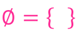
Conjunto universal: es el conjunto que contine todos los elementos con los cuales se trabaja para una situacin especfica
Subconjuntos de un conjunto: conjunto de elementos que tienen las mismas caractersticas y que est incluido dentro de otro conjunto ms amplio.
OPERACIONES ENTRE CONJUNTOS
Unin: consiste en reunir en un solo conjunto todos los elementos de los conjuntos que se unen
Interseccin: consiste en reunir en un solo conjunto todos los elementos comunes de los conjuntos que se estn analizando
Diferencia: consiste en reunir en un solo conjunto todos los elementos contenidos en el conjunto de referencia que no se encuentran en el conjunto de operacin
Complemento: es el conjunto de todos los elementos que no estn en el conjunto de referencia y que le faltan para ser igual al conjunto universal
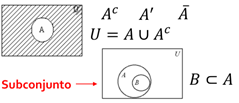
NMEROS NATURALES
Postulados de Peano
El conjunto ℕ de los nmeros naturales es tal que:
1 𝜖 ℕ
Para cada n ∈ ℕ se tiene que n∗∈ ℕ llamado el siguiente de n
Para cada n ∈ ℕ se tiene que n∗ ≠ 1
Si m, n 𝜖 ℕ y m∗ = n∗ entonces m = n
Todo subconjunto S de ℕ que tenga las propiedades:
o a) 1 ∈ 𝑆
o b) 𝑘 ∈ 𝑆 implica que 𝑘∗ ∈ 𝑆 llamado
Es el mismo conjunto ℕ
OPERACIONES EN LOS NMEROS NATURALES
Adicin en los nmeros naturales
Definicin:
n + 1 = n∗ para todo n 𝜖 ℕ
n + m∗ = (n + m) ∗ siempre que n + m
est definido
Multiplicacin en los nmeros naturales
Definicin:
n ∙ 1 = n∗ para todo n 𝜖 ℕ
n ∙ m∗ = (n ∙ m) + n
Propiedades de la adicin y la multiplicacin
ORDEN EN LOS NMEROS NATURALES
Dados dos naturales n y m, decimos que n es menor que m, lo que representamos mediante n < m, si: ∃ 𝑥 ∈ ℕ tal que n + 𝑥 = m
Dados dos naturales m y n, decimos que m es mayor que n, lo que representamos mediante m > n, si: n < m
Ley de tricotoma: Si m y n son nmeros naturales cualesquiera, entonces se verifica una y slo una de las siguientes proposiciones:
n < m
n = m
m < n
Teoremas:
INDUCCIN MATEMTICA
Induccin matemtica: es un razonamiento utilizado en la demostracin de proposiciones que dependen de un parmetro que slo admite valores naturales.
Pasos:
1. Demostrar que la proposicin es vlida para el primer valor admisible (n=1).
2. Suponer que la proposicin es vlida para el caso general, es decir, para el valor n=k (hiptesis de induccin).
3. Demostrar a partir de la hiptesis que la proposicin es vlida para el siguiente valor de k, es decir, k+1 (tesis de induccin).
2.2 El conjunto de los nmeros enteros. Definicin y propiedades: igualdad, adicin, multiplicacin y orden en los enteros. Representacin de los nmeros enteros en la recta numrica.
NMEROS ENTEROS
Nmeros enteros: Es el conjunto de aquellos nmeros que se obtienen mediante la diferencia de dos nmeros naturales: ℤ = {𝑥|𝑥 = m − n; m, n ∈ ℕ}, ℕ ⊂ ℤ
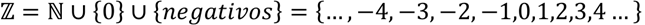

OPERACIONES EN LOS NMEROS ENTEROS
Adicin en los nmeros enteros
Sea a = m - n, b = p - q dos nmeros enteros, con m, n, p, q ∈ N. El nmero a + b se define como:
a + b = (m + p) - (n + q)
Sustraccin en los nmeros enteros
Sea a, b ∈ Z, el nmero a - b se define como:
a b = a + (-b)
Multiplicacin en los nmeros enteros
Sea a = m - n, b = p - q dos nmeros enteros, con m, n, p, q ∈ N. El nmero a ∙ b se define como:
a ∙ b = (m p + n ∙ q) - (n ∙ p + m ∙ q)
Propiedades adicionales de la multiplicacin
Propiedades de la adicin y la multiplicacin
ORDEN EN LOS NMEROS ENTEROS

2.3 El conjunto de los nmeros racionales: definicin a partir de los nmeros enteros. Definicin y propiedades: igualdad, adicin, multiplicacin y orden en los racionales. Expresin decimal de un nmero racional. Algoritmo de la divisin en los enteros. Densidad de los nmeros racionales y representacin de stos en la recta numrica.
NMEROS RACIONALES
Nmeros racionales: Es el conjunto de aquellos nmeros que se obtienen mediante el cociente de dos nmeros enteros (fracciones finitas o infinitas): ℚ = {𝑥|𝑥 = a/b; a, b ∈ ℤ }, ℕ ⊂ ℤ ⊂ ℚ

OPERACIONES EN LOS NMEROS RACIONALES
Adicin en los nmeros racionales

Sustraccin en los nmeros racionales
Multiplicacin en los nmeros racionales
Divisin en los nmeros racionales
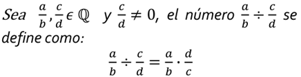
Teorema de la densidad de los racionales
Para todo 𝑥, y 𝜖 ℚ, con 𝑥 < y existe un nmero racional entre 𝑥 y y tal que: 𝑥 < (𝑥+y) / 2 < 𝑥
Propiedades de la adicin y la multiplicacin

2.4 El conjunto de los nmeros reales: existencia de nmeros irracionales (algebraicos y trascendentes). Definicin del conjunto de los nmeros reales; representacin de los nmeros reales en la recta numrica. Propiedades: adicin, multiplicacin y orden en los reales. Completitud de los reales. Definicin y propiedades del valor absoluto. Resolucin de desigualdades e inecuaciones.
NMEROS IRRACIONALES
Nmeros irracionales: Es el conjunto de aquellos nmeros que no se pueden expresar como el cociente o razn de dos nmeros enteros. Son nmeros decimales que poseen infinitas cifras decimales no peridicas): ℚ′ = {, ln 2, 𝜑, e, 𝜋, } = ℝ − ℚ

NMEROS REALES
Nmeros reales: es el conjunto que contiene tanto a los nmeros racionales como a los irracionales:
ℝ = ℚ ∪ Ι = ℚ ∪ ℚ′

OPERACIONES EN LOS NMEROS REALES
Divisin en los nmeros reales

Sustraccin en los nmeros reales

Signo de los nmeros reales

Propiedades adicionales de la multiplicacin


Propiedades de la adicin y la multiplicacin

ORDEN EN LOS NMEROS REALES (DESIGUALDADES E INECUACIONES)

Desigualdad: es una expresin que indica que una cantidad es mayor o menor que otra.
Inecuacin: es una desigualdad en la que hay una o ms cantidades desconocidas (incgnitas) y que slo de verifica para determinados valores de las incgnitas.
Valor absoluto


3. Nmeros complejos.
3.1 Forma binmica: definicin de nmero complejo, de igualdad y de conjugado. Representacin grfica. Operaciones y sus propiedades: adicin, sustraccin, multiplicacin y divisin. Propiedades del conjugado.
NMEROS COMPLEJOS
Nmeros complejos: es el conjunto que contiene tanto a los nmeros reales como a los nmeros imaginario:
ℂ = ℝ ∪ Im = { z |z = a + i b; a, b ∈ ℝ; i2 = -1 }, ℝ = ℚ ∪ ℚ

FORMA BINMICA


Unidad imaginaria

Diagrama de Argand o Plano complejo

FORMA VECTORIAL O FORMA CARTESIANA

Conjugado de un nmero:
Sea z = 𝑎 + b𝑖 un nmero complejo.
El conjugado de z, que
representamos con  ,
se define como:
,
se define como: 
OPERACIONES EN LOS NMEROS COMPLEJOS EN FORMA BINMICA

Propiedades de la adicin y la multiplicacin

3.2 Forma polar o trigonomtrica: definicin de mdulo, de argumento y de igualdad de nmeros complejos en forma polar. Operaciones en forma polar: multiplicacin, divisin, potenciacin y radicacin.
FORMA POLAR O TRIGONOMETRICA
Diagrama de Argand o Plano complejo

OPERACIONES EN LOS NMEROS COMPLEJOS EN FORMA POLAR O TRIGONOMETRICA

3.3 Forma exponencial o de Euler. Operaciones en forma exponencial: multiplicacin, divisin, potenciacin y radicacin.
FORMA EXPONENCIAL
Diagrama de Argand o Plano complejo

OPERACIONES EN LOS NMEROS COMPLEJOS EN FORMA EXPONENCIAL

3.4 Resolucin de ecuaciones con una incgnita que involucren nmeros complejos.

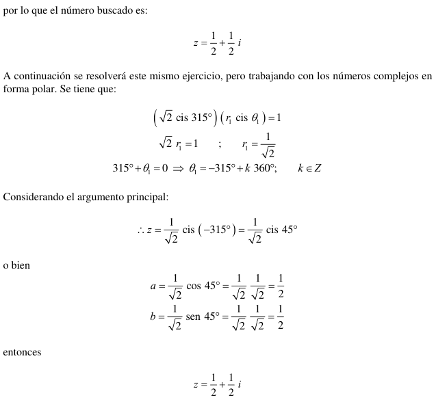


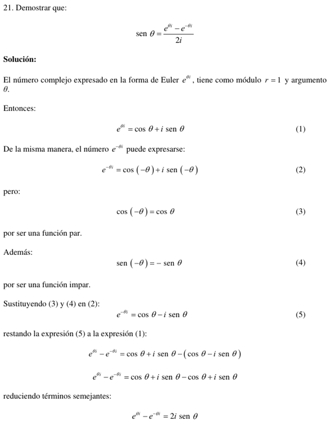
4. Polinomios.
4.1 Definicin de polinomio. Definicin y propiedades: adicin, multiplicacin de polinomios y multiplicacin de un polinomio por un escalar.
POLINOMIO
Trmino o monomio
Trminos semejantes: son aquellos trminos o monomios cuya parte literal es la misma y slo cambian sus coeficientes.

Binomio: es la suma algebraica de 2 trminos o monomios.
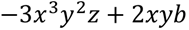
Trinomio: es la suma algebraica de 3 trminos o monomios.

Polinomio: Es una expresin algebraica que constituye la suma o la resta de un nmero finito de trminos o monomios, que presenta la siguiente forma.

Donde los coeficientes son:

Y los trminos del polinomio son:

Una forma simplificada de expresar un polinomio es utilizando el operador sumatoria o suma abreviada.
Grado de un polinomio: Corresponde al mayor exponente presente en los trminos del polinomio.


OPERACIONES DE POLINOMIOS

Igualdad de polinomios

Adicin de polinomios
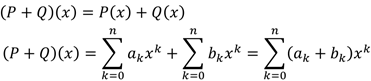
Sustraccin de polinomios

Multiplicacin de polinomios
Propiedades de la adicin y la multiplicacin

4.2 Divisin de polinomios: divisibilidad y algoritmo de la divisin. Teorema del residuo y del factor. Divisin sinttica.
ALGORITMO DE LA DIVICIN


TEOREMA DEL RESIDUO
TEOREMA DEL FACTOR

4.3 Races de un polinomio: definicin de raz, teorema fundamental del lgebra y nmero de races de un polinomio.
RACES DE UN POLINOMIO

Conceptos equivalentes

TEOREMA FUNDAMENTAL DEL LGEBRA

RESUMEN

4.4 Tcnicas elementales para buscar races: posibles races racionales y regla de los signos de Descartes.
RACES RACIONALES
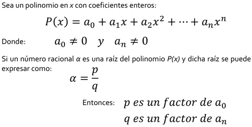
REGLA DE LOS SIGNOS DE DESCARTES

TEOREMA DE LAS COTAS DE LAS RAICES REALES
RAICES IRRACIONALES

RAICES COMPLEJAS
5. Sistemas de ecuaciones.
5.1 Definicin de ecuacin lineal y de su solucin. Definicin de sistema de ecuaciones lineales y de su solucin. Clasificacin de los sistemas de ecuaciones lineales en cuanto a la existencia y al nmero de soluciones. Sistemas homogneos, soluciones triviales y varias soluciones.
ECUACIN LINEAL

SISTEMAS DE ECUACIN LINEAL
Sistema de ecuaciones lineales: es un conjunto de al menos 2 ecuaciones lineales que contienen las mismas variables y que comparten la misma solucin.
Un sistema de m ecuaciones lineales con n incgnitas sobre C es una expresin de la forma:


SISTEMAS HOMOGNEOS
Un sistema de ecuaciones lineales es homogneo cuando todos sus trminos independientes son iguales a cero, es decir:

CLASIFICACIN DE LOS SISTEMAS DE ECUACIONES LINEALES

REPRESENTACIN MATRICIAL DE SISTEMAS DE ECUACIONES

5.2 Sistemas equivalentes y transformaciones elementales. Resolucin de sistemas de ecuaciones lineales por el mtodo de Gauss.
SISTEMAS EQUIVALENTES
Cuando dos sistemas de ecuaciones lineales tienen las mismas soluciones se dice que son equivalentes.
Uno de los mtodos que se emplean para obtener las soluciones de un sistema de ecuaciones lineales se basa en el empleo de ciertas transformaciones, llamadas transformaciones elementales, que no alteran las soluciones del sistema; es decir, transformaciones que al aplicarse a un sistema dan como resultado un sistema equivalente.
Las transformaciones elementales pueden ser de tres tipos y consisten en:
i. Intercambiar dos ecuaciones
ii. Multiplicar una ecuacin por un nmero diferente de cero
iii. Multiplicar una ecuacin por un nmero y sumarla a otra ecuacin, reemplazando esta ltima por el resultado obtenido
MTODO DE GAUSS
El procedimiento ms cmodo para obtener las soluciones de un sistema de ecuaciones lineales es, tal vez, el conocido como mtodo de Gauss.
Este mtodo consiste en la eliminacin consecutiva de las incgnitas con el propsito de llegar a un sistema que tenga forma escalonada.

Para llevar a cabo dicha eliminacin sin alterar las soluciones del sistema, se recurre a las transformaciones elementales que hemos descrito
5.3 Aplicacin de las ecuaciones lineales para la solucin de problemas de modelos fsicos y matemticos.


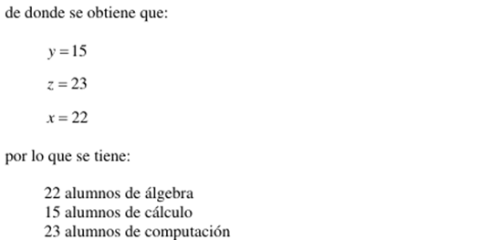
6. Matrices y determinantes.
6.1 Definicin de matriz y de igualdad de matrices. Operaciones con matrices y sus propiedades: adicin, sustraccin, multiplicacin por un escalar y multiplicacin. Matriz identidad.
MATRIZ
Matriz: Es un conjunto de elementos (nmeros, objetos, operadores, etc.) dispuestos en un arreglo bidimensional, de renglones y columnas, encerrados entre parntesis o corchetes, que obedecen ciertas reglas algebraicas
TIPO DE MATRICES
Vector (matriz) rengln o vector (matriz) columna: Es una matriz formada por un solo rengln o una sola columna, respectivamente.

Matriz nula: Es una matriz donde todos sus elementos son ceros.
Matriz rectangular: Es aquella matriz cuyo nmero de renglones es diferente al nmero de columnas, es decir: 𝒎 ≠ 𝒎
Matriz cuadrada: Es aquella matriz cuyo nmero de renglones es igual al nmero de columnas: 𝒎 = n

 OPERACIONES ENTRE MATRICES
OPERACIONES ENTRE MATRICES
Sean dos matrices:
 Igualdad de matrices:
Dos matrices son iguales si son del mismo orden y si los elementos de la misma
posicin son iguales en ambas, es decir:
Igualdad de matrices:
Dos matrices son iguales si son del mismo orden y si los elementos de la misma
posicin son iguales en ambas, es decir:
Suma de matrices: Esta operacin nicamente se puede realizar entre matrices del mismo orden. Para realizarla se suman elemento por elemento en sus posiciones correspondientes:

Diferencia de matrices: Esta operacin nicamente se puede realizar entre matrices del mismo orden. Para realizarla se cambia el signo de cada uno de los elementos de la segunda matriz y posteriormente se realiza la suma de elemento por elemento en sus posiciones correspondientes.
Propiedades de la adicin


 Multiplicacin de
matrices por un escalar: Esta operacin se realiza multiplicando
el escalar por cada uno de los elementos de la matriz, es decir:
Multiplicacin de
matrices por un escalar: Esta operacin se realiza multiplicando
el escalar por cada uno de los elementos de la matriz, es decir:
Propiedades por un escalar

Producto de matrices: Esta operacin nicamente se puede realizar entre matrices donde el nmero de columnas de la primera matriz es igual al nmero de renglones de la segunda:
El elemento que se encuentra en la posicin correspondiente al rengln i y la columna j de la matriz producto AB, se obtiene sumando los productos de los elementos del rengln i de la matriz A por sus elementos correspondientes en la columna j de la matriz B:

Matriz identidad: es una matriz cuadrada de orden n tal que todos los elementos de su diagonal principal son uno y los elementos fuera de ella son cero. Ejemplos

6.2 Definicin y propiedades de la inversa de una matriz. Clculo de la inversa por transformaciones elementales.
TIPOS Y PROPIEDADES
Matriz inversa: la matriz cuadrada de orden n 𝐴 tiene una matriz inversa 𝐴−1 la cual cumple que:
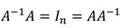
Una de las condiciones necesarias para que una matriz tenga inversa es que debe ser una matriz cuadrada. Adems, la inversa deber ser tambin cuadrada y del mismo orden que A
Matriz no singular: es aquella matriz 𝐴 que S tiene una matriz inversa 𝐴−1
Matriz singular: es aquella matriz 𝐴 que NO tiene una matriz inversa 𝐴−1


6.3 Ecuaciones matriciales y su resolucin. Representacin y resolucin matricial de los sistemas de ecuaciones lineales.

6.4 Matrices triangulares, diagonales y sus propiedades. Definicin de traza de una matriz y sus propiedades.
TIPOS Y PROPIEDADES
Traza de una matriz cuadrada: es la suma de los elementos de su diagonal principal:

Matriz diagonal: es una matriz cuadrada en donde los elementos de su diagonal principal son diferentes de cero y los dems son ceros. Ejemplos:

Matriz triangular superior: es una matriz cuadrada en la cual todos los elementos por debajo de la diagonal principal son cero. Ejemplos:

Matriz triangular inferior: es una matriz cuadrada en la cual todos los elementos por arriba de la diagonal principal son cero. Ejemplos:
6.5 Transposicin de una matriz y sus propiedades. Matrices simtricas, antisimtricas y ortogonales. Conjugacin de una matriz y sus propiedades. Matrices hermitianas, antihermitianas y unitarias. Potencia de una matriz y sus propiedades.
TIPOS Y PROPIEDADES
Matriz transpuesta: la matriz transpuesta de A es la matriz en donde los renglones de A ahora son las columnas de la transpuesta, es decir:

Matriz conjugada: Sea A una matriz de nmeros complejos, su matriz conjugada es aquella matriz en donde se reemplaza cada elemento por su respectivo complejo conjugado: Ā

Matriz simtrica: es aquella matriz cuadrada que es igual a su propia matriz transpuesta: 𝐴 = 𝐴𝑇
Matriz antisimtrica: es aquella matriz cuadrada que es igual al negativo de su propia transpuesta: 𝐴 = −𝐴𝑇
Matriz ortogonal: es aquella matriz cuadrada cuya matriz transpuesta es igual a su inversa: 𝐴𝑇 = 𝐴−1
El determinante de una matriz ortogonal es igual a 1
Matriz unitaria: es aquella matriz cuadrada cuya matriz conjugada transpuesta es igual a su inversa: 𝐴∗ = 𝐴−1
El determinante de una matriz unitaria es igual a 1
Matriz hermitiana: es aquella matriz cuadrada de nmeros complejos que es igual a su propia transpuesta conjugada: 𝐴 = (Ā)𝑇 = 𝐴∗
Matriz antihermitiana: es aquella matriz cuadrada de nmeros complejos que es igual al negativo de su transpuesta conjugada: 𝐴 = −(Ā)𝑇 = -𝐴∗
6.6 Definicin de determinante de una matriz y sus propiedades. Clculo de determinantes: regla de Sarrus, desarrollo por cofactores y mtodo de condensacin.
Determinante: es un nmero asociado a una matriz cuadrada que se puede obtener a partir de diferentes mtodos: det (𝐴) = [𝐴]
Matriz no singular: es aquella matriz 𝐴 que S tiene una matriz inversa 𝐴−1 (det (𝐴) ≠ 0)
Matriz singular: es aquella matriz 𝐴 que NO tiene una matriz inversa 𝐴−1 (det (𝐴) = 0)
PROPIEDADES DE LOS DETERMINANTES:
1) Si todos los elementos de una fila o columna de un determinante son nulos, el valor del determinante es nulo.
2) Si un determinante tiene dos filas o columnas proporcionales el determinante es cero.
3) Si todos los elementos de una fila o columna se multiplican por un escalar, el valor del determinante queda multiplicado por dicho escalar

REGLA DE SARRUS
el determinante se obtiene de restar la multiplicacin de los elementos de la diagonal principal de la matriz y la multiplicacin de los elementos de la diagonal secundaria de la misma matriz.
El inconveniente es que la regla de Sarrus nicamente se puede utilizar para determinantes de matrices de 2x2 y 3x3.
MENORES Y COFACTORES
Menor: el menor o menor complementario de una matriz A es el determinante de alguna submatriz, obtenido de A mediante la eliminacin de una o ms de sus filas o columnas [𝑀𝑖𝑖].
Cofactor: el cofactor del elemento de la matriz [𝑎𝑖𝑖] se denota como [C𝑖𝑖] y est dado por:

6.7 Clculo de la inversa por medio de la adjunta. Regla de Cramer para la resolucin de sistemas de ecuaciones lineales de orden superior a tres.
MATRIZ INVERSA Y MATRIZ ADJUNTA
Matriz inversa: la matriz cuadrada de orden n 𝐴 tiene una matriz inversa 𝐴−1 la cual cumple que:

Una de las condiciones necesarias para que una matriz tenga inversa es que debe ser una matriz cuadrada. Adems, la inversa deber ser tambin cuadrada y del mismo orden que A.
Matriz no singular: es aquella matriz 𝐴 que S tiene una matriz inversa 𝐴−1
Matriz singular: es aquella matriz 𝐴 que NO tiene una matriz inversa 𝐴−1

CLCULO DE LA INVERSA POR DETERMINANTES

Donde Adj(A) se le conoce como la matriz adjunta de A.
Matriz adjunta: la matriz adjunta Adj(A) de la matriz cuadrada de orden n 𝐴 es la matriz de cofactores de su transpuesta.
Esto significa que para encontrar la matriz adjunta primero se transpone la matriz original y despus, con base en ella, se calcula la matriz de cofactores.
RESOLUCIN DE SISTEMAS DE ECUACIONES LINEALES
REGLA DE CRAMER
Se dice que un sistema con n ecuaciones lineales y n incgnitas es de Cramer cuando el determinante de la matriz de los coeficientes es distinto a cero. As todo sistema de Cramer es consistente determinado, es decir, tiene solucin nica.


Con la regla de Cramer se tienen los siguientes casos:


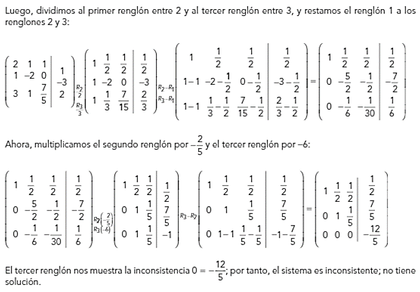
7. Bibliografa
Arzamendi, P. Sergio Roberto. Cuaderno de ejercicios de lgebra.
Len Crdenas, Javier. lgebra.
Lehmann, Charles H. lgebra.
Solar G., Eduardo, y Speziale de G., Leda. lgebra I.
Velzquez T., Juan. Fascculo de induccin matemtica.
CLCULO Y GEOMETRA ANALTICA (1121)
Objetivo(s) del curso:
El alumno analizar los conceptos fundamentales del clculo diferencial de funciones reales de variable real y del lgebra vectorial, y los aplicar en la resolucin de problemas fsicos y geomtricos.
1. Secciones cnicas.
1.1 Definicin de seccin cnica. Clasificacin de las cnicas.
CNICAS
En la Geometra Analtica las parbolas, elipses e hiprbolas, se llaman secciones cnicas, o cnicas, porque resultan de cortar un cono con un plano, como se muestra:
PARBOLAS
Una parbola es el conjunto de puntos en el plano que equidistan de un punto fijo F (llamado foco) y una recta fija (llamada directriz), el punto a la mitad entre el foco y la directriz est sobre la parbola y se llama vrtice. La recta perpendicular a la directriz que pasa por el foco se llama eje de la parbola.
En el siglo XVI Galileo demostr que la trayectoria de un proyectil disparado al aire con un ngulo respecto al suelo es una parbola. Desde entonces, las formas parablicas se han usado en el diseo de los faros de automviles, telescopios reflectores y puentes suspendidos.
ECUACIN ORDINARIA DE LA PARBOLA


ECUACIN DE LA TANGENTE A UNA PARBOLA

ELIPSES
Una elipse es el conjunto de puntos en un plano cuya suma de sus distancias a dos puntos fijos F1 y F2 es una constante. Estos dos puntos fijos se llaman focos (plural del lugar geomtrico foco). Una de las leyes de Kepler es que las rbitas de los planetas en el sistema solar son elipses con el Sol en un foco.
Los puntos correspondientes (a, 0) y (-a, 0) se llaman vrtices de la elipse y el segmento de recta que une los vrtices se llama eje mayor. Para hallar las intersecciones con el eje y hacemos x = 0 y obtenemos y2 = b2, de modo que y =b. El segmento de recta que une (0, b) y (0, -b) es el eje menor.
ECUACIN ORDINARIA DE LA ELIPSE


HIPRBOLAS
Una hiprbola es el conjunto de todos los puntos en un plano cuya diferencia de sus distancias a dos puntos fijos F1 y F2 (los focos) es una constante. Su ecuacin se obtiene restando las distancias de un punto genrico (x, y) a los focos dados e igualando dicha diferencia a la constante.
ECUACIN ORDINARIA DE LA HIPRBOLA
Observe que la definicin de una hiprbola es similar a la de una elipse; el nico cambio es que la suma de las distancias se convirti en una diferencia de distancias. De hecho, la deduccin de la ecuacin de una hiprbola es tambin similar a la que se dio antes para una elipse, entonces la ecuacin de la hiprbola es:

donde c2 = a2 + b2. Observe que las intersecciones con el eje x son de nuevo a y los puntos (a, 0) y (-a, 0) son los vrtices de la hiprbola. Pero si hacemos x = 0 en la ecuacin 6 obtenemos y2 = -b2, lo cual es imposible, as que no hay interseccin con el eje y. La hiprbola es simtrica respecto a ambos ejes.
Para dibujar una hiprbola, es muy til dibujar primero sus asntotas, que son las rectas discontinuas y = (b/a)x e y = -(b/a)x


HIPRBOLAS EQUILTERA O RECTANGULAR Y CONJUGADAS

1.2 Ecuacin general de las cnicas.
RESUMEN RELATIVO A LAS SECCIONES CNICAS.
La parbola, elipse e hiprbola se llaman secciones cnicas o, simplemente cnicas. La ecuacin:

representa un lugar geomtrico real, este debe ser una seccin cnica con uno de sus ejes paralelo (o coincidente) con uno de los ejes coordenados, o bien uno de los casos excepcionales de un punto, dos rectas coincidentes, dos rectas paralelas o dos rectas que se cortan. Esto casos excepcionales se llaman tambin formas lmite de las cnicas o cnicas degeneradas.
La elipse y la hiprbola tienen cada una un centro, se llaman cnicas centrales. La parbola, no teniendo centro, se llama cnica no central. La circunferencia puede considerarse como un caso especial de la elipse.
ECUACIN GENERAL DE SEGUNDO GRADO
Se estudia la ecuacin general de segundo grado.

y con ayuda de la expresin B2 = -4AC, conocida como discriminante, se establece un criterio para determinar la clase de cnica que representa una ecuacin de tal tipo.
.
1.3 Identificacin de los tipos de cnicas a partir de los coeficientes de la ecuacin general y del indicador I=B2-4AC.
DISCRIMINANTE DE LA ECUACIN GENERAL


1.4 Ecuacin de las cnicas en forma ordinaria.
ECUACIN DE LA CIRCUNFERENCIA - FORMA ORDINARIA
La circunferencia es el lugar geomtrico de un punto que se mueve en un plano de tal manera que se conserva siempre a una distancia constante de un punto fijo de ese plano.
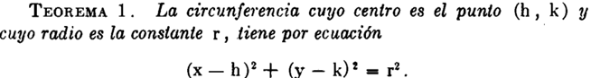
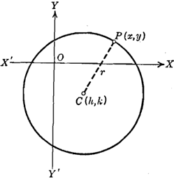

ECUACIN DE LA CIRCUNFERENCIA - FORMA GENERAL
Si desarrollamos la ecuaci6n ordinaria.
Ordenando los trminos resulta:


DETERMINACIN DE UNA CIRCUNFERENCIA SUJETA A TRES CONDICIONES DADAS

FAMILIAS DE CIRCUNFERENCIAS
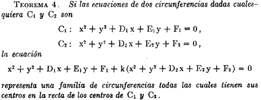
EJE RADICAL


1.5 Rotacin de ejes.
TRASLACIN DE LOS EJES COORDENADOS

ROTACIN DE LOS EJES COORDENADO
2. Funciones.
2.1 Definicin de funcin real de variable real y su representacin grfica. Definiciones de dominio, de codominio y de recorrido. Notacin funcional. Funciones: constante, identidad, valor absoluto.
FUNCIN REAL DE VARIABLE REAL
En Calculo, a una funcin cuyo dominio sea un subconjunto de los nmeros reales, la llamaremos funcin de variable real. A una funcin cuyo contradominio sea un subconjunto de los reales, es decir, una funcin cuyos valores sean nmeros reales, la llamaremos funcin real.
As que con el trmino funcin real de variable real nos referiremos a una funcin cuyo dominio es un subconjunto de los nmeros reales, que toma valores reales.
DISTINGUIR F(X) DE F
Vale la pena insistir en que el smbolo f(x) representa el valor de la funcin f en el punto x. En ocasiones, el smbolo f(x) puede representar una frmula mediante la cual se definen los valores de la funcin f para todos los puntos x de su dominio o para los puntos de algn subconjunto de su dominio, en este caso pudindose tener diferentes frmulas para diferentes subconjuntos, pero para puntos particulares x no olvidemos que f(x) representa un nmero.
El smbolo f(x) fue introducido por el matemtico suizo Leonhard Euler (1707-1783), quiz el ms prolfico de todos los tiempos. Es seguro que Euler no imagin la enorme utilidad que tendra su notacin. Adems de que, con esta notacin, no tena la intencin de distinguir entre lo que es la funcin f y su valor f(x) en un punto arbitrario x, pues en su poca las funciones no se conceban en la forma en la que lo hacemos ahora. En aquella poca, las funciones eran las frmulas mismas, las cuales, en la actualidad, slo son un recurso para definirlas, ni siquiera se permitan tener funciones definidas por varias frmulas, mucho menos se podan aceptar enunciados cien por ciento retricos para definir las funciones, esto es posible hoy en da por el carcter general que ahora le concedemos al concepto de funcin.
Definiremos nuestras funciones mediante enunciados como el siguiente:
Sea f la funcin dada por f(x) = . . .
o mejor an, simplificaremos este enunciado como
Sea la funcin f(x) = . . .
REPRESENTACIN GRFICA
La grfica de una funcin f : X → Y es el conjunto de parejas ordenadas
{(x, f(x)) | x ∈ X} ⊂ X Y
La grfica de una funcin es un conjunto; es un subconjunto de un producto cartesiano. La grfica est definida para todas las funciones en general, sin importar su naturaleza; en el caso particular de funciones de variable real con valores reales, es posible representar las parejas ordenadas (x, f(x)) mediante puntos en un plano, tomando como referencia un sistema de ejes coordenados. Entonces, para funciones reales de variable real, la grfica admite una representacin como conjunto de puntos del plano. En sentido estricto, la grfica es un conjunto de parejas ordenadas de nmeros reales, pero en este caso se identifica con un objeto geomtrico, al cual podemos llamar grfica geomtrica de la funcin. Dado que la grfica geomtrica de una funcin es un excelente recurso para analizar, entender y explicar propiedades de la funcin, abusaremos del lenguaje y usualmente nos referiremos a ella slo como la grfica de la funcin.
As pues, la grfica de una funcin tambin ser, entonces, un conjunto de puntos del plano; a dicho conjunto lo llamamos curva, independientemente del aspecto que tenga. Por ejemplo, hay curvas formadas por segmentos de rectas, en cuyo caso las llamamos curvas poligonales. Tambin hay curvas formadas por lneas curvilneas y segmentos de rectas o incluso por conjuntos de puntos ms complicados.
EJEMPLOS


La grfica como conjunto de puntos del plano es un objeto geomtrico ideal; en ocasiones, no es posible dibujar dichos puntos o quiz no podemos ni siquiera imaginarlos. Por esta razn, el clculo diferencial proporciona herramientas poderosas que nos ayuda a entender cmo es el aspecto de la grfica geomtrica de una funcin dada. Estas herramientas son recursos que nos permiten hacer estudios cualitativos de las grficas como objetos geomtricos. En principio, es imposible tener la grfica geomtrica de una funcin, debido a que, como se dijo antes, es un objeto ideal, pero en ocasiones podemos tener buenas aproximaciones geomtricas de estos objetos matemticos.
DOMINIO
Una funcin f es una regla que asigna a cada elemento x de un conjunto D exactamente un elemento, llamado f (x), de un conjunto E.
Usualmente consideramos funciones para los cuales los conjuntos D y E son conjuntos de nmeros reales. Al conjunto D se le denomina dominio de la funcin. El nmero f (x) es el valor de f en x y se lee f de x. El rango de f es el conjunto de todos los valores posibles de f (x) conforme x vara a travs de todo el dominio. Un smbolo que representa un nmero arbitrario en el dominio de una funcin f se llama variable independiente. Un smbolo que representa un nmero en el rango de f se conoce como variable dependiente.
 Es til pensar en una funcin como una mquina. Si x est
en el dominio de la funcin f, cuando x entra en la mquina, que se acepta como
una entrada, la mquina produce una salida f (x) de acuerdo con la regla de la
funcin. As, podemos pensar el dominio como el conjunto de todas las posibles
entradas, y en el rango como el conjunto de todas las posibles salidas.
Es til pensar en una funcin como una mquina. Si x est
en el dominio de la funcin f, cuando x entra en la mquina, que se acepta como
una entrada, la mquina produce una salida f (x) de acuerdo con la regla de la
funcin. As, podemos pensar el dominio como el conjunto de todas las posibles
entradas, y en el rango como el conjunto de todas las posibles salidas.
Una forma de imaginar una funcin es con un diagrama de flechas. Cada flecha conecta un elemento de D con un elemento de E. La flecha indica que f (x) est asociada con x, f (a) est asociada con a, y as sucesivamente. El mtodo ms comn para la visualizacin de una funcin es con su grfica. Si f es una funcin con dominio D, entonces su grfica es el conjunto de pares ordenados.
{(x, f(x)) | x ∈ D}
NOTACIN FUNCIONAL
Una sola letra como f (o g o F) se utiliza para nombrar una funcin. Entonces f(x), que se lee f de x o f en x, denota el valor que f asigna a x.

LAS FUNCIONES: CONSTANTE, IDENTIDAD Y VALOR ABSOLUTO
Una funcin de la forma f(x) = k, donde k es una constante (nmero real), se denomina funcin constante. Su grfica es una recta horizontal.

Es decir, una funcin es constante si toma el mismo valor para todos los puntos de su dominio, independientemente de cul sea ste. As pues, una funcin f con dominio A ⊂ ℝ sea constante, significa que existe un nmero real c, tal que f (x) = c para todo x ∈ A.
En particular, un enunciado como sea la funcin constante f (x) = c lleva implcita la condicin de que el dominio consiste en todos los reales. Por ejemplo, la funcin f (x) = 4, es una funcin constante, cuyo dominio son todos los reales. Esta funcin toma el valor 4 en cada real x.
La funcin f(x) = x se denomina funcin identidad. Su grfica es una recta que pasa por el origen con pendiente 1. Con base en estas funciones sencillas, podemos construir muchas funciones importantes.

Cualquier funcin que pueda obtenerse a partir de las funciones constantes y la funcin identidad, mediante el uso de las operaciones de suma, diferencia y multiplicacin, se denomina funcin polinomial.
Entre las funciones con ms frecuencia que se utilizan como ejemplos, hay dos que son muy especiales: la funcin valor absoluto, y la funcin mximo entero, Las cuales estn definidas como:
Funcin valor absoluto
Sea la funcin ABS: ℝ → ℝ, definida como
Esta funcin recibe el nombre de funcin valor absoluto, y su valor en todo real x, tambin ser denotado por |x|, es decir:

Como sabemos, la raz cuadrada √ slo se aplica a nmeros positivos o al cero. La raz cuadrada de cero es cero, pero es una convencin en matemticas que el smbolo de la raz cuadrada √, cuando se aplica a un nmero positivo, denota un real positivo. Recordemos que todo nmero positivo tiene dos races cuadradas, una positiva y una negativa, pero el smbolo √a se reserva para representar slo la raz positiva.
Dado el significado del smbolo √a , tenemos que, en general, no es vlido escribir √x2 = x.
Esta igualdad slo es vlida cuando x es positiva o cero. Si x es negativa, tenemos √x2 = - x > 0.
De lo anterior podemos escribir:
con lo que tenemos otra manera de representar la funcin valor absoluto.

funcin mximo entero
║x║= el mayor entero que es menor o igual a x
As, ∣ −3.1∣ =∣ 3.1∣ = 3.1, mientras que ⌊ −3.1⌋ = −4. La funcin valor absoluto es par, ya que ∣ −x∣ =∣ x∣. La funcin mximo entero no es par ni impar, como lo puede ver con base en su grfica.
Con frecuencia recurrimos a las siguientes caractersticas especiales de estas grficas. La grfica de ∣ x∣ tiene un pico en el origen, mientras que la grfica de ║x║ da un salto en cada entero.

2.2 Funciones inyectivas, suprayectivas y biyectivas.
Las funciones se clasifican en inyectivas, suprayectivas y biyectivas dependiendo de cmo relacionan los elementos del dominio (conjunto de entrada) con los del contradominio (conjunto de salida).
FUNCIONES INYECTIVAS (BIUNVOCA)
Consideremos las funciones f : ℝ → ℝ y g: ℝ → ℝ, definidas como

Las cuales poseen muchas diferencias cualitativas muy importantes entre ellas, la primera es que, para la funcin f, tiene pares de puntos dnde esta toma el mismo valor, por ejemplo f(-1) = 1 y f(1) = 1. En la cual incluso de hecho posee una gran infinidad de pares de puntos en donde f toma el mismo valor f(-a) = f(a) = a2. Por otro lado, en el caso de la funcin g esto no ocurre, es decir, que siempre que se tomen dos puntos diferentes de su dominio ℝ, digamos a y b, los valores f(a) y f(b) sern diferentes.
Una funcin con esta caracterstica se dice que es inyectiva. La funcin g es inyectiva, la funcin f no.
Definicin formal:

Una forma de saber si una funcin es inyectiva es visualmente en una grfica, ninguna lnea horizontal corta la funcin ms de una vez.
FUNCIONES SUPRAYECTIVAS
Por otra parte, ahora observemos que las dos funciones, f y g, tienen como dominio y contradominio el conjunto ℝ; la funcin f slo da valores no negativos, es decir, que hay elementos del contradominio que no son valores de la funcin f; por ejemplo, -1 no es un real que pueda ser resultado de la funcin f, es decir, no es un valor de f. Por su parte, la funcin g toma como valor todos los elementos de su contradominio.
Una funcin como g se dice que es suprayectiva, por no mientras que la funcin f no es suprayectiva.
Definicin formal:
Dada una funcin f : A→B

FUNCIONES BIYECTIVAS
Sea f : X → Y una funcin arbitraria.
1. Se dice que f es inyectiva o uno a uno, si puntos diferentes del dominio tienen imgenes diferentes; es decir, si siempre que se tenga x1, x2 ∈ X con x1 ≠ x2 se tiene f(x1) ≠ f(x2). Una manera equivalente de enunciar esta condicin es: si x1, x2 ∈ X son tales que f(x1) = f(x2), entonces necesariamente x1= x2.
2. Se dice que f es suprayectiva o sobre, si cada elemento de su contradominio es imagen de al menos un elemento de su dominio. Es decir, si para cada y ∈ Y existe al menos un x ∈ X, tal que y = f(x).
3. Se dice que f es biyectiva, si es inyectiva y suprayectiva al mismo tiempo.
2.3 Igualdad de funciones. Operaciones con funciones. Funcin composicin. Funcin inversa.
IGUALDAD DE FUNCIONES
Dada una funcin f : A→B
Para una funcin donde A es el primer conjunto (dominio), B el segundo conjunto (codominio) y f la regla de correspondencia, se denota por:
f : A→B
y se lee f es una funcin de A en B o bien f es una funcin que mapea A en B.
Se dice que 2 funciones f y g son iguales si tienen la misma regla de correspondencia y estn definidas en el mismo dominio con mapeo en el mismo contradominio.
f : A→B
g : A→B
f = g
OPERACIONES CON FUNCIONES
Al igual que dos nmeros a y b pueden sumarse para producir un nuevo nmero a + b, tambin dos funciones f y g pueden sumarse para producir una nueva funcin f + g.
Sumas, diferencias, productos, cocientes y potencias
Considere las funciones f y g como:

y suponiendo que f y g tienen sus dominios naturales entonces:
Hemos excluido al 0 del dominio de f/g para evitar la divisin entre cero.
Tambin podemos elevar una funcin a una potencia. Con fn representamos la funcin que a cada x asigna el valor [f(x)]n. As

 Existe
una excepcin en la convencin anterior sobre exponentes; a saber, cuando n =
-1. Reservamos el smbolo f-1 para
la funcin inversa que se estudiar despus.
Existe
una excepcin en la convencin anterior sobre exponentes; a saber, cuando n =
-1. Reservamos el smbolo f-1 para
la funcin inversa que se estudiar despus.
Por lo tanto, f-1 no significa 1/f.
El dominio de f + g, f - g, fg, f/g es la interseccin (parte comn) de los dominios de f y g (sin los nmeros para los que g(x) = 0 en el cociente).
FUNCIN COMPOSICIN
La composicin de funciones es una operacin que, en general, se aplica a pares de funciones, sin importar su naturaleza, siempre y cuando las funciones cumplan con las condiciones apropiadas. Si f y g son dos funciones arbitrarias, para definir su composicin g ○ f, vamos a requerir que los valores f(x) de la funcin f sean elementos del dominio de g.

La composicin de funciones es una operacin muy importante en matemticas, pues hace crecer nuestros recursos para construir funciones, pero debe cuidarse que las funciones cumplan las condiciones que permita componerlas.
Definicin
Sean X, Y y Z tres conjuntos y sean f : X → Y y g : Y → Z dos funciones. La composicin de f y g es la funcin g ○ f :X → Z definida por (g ○ f) (x) = g (f(x)).
A g ○ f tambin la llamaremos la funcin compuesta por f y g. Observe que el hecho de que la funcin compuesta g ○ f est definida, no significa que tambin est definida la funcin f ○ g, para esta ltima se requiere que los valores g(x) de g sean elementos del dominio de f. Para que ambas funciones compuestas g ○ f y f ○ g estn definidas, se requiere Z = X, es decir, la funciones f y g son de la forma f : X → Y y g : Y → X.
Al principio del tema, fue bueno pensar en una funcin como una mquina. Que recibe x como entrada y produce f(x) como salida. Ahora pensamos en dos mquinas que se ponen una tras otra para producir una mquina ms compleja; decimos que hemos compuesto la maquina g con la maquina f.

El dominio de f ○ g es el conjunto de todas las x en el dominio de g tales que g (x) est en el dominio de f. En otras palabras, (f ○ g) (x) est definida siempre que g (x) y f (g(x)) estn definidas.
FUNCIN INVERSA
Uno de los conceptos y recursos ms poderosos para el estudio de las funciones es el de funcin Inversa.
2.4 Clasificacin de funciones segn su expresin: explcitas, implcitas, paramtricas y dadas por ms de una regla de correspondencia.
FUNCIONES EXPLCITAS
FUNCIONES IMPLCITAS
FUNCIONES PARAMTRICAS
FUNCIONES CON MS DE UNA REGLA DE CORRESPONDENCIA
2.5 Funciones algebraicas: polinomiales, racionales e irracionales. Funciones pares e impares. Funciones trigonomtricas directas e inversas y su representacin grfica.
FUNCIONES ALGEBRAICAS
FUNCIONES POLINOMIALES
Las funciones polinomiales son aqullas definidas por expresiones de la forma.

donde a0, a1, , 0n son nmeros reales y n es un entero no negativo. Si an ≠ 0, n es el grado de la funcin polinomial.
Esta familia de funciones incluye las funciones constantes y las funciones lineales (en particular incluye la funcin identidad).
En particular, f(x) = ax + b es una funcin polinomial de primer grado, o funcin lineal, y f(x) = ax2 + bx + c es una funcin polinomial de segundo grado, o funcin cuadrtica.
Una funcin es lineal si es de la forma f(x) = ax + b, donde a y b son nmeros reales. Por ejemplo, la funcin f (x) = -x + 2, es una funcin lineal, en este caso a = -1 y b = 2.
En general, la grfica de una funcin lineal f(x) = ax + b, es una lnea recta, con pendiente a y ordenada en el origen b. En cambio, la grfica de la funcin identidad f(x) = x es una recta de pendiente 1, que pasa por el origen.
Un tipo de funcin polinomial ms compleja que las constantes y las lineales lo constituyen las funciones cuadrticas. Estas funciones tienen la forma f(x) = ax2 + bx + c, donde a, b y c son nmeros reales con a ≠ 0. Esta ltima condicin es indispensable para que la funcin pueda llamarse cuadrtica, en caso contrario ser una funcin lineal. Por ejemplo, f (x) = x2 es una funcin cuadrtica.

El vrtice de la parbola es el punto (0, 0) y el eje de la parbola es el de las ordenadas. La grfica de toda funcin cuadrtica f(x) = ax2 + bx + c es una parbola, para determinar el vrtice y el eje de esta parbola podemos escribir la funcin en la forma f(x) = a(x+ α)2 + β. En este caso, el vrtice de la parbola es el punto (α, β) y el eje es la recta vertical es x = a.

Para escribir la funcin f(x) = ax2 + bx + c en la forma f(x) = a(x+ α)2 + β podemos recurrir a la conocida tcnica de completar cuadrados, como se muestra a continuacin.

Otros casos de funciones polinomiales son las funciones cbicas.
donde a3 = 0, y las funciones curticas


FUNCIONES RACIONALES E IRRACIONALES
FUNCIONES PARES E IMPARES
FUNCIONES TRIGONOMTRICAS DIRECTAS E INVERSAS
2.6 La funcin logaritmo natural, sus propiedades y su representacin grfica.
FUNCIN LOGARITMO NATURAL
PROPIEDADES Y REPRESENTACIN GRFICA
2.7 La funcin exponencial, sus propiedades y su representacin grfica. Las funciones logaritmo natural y exponencial, como inversas. Cambios de base.
FUNCIN EXPONENCIAL
PROPIEDADES Y SU REPRESENTACIN GRFICA.
FUNCION LOGARITMO NATURAL Y EXPONENCIAL COMO INVERSAS
2.8 Las funciones hiperblicas, directas e inversas.
FUNCIONES HIPERBLICAS
DIRECTAS E INVERSAS
2.9 Formulacin de funciones como modelos matemticos de problemas fsicos y geomtricos.
PROBLEMAS FSICOS
PROBLEMAS GEOMTRICO
3. Lmites y continuidad.
3.1 Concepto de lmite de una funcin en un punto. Interpretacin geomtrica.
3.2 Existencia de lmite de una funcin. Lmites de las funciones constante e identidad. Enunciados de teoremas sobre lmites. Formas determinadas e indeterminadas. Clculo de lmites.
3.3 Definicin de lmite de una funcin cuando la variable independiente tiende al infinito. Clculo de lmites de funciones racionales cuando la variable tiende al infinito. Lmites infinitos.
3.4 Obtencin del lmite de sen x, cos x y (sen x) / x cuando x tiende a cero. Clculo de lmites de funciones trigonomtricas.
3.5 Concepto de continuidad. Lmites laterales. Definicin y determinacin de la continuidad de una funcin en un punto y en un intervalo. Enunciado de los teoremas sobre continuidad.
4. La derivada y aplicaciones.
4.1 Definicin de la derivada de una funcin en un punto. Interpretaciones fsica y geomtrica. Notaciones y clculo a partir de la definicin. Funcin derivada.
4.2 Derivacin de la suma, producto y cociente de funciones. Derivacin de una funcin elevada a un exponente racional. Derivacin de una funcin elevada a un exponente real y a otra funcin.
4.3 Derivacin de la funcin compuesta. Regla de la cadena. Derivacin de la funcin inversa.
4.4 Derivacin de las funciones trigonomtricas directas e inversas. Derivacin de las funciones hiperblicas, directas e inversas.
4.5 Definicin de derivadas laterales. Relacin entre derivabilidad y continuidad.
4.6 Derivacin de funciones expresadas en las formas implcita y paramtrica.
4.7 Definicin y clculo de derivadas de orden superior.
4.8 Aplicaciones geomtricas de la derivada: direccin de una curva, ecuaciones de la recta tangente y la recta normal, ngulo de interseccin entre curvas.
4.9 Aplicacin fsica de la derivada como razn de cambio de variables relacionadas.
4.10 Conceptos de funcin diferenciable y de diferencial, e interpretacin geomtrica. La derivada como cociente de diferenciales.
5. Variacin de funciones.
5.1 Enunciado e interpretacin geomtrica de los teoremas de Weierstrass y de Bolzano.
5.2 Enunciado, demostracin e interpretacin geomtrica del teorema de Rolle.
5.3 Demostracin e interpretacin geomtrica del teorema del valor medio del clculo diferencial.
5.4 Funciones crecientes y decrecientes y su relacin con el signo de la derivada.
5.5 Mximos y mnimos relativos. Criterio de la primera derivada. Concavidad y puntos de inflexin. Criterio de la segunda derivada. Problemas de aplicacin.
5.6 Anlisis de la variacin de una funcin.
6. lgebra vectorial.
6.1 Cantidades escalares y vectoriales. Definicin de segmento dirigido. Componentes escalares.
6.2 Concepto de vector como terna ordenada de nmeros reales, mdulo de un vector, igualdad entre vectores, vector nulo y unitario, vectores unitarios i, j, k.
6.3 Operaciones con vectores: Adicin de vectores, sustraccin de vectores.
6.4 Multiplicacin de un vector por un escalar. Propiedades de las operaciones.
6.5 Producto escalar y propiedades.
6.6 Condicin de perpendicularidad entre vectores.
6.7 Componente escalar y componente vectorial de un vector en la direccin de otro.
6.8 ngulo entre dos vectores y cosenos directores.
6.9 Producto vectorial, interpretacin geomtrica y propiedades.
6.10 Condicin de paralelismo entre vectores.
6.11 Aplicacin del producto vectorial al clculo del rea de un paralelogramo. Producto mixto e interpretacin geomtrica.
6.12 Representacin cartesiana, paramtrica y vectorial de las cnicas.
6.13 Curvas en el espacio. Representacin cartesiana, paramtrica y vectorial.
7. Recta y plano.
7.1 Ecuacin vectorial y ecuaciones paramtricas de la recta. Distancia de un punto a una recta.
7.2 Condicin de perpendicularidad y condicin de paralelismo entre rectas. ngulo entre dos rectas. Distancia entre dos rectas. Interseccin entre dos rectas.
7.3 Ecuacin vectorial, ecuaciones paramtricas y ecuacin cartesiana del plano.
7.4 Distancia de un punto a un plano. ngulos entre planos.
7.5 Condicin de perpendicularidad y condicin de paralelismo entre planos.
7.6 Distancia entre dos planos.
7.7 Interseccin entre planos.
7.8 ngulo entre una recta y un plano.
7.9 Condicin de paralelismo y condicin de perpendicularidad entre una recta y un plano.
7.10 Interseccin de una recta con un plano.
7.11 Distancia entre una recta y un plano.
8. Bibliografa.
Barnett, R. A., Ziegler, M. R., y Byleen, K. E. Trigonometra Analtica con Aplicaciones.
Castaeda, De I. P. Erik. Geometra Analtica en el espacio.
Kindle, Joseph H. Geometra Analtica.
Lehmann, Charles H. Geometra Analtica.
Oteyza de Oteyza, E. d. Geometra analtica y trigonometra.
Purcell y Varberg. Clculo.
Rivera Figueroa, A. Clculo y sus fundamentos para ingeniera y ciencias.
Stewart, James. Clculo: Trascendentes tempranas.
REDACCIN Y EXPOSICIN DE TEMAS DE INGENIERA (1124)
Objetivo(s) del curso:
El alumno mejorar su competencia en el uso de la lengua a travs del desarrollo de capacidades de comunicacin en forma oral y escrita. Valorar tambin la importancia de la expresin oral y de la redaccin en la vida escolar y en la prctica profesional. Al final del curso, habr ejercitado habilidades de estructuracin y desarrollo de exposiciones orales y de redaccin de textos sobre temas de ingeniera.
1. Comunicacin y lenguaje.
1.1 Proceso de comunicacin: caractersticas, componentes y funciones.
COMPONENTES
En la Redaccin y Exposicin, el proceso de comunicacin se describe como el acto en el cual un emisor transmite un mensaje a un receptor o destinatario utilizando un canal y un medio, ambos compartiendo el mismo cdigo. El mensaje contiene informacin con un propsito especfico situado en entorno donde se desarrolla la comunicacin (contexto).
Sin embargo, a veces puede presentarse interferencias o ruido durante el proceso, lo cual puede impedir que la comunicacin se realice eficazmente.
La finalidad principal del lenguaje es la comunicacin.
FUNCIONES
Hilda Basulto distingue las funciones del lenguaje como:
Informar
Transmitir datos o conocimiento.

Ensear
Facilitar el aprendizaje o comprensin.
Un buen plan didctico equivale a un buen plan de comunicacin
Conocer a los receptores y tratar de adaptarse a sus requerimientos.
Promover su inters para recibir gustosamente la enseanza.
Adaptar el cdigo comunicativo a las posibilidades receptivas de los alumnos.
Graduar los temas, de los ms fciles a los ms difciles.
Presentar los conocimientos abstractos o generales junto con ejemplos o aplicaciones.
Persuadir o Mover a la accin
Influir en las opiniones, actitudes o comportamientos.

Atraer o Expresar emociones
Captar la atencin del receptor para lograr una interaccin efectiva o comunicar sentimientos y estados de nimo.
CARACTERSTICAS
Interactividad: Permite un intercambio de informacin entre emisor y receptor.
Dinmico: Puede adaptarse a diferentes contextos y situaciones.
Bidireccionalidad: Existe la posibilidad de una respuesta del receptor.
Sistemtico: Involucra elementos definidos que trabajan en conjunto.
1.2 Lenguaje: definicin, tipos y caractersticas.
DEFINICIN
El lenguaje se define como un sistema de smbolos y signos convencionales que son aceptados y usados individual y socialmente, con el fin de comunicar ideas, sentimientos y conocimientos. Se clasifica en:
- Lenguaje natural o articulado: Expresado en lenguas. La lengua es un sistema, convencional, social, econmico y estructural. Representa la combinacin arbitraria y convencional de signos que un grupo social o una comunidad ha adoptado para interactuar verbalmente El habla es la experiencia lingstica creativa e individual que cada hablante realiza de su lengua.
- Lenguaje artificial o formal: Creado con propsitos especficos s un sistema lingstico construido por uno o ms individuos, sobre la base de lenguas histricamente existentes, con validez y difusin universal, es decir, como posibles instrumentos de comprensin internacional, por encima de los idiomas nacionales. (e.g., lenguajes de programacin).
- Lenguaje corporal: Uso de gestos y posturas para transmitir mensajes.
- Lenguaje visual: Comunicacin mediante imgenes, grficos o smbolos.
- Lenguaje artstico: Expresin de ideas y emociones a travs de formas como la msica, pintura o danza.
CARACTERSTICAS
- Arbitrariedad: Los signos utilizados no tienen una relacin intrnseca con lo que representan.
- Convencionalidad: Es un sistema aceptado socialmente.
- Creatividad: Permite la generacin de mensajes nuevos e innovadores.
- Sistematicidad: Est regido por reglas y estructuras gramaticales.
- Universalidad: Es una capacidad propia de todos los seres humanos.
1.3 Relacin entre lenguaje, lengua y habla.
 LENGUAJE
LENGUAJE
Es la capacidad universal y propia del ser humano para comunicarse mediante sistemas de signos. Engloba tanto lenguas naturales como lenguajes artificiales y es una facultad inherente a todos los humanos.
LENGUA
Es el sistema convencional de signos lingsticos adoptado por una comunidad para comunicarse. Representa la materializacin del lenguaje, transmitida de generacin en generacin.
HABLA
Es el uso individual y creativo de la lengua y representa la manifestacin concreta del lenguaje en situaciones especficas. Depende de factores como la intencin del hablante y el contexto de la comunicacin.
1.4 Diferencia entre lengua oral y lengua escrita.
La comunicacin oral es la que de manera innata y social desarrollan los humanos, la cual se realiza mediante dos procesos o destrezas comunicativas: la expresin oral y la comprensin auditiva. Asimismo, esta clase de comunicacin tiene expresiones no verbales que se presentan simultneamente con las verbales: kinsicos (gestos y lenguaje corporal), paralingsticos (rasgos de la voz como tono, altura, velocidad, pausas, titubeos) y proxmicos (la posicin, espacio o distancia que intencionalmente establecen entre s los comunicantes).
La comunicacin escrita es la que se realiza cuando usamos un medio visual o grfico. A diferencia del medio oral, en el visual la expresin escrita es ms lenta y elaborada aunque duradera y transportable. Para poder comunicarnos por escrito, se requiere del aprendizaje y desarrollo de dos destrezas: la comprensin lectora y la expresin escrita.
Entre las caractersticas de la escritura estn:
Es esttica y permanente, depende de un espacio o soporte fsico.
Como proceso de comunicacin, el emisor est lejos del receptor, a quien por lo general no conoce, salvo en la interaccin por correspondencia, y actualmente va internet.
Permite una lectura repetida y un anlisis detallado de la informacin.
Presenta elementos nicos como una organizacin cuidadosa de las unidades del discurso (oraciones y prrafos), expresiones lingsticas ms compactas o tambin elaboradas.
Presenta elementos nicos como la organizacin espacial, la puntuacin, la acentuacin, las maysculas, signos para expresar admiracin o interrogacin, y otros efectos grficos.
1.5 Estructura y funcin gramatical de palabras y oraciones.
En el espaol, se distinguen las siguientes clases de palabras: sustantivo, verbo, adjetivo, adverbio, pronombres, artculos, preposiciones y conjunciones.
Las interjecciones actualmente no se consideran una clase de palabra, sino una forma abreviada que reemplaza una oracin o frase para expresar estados de nimo o afectivos. Siempre se escriben entre signos de exclamacin y son propias del lenguaje coloquial: ay!, fuego!, basta!
La gramtica es fundamental para redactar correctamente. En palabras de Andrs Bello, "La gramtica de una lengua es el arte de hablar correctamente, esto es, conforme al buen uso, que es el de la gente educada, Se analiza:
CLASES DE PALABRAS
ESTRUCTURA DE LAS ORACIONES
Oracin simple
Tiene un verbo conjugado y es independiente. Segn el tipo de predicado, se clasifican en:

Oracin compuesta
Se presenta una relacin de dependencia entre varias oraciones. Puede tener dos o ms verbos. Se clasifica en coordinadas y subordinadas. Las oraciones coordinadas expresan la unin de dos o ms elementos con el mismo valor sintctico e independientes entre s, y pueden estar relacionadas con un nexo o sin l.
Juan lee, Pedro escribe.
Anita camina y Oiga corre.
En las oraciones subordinadas, de una oracin principal dependen una o ms subordinadas:
El profesor desea que sus alumnos aprendan.
Si apruebo el examen, obtendr la beca.
ORACIONES COORDINADAS
Se distinguen dos tipos de coordinacin: por yuxtaposicin, las oraciones se unen sin elementos de enlace, y por nexos coordinantes, las oraciones se unen mediante una palabra o frase prepositiva que las relaciona.
1. Coordinacin por yuxtaposicin copulativa:
La no violencia es la ley de los hombres; la violencia es la ley de los animales. (Gandhi)
(Se sobrentiende y)
2. Coordinacin por yuxtaposicin adversativa:
No tena este filsofo el tonel de Digenes, s una msera casilla. (Azorn)
(Se sobrentiende aunque)
3. Coordinacin por yuxtaposicin causal:
Aprate, no queda tiempo. (Mir)
(Se sobrentiende porque)
4. Coordinacin copulativa: Relacin de suma o adicin. Nexos coordinantes: y (e, ante i), ni.
Los soldados desfilan y la gente aplaude.
La polica interroga al testigo e investiga las pruebas.
No quiere estudiar ni trabajar.
5. Coordinacin adversativa: Relacin de contrariedad parcial o total entre dos enunciados.
a) Adversativa restrictiva: contrariedad entre enunciados, pero sin ser incompatibles:
Mara quiere intentarlo. pero no se atreve. (valor restrictivo)
Mara quiere intentarlo. mas (empero) no se atreve. (arcasmos)
Estos jvenes son listos, aunque no lo parecen. (valor concesivo y tambin adversativo)
b) Adversativa exclusiva: enunciados incompatibles:
No corre. sino vuela; No corre, sino que vuela;
No corre, que vuela; No lo dije yo. sino t.
Frases conjuntivas y adverbios lexicalizados con valor restrictivo o exclusivo: sin embargo, no obstante, con todo, excepto, salvo, menos, antes bien, etc.
6. Coordinacin disyuntiva: Relacin de alternancia exclusiva de enunciados. Nexos: o (u, ante o).
Estudia o consigue un trabajo.
Hazlo voluntariamente u (hazlo) obligado por las circunstancias.
Esto es la guerra o (esto es) la destruccin. (valor de equivalencia)
Come o (y) bebe lo que quieras. (valor copulativo)
7. Coordinacin distributiva: Relacin de alternancia de los enunciados.
a) Con marca lxica: repetida al principio de cada oracin marca el valor distributivo: ya ... ya, ora ... ora, sea ... sea, bien ... bien, ni ... ni (negacin):
Ya estudia, ya trabaja.
Ni estudia, ni trabaja.
b) En forma yuxtapuesta: la coordinacin entre enunciados se establece con palabras correlativas (pronombres y adverbios) puestas al principio de cada oracin:
Unos nacen. otros mueren.
All se trabaja, aqu se descansa
ORACIONES SUBORDINADAS
FUNCIN DE ELEMENTOS GRAMATICALES
La oracin est compuesta por sujeto y predicado. El sujeto es aquello de lo que se habla y el predicado es Jo que se dice del sujeto.
El sujeto tiene como ncleo nominal (N. NOM.), por lo general, a un sustantivo u otra clase de palabra sustantivada, como ya se ejemplific anteriormente, un adjetivo, un pronombre, etc. A su vez, el ncleo nominal puede tener distintos modificadores (MD), como artculos, adjetivos, complemento adnominal, aposicin.

El ncleo verbal del predicado ser un verbo. En el predicado se pueden encontrar distintos tipos de complementos que caracterizan la accin o estado descritos por el verbo, entre ellos, los complementos directo, indirecto y circunstancial.
El complemento directo (CD) expresa lo que se dice del sujeto a travs del verbo, o lo que recibe directamente la accin del verbo. El complemento indirecto (CJ) indica la persona o cosa personificada que recibe el beneficio, provecho, dao o perjuicio de la accin del verbo. El complemento circunstancial (CC) describe en qu circunstancias (tiempo, modo, lugar, compaa, cantidad) se realiza la accin verbal.
1.6 Ejercicios de comunicacin lingstica.
Anlisis de casos prcticos:
- Identificar los elementos de comunicacin (emisor, receptor, mensaje, canal, cdigo, contexto).
- Detectar posibles interferencias o ruido en el proceso comunicativo.
Redaccin de mensajes:
- Crear textos cortos con propsito claro: informar, persuadir o atraer.
- Uso de conectores para garantizar coherencia y cohesin en el mensaje.
Prcticas de lenguaje oral:
- Ejercicios de pronunciacin y articulacin para mejorar la claridad del habla.
- Dinmicas grupales para desarrollar fluidez en la interaccin verbal.
Interpretacin de textos:
- Lectura comprensiva para identificar ideas principales y secundarias.
- Resumir el contenido del texto con vocabulario adecuado.
Construccin de dilogos:
- Creacin de situaciones simuladas para practicar habilidades de interaccin verbal.
- Uso correcto del registro y tono segn el contexto y el interlocutor.
Resolucin de problemas comunicativos:
- Plantear situaciones donde el mensaje no se entiende claramente.
- Proponer ajustes al mensaje para garantizar su efectividad.
2. Estructura del texto escrito.
2.1 Texto: estructura y propiedades (adecuacin, coherencia y cohesin). Marcadores discursivos.
Un texto debe poseer las siguientes propiedades:
- Adecuacin: Adaptarse al propsito comunicativo y al receptor.
- Coherencia: Presentar ideas relacionadas lgica y temticamente.
- Cohesin: Relacin gramatical y lxica entre las partes del texto, utilizando conectores o nexos como pronombres, adverbios y conjunciones.
Los marcadores discursivos funcionan como herramientas para enlazar y organizar ideas, por ejemplo:
- Causa: porque, puesto que.
- Oposicin: pero, aunque.
- Secuencia: primero, despus, finalmente
2.2 Prrafo: caractersticas y clasificacin.
El prrafo es una unidad textual compuesta por oraciones interrelacionadas. Caractersticas principales:
- Coherencia: Las oraciones dependen unas de otras para su interpretacin.
- Cohesin: Utilizacin de nexos y repeticin para conectar ideas.
Clasificacin de prrafos:
- Enumeracin: Lista de propiedades de un objeto o tema.
- Secuencia: Describe pasos o eventos en orden cronolgico.
- Comparacin/contraste: Identifica similitudes y diferencias.
- Desarrollo de concepto: Expone una idea principal y la apoya con ejemplos.
- Causa-efecto: Presenta un evento seguido por sus causas o consecuencias.
2.3 Tipos de textos descriptivos-argumentativos: informe tcnico, artculo cientfico, ensayo y tesis.
Informe tcnico:
- Documento formal que presenta datos objetivos sobre un tema especfico.
Artculo cientfico:
- Texto acadmico que comunica resultados de investigaciones.
Ensayo:
- Texto subjetivo que expone reflexiones personales sobre un tema.
Tesis:
- Documento extenso y estructurado que defiende una hiptesis con base en una investigacin profunda
2.4 Ejercicios de anlisis de estructura de textos.
incluyen:
- Identificar la jerarqua de ideas principales y secundarias.
- Clasificar tipos de prrafos segn sus funciones.
- Reconocer conectores y marcadores discursivos utilizados en un texto.
3. La redaccin.
3.1 Caractersticas de una buena redaccin: claridad, precisin, estilo.
Claridad: Las ideas deben expresarse de forma comprensible para el lector.
Precisin: Uso de vocabulario adecuado, evitando ambigedades.
Estilo: Es el toque personal del autor, pero debe ser funcional, claro y atractivo para el lector
3.2 Operaciones bsicas para la configuracin de textos: descripcin, narracin, exposicin y argumentacin.
Descripcin: Representacin detallada de personas, objetos o situaciones.
Narracin: Relato de hechos reales o ficticios en un orden lgico o cronolgico.
Exposicin: Explicacin de un tema de manera objetiva, con estructura clara y lgica.
Argumentacin: Defensa de una opinin o tesis mediante razonamientos o pruebas
3.3 Errores y deficiencias comunes en la redaccin.
Uso incorrecto de vocabulario (barbarismos, solecismos, cacofonas).
Construcciones gramaticales deficientes, como falta de concordancia.
Ambigedades o anfibologas que dificultan la comprensin
3.4 Reglas bsicas de ortografa. Ortografa tcnica, especializada y tipogrfica.
Ortografa tcnica: Uso correcto de trminos tcnicos y cientficos.
Ortografa especializada: Normas especficas para ciertas disciplinas.
Ortografa tipogrfica:
o Uso adecuado de maysculas, minsculas y puntuacin.
o Respeto por normas internacionales en smbolos y unidades
3.5 Ejercicios prcticos de redaccin.
Identificacin de errores comunes en textos.
Creacin de diferentes tipos de escritos: narrativos, descriptivos, argumentativos.
Correccin y mejora de textos previos para cumplir con los criterios de claridad y precisin.
4. La exposicin oral.
4.1 Preparacin del tema.
Investigar y recopilar informacin confiable.
Definir objetivos claros de la exposicin.
Estructurar el contenido de manera lgica: introduccin, desarrollo y conclusin.
Adaptar el contenido al pblico objetivo y al tiempo disponible
4.2 Esquemas conceptuales y estructuras expositivas.
Usa esquemas conceptuales como mapas mentales, diagramas y cuadros sinpticos para organizar ideas principales y secundarias.
Estructura el contenido con un inicio atractivo, puntos clave bien desarrollados y un cierre contundente que resuma las ideas principales
4.3 Tcnicas expositivas.
Vocalizacin clara: Pronunciacin adecuada y tono variado.
Lenguaje corporal: Uso de gestos naturales, postura firme y contacto visual.
Control del ritmo: Evitar pausas largas o hablar demasiado rpido.
Interaccin: Involucrar al pblico con preguntas o ejemplos.
4.4 Problemas comunes de expresin oral (articulacin deficiente, muletillas, repeticiones, repertorio lxico).
Articulacin deficiente: Pronunciacin incorrecta o falta de claridad.
Muletillas: Uso excesivo de palabras como este, o sea.
Repeticiones: Redundancia innecesaria que distrae al pblico.
Repertorio lxico limitado: Escasa variedad en el uso de vocabulario
4.5 Material de apoyo.
Visuales: Presentaciones en diapositivas, grficos, imgenes.
Audiovisuales: Videos o grabaciones para complementar puntos clave.
Manuales: Folletos o documentos para reforzar los conceptos.
Demostraciones: Uso de ejemplos prcticos o modelos
4.6 Ejercicios prcticos de exposicin oral.
Simulaciones de exposiciones frente a compaeros o mentores.
Ejercicios para mejorar el control del tono y ritmo.
Prctica de improvisacin para responder preguntas o resolver problemas inesperados
5. Ejercicios de redaccin de escritos tcnicos sobre ingeniera.
5.1 Planeacin del escrito.
La planeacin de un texto tcnico implica:
Definicin del objetivo: Clarificar la intencin del escrito, respondiendo a para qu? y para quin?
Delimitacin del tema: Decidir sobre qu se escribir.
Seleccin y jerarquizacin: Identificar el contenido esencial y organizarlo segn su importancia.
5.2 Acopio y organizacin de la informacin.
Fuentes confiables: Reunir datos de libros, artculos, entrevistas, y bases cientficas.
Fichas de trabajo: Mtodo para registrar informacin importante, ya sea textual, resumida o parafraseada, facilitando su consulta posterior.
5.3 Generacin y jerarquizacin de ideas y argumentos. Mapas conceptuales.
Ideas principales y secundarias: Ordenar de lo ms general a lo ms especfico.
Mapas conceptuales: Tcnica para representar grficamente la relacin entre ideas, facilitando la comprensin y planificacin.
5.4 Estructuracin y produccin del texto.
La estructura del texto debe incluir:
- Introduccin: Presentar el tema y objetivos.
- Desarrollo: Exposicin lgica y detallada de las ideas.
- Conclusin: Sntesis de lo discutido y resultados.
5.5 Aparato crtico: citas, sistemas de referencia y bibliografa.
Citas: Pueden ser textuales (entre comillas) o parafraseadas, siempre con referencias.
Bibliografa: Listar las fuentes consultadas en formato ordenado (alfabtico por autor o ttulo).
Sistemas de referencia: Usar normas especficas segn el mbito acadmico (e.g., APA, MLA).
5.6 Revisin y correccin del escrito.
Contenido: Revisar la coherencia, precisin y claridad de ideas.
Forma: Verificar gramtica, ortografa, y estilo tcnico.
Formato: Asegurar que cumpla con las normas requeridas para publicacin
5.7 Versin final del trabajo escrito.
integracin final: Incluir correcciones basadas en revisiones previas.
Presentacin adecuada: Asegurar una estructura limpia, con uso correcto de elementos grficos y tablas si son necesarios.
6. Ejercicios de exposicin oral de temas de ingeniera.
6.1 Planeacin de la exposicin.
Definicin del propsito: Establecer el objetivo principal de la exposicin y su alcance.
Identificacin del pblico: Conocer las caractersticas del pblico para adaptar el discurso.
Delimitacin del tema: Seleccionar un tema especfico, relevante y con un enfoque claro.
6.2 Acopio y organizacin de la informacin.
Fuentes confiables: Utilizar referencias acadmicas, datos tcnicos, e investigaciones recientes.
Mtodos de acopio: Crear fichas de trabajo o resmenes para organizar los datos obtenidos.
Clasificacin de la informacin: Agruparla en categoras segn relevancia y conexin temtica.
6.3 Generacin y jerarquizacin de ideas y argumentos. Mapas conceptuales.
Jerarquizacin: Ordenar las ideas principales y secundarias de manera lgica.
Uso de mapas conceptuales: Representar visualmente las relaciones entre conceptos para facilitar la comprensin y planificacin de la exposicin
6.4 Estructuracin del discurso.
El discurso debe estar dividido en:
- Introduccin:
- Captar la atencin.
- Presentar el tema y su importancia.
- Desarrollo:
- Exponer ideas principales y sus detalles tcnicos.
- Usar ejemplos y analogas.
- Conclusin:
- Resumir los puntos clave.
- Reafirmar el propsito y abrir espacio para preguntas.
6.5 Utilizacin de apoyos visuales y otros recursos.
Apoyos visuales: Diapositivas, grficos, tablas, diagramas.
Recursos adicionales:
- Videos demostrativos.
- Modelos fsicos o prototipos
6.6 Presentacin pblica del tema.
Ensayo previo: Practicar frente a compaeros o en un ambiente similar al real.
Tcnicas de expresin:
- Lenguaje corporal adecuado.
- Vocalizacin clara y control del ritmo.
Gestin del tiempo: Asegurar que cada parte del discurso se ajuste al tiempo estipulado
7. Bibliografa.
CUAIRN RUIDIAZ, Mara, FIEL RIVERA, Amelia Guadalupe - Elaboracin de textos didcticos de ingeniera.
QUMICA (1123)
Objetivo(s) del curso:
El alumno aplicar los conceptos bsicos para relacionar las propiedades de las sustancias en la resolucin de ejercicios; desarrollar sus capacidades de observacin y de manejo de instrumentos.
1. Estructura atmica.
1.1 Importancia de la qumica en las ingenieras.
QUMICA
La Qumica es una de las ciencias fundamentales ms influyentes en el desarrollo y progreso de las ingenieras. Su impacto se manifiesta en la capacidad de los ingenieros para comprender y manipular materiales, procesos y reacciones a nivel molecular, lo que resulta esencial para resolver problemas complejos en una amplia variedad de campos.
La relacin entre la qumica y la ingeniera no es meramente acadmica, sino que se traduce directamente en avances tecnolgicos que han transformado la sociedad moderna. Desde la construccin de infraestructuras hasta la creacin de tecnologas avanzadas, la qumica desempea un papel crucial como base terica y prctica.
En la ingeniera civil, por ejemplo, la qumica ha sido vital para el desarrollo de materiales de construccin ms resistentes y duraderos. El concreto, uno de los materiales ms utilizados en el mundo, se beneficia enormemente de los avances qumicos.
La comprensin de las reacciones de hidratacin del cemento y la interaccin con aditivos permite ajustar las propiedades del concreto, como su resistencia, tiempo de fraguado y durabilidad. Adems, los tratamientos qumicos para proteger estructuras contra la corrosin y los efectos del medio ambiente son esenciales para garantizar su longevidad. En este contexto, la qumica no solo optimiza procesos de construccin, sino que tambin contribuye a la sostenibilidad al permitir el uso de materiales reciclados y la reduccin de emisiones de dixido de carbono.
La ingeniera mecnica tambin encuentra en la qumica una herramienta indispensable, especialmente en el diseo y fabricacin de mquinas y estructuras. Los tratamientos trmicos y qumicos de los metales, como el templado, el recocido y el nitrurado, se utilizan para modificar las propiedades mecnicas y trmicas de los materiales. Estos procesos, fundamentados en principios qumicos, permiten que los ingenieros diseen piezas capaces de soportar altas tensiones, temperaturas extremas y condiciones corrosivas. Adems, la qumica de los lubricantes y refrigerantes es fundamental para garantizar el funcionamiento eficiente y seguro de sistemas mecnicos complejos.
En el mbito de la ingeniera elctrica y electrnica, la qumica se manifiesta en el diseo de materiales avanzados como semiconductores, superconductores y bateras. Los semiconductores, que forman la base de la tecnologa moderna, dependen de una comprensin detallada de las propiedades qumicas y electrnicas de los materiales.
El silicio, ampliamente utilizado en la fabricacin de dispositivos electrnicos, es tratado qumicamente para obtener propiedades especficas que permiten el flujo controlado de electricidad. Asimismo, las investigaciones qumicas han permitido el desarrollo de bateras ms eficientes y duraderas, como las bateras de iones de litio, que alimentan desde telfonos mviles hasta vehculos elctricos.
 La
ingeniera qumica, por su parte, es quizs el campo donde la relacin entre la
qumica y la ingeniera es ms evidente. Los ingenieros qumicos utilizan
principios qumicos para disear y optimizar procesos industriales que producen
una amplia gama de productos, desde combustibles y plsticos hasta medicamentos
y productos alimenticios.
La
ingeniera qumica, por su parte, es quizs el campo donde la relacin entre la
qumica y la ingeniera es ms evidente. Los ingenieros qumicos utilizan
principios qumicos para disear y optimizar procesos industriales que producen
una amplia gama de productos, desde combustibles y plsticos hasta medicamentos
y productos alimenticios.
La qumica permite a estos ingenieros modelar y simular reacciones qumicas a gran escala, identificar condiciones ptimas de operacin y garantizar la seguridad en plantas de produccin. Adems, la ingeniera qumica desempea un papel clave en la transicin hacia fuentes de energa ms limpias, desarrollando biocombustibles, celdas de combustible y tecnologas para la captura y almacenamiento de carbono.
En la ingeniera ambiental, la qumica es esencial para comprender y mitigar los impactos humanos en el medio ambiente. Los ingenieros ambientales utilizan principios qumicos para tratar aguas residuales, controlar emisiones contaminantes y disear procesos sostenibles.
La qumica analtica, en particular, permite detectar y cuantificar contaminantes en aire, agua y suelo, lo que es crucial para evaluar riesgos y garantizar la calidad ambiental. Adems, la qumica verde, una disciplina emergente, se centra en el diseo de procesos y productos que minimizan el uso y la generacin de sustancias peligrosas, promoviendo prcticas ms sostenibles.
Otro campo donde la qumica tiene un impacto significativo es la ingeniera biomdica. Los avances en qumica orgnica y bioqumica han permitido el desarrollo de materiales biocompatibles, como polmeros para prtesis, implantes y dispositivos mdicos.
Adems, la qumica farmacutica es fundamental para el diseo y produccin de medicamentos, vacunas y sistemas de liberacin controlada de frmacos. Los ingenieros biomdicos, al aplicar conocimientos qumicos, contribuyen a mejorar la salud y calidad de vida de las personas mediante innovaciones que integran qumica, biologa y tecnologa.
En la ingeniera de materiales, la qumica es la base para el diseo de nuevos materiales con propiedades especficas. Los materiales compuestos, por ejemplo, combinan polmeros, metales y cermicas para crear estructuras ligeras y resistentes, utilizadas en industrias como la aeroespacial, automotriz y deportiva.
Los avances en nanotecnologa, que tambin tienen races en la qumica, permiten manipular materiales a escala atmica y molecular, dando lugar a propiedades nicas como la superhidrofobicidad, la conductividad trmica y elctrica mejoradas, y la resistencia extrema.
La qumica tambin juega un papel en la ingeniera energtica, especialmente en el desarrollo de tecnologas relacionadas con la generacin, almacenamiento y distribucin de energa. Los principios de la termoqumica son fundamentales para disear sistemas de generacin de energa ms eficientes, como las turbinas de gas y las plantas termoelctricas.
Asimismo, la electroqumica impulsa avances en celdas solares, bateras y sistemas de almacenamiento de energa. La capacidad de entender y manipular reacciones qumicas es esencial para enfrentar los desafos globales relacionados con la energa y el cambio climtico.
Finalmente, la qumica en las ingenieras no solo se limita al diseo y desarrollo de materiales y procesos, sino que tambin es clave en la formacin de ingenieros con pensamiento crtico y habilidades de resolucin de problemas. La capacidad de analizar y modelar fenmenos qumicos proporciona a los ingenieros una ventaja competitiva para abordar desafos interdisciplinarios.
1.2 Descripcin de los experimentos: Thomson, Millikan, Planck, efecto fotoelctrico, espectros electromagnticos.
EXPERIMENTO DE THOMSON
Descubrimiento del electrn mediante el experimento con rayos catdicos, demostrando la relacin carga/masa de las partculas subatmicas.
EXPERIMENTO DE MILLIKAN
Medicin de la carga del electrn con su famoso experimento de la gota de aceite, confirmando la cuantizacin de la carga.
EXPERIMENTO DE PLANCK
Introduccin del concepto de cuantos para explicar la radiacin del cuerpo negro, que marc el inicio de la teora cuntica.
EFECTO FOTOELCTRICO
El efecto fotoelctrico es un fenmeno fundamental que marc el inicio de la fsica cuntica, desafiando las explicaciones clsicas sobre la naturaleza de la luz y su interaccin con la materia. Este fenmeno fue descubierto por Heinrich Hertz y explicado por Albert Einstein, quien recibi el Premio Nobel de Fsica en 1921 por este trabajo. Este ocurre cuando ciertos materiales, especialmente metales, emiten electrones al ser iluminados con luz de una frecuencia adecuada. (Los medidores de luz que se utilizan en las cmaras fotogrficas se basan en el efecto fotoelctrico.)
Descubrimiento y primeros estudios del efecto fotoelctrico
El estudio de la luz y su naturaleza ha sido una preocupacin constante en la historia de la fsica. Isaac Newton propuso que la luz estaba compuesta de partculas, mientras que otros cientficos, como Thomas Young y James Clerk Maxwell, demostraron la naturaleza ondulatoria de la luz a travs de fenmenos como la interferencia y la difraccin. La teora electromagntica de Maxwell consolid la idea de que la luz era una onda electromagntica, capaz de propagarse en el vaco y transportar energa a travs del espacio.
En 1887, Heinrich Hertz, mientras investigaba las ondas electromagnticas predichas por Maxwell, observ un fenmeno que no encajaba en el marco de la teora ondulatoria. Hertz descubri que las chispas elctricas saltaban con mayor facilidad entre dos electrodos metlicos cuando estos eran iluminados por luz ultravioleta.
Este hallazgo fue el primer indicio experimental del efecto fotoelctrico, aunque en ese momento no se comprenda completamente su significado.
Posteriormente, Wilhelm Hallwachs y Philipp Lenard realizaron experimentos que mostraron que ciertos metales emitan electrones cuando eran iluminados por luz de alta frecuencia, como la ultravioleta. Esta emisin de electrones, conocida como fotoemisin, plante serias dudas sobre la teora clsica de la luz, que predeca que la energa de la luz debera depender de su intensidad, no de su frecuencia.
Crisis de la teora clsica y la hiptesis cuntica
La teora clsica, basada en el modelo ondulatorio de la luz, no poda explicar adecuadamente el efecto fotoelctrico. Segn esta teora, aumentar la intensidad de la luz debera incrementar la energa de los electrones emitidos. Sin embargo, los experimentos mostraron que la energa de los electrones emitidos dependa nicamente de la frecuencia de la luz y no de su intensidad. De hecho, no importaba cun intensa fuera la luz, si su frecuencia no superaba un umbral especfico, no se emitan electrones.
Este enigma llev a una crisis en la fsica clsica. La solucin lleg en 1905, cuando Albert Einstein propuso una interpretacin revolucionaria basada en la hiptesis cuntica de Max Planck. Planck haba introducido en 1900 la idea de que la energa electromagntica se emite o absorbe en unidades discretas, o cuantos, para explicar la radiacin del cuerpo negro. Einstein extendi esta idea, postulando que la luz no solo se comporta como una onda, sino que tambin est compuesta de partculas discretas de energa, que llam fotones.
Explicacin de Einstein acerca del fotn
Einstein propuso que cada fotn tiene una energa proporcional a la frecuencia de la luz, segn la ecuacin:

donde E es la energa del fotn, h es la constante de Planck (6.62610−34 J⋅s), y f es la frecuencia de la luz.
Segn esta teora, cuando un fotn incide sobre la superficie de un metal, su energa se transfiere a un electrn. Si la energa del fotn es suficiente para superar la funcin trabajo (ϕ) del metal, que es la energa mnima necesaria para liberar un electrn, el electrn ser emitido. La energa cintica mxima de los electrones emitidos est dada por la ecuacin:

Esta ecuacin explica varios aspectos experimentales del efecto fotoelctrico:
- Existencia de una frecuencia umbral: Si la frecuencia de la luz es menor que un valor crtico (fumbral), no se emiten electrones, sin importar la intensidad de la luz. Esto se debe a que la energa de los fotones es insuficiente para superar la funcin trabajo.
- Dependencia de la energa de los electrones con la frecuencia: A mayor frecuencia de la luz, mayor ser la energa cintica de los electrones emitidos. Esto contrasta con la prediccin de la teora clsica, que sugera que la energa de los electrones debera depender de la intensidad de la luz.
- Independencia de la energa de los electrones con la intensidad: Aumentar la intensidad de la luz solo incrementa el nmero de fotones incidentes y, por lo tanto, el nmero de electrones emitidos, pero no su energa.
- Emisin instantnea de electrones: Segn la teora ondulatoria, debera haber un retraso temporal mientras los electrones absorben suficiente energa para escapar del metal. Sin embargo, los experimentos mostraron que la emisin es prcticamente instantnea, lo que se explica fcilmente si cada fotn transfiere su energa de manera instantnea a un electrn.
Confirmacin experimental y la constante de Planck
La interpretacin de Einstein fue confirmada experimentalmente por Robert Millikan en 1914. Aunque Millikan era escptico respecto a la teora cuntica de Einstein, sus meticulosos experimentos demostraron que la relacin entre la energa cintica mxima de los electrones y la frecuencia de la luz era lineal, tal como predeca la ecuacin de Einstein.
El experimento tpico del efecto fotoelctrico involucra un tubo de vaco con un ctodo y un nodo. La luz incide sobre el ctodo, liberando electrones, que son atrados hacia el nodo, generando una corriente elctrica llamada fotocorriente. Aplicando un potencial de frenado (V0), se puede detener el flujo de electrones. El potencial de frenado est relacionado directamente con la energa cintica mxima de los electrones:

Una grfica del potencial de frenado V0 en funcin de la frecuencia f de la luz da como resultado una lnea recta, cuya pendiente es h/e, permitiendo la determinacin experimental de la constante de Planck.
La dualidad onda-partcula
El efecto fotoelctrico no solo proporcion una explicacin satisfactoria del comportamiento de la luz, sino que tambin llev al desarrollo del concepto de dualidad onda-partcula. Este concepto, fundamental en la fsica cuntica, establece que la luz y otras formas de radiacin electromagntica exhiben tanto propiedades ondulatorias como corpusculares, dependiendo del experimento que se realice.
Por ejemplo, fenmenos como la interferencia y la difraccin demuestran la naturaleza ondulatoria de la luz, mientras que el efecto fotoelctrico y la dispersin Compton revelan su comportamiento como partculas. Esta dualidad fue extendida por Louis de Broglie, quien postul que no solo la luz, sino tambin las partculas materiales, como los electrones, poseen propiedades ondulatorias, dando origen a la mecnica cuntica ondulatoria.
Aplicaciones del efecto fotoelctrico
El efecto fotoelctrico no es solo un fenmeno terico, sino que tiene mltiples aplicaciones prcticas en la tecnologa moderna. Entre las ms destacadas se encuentran:
1.  Celdas
fotoelctricas y paneles solares: Utilizan el efecto fotoelctrico para
convertir la energa de la luz solar en electricidad. Los fotones inciden sobre
materiales semiconductores, liberando electrones que generan una corriente
elctrica.
Celdas
fotoelctricas y paneles solares: Utilizan el efecto fotoelctrico para
convertir la energa de la luz solar en electricidad. Los fotones inciden sobre
materiales semiconductores, liberando electrones que generan una corriente
elctrica.
2. Fotodetectores y cmaras digitales: Los sensores de las cmaras digitales, como los CCD (dispositivos de carga acoplada), emplean el efecto fotoelctrico para convertir la luz en seales elctricas, que luego se procesan para formar imgenes digitales.
3. Visin nocturna: Los dispositivos de visin nocturna amplifican la luz disponible mediante el efecto fotoelctrico. Los fotones que inciden sobre una superficie sensible liberan electrones, que son acelerados y amplificados para formar una imagen visible incluso en condiciones de baja iluminacin.
4. Espectroscopa fotoelectrnica: Esta tcnica se utiliza para estudiar la estructura electrnica de tomos y molculas. Al medir la energa de los electrones emitidos por efecto fotoelctrico, se puede obtener informacin detallada sobre los niveles de energa y las propiedades qumicas de los materiales.
5. Astrofsica y exploracin espacial: El efecto fotoelctrico es fundamental en la deteccin de radiacin csmica y en la observacin de fenmenos astrofsicos. Por ejemplo, los telescopios espaciales utilizan detectores basados en este efecto para capturar imgenes de alta resolucin del universo.
ESPECTROS ELECTROMAGNTICOS
Anlisis de las lneas espectrales de los tomos, mostrando que los electrones ocupan niveles de energa discretos.
1.3 Modelo atmico de Bohr y teora de Broglie.
Modelo de Bohr: Propone que los electrones se mueven en rbitas fijas alrededor del ncleo y emiten o absorben energa al saltar entre niveles discretos. Explic el espectro del hidrgeno, aunque tiene limitaciones para tomos ms complejos.
Teora de De Broglie: Introduce la naturaleza ondulatoria de las partculas subatmicas, postulando que los electrones tienen propiedades de onda y partcula, lo que lleva a la formulacin de la mecnica cuntica.
1.4 Modelo atmico de la mecnica cuntica, nmeros cunticos y estructura electrnica.
El modelo cuntico describe los electrones en trminos de funciones de onda (orbitales) y probabilidades de localizacin, reemplazando el concepto clsico de rbitas.
Los nmeros cunticos (principal, azimutal, magntico y de espn) definen las caractersticas de los electrones y sus configuraciones en los tomos.
La estructura electrnica determina propiedades qumicas y fsicas, como la reactividad y los estados de energa.
1.5 Diamagnetismo, paramagnetismo y ferromagnetismo.
Diamagnetismo: Materiales que generan un campo magntico dbil en oposicin a un campo externo aplicado. No tienen electrones desapareados.
Paramagnetismo: Materiales con electrones desapareados que se alinean dbilmente con un campo magntico externo.
Ferromagnetismo: Materiales con dominios magnticos alineados, capaces de mantener una magnetizacin permanente (e.g., hierro, nquel).
1.6 Dominios magnticos y magnetizacin.
Los dominios magnticos son regiones en un material donde los momentos magnticos estn alineados. En ausencia de un campo externo, los dominios suelen orientarse aleatoriamente.
La magnetizacin ocurre cuando un campo magntico externo alinea los dominios, y en algunos materiales (ferromagnticos), esta alineacin puede persistir incluso despus de retirar el campo.
2. Periodicidad qumica.
2.1 Propiedades de los elementos: masa atmica, punto de ebullicin, carcter cido-base, punto de fusin, carcter metlico, densidad, radio atmico, radio inico, energa de primera ionizacin, estructura cristalina, electronegatividad, conductividad trmica y conductividad elctrica.
Masa atmica: Refleja el promedio ponderado de las masas de los istopos de un elemento. Influye en las tendencias peridicas.
Punto de ebullicin y punto de fusin: Dependen de la estructura electrnica y las fuerzas intermoleculares. Siguen patrones peridicos y varan segn el grupo y el periodo.
Carcter cido-base: Relacionado con la capacidad de los elementos para donar o aceptar protones, variando dentro de los grupos y perodos.
Carcter metlico: Tiende a disminuir de izquierda a derecha a travs de un periodo y aumenta al descender en un grupo.
Densidad: Depende de la masa y el volumen atmicos, mostrando una relacin compleja en la tabla peridica.
Radio atmico e inico: El radio atmico disminuye en un periodo debido al aumento de la carga nuclear efectiva y aumenta en un grupo. Los radios inicos dependen de la carga del ion.
Energa de primera ionizacin: Energa necesaria para eliminar un electrn, aumenta en un periodo y disminuye en un grupo.
Estructura cristalina: Determinada por el empaquetamiento de tomos o iones, con patrones especficos para metales y no metales.
Electronegatividad: Mide la tendencia de un tomo a atraer electrones en un enlace. Aumenta de izquierda a derecha en un periodo y disminuye en un grupo.
Conductividad trmica y elctrica: Propiedades caractersticas de los metales, disminuyen en los no metales.
2.2 Analogas en las propiedades de los elementos para los miembros de un mismo periodo o de un mismo grupo.
Dentro de un mismo periodo: Las propiedades cambian de manera predecible debido a la adicin de electrones en el mismo nivel de energa. Por ejemplo, la electronegatividad y la energa de ionizacin aumentan, mientras que el radio atmico disminuye.
Dentro de un mismo grupo: Los elementos comparten configuraciones electrnicas similares, lo que resulta en propiedades qumicas comparables, como el carcter metlico o la acidez bsica.
3. Enlaces qumicos y fuerzas intermoleculares.
3.1 Teora de enlace valencia.
Explica cmo los tomos comparten electrones para formar enlaces covalentes. Los orbitales atmicos de los tomos interactan para formar un par compartido de electrones, estabilizando la molcula.
3.2 Enlaces qumicos: enlaces covalentes puro, polar y coordinado.
Covalente puro: Se da entre tomos con electronegatividades similares. Los electrones se comparten equitativamente.
Covalente polar: Los electrones se comparten de manera desigual debido a diferencias en electronegatividad.
Coordinado: Un tomo dona ambos electrones del par compartido, mientras el otro no contribuye con electrones.
3.3 Enlace inico.
Resultado de la transferencia completa de electrones de un tomo metlico a un no metlico, formando cationes y aniones que se atraen electrostticamente.
3.4 Fuerzas intermoleculares entre molculas diatmicas.
Incluyen fuerzas de dispersin de London, dipolo-dipolo y enlaces de hidrgeno. Determinan propiedades como el punto de ebullicin y la solubilidad.
3.5 Estructuras de Lewis de molculas sencillas.
Representaciones de las molculas mostrando los electrones de valencia y las conexiones entre los tomos.
3.6 Teora de repulsin de los pares electrnicos de la capa de valencia.
redice la geometra molecular considerando que los pares de electrones se repelen y buscan maximizar su separacin.
3.7 Geometra molecular y polaridad con respecto a tomos centrales.
Determinadas por la disposicin tridimensional de los tomos alrededor del tomo central y la distribucin de la carga elctrica.
3.8 Fases: slida, lquida y gaseosa.
Se distinguen por el orden molecular y la energa cintica. La transicin entre fases depende de la temperatura y presin.
3.9 Fenmenos de superficie: tensin superficial, capilaridad
Tensin superficial: Fuerza que minimiza el rea superficial de un lquido.
Capilaridad: Capacidad de un lquido de ascender o descender en un tubo estrecho debido a fuerzas de adhesin y cohesin.
3.10 Disoluciones: diluidas, saturadas y sobresaturadas.
Diluidas: Contienen poca cantidad de soluto en relacin con el solvente.
Saturadas: Contienen la mxima cantidad de soluto que puede disolverse.
Sobresaturadas: Contienen ms soluto que en una saturada a la misma temperatura.
3.11 Dispersiones coloidales.
Mezclas donde partculas diminutas estn suspendidas en un medio continuo, sin sedimentarse.
3.12 Conductividad elctrica de materiales inicos en disolucin.
Depende de la movilidad de los iones en el solvente. Los compuestos inicos conducen electricidad al disolverse, liberando iones mviles.
4. Teora del orbital molecular y cristaloqumica.
4.1 Teora del orbital molecular para molculas diatmicas.
Los orbitales moleculares se forman a partir de la combinacin de orbitales atmicos. Existen orbitales de enlace, que estabilizan la molcula, y orbitales antienlaces, que la desestabilizan. Este modelo explica propiedades como la longitud y energa de enlace.
4.2 Teora de las bandas.
Desarrollada para describir slidos. En materiales metlicos, las bandas de conduccin y valencia se superponen, permitiendo la libre movilidad de electrones. En semiconductores y aislantes, hay una brecha de energa entre estas bandas, afectando su conductividad elctrica.
4.3 Enlace metlico.
Se basa en un "mar de electrones" deslocalizados que rodean ncleos metlicos. Esto explica propiedades como la conductividad elctrica y trmica, ductilidad y maleabilidad de los metales.
4.4 Aislantes, semiconductores, conductores y superconductores. Aplicaciones.
Aislantes: Materiales con una gran brecha de energa entre la banda de valencia y la de conduccin, impidiendo la movilidad de electrones.
Semiconductores: Tienen una brecha de energa pequea, y su conductividad aumenta con la temperatura.
Conductores: Como los metales, permiten el flujo de electrones libremente.
Superconductores: Materiales que conducen electricidad sin resistencia a temperaturas crticas bajas. Usados en aplicaciones como trenes de levitacin magntica.
4.5 Cristales: celdas unitarias, tipos de cristales.
Celdas unitarias: Son las unidades ms pequeas que, repetidas, forman una red cristalina. Se clasifican en cbica, tetragonal, hexagonal, entre otras.
Tipos de cristales: Incluyen cristales inicos (como el NaCl), covalentes (diamante), metlicos y moleculares (hielo).
5. Estequiometra.
5.1 Conceptos de mol y masa molar.
Mol: Unidad fundamental que representa 6.0221023 partculas, ya sean tomos, molculas o iones.
Masa molar: Masa de un mol de una sustancia, medida en g/mol. Es igual a la masa atmica o molecular promedio.
5.2 Relaciones estequiomtricas: relacin en entidades fundamentales, relacin molar y relacin en masa.
Relacin en entidades fundamentales: Proporcin de tomos o molculas basada en ecuaciones balanceadas.
Relacin molar: Proporcin entre moles de reactivos y productos en una reaccin.
Relacin en masa: Conversin de moles a gramos usando la masa molar.
5.3 Tipos de recciones: redox y cido-base.
Redox: Involucran transferencia de electrones; esenciales en bateras, corrosin y bioprocesos.
cido-base: Reacciones que implican transferencia de protones (H⁺), fundamentales en neutralizaciones.
5.4 Clculos estequiomtricos: reactivos limitante y en exceso, rendimientos terico, experimental y porcentual.
Reactivo limitante: Reactivo que se consume primero, determinando la cantidad de producto.
Reactivo en exceso: Aquel que sobra despus de completar la reaccin.
Rendimiento terico, experimental y porcentual: Proporcin entre el producto real obtenido y el esperado.
5.5 La fase gaseosa y la ecuacin del gas ideal.
La ecuacin PV=nRT describe el comportamiento de los gases, donde P es presin, V volumen, n moles, R la constante de los gases y T temperatura.
5.6 Unidades de concentracin: molaridad, porcentajes masa/masa, masa/volumen y volumen/volumen, fraccin molar y partes por milln.
Molaridad (M): Moles de soluto por litro de solucin.
Porcentajes masa/masa, masa/volumen y volumen/volumen: Indican proporciones en distintas unidades.
Fraccin molar: Relacin de moles de un componente con respecto al total.
Partes por milln (ppm): Proporcin en trazas, usada en anlisis ambientales y qumicos.
6. Termoqumica y equilibrio qumico.
6.1 Calor de una reaccin qumica.
Se refiere al cambio de entalpa (ΔH) asociado con una reaccin qumica.
Reacciones exotrmicas: Liberan calor (ΔH<0).
Reacciones endotrmicas: Absorben calor (ΔH>0).
6.2 Ley de Hess.
Establece que el cambio de entalpa total de una reaccin es independiente del camino tomado entre reactivos y productos.
Permite calcular ΔH de reacciones indirectamente, sumando los ΔH de pasos intermedios.
6.3 Constante de equilibrio de una reaccin qumica.
Representa la relacin entre las concentraciones de productos y reactivos en equilibrio.
Se expresa como Kc para concentraciones molares y Kp para presiones parciales en gases.
K>1: La reaccin favorece
productos.
K<1: Favorece reactivos.
6.4 Principio de Le Chatelier.
Describe cmo un sistema en equilibrio responde a cambios en concentracin, presin o temperatura:
Aumentar la concentracin de un reactivo favorece la formacin de productos.
Incrementar la presin favorece el lado con menos moles de gas.
Cambios de temperatura afectan 𝐾 dependiendo si la reaccin es exotrmica o endotrmica.
7. Electroqumica.
7.1 La electricidad y las reacciones qumicas.
La electroqumica estudia la relacin entre reacciones qumicas y corrientes elctricas, cubriendo fenmenos como las celdas electroqumicas y procesos redox.
7.2 Leyes de Faraday. Equivalente qumico.
Las leyes de Faraday cuantifican la relacin entre la cantidad de electricidad y la cantidad de sustancia transformada en un electrodo:
Primera ley: La masa depositada es proporcional a la cantidad de electricidad.
Segunda ley: La masa depositada depende del equivalente qumico.
El equivalente qumico se relaciona con la masa molar y la valencia del ion involucrado.
7.3 Potencial estndar. Serie de actividad.
El potencial estndar (E∘) mide la tendencia de un elemento a ganar o perder electrones en condiciones estndar.
La serie de actividad clasifica los elementos segn su capacidad reductora u oxidante.
7.4 Procesos electroqumicos.
Incluyen la conversin de energa qumica en elctrica (celdas galvnicas) y de energa elctrica en qumica (electrlisis).
7.5 Galvanizacin.
Proceso para proteger metales recubrindolos con una capa de zinc, que acta como barrera contra la corrosin.
7.6 Electrodepositacin.
Depsito de un metal en un electrodo mediante electrlisis, utilizado en la fabricacin de componentes electrnicos y recubrimientos.
7.7 Corrosin. Inhibidores. Proteccin catdica.
Corrosin: Degradacin de metales por reacciones electroqumicas con el ambiente.
Inhibidores: Sustancias que reducen la velocidad de corrosin.
Proteccin catdica: Mtodo que utiliza un nodo sacrificial o una corriente elctrica para proteger metales.
8. Bibliografa.
CHANG, Raymond - Qumica.
FUNDAMENTOS DE PROGRAMACIN (1122)
Objetivo(s) del curso:
El alumno resolver problemas aplicando los fundamentos de programacin para disear programas en el lenguaje estructurado C, apoyndose en metodologas para la solucin de problemas.
1. Panorama general.
1.1 Evolucin de la programacin.
PROGRAMACIN
La Programacin como disciplina comenz formalmente con el desarrollo de las primeras computadoras en los aos 40, destacndose los aportes de John von Neumann. Desde entonces, se han creado cientos de lenguajes de programacin, que se clasifican en:
- Lenguajes estructurados: como PASCAL, C, BASIC y FORTRAN.
- Lenguajes orientados a objetos: como C++, SMALLTALK y JAVA.
- Lenguajes simblicos: como LISP.
- Lenguajes lgicos: como PROLOG.
Estos lenguajes han evolucionado para hacer ms eficiente la escritura, depuracin y mantenimiento del cdigo. La metodologa estructurada (de arriba hacia abajo) facilita la comprensin y gestin de los programas.
EL ORIGEN DE LA PROGRAMACIN
El primer lenguaje de programacin fue inventado por Joseph Marie Jacquard en 1801, el inventor del telar programable. Jacquard cre unas tarjetas programables que podan insertarse en el telar para leer los cdigos que contenan las instrucciones y automatizar el proceso. Esto permite que cualquier persona con un telar y tarjetas perforadas pueda crear una variedad de diseos de tejidos sin convertirse en un experto en el campo.
En 1833, treinta aos despus, Charles Babbage crea la conocida como mquina diferencial, capaz de resolver no solo sumas y restas, sino tambin ecuaciones.
Ada Lovelace, una mujer formada nicamente en matemticas (considerada una de las primeras programadoras), decidi traducir las memorias del matemtico italiano Luigi Menabrea. Al hacerlo, elabor a mano un lenguaje de programacin que poda calcular la secuencia de Bernoulli con una mquina Bebz, desde se momento creo el primer algoritmo informtico en la historia de la programacin (1842).
1936. En este ao surgi un avance tecnolgico con la mquina de Turing, inventado por Alan Turing, quien fue matemtico y terico informtico que revolucion el mundo de la informtica. Esto demuestra que con la ayuda de algoritmos pueden resolver cualquier problema matemtico.
En 1957 se desarroll el primer lenguaje de programacin real con muchas mejoras y mejoras funcionales, su creador fue John W. Backus, cre el primer lenguaje de programacin de alto nivel, el primero utilizado por los programadores. El lenguaje utilizado es ms cercano al lenguaje que conocemos.
FORTRAN (Formula Translating System) es el lenguaje de programacin ms antiguo que todava se usa en la actualidad.
El lenguaje todava se usa en las industrias automotriz, gubernamental, aeroespacial y de investigacin. Por ejemplo, es muy efectivo para predecir el clima.
HISTORIA DE LOS LENGUAJES DE PROGRAMACIN
1959: COBOL
Cobol (Common Business Oriented Language) se encuentra detrs de la mayor parte de sistemas de transacciones de empresas, como los procesos de las tarjetas de crdito, telefona, gobierno, seales de trfico, entre otros.
Este lenguaje de programacin, desarrollado por Grace Murray Hopper, es un lenguaje uniforme para transacciones empresariales. El objetivo de su creacin era desarrollar un lenguaje que fuera compatible para cualquier ordenador.
1964: BASIC
Desarrollado por alumnos de Darmouth College, Basic fue diseado como un lenguaje simplificado para aquellos que no contaban con grandes conocimientos tcnicos o matemticos.
Una versin modificada de Basic, elaborada por Bill Gates y Paul Allen, fue el primer producto de Microsoft. En 1977, Basic fue integrado en el Apple II para su puesta en marcha.
1969: C
El lenguaje de programacin C se desarroll entre 1969 y 1973, por Dennis Ritchie para los laboratorios Bell Telephone, con el objetivo de utilizarlos en el sistema Unix. C lleg a ser tan potente que gran parte del ncleo de Unix se reescribi con C. De hecho, en la actualidad, Linux sigue basado en C.
1970: PASCAL
Pascal se cre por Niklaus Wirth, que le puso en nombre en honor a Blaise Pascar, el inventor de las calculadoras matemticas.
Este lenguaje se desarroll como una herramienta de enseanza y formacin, aunque su uso es comercial. Por ejemplo, es el lenguaje de programacin que se utiliza en Skype.
1983: C++
En los mismos laboratorios Bells, Bjarne Stroustrup modific el lenguaje C, por lo que surgi C++. Este lenguaje de programacin es uno de los ms populares, y se encuentra en el Top Ten de los lenguajes de programacin desde 1986. Hoy en da se utiliza en Firefox, Adobe PDF Reader y Office.
1991: PYTHON
Guido Van Rossum fue el creador de Python, el lenguaje de programacin ms mundialmente reconocido. Fue creado para resolver lenguajes en el lenguaje ABC y, hoy en da, se sigue utilizando con esta finalidad y tambin, para ms usos. La Nasa, Google y Youtube son algunas de las empresas que lo utilizan.
1993: RUBY
Ruby fue creado por Yukihiro Matsumoto, que utiliz partes de sus lenguajes de programacin preferidos: Perl, Smalltalk, Eiffel, Ada y Lisp. Ahora se utiliza por Basecamp.
1995: PHP, JAVA y JAVASCRIPT
Este lenguaje de programacin fue desarrollado por Rasmus Lerdoff para reemplazar unos scripts de Perl utilizados para el mantenimiento de su web personal. En la actualidad PHP es parte de una arquitectura web integrada en veinte millones de sitios web. Facebook utiliza este lenguaje hoy en da.
En el mismo ao, tambin se cre Java, por un grupo de trabajadores de Sun Microsystems, con el objetivo de poner en marcha los decodificadores para una televisin interactiva. Actualmente, Java est presente en ms de mil millones de ordenadores en todo el mundo y, muchos sitios webs, no pueden funcionar sin Java.
Por otro lado, se desarroll JavaScript. Aunque compartan parte del nombre Java y JavaScript no estn relacionados, ya que tienen una semntica muy diferente. Este ltimo fue creado por Brendan Eich, de Netscape y, hoy en da, de este lenguaje de programacin depende AJAX.
2001: C# y VISUAL BASIC
La llegada de los 2000, llegaron nuevos programas de programacin, como C# y Visual Basic. Junto a los aos noventa, C# culmina como el mejor momento de la historia respecto a los lenguajes de programacin. C# es uno de los lenguajes de programacin ms importantes para crear programas de todo tipo.
2009: GO (DE GOOGLE)
Se trata, nada ms y nada menos, que el lenguaje de programacin creado por Google. 2009, Go, de Google. Se inspira en C, pero es ms complejo.
2012: KOTLIN
Hoy en da, este es uno de los lenguajes de programacin de moda, no porque sea el ms sencillo, sino que Google lo ha sealado como el lenguaje de programacin ptimo para Android.
1.2 Beneficios de la programacin (a la sociedad, a la industria, a la medicina, entre otros).
La programacin ha transformado diversos campos, proporcionando herramientas para:
- Sociedad: automatizacin de tareas cotidianas.
- Industria: optimizacin de procesos productivos y gestin de recursos.
- Medicina: desarrollo de sistemas diagnsticos y control de equipos mdicos.
Estos beneficios se basan en la capacidad de la programacin para crear algoritmos y soluciones adaptadas a necesidades especficas.
1.3 Algoritmos en la solucin de problemas y sus retos.
Los algoritmos son esenciales en la programacin. Para ser efectivos deben cumplir con:
Precisin: definir pasos claros y especficos.
Determinismo: producir siempre los mismos resultados con los mismos datos de entrada.
Finitud: tener una cantidad limitada de pasos.
Un algoritmo consta de tres mdulos principales: entrada de datos, procesamiento de la solucin y salida de resultados. La construccin de algoritmos requiere un anlisis crtico y un razonamiento estructurado.
1.4 Explicar el propsito y el papel de los fundamentos de la programacin en la ingeniera.
La programacin se fundamenta en principios algortmicos y estructurados que permiten:
- Resolver problemas complejos de manera sistemtica.
- Representar soluciones mediante diagramas de flujo y pseudocdigo antes de implementarlas en un lenguaje de programacin.
- Fomentar el desarrollo de habilidades crticas como anlisis, sntesis y solucin de problemas en el mbito de la ingeniera
2. Resolucin de problemas.
2.1 Definicin, planteamiento y modelado del problema.
Definicin
del problema
Resolver problemas requiere un anlisis sistemtico y una modelacin
algortmica para construir una solucin general. La resolucin de problemas
algortmicos incluye:
2.1.1 Formular el problema.
Identificar los datos de entrada, salida y restricciones relevantes.
2.1.2 Analizar el problema.
Estudiar sus elementos esenciales para comprenderlo a fondo.
2.1.3 Disear una estrategia de bsqueda de la solucin.
Establecer un plan claro para buscar la solucin.
2.2 Algoritmos para la resolucin del problema.
2.2.1 Definicin y representacin de algoritmos.
Un algoritmo es un conjunto finito de pasos ordenados que lleva
a la solucin de un problema. Las principales caractersticas incluyen
precisin, determinismo y finitud.
Los algoritmos pueden representarse a travs de:
- Pseudocdigo.
- Diagramas de flujo: Representacin grfica que detalla los pasos del algoritmo
2.2.2 Conversin del planteamiento del problema al algoritmo.
El proceso incluye convertir la comprensin del problema en pasos claros que pueden ser seguidos por una mquina. Esto generalmente comienza con pseudocdigo o diagramas de flujo y termina en un programa funcional.
2.3 Definicin del modelo computacional.
2.3.1 Mquina de Von Neuman.
Arquitectura basada en el almacenamiento de datos y programas en una memoria unificada, fundamental en la mayora de las computadoras modernas.
2.3.2 Mquina de Turing.
Modelo terico que define las capacidades fundamentales de clculo, utilizado para analizar la complejidad computacional de problemas
2.4 Refinamiento del algoritmo paso a paso.
2.4.1 Planteamiento de la solucin del problema.
Crear una estructura inicial que abarque la solucin general del problema.
2.4.2 Descomposicin de la solucin del problema en submdulos.
Divisin en submdulos: Descomponer el problema en partes ms manejables, facilitando su resolucin.
2.4.3 Aplicacin de las estructuras bsicas de control: secuencial, condicional e iterativo.
Estructuras de control: Aplicar estructuras bsicas como:
- Secuencial: Pasos en orden lineal.
- Condicional: Decisiones basadas en condiciones.
- Iterativo: Repeticin de pasos hasta cumplir una condicin.
3. Fundamentos para la construccin de cdigo a partir del algoritmo.
3.1 Sintaxis bsica y semntica.
Sintaxis: Reglas que determinan cmo escribir instrucciones vlidas en el lenguaje de programacin C.
Semntica: Relaciona estas reglas con el significado y propsito de las instrucciones escritas. Una estructura sintcticamente correcta puede carecer de sentido si no se sigue la semntica.
3.2 Variables, tipos, expresiones y asignacin.
Variables: Almacenan valores que pueden cambiar durante la ejecucin de un programa. Deben tener nombres representativos.
Tipos: Determinan la naturaleza del dato almacenado (enteros, reales, caracteres, cadenas, etc.).
Expresiones: Combinan operadores y variables para producir valores.
Asignacin: Operacin que almacena el resultado de una expresin en una variable.
3.3 Estructuras de control condicional e iterativo.
Condicionales: Permiten decisiones en funcin de condiciones. Ejemplo: if-else.
Iterativos: Repeticin de bloques de cdigo hasta que se cumpla una condicin. Ejemplo: for, while.
3.4 Funciones y paso de parmetros.
Las funciones encapsulan bloques de cdigo para ser reutilizados.
Los parmetros pueden pasarse por valor (se copia el dato) o por referencia (se manipula directamente la memoria original).
3.5 Descomposicin estructurada.
Divide un problema en submdulos ms pequeos y manejables.
Cada submdulo debe cumplir una funcin especfica y debe integrarse fcilmente al sistema completo.
3.6 Manejo de E/S.
Entrada: Recopila datos del usuario mediante funciones como scanf.
Salida: Presenta informacin al usuario con funciones como printf.
3.7 Estrategias de depuracin.
3.7.1 Tipo de errores.
Sintcticos: Violaciones de reglas del lenguaje.
Lgicos: Comportamiento inesperado a pesar de la sintaxis correcta.
De ejecucin: Ejemplo, divisin por cero.
3.7.2 Tcnicas de depuracin.
Uso de depuradores para rastrear errores paso a paso.
Inclusin de mensajes de salida para verificar valores intermedios.
Pruebas unitarias de pequeos bloques del programa.
4. Paradigmas de programacin.
4.1 Programacin estructurada
Los paradigmas de programacin son enfoques o estilos que guan la forma en que se desarrollan y estructuran los programas de software. Cada paradigma ofrece una perspectiva distinta para resolver problemas y es ms adecuado segn las caractersticas especficas del problema a abordar. A continuacin, se detallan los principales paradigmas:
La programacin estructurada es un paradigma que promueve la escritura de cdigo de manera clara y ordenada, utilizando estructuras de control como bucles y condicionales, y evitando el uso de instrucciones de salto como goto. Este enfoque facilita la comprensin, mantenimiento y depuracin del cdigo. Lenguajes como C, Pascal y Fortran son ejemplos de lenguajes que soportan este paradigma.
4.2 Programacin orientada a objetos.
La programacin orientada a objetos (POO) organiza el cdigo en "objetos" que representan entidades del mundo real, encapsulando tanto datos como comportamientos. Este paradigma facilita la reutilizacin y modularidad del cdigo, permitiendo construir sistemas ms complejos de manera ms manejable. Lenguajes como Java, Python y C++ son ampliamente utilizados en POO.
4.3 Programacin lgica.
La programacin lgica se basa en la declaracin de hechos y reglas, y la computacin se realiza mediante la inferencia lgica. En este paradigma, se especifica qu se desea lograr, dejando al sistema la tarea de determinar cmo hacerlo. Prolog es uno de los lenguajes ms representativos de este enfoque.
4.4 Programacin paralela.
La programacin paralela se centra en la ejecucin simultnea de mltiples tareas o procesos para mejorar el rendimiento y la eficiencia, especialmente en sistemas con mltiples procesadores o ncleos. Este paradigma es esencial en aplicaciones que requieren procesamiento intensivo y busca reducir los tiempos de ejecucin mediante la concurrencia.
4.5 Principales usos de los paradigmas para la solucin de problemas.
Cada paradigma de programacin es ms adecuado segn el tipo de problema a resolver:
- Programacin Estructurada: Ideal para problemas bien definidos con flujos de control claros y secuenciales.
- Programacin Orientada a Objetos: Adecuada para sistemas complejos que pueden modelarse mediante objetos interactuantes, como aplicaciones grficas y sistemas de gestin.
- Programacin Lgica: til en aplicaciones de inteligencia artificial, sistemas expertos y resolucin de problemas que requieren inferencia lgica.
- Programacin Paralela: Esencial en aplicaciones que demandan alto rendimiento, como simulaciones cientficas, procesamiento de imgenes y anlisis de grandes volmenes de datos.
4.6 Nuevas tendencias.
La evolucin de la tecnologa ha dado lugar a nuevos paradigmas y enfoques en la programacin:
- Programacin Funcional: Enfatiza el uso de funciones puras y evita el estado mutable, facilitando la concurrencia y la prueba de programas. Lenguajes como Haskell y Scala son ejemplos de este paradigma.
- Programacin Reactiva: Se centra en la propagacin de cambios y la gestin de flujos de datos asncronos, siendo til en aplicaciones que requieren alta interactividad y respuesta en tiempo real.
- Programacin Basada en Eventos: Utilizada en el desarrollo de interfaces de usuario y sistemas que responden a eventos externos, como clics de ratn o entradas de teclado.
5. Cmputo aplicado a diferentes reas de la ingeniera y otras disciplinas.
5.1 Tendencia de desarrollo de software.
5.1.1 Software propietario.
Software propietario: Se refiere al software que es propiedad de una empresa o individuo, y su cdigo fuente no est disponible al pblico para su modificacin o distribucin.
5.1.2 Software libre.
Software libre: este tipo de software es de uso, modificacin y distribucin gratuitos. El cdigo fuente est disponible pblicamente y cualquiera puede cambiarlo o mejorarlo.
5.2 Aplicaciones.
5.2.1 Ciencias fsicas y de la ingeniera.
La informtica se utiliza ampliamente en las ciencias fsicas y la ingeniera para simulaciones, modelados y resolucin de ecuaciones complejas que no se pueden realizar manualmente. Ayuda a crear modelos para sistemas, predecir comportamientos y probar teoras.
5.2.2 Ciencias mdicas y de la salud.
La atencin sanitaria se beneficia de las tecnologas informticas para diagnstico, imgenes mdicas, gestin de datos de pacientes y desarrollo de dispositivos mdicos. Permite avances en la investigacin, la optimizacin del tratamiento y la medicina personalizada.
5.2.3 Leyes, ciencias sociales y del comportamiento.
El derecho y las ciencias sociales utilizan la informtica para analizar grandes conjuntos de datos, realizar anlisis estadsticos y modelar comportamientos sociales. Por ejemplo, los modelos predictivos se pueden aplicar en criminologa, economa y sociologa.
5.2.4 Artes y humanidades.
Las artes y las humanidades utilizan la informtica para la creacin de medios digitales, la preservacin de arte, exposiciones virtuales e incluso procesos creativos basados en inteligencia artificial. Permite nuevas formas de expresin y anlisis del patrimonio cultural.
5.2.5 Otras disciplinas.
Otras disciplinas que se benefician de la informtica incluyen la educacin, los negocios, la agricultura y las ciencias ambientales. El uso de software para el anlisis de datos, la toma de decisiones y la automatizacin se extiende a diversos campos, mejorando la eficiencia y la innovacin.
6. Bibliografa.
CAIR, Osvaldo - Metodologa de la Programacin. Algoritmos, Diagramas de Flujo y Programas.
SEGUNDO SEMESTRE
LGEBRA LINEAL (1220)
Objetivo(s) del curso:
El alumno analizar los conceptos bsicos del lgebra lineal, ejemplificndolos mediante sistemas algebraicos ya conocidos, haciendo nfasis en el carcter general de los resultados, a efecto de que adquiera elementos que le permitan fundamentar diversos mtodos empleados en la resolucin de problemas de ingeniera.
1. Grupos y campos.
1.1 Operacin binaria.
OPERACIN BINARIA
En el contexto del lgebra Lineal, una operacin binaria definida en un conjunto no vaco A, es una regla o criterio que asigna a cada par ordenado de elementos de A un nico elemento llamado resultado, que pertenece al mismo conjunto A. Esta necesita el operador y dos operandos (argumentos) para que se calcule un valor. Un ejemplo es:
Operacin Binaria Producto: Representando la operacin por el signo ∘

Podemos expresar la operacin:
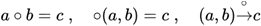
Operador Binaria Suma: El operador de suma + de nmeros naturales es un operador binario, porque requiere dos argumentos:

y tenemos que:
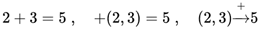
1.2 Estructuras de grupo y de grupo abeliano.
GRUPO
Estructura que poseen los sistemas formados por un conjunto no vaco y una operacin binaria cuando dicha operacin es asociativa, tiene elemento idntico y TODO elemento del conjunto tiene inverso para la operacin.
Sea G un conjunto no vaco y sea * una operacin binaria definida en G. El sistema (G, *) tiene estructura de grupo si se cumplen las siguientes propiedades:
1. Cerradura: ∀ 𝑎, 𝑏 ∈ 𝐺 𝑎 ∗ 𝑏 𝜖 𝐺
2. Asociatividad: ∀ 𝑎, 𝑏, 𝑐 ∈ 𝐺 𝑎 ∗ (𝑏 ∗ 𝑐) = (𝑎 ∗ 𝑏) ∗ 𝑐
3. Existencia de elemento idntico: ∃ 𝑒 ∈ 𝐺 𝑡𝑎𝑙 𝑞𝑢𝑒 𝑒 ∗ 𝑎 = 𝑎 ∗ 𝑒 = 𝑎, ∀𝑎 ∈ 𝐺
4. Existencia de elementos inversos: ∀𝑎 ∈ 𝐺, ∃ 𝑡𝑎𝑙 𝑞𝑢𝑒 𝑎 ∗ = ∗ 𝑎 = 𝑒
GRUPO ABELIANO
Si a la definicin de grupo se le aumenta la propiedad conmutativa de la operacin, la estructura obtenida se conoce como grupo abeliano o grupo conmutativo.
Un grupo (G,*) se dice que es abeliano si:
∀ 𝑎, 𝑏 ∈ 𝐺 𝑎 ∗ 𝑏 = 𝑏 ∗ 𝑎
1.3 Estructura de campo.
Sea K un conjunto de por lo menos dos elementos, y sean +y* dos operaciones binarias definidas en K. El sistema (K,+,*) tiene estructura de campo si:
Para el sistema (K, +)
1) Cerradura
∀ 𝑎, 𝑏 ∈ 𝐾:
𝑎 + 𝑏 ∈ 𝐾
2) Asociatividad
∀ 𝑎, 𝑏, 𝑐 ∈ 𝐾:
𝑎 + (𝑏 + 𝑐) = (𝑎 + 𝑏) + 𝑐
3) Conmutatividad
∀ 𝑎, 𝑏 ∈ 𝐾
𝑎 + 𝑏 = 𝑏 + 𝑎
4) Existencia del elemento idntico (cero del campo)
∀ 𝑎 ∈ 𝐾 ∃ 𝑒 ∈ 𝐾, tal que:
𝑒 + 𝑎 = 𝑎 + 𝑒 = 𝑎
5) Existencia de elementos inversos
∀ 𝑎 ∈ 𝐾 ∃ 𝑎� ∈ 𝐾, tal que:
+ 𝑎 = 𝑎 + = 𝑒
Para el sistema (K, *)
6) Cerradura
∀ 𝑎, 𝑏 ∈ 𝐾:
𝑎 ∗ 𝑏 ∈ 𝐾
7) Asociatividad
∀ 𝑎, 𝑏, 𝑐 ∈ 𝐾:
𝑎 ∗ (𝑏 ∗ 𝑐) = (𝑎 ∗ 𝑏) ∗ 𝑐
8) Conmutatividad
∀ 𝑎, 𝑏 ∈ 𝐾:
𝑎 ∗ 𝑏 = 𝑏 ∗ 𝑎
9) Existencia del elemento idntico para la segunda operacin (unidad del campo)
∀ 𝑎 ∈ 𝐾∃ 𝑢 ∈ 𝐾, tal que
𝑢 ∗ 𝑎 = 𝑎 ∗ 𝑢 = 𝑎
10) Existencia de elementos inversos para la segunda operacin (excepto para el elemento idntico de la primera operacin)
∀ 𝑎 ∈ 𝐾 𝑎 ≠ e, ∃ , tal que
∗ 𝑎 = 𝑎 ∗ = 𝑢
11) Distributividades
∀ 𝑎, 𝑏, 𝑐 ∈ 𝐾
𝑎 ∗ (𝑏 + 𝑐) = (𝑎 ∗ 𝑏) + (𝑎 ∗ 𝑐)
(𝑏 + 𝑐) ∗ 𝑎 = (𝑏 ∗ 𝑎) + (𝑐 ∗ 𝑎)
2. Espacios vectoriales.
2.1 Definicin de espacio vectorial. Propiedades elementales de los espacios vectoriales. Subespacios.
2.2 Isomorfismos entre espacios vectoriales.
2.3 Combinacin lineal. Dependencia lineal. Conjunto generador de un espacio vectorial. Base y dimensin de un espacio vectorial. Coordenadas de un vector respecto a una base ordenada. Matriz de transicin.
2.4 Espacio rengln, espacio columna y rango de una matriz.
2.5 El espacio vectorial de las funciones reales de variable real. Subespacios de dimensin finita. Dependencia lineal de funciones.
3. Transformaciones lineales.
3.1 Definicin de transformacin. Dominio y codominio de una transformacin.
3.2 Definicin de transformacin lineal. Los subespacios ncleo y recorrido de una transformacin lineal. Caso de dimensin finita: relacin entre las dimensiones del dominio, recorrido y ncleo de una transformacin lineal.
3.3 Matriz asociada a una transformacin lineal con dominio y codominio de dimensin finita.
3.4 lgebra de las transformaciones lineales: definicin y propiedades de la adicin, la multiplicacin por un escalar y la composicin de transformaciones.
3.5 La inversa de una transformacin lineal.
3.6 Efectos geomtricos de las transformaciones lineales.
3.7 Definicin de operador lineal. Definicin y propiedades de valores y vectores propios de un operador lineal. Definicin de espacios caractersticos. Caso de dimensin finita: polinomio caracterstico, obtencin de valores y vectores propios.
3.8 Matrices similares y sus propiedades. Diagonalizacin de la matriz asociada a un operador lineal.
4. Espacios con producto interno.
4.1 Definicin de producto interno y sus propiedades elementales.
4.2 Definicin de norma de un vector y sus propiedades, vectores unitarios. Definicin de distancia entre vectores y sus propiedades. Definicin de ngulo entre vectores. Vectores ortogonales.
4.3 Conjuntos ortogonales y ortonormales. Independencia lineal de un conjunto ortogonal de vectores no nulos. Coordenadas de un vector respecto a una base ortogonal y respecto a una base ortonormal. Proceso de ortogonalizacin de Gram-Schmidt.
4.4 Complemento ortogonal. Proyeccin de un vector sobre un subespacio. El teorema de proyeccin.
4.5 Mnimos cuadrados.
5. Operadores lineales en espacios con producto interno.
5.1 Definicin y propiedades elementales del adjunto de un operador.
5.2 Definicin y propiedades elementales de operador normal.
5.3 Definicin y propiedades elementales de operadores simtricos, hermitianos, antisimtricos, antihermitianos, ortogonales y unitarios, y su representacin matricial.
5.4 Teorema espectral.
5.5 Formas cudricas. Aplicacin de los valores propios y los vectores propios de matrices simtricas a las formas cudricas.
6. Bibliografa
GROSSMAN - lgebra lineal.
CLCULO INTEGRAL (1221)
Objetivo(s) del curso:
El alumno utilizar conceptos del clculo integral para funciones reales de variable real y las variaciones de funciones escalares de variable vectorial respecto a cada una de sus variables, para resolver problemas fsicos y geomtricos.
1. Sucesiones y series.
1.1 Definicin de sucesin. Lmite y convergencia de una sucesin. Sucesiones montonas y acotadas.
SUCESIN
Una sucesin de nmeros reales es toda lista o coleccin ordenada infinita de nmeros, de los cuales algunos, o todos ellos, pueden coincidir entre s.
Una sucesin se distingue de un conjunto en dos aspectos. El primero, es que en una sucesin hay un orden; se trata de una coleccin ordenada, de modo que hay un primer elemento, un segundo, etctera. El segundo es que la coleccin ordenada es infinita como lista, aunque no necesariamente como conjunto.
Una manera de escribir o describir una sucesin es mediante una tabla infinita, con lo cual queda explcito el orden.

El nmero del rengln superior indica la posicin o el orden que ocupa el nmero correspondiente del rengln inferior. Este ltimo es propiamente la sucesin. Los tres puntos suspensivos indican que se trata de una lista infinita.
Dada la propiedad de infinitud que tiene una sucesin, da entender que para toda posicin que elijamos, debe ser posible determinar el elemento correspondiente.
Para representar en forma general una sucesin, emplearemos cualquier letra con subndices consecutivos, de esta manera estamos representando el orden correspondiente:
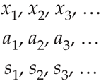
Que una sucesin x1, x2, x3, est definida, significa que es posible determinar el valor de xn para todo entero positivo n. A cada sucesin hay asociada una funcin, digamos:

Conocer la sucesin equivale a conocer la funcin asociada; de hecho, muchos autores definen como sucesin a la funcin misma x: ℝ → ℝ. Se presume que con ello se define de manera rigurosa el concepto de sucesin. Si bien, el concepto de sucesin se precisa al entender sta como funcin, en la prctica resulta til interpretarla como una lista o una coleccin ordenada infinita.
La sucesin {a1, a2, a3, . . .} tambin se denota mediante

TEOREMAS IMPORTANTES SOBRE LMITES Y CONVERGENCIA
Teorema 1
Toda sucesin convergente es acotada.

Teorema 2

Una sucesin {an} tiene el lmite L y lo expresamos como

s podemos hacer que los trminos an se aproximen a L tanto como se quiera tomando n lo suficientemente grande. Si existe, se dice que la sucesin converge (o que es convergente). De lo contrario, se dice que la sucesin diverge (o es divergente).
SUCESIONES MONTONAS Y ACOTADAS
1.2 Definicin de serie. Convergencia de una serie. Propiedades y condiciones para la convergencia.
1.3 Serie geomtrica y serie p.
1.4 Series de trminos positivos. Criterios de comparacin y del cociente o de D'Alembert.
1.5 Series de signos alternados. Criterio de Leibniz.
1.6 Series de potencias.
1.7 Desarrollo de funciones en series de potencias. Serie de Maclaurin, de Taylor y desarrollo de funciones trigonomtricas.
2. Las integrales definida e indefinida.
2.1 Concepto de sumas de Riemann. Concepto de integral definida. Interpretacin geomtrica y propiedades.
2.2 Enunciado e interpretacin geomtrica del teorema del valor medio del clculo integral.
2.3 Definicin de la integral indefinida a partir de la integral definida con el extremo superior variable. Enunciado y demostracin del teorema fundamental de clculo.
2.4 Determinacin de integrales indefinidas inmediatas. Cambio de variable.
2.5 Integrales de funciones cuyo resultado involucra a la funcin logaritmo natural.
2.6 Regla de L'Hpital y sus aplicaciones a formas indeterminadas en lmites de funciones.
2.7 La integral impropia.
3. Mtodos de integracin.
3.1 Integracin por partes.
3.2 Integrales de expresiones trigonomtricas e integracin por sustitucin trigonomtrica.
3.3 Integracin por descomposicin en fracciones racionales.
3.4 Aplicaciones de la integral definida al clculo de: rea en coordenadas cartesianas, longitud de arco en coordenadas cartesianas y polares, y volmenes de slidos de revolucin.
4. Derivacin y diferenciacin de funciones escalares de varias variables.
4.1 Definicin de funciones escalares de variable vectorial. Regin de definicin.
4.2 Representacin grfica para el caso de funciones de dos variables independientes. Curvas de nivel.
4.3 Conceptos de lmites y continuidad para funciones escalares de variable vectorial de dos variables independientes.
4.4 Derivadas parciales e interpretacin geomtrica para el caso de dos variables independientes. Vector normal a una superficie. Ecuaciones del plano tangente y de la recta normal.
4.5 Derivadas parciales sucesivas. Teorema de derivadas parciales mixtas.
4.6 Funcin diferenciable. Diferencial total.
4.7 Funcin de funcin. Regla de la cadena.
4.8 Funcin implcita. Derivacin implcita en sistemas de ecuaciones.
4.9 Concepto de gradiente. Operador nabla. Definicin de derivada direccional. Interpretacin geomtrica y aplicaciones.
5. Bibliografa.
STEWART, James - Clculo Trascendentes tempranas.
FSICA EXPERIMENTAL (1223)
Objetivo(s) del curso:
El alumno desarrollar su capacidad para elaborar modelos matemticos y grficos a partir de fenmenos fsicos que le permitirn estudiar dichos fenmenos y determinar su comportamiento bajo diferentes condiciones, estimulando sus actitudes de observacin, investigacin y creatividad. Emplear sus habilidades en el manejo de instrumentos de medicin y de los sistemas de unidades ms usuales en ingeniera.
1. Fsica e ingeniera.
1.1 Definicin de fsica y su campo de estudio.
FSICA
La fsica es una ciencia experimental; es una de las ciencias naturales fundamentales que se ocupa del estudio de las propiedades y el comportamiento de la materia, la energa, el espacio y el tiempo. A travs de ella, se busca comprender cmo interactan estos elementos entre s, estableciendo relaciones cuantitativas y cualitativas. Es considerada la base de muchas otras ciencias, ya que proporciona los principios esenciales sobre los cuales se sustentan disciplinas como la qumica, la biologa y la astronoma.
La fsica puede definirse como la ciencia que investiga los conceptos fundamentales de la materia, la energa y el espacio, as como las relaciones entre ellos.
El campo de estudio de la fsica abarca desde los fenmenos ms microscpicos, como las interacciones entre partculas subatmicas, hasta los eventos macroscpicos, como el movimiento de los cuerpos celestes. Entre sus reas de inters destacan la mecnica, la termodinmica, la ptica, el electromagnetismo y la fsica moderna, que incluye la teora cuntica y la relatividad. Su carcter experimental permite formular y validar hiptesis mediante observaciones y experimentos controlados. A medida que evoluciona la tecnologa, los lmites de la fsica se amplan, dando lugar a nuevas preguntas e investigaciones en reas como la nanotecnologa y la astrofsica.
NATURALEZA Y METODOLOGA
La naturaleza de la fsica radica en su capacidad para analizar y predecir fenmenos naturales a travs de un enfoque sistemtico. En este sentido, el mtodo cientfico es una herramienta esencial. Este mtodo incluye varias etapas clave: la observacin inicial de un fenmeno, la formulacin de hiptesis para explicarlo, la experimentacin para validar esas hiptesis y, finalmente, el establecimiento de teoras o leyes basadas en los resultados obtenidos. Sin embargo, la fsica no se limita al estudio emprico; tambin incluye una fuerte componente terica, que permite modelar sistemas complejos y resolver problemas matemticamente.
TEORA: Decir que una idea es una teora NO implica que se trate de una divagacin o de un concepto sin comprobar. Ms bien, una teora es una explicacin de fenmenos naturales basada en observaciones y en los principios fundamentales aceptados.
Por otro lado, la fsica no solo se limita a describir fenmenos que ya conocemos. Tambin tiene un carcter predictivo. A travs de modelos matemticos y simulaciones, los fsicos son capaces de anticipar resultados o efectos que an no han sido observados experimentalmente. Un ejemplo famoso es la prediccin de la existencia del bosn de Higgs, una partcula subatmica cuya presencia fue confirmada dcadas despus de haber sido propuesta por la teora del modelo estndar de la fsica de partculas.
En trminos educativos, la fsica es una de las ciencias ms exigentes, ya que requiere un entendimiento slido de conceptos matemticos avanzados, como el clculo diferencial, integral y vectorial, la estadstica y el lgebra lineal. Las matemticas son, de hecho, el lenguaje universal de la fsica, ya que permiten expresar relaciones complejas de una manera precisa y cuantificable.
Cada estudiante que entra en un curso de fsica para principiantes debera contar ya con los requisitos y las habilidades necesarias para aprobarlo; por ende, si no lo hace se deber a otras razones: falta de motivacin, una excesiva carga de trabajo, un empleo externo, enfermedades o problemas personales.
Los consejos siguientes provienen de profesores con experiencia que han tenido xito en los cursos para estudiantes de los primeros niveles de fsica.
La responsabilidad del aprendizaje le corresponde al estudiante. El maestro es un mero facilitador, la escuela es un simple campus y el texto es slo un libro. Asista puntualmente a las clases, preparado para los temas que se expondrn. Estudie antes el material y anote las preguntas que desee plantear al profesor.
El aprendizaje oportuno es aprendizaje eficaz. Es mejor estudiar mnimo una hora cada da de la semana que estudiar 20 horas el sbado y el domingo. Despus de cada clase o exposicin emplee su hora libre ms prxima para reforzar lo que ha aprendido de los temas presentados. Repase algunos ejemplos. Cuanto ms tiempo deje pasar ms olvidar de la clase y perder ms tiempo.
Si espera hasta el fin de semana necesitar al menos una hora simplemente para revisar y reconstruir la clase a partir de sus notas. Estudiar todo un poco antes del examen no funciona, mejor repase los problemas que ya haya resuelto y trabaje en libros otros semejantes.
El aprendizaje cabal va ms all del saln de clases. A fin de retener y aplicar lo aprendido en el saln, es indispensable que resuelva problemas por su cuenta. Solicite la ayuda de otras personas, incluida la del profesor, despus de haberse esforzado en contestar los problemas asignados. No hay sustituto para la participacin activa en el pensamiento y en los procedimientos necesarios para resolver problemas.
Repase las habilidades bsicas. Las Matemticas tcnicas y comprensin lectora, se destacan por ser las habilidades que tal vez estn un tanto dbiles o haya que pulir. Asegrese de que entiende bien esos temas.
Estudie o vea el plan de actividades y estudios. Procure estar enterado de los temas que se incluirn en los exmenes, cundo se llevarn a cabo stos y cmo influirn en la calificacin final.
Busque un compaero y pdale su nmero telefnico. Establezca un sistema de compaerismo donde cada uno informe al otro sobre las actividades de clase o de laboratorio a las que no haya asistido. Pida a esa persona que recoja los materiales impresos o digitales y las instrucciones que se den cuando usted no est presente.
La organizacin es la clave del verdadero aprendizaje. Mantenga al da una carpeta, dividida por secciones con sus respectivos ttulos: Material impreso recibido, Notas, Problemas, Exmenes calificados, Prcticas de laboratorio calificadas, etc.
Si tiene dificultades, pida ayuda cuanto antes. Hoy en da los estudiantes tienen a su alcance una gran cantidad de material de estudio que antiguamente slo exista en sueos. Hay tutoriales asistidos por computadora, internet, Inteligencias Artificiales, guas de soluciones, manuales de resolucin de problemas e incluso otros libros de textos que explican los mismos temas. Su profesor le indicarn los ms apropiados para usted, pero usted es responsable de obtenerlos.
CAMPOS DE ESTUDIO DE LA FSICA
El campo de estudio de la fsica es extremadamente amplio y abarca desde los fenmenos ms pequeos, como las interacciones de partculas subatmicas, hasta los ms grandes, como la formacin y evolucin del universo. Esta amplitud se refleja en las mltiples ramas de la fsica, cada una de las cuales se centra en aspectos especficos del mundo natural. Algunas de estas ramas:
1. Mecnica: Es la rama que estudia el movimiento y la interaccin de los cuerpos. Incluye la mecnica clsica, basada en las leyes de Newton, y la mecnica cuntica, que describe el comportamiento de partculas a nivel subatmico. La mecnica clsica encuentra aplicaciones en ingeniera estructural, diseo de maquinaria y construccin, mientras que la mecnica cuntica es esencial en la tecnologa moderna, como los semiconductores y la computacin cuntica.
2. Termodinmica: Examina las propiedades trmicas de los sistemas, como la transferencia de calor, la energa y el trabajo. Es crucial en disciplinas como la ingeniera mecnica, la climatologa y la energa renovable. La termodinmica tiene aplicaciones prcticas en motores, refrigeradores y plantas de energa.
3. Electromagnetismo: Se centra en las fuerzas elctricas y magnticas, y en cmo interactan con la materia. Esta rama ha sido fundamental para el desarrollo de tecnologas como la electricidad, la comunicacin inalmbrica y la informtica.
4. ptica: Estudia la luz y los fenmenos relacionados con su propagacin, reflexin, refraccin e interferencia. La ptica tiene aplicaciones prcticas en dispositivos como cmaras, microscopios y telescopios, as como en tecnologas emergentes como la realidad aumentada.
5. Ondas y Acstica: La fsica de ondas y acstica estudia los fenmenos relacionados con la propagacin de perturbaciones a travs de un medio y el comportamiento del sonido. En trminos generales, una onda es una oscilacin que transfiere energa de un lugar a otro sin que haya un transporte neto de materia. La rama de ondas y acstica no solo abarca la teora bsica sobre las propiedades de las ondas, como frecuencia, longitud de onda, amplitud y velocidad, sino que tambin se centra en fenmenos complejos como la interferencia, la difraccin y la resonancia. Estos conceptos son fundamentales para comprender fenmenos como la formacin de ecos, la amplificacin sonora en instrumentos y la propagacin de ondas en medios no homogneos.
6. Fsica Moderna: Incluye teoras ms recientes como la relatividad y la mecnica cuntica. Esta rama ha revolucionado nuestra comprensin del universo al proporcionar explicaciones sobre el espacio-tiempo, la energa nuclear y la estructura fundamental de la materia. La fsica moderna tambin est en la base de innovaciones tecnolgicas como la energa nuclear y los sistemas GPS.
7. Astrofsica y Cosmologa: Exploran los fenmenos que ocurren a escala csmica, incluyendo la formacin de estrellas, galaxias y el origen del universo. Estas reas combinan la fsica con la astronoma para responder preguntas fundamentales sobre la existencia y el destino del cosmos.
8. Fsica Aplicada: Se centra en el uso de principios fsicos para resolver problemas prcticos en ingeniera, tecnologa y medicina. Un ejemplo destacado es la fsica mdica, que aplica conocimientos de radiacin y mecnica para el diagnstico y tratamiento de enfermedades.
RELEVANCIA EN LA SOCIEDAD
La fsica no solo tiene un impacto terico, sino tambin prctico en la sociedad. Gracias a esta ciencia, se han desarrollado tecnologas que han transformado nuestra vida cotidiana, como la electricidad, los telfonos mviles, los satlites y las computadoras. Adems, la fsica ha sido instrumental en enfrentar desafos globales, como la bsqueda de fuentes de energa sostenibles, el cambio climtico y la exploracin espacial.
Por otro lado, la fsica tambin juega un papel importante en la educacin y la formacin cientfica, ya que fomenta habilidades crticas como el razonamiento lgico, la resolucin de problemas y la innovacin. Estos atributos son esenciales para cualquier campo profesional en el siglo XXI, desde la investigacin acadmica hasta la industria tecnolgica.
1.2 Clasificacin de la fsica: clsica y moderna.
La fsica, como una de las ciencias fundamentales, busca entender las leyes que rigen el comportamiento del universo desde las partculas ms pequeas hasta las estructuras ms grandes del cosmos. Su clasificacin en fsica clsica y fsica moderna surge de la necesidad de abarcar fenmenos que, por su naturaleza, requieren diferentes enfoques tericos y experimentales.
FSICA CLSICA
La fsica clsica se desarrolla principalmente desde el siglo XVII hasta finales del siglo XIX y representa el fundamento de gran parte de los principios utilizados en el estudio del mundo natural. Est basada en observaciones directas y experimentos realizados bajo condiciones normales, es decir, a velocidades mucho menores que la velocidad de la luz y en escalas espaciales mayores que el tamao de los tomos.
Los principios de la fsica clsica comenzaron a consolidarse con las leyes del movimiento de Isaac Newton, que explicaron los principios bsicos del movimiento y la gravitacin universal. Estos conceptos revolucionaron la comprensin del mundo fsico y sentaron las bases para disciplinas como la mecnica, que estudia el movimiento de los cuerpos y las fuerzas que lo producen. Dentro de la mecnica clsica, se encuentran ramas especficas como la esttica, la dinmica y la cinemtica, las cuales se utilizan para resolver problemas desde la ingeniera hasta la astronoma.
Otra rama crucial de la fsica clsica es la termodinmica, que examina las relaciones entre el calor, el trabajo, la energa y la entropa. Los principios de la termodinmica han sido esenciales no solo para la fsica, sino tambin para la qumica y la ingeniera, especialmente en el diseo de motores y sistemas energticos. Por ejemplo, las mquinas trmicas, como los motores de combustin interna, se fundamentan en estos principios.
El electromagnetismo es otro pilar de la fsica clsica, desarrollado principalmente por las aportaciones de James Clerk Maxwell. Su teora unific la electricidad y el magnetismo en un marco matemtico coherente y predijo la existencia de ondas electromagnticas, sentando las bases para la tecnologa de las telecomunicaciones y la ptica clsica. Este ltimo campo estudia la propagacin, reflexin y refraccin de la luz, y ha sido esencial para el desarrollo de instrumentos como los telescopios y los microscopios.
Si bien la fsica clsica ofrece explicaciones precisas para muchos fenmenos cotidianos, tiene limitaciones. Por ejemplo, no puede explicar adecuadamente los efectos observados a velocidades cercanas a la de la luz, ni los fenmenos a escalas atmicas y subatmicas. Estas limitaciones llevaron al desarrollo de la fsica moderna.
FSICA MODERNA
La fsica moderna surgi a finales del siglo XIX y principios del siglo XX como respuesta a fenmenos que la fsica clsica no poda explicar. Dos pilares principales de esta nueva etapa de la fsica son la teora de la relatividad y la mecnica cuntica, que introdujeron conceptos radicalmente nuevos sobre la naturaleza del espacio, el tiempo y la materia.
La teora de la relatividad, propuesta por Albert Einstein, se divide en dos ramas: la relatividad especial y la relatividad general. La relatividad especial, publicada en 1905, describe cmo las leyes de la fsica son las mismas para todos los observadores en movimiento rectilneo uniforme y cmo el tiempo y el espacio se entrelazan en un continuo llamado espacio-tiempo. Este marco terico introduce el concepto de que la velocidad de la luz es constante en todos los sistemas de referencia inerciales y que la masa y la energa son equivalentes, como lo demuestra la famosa ecuacin E=mc2E=mc^2E=mc2. La relatividad general, desarrollada en 1915, ampla estas ideas al incorporar la influencia de la gravedad, describindola como una curvatura del espacio-tiempo causada por la masa.
Por otro lado, la mecnica cuntica aborda el comportamiento de las partculas a escalas atmicas y subatmicas, donde las leyes de la fsica clsica dejan de ser vlidas. Iniciada con los trabajos de Max Planck y Albert Einstein sobre la radiacin del cuerpo negro y el efecto fotoelctrico, respectivamente, esta rama de la fsica postula que la energa no es continua, sino que est cuantizada en pequeos paquetes llamados "cuantos". Este descubrimiento revolucion la manera de entender la materia y la energa. Con el desarrollo posterior de la teora cuntica por cientficos como Niels Bohr, Werner Heisenberg y Erwin Schrdinger, se introdujeron conceptos como la dualidad onda-partcula, el principio de incertidumbre y las funciones de onda, que permiten describir probabilsticamente el comportamiento de las partculas subatmicas.
La fsica moderna tambin incluye el estudio del ncleo atmico y las fuerzas fundamentales de la naturaleza. En este contexto, la fsica nuclear explora las propiedades y reacciones de los ncleos atmicos, mientras que la fsica de partculas busca identificar y clasificar las partculas fundamentales que componen el universo, como los quarks y los leptones. Este campo ha permitido el desarrollo de teoras como el Modelo Estndar, que describe tres de las cuatro fuerzas fundamentales: la fuerza electromagntica, la fuerza nuclear fuerte y la fuerza nuclear dbil.
Asimismo, la fsica moderna ha dado lugar a importantes avances tecnolgicos y aplicaciones prcticas. Por ejemplo, la teora cuntica ha sido fundamental para el desarrollo de los semiconductores, que son la base de los dispositivos electrnicos modernos, como computadoras y telfonos mviles. Adems, las investigaciones en fsica nuclear han llevado a la creacin de reactores nucleares y tcnicas de diagnstico mdico, como la tomografa por emisin de positrones (PET).
En el mbito de la astrofsica, la relatividad general ha sido crucial para entender fenmenos como los agujeros negros, las ondas gravitacionales y la expansin del universo. Estos descubrimientos han transformado nuestra comprensin del cosmos y han generado nuevas preguntas sobre la naturaleza de la materia y la energa oscuras, que constituyen la mayor parte del contenido del universo.
CONEXIN ENTRE LA FSICA CLSICA Y MODERNA
Aunque la fsica moderna introdujo conceptos que superan las limitaciones de la fsica clsica, ambas ramas no son mutuamente excluyentes. En realidad, la fsica moderna complementa a la clsica al extender su aplicabilidad a condiciones extremas, como altas velocidades, escalas microscpicas o intensos campos gravitatorios. Por ejemplo, las leyes de Newton siguen siendo vlidas para describir el movimiento de los planetas dentro del Sistema Solar, pero para estudiar la curvatura del espacio-tiempo cerca de un agujero negro, es necesario recurrir a la relatividad general.
En resumen, la fsica clsica y la moderna representan diferentes enfoques para explorar y comprender la realidad fsica. La primera aborda los fenmenos que experimentamos en nuestra vida cotidiana, mientras que la segunda nos lleva ms all de los lmites de lo observable directamente, desentraando los misterios del universo a nivel csmico y subatmico. Juntas, constituyen un legado del ingenio humano y una herramienta invaluable para moldear el futuro cientfico y tecnolgico del mundo
1.3 Concepto de ingeniera. reas de la ingeniera.
1.4 Mtodo de estudio en la fsica: el mtodo cientfico experimental.
1.5 Mtodo de resolucin de problemas en la ingeniera.
1.6 Interaccin entre la fsica y la ingeniera.
2. Conceptos bsicos de metrologa.
2.1 La importancia de la medicin en la fsica.
2.2 Conceptos de dimensiones y unidades.
2.3 Definiciones de unidad fundamental y unidad derivada.
2.4 Dimensiones de los sistemas de unidades absolutos y gravitatorios. Distincin esencial entre estos tipos de sistemas.
2.5 Dimensiones, unidades de base y derivadas del Sistema Internacional. Principio de homogeneidad dimensional. Reglas para la escritura de unidades. Prefijos utilizados en las unidades.
2.6 Mediciones directa e indirecta.
2.7 Conceptos de error, error sistemtico y error aleatorio.
2.8 Sensibilidad de un instrumento de medicin. Obtencin experimental de la precisin y de la exactitud de un instrumento de medicin. Proceso de calibracin.
2.9 Manejo de datos experimentales, incertidumbre de una medicin, anlisis estadstico elemental de datos experimentales, ajuste grfico de curvas y el mtodo del mnimo de la suma de los cuadrados.
3. Mecnica clsica.
3.1 Campo de estudio de la mecnica clsica y de la dinmica. Conceptos de posicin, desplazamiento, velocidad media, velocidad instantnea, rapidez, aceleracin media y aceleracin instantnea, masa, fuerza, peso, trabajo, energa, energa cintica y energa potencial gravitatoria. Planeacin del experimento.
3.2 Registro y tabulacin de las variables desplazamiento y tiempo.
3.3 Modelo matemtico que describe la relacin entre el desplazamiento y el cuadrado del tiempo. Significado fsico de la pendiente. Modelos matemticos y grficos que relacionan la rapidez y la aceleracin con el tiempo.
3.4 Prueba del modelo y su aplicacin en la solucin de problemas de dinmica.
4. Mecnica de fluidos.
4.1 Campo de estudio de la mecnica de fluidos. Cuerpo slido y fluido ideal. Densidad, densidad relativa, volumen especfico y peso especfico. Medios homogneos e istropos. Presin. Planeacin del experimento.
4.2 Registro y tabulacin de las variables profundidad y presin.
4.3 Ecuacin de una lnea recta que represente los valores experimentales. Significado fsico de la pendiente de la recta obtenida.
4.4 Ecuacin del gradiente de presin. Uso del modelo en la determinacin experimental de la presin atmosfrica. Relacin entre presin absoluta, relativa y atmosfrica. Aplicacin del modelo en la solucin de problemas de hidrosttica.
5. Termodinmica.
5.1 Campo de estudio de la termodinmica. Conceptos de temperatura, equilibrio trmico, calor como transferencia de energa, energa interna y capacidad trmica especfica. Sistemas termodinmicos abierto, cerrado y aislado.
5.2 Registro y tabulacin de las variables variacin de energa interna y temperatura.
5.3 Ecuacin de una lnea recta que represente los valores experimentales. Significado fsico de la pendiente de la recta obtenida.
5.4 Prueba del modelo y su aplicacin en la determinacin de la capacidad trmica especfica de una sustancia y en la solucin de problemas de calorimetra.
6. Electromagnetismo.
6.1 Campo de estudio del electromagnetismo. Conceptos de carga elctrica y sus tipos, campo elctrico, diferencia de potencial, corriente elctrica y campo magntico. Planeacin del experimento.
6.2 Registro y tabulacin de las variables: fuerza de origen magntico y corriente elctrica.
6.3 Ecuacin de una lnea recta que represente los valores experimentales. Significado fsico de la pendiente de la recta obtenida.
6.4 Prueba del modelo y su aplicacin en la solucin de problemas de electromagnetismo.
7. Movimiento ondulatorio.
7.1 Conceptos de onda y onda viajera. Ondas longitudinales y transversales. Onda estacionaria. Ondas viajeras unidimensionales armnicas. Amplitud y longitud de onda, nmero de onda y frecuencia angular. La funcin de onda para una onda armnica, frecuencia, rapidez de propagacin y modos de vibracin. Planeacin del experimento.
7.2 Registro y tabulacin de las variables: longitud de onda y frecuencia.
7.3 Ecuacin de una lnea recta que represente los valores experimentales. Significado fsico de la pendiente de la recta obtenida.
7.4 Prueba del modelo y su aplicacin en la solucin de problemas de movimiento ondulatorio.
8. ptica geomtrica.
8.1 Campo de estudio de la ptica; ptica geomtrica y ptica fsica. Ondas electromagnticas, espectro visible. Frente de onda y rayo de luz. Reflexin y refraccin. ndice de refraccin. Planeacin del experimento.
8.2 Registro y tabulacin de las variables: ngulo de incidencia, ngulo de reflexin y ngulo de refraccin; tabulacin de las variables seno del ngulo de incidencia y seno del ngulo de refraccin.
8.3 Modelo matemtico de la relacin entre el ngulo de incidencia y el ngulo de reflexin; modelo matemtico entre el seno del ngulo de incidencia y el seno del ngulo de refraccin.
8.4 Prueba del modelo y su aplicacin en la determinacin del ndice de refraccin de otro dielctrico transparente y en problemas relativos a refraccin de un rayo de luz.
9. Sistemas de unidades.
9.1 Estructura del Sistema Internacional de Unidades. Unidades derivadas involucradas en los fenmenos estudiados.
9.2 Sistemas MKS: gravitatorio y absoluto. Sistemas CGS: gravitatorio y absoluto. Sistemas FPS: gravitatorio y absoluto.
9.3 Ecuaciones dimensionales. Conversin de unidades y de frmulas.
10. Bibliografa.
TIPPENS, - Fsica.
YOUNG,HUGH D.,FREEDMAN,ROGER A. - Sears y Zemansky Fsica universitaria con fsica moderna.
ESTTICA (1123)
Objetivo(s) del curso:
El alumno comprender los elementos y principios fundamentales de la mecnica clsica newtoniana; analizar y resolver ejercicios de equilibrio isosttico.
1. Fundamentos de la mecnica clsica newtoniana.
1.1 Resumen histrico y descripcin de la mecnica clsica.
MECNICA
La mecnica clsica es una rama de las ciencias fsicas que estudia el estado de reposo o movimiento de los cuerpos que estn sometidos a la accin de fuerzas.
En general, esta materia puede dividirse a su vez en tres ramas: mecnica de cuerpos rgidos, mecnica de cuerpos deformables y mecnica de fluidos.
La mecnica de cuerpos rgidos es esencial para el diseo y el anlisis de muchos tipos de elementos estructurales, componentes mecnicos, o dispositivos electrnicos que pueden encontrarse en la prctica de la ingeniera.
La Mecnica de Cuerpos Rgidos se divide en dos reas: Esttica y Dinmica. La esttica estudia el equilibrio de los cuerpos, es decir, de aquellos que estn en reposo o se mueven a una velocidad constante; por su parte, la dinmica estudia el movimiento acelerado de los cuerpos.
Podemos considerar la esttica como un caso especial de la dinmica, en el que la aceleracin es cero; sin embargo, la esttica merece un tratamiento aparte en la enseanza de la ingeniera porque muchos objetos se disean con la intencin de que permanezcan en equilibrio.
RESUMEN HISTRICO
El curso de esttica se desarroll desde los primeros tiempos de la historia porque sus principios pueden formularse con facilidad a partir de mediciones de geometra y fuerza. Por ejemplo, los escritos de Arqumedes (287-212 a. C.) tratan del principio de la palanca.
Tambin se tiene registro de estudios sobre la polea, el plano inclinado y la llave de torsin en escritos antiguos en tiempos en que las necesidades de ingeniera se limitaban primordialmente a la construccin de edificios.
Los principios de la dinmica dependen de una medicin exacta del tiempo, por tal razn esta materia se desarroll mucho despus. Galileo Galilei (1564-1642) fue uno de los primeros contribuyentes importantes a este campo.
Su trabajo consisti en experimentos donde empleaba pndulos y cuerpos en cada. Sin embargo, fue Isaac Newton (1642-1727) quien realiz las contribuciones ms significativas en dinmica, entre las cuales est la formulacin de las tres leyes fundamentales del movimiento y la ley de la atraccin gravitacional universal.
Poco despus de que estas leyes se postularon, notables cientficos como Euler, DAlembert, Lagrange y otros desarrollaron tcnicas importantes para su aplicacin.
1.2 Nocin de movimiento de un cuerpo.
Espacio: est asociado a la nocin de la posicin de un punto en trminos de sus tres coordenadas dentro de un sistema cartesiano.
1.3 Modelos de cuerpos que se emplean en la mecnica clsica y cantidades fsicas escalares y vectoriales.
IDEALIZACIONES
Los modelos o idealizaciones se utilizan en mecnica a fin de simplificar la aplicacin de la teora. Se considerarn tres idealizaciones importantes.
Partcula. Una partcula tiene masa, pero posee un tamao que puede pasarse por alto. Por ejemplo, el tamao de la Tierra es insignificante en comparacin con el tamao de su rbita; por lo tanto, la Tierra puede modelarse como una partcula cuando se estudia su movimiento orbital. Cuando un cuerpo se idealiza como una partcula, los principios de la mecnica se reducen a una forma bastante simplificada, puesto que la geometra del cuerpo no estar incluida en el anlisis del problema.
Cuerpo rgido. Un cuerpo rgido puede considerarse como una combinacin de un gran nmero de partculas donde todas stas permanecen a una distancia fija entre s, tanto antes como despus de la aplicacin de una carga. Este modelo es importante porque las propiedades del material de todo cuerpo que se supone rgido no tendrn que tomarse en cuenta al estudiar los efectos de las fuerzas que actan sobre dicho cuerpo. En la mayora de los casos, las deformaciones reales que ocurren en estructuras, mquinas, mecanismos, etctera, son relativamente pequeas, y el supuesto de cuerpo rgido resulta adecuado para el anlisis.
Fuerza concentrada. Una fuerza concentrada representa el efecto de una carga que se supone acta en cierto punto de un cuerpo. Una carga puede representarse mediante una fuerza concentrada, siempre que el rea sobre la que se aplique la carga sea muy pequea en comparacin con el tamao total del cuerpo. Un ejemplo sera la fuerza de contacto entre una rueda y el suelo.
CANTIDADES ESCALARES Y VECTORIALES
Escalares: Se describen nicamente por su magnitud, como la masa, longitud y volumen.
Vectores: Requieren tanto magnitud como direccin. Fuerza, posicin y momento son ejemplos comunes. Los vectores se representan grficamente mediante flechas, donde la longitud indica la magnitud y el ngulo determina la direccin.
1.4 Conceptos fundamentales: espacio, tiempo, masa, fuerza y sus unidades de medida.
CANTIDADES BSICAS
Antes de analizar los sistemas mecnicos, es esencial comprender conceptos bsicos como longitud, tiempo, masa y fuerza.
Longitud: La longitud permite localizar un punto en el espacio y definir el tamao de un sistema fsico.
Una vez que se ha definido una unidad estndar de longitud, sta puede usarse para definir distancias y propiedades geomtricas de un cuerpo como mltiplos de esta unidad.
Tiempo: El tiempo se concibe como una secuencia de eventos. Aunque los principios de la esttica son independientes del tiempo, esta cantidad tiene un papel importante en el estudio de la dinmica.
Masa: La masa es una medicin de una cantidad de materia que se usa para comparar la accin de un cuerpo con la de otro. Esta propiedad se manifiesta como una atraccin gravitacional entre dos cuerpos y proporciona una medida de la resistencia de la materia a un cambio en su velocidad.
Fuerza: En trminos simples y sin rigurosidad se define como un empuje o tirn ejercido entre cuerpos, ya sea por contacto directo o a distancia (por ejemplo, fuerzas gravitacionales, elctricas o magnticas). Las fuerzas se describen completamente mediante su magnitud, direccin y punto de aplicacin
La mecnica clsica se apoya en las tres leyes fundamentales de Newton:
1. Ley de inercia: Un cuerpo en reposo o en movimiento rectilneo uniforme permanece en ese estado si no acta una fuerza desequilibrada.
2. Ley de la fuerza-aceleracin: La aceleracin de un cuerpo es directamente proporcional a la fuerza neta que acta sobre l e inversamente proporcional a su masa.
3. Ley de accin-reaccin: Las fuerzas entre dos cuerpos son iguales en magnitud, opuestas en direccin y actan a lo largo de la misma lnea.
1.5 Principio de Stevin.
1.6 Leyes de Newton y el sistema de referencia inercial.
1.7 Ley de la gravitacin universal.
2. Conceptos bsicos de la esttica.
2.1 Representacin vectorial de una fuerza.
2.2 Composicin y descomposicin de la representacin vectorial de una fuerza.
2.3 Principio de equilibrio de dos fuerzas y teorema de transmisibilidad.
2.4 Clasificacin de los sistemas de fuerzas.
2.5 Diagrama de cuerpo libre.
2.6 Equilibrio de la partcula.
3. Sistemas de fuerzas equivalentes.
3.1 Momentos de una fuerza con respecto a un punto y a un eje.
3.2 Teorema de Varignon.
3.3 Definicin de sistemas de fuerzas equivalentes.
3.4 Par de fuerzas y sus propiedades.
3.5 Par de transporte.
3.6 Sistema general de fuerzas y su sistema fuerza-par equivalente.
3.7 Sistemas equivalentes ms simples: una sola fuerza, un par de fuerzas.
4. Centros de gravedad y centroides.
4.1 Primeros momentos.
4.2 Centro de gravedad de un cuerpo.
4.3 Centroide de un rea.
4.4 Centroide de un volumen.
4.5 Determinacin de centros de gravedad y centroides para cuerpos compuestos.
4.6 Simplificacin de un sistema de fuerzas con distribucin continua.
5. Estudio del equilibrio de los cuerpos.
5.1 Restricciones a los movimientos de un cuerpo rgido.
5.2 Apoyos y ligaduras ms empleadas en la ingeniera.
5.3 Condiciones necesarias y suficientes de equilibrio para un cuerpo rgido.
5.4 Anlisis de equilibrio isosttico y condiciones de no equilibrio.
5.5 Determinacin de reacciones de apoyos y ligaduras de sistemas mecnicos en equilibrio.
6. Friccin.
6.1 Naturaleza de la fuerza de friccin.
6.2 Clasificacin de la friccin.
6.3 Friccin en seco.
6.4 Leyes de Coulomb-Morin.
6.5 Casos de deslizamiento y volcamiento de cuerpos.
7. Bibliografa.
HIBBELER, Russell - Ingeniera mecnica, esttica.
DIBUJO MECNICO E INDUSTRIAL (1209)
Objetivo(s) del curso:
El alumno elaborar e interpretar planos dentro de las ramas de la ingeniera, a fin de poder establecer una comunicacin eficaz durante el ejercicio profesional.
1. Introduccin al dibujo.
1.1 Definicin de dibujo.
DIBUJO
Un Dibujo se define como un conjunto de imgenes y especificaciones grficas detalladas diseadas para representar objetos fsicos o procesos. Su objetivo principal es permitir la recreacin precisa de esos objetos o procesos a partir de la informacin proporcionada.
Un dibujo es una representacin grfica de un objeto real. Por lo tanto, el dibujo, es un lenguaje grfico en virtud de que a vale de imgenes para, comunicar pensamientos e ideas. Como estas imgenes las entiende gente de distintas naciones, el dibujo recibe el nombre de Lenguaje Universal.

1.2 Clasificacin de dibujos.
Clasificacin
Los dibujos se pueden clasificar en varias categoras, destacando:
Dibujos axonomtricos: Representan las tres dimensiones de un objeto con factores de escala constantes para cada direccin. Incluyen:
Dibujos isomtricos: Escala uniforme en los tres ejes.
Dibujos dimtricos: Escala uniforme en dos de los ejes.
Dibujos trimtricos: Diferentes factores de escala para los tres ejes.
Dibujos oblicuos: Muestran una cara del objeto en el plano del papel, con las dimensiones de profundidad en ngulos especficos:
Oblicuo caballero: La profundidad se mide en escala completa.
Oblicuo gabinete: La profundidad se mide a la mitad de su escala.
Dibujos en perspectiva: Representan objetos con lneas que convergen hacia puntos de fuga, generando una apariencia tridimensional ms realista.
Dibujos en detalle: Se enfocan en la geometra, dimensiones, tolerancias y materiales de una parte especfica
2. Anlisis geomtrico.
2.1 Concepto de lugar geomtrico.
Un lugar geomtrico se define como un conjunto de puntos que cumplen una o ms condiciones geomtricas especficas. Por ejemplo, un crculo es un lugar geomtrico que incluye todos los puntos equidistantes de un punto central.
2.2 Definicin de lugares geomtricos bsicos.
Los lugares geomtricos bsicos incluyen formas como:
- Lnea recta: Lugar geomtrico de todos los puntos alineados en una direccin fija.
- Crculo: Lugar geomtrico donde todos los puntos estn equidistantes de un punto fijo llamado centro.
- Parbola: Conjunto de puntos equidistantes de un punto fijo (foco) y una lnea recta (directriz).
- Elipse: Lugar geomtrico cuyos puntos mantienen constante la suma de sus distancias a dos focos fijos.
2.3 Anlisis tridimensional.
El anlisis tridimensional en el dibujo implica representar y estudiar objetos en tres dimensiones utilizando sistemas de coordenadas tridimensionales (x, y, z). Este enfoque permite interpretar volmenes y geometras complejas en espacios tridimensionales.
2.4 Elementos geomtricos en el espacio.
Los elementos geomtricos en el espacio incluyen:
- Puntos: Posiciones especficas sin dimensin.
- Lneas: Extensiones unidimensionales que conectan dos puntos.
- Planos: Superficies bidimensionales infinitas.
- Slidos: Volmenes tridimensionales encerrados por superficies.
2.5 Concepto de proyeccin.
La proyeccin es el proceso de transformar un objeto tridimensional en una representacin bidimensional mediante lneas que conectan puntos del objeto con un plano de observacin.
2.6 Clasificacin de proyecciones.
Las proyecciones pueden clasificarse en:
- Proyecciones ortogonales: Proyecciones perpendiculares al plano de observacin.
- Proyecciones oblicuas: Proyecciones en ngulos distintos a 90 respecto al plano de observacin.
- Proyecciones en perspectiva: Proyecciones que convergen hacia uno o ms puntos de fuga para simular la profundidad.
2.7 Sistemas de proyecciones ortogonales.
Los sistemas de proyecciones ortogonales incluyen:
- Proyeccin del primer ngulo: El objeto se sita entre el observador y el plano de proyeccin.
- Proyeccin del tercer ngulo: El plano de proyeccin se sita entre el objeto y el observador, siendo este el sistema ms comn en Amrica.
2.8 Consolidar las habilidades utilizando la herramienta computacional.
El uso de software CAD (Diseo Asistido por Computadora) fortalece las habilidades de representacin grfica, permitiendo crear, analizar y modificar modelos tridimensionales con mayor precisin y eficiencia. Estas herramientas tambin facilitan el clculo de propiedades geomtricas y el anlisis de diseo.
3. Norma de dibujo tcnico.
3.1 Introduccin.
La norma de dibujo tcnico establece las bases y reglas que permiten la comunicacin clara y precisa entre los diferentes actores de un proyecto. Estas normas aseguran la uniformidad en la interpretacin y creacin de dibujos tcnicos.
3.2 Clasificacin de los dibujos.
Los dibujos tcnicos se clasifican segn su propsito y detalle en:
- Dibujos de conjunto: Representan la disposicin y relacin entre diferentes partes.
- Dibujos de detalle: Describen una nica pieza con todas sus dimensiones, materiales y especificaciones
3.3 Formatos.
Los formatos de los dibujos tcnicos estn regulados por normas internacionales como la ISO y ANSI. Estas normas definen tamaos de papel estndar, mrgenes y la disposicin de cuadros de ttulo.
3.4 Vistas.
Las vistas son representaciones bidimensionales de un objeto tridimensional. Incluyen:
- Vista frontal: La principal.
- Vista superior y lateral: Complementan la frontal.
- Vistas mltiples y auxiliares: Para detalles especficos o inclinaciones no visibles en las vistas principales.
3.5 Vistas auxiliares.
Se utilizan para representar superficies inclinadas u oblicuas que no se observan claramente en las vistas principales. Estas permiten identificar relaciones geomtricas como ngulos, pendientes o distancias.
3.6 Acotaciones (sistemas usuales).
Las acotaciones comunican dimensiones en un dibujo tcnico. Se aplican siguiendo normas como la ASME Y14.5 para garantizar precisin. Existen varios sistemas:
- Cadena: Dimensiones consecutivas.
- Base comn: Todas las dimensiones parten de un mismo punto.
3.7 Tolerancias dimensionales, geomtricas y ajustes.
Las tolerancias especifican lmites aceptables de variacin en dimensiones y geometra. Estas se dividen en:
- Dimensionales: Controlan variaciones en tamao.
- Geomtricas: Aseguran precisin en forma y posicin.
- Ajustes: Describen cmo interactan componentes ensamblados.
3.8 Representacin de acabados.
Los acabados superficiales se indican mediante smbolos que especifican rugosidad, procesos de manufactura y tratamientos adicionales.
3.9 Acotacin funcional.
La acotacin funcional prioriza las dimensiones crticas para el correcto funcionamiento de una pieza o ensamblaje. Esto permite evitar errores y garantizar la intercambiabilidad.
3.10 Aplicacin de la herramienta computacional.
El uso de software CAD (Diseo Asistido por Computadora) optimiza la creacin, modificacin y anlisis de dibujos tcnicos. Herramientas como SolidWorks o AutoCAD agilizan la aplicacin de normas, acotaciones y tolerancias.
4. Dibujo en el proyecto.
4.1 Medidas de elementos comerciales.
Los elementos comerciales incluyen componentes estndar como tornillos, tuercas y rodamientos. Las dimensiones de estos elementos suelen estar normalizadas para garantizar compatibilidad e intercambiabilidad entre diferentes fabricantes. Las especificaciones pueden incluir longitudes, dimetros y tolerancias, disponibles en catlogos tcnicos.
4.2 Dibujo de elementos mecnicos simples.
Los elementos mecnicos simples incluyen engranajes, poleas y ejes. Los dibujos representan la geometra bsica, dimensiones, y especificaciones de materiales, mostrando su funcionalidad en un sistema ms grande.
4.3 Representacin de uniones y ensambles.
Las uniones y ensambles se ilustran mediante diagramas que muestran cmo las piezas individuales se conectan. Estas representaciones incluyen detalles como:
- Posicin relativa de las partes.
- Mtodos de unin: soldadura, pernos, chavetas, entre otros.
- Tolerancias y ajustes necesarios para el ensamblaje.
4.4 Dibujos de conjunto en el diseo mecnico.
Estos dibujos describen sistemas completos y su estructura. Incluyen vistas detalladas de todas las partes y su disposicin en el ensamblaje, asegurando que se comprenda el funcionamiento integral del diseo.
4.5 Dibujo en los procesos de manufactura.
El dibujo tcnico en manufactura detalla cmo se fabrican las piezas. Esto incluye:
- Proceso de corte y conformado.
- Simbologa para acabados superficiales.
- Indicaciones de tolerancias y materiales.
4.6 Dibujo en las instalaciones y su representacin.
Para instalaciones como sistemas elctricos o mecnicos, los dibujos incluyen:
- Diagramas esquemticos.
- Planos de distribucin.
- Detalles constructivos para garantizar la instalacin correcta.
4.7 Aplicacin de la herramienta computacional.
El software CAD permite modelar y analizar elementos mecnicos y sistemas completos, optimizando la precisin y reduciendo los errores en los planos tcnicos. Se emplea para:
- Creacin de modelos tridimensionales.
- Generacin automtica de vistas y cortes.
- Aplicacin de tolerancias y ajustes en diseos
5. Proyecto de dibujo.
5.1 Elaboracin de planos de un proyecto de ingeniera.
La elaboracin de planos para un proyecto de ingeniera implica una serie de pasos clave para garantizar que el diseo cumpla con los requisitos tcnicos y sea comprensible para su implementacin. Incluye:
- Creacin del plano del emplazamiento: Este es uno de los primeros dibujos que se realizan y proporciona una representacin en planta del rea donde se desarrollar el proyecto. Incluye detalles topogrficos, estructuras existentes, carreteras y elementos relevantes para el diseo.
- Vistas en planta y detalles de construccin: Se generan vistas detalladas de los diferentes pisos, instalaciones elctricas, y sistemas mecnicos y de plomera. Estos planos se organizan segn el orden de construccin para facilitar su interpretacin y ejecucin.
- Documentacin formal y legal: Los planos incluyen un cuadro de ttulo, especificaciones y los sellos de un ingeniero profesional titulado, quien es legalmente responsable del diseo y ejecucin del proyecto. Esto asegura que los planos sean documentos oficiales para construccin.
- Incorporacin de software CAD: Las herramientas computacionales se emplean para generar modelos tridimensionales, vistas mltiples, cortes y secciones. Esto agiliza el diseo y permite realizar modificaciones de manera precisa y eficiente durante las fases del proyecto.
6. Bibliografa.
LIEU & SORBY, - Dibujo para diseo de ingeniera.
TERCER SEMESTRE
PROBABILIDAD (1436)
Objetivo(s) del curso:
El alumno aplicar los conceptos y la metodologa bsica de la teora de la probabilidad para analizar algunos fenmenos aleatorios que ocurren en la naturaleza y la sociedad.
1. Teora de la probabilidad.
1.1 Concepto de probabilidad.
PROBABILIDAD
El trmino Probabilidad se refiere al estudio del azar y la incertidumbre en cualquier situacin en la que varios posibles sucesos pueden ocurrir; la disciplina de la probabilidad proporciona mtodos para cuantificar las oportunidades y probabilidades asociadas con los varios sucesos.
El lenguaje de probabilidad se utiliza constantemente de manera informal tanto en el contexto escrito como en el hablado. Algunos ejemplos incluyen enunciados tales como "Es probable que el ndice Dow-Jones se incremente al final del ao", "Existen 50-50 probabilidades de que la persona en posesin de su cargo busque la reeleccin"
El estudio de la probabilidad como una rama de las matemticas se remonta ms de 300 aos y su origen se relaciona con cuestiones que implican juegos de azar.
Muchos libros se han ocupado exclusivamente de la probabilidad, pero el objetivo en este caso es abarcar slo la parte de la materia que tiene ms aplicacin directa en problemas de inferencia estadstica.
1.2 Principio fundamental de conteo, anlisis combinatorio, teora de conjuntos.
TEORA DE CONJUNTOS
TCNICAS DE CONTEO
COMBINACIONES
1.3 Experimento aleatorio y determinista.
1.4 Espacio muestral.
1.5 Eventos y su clasificacin.
1.6 Enfoques, interpretaciones, escuelas de la probabilidad.
1.7 Axiomas y teoremas bsicos.
1.8 Probabilidad condicional.
1.9 Probabilidad de eventos independientes.
1.10 Probabilidad total.
1.11 Teorema de Bayes.
2. Variables aleatorias.
2.1 Concepto de variable aleatoria.
2.2 Variable aleatoria discreta, funcin de probabilidad y sus propiedades. Funcin de distribucin acumulativa y sus propiedades.
2.3 Variable aleatoria continua, funcin de densidad de probabilidad y sus propiedades. Funcin de distribucin acumulativa y sus propiedades.
2.4 Valor esperado y sus propiedades.
2.5 Momentos con respecto al origen y a la media, variancia como segundo momento con respecto a la media e interpretacin, propiedades de la variancia, funcin generadora de momentos.
2.6 Parmetros de las distribuciones de las variables aleatorias discretas y continuas. Medidas de tendencia central: media, mediana y moda. Medidas de dispersin: rango, desviacin media, variancia, desviacin estndar y coeficiente de variacin. Medidas de forma: sesgo y curtosis.
3. Variables aleatorias conjuntas.
3.1 Variables aleatorias conjuntas discretas, funcin de probabilidad conjunta, su definicin y propiedades, funciones marginales de probabilidad y funciones condicionales de probabilidad.
3.2 Variables aleatorias conjuntas continuas, funcin de densidad conjunta, su definicin y propiedades. Funciones marginales de densidad y funciones condicionales de densidad.
3.3 Valor esperado de una funcin de dos o ms variables aleatorias sus propiedades y su valor esperado condicional.
3.4 Variables aleatorias independientes, covariancia, correlacin y sus propiedades, variancia de una suma de dos o ms variables aleatorias.
4. Modelos probabilsticos de fenmenos aleatorios discretos.
4.1 Ensayo de Bernoulli, distribucin de Bernoulli, clculo de su media y varianza.
4.2 Proceso de Bernoulli, distribucin binomial, clculo de su media y variancia, distribucin geomtrica, clculo de su media y varianza, distribucin binomial negativa su media y varianza, distribucin hipergeomtrica.
4.3 Proceso de Poisson, distribucin de Poisson, clculo de su media y varianza, aproximacin entre las distribuciones binomial y Poisson.
5. Modelos probabilsticos de fenmenos aleatorios continuos.
5.1 Distribuciones continuas, distribucin uniforme continua, clculo de su media y varianza, generacin de nmeros aleatorios y el uso de paquetera de cmputo para la generacin de nmeros aleatorios con distribucin discreta o continua, utilizando el mtodo de la transformacin inversa.
5.2 Distribucin Gamma, sus parmetros, momentos y funciones generatrices, distribucin exponencial, sus parmetros, momentos y funciones generatrices.
5.3 Distribuciones normal y normal estndar, uso de tablas de distribucin normal estndar, la aproximacin de la distribucin binomial a la distribucin normal.
5.4 Distribuciones Chi-Cuadrada, T de Student, F de Fisher, Weibull y distribucin Lognormal, como modelos tericos para la estadstica aplicada, sus parmetros, momentos y funciones generatrices.
6. Bibliografa
DEVORE, Jay L. - Probabilidad y estadstica para ingeniera y ciencias.
ECUACIONES DIFERENCIALES (1325)
Objetivo(s) del curso:
El alumno aplicar los conceptos fundamentales de las ecuaciones diferenciales para resolver problemas fsicos y geomtricos.
1. Ecuaciones diferenciales de primer orden lineales y no lineales.
1.1 Definicin de ecuacin diferencial. Ecuacin diferencial ordinaria. Definicin de orden de una ecuacin diferencial.
ECUACIN DIFERENCIAL
Se denomina Ecuacin Diferencial (ED) a la ecuacin que contiene derivadas de una o ms variables respecto a una o ms variables independientes.

Para hablar acerca de ellas clasificaremos a las ecuaciones diferenciales por tipo, orden y linealidad.
ECUACIN DIFERENCIAL ORDINARIA
Una Ecuacin Diferencial Ordinaria (EDO) es aquella que contiene solo derivadas de una o ms variables dependientes respecto a una sola variable independiente. Por otro lado, una Ecuacin Diferencial Parcial (EDP) involucra derivadas parciales de una o ms variables dependientes de dos o ms variables independientes.
Las ecuaciones:
son ejemplos de ecuaciones diferenciales ordinarias.
Estas son ecuaciones diferenciales parciales:

NOTACIN
ORDEN DE UNA ECUACIN DIFERENCIAL
LINEALIDAD
1.2 Solucin de la ecuacin diferencial: general y particular. Definicin de solucin singular.
1.3 Problema de valor inicial.
1.4 Teorema de existencia y unicidad para un problema de valores iniciales.
1.5 Ecuaciones diferenciales de variables separables.
1.6 Ecuaciones diferenciales homogneas.
1.7 Ecuaciones diferenciales exactas. Factor integrante.
1.8 Ecuacin diferencial lineal de primer orden. Solucin de la ecuacin diferencial homognea asociada. Solucin general de la ecuacin diferencial lineal de primer orden.
2. Ecuaciones diferenciales lineales de orden superior.
2.1 La ecuacin diferencial lineal de orden n. Operador diferencial. Polinomios diferenciales. Igualdad entre polinomios diferenciales. Operaciones y propiedades de polinomios diferenciales.
2.2 Funciones linealmente independientes y wronskiano.
2.3 La ecuacin diferencial lineal de orden n homognea de coeficientes constantes y su solucin. Ecuacin auxiliar. Races reales diferentes, reales iguales y complejas.
2.4 Solucin de la ecuacin diferencial lineal de orden n no homognea. Mtodo de coeficientes indeterminados. Mtodo de variacin de parmetros.
3. Transformada de Laplace y sistemas de ecuaciones diferenciales lineales.
3.1 Definicin de la transformada de Laplace. Condicin suficiente para la existencia de la transformada de Laplace. La transformada de Laplace como un operador lineal. Teorema de traslacin en el dominio de s (primer teorema de traslacin). Transformada de la ensima derivada de una funcin. Derivada de la transformada de una funcin. Transformada de la integral de una funcin. Definicin de las funciones: rampa, escaln e impulso unitarios, as como sus respectivas transformadas de Laplace. Teorema de traslacin en el dominio de t (segundo teorema de traslacin).
3.2 Transformada inversa de Laplace. La no unicidad de la transformada inversa. Linealidad de la transformada inversa. Definicin de convolucin de funciones. Uso del teorema de convolucin para obtener algunas transformadas inversas de Laplace.
3.3 Condiciones de frontera.
3.4 Sistemas de ecuaciones diferenciales de primer orden. Representacin matricial. Transformacin de una ecuacin diferencial de orden n a un sistema de n ecuaciones de primer orden. Resolucin de ecuaciones y sistemas de ecuaciones diferenciales lineales aplicando la transformada de Laplace.
4. Introduccin a las ecuaciones diferenciales en derivadas parciales.
4.1 Definicin de ecuacin diferencial en derivadas parciales. Orden de una ecuacin diferencial en derivadas parciales. Ecuacin diferencial en derivadas parciales lineal y no lineal. Solucin de la ecuacin diferencial en derivadas parciales: completa, general y particular.
4.2 El mtodo de separacin de variables.
4.3 Serie trigonomtrica de Fourier. Serie seno de Fourier. Serie coseno de Fourier. Clculo de loS coeficientes de la serie trigonomtrica de Fourier.
4.4 Ecuacin de onda, de calor y de Laplace con dos variables independientes. Resolucin de una de estas ecuaciones.
5. Bibliografa.
ZILL, Dennis, WRIGHT, Warren - Ecuaciones diferenciales con problemas con valores en la frontera.
CLCULO VECTORIAL (1321)
Objetivo(s) del curso:
El alumno aplicar los criterios para optimizar funciones de dos o ms variables, analizar funciones vectoriales y calcular integrales de lnea e integrales mltiples para resolver problemas fsicos y geomtricos.
1. Mximos y mnimos de funciones de dos o ms variables.
1.1 Mximos y mnimos, relativos y absolutos para funciones de dos y tres variables independientes. Puntos crticos. Establecimiento de la condicin necesaria para que un punto sea extremo relativo o punto silla.
EXTREMOS DE FUNCIONES MULTIVARIABLES
Como se muestra en la siguiente imagen, una funcin f de dos variables puede tener mximos y mnimos relativos.

MXIMOS Y MNIMOS RELATIVOS
Empezamos con la definicin de extremos relativos o locales para funciones de dos variables x y y.
Un nmero f(a, b) es un Mximo Relativo de una funcin z = f(x, y) si f(x, y) ≤ f(a, b) para todo (x, y) en algn disco abierto que contenga a (a, b).
Un nmero f(a, b) es un Mnimo Relativo de una funcin z = f(x, y) si f(x, y) ≥ f(a, b) para todo (x, y) en algn disco abierto que contenga a (a, b).
En la discusin suponga que (a, b) es un punto interior de una regin rectangular R en la cual f tiene un mximo relativo en el punto (a, b, f(a, b)), y adems, suponga que las primeras derivadas parciales de f existen en (a, b).
Entonces como advertimos que la recta tangente que toca en (a, b, f(a, b)), es decir: la curva C1 es Horizontal y por ello su pendiente en el punto es fx(a, b) = 0. Similarmente, sobre la curva C2, la cual es la traza de la superficie en el plano y = b, tenemos fy(a, b) = 0.
Dicho de otra manera, como lo hicimos en el espacio bidimensional, podemos argumentar que un punto de la grfica de y = f(x) donde la recta tangente es horizontal muchas veces conduce a un extremo relativo.
En el espacio tridimensional podemos buscar un plano tangente horizontal a la grfica de una funcin z = f(x, y).
Si f tiene un mximo o mnimo relativo en un punto (a, b) y las primeras parciales existen en el punto, entonces una ecuacin del plano tangente en el punto (a, b, f(a, b)) es
z - f(a, b) = fx(a, b)(x - a) + fy(a, b)(y - b)
Si el plano es horizontal, su ecuacin debe ser z = constante, o de manera ms especfica, z = f(a, b). Utilizando este ltimo hecho, podemos concluir de la ecuacin del plano tangente en el punto (a, b, f(a, b)) que debemos tener fx(a, b) = 0 y fy(a, b) = 0.
Esta discusin sugiere el siguiente teorema.
Teorema de Extremos Relativos
Si una funcin z = f(x, y) tiene un extremo relativo en el punto (a, b) y si las primeras derivadas parciales existen en este punto, entonces
fx(a, b) = 0 y fy(a, b) = 0
PUNTOS CRTICOS
PUNTO SILLA
MXIMOS Y MNIMOS ABSOLUTOS
1.2 Deduccin del criterio de la segunda derivada para funciones de dos y tres variables. Conceptos de matriz y determinantes hessianos. Resolucin de problemas.
1.3 Formulacin de problemas de mximos y mnimos relativos con restricciones. Establecimiento de la ecuacin de Lagrange. Resolucin de problemas de mximos y mnimos relacionados con la ingeniera.
2. Funciones vectoriales.
2.1 Definicin de funcin vectorial de variable escalar y de funcin vectorial de variable vectorial. Ejemplos fsicos y geomtricos y su representacin grfica para los casos de una, dos o tres variables independientes. Concepto de campo vectorial.
2.2 Definicin, interpretacin geomtrica y clculo de la derivada de funciones vectoriales de variable escalar y de las derivadas parciales de funciones vectoriales de variable vectorial. Propiedades de la derivada de funciones vectoriales.
2.3 Ecuacin vectorial de una curva. Anlisis de curvas a travs de la longitud de arco como parmetro. Deduccin del triedro mvil y de las frmulas de Frenet-Serret. Aplicaciones a la mecnica.
2.4 Vector normal a una superficie a partir de su ecuacin vectorial, aplicaciones.
2.5 La diferencial de funciones vectoriales de variable escalar y de variable vectorial.
2.6 Concepto de coordenadas curvilneas. Ecuaciones de transformacin. Coordenadas curvilneas ortogonales. Factores de escala, vectores base y Jacobiano de la transformacin. Definicin e interpretacin de puntos singulares. Condicin para que exista la transformacin inversa.
2.7 Coordenadas polares. Ecuaciones de transformacin. Curvas en coordenadas polares: circunferencias, cardioides, lemniscatas y rosas de n ptalos.
2.8 Coordenadas cilndricas circulares y coordenadas esfricas. Ecuaciones de transformacin, factores deescala, vectores base y Jacobiano.
2.9 Generalizacin del concepto de gradiente. Definiciones de divergencia y rotacional, interpretaciones fsicas. Campos irrotacional y solenoidal, aplicaciones. Concepto y aplicaciones del laplaciano. Funcin armnica. Propiedades del operador nabla aplicado a funciones vectoriales.
2.10 Clculo del gradiente, divergencia, laplaciano y rotacional en coordenadas curvilneas ortogonales.
3. Integrales de lnea.
3.1 Definicin y propiedades de la integral de lnea. Clculo de integrales de lnea a lo largo de curvas abiertas y cerradas.
3.2 La integral de lnea como modelo matemtico del trabajo y sus representaciones vectorial, paramtrica y diferencial. Conceptos fsico y matemtico de campo conservativo.
3.3 Concepto de funcin potencial. Integracin de la diferencial exacta. Obtencin de la funcin potencial en coordenadas polares, cilndricas y esfricas. Relacin entre la independencia de la trayectoria, la diferencial exacta y el campo conservativo.
3.4 Clculo de integrales de lnea en coordenadas polares, cilndricas y esfricas.
4. Integrales mltiples.
4.1 Definicin e interpretacin geomtrica de la integral doble.
4.2 Concepto de integral reiterada. Clculo de la integral doble mediante la reiterada. Concepto y representacin grfica de regiones. Clculo de integrales dobles en regiones regulares.
4.3 Superficies. Ecuacin cartesiana, ecuaciones paramtricas y ecuacin vectorial de superficies cudricas.
4.4 Aplicaciones de la integral doble en el clculo de reas, volmenes y momentos de inercia. Clculo de integrales dobles con cambio a otros sistemas de coordenadas curvilneas ortogonales.
4.5 Teorema de Green, aplicaciones.
4.6 Integral de superficie, aplicaciones. Clculo del rea de superficies alabeadas en coordenadas cartesianas y cuando estn dadas en forma vectorial.
4.7 Concepto e interpretacin geomtrica de la integral triple. Integral reiterada en tres dimensiones. Clculo de la integral triple en regiones regulares. Clculo de volmenes. Integrales triples en coordenadas cilndricas, esfricas y en algn otro sistema de coordenadas curvilneas.
4.8 Teorema de Stokes. Teorema de Gauss.
5. Bibliografa.
STEWART, James - Clculo Trascendentes tempranas.
ZILL, Dennis - Matemticas 3 Clculo de varias variables.
CINEMTICA Y DINMICA (1322)
Objetivo(s) del curso:
El alumno comprender los diferentes estados mecnicos del movimiento de partculas y cuerpos rgidos, considerando tanto sus caractersticas intrnsecas como las causas que lo producen. Asimismo, analizar resolver problemas de cinemtica y de cintica.
1. Cinemtica de la partcula.
1.1 Introduccin a la Dinmica. Divisin en Cinemtica y Cintica.
DINMICA, CINEMTICA Y CINTICA
La Mecnica es una rama de las ciencias fsicas que se ocupa del estado de reposo o movimiento de cuerpos sometidos a la accin de fuerzas. La ingeniera mecnica se divide en dos reas de estudio, o sea, Esttica y Dinmica.
La esttica se ocupa del equilibrio de un cuerpo que est en reposo o que se mueve con velocidad constante. Aqu consideraremos la dinmica, la cual se ocupa del movimiento acelerado de un cuerpo.
El curso de dinmica se presentar en dos partes: Cinemtica, la cual trata slo los aspectos geomtricos del movimiento, y la Cintica, que analiza las fuerzas que provocan el movimiento. Para desarrollar estos principios, primero se analizar la dinmica de una partcula.
Recurdese que una partcula tiene masa, pero tamao y forma despreciables. Por lo tanto, debemos limitar la aplicacin a aquellos objetos en los que sus dimensiones no tengan efectos en el anlisis del movimiento.
En la mayor parte de los problemas se tiene inters en cuerpos de tamao finito como cohetes, proyectiles o vehculos. Estos objetos se pueden considerar como partculas, siempre y cuando su movimiento est caracterizado por el movimiento de su centro de masa y pueda despreciarse cualquier rotacin del cuerpo.
En la ingeniera hay muchos otros problemas cuyas soluciones requieren la aplicacin de los principios de dinmica. Por lo comn, el diseo estructural de cualquier vehculo ya sea un automvil o un avin, requiere considerar el movimiento al cual se somete.
Esto tambin es cierto para muchos dispositivos mecnicos como motores elctricos, bombas, herramientas mviles, manipuladores industriales y maquinaria.
Adems, las predicciones de los movimientos de satlites artificiales, proyectiles y naves espaciales estn basadas en la teora de dinmica. Conforme se presenten ms avances tecnolgicos, habr incluso una mayor necesidad de saber cmo aplicar los principios de esta materia.
1.2 Trayectoria, posicin, velocidad y aceleracin lineales de una partcula.
POSICIN
La trayectoria rectilnea de una partcula se definir por medio de un solo eje de coordenadas s. El origen O en la trayectoria es un punto fijo, y a partir de l se utiliza la coordenada de posicin s para especificar la ubicacin de la partcula en cualquier instante dado.
La magnitud de s es la distancia de O a la partcula, por lo general medida en metros (m) o pies (ft) y su signo algebraico define el sentido de su direccin. Aunque la seleccin es arbitraria.
Tenga en cuenta que la posicin es una cantidad vectorial puesto que tiene tanto magnitud como direccin. En este caso, sin embargo, est representada por el escalar algebraico s puesto que la direccin se mantiene a lo largo del eje de coordenadas.

1.3 Movimiento rectilneo. Ecuaciones y grficas del movimiento. Movimientos, rectilneo uniforme, con aceleracin constante y con aceleracin variable.
1.4 Movimiento curvilneo. Componentes cartesianas. Componentes normal y tangencial.
2. Cintica de la partcula.
2.1 Segunda ley de Newton.
2.2 Sistemas de unidades. Sistemas absolutos y gravitaciones.
2.3 Movimiento rectilneo: fuerzas constantes y variables.
2.4 Movimiento curvilneo: componentes cartesianas y tiro parablico; componentes normal y tangencial.
2.5 Partculas conectadas.
3. Trabajo y energa e impulso y cantidad de movimiento de la partcula.
3.1 Mtodo de trabajo y energa.
3.2 Principio de conservacin de la energa mecnica.
3.3 Mtodo de impulso y cantidad de movimiento.
4. Cinemtica del cuerpo rgido.
4.1 Definicin de movimiento plano. Definiciones de traslacin pura, rotacin pura y movimiento plano general.
4.2 Rotacin pura. Velocidad y aceleracin angulares del cuerpo rgido.
4.3 Movimiento plano general. Obtencin de las ecuaciones de los diferentes tipos de movimiento plano de los cuerpos rgidos.
4.4 Cinemtica de algunos mecanismos. Mecanismo de cuatro articulaciones.
5. Cintica del cuerpo rgido.
5.1 Centros y momentos de inercia de masas.
5.2 Obtencin de las ecuaciones cinticas del movimiento plano del cuerpo rgido.
5.3 Traslacin pura. Magnitud, direccin y posicin de la resultante de las fuerzas que actan sobre el cuerpo.
5.4 Rotacin pura. Caractersticas del par de fuerzas equivalente al sistema que acta sobre el cuerpo. Aceleracin angular del cuerpo.
5.5 Movimiento plano general. Ecuaciones cinticas del movimiento. Aceleracin angular del cuerpo.
6. Bibliografa.
HIBBELER, Russell - Ingeniera mecnica, dinmica.
MANUFACTURA I (1225)
Objetivo(s) del curso:
El alumno aplicar los principales materiales de ingeniera, analizar sus mtodos de obtencin y los procesos empleados para su transformacin en la industria.
1. Presentacin del curso e introduccin.
1.1 Importancia de los procesos de manufactura.
MANUFACTURA
La palabra Manufactura se deriva de las palabras latinas manus (mano) y factus (hacer); la combinacin de ambas significa hecho a mano. La palabra manufactura tiene varios siglos de antigedad, y hecho a mano describe en forma adecuada los mtodos manuales que se utilizaban cuando se acu la expresin.1 La mayor parte de la manufactura moderna se lleva a cabo por medio de maquinaria automatizada y controlada por computadora que se supervisa manualmente.
En el sentido tecnolgico, la manufactura es la aplicacin de procesos fsicos y qumicos para alterar la geometra, propiedades o apariencia de un material de inicio dado para fabricar piezas o productos; la manufactura tambin incluye el ensamble de piezas mltiples para fabricar productos. Los procesos para llevar a cabo la manufactura involucran una combinacin de mquinas, herramientas, energa y trabajo manual. Casi siempre, la manufactura se ejecuta como una secuencia de operaciones. Cada una de stas lleva al material ms cerca del estado final que se desea.

En el sentido econmico, la manufactura es la transformacin de los materiales en artculos de valor mayor por medio de uno o ms operaciones de procesamiento o ensamblado. La clave es que la manufactura agrega valor al material cambiando su forma o propiedades, o mediante combinar materiales distintos tambin alterados. El material se habr hecho ms valioso por medio de las operaciones de manufactura ejecutadas en l.

Es frecuente que las palabras manufactura y produccin se usen en forma indistinta. El punto de vista del autor es que la produccin tiene un significado ms amplio que la manufactura. Para ilustrar esto, se puede utilizar la expresin produccin de petrleo crudo, pero la frase manufactura de petrleo crudo parece fuera de lugar. Sin embargo, cuando se emplea en el contexto de productos tales como piezas metlicas o automviles, cualquiera de ambas palabras es aceptable.
PROCESOS DE MANUFACTURA
Los procesos de manufactura se dividen en dos tipos bsicos: las operaciones del proceso y las operaciones del ensamblado. Una operacin del proceso hace que un material de trabajo pase de un estado de acabado a otro ms avanzado que est ms cerca del producto final que se desea. Se agrega valor cambiando la geometra, las propiedades o la apariencia del material de inicio. En general, las operaciones del proceso se ejecutan sobre partes discretas del trabajo, pero algunas tambin son aplicables a artculos ensamblados. Una operacin de ensamblado une dos o ms componentes a fin de crear una entidad nueva, llamada ensamble, subensamble o algn otro trmino que se refiera al proceso de unin (por ejemplo, un ensamble soldado se denomina soldadura).

1.2 Clasificacin de los procesos de manufactura.
1.3 Reglamento y medidas de seguridad (prcticas).
1.4 Herramientas de mano (prcticas).
2. Materiales de uso frecuente en ingeniera.
2.1 Materiales ferrosos.
2.2 Fundiciones. Sus aplicaciones, su clasificacin. Fundicin gris y fundicin nodular.
2.3 Aleaciones no ferrosas.
2.4 Plsticos. Comunes y de ingeniera. Sus propiedades, ventajas, limitaciones y aplicaciones. Acrnimos.
2.5 Elementos de uso comn en maquinaria (prcticas).
3. Instrumentos de medicin.
3.1 Mesa de coordenadas, medicin con lser.
3.2 Escner tridimensional y nuevas tecnologas.
3.3 Instrumentos de medicin y traslado de medida (prcticas).
4. Tecnologa de la fundicin.
4.1 Moldeo con arena en verde.
4.2 Laminacin.
4.3 Moldeo por proceso en CO2.
4.4 Moldeo con resinas autofraguantes.
4.5 Caja caliente.
4.6 Moldeo en cscara.
4.7 Moldeo permanente.
4.8 Fundicin a presin en cmara fra y cmara caliente.
4.9 Prctica de fundicin moldeo en verde (prcticas).
4.10 Prctica de fundicin a presin (prcticas).
5. Procesos de deformacin plstica.
5.1 Clasificacin de los mtodos de conformado mecnico.
5.2 Procesos para el trabajo en caliente.
5.3 Procesos para el trabajo en fro.
5.4 Prctica de laminacin (prcticas).
5.5 Prctica de pailera (prcticas).
6. Mtodos de unin y ensamble.
6.1 Equipos utilizados para la soldadura de arco. Designacin y caractersticas de los electrodos.
6.2 Soldadura de arco elctrico con electrodo revestido.
6.3 Soldadura con gas (oxiacetileno, gas LP).
6.4 Soldadura por resistencia elctrica.
6.5 Corte mediante oxgeno.
6.6 Corte por arco plasma.
6.7 Uniones mediante remaches, tornillos, adhesivos entre otros.
6.8 Soldadura de arco elctrico (prcticas).
6.9 Soldadura TIG, MIG (prcticas).
6.10 Soldadura y corte con oxiacetileno (prcticas).
7. Procesamiento de plsticos.
7.1 Macromolculas de origen orgnico.
7.2 Termoplsticos, termofijos y elastmeros.
7.3 Inyeccin de plsticos. El proceso, las partes de la mquina, los parmetros de operacin, puesta en marcha.
7.4 Extrusin de plsticos. El proceso, las partes de equipo, clculo del gasto de extrusin, aplicaciones del proceso, problemas que se presentan, causas y forma de evitarlos. Metodologa para la determinacin de los parmetros de proceso. Control de perfil.
7.5 Prctica de inyeccin (prcticas).
7.6 Prctica de extrusin (prcticas).
8. Procesos con arranque de viruta.
8.1 Procesos con arranque de virutas; sus bondades y limitaciones.
8.2 Mecnica del arranque de virutas, determinacin de parmetro y fuerza de corte.
8.3 Taladros, sus aplicaciones y clasificacin. Tipos de brocas, barrenos pesados y barrenos ciegos, machueleado, avellanado.
8.4 Seguetas mecnicas y sierra cinta.
8.5 El torno: sus partes, aplicaciones. Operaciones, refrentado, cilindrado, conos cortos, conos largos, roscas, moleteado. Determinacin de las condiciones de operacin en funcin del material a maquinar, la herramienta de corte y la operacin. Acabados.
8.6 Fresadora. Horizontal, vertical, universal. Generacin de superficies planas, ranuras, cueros, fabricacin de engranes de dientes recto.
8.7 Prctica de torno (prcticas).
8.8 Prctica de fresadora (prcticas)
9. Produccin de prototipos.
9.1 Proceso de estereolitografa, caractersticas, ventajas y desventajas.
9.2 Proceso de objetos laminados, caractersticas, ventajas y desventajas.
9.3 Proceso de sinterizado de polvos, caractersticas, ventajas y desventajas.
9.4 Produccin de prototipos de forma manual.
9.5 Prototipo en madera o acrlico (prcticas).
9.6 Prototipo con poliestireno expandido o poliuretano (prcticas).
10. Produccin de hierro y acero.
10.1 Mtodo de alto horno: minerales, su procesamiento, materias primas en el alto horno. aceracin.
10.2 Produccin de prerreducidos, mtodos ms usuales, ventajas y limitaciones.
10.3 Produccin de acero a partir de chatarra, el horno de arco.
11. Produccin de aluminio y de cobre.
11.1 Produccin de aluminio a partir de sus minerales.
11.2 Produccin de cobre a partir de sus minerales.
12. Bibliografa.
GROOVER, M. P. - Fundamentos de manufactura moderna: materiales, procesos y sistemas.
CULTURA Y COMUNICACIN (1222)
Objetivo(s) del curso:
El alumno valorar la riqueza cultural de nuestro mundo, nuestro pas y nuestra universidad, mediante el acercamiento guiado a diversas manifestaciones y espacios culturales, a fin de que fortalezca su sensibilidad, sentido de pertenencia e identidad como universitario. Asimismo, adquirir elementos de anlisis para desarrollar sus capacidades de lectura, apreciacin artstica y expresin de ideas que le permitan apropiarse de su entorno cultural de una forma ldica, creativa, reflexiva y crtica.
1. La cultura como expresin del pensamiento humano.
1.1 Concepto de cultura.
CULTURA
 El
concepto de Cultura es amplio y multidimensional, abarcando una
variedad de significados que reflejan tanto las perspectivas histricas como
las contemporneas. En esencia, la cultura puede definirse como el conjunto de
conocimientos, creencias, prcticas, normas, smbolos y valores compartidos por
un grupo de personas, que les permite interactuar entre s y con su entorno de
manera significativa. Este concepto, aunque aparentemente simple, se enriquece
y complica al examinar las mltiples dimensiones y manifestaciones que adquiere
en diferentes contextos y disciplinas.
El
concepto de Cultura es amplio y multidimensional, abarcando una
variedad de significados que reflejan tanto las perspectivas histricas como
las contemporneas. En esencia, la cultura puede definirse como el conjunto de
conocimientos, creencias, prcticas, normas, smbolos y valores compartidos por
un grupo de personas, que les permite interactuar entre s y con su entorno de
manera significativa. Este concepto, aunque aparentemente simple, se enriquece
y complica al examinar las mltiples dimensiones y manifestaciones que adquiere
en diferentes contextos y disciplinas.
Desde una perspectiva antropolgica, la cultura se ha concebido tradicionalmente como la totalidad del modo de vida de un grupo humano. Esto incluye aspectos materiales, como herramientas, tecnologa y arquitectura, as como elementos inmateriales, como costumbres, tradiciones, rituales y lenguajes. La cultura acta como un sistema simblico que da sentido a la existencia colectiva, estructurando la manera en que los individuos perciben el mundo y se relacionan con l. En este sentido, la cultura no es esttica ni homognea; es dinmica, en constante evolucin y marcada por tensiones internas y externas.
Un aspecto clave del concepto de cultura es su carcter aprendido. A diferencia de los instintos, la cultura se transmite de generacin en generacin mediante procesos de socializacin y educacin. Este aprendizaje cultural es lo que permite a las sociedades adaptarse a contextos cambiantes, innovar y perpetuar sus formas de vida. Al mismo tiempo, tambin posibilita la diversidad cultural, ya que diferentes grupos desarrollan sistemas de significado nicos basados en sus experiencias histricas, geogrficas y sociales.
La dimensin simblica de la cultura es otra de sus caractersticas fundamentales. Los smbolos, como el lenguaje, el arte y los rituales, sirven como medios para comunicar y reforzar valores e ideas compartidas. Por ejemplo, los mitos y las historias transmiten lecciones morales y refuerzan la identidad grupal, mientras que los objetos culturales, como las obras de arte o los monumentos, actan como portadores de memoria colectiva. Esta dimensin simblica tambin facilita la cohesin social, al proporcionar un marco comn de referencia que une a los individuos dentro de una comunidad.
A nivel global, el concepto de cultura ha adquirido nuevas connotaciones en el contexto de la globalizacin. La interaccin entre culturas, facilitada por los avances en la comunicacin y el transporte, ha llevado a un intercambio sin precedentes de ideas, prcticas y productos culturales. Esto ha dado lugar tanto a la hibridacin cultural como a la resistencia frente a la homogeneizacin impuesta por las dinmicas globales. Mientras algunas culturas adoptan elementos extranjeros para enriquecer sus propias tradiciones, otras luchan por preservar su identidad frente a la influencia de fuerzas externas.
En un plano ms individual, la cultura tambin desempea un papel central en la formacin de la identidad personal. Cada individuo internaliza los valores, normas y smbolos de su cultura a travs de la interaccin con su entorno social. Este proceso no es uniforme ni mecnico, ya que las personas interpretan y reinterpretan su cultura de maneras nicas, influenciadas por su contexto y experiencias particulares. As, la cultura no solo moldea al individuo, sino que tambin es moldeada por l.
El concepto de cultura tambin es relevante en el mbito poltico y social, donde se utiliza para abordar cuestiones de diversidad, inclusin y equidad. Reconocer y valorar las diferencias culturales es fundamental para construir sociedades ms justas y cohesivas. En este sentido, el concepto de cultura va ms all de la mera descripcin antropolgica para convertirse en una herramienta para el cambio social. Las polticas culturales, los programas educativos y las iniciativas de dilogo intercultural son ejemplos de cmo se puede utilizar el concepto de cultura para promover el entendimiento mutuo y la cooperacin.
Es importante destacar que el concepto de cultura no est exento de controversias y debates. Algunos crticos argumentan que ciertas definiciones de cultura pueden ser demasiado amplias o vagas, lo que dificulta su utilidad como herramienta analtica. Otros cuestionan la tendencia a idealizar o esencializar las culturas, ignorando las desigualdades y conflictos que existen dentro de ellas. Estos debates reflejan la complejidad del concepto y subrayan la necesidad de abordarlo con una perspectiva crtica y matizada
1.2 Dimensin social e individual de los procesos culturales.
La dimensin social e individual de los procesos culturales puede entenderse como el tejido intrincado que conecta a las personas con su entorno y consigo mismas, configurando una compleja interaccin entre el colectivo y el individuo. Por un lado, los procesos culturales se manifiestan como expresiones sociales que reflejan y transforman las estructuras y normas de las comunidades en las que operan. Por otro lado, tambin representan un campo ntimo en el que los individuos construyen y redefinen su identidad a travs de interacciones simblicas y experiencias personales.
Desde una perspectiva social, los procesos culturales son esenciales para establecer los valores, tradiciones y significados compartidos que constituyen la base de cualquier sociedad. Estas expresiones colectivas permiten la formacin de vnculos comunitarios que trascienden generaciones, funcionando como un puente entre el pasado, el presente y el futuro. La cultura, en este sentido, acta como un repositorio de conocimientos y prcticas que organiza la vida social, fomenta la cohesin y ofrece un marco para enfrentar desafos comunes. Un ejemplo de esto es el uso de lenguajes compartidos, que no solo facilitan la comunicacin, sino que tambin consolidan una identidad grupal y refuerzan el sentido de pertenencia.
Sin embargo, dentro de esta construccin colectiva, cada individuo vive y experimenta la cultura de manera nica. La dimensin individual de los procesos culturales se manifiesta en la capacidad de las personas para reinterpretar, cuestionar y a veces subvertir los significados impuestos por la colectividad. Cada experiencia cultural se convierte en una oportunidad para el autoconocimiento y la autoexpresin, lo que, a su vez, enriquece el tapiz cultural de la comunidad en su conjunto. Por ejemplo, al participar en un evento cultural, como un festival o una ceremonia, cada persona aporta sus emociones, perspectivas y vivencias, creando una resonancia nica que enriquece la experiencia colectiva.
El equilibrio entre estas dos dimensiones, la social y la individual, no siempre es armnico. En algunos contextos, los valores culturales dominantes pueden sofocar las expresiones individuales, imponiendo conformidad y limitando la diversidad.
Esto se observa en sociedades donde las normas culturales se utilizan como herramientas de control social, relegando las diferencias al margen y favoreciendo una homogeneidad que puede ser asfixiante. Por otro lado, cuando los individuos desafan y transforman estas normas a travs de actos de creatividad y resistencia, contribuyen a la evolucin cultural, permitiendo que surjan nuevas formas de expresin que reflejen las realidades cambiantes.
Un rea clave donde se observa esta interaccin es en la globalizacin cultural. Este fenmeno ha intensificado las conexiones entre comunidades al facilitar el intercambio y la difusin de ideas, tradiciones y prcticas en todo el mundo.
Al mismo tiempo, ha generado tensiones entre la Aldea Global, que promueve valores universales y prcticas homogneas, y la Aldea Local, que busca preservar las identidades culturales particulares y tradicionales. La globalizacin cultural, por tanto, no solo ampla el horizonte cultural de los individuos, sino que tambin plantea desafos sobre cmo equilibrar las influencias externas con las races culturales locales.
La dimensin social e individual de los procesos culturales tambin se entrelaza con cuestiones de poder y agencia. Las instituciones y estructuras sociales a menudo influyen en cmo las personas acceden y participan en la cultura.
Por ejemplo, los sistemas educativos y los medios de comunicacin desempean un papel fundamental en la transmisin y reproduccin de valores culturales, pero tambin pueden perpetuar desigualdades al privilegiar ciertas narrativas sobre otras. Por otro lado, los individuos tienen la capacidad de transformar estas estructuras al adoptar roles activos como agentes de cambio cultural, ya sea a travs del arte, la innovacin tecnolgica o el activismo social.
Adems, los procesos culturales estn profundamente arraigados en las experiencias emocionales y psicolgicas de los individuos. Cada persona aporta sus propias interpretaciones y significados a las experiencias culturales, convirtindolas en una fuente de conexin emocional y personal.
Esto es particularmente evidente en las expresiones artsticas, donde las emociones individuales encuentran una forma tangible de comunicacin que puede resonar universalmente. En este sentido, la dimensin individual de la cultura no solo enriquece la experiencia colectiva, sino que tambin asegura que la cultura permanezca viva y en constante evolucin.
En ltima instancia, la dimensin social e individual de los procesos culturales destaca la interdependencia entre el individuo y la sociedad. Cada uno de estos niveles enriquece y desafa al otro, creando un ciclo dinmico de influencia mutua.
Mientras que la sociedad ofrece el marco y los recursos para que los individuos se expresen, las contribuciones individuales a menudo impulsan cambios que redefinen y expanden el mbito cultural colectivo.
Por lo tanto, es fundamental reconocer y valorar ambas dimensiones, no solo para comprender la cultura como un fenmeno humano, sino tambin para fomentar una convivencia ms inclusiva y enriquecedora.
1.3 Propsitos de la difusin cultural y principales medios de expresin.
Los propsitos de la difusin cultural y los principales medios de expresin tienen como eje principal el fomento del conocimiento, la preservacin de identidades y tradiciones, y la promocin de la creatividad en sus mltiples formas. Este proceso busca trascender las barreras geogrficas, sociales y temporales para hacer accesibles las diversas manifestaciones culturales a un pblico ms amplio. La difusin cultural es, en esencia, una herramienta poderosa para el intercambio de ideas, la construccin de la identidad colectiva y la educacin de las generaciones futuras.
PROPSITOS DE LA DIFUSIN CULTURAL
El principal propsito de la difusin cultural es preservar y transmitir el patrimonio cultural de una comunidad. Esto incluye tanto los aspectos tangibles, como obras de arte, monumentos y objetos histricos, como los intangibles, que abarcan tradiciones, lenguajes, valores y prcticas sociales. La difusin cultural no solo garantiza que estas expresiones sobrevivan al paso del tiempo, sino que tambin permite su adaptacin y resignificacin en diferentes contextos.
Otro objetivo fundamental es la educacin. A travs de la difusin cultural, las personas adquieren conocimientos sobre su propia herencia y la de otras culturas, fomentando la empata y el entendimiento mutuo. Este proceso educativo tambin contribuye a combatir prejuicios y estereotipos al presentar una visin ms rica y diversa del mundo.
La difusin cultural tambin busca estimular la creatividad y la innovacin. Al exponerse a diferentes formas de expresin artstica y cultural, los individuos encuentran inspiracin y desarrollan nuevas formas de interpretar y representar su realidad. Esto es particularmente relevante en un mundo globalizado, donde el intercambio cultural es constante y puede ser una fuente inagotable de ideas y colaboraciones.
Por ltimo, la difusin cultural tiene un componente econmico y poltico. La promocin de eventos culturales, exposiciones y festivales no solo genera ingresos, sino que tambin fortalece la posicin de una comunidad o nacin en el escenario internacional. La cultura se convierte as en un vehculo para la diplomacia y la cooperacin global.
PRINCIPALES MEDIOS DE EXPRESIN
La difusin cultural se lleva a cabo a travs de una variedad de medios de expresin, cada uno con sus propias caractersticas y alcances. Entre los ms destacados se encuentran:
1. Artes visuales y escnicas: El teatro, la danza, la msica y las artes plsticas son medios esenciales para la expresin cultural. Estas disciplinas permiten una conexin emocional directa con el pblico y a menudo actan como catalizadores para debates sociales y polticos.
2. Literatura y escritura: Los libros, revistas y otros textos escritos son vehculos tradicionales para la difusin de ideas y valores culturales. La literatura, en particular, tiene el poder de transportar a los lectores a diferentes tiempos y lugares, fomentando la comprensin de perspectivas diversas.
3. Medios de comunicacin: La televisin, la radio y el cine han sido herramientas fundamentales para llevar expresiones culturales a audiencias masivas. Ms recientemente, las plataformas digitales y las redes sociales han ampliado an ms el alcance de estas manifestaciones, permitiendo una interaccin ms directa y participativa con el pblico.
4. Espacios culturales: Museos, galeras, bibliotecas y teatros son instituciones clave para la preservacin y promocin de la cultura. Estos espacios no solo albergan y exhiben obras culturales, sino que tambin actan como centros educativos y comunitarios.
5. Educacin formal e informal: Las escuelas y universidades desempean un papel crucial en la difusin cultural al incorporar contenidos culturales en sus currculos. Al mismo tiempo, talleres, charlas y cursos extracurriculares brindan oportunidades para el aprendizaje continuo.
6. Eventos y festivales: Los festivales culturales, ferias de libros, exposiciones y conciertos son plataformas dinmicas para la interaccin cultural. Estos eventos no solo celebran las tradiciones existentes, sino que tambin ofrecen un espacio para la innovacin y la experimentacin.
7. Tecnologa y redes digitales: En la era actual, las plataformas digitales han revolucionado la difusin cultural. Desde videos virales hasta aplicaciones interactivas y proyectos de realidad virtual, la tecnologa ha abierto nuevas posibilidades para que las expresiones culturales lleguen a un pblico global.
1.4 Proceso y tipos de lectura. Competencias necesarias.
1.5 La resea crtica de manifestaciones culturales: definicin, funciones y estructura.
1.6 Ejercicios de lectura de comprensin y de redaccin.
2. Acercamiento a las manifestaciones culturales universitarias.
2.1 Arte y cultura en Mxico: breve recorrido histrico.
2.2 Ciudad Universitaria, patrimonio cultural de la humanidad.
2.3 Recintos culturales universitarios.
2.4 Patrimonio cultural y artstico de la Facultad de Ingeniera.
3. Bibliografa.
Descarga Cultura en: http://www.descargacultura.unam.mx.
CUARTO SEMESTRE
ESTADSTICA (1569)
Objetivo(s) del curso:
El alumno aplicar los conceptos de la teora, metodologa y las tcnicas estadsticas, modelar y resolver problemas de ingeniera relacionados con el muestreo, representacin de datos e inferencia estadstica para la toma de decisiones.
1. Estadstica descriptiva.
1.1 Investigacin bsica e investigacin aplicada, el mtodo cientfico y el papel de la estadstica en la investigacin y sus etapas.
INVESTIGACIN
La investigacin cientfica representa un entramado sistemtico de procedimientos lgicos y metodolgicos destinados a la generacin de conocimiento objetivo, verificable y generalizable. Este proceso racional, piedra angular del desarrollo disciplinario en los mbitos cientficos y tecnolgicos, se sustenta en principios epistmicos rigurosos que exigen reproducibilidad, consistencia lgica, neutralidad axiolgica y validez emprica de los hallazgos.
Desde una perspectiva epistemolgica, se reconocen dos grandes ejes de accin investigativa:
Investigacin bsica: Se orienta a la exploracin de principios fundamentales sin una finalidad prctica inmediata. Persigue la comprensin profunda de fenmenos, la formulacin de leyes generales, teoras cientficas y constructos conceptuales de alta abstraccin. Su orientacin es terica y su utilidad se despliega en el largo plazo.
Investigacin aplicada: Se focaliza en la utilizacin del conocimiento generado por la investigacin bsica para resolver problemas concretos del mundo real. En ella, la teora se operacionaliza en soluciones prcticas, tecnolgicas, sociales o industriales. Esta forma de indagacin traslada el saber cientfico al plano de la accin, contribuyendo a la innovacin y mejora continua.
MTODO CIENTFICO
El mtodo cientfico, en tanto procedimiento normativo para la adquisicin de conocimiento, se despliega en una secuencia articulada de fases que comprenden:
1. Observacin rigurosa y sistemtica del fenmeno
2. Delimitacin del problema y construccin del objeto de estudio
3. Revisin crtica del estado del arte y formulacin del marco terico
4. Proposicin de hiptesis o preguntas de investigacin
5. Diseo metodolgico con criterios de validez interna y externa
6. Recoleccin emprica estructurada de datos pertinentes
7. Procesamiento, organizacin y anlisis cuantitativo o cualitativo
8. Interpretacin reflexiva e integracin de resultados
9. Redaccin y difusin de conclusiones en espacios cientficos
La estadstica se manifiesta como una herramienta metodolgica transversal e indispensable en cada etapa del mtodo cientfico. Sus aplicaciones son vastas, entre las cuales destacan:
Determinacin del tamao muestral y planificacin de diseos experimentales
Recoleccin, validacin, codificacin y tabulacin de datos empricos
Exploracin preliminar de la estructura de los datos
Representacin grfica y sntesis numrica de distribuciones
Generalizacin de resultados mediante inferencia estadstica
Evaluacin de hiptesis y ajuste de modelos predictivos
1.2 Clasificacin de la estadstica: descriptiva e inferencial, paramtrica y no paramtrica, de una variable y de varias variables.
ESTADSTICA
La estadstica como disciplina nos ensea a realizar juicios inteligentes y tomar decisiones informadas en la presencia de incertidumbre y variacin.
La estadstica, como disciplina metdica, admite diversas clasificaciones segn el objeto de estudio, la naturaleza de los datos y los fines analticos. Estas tipologas permiten estructurar el tratamiento estadstico de manera coherente con los objetivos de investigacin.
Estadstica Descriptiva
Constituye el corpus de tcnicas orientadas a la recopilacin, organizacin, presentacin y anlisis preliminar de datos. No persigue realizar generalizaciones poblacionales, sino ofrecer una visin estructurada de las caractersticas observadas en un conjunto de datos.
Sus herramientas fundamentales incluyen:
Medidas de tendencia central: media aritmtica, mediana, moda, media ponderada
Medidas de dispersin: varianza, desviacin tpica, coeficiente de variacin, rango intercuartlico
Medidas de forma: asimetra y curtosis
Representaciones grficas: histogramas, diagramas de caja, polgonos de frecuencia, diagramas de dispersin
Estadstica Inferencial
Se fundamenta en el clculo de probabilidades para extrapolar las propiedades observadas en una muestra a la poblacin de la que esta proviene. Su objeto es estimar parmetros poblacionales, contrastar hiptesis cientficas y predecir fenmenos futuros bajo condiciones de incertidumbre. Mtodos clave:
Estimacin puntual y por intervalos de confianza
Pruebas paramtricas (t de Student, ANOVA, regresin)
Pruebas no paramtricas (Chi-cuadrado, prueba de signos, U de Mann-Whitney)
Mtodos bayesianos y tcnicas de remuestreo (bootstrap, jackknife)
Estadstica Paramtrica vs. No Paramtrica:
La estadstica paramtrica parte del supuesto de que los datos provienen de poblaciones que siguen distribuciones conocidas (normal, binomial, etc.). Bajo estas premisas, sus mtodos son potentes y eficientes.
La estadstica no paramtrica es ms flexible; no exige supuestos distributivos estrictos y puede aplicarse en contextos con escalas ordinales o no mtricas, siendo adecuada cuando los datos presentan asimetras, colas pesadas o estructuras desconocidas.
Estadstica Univariada vs. Multivariada:
Univariada: Analiza una nica variable, permitiendo caracterizar su comportamiento mediante medidas descriptivas e inferencias unidimensionales.
Multivariada: Aborda simultneamente varias variables, identificando interdependencias y patrones latentes. Se utilizan tcnicas como anlisis factorial, regresin mltiple, anlisis de conglomerados, anlisis discriminante y modelos de ecuaciones estructurales.
1.3 La poblacin y la muestra y la relacin entre la probabilidad y la estadstica.
POBLACIN
En el diseo investigativo, la definicin clara de poblacin y muestra es esencial. La poblacin representa la totalidad de elementos que comparten una caracterstica relevante; puede tratarse de individuos, objetos, eventos, registros, etc. Segn su tamao y estructura, se clasifica en finita o infinita, homognea o heterognea, accesible o terica.
MUESTRA
La muestra es un subconjunto representativo de la poblacin, seleccionado mediante procedimientos sistemticos para permitir inferencias vlidas. Su calidad se mide por su representatividad, aleatoriedad y tamao adecuado.
PROBABILIDAD
La probabilidad proporciona la fundamentacin terica para evaluar el grado de certeza con que se pueden generalizar los hallazgos muestrales. Permite modelar la incertidumbre inherente al proceso inductivo, establecer mrgenes de error, calcular niveles de significancia y cuantificar riesgos en la toma de decisiones.
En particular:
El nivel de confianza (1-α) expresa la credibilidad atribuida a un intervalo de estimacin.
El error tipo I (α) y tipo II (β) delimitan los riesgos de decisiones incorrectas.
El poder estadstico mide la capacidad de una prueba para detectar efectos reales.
1.4 Generacin de nmeros aleatorios y muestreo probabilstico: aleatorio, sistemtico, estratificado y por conglomerados.
NMEROS ALEATORIOS
La aleatorizacin, esencial para eliminar sesgos y asegurar la validez externa, se logra mediante algoritmos computacionales que simulan secuencias pseudoaleatorias.
Estos algoritmos, diseados con base en principios matemticos, permiten generar muestras, asignar tratamientos en experimentos, y ejecutar simulaciones estocsticas.
Aplicaciones destacadas:
Mtodos Monte Carlo para estimacin numrica
Simulacin de procesos estocsticos en modelado predictivo
Generacin de escenarios hipotticos para anlisis de sensibilidad
Tcnicas de remuestreo para estimacin robusta
MUESTREO PROBABILSTICO
Se basa en mecanismos aleatorios que aseguran que cada unidad de la poblacin tenga una probabilidad conocida y positiva de ser seleccionada. Esta caracterstica permite aplicar inferencias estadsticas vlidas y estimar el error muestral.
1. Muestreo Aleatorio Simple: Cada elemento posee la misma probabilidad de ser seleccionado. Es conceptualmente sencillo y estadsticamente slido. Sin embargo, su implementacin puede ser costosa o inviable en poblaciones extensas sin un marco muestral completo.
2. Muestreo Sistemtico: Se seleccionan unidades a intervalos fijos desde un punto inicial aleatorio. Su eficiencia logstica lo convierte en una opcin viable, aunque requiere precaucin ante estructuras peridicas que puedan inducir sesgos sistemticos.
3. Muestreo Estratificado: Implica dividir la poblacin en estratos homogneos respecto a una o ms variables relevantes y extraer muestras aleatorias dentro de cada estrato. Aumenta la precisin de las estimaciones al controlar la variabilidad interna, y es especialmente til cuando ciertos subgrupos tienen baja representacin.
4. Muestreo por Conglomerados: La poblacin se organiza en conglomerados naturales (e.g., escuelas, ciudades, bloques censales) y se seleccionan aleatoriamente algunos para su inclusin completa o parcial. Es eficiente para estudios de campo extensivos, aunque la homogeneidad interna de los conglomerados puede afectar la precisin de las estimaciones.
1.5 Estadstica descriptiva: anlisis de datos univariados; tabla de distribucin de frecuencias; histogramas y polgonos de frecuencias. Frecuencia relativa. Ojivas de frecuencia acumulada y frecuencia relativa acumulada. Medidas de tendencia central, dispersin y asimetra y curtosis, para datos agrupados y no agrupados. Fractiles. Diagrama de tallo y hojas y diagrama de caja. Analoga entre estas medidas y los parmetros correspondientes de una distribucin de probabilidad.
2. Conceptos bsicos de inferencia estadstica.
2.1 La finalidad de la inferencia estadstica; los conceptos y las definiciones de parmetro, muestra aleatoria, estadstico y estimador de un parmetro.
2.2 Teorema del lmite central.
2.3 Los conceptos y las definiciones de la distribucin de la poblacin, distribucin de la media y la varianza muestral y sus parmetros.
3. Estimacin de parmetros.
3.1 Definicin de estimador puntual; criterios para seleccionar estimadores puntuales: insesgamiento, eficiencia, error cuadrtico medio, suficiencia y consistencia.
3.2 Estimacin puntual: mxima verosimilitud y momentos.
3.3 Estimacin por intervalos: concepto de nivel de confianza e intervalo de confianza; construccin e interpretacin de intervalos de confianza para medias, proporciones y varianzas.
3.4 Determinacin del tamao de la muestra: tamao de la muestra para medias, para proporciones, para diferencias de medias y diferencia de proporciones.
4. Pruebas de hiptesis estadsticas.
4.1 El concepto y la definicin de hiptesis estadstica en la investigacin; elementos y tipos de pruebas de hiptesis, errores tipo I y tipo II, nivel de significacin estadstica y potencia de la prueba; nivel de significancia alcanzado.
4.2 Pruebas de hiptesis de los parmetros de una poblacin sobre: la media, la varianza y la proporcin.
4.3 Pruebas de hiptesis para la diferencia de medias, diferencia de proporciones y comparacin de varianzas de dos poblaciones.
4.4 Pruebas de bondad de ajuste. Prueba Ji cuadrada de bondad de ajuste.
5. Introduccin a la regresin lineal simple.
5.1 El concepto de estadstica multivariable y la distribucin multinomial.
5.2 Concepto, definicin y utilidad de la regresin lineal simple; ajuste de la recta de regresin mediante el mtodo de mnimos cuadrados y modelos linealizables.
5.3 Definicin, obtencin e interpretacin de los coeficientes de correlacin lineal y de determinacin.
5.4 Intervalo de confianza para el coeficiente poblacional betha y para el parmetro poblacional alpha.
5.5 Coeficientes de regresin, intervalos de confianza y pruebas de hiptesis de estos coeficientes.
5.6 Bandas de confianza para la recta de regresin de la poblacin.
6. Bibliografa
DEVORE, Jay L. - Probabilidad y estadstica para ingeniera y ciencias.
MATEMTICAS AVANZADAS (1424)
Objetivo(s) del curso:
El alumno manejar los conceptos fundamentales relacionados con las funciones de variable compleja y el anlisis de Fourier, para la resolucin de problemas de ingeniera.
1. Variable compleja.
1.1 Funciones de variable compleja y mapeos.
VARIABLE COMPLEJA
El estudio de las funciones de variable compleja es una rama fundamental de las Matemticas Avanzadas, en especialmente el anlisis matemtico que extiende conceptos del clculo diferencial e integral a funciones que dependen de una variable compleja.
A diferencia de las funciones de variable real, las funciones de variable compleja poseen propiedades nicas que les confieren una gran utilidad en distintas reas de la matemtica aplicada, la fsica y la ingeniera. Entre estas propiedades destacan la analiticidad, la conformidad y la existencia de mapeos que transforman dominios en el plano complejo.
El estudio de las funciones de variable compleja tambin permite resolver problemas de manera ms eficiente que sus equivalentes en anlisis real, proporcionando herramientas como la teora de residuos y las series de Laurent.
FUNCIONES DE VARIABLE COMPLEJA
Las funciones de variable compleja son aquellas que toman nmeros complejos como entrada y devuelven un nmero complejo como salida. Matemticamente, se expresan como f(z) = u(x, y) + iv(x, y), donde u(x, y) y v(x, y) son funciones reales de dos variables y representan las partes real e imaginaria de f(z).
Estas funciones pueden interpretarse geomtricamente como transformaciones del plano complejo, donde un punto z = x + iy se transforma en otro punto w = u + iv en el mismo plano.
Existen varios tipos de funciones complejas, incluyendo polinomios, funciones racionales, exponenciales y trigonomtricas complejas. Cada una de estas funciones tiene una interpretacin geomtrica distinta.
Por ejemplo, la funcin f(z) = z^2 mapea lneas rectas en parbolas en el plano complejo. Este tipo de transformacin se conoce como un mapeo conforme, ya que conserva los ngulos entre curvas en puntos donde la funcin es diferenciable.
MAPEOS
1.2 Representacin de mapeos con ayuda de la computadora.
MAPEOS EN LA COMPUTADORA
El anlisis y la visualizacin de mapeos complejos pueden ser facilitados mediante herramientas computacionales. Dado que una funcin de variable compleja transforma regiones en el plano complejo, su representacin grfica requiere mtodos distintos a los de funciones de variable real. Las representaciones ms comunes incluyen el uso de curvas de nivel para las partes real e imaginaria de la funcin y tcnicas de color mapping, en las que los valores de la funcin se codifican mediante colores en una imagen bidimensional.
1.3 Funciones analticas y mapeos conformes.
FUNCIONES ANALTICAS
Una funcin compleja es analtica en un dominio si es diferenciable en todos los puntos de dicho dominio. Sin embargo, la diferenciabilidad en el contexto de variable compleja es una propiedad mucho ms restrictiva que en el caso de variable real. Para que una funcin de variable compleja sea diferenciable, debe cumplir las ecuaciones de Cauchy-Riemann.
MAPEOS CONFORMES
Los mapeos conformes son aquellos que preservan los ngulos entre curvas en el plano complejo. Cuando una funcin compleja es analtica y su derivada no es cero en un punto, induce un mapeo conforme en una vecindad de ese punto.
1.4 Integrales de lnea de funciones de variable compleja.
INTEGRALES DE LNEA
Las integrales de lnea en el contexto de variable compleja se definen de manera anloga a las integrales de lnea en el clculo vectorial, pero con una importante diferencia: en el plano complejo, la variable de integracin es un nmero complejo. Para evaluar una integral de lnea de una funcin compleja f(z) a lo largo de una curva C, se parametriza la curva mediante una funcin continua z(t), donde t vara en un intervalo [a, b].
1.5 Teorema integral de Cauchy.
TEOREMA DE CAUCHY
El teorema de Cauchy es uno de los resultados fundamentales en la teora de funciones de variable compleja. Este establece que si f(z) es analtica en un dominio simplemente conexo y C es un contorno cerrado simple dentro de ese dominio, entonces:
∮C f(z) dz = 0
Este resultado implica que la integral de una funcin analtica sobre cualquier curva cerrada es cero.
1.6 Frmulas integrales de Cauchy.
INTEGRALES DE CAUCHY
Las frmulas integrales de Cauchy permiten calcular el valor de una funcin analtica en cualquier punto dentro de un contorno cerrado. Para una funcin analtica f(z) y un punto z_0 dentro de un contorno cerrado C, se cumple:
f(z_0) = (1/2πi) ∮C (f(z)/(z - z_0)) dz
1.7 Series de Laurent y teorema del residuo.
SERIES DE LAURENT
Las series de Laurent amplan el concepto de series de Taylor al permitir trminos con exponentes negativos. Estas series son fundamentales para estudiar singularidades y permiten desarrollar funciones en regiones anulares del plano complejo.
TEOREMA DEL RESIDUO
El teorema del residuo es una herramienta poderosa que permite calcular integrales de contorno mediante la suma de los residuos de una funcin en sus singularidades aisladas.
1.8 Aplicacin del anlisis complejo en problemas de flujo.
APLICACIONES
El anlisis complejo tiene aplicaciones en la mecnica de fluidos, particularmente en la modelizacin de flujos potenciales bidimensionales. Se utiliza para representar soluciones a la ecuacin de Laplace y modelar flujos irrotacionales e incompresibles. Los mapeos conformes son esenciales en estos anlisis, ya que permiten transformar dominios geomtricamente complejos en otros ms manejables
2. Anlisis de Fourier. (Series de Fourier).
2.1 Funciones peridicas y seales fsicas.
2.2 Propiedades de ortogonalidad de las funciones trigonomtricas sobre un intervalo.
2.3 Definicin de las series trigonomtricas de Fourier.
2.4 Condiciones de Dirichlet y enunciado de las propiedades de convergencia.
2.5 Propiedades de paridad.
2.6 Forma compleja de la serie de Fourier.
2.7 Espectros de frecuencias.
3. Anlisis de Fourier. (Transformada de Fourier).
3.1 La integral y la transformada de Fourier.
3.2 Ejemplos de transformadas de Fourier.
3.3 Propiedades de la transformada de Fourier.
3.4 La transformada de Fourier discreta.
3.5 Obtencin de transformadas de Fourier con ayuda de la computadora.
3.6 Transformada de Fourier de derivadas y el teorema de convolucin.
3.7 Aplicacin del anlisis de Fourier en problemas de sistemas oscilatorios.
3.8 Anlisis de circuitos usando la transformada de Fourier.
4. Bibliografa.
JAMES, Glyn - Matemticas avanzadas para ingeniera.
ELECTRICIDAD Y MAGNETISMO (1414)
Objetivo(s) del curso:
El alumno analizar los conceptos, principios y leyes fundamentales del electromagnetismo. Desarrollar su capacidad de observacin y manejo de instrumentos experimentales a travs del aprendizaje cooperativo.
1. Campo y potencial elctricos.
1.1 Concepto de carga elctrica y distribuciones continuas de carga (lineal y superficial).
Electro - Magnetismo
El Electro - Magnetismo tiene sus orgenes desde una poca tan remota como el 600 A.C., Donde los griegos de la antigedad, (en especial Tales de Mileto) descubrieron que cuando frotaban mbar contra lana o piel, el primero atraa otros objetos. En la actualidad, decimos que con ese frotamiento el mbar adquiere una carga elctrica neta o que se carga. La palabra elctrico se deriva del vocablo griego elektron, que significa mbar. Una persona se carga elctricamente al frotar sus zapatos sobre una alfombra de nailon; y puede cargar un peine si lo pasa por su cabello seco.
Los fenmenos observados por los griegos quedan contenidos en la parte del electromagnetismo que estudia los cuerpos cargados en reposo, conocida como electrosttica.
Algunas de las partculas que forman los tomos posee la propiedad fundamental de la masa, pero adicionalmente o poseen otra propiedad llamada carga elctrica. La carga de dichas particular puede ser de 2 tipos: Una particular subatmica puede poseerle la carga que caracteriza el protn o la tpica del electrn. Adems existen partculas que poseen ambos tipos de carga simultneamente (neutrn), En este caso decimos que la partcula no posee exceso de cada.
Tomemos una barra de vidrio y frotmosla con un pedazo de seda; observaremos que despus de frotada es capaz de atraer pequeos pedazos de papel o cualquier otro material ligero.
Si, por otro lado, frotamos una barra de ebonita (Hule duro) con piel, observaremos que tambin adquiere la capacidad de atraer pequeos pedazos de materiales ligeros.
Con un dispositivo semejante al de la imagen, podremos notar que las dos barras, previamente frotadas con sus respectivos excitadores, se atraen entre s.

Al analizar el experimento que nos permite darnos cuenta de la existencia de los dos tipos de carga mencionados y de algunas caractersticas del fenmeno de atraccin y repulsin entre cuerpos con excesos de carga.
Repitiendo el experimento anterior, ahora con dos barras del mismo material frotadas con el mismo excitador, observaremos que se rechazan.
Con base en el experimento descrito, repetido con diversos materiales concluimos que existe dos tipos de cargas elctrica.
A los materiales que adquieren un exceso de cargas del mismo tipo como el vidrio frotado con seda les llamaremos materes con exceso de cargas positivas o simplemente Positivas (Con defecto de electrones), y de manera semejante a los que adquiere un exceso de carga del mismo tipo que de la ebonita frotada con la piel la llamaremos materiales con exceso de carga negativa o simplemente Negativos (con exceso de electrones).
La convencin mencionada fue originalmente propuesta por Benjamn Franklin, la cual del experimento mencionado se desprende que:
a) Cargas del mismo tipo se rechazan.
b) Cargas de diferente tipo se atraen.
DISTRIBUCIONES CONTINUAS DE CARGA
En general el exceso de carga en los cuerpos puede presentarse distribuido en un volumen, una superficie o una lnea.
Como lo muestra la siguiente figura, es el caso de una regin con densidad volumtrica de carga.
Para encontrar el campo total de un punto cualquiera A, se toma la contribucin de cada elemento de carga dp, el cual se puede considerar como carga puntual y se integra en toda la regin, Es decir, si:

Entonces:

Debemos tener presente que se trata de una integral vectorial; es decir, se debe descomponer en las integrales de las componentes, Tomaremos la convencin de la notacin siguiente:

CONDUCTORES Y DIELECTRICOS
Para poder comprender los primeros fenmenos observados es necesario que distingamos entre materiales conductores y materiales aislantes o dielctricos. Por el momento esta distincin no ser rigurosa, ya que an no tenemos los elementos suficientes que nos permiten comprender adecuadamente la estructura y caractersticas de ambos tipos de materiales.
Un material conductor es cualquier sustancia que posee gran cantidad de portadores de carga libres por unidad de volumen; con ayuda de estos es posible transporta carga fcilmente de un lugar a otro a travs de ellos ( = 1017 o ms portadores por cm3).
EJEMPLOS:
Metales
Gas Ionizado
Electrolitos
Llamaremos aislante o dielctricos a cualquier sustancia que ni posee portadores de carga libres, o bien , que poseen un nmero muy reducido por unidad de volumen (=105 o menos portadores por cm3).
EJEMPLOS:
Plstico
Aceite
Helio No Ionizado
Existen materiales que poseen un nmero de portadores de carga libre del orden de 1011 en cada cm3 a temperatura ambiente de 300k, que se conoce como semiconductores. Estos materiales no se mencionar en el desarrollo de este tema.
INDUCCIN DE CARGAS
Cuando un material cualquiera es colocado en la vecindad de un cuerpo cargado, se detecta en la aparicin de una distribucin superficial de carga; este fenmeno se conoce como induccin de carga.
Si el material es un conductor metlico, la presencia de la carga inducida se debe al movimiento de los errores libres que son atrados o rechazados dejando exceso de carga positiva al desplazarse y aumentado la negatividad donde se acumula.

En los dielctricos la aparicin de carga inducidas se debe a la orientacin molcula o electrn.
Es conveniente enfatizar que el fenmeno de induccin de carga no altera el balance de cargas positivas y negativas de los cuerpos, ya que si aparece carga de un tipo en una zona del material, la misma cantidad de carga de distintos tipos aparecer en otra.
Introduciremos los conceptos de campo y potencial elctrico desarrollado los modelos matemticos que describen este fenmeno electrosttico.
1.2 Ley de Coulomb. Fuerza elctrica en forma vectorial. Principio de superposicin.
1.3 Campo elctrico como campo vectorial. Esquemas de campo elctrico.
1.4 Obtencin de campos elctricos en forma vectorial originados por distribuciones discretas y continuas de carga (carga puntual, lnea infinita y superficie infinita).
1.5 Concepto y definicin de flujo elctrico.
1.6 Ley de Gauss en forma integral y sus aplicaciones.
1.7 El campo electrosttico y el concepto de campo conservativo.
1.8 Energa potencial elctrica. Diferencia de potencial y potencial elctricos.
1.9 Clculo de diferencias de potencial (carga puntual, lnea infinita, superficie infinita y placas planas y paralelas).
1.10 Gradiente de potencial elctrico.
2. Capacitancia y dielctricos.
2.1 Concepto de capacitor y definicin de capacitancia.
2.2 Clculo de la capacitancia de un capacitor de placas planas y paralelas con aire como dielctrico.
2.3 Clculo de la energa almacenada en un capacitor.
2.4 Conexiones de capacitores en serie y en paralelo; capacitor equivalente.
2.5 Polarizacin de la materia.
2.6 Susceptibilidad, permitividad, permitividad relativa y campo elctrico de ruptura.
2.7 Vectores elctricos. Capacitor de placas planas y paralelas con dielctricos.
3. Introduccin a los circuitos elctricos.
3.1 Conceptos y definiciones de: corriente elctrica, velocidad media de los portadores de carga libres y densidad de corriente elctrica.
3.2 Ley de Ohm, conductividad y resistividad.
3.3 Potencia elctrica. Ley de Joule.
3.4 Conexiones de resistores en serie y en paralelo, resistor equivalente.
3.5 Concepto y definicin de fuerza electromotriz. Fuentes de fuerza electromotriz: ideales y reales.
3.6 Nomenclatura bsica empleada en circuitos elctricos.
3.7 Leyes de Kirchhoff y su aplicacin en circuitos resistivos con fuentes de voltaje continuo.
3.8 Introduccin a los circuitos RC en serie con voltaje continuo.
4. Magnetosttica.
4.1 Descripcin de los imanes y experimento de Oersted
4.2 Fuerza magntica, como vector, sobre cargas en movimiento.
4.3 Definicin de campo magntico (B).
4.4 Obtencin de la expresin de Lorentz para determinar la fuerza electromagntica, como vector.
4.5 Ley de Biot-Savart y sus aplicaciones. Clculo del campo magntico de un segmento de conductor recto, espira en forma de circunferencia, espira cuadrada, bobina y solenoide.
4.6 Ley de Ampere.
4.7 Concepto y definicin de flujo magntico. Flujo magntico debido a un conductor recto y largo, a un solenoide largo y a un toroide.
4.8 Ley de Gauss en forma integral para el magnetismo.
4.9 Fuerza magntica entre conductores, momento dipolar magntico.
4.10 Principio de operacin del motor de corriente directa.
5. Induccin electromagntica.
5.1 Ley de Faraday y principio de Lenz.
5.2 Fuerza electromotriz de movimiento.
5.3 Transformador con ncleo de aire.
5.4 Principio de operacin del generador elctrico.
5.5 Conceptos de inductor, inductancia propia e inductancia mutua.
5.6 Clculo de inductancias. Inductancia propia: de un solenoide, de un toroide. Inductancia mutua entre dos solenoides coaxiales.
5.7 Energa almacenada en un campo magntico.
5.8 Conexin de inductores en serie y en paralelo; inductor equivalente.
5.9 Introduccin a los circuitos RL y RLC en serie con voltaje continuo.
6. Fundamentos de las propiedades magnticas de la materia.
6.1 Diamagnetismo, paramagnetismo y ferromagnetismo.
6.2 Definicin de los vectores intensidad de campo magntico (H) y magnetizacin (M).
6.3 Susceptibilidad, permeabilidad del medio y del vaco, permeabilidad relativa.
6.4 Comportamiento de los materiales ferromagnticos. Curva de magnetizacin y ciclo de histresis.
6.5 Circuitos magnticos. Fuerza magnetomotriz y reluctancia en serie.
6.6 El transformador con ncleo ferromagntico.
7. Bibliografa.
JARAMILLO MORALES, Gabriel Alejandro, ALVARADO CASTELLANOS, Alfonso Alejandro - Electricidad y magnetismo.
YOUNG,HUGH D.,FREEDMAN,ROGER A. - Sears y Zemansky Fsica universitaria con fsica moderna.
ANLISIS NUMRICO (1433)
Objetivo(s) del curso:
El alumno utilizar mtodos numricos para obtener soluciones aproximadas de modelos matemticos. Elegir el mtodo que le proporcione mnimo error y utilizar equipo de cmputo como herramienta para desarrollar programas.
1. Aproximacin numrica y errores.
1.1 Introduccin histrica de los mtodos numricos.
MTODOS NUMRICOS
Los Mtodos Numricos constituyen tcnicas mediante las cuales es posible formular problemas matemticos, de tal forma que puedan resolverse utilizando operaciones aritmticas.
Aunque existen muchos tipos de mtodos numricos, stos comparten una caracterstica comn: invariablemente requieren de un buen nmero de tediosos clculos aritmticos.
A diferencia de las tcnicas propias de la matemtica analtica, los mtodos numricos requieren de una aproximacin a la solucin real al problema, misma que es corregida a travs de la repeticin de un cierto proceso que debe arrojar soluciones cada vez ms cercanas al valor real.
Cada correccin de un valor inicial se conoce como iteracin.
No existe unanimidad entre los expertos sobre si Anlisis Numrico es un sinnimo de mtodos numricos.
Algunos consideran que los mtodos numricos son procesos con objetivos particulares los cuales conforman un proceso ms complejo, el cual es especficamente la interpretacin de los resultados, al cual denominan Anlisis numrico.
ANTECEDENTES MATEMTICOS
Races de ecuaciones: Estos problemas estn relacionados con encontrar el valor de una variable o parmetro que cumpla con una ecuacin no lineal. Son muy tiles en proyectos de ingeniera, donde a menudo es imposible despejar analticamente los parmetros de las ecuaciones de diseo.

Sistemas de ecuaciones algebraicas lineales: Estos problemas son similares a los de races de ecuaciones, pero en lugar de una sola ecuacin, buscamos un conjunto de valores que cumplan simultneamente varias ecuaciones lineales. Estas ecuaciones surgen en muchos problemas de ingeniera, especialmente en modelos de sistemas grandes y complejos como estructuras, circuitos elctricos y redes de flujo. Tambin aparecen en otras reas de los mtodos numricos como el ajuste de curvas y las ecuaciones diferenciales.

Optimizacin: En estos problemas se trata de determinar el valor o los valores de una variable independiente que corresponden al "mejor" o al valor ptimo de una funcin. La optimizacin se enfoca en identificar los mximos y mnimos. Estos problemas son comunes en el diseo de ingeniera y en otros mtodos numricos. En este texto, nos centraremos en la optimizacin tanto para una sola variable como para varias variables sin restricciones. Adems, abordaremos la optimizacin restringida, poniendo especial nfasis en la programacin lineal.

Ajuste de curvas: A menudo ser necesario ajustar curvas a un conjunto de datos representados por puntos. Las tcnicas desarrolladas para tal propsito se dividen en dos categoras generales: regresin e interpolacin. La primera se emplea cuando hay un significativo grado de error asociado con los datos; con frecuencia los datos experimentales son de este tipo. Para estas situaciones, la estrategia es encontrar una curva que represente la tendencia general de los datos, sin necesidad de tocar los puntos individuales. En contraste, la interpolacin se utiliza cuando el objetivo es determinar valores intermedios entre datos que estn, relativamente, libres de error. Tal es el caso de la informacin tabulada. En dichas situaciones, la estrategia consiste en ajustar una curva directamente mediante los puntos obtenidos como datos y usar la curva para predecir valores intermedios.

Integracin: La integracin representa grficamente la interpretacin de la integracin numrica es la determinacin del rea bajo la curva. La integracin tiene diversas aplicaciones en la prctica de la ingeniera, que van desde la determinacin de los centroides de objetos con formas extraas, hasta el clculo de cantidades totales basadas en conjuntos de medidas discretas. Adems, las frmulas de integracin numrica desempean un papel importante en la solucin de ecuaciones diferenciales.
Ecuaciones diferenciales ordinarias: stas tienen una enorme importancia en la prctica de la ingeniera, lo cual se debe a que muchas leyes fsicas estn expresadas en trminos de la razn de cambio de una cantidad, ms que en trminos de la cantidad misma. Entre los ejemplos tenemos los modelos de prediccin demogrfica (razn de cambio de la poblacin), hasta la aceleracin de un cuerpo que cae (razn de cambio de la velocidad). Se tratan dos tipos de problemas: problemas con valor inicial y problemas con valores en la frontera. Adems veremos el clculo de valores propios.

Ecuaciones diferenciales parciales: Las ecuaciones diferenciales parciales sirven para caracterizar sistemas de ingeniera, en los que el comportamiento de una cantidad fsica se expresa en trminos de su razn de cambio con respecto a dos o ms variables independientes. Entre los ejemplos tenemos la distribucin de temperatura en estado estacionario sobre una placa caliente (espacio bidimensional) o la temperatura variable con el tiempo de una barra caliente (tiempo y una dimensin espacial).

Para resolver numricamente las ecuaciones diferenciales parciales se emplean dos mtodos bastante diferentes. En el presente texto haremos nfasis en los mtodos de las diferencias finitas que aproximan la solucin usando puntos discretos. No obstante, tambin presentaremos una introduccin a los mtodos de elementos finitos, los cuales usan una aproximacin con piezas discretas.
HISTORIA DE LOS MTODOS NUMRICOS
La historia de los mtodos numricos esta ligada a la coleccin de acontecimientos matemticos en los que se resuelven problemas sin el uso de la matemtica analtica.
Algunos de los mtodos ms utilizados en la actualidad fueron creados mucho antes de la invencin de la computadora; su aplicacin era extenuante y complicada porque cada iteracin requera de una diversidad de operaciones aritmticas que se realizaban por grupos enteros de calculistas, evidentemente, de forma manual.
Todos los enterados en la materia estarn de acuerdo en que una computadora realiza una gran cantidad de operaciones en un intervalo muy pequeo; las supercomputadoras lo hacen pero en forma paralela. Esta capacidad es la que ha dado un sentido de aplicacin a los mtodos numricos.
Por lo anterior, la historia de los mtodos numricos es paralela, al menos desde la mitad del siglo XIX, a la historia de la computacin. Las contribuciones ms actuales radican en la creacin de software que minimiza los errores y mejora las aproximaciones de los resultados.
1650 a.C.: Se crean los Papiros de Rhind en los que se describe un mtodo para resolver expresiones matemticas sin lgebra.
250 a.C.: Euclides crea el Mtodo de Exhauscin, que consiste en aproximar figuras geomtricas (tringulos, cuadrados, pentgonos, etc.) consecutivamente dentro de un crculo para obtener una aproximacin a π.
Siglo IX d.C.: Al Juarismi crea los algoritmos.
1623: John Napier inventa los huesos de Napier, que son arreglos prcticos de logaritmos en tablas.
Siglo XVII: Isaac Newton crea los procesos de interpolacin polinomial.
Siglo XVIII: Leibniz crea el Clculo diferencial.
1768: Euler crea soluciones aproximadas a ecuaciones diferenciales con el principio de la integracin numrica. Jacob Stirling y Brook Taylor presentan el Clculo de diferencias finitas.
1822: Charles Babbage inventa la Mquina diferencial.
1843: Ada, condesa de Lovelace, publica sus notas sobre la mquina analtica de Charles Babbage.
1890: (IBM) Tabula el censo estadounidense empleando las mquinas de tarjetas perforadas de Herman Hollerith.
1931: Vannebar Bush disea el analizador diferencial, un computador analgico electromecnico. En 1945 publicar el artculo "Cmo podremos pensar" en el que describe la computadora personal.
1937: Alan Turing publica "Sobre los nmeros computables", donde describe un computador universal. Alan Turing mismo haba construido un pequeo prototipo, en el que se usaba un computador Atanasoff conceptualizado en 1939. Tambin John Vincent Atanasoff parte de la mquina diferencial de Babbage para completarla en 1939.
1938: William Hewlett y David Packard crean su empresa en Palo Alto, California, Estados Unidos.
1939: Turing comienza a descifrar los cdigos secretos alemanes.
1941: John von Neumann redacta el primer informe sobre EDVAC. En distintas universidades de Estados Unidos se desarrollan proyectos sobre computadoras cuya aplicacin (secreta) ser apoyar a la milicia en clculos balsticos (ecuaciones diferenciales).
1950: Turing crea su famosa prueba sobre la inteligencia artificial; se suicidar en 1954. J.H. Wilkinson acudi al Laboratorio Nacional de Fsica de Reino Unido para construir una versin ms simple de la mquina de Turing: construy la ACE (Automatic Computing Engine) para resolver clculos con matrices.
1953: John W. Backus, empleado de IBM, desarrolla FORTRAN (Frmula Translating) como una alternativa al uso del lenguaje ensamblador; se us por primera vez en una IBM 704.
1958: Se anuncia la creacin de la Agencia de Proyectos de Investigacin Avanzada (ARPA).
1962: Doug Engelbart publica "Aumentar el intelecto humano"; en 1963, junto con Bill English inventan el ratn.
1969: Misin Apolo 11. Katherine Johnson calcula la trayectoria del cohete Mercurio. Dorothy Vaughan se convierte en la supervisora de IBM dentro de la NASA. Mary Jackson es la primera ingeniera aeroespacial en Estados Unidos. Margaret Hamilton escribe el cdigo del programa que controla la nave. Todas ellas tuvieron una participacin fundamental para que la misin fuera un xito.
1970: Investigadores visitantes en el Argonne National Laboratory de Estados Unidos traducen cdigos de ALGOL para obtener eigenvalores planteados por Wilkinson para incluirlos en FORTRAN. De esta labor nace EISPACK en 1976 y posteriormente LINPACK en 1976.
1973: Vint Cerf y Bob Kahn completan los protocolos TCP/IP.
1975: Bill Gates y Paul Allen desarrollan el lenguaje de programacin BASIC; fundan Microsoft. Steve Jobs y Steve Wozniak lanzan el Apple I.
1983: Richard Stallman empieza a desarrollar el proyecto GNU.
1984: Cleve Moler, a partir de EISPACK y LINPACK crea MATLAB; funda la empresa MathWorks
1997. Deep Blue, de IBM, derrota a Gari Kasparov en una partida de ajedrez.
1.2 Necesidad de la aplicacin de los mtodos numricos en la ingeniera.
1.3 Conceptos de aproximacin numrica y error.
1.4 Tipos de error: Inherentes, de redondeo y por truncamiento. Errores absoluto y relativo.
1.5 Conceptos de estabilidad y convergencia de un mtodo numrico.
1.6 Aproximacin de funciones por medio de polinomios.
2. Solucin numrica de ecuaciones algebraicas y trascendentes.
2.1 Mtodos cerrados. Mtodo de biseccin y de interpolacin lineal (regla falsa). Interpretaciones geomtricas de los mtodos.
2.2 Mtodos abiertos. Mtodo de aproximaciones sucesivas y mtodo de Newton-Raphson. Interpretaciones geomtricas de los mtodos y criterios de convergencia.
2.3 Mtodo de factores cuadrticos.
3. Solucin numrica de sistemas de ecuaciones lineales.
3.1 Reduccin de los errores que se presentan en el mtodo de Gauss-Jordan. Estrategias de pivoteo.
3.2 Mtodos de descomposicin LU. Crout y Doolittle.
3.3 Mtodos iterativos de Jacobi y Gauss-Seidel. Criterio de convergencia.
3.4 Mtodo de Krylov para obtener los valores y vectores caractersticos de una matriz y mtodo de las potencias.
4. Interpolacin, derivacin e integracin numricas.
4.1 Interpolacin con incrementos variables (polinomio de Lagrange).
4.2 Tablas de diferencias finitas. Interpolacin con incrementos constantes (polinomios interpolantes). Diagrama de rombos.
4.3 Derivacin numrica. Deduccin de esquemas de derivacin. Extrapolacin de Richardson.
4.4 Integracin numrica. Frmulas de integracin trapecial y de Simpson. Cuadratura gaussiana.
5. Solucin numrica de ecuaciones en derivadas parciales.
5.1 Clasificacin de las ecuaciones en derivadas parciales.
5.2 Aproximacin de derivadas parciales a travs de diferencias finitas.
5.3 Solucin de ecuaciones en derivadas parciales utilizando el mtodo de diferencias finitas.
6. Solucin numrica de ecuaciones y sistemas de ecuaciones diferenciales.
6.1 Mtodo de la serie de Taylor.
6.2 Mtodo de Euler modificado.
6.3 Mtodo de Runge-Kuta de 2 y 4 orden.
6.4 Solucin aproximada de sistemas de ecuaciones diferenciales.
6.5 Solucin de ecuaciones diferenciales de orden superior por el mtodo de diferencias finitas.
6.6 El problema de valores en la frontera.
7. Bibliografa.
CHAPRA, Steven C., CANALE, Raymond P. - Mtodos numricos para ingenieros.
TERMODINMICA (1437)
Objetivo(s) del curso:
El alumno analizar los principios bsicos y fundamentales de la termodinmica clsica para aplicarlos en la solucin de problemas fsicos. Desarrollar sus capacidades de observacin y razonamiento lgico para ejercer la toma de decisiones en la solucin de problemas que requieran balances de masa, energa y entropa; manejar e identificar algunos equipos e instrumentos utilizados en procesos industriales.
1. Conceptos Fundamentales.
1.1 Campo de estudio de la termodinmica clsica.
TERMODINMICA Y ENERGA
La Termodinmica se puede definir como la ciencia de la energa. Aunque todo el mundo tiene una idea de lo que es la energa, es difcil definirla de forma precisa. La energa se puede considerar como la capacidad para causar cambios.
El trmino termodinmica proviene de las palabras griegas therme (calor) y dynamis (fuerza), lo cual corresponde a lo ms descriptivo de los primeros esfuerzos por convertir el calor en energa. En la actualidad, el concepto se interpreta de manera amplia para incluir los aspectos de energa y sus transformaciones, incluida la generacin de potencia, la refrigeracin y las relaciones entre las propiedades de la materia.
Una de las ms importantes y fundamentales leyes de la naturaleza es el principio de conservacin de la energa. sta expresa que durante una interaccin, la energa puede cambiar de una forma a otra, pero su cantidad total permanece constante. Es decir, la energa no se crea ni se destruye. Una roca que cae de un acantilado, por ejemplo, adquiere velocidad como resultado de su energa potencial convirtindose en energa cintica.
El principio de conservacin de la energa tambin estructura la industria de las dietas: una persona que tiene mayor consumo energtico (alimentos) respecto a su gasto de energa (ejercicio) aumentar de peso (almacena energa en forma de grasa), mientras otra con menor consumo respecto a su gasto energtico perder peso. El cambio en el contenido energtico de un cuerpo o de cualquier sistema se calcula como la diferencia entre la entrada y la salida de energa, y el balance de sta se expresa como:
Eentrada - Esalida = ΔE
La primera ley de la termodinmica es simplemente una expresin del principio de conservacin de la energa y sostiene que la energa es una propiedad de la materia. La segunda ley de la termodinmica afirma que la energa tiene calidad adems de cantidad, y que los procesos reales ocurren hacia donde disminuye la calidad de la energa.
Por ejemplo, el calor de una taza de caf caliente sobre una mesa en algn momento se enfra, pero no ocurre de manera inversa de forma espontnea. La energa de la temperatura del caf se degrada (se transforma en una forma menos til o a otra con menor temperatura), aunque no se transfiere hacia el aire circundante.
Aunque los principios de la termodinmica han existido desde la creacin del universo, esta ciencia surgi como tal hasta que Thomas Savery en 1697 y Thomas Newcomen en 1712 construyeron en Inglaterra las primeras mquinas de vapor atmosfricas estacionarias, las cuales eran muy lentas e ineficientes, pero abrieron el camino para el desarrollo de una nueva ciencia.
La primera y segunda leyes de la termodinmica surgieron de forma simultnea a partir del ao de 1850, principalmente de los trabajos de William Rankine, Rudolph Clausius y Lord Kelvin (antes William Thomson). El trmino termodinmica se us primero en una publicacin de Lord Kelvin en 1849; poco despus, William Rankine, profesor en la universidad de Glasgow, escribi en 1859 el primer texto sobre el tema.
Se descubri que la materia est constituida por un gran nmero de partculas llamadas molculas, y que las propiedades de cada sustancia dependen, en su mayora, del comportamiento de estas partculas. Por ejemplo, la presin de un gas en un recipiente es el resultado de la transferencia de cantidad de movimiento entre molculas y las paredes del recipiente. Sin embargo, no es necesario conocer el comportamiento de las partculas de gas para determinar la presin del recipiente, bastar con calcular el nmero de molculas por unidad de volumen y su velocidad promedio.
Este enfoque macroscpico al estudio de la termodinmica que no requiere un conocimiento del comportamiento molecular se llama termodinmica clsica.
1.2 Sistemas termodinmicos cerrados y abiertos. Fronteras.
1.3 Propiedades termodinmicas macroscpicas intensivas y extensivas, ejemplos y objetivo de esta clasificacin de las propiedades.
1.4 Concepto de Presin (relativa, atmosfrica, absoluta).
1.5 Equilibrios: trmico, mecnico y qumico. Ley cero de la termodinmica, definicin de temperatura, propiedades termomtricas, escalas de temperatura y temperatura absoluta.
1.6 El postulado de estado. El diagrama (v ,P). Definicin de proceso termodinmico, Proceso casiesttico, Proceso casiesttico: isobrico, isomtrico, isotrmico, adiabtico y politrpico. El proceso cclico.
2. Primera Ley de la Termodinmica.
2.1 Concepto de calor como energa en trnsito. Capacidad trmica especfica. Convencin de signos.
2.2 Concepto de trabajo como mecanismo de trasmisin de energa. La definicin mecnica. Trabajo de eje, trabajo de flujo y trabajo casiesttico de una sustancia simple compresible. Convencin de signos.
2.3 El experimento de Joule, relacin entre calor y trabajo.
2.4 Primera Ley de la Termodinmica. El principio de conservacin de la energa. Balances de masa y energa en sistemas cerrados y abiertos (Principalmente en equipos industriales de inters en la Termodinmica).
2.5 Ecuaciones de balance de energa en sistemas cerrados. Ecuaciones de balance de masa y energa en sistemas abiertos bajo rgimen estable, permanente o estacionario, rgimen uniforme y en fluidos incompresibles. Balances en sistemas que realizan ciclos. Eficiencia trmica.
2.6 La energa interna y el calor a volumen constante: la capacidad trmica especfica a volumen constante (cv). La entalpia y el calor a presin constante: la capacidad trmica especfica a presin constante (cp).
3. Propiedades de una sustancia pura.
3.1 Definicin de una sustancia pura. La curva de calentamiento de una sustancia pura; entalpia de sublimacin, fusin y vaporizacin. Diagramas de fase tridimensionales (P, V, T). Punto crtico y punto triple. La calidad.
3.2 Representacin de procesos casiestticos termodinmicos de una sustancia pura en los diagramas de fase: (T, P), (V, P) y (H, P).
3.3 Coeficiente de Joule-Thomson. Lnea de inversin.
3.4 Estructura de las tablas de propiedades (P, V, T, U y h) termodinmicas de algunas sustancias de trabajo, como el agua y algunos refrigerantes. Interpolacin y extrapolacin lineal. Uso de programas de computadora para obtener los valores numricos de las propiedades termodinmicas de dichas sustancias de trabajo.
4. Gases Ideales.
4.1 Ecuacin de estado. Descripcin breve de los experimentos de Robert Boyle y Edme Mariotte, Jacques Charles y Louis Joseph Gay-Lussac, relacionar estas leyes en un diagrama (v, P) para la obtencin de la ecuacin de estado de los gases ideales.
4.2 La temperatura Absoluta.
4.3 El gas ideal y su ecuacin de estado.
4.4 Ley de James Prescott Joule (u = f (T)) y ley de Amadeo Avogadro en los gases ideales.
4.5 La frmula de Meyer. La ecuacin de Poisson para el anlisis de los procesos: iscoro, isobrico, isotrmico, politrpico y adiabtico. Variacin del ndice politrpico (n) y del ndice adiabtico (k).
4.6 Explicar brevemente la definicin de capacidad trmica especfica a presin constante y capacidad trmica especfica a volumen constante, su uso en los gases ideales y su relacin con la entalpia especfica y energa interna especfica.
5. Balances de masa y energa.
5.1 Establecimiento de una metodologa general en la resolucin de problemas bajo las consideraciones de: fronteras reales e imaginarias, paredes adiabticas, diatrmicas, rgimen estable o estacionario, rgimen uniforme y procesos cclicos.
5.2 Aplicacin de la primera Ley de la Termodinmica a sistemas cerrados (iscoro, isobrico, isotrmico, politrpico y adiabtico), en mquinas, dispositivos o sistemas que usen gas ideal e ndice adiabtico constante (k), con sustancias puras haciendo uso de tablas (o programas de computadora) de propiedades termodinmicas.
5.3 Aplicacin de la primera Ley de la Termodinmica a sistemas abiertos, en mquinas, dispositivos o sistemas que operen en rgimen estable, estacionario como turbinas de gas o turbinas de vapor, en una bomba centrfuga (ecuacin de Bernoulli). En sistemas que operen en rgimen uniforme como llenado y vaciado de tanques.
6. Segunda Ley de la Termodinmica.
6.1 El postulado de Clausius (bomba de calor) y de Kelvin-Planck (mquina trmica), haciendo nfasis en la imposibilidad de obtener una eficiencia trmica del 100% y un coeficiente de operacin (COP) infinito, respectivamente.
6.2 El proceso reversible y su conexin con el proceso casiesttico. Causas de irreversibilidad.
6.3 El teorema de Carnot. La escala termodinmica de temperaturas absolutas.
6.4 Cules son los valores mximos para la eficiencia trmica y coeficiente de operacin?, respuesta de Carnot a esta pregunta, proponiendo un ciclo ideal.
6.5 Desigualdad de Clausius. La entropa como una propiedad termodinmica de la sustancia.
6.6 Diagramas de fase: (S, T) y (S, H) o de Mollier.
6.7 La generacin de entropa.
6.8 El balance general de entropa en sistemas cerrados y abiertos con sustancias puras y reales.
6.9 Variacin de entropa en los gases ideales.
7. Bibliografa.
CENGEL, Yunus, BOLES, Michael - Termodinmica.
QUINTO SEMESTRE
ANLISIS DE CIRCUITOS (1550)
Objetivo(s) del curso:
El alumno analizar circuitos elctricos a partir de los elementos, teora bsica y leyes correspondientes, el modelado y la resolucin de redes, tanto de corriente directa como en los estados transitorio y sinusoidal permanente, as como, el manejo de herramientas bsicas de simulacin con equipo de cmputo y de instrumentos experimentales de circuitos elctricos.
1. Elementos bsicos de circuitos resistivos.
1.1 Elementos que constituyen un circuito, resistor y resistencia, modelos de fuentes ideales y reales de voltaje y de corriente.
Circuitos Elctricos
El Anlisis de los Circuitos Elctricos se fundamenta en componentes esenciales que definen su estructura y funcionamiento. Entre ellos, encontramos resistencias, fuentes de tensin y corriente, tanto ideales como reales, los cuales juegan un papel crucial en el diseo y la operacin de los sistemas elctricos.
ELEMENTOS QUE CONSTITUYEN UN CIRCUITO
Un circuito elctrico est formado por elementos que pueden clasificarse segn la relacin entre la corriente que circula a travs de ellos y la tensin que se aplica en sus extremos. Los componentes ms comunes incluyen:
1. Resistencias: La tensin es proporcional a la corriente, lo que se describe mediante la ley de Ohm. Es un componente pasivo, lo que significa que no puede generar energa por s mismo.
2. Inductores: Estos elementos relacionan la tensin con la derivada de la corriente respecto al tiempo, almacenando energa en un campo magntico.
3. Capacitores: La tensin es proporcional a la integral de la corriente, permitiendo el almacenamiento de energa en un campo elctrico.
4. Fuentes de energa: Incluyen fuentes de tensin y corriente, que pueden ser independientes o dependientes. Estas ltimas dependen de una corriente o tensin en otro punto del circuito.
El estudio y modelado de estos elementos se basan en representaciones matemticas, que simplifican su comportamiento fsico para facilitar el anlisis de circuitos. Esto permite aproximaciones razonables en aplicaciones prcticas
RESISTENCIA Y RESISTORES
La resistencia, un concepto fundamental en circuitos elctricos, se define como la capacidad de un material para oponerse al flujo de corriente. Matemticamente, la ley de Ohm establece:

Donde 𝑣 es la tensin aplicada, 𝑖 es la corriente que fluye y 𝑅 es la resistencia del material. Este comportamiento se considera lineal en la mayora de los casos prcticos, aunque factores como la temperatura pueden influir en la resistencia de un material.
La potencia disipada por un resistor, un parmetro esencial en el diseo de circuitos puede calcularse mediante diversas frmulas:

Esto refleja cmo la energa elctrica se convierte en calor dentro del componente
En dispositivos reales, la resistencia no siempre es ideal. Las resistencias pueden ser afectadas por factores como la no linealidad, lmites de potencia y temperatura. Por ejemplo, al sobrepasar su capacidad de disipacin, una resistencia puede fallar catastrficamente.
MODELOS DE FUENTES IDEALES Y REALES DE VOLTAJE Y CORRIENTE
Fuentes ideales
Las fuentes ideales son modelos matemticos que simplifican el comportamiento de dispositivos reales:
Fuente de tensin independiente: Mantiene una tensin constante sin importar la corriente que fluya a travs de ella. Es representada por smbolos estndar y se considera una aproximacin razonable de bateras o fuentes reguladas.
Fuente de corriente independiente: Suministra una corriente constante sin importar la tensin en sus terminales. Aunque idealmente proporciona potencia infinita, en la prctica se aproxima con circuitos electrnicos
Fuentes dependientes
Estas fuentes, tambin conocidas como fuentes controladas, dependen de una tensin o corriente en otro punto del circuito. Se utilizan ampliamente en modelos de transistores y amplificadores operacionales, permitiendo la simulacin de sistemas ms complejos.
Fuentes reales
En aplicaciones prcticas, ninguna fuente es realmente ideal. Por ejemplo:
Una fuente de tensin real puede modelarse como una fuente ideal en serie con una resistencia interna. Esta resistencia refleja la cada de tensin al suministrar corriente.
De manera similar, una fuente de corriente real puede representarse como una fuente ideal en paralelo con una resistencia. Esto limita la corriente mxima que puede suministrar.
Estas representaciones permiten analizar circuitos en condiciones ms realistas, teniendo en cuenta las limitaciones fsicas de los componentes.
CONSIDERACIONES FINALES
El anlisis de circuitos elctricos requiere comprender cmo interactan estos elementos en diferentes configuraciones. La capacidad de distinguir entre modelos ideales y reales es fundamental para disear sistemas eficientes y funcionales. Adems, el uso de modelos matemticos para representar componentes fsicos facilita el desarrollo de soluciones a problemas complejos en ingeniera elctrica.
1.2 Ley de Ohm y convencin pasiva de signos; potencia elctrica y conservacin de la carga, resistores en serie y en paralelo, transformacin deltaestrella.
1.3 Leyes de Kirchhoff, mtodos de anlisis de circuitos: por mallas y por nodos, principio de superposicin.
1.4 Anlisis y diseo de circuitos resistivos por medio de simulacin con equipo de cmputo.
2. Circuitos resistivos con fuentes independientes y dependientes.
2.1 Fuentes de corriente y de voltaje dependientes o controladas, anlisis de circuitos resistivos con fuentes independientes y dependientes.
2.2 Transformacin de fuentes, equivalencia de circuitos, teoremas de Thvenin y de Norton, teorema de mxima transferencia de potencia.
2.3 Amplificador operacional como aplicacin de circuitos con fuentes dependientes; configuracin inversora, no inversora, el sumador, el seguidor y el comparador.
2.4 Anlisis y simulacin de circuitos resistivos con fuentes independientes y dependientes con equipo de cmputo.
3. Anlisis del estado transitorio de circuitos RC, RL y RLC.
3.1 Seales bsicas en la teora de circuitos: escaln, impulso o delta de Dirac, rampa, exponencial y sinusoidal, su representacin matemtica y grfica; obtencin de la expresin matemtica de seales lineales compuestas y su representacin grfica con equipo de cmputo.
3.2 Obtencin y anlisis de los modelos matemticos de los circuitos RC y RL, constantes de tiempo.
3.3 Interpretacin de las respuestas libre y forzada de los circuitos RC y RL con condiciones iniciales; respuesta a las seales bsicas: escaln, impulso, exponencial y sinusoidal; aplicacin del teorema de Thvenin para el planteamiento de la ecuacin de circuitos RC y RL; anlisis del circuito integrador con amplificador operacional.
3.4 Circuito RLC serie con fuente de voltaje y paralelo con fuente de corriente: modelo matemtico, ecuacin caracterstica y valores caractersticos; anlisis de los diferentes tipos de respuesta libre de circuitos de segundo orden y su relacin con los valores caractersticos: no amortiguada, subamortiguada, crticamente amortiguada y sobreamortiguada; respuesta completa de circuitos de segundo orden con condiciones iniciales: respuesta libre, natural u homognea y respuesta forzada, permanente o particular; mtodo de variables de estado para el planteamiento del modelo matemtico de circuitos elctricos de segundo orden; modelo matricial de circuitos de segundo orden.
3.5 Diseo de circuitos de segundo orden, a partir de sus valores caractersticos y de grficas de su respuesta completa.
3.6 Anlisis y simulacin de circuitos RC y RL de primer y segundo orden, as como de circuitos RLC de segundo orden con equipo de cmputo.
4. Circuitos en estado sinusoidal permanente.
4.1 Respuesta forzada de circuitos RC, RL y RLC a una excitacin sinusoidal; funcin de excitacin exponencial compleja; concepto de fasor; impedancia (resistencia y reactancia) y admitancia (conductancia y susceptancia) de elementos capacitivos e inductivos.
4.2 Anlisis de circuitos en estado sinusoidal permanente: fuentes dependientes, leyes de Kirchhoff y mtodos de corrientes de malla y de voltajes de nodo usando fasores; aplicacin de los teoremas de superposicin y de Thvenin para el anlisis de circuitos en estado sinusoidal permanente; diagramas fasoriales.
4.3 Anlisis y simulacin de circuitos en estado sinusoidal permanente con equipo de cmputo.
4.4 Concepto de potencia instantnea y promedio; valor efectivo o eficaz (rms) de una seal peridica; concepto de potencia compleja; factor de potencia y ngulo de potencia; problemas de correccin del factor de potencia de una instalacin elctrica.
4.5 Obtencin de la potencia compleja y resolucin de problemas de correccin del factor de potencia con equipo de cmputo.
4.6 Introduccin a los sistemas trifsicos: descripcin del generador trifsico, caractersticas principales, voltaje de fase o de lnea a neutro y voltaje de lnea a lnea o entre fases; anlisis de circuitos trifsicos balanceados con cargas delta y estrella; transformacin deltaestrella; potencia instantnea y promedio de circuitos trifsicos balanceados.
5. Respuesta en frecuencia de circuitos elctricos.
5.1 Funcin de red y funcin de transferencia de un circuito en estado sinusoidal permanente: obtencin de su ganancia y de su ngulo de desfase en funcin de la frecuencia; concepto de decibelio y el diagrama de Bode.
5.2 Resonancia de un circuito RLC y su relacin con el factor de potencia; factor de calidad y ancho de banda de un circuito resonante.
5.3 Filtros de primer orden con circuitos RC y RL, concepto de frecuencia de corte y de factor de calidad de un filtro.
5.4 Filtros de segundo orden con circuitos RLC: pasa bajas, pasa altas, pasa bandas y supresor de bandas.
5.5 Anlisis, diseo y simulacin de filtros de primer y segundo orden con equipo de cmputo.
6. Bibliografa
HAYT, William, KEMMERLY, Jack, DURBIN, Steven - Anlisis de circuitos en ingeniera.
TERMOFLUIDOS (1409)
Objetivo(s) del curso:
El alumno aplicar las ecuaciones fundamentales de la termodinmica, la mecnica de fluidos y la transferencia de calor, a la solucin de problemas de ingeniera de fluidos y trmica.
1. Introduccin.
1.1 Importancia de la ingeniera de fluidos y trmica para el ingeniero industrial. Aplicaciones.
INGENIERA DE FLUIDOS Y TRMICA
Muchos sistemas de ingeniera involucran la transferencia, transporte y conversin de energa, y las ciencias que se ocupan de estos temas se conocen en general como Ciencias Trmicas-Fluidas. Las ciencias trmicas-fluidas se estudian generalmente bajo las subcategoras de Termodinmica, Transferencia De Calor y Mecnica De Fluidos (Algunos autores tambin consideran la Combustin).
IMPORTANCIA DE LA INGENIERA DE FLUIDOS Y TRMICA EN INGENIERA INDUSTRIAL Y MECATRNICA
La ingeniera de fluidos y trmica representa una disciplina esencial dentro de las ingenieras industrial y mecatrnica, al proporcionar las bases para analizar, disear y optimizar sistemas que dependen de la transferencia, transporte y conversin de energa. Estas ciencias se dividen en tres reas principales: termodinmica, mecnica de fluidos y transferencia de calor. Cada una de estas reas desempea un papel crucial en la solucin de problemas complejos y la innovacin tecnolgica, con aplicaciones que abarcan desde procesos industriales hasta el desarrollo de dispositivos avanzados y sustentables.
Aplicaciones en Ingeniera Industrial
En el mbito de la ingeniera industrial, la termodinmica es clave para comprender y disear sistemas de energa que involucran la generacin y uso eficiente de recursos energticos. Por ejemplo, las plantas de energa convencionales y nucleares utilizan principios termodinmicos para convertir energa trmica en electricidad. Este conocimiento tambin es crucial en la optimizacin de procesos industriales como el tratamiento trmico de metales o el control de temperatura en lneas de produccin automatizadas. La transferencia de calor, por su parte, se aplica en el diseo de intercambiadores trmicos, sistemas de calefaccin, ventilacin y aire acondicionado (HVAC), y equipos de refrigeracin industrial.
La mecnica de fluidos es otra herramienta fundamental para los ingenieros industriales. Es utilizada para disear sistemas de transporte de fluidos, como redes de distribucin de agua, gas y petrleo, as como para optimizar procesos que implican flujos de materiales lquidos o gaseosos en fbricas y plantas de manufactura. Estos conocimientos tambin son aplicables en el desarrollo de sistemas urbanos como redes de suministro de agua potable y el diseo eficiente de sistemas de alcantarillado. Asimismo, en aplicaciones logsticas e industriales, la mecnica de fluidos permite calcular las prdidas de energa y mejorar la eficiencia de sistemas de bombeo.
Aplicaciones en Ingeniera Mecatrnica
En la ingeniera mecatrnica, la ingeniera de fluidos y trmica es esencial para disear y controlar sistemas complejos que integran componentes electrnicos, mecnicos y trmicos. Por ejemplo, la transferencia de calor es fundamental para disear sistemas de refrigeracin en dispositivos electrnicos, como CPUs, sensores y actuadores. En robots industriales y dispositivos automatizados, garantizar un control trmico adecuado es clave para evitar fallos debido al sobrecalentamiento. Adems, los sistemas hidrulicos y neumticos, ampliamente utilizados en robtica y maquinaria avanzada, dependen de la mecnica de fluidos para su diseo y operacin.
Los ingenieros mecatrnicos tambin aplican la termodinmica y la transferencia de calor en el desarrollo de tecnologas sustentables, como paneles solares y turbinas elicas. Aqu, las ciencias trmicas y de fluidos permiten maximizar la conversin de energa y optimizar el rendimiento de estos sistemas. Asimismo, el modelado y simulacin mediante herramientas como la dinmica de fluidos computacional (CFD) son fundamentales para predecir el comportamiento de sistemas complejos antes de su implementacin en el mundo real.
Otra rea crtica es la biomdica, donde la ingeniera de fluidos y trmica se aplica en el diseo de dispositivos mdicos avanzados, como bombas de insulina, prtesis robticas y equipos quirrgicos. La mecnica de fluidos, por ejemplo, se emplea para modelar sistemas biolgicos como el flujo sanguneo, facilitando la creacin de dispositivos personalizados que mejoran la calidad de vida de los pacientes.
TERMODINMICA
El trmino termodinmica proviene de las palabras griegas therme (calor) y dynamis (fuerza), lo cual corresponde a lo ms descriptivo de los primeros esfuerzos por convertir el calor en energa. En la actualidad, el concepto se interpreta de manera amplia para incluir los aspectos de energa y sus transformaciones, incluida la generacin de potencia, la refrigeracin y las relaciones entre las propiedades de la materia.
La termodinmica es la ciencia que estudia la energa, su transformacin y las leyes que rigen estos procesos. Se fundamenta en los principios de conservacin de energa y la tendencia natural de los sistemas a evolucionar hacia estados de equilibrio. Los conceptos clave incluyen:
- Principio de conservacin de la energa: ste expresa que durante una interaccin, la energa puede cambiar de una forma a otra pero su cantidad total permanece constante. Es decir: la energa no se crea ni se destruye.
El cambio en el contenido energtico de un cuerpo o de cualquier otro sistema es igual a la diferencia entre la entrada y la salida de energa, y el balance de sta se expresa como:
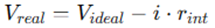
- Primera ley de la termodinmica: Es simplemente una expresin del principio de conservacin de la energa, y sostiene que la energa es una propiedad termodinmica. Establece que la energa total de un sistema permanece constante, siendo el calor y el trabajo las formas principales de transferencia de energa.
- Segunda ley de la termodinmica: afirma que la energa tiene calidad as como cantidad, y los procesos reales ocurren hacia donde disminuye la calidad de la energa. Introduce la entropa, una medida del desorden que siempre aumenta en procesos naturales, dictando la direccin de los procesos energticos.
Las aplicaciones prcticas abarcan:
- Ciclos trmicos como los de motores y turbinas, donde se optimiza la conversin de calor en trabajo.
- Refrigeracin y climatizacin, donde se transfieren energas entre diferentes temperaturas.
- Plantas de energa, diseadas para maximizar la generacin de electricidad mediante ciclos Rankine y Brayton.
TRANSFERENCIA DE CALOR
La termodinmica trata de la cantidad y calidad de la transferencia de calor a medida que un sistema pasa por un proceso de un estado de equilibrio a otro y no hace referencia a cunto durar ese proceso. Pero en la ingeniera a menudo estamos interesados en la rapidez o razn de esa transferencia, la cual constituye el tema de la ciencia de la transferencia de calor.
La transferencia de calor estudia cmo se desplaza la energa trmica debido a diferencias de temperatura. Sus tres mecanismos principales son:
- Conduccin: Transferencia a travs de un slido o entre molculas en contacto. Es la transferencia de energa de las partculas ms energticas de una sustancia hacia las adyacentes, menos energticas, como resultado de la interaccin entre ellas.
- Conveccin: Movimiento combinado de molculas en un fluido, facilitado por gradientes trmicos. Es el modo de transferencia de calor entre una superficie slida y el lquido o gas adyacente que estn en movimiento, y comprende los efectos combinados de la conduccin y del movimiento del fluido.
- Radiacin: Emisin de energa en forma de ondas electromagnticas, independiente del medio. Es la energa emitida por la materia en forma de ondas electromagnticas (o fotones), como resultado de los cambios en las configuraciones electrnicas de los tomos o molculas.
Esta ciencia se preocupa tanto por la cantidad como por la velocidad de transferencia de calor. Es esencial en:
- Diseo de intercambiadores de calor: Utilizados en sistemas industriales y automotrices.
- Aislamiento trmico: Mejora de la eficiencia energtica en edificios.
- Gestin trmica en electrnica: Prevencin del sobrecalentamiento en dispositivos sensibles
MECNICA DE FLUIDOS
La mecnica es la ciencia fsica ms antigua que estudia tanto los cuerpos en reposo como aquellos en movimiento bajo la influencia de fuerzas. La parte de la mecnica que se ocupa de los cuerpos en reposo se llama esttica, mientras que la que estudia los cuerpos en movimiento se llama dinmica.
La mecnica de fluidos es una subdisciplina de la mecnica que se enfoca en el comportamiento de los fluidos, ya sea que estn en reposo (esttica de fluidos) o en movimiento (dinmica de fluidos), y en cmo interactan con slidos u otros fluidos. De hecho, la dinmica de fluidos incluye a la esttica de fluidos como un caso particular donde la velocidad del fluido es cero.
La mecnica de fluidos se divide en varias ramas. La hidrodinmica estudia el movimiento de fluidos prcticamente incompresibles, como los lquidos (especialmente el agua) y los gases a bajas velocidades. Dentro de la hidrodinmica, la hidrulica se concentra en el flujo de lquidos a travs de tuberas y canales abiertos. Por otro lado, la dinmica de gases se ocupa del flujo de fluidos que experimentan cambios significativos en su densidad, como los gases que se mueven a altas velocidades a travs de toberas. La aerodinmica, por su parte, estudia el flujo de gases, especialmente del aire, alrededor de objetos como aviones, cohetes y automviles.
Otras disciplinas relacionadas con la mecnica de fluidos incluyen la meteorologa, la oceanografa y la hidrologa, que estudian los flujos naturales que ocurren en la atmsfera, los ocanos y los cuerpos de agua dulce, respectivamente.
Aplicaciones tpicas:
- Hidrodinmica e hidrulica: Transporte de agua y control de flujos en canales y tuberas.
- Aerodinmica: Diseo de vehculos y estructuras sometidas al flujo de aire.
- Simulacin computacional: Modelado de sistemas complejos para predecir comportamientos
2. Aplicaciones de termodinmica.
2.1 Plantas trmicas de vapor.
Las plantas trmicas de vapor se centran en el uso del Ciclo Rankine para la generacin de energa. Este ciclo opera a travs de la vaporizacin del agua en una caldera, su expansin en una turbina para generar trabajo, y su posterior condensacin en un condensador para reiniciar el ciclo. Las plantas de vapor se destacan por su alta eficiencia trmica y su capacidad para operar en una amplia gama de temperaturas y presiones. Su diseo involucra optimizacin de calderas, turbinas y sistemas de condensacin.
El vapor de agua es el fluido de trabajo ms comnmente utilizado en ciclos de potencia de vapor debido a sus muchas y atractivas caractersticas, como bajo costo, disponibilidad y alta entalpa de vaporizacin. Por consiguiente, el estudio de las centrales elctricas de vapor, que son normalmente llamadas centrales carboelctricas, centrales nucleares o centrales elctricas de gas natural, dependiendo del tipo de combustible que empleen para suministrar calor al vapor, pueden analizarse de la misma manera.
EL CICLO DE VAPOR DE CARNOT
FUNCIONAMIENTO
El funcionamiento se lleva a cabo mediante un proceso de varias etapas:
- Generacin de vapor:
En esta etapa, el agua se calienta en una caldera mediante la quema de combustibles fsiles, biomasa o el uso de energa nuclear. Esto convierte el agua lquida en vapor a alta presin y temperatura. - Expansin del vapor:
El vapor generado se expande en una turbina de vapor, transfiriendo su energa trmica a energa mecnica. Esta etapa es clave para la produccin de trabajo til, que es posteriormente convertido en energa elctrica mediante un generador. - Condensacin del vapor:
El vapor que ha pasado por la turbina entra en un condensador, donde se enfra y se convierte nuevamente en agua lquida. Este proceso reduce la presin del vapor, aumentando la eficiencia del ciclo. - Recirculacin del agua:
El agua condensada es bombeada de regreso a la caldera para reiniciar el ciclo. Este circuito cerrado asegura la reutilizacin del agua y minimiza el desperdicio.
VENTAJAS
- Alta eficiencia:
Con diseos optimizados y tcnicas avanzadas, como recalentamiento del vapor o aumento de la presin de operacin, las plantas de vapor logran una eficiencia considerable en la conversin de energa. - Flexibilidad en fuentes de energa:
Estas plantas pueden operar con diversas fuentes de energa, como carbn, gas natural, petrleo, biomasa y energa nuclear, lo que las hace verstiles. - Capacidad de generacin a gran escala:
Son ideales para la generacin de energa en grandes cantidades, siendo una de las principales tecnologas utilizadas en centrales elctricas alrededor del mundo.
DESAFOS
- Impacto ambiental:
Aunque eficientes, las plantas que utilizan combustibles fsiles generan emisiones de CO₂ y otros contaminantes. - Consumo de agua:
El proceso de condensacin requiere grandes volmenes de agua, lo que puede ser un desafo en reas con escasez del recurso.
2.2 Plantas trmicas de gas.
2.3 Plantas de ciclo combinado.
2.4 Plantas de emergencia y cogeneracin.
2.5 Calderas y calormetros (2hP).
2.6 Ciclo Rankine (2hP).
2.7 Turbina de gas (2hP).
2.8 Turbina de vapor y condensadores (2hP).
2.9 Planta de emergencia (2hP).
2.10 Compresor reciprocante (2hP).
3. Conceptos bsicos de mecnica de fluidos.
3.1 Ecuaciones de continuidad, cantidad de movimiento y energa para volmenes de control.
3.2 Anlisis dimensional, semejanza y teora de modelos.
3.3 Dispositivos de medicin de velocidad y flujo.
3.4 Flujo en tuberas.
3.5 Manometra y viscosimetra (2hP).
3.6 Medidores de velocidad (2hP).
3.7 Medidores de gasto (2hP).
3.8 Flujo en tuberas (2hP).
3.9 Bomba centrfuga (2hP).
4. Conceptos bsicos de transferencia de calor.
4.1 Conduccin: Ley de Fourier, conductividad trmica.
4.2 Conveccin: Ley de Newton de enfriamiento.
4.3 Radiacin: Ley de Stefan-Boltzmann.
4.4 Mecanismos simultneos.
4.5 Mtodo de las resistencias trmicas equivalentes.
4.6 Introduccin a los cambiadores de calor.
4.7 Conduccin y conveccin de calor (2hP).
5. Bibliografa.
CENGEL, Y.a., TURNER R.H. - Fundamental of thermal-fluid sciences.
CENGEL, Y. A., BOLSES, M. A. - Termodinmica.
CENGEL, Y.a. - Mecnica de fluidos.
CENGEL, Y. A - Transferencia de calor y masa.
INGENIERA DE MATERIALES (1570)
Objetivo(s) del curso:
El alumno analizar los fundamentos del comportamiento de los materiales de ingeniera, de tal forma que pueda seleccionarlos, modificar sus propiedades y su comportamiento bajo las condiciones de aplicacin que a cada caso corresponda.
1. Estructura del tomo.
1.1 Estructura del tomo.
MATERIALES
La Ciencia e Ingeniera de Materiales se basa en una profunda comprensin de la estructura atmica. Es fundamental para entender la materia y las propiedades de los materiales.
Un tomo consiste en un ncleo pequeo y denso que contiene protones y neutrones, rodeado por una nube de electrones que se encuentran en constante movimiento dentro de orbitales. Los protones tienen una carga positiva, mientras que los neutrones son neutros.
La cantidad de protones en el ncleo define el nmero atmico, que a su vez determina las propiedades qumicas del elemento. Por otro lado, la masa del tomo est principalmente concentrada en el ncleo debido a la presencia de protones y neutrones, mientras que los electrones tienen una masa mucho menor y contribuyen poco a la masa total.
El concepto de niveles y subniveles energticos es crucial para entender cmo se organizan los electrones alrededor del ncleo. Cada nivel energtico puede dividirse en subniveles designados como s, p, d y f, cada uno con un nmero especfico de orbitales.
Por ejemplo, el nivel energtico ms bajo, 1s, puede albergar hasta dos electrones. A medida que el nmero atmico aumenta, los electrones ocupan niveles y subniveles ms altos segn el principio de Aufbau, que establece que los electrones se colocan en el nivel de energa ms bajo disponible.
Adems, las interacciones entre las partculas subatmicas y las fuerzas fundamentales de la naturaleza, como la fuerza nuclear fuerte y la electromagntica, juegan un papel esencial en la estabilidad y las propiedades del tomo. La comprensin detallada de la estructura atmica ha permitido avances significativos en reas como la qumica, la fsica de materiales y la nanotecnologa.
1.2 Modelo atmico.
HISTORIA
A lo largo de la historia, el modelo atmico ha evolucionado para reflejar mejor la comprensin cientfica de la estructura del tomo. Los primeros modelos, como el modelo de Dalton, describan al tomo como una partcula indivisible y fundamental. Sin embargo, este modelo fue reemplazado por el modelo de Thompson, tambin conocido como el modelo del "pudn con pasas," que introdujo la idea de que los electrones estaban incrustados en una esfera cargada positivamente.
El modelo de Rutherford marc un cambio significativo al demostrar que el tomo tiene un ncleo central donde se concentra la mayor parte de su masa y carga positiva, y que los electrones orbitan este ncleo. Este descubrimiento fue posible gracias a los experimentos de dispersin de partculas alfa.
Ms adelante, Niels Bohr refin el modelo atmico al proponer que los electrones se mueven en rbitas circulares especficas alrededor del ncleo, cada una con un nivel de energa definido.
Bohr introdujo la idea de que los electrones pueden saltar entre rbitas al absorber o emitir energa en forma de fotones, lo que explicaba fenmenos como los espectros de emisin atmica.
Con el desarrollo de la mecnica cuntica, el modelo de Bohr fue reemplazado por el modelo mecnico-cuntico del tomo. Este modelo utiliza funciones de onda, conocidas como orbitales, para describir las probabilidades de encontrar un electrn en una regin especfica del espacio.
Los principios de la mecnica cuntica, como el principio de incertidumbre de Heisenberg y el principio de exclusin de Pauli, proporcionan un marco terico ms completo para entender la estructura y el comportamiento del tomo.
1.3 Configuracin electrnica
CONFIGURACIN ELECTRNICA
La configuracin electrnica describe la distribucin de los electrones en los niveles y subniveles de energa de un tomo. Esta distribucin est gobernada por tres reglas principales: el principio de Aufbau, el principio de exclusin de Pauli y la regla de Hund. El principio de Aufbau establece que los electrones ocupan primero los orbitales de menor energa antes de llenar los de energa ms alta.
El principio de exclusin de Pauli indica que no puede haber dos electrones con el mismo conjunto de nmeros cunticos en un mismo tomo. Por ltimo, la regla de Hund establece que los electrones ocupan orbitales de igual energa de manera que se maximice el nmero de electrones desapareados.
Por ejemplo, la configuracin electrnica del carbono (Z = 6) es 1s 2s 2p, lo que significa que el tomo tiene dos electrones en el nivel 1s, dos en el nivel 2s y dos ms distribuidos en los orbitales 2p. Estas configuraciones electrnicas son fundamentales para predecir las propiedades qumicas y fsicas de los elementos, incluyendo su reactividad, estado de oxidacin y formacin de enlaces qumicos.
Adems, las configuraciones electrnicas de los elementos en la tabla peridica muestran tendencias claras. Por ejemplo, los elementos del mismo grupo suelen tener configuraciones electrnicas similares en su capa de valencia, lo que explica sus propiedades qumicas similares. Los gases nobles, con capas de valencia completamente llenas, son notablemente estables y qumicamente inertes.
1.4 Tabla peridica.
TABLA PERIDICA
La tabla peridica es una herramienta indispensable en la ciencia y la ingeniera de los materiales, ya que organiza los elementos en funcin de sus propiedades qumicas y fsicas.
Diseada inicialmente por Dmitri Mendelyev en el siglo XIX, la tabla peridica moderna est organizada por nmero atmico creciente, lo que refleja directamente la estructura electrnica de los elementos.
Los elementos se agrupan en perodos y grupos, donde los perodos representan niveles de energa y los grupos contienen elementos con configuraciones electrnicas similares en sus capas de valencia.
Por ejemplo, los elementos del grupo 1, conocidos como los metales alcalinos, tienen un electrn en su capa de valencia, lo que los hace altamente reactivos. Por otro lado, los elementos del grupo 18, los gases nobles, tienen capas de valencia completamente llenas, lo que los hace excepcionalmente estables.
La tabla peridica tambin resalta tendencias peridicas como el radio atmico, la electronegatividad, la energa de ionizacin y la afinidad electrnica.
Por ejemplo, el radio atmico disminuye a lo largo de un perodo debido al aumento de la carga nuclear efectiva, mientras que aumenta al descender en un grupo debido a la adicin de niveles de energa.
Estas tendencias son cruciales para predecir el comportamiento qumico y fsico de los elementos y sus compuestos.
Adems, la tabla peridica incluye categoras especficas de elementos como los metales, no metales y metaloides, as como bloques basados en los subniveles electrnicos (s, p, d y f).
Los elementos de transicin, ubicados en el bloque d, son particularmente importantes en aplicaciones industriales debido a sus propiedades nicas, como la formacin de complejos y su utilidad en catlisis.
2. Fuerzas interatmicas y ordenamiento cristalino.
2.1 Fuerzas interatmicas e intermoleculares.
INTERACCIONES INTERATMICAS E INTERMOLECULARES
La comprensin profunda y exhaustiva de las interacciones interatmicas representa una base esencial e insustituible en el estudio avanzado de la ciencia de materiales.
Estas fuerzas, que operan en la escala atmica y molecular, son responsables de la formacin, estabilidad y evolucin de las estructuras cristalinas y amorfas. En consecuencia, tienen un impacto directo sobre las propiedades trmicas, elctricas, pticas, mecnicas y qumicas de los materiales.
Su estudio, por tanto, no slo permite comprender la naturaleza de la materia en su forma ms ordenada, sino que tambin abre la puerta al diseo de nuevas arquitecturas funcionales y a la ingeniera racional de materiales avanzados.
Estas interacciones se dividen en dos clases principales: las primarias o fuertes, que corresponden a los enlaces qumicos clsicos, y las secundarias o dbiles, que comprenden una gama diversa de interacciones fsicas no covalentes.
Interacciones primarias:
1. Enlace inico: Esta forma de interaccin aparece entre tomos con diferencias significativas de electronegatividad, tpicamente entre metales alcalinos o alcalinotrreos y elementos no metlicos del grupo de los halgenos o del oxgeno. El resultado es la transferencia completa de uno o ms electrones, dando lugar a la formacin de iones positivos (cationes) y negativos (aniones), que se agrupan en estructuras tridimensionales ordenadas para minimizar la energa electrosttica total. Las estructuras inicas son altamente simtricas, rgidas y poseen elevados puntos de fusin, resistencia mecnica significativa y buena estabilidad trmica. Adems, su comportamiento elctrico est mediado por la migracin de iones en estado fundido o en solucin acuosa, lo cual es aprovechado en tecnologas como las bateras de estado slido y sensores electroqumicos.
2. Enlace covalente: Este tipo de enlace se caracteriza por la comparticin de electrones entre tomos de electronegatividades similares. Su direccionalidad lo convierte en un elemento clave para la formacin de estructuras altamente organizadas y mecnicamente robustas, como las redes de carbono en forma de diamante, las estructuras tetradricas del silicio o los marcos de coordinacin metal-orgnico. La intensidad de estos enlaces vara segn el solapamiento orbital y la geometra molecular, afectando profundamente el ancho de banda prohibida, la movilidad de portadores y la respuesta ptica de los materiales. Es fundamental en materiales semiconductores, compuestos polares covalentes y estructuras moleculares complejas.
3. Enlace metlico: Definido por una nube de electrones deslocalizados que envuelve a una red ordenada de cationes metlicos, el enlace metlico es la base estructural de los metales y aleaciones. Este enlace no direccionado favorece la libre movilidad electrnica, responsable de la alta conductividad trmica y elctrica, as como de propiedades como la ductilidad, maleabilidad y brillo metlico. La teora de bandas permite explicar de forma ms precisa su comportamiento, asociando los niveles energticos de los orbitales atmicos con bandas de valencia parcialmente ocupadas que facilitan la conduccin bajo campos externos. Este tipo de enlace es tambin el fundamento para comprender las transiciones electrnicas y magnticas en metales y compuestos intermetlicos.
Interacciones secundarias:
Fuerzas de Van der Waals: Se refieren a interacciones entre dipolos permanentes, dipolos inducidos y fuerzas de dispersin de London.
A pesar de su carcter dbil comparado con los enlaces primarios, estas fuerzas son indispensables para entender la organizacin de fases moleculares, la interaccin entre capas de materiales bidimensionales (como el grafeno), la adhesin en polmeros y el empaquetamiento molecular en slidos orgnicos.
Su modelado se aborda mediante teoras clsicas de polarizabilidad y mtodos cunticos como el funcional de la densidad corregido por dispersin (DFT-D).
Puentes de hidrgeno: Se forman cuando un tomo de hidrgeno covalentemente enlazado a un tomo electronegativo como oxgeno, nitrgeno o flor interacta con otro tomo electronegativo cercano, estableciendo una interaccin altamente direccional.
Estas interacciones son responsables de la estabilidad conformacional de protenas, la estructura helicoidal del ADN, la agregacin de nanopartculas funcionalizadas, y la transferencia de protones en medios acuosos.
Su presencia tambin afecta significativamente la energa libre de solvatacin, los puntos de ebullicin y las transiciones de fase en sistemas orgnicos e hbridos.
2.2 Redes de Bravais.
REDES DE BRAVAIS
El concepto de red de Bravais proporciona el marco fundamental para describir la periodicidad espacial de un slido cristalino. En trminos matemticos, una red de Bravais es una coleccin infinita de puntos dispuestos en el espacio tridimensional tal que el entorno alrededor de cada punto es idntico.
Esta simetra traslacional es la base para la descripcin de las estructuras cristalinas mediante celdas unitarias, que representan la unidad estructural mnima capaz de reproducir por traslacin todo el cristal.
Al aadir una base atmica es decir, un conjunto de tomos con posicin y orientacin fija en cada nodo de la red, se genera una estructura cristalina real, que conserva la simetra y periodicidad del arreglo original.
Las 14 redes de Bravais son las nicas combinaciones posibles de simetra traslacional tridimensional que se pueden formar sin distorsionar la red peridica.
Estas se agrupan en 7 sistemas cristalogrficos segn las relaciones geomtricas entre sus vectores base y ngulos interaxiales.
Cada sistema representa una clase de simetra distinta, con implicaciones estructurales y fsicas significativas:
- Cbico: La simetra ms alta. Todos los lados y ngulos son iguales. Sus subtipos (simple, BCC, FCC) tienen diferentes empaquetamientos y energas libres. Muchos metales como Fe, Cu y Al cristalizan en estas formas.
- Tetragonal: Posee dos vectores base iguales y uno diferente, con todos los ngulos rectos. Se asocia con materiales como Sn blanco y ZrO₂ tetragonal.
- Ortorrmbico: Tres vectores de distinta longitud pero ortogonales. Ejemplos comunes incluyen sulfatos y carbonatos complejos, as como ciertos polmeros semicristalinos.
- Trigonal: Presenta una simetra rotacional triple. Sus ngulos no son rectos, pero sus lados pueden ser equivalentes. Se encuentra en estructuras como el cuarzo α.
- Hexagonal: Dos vectores iguales separados 120, con un tercero perpendicular. Es comn en metales ligeros como Zn, Mg, y Ti.
- Monoclnico: Slo uno de los ngulos difiere de 90. Aparece en compuestos orgnicos cristalinos y minerales con simetra reducida.
- Triclnico: El sistema con menor simetra. Ningn vector ni ngulo es igual. Comn en materiales de bajo empaquetamiento y estructuras complejas como ciertos silicatos.
El conocimiento y clasificacin de las redes de Bravais permite aplicar conceptos avanzados como el espacio recproco, los grupos puntuales, los grupos espaciales, y facilita la interpretacin de tcnicas de caracterizacin estructural como difraccin de rayos X, espectroscopa Raman y electronografa.
Asimismo, establece las bases para modelar la interaccin de campos externos con la materia, la propagacin de defectos estructurales y las trayectorias de difusin atmica.
2.3 Arreglos tpicos en metales y sus caractersticas.
ARQUITECTURAS CRISTALINAS EN METALES
Los metales tienden a cristalizar en formas que maximizan la eficiencia de empaquetamiento, lo cual minimiza la energa libre del sistema, promueve la estabilidad estructural y facilita la movilidad de dislocaciones.
Estas estructuras, determinadas por la simetra y la densidad atmica de su celda unitaria, condicionan su respuesta ante esfuerzos mecnicos, temperatura, deformacin plstica, y procesos de recristalizacin. Las arquitecturas ms comunes son BCC (Body-Centered Cubic), FCC (Face-Centered Cubic) y HCP (Hexagonal Close-Packed), cada una con caractersticas distintivas de empaquetamiento, coordinacin y propiedades emergentes.
BCC: Con una coordinacin de 8 y un FEA de aproximadamente 0.68, esta estructura es relativamente abierta, lo cual se traduce en mayor resistencia a la deformacin por cizalladura, menor densidad, y fragilidad relativa a bajas temperaturas. Es tpica de elementos como Fe (α), Cr, Mo y W, y su transicin hacia otras fases (como FCC en el hierro γ) explica fenmenos de endurecimiento por transformacin y templabilidad.
FCC: De empaquetamiento ms denso (FEA ≈ 0.74), presenta 12 tomos vecinos por nodo, lo cual promueve mltiples sistemas de deslizamiento y facilita la deformacin plstica homognea. Se encuentra en Al, Cu, Ni, Ag, Au y Pb. Su comportamiento isotrpico y su baja energa superficial favorecen procesos de sinterizacin, difusin superficial y recristalizacin.
HCP: Tambin de empaquetamiento denso, pero con menor nmero de planos de deslizamiento disponibles a temperatura ambiente. Esto limita la ductilidad y exige tratamientos trmicos o aleaciones para mejorar su procesabilidad. Es comn en Ti, Zn, Mg y Be. Su anisotropa estructural se traduce en propiedades direccionalmente dependientes, relevantes en ingeniera aeroespacial y biomdica.
Estas configuraciones determinan no slo propiedades elsticas y plsticas, sino tambin la forma de nucleacin de nuevas fases, la evolucin de microestructuras durante tratamientos trmicos, la estabilidad ante corrosin intergranular, y la susceptibilidad a mecanismos de falla como la fatiga o la fluencia.
2.4 ndices de Miller.
FORMALISMO CRISTALOGRFICO PARA DIRECCIONES Y PLANOS
Los ndices de Miller constituyen un sistema de notacin indispensable en cristalografa para identificar direcciones y planos dentro de las celdas unitarias.
Este lenguaje algebraico simplifica el tratamiento geomtrico de las estructuras cristalinas y permite vincular la orientacin atmica interna con fenmenos fsicos observables.
Adems, es una herramienta clave para analizar y predecir procesos de deslizamiento, crecimiento de cristales, difraccin, y formacin de defectos estructurales.
Para obtener los ndices (hkl) de un plano:
1. Identificar los interceptos del plano con los ejes cristalogrficos a, b y c.
2. Invertir esos valores (tomar los recprocos).
3. Multiplicar por el mnimo comn mltiplo para obtener enteros.
4. Escribir los resultados como (hkl).
Para direcciones, se expresan como [uvw], donde u, v y w son componentes del vector direccin, reducidos a sus menores enteros posibles. Familias de planos o direcciones equivalentes se indican con llaves {hkl} o ngulos ⟨uvw⟩.
Aspectos relevantes:
Un nmero negativo se denota con una barra sobre l: (1̅01).
En sistemas cbicos, la direccin [hkl] es ortogonal al plano (hkl), lo que no ocurre en sistemas no cbicos.
La orientacin cristalina incide directamente en la velocidad de crecimiento de granos, la formacin de gemelos y la propagacin de dislocaciones.
La utilidad de los ndices de Miller trasciende la representacin geomtrica: son esenciales en tcnicas como EBSD (Electron Backscatter Diffraction), anlisis de texturas cristalinas, caracterizacin de policristales, y diseo de monocristales con propiedades funcionales direccionalmente optimizadas.
3. Defectos cristalinos.
3.1 Clasificacin de los defectos cristalinos.
CLASIFICACIN
Los defectos cristalinos representan una categora fundamental de imperfecciones estructurales que interrumpen la periodicidad ideal del retculo cristalino en materiales slidos. En condiciones reales de procesamiento, como la solidificacin, la deformacin plstica, la irradiacin o los tratamientos trmicos, estas imperfecciones aparecen de manera inevitable.
Su existencia no es meramente incidental, sino que tiene profundas implicaciones en las propiedades funcionales de los materiales, incluyendo la plasticidad, la conductividad trmica y elctrica, la resistencia mecnica, la difusin atmica, la respuesta ptica y la estabilidad qumica. De hecho, el control y manipulacin intencional de defectos cristalinos es un eje estratgico en la ingeniera moderna de materiales.
Desde una perspectiva geomtrica y estructural, los defectos cristalinos se clasifican de acuerdo con su dimensionalidad espacial y el volumen de red que perturban:
Defectos puntuales (0D): Se limitan a una o unas pocas posiciones atmicas dentro de la red. Incluyen vacancias (ausencia de tomos), tomos intersticiales (tomos ocupando espacios normalmente vacos) y tomos sustitucionales (tomos que reemplazan a los del anfitrin). Estos defectos son termodinmicamente favorecidos a temperaturas finitas y pueden alterar significativamente la energa libre del sistema y la entropa configuracional. Son clave en fenmenos como el dopaje de semiconductores, la difusin slida y la solubilidad de aleaciones.
Defectos lineales (1D): Denominados dislocaciones, son perturbaciones de la red extendidas a lo largo de una lnea. Constituyen el mecanismo primario de deformacin plstica en materiales dctiles. La presencia, densidad y movilidad de dislocaciones influye directamente sobre propiedades como el lmite elstico, la tenacidad y el comportamiento bajo cargas cclicas.
Defectos superficiales (2D): Comprenden discontinuidades planas como los lmites de grano, los lmites de macla, las superficies externas y las fronteras de subgrano. Estos defectos alteran la coordinacin atmica, modifican la energa superficial y tienen un rol crucial en la sinterizacin, la nucleacin de nuevas fases y la difusin intergranular. Adems, determinan la textura y el tamao de grano, factores que gobiernan muchas propiedades mecnicas.
Defectos volumtricos (3D): Afectan volmenes tridimensionales del cristal, incluyendo vacos, poros, inclusiones no metlicas, precipitados y microfisuras. Son los defectos ms energticamente costosos, pero tambin los ms influyentes en la iniciacin de fallas mecnicas como la propagacin de grietas por fatiga o fractura frgil.
3.2 Defectos de punto, tomos intersticiales, sustitucionales y sitios vacantes.
DEFECTOS PUNTUALES
Los defectos de punto son desviaciones locales en la red cristalina que afectan uno o unos pocos nodos atmicos. A pesar de su carcter local, su impacto sobre las propiedades del material es altamente significativo.
Estos defectos estn fuertemente influenciados por factores como la temperatura, la composicin qumica, la presin externa y los tratamientos trmicos previos.
Vacancias: Ocurren cuando un sitio que debera estar ocupado por un tomo del anfitrin permanece vaco. A temperaturas superiores a 0 K, las vacancias son termodinmicamente estables y su concentracin de equilibrio est dada por:
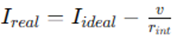
Donde N es el nmero total de sitios en la red, Qv es la energa de formacin de vacancia, k es la constante de Boltzmann y T la temperatura absoluta.
Las vacancias facilitan la migracin atmica, especialmente bajo gradientes de concentracin o temperatura, y son esenciales para explicar la autodifusin, el crecimiento de grano y el creep.
tomos intersticiales: Son tomos que se sitan en espacios no ocupados por la red perfecta, generando distorsiones locales intensas debido a la repulsin con los tomos circundantes. Su incorporacin es energticamente costosa, pero viable en estructuras de baja densidad (como BCC). En materiales como el acero, la presencia de tomos intersticiales como C o N afecta drsticamente la dureza, el mdulo de elasticidad y la resistencia a la corrosin.
tomos sustitucionales: Aparecen cuando un tomo de una especie diferente reemplaza a uno del anfitrin en un sitio regular del retculo. Su estabilidad est regida por la similitud de radios atmicos, electronegatividad, valencia y estructura cristalina. Siguen las reglas de Hume-Rothery y son la base de la formacin de soluciones slidas, donde estos tomos actan como obstculos al movimiento dislocacional, contribuyendo al endurecimiento por solucin slida.
3.3 Defectos de lnea. La dislocacin, sus tipos y caractersticas (campo de esfuerzos y energa asociada).
DISLOCACIONES
Las dislocaciones son defectos topolgicos de tipo lineal que permiten que los slidos se deformen plsticamente sin necesidad de romper simultneamente todos los enlaces interatmicos a lo largo de un plano de deslizamiento.
Su existencia reduce la energa necesaria para la deformacin y permite comprender fenmenos como el endurecimiento por trabajo, la recuperacin trmica y la fluencia.
Dislocacin de borde: Se genera por la insercin de un semiplano atmico adicional dentro del cristal. El vector de Burgers, que cuantifica la magnitud y direccin de la distorsin, es perpendicular a la lnea de dislocacin. El campo de tensiones que genera se extiende en forma dipolar: una regin de compresin por encima y una de traccin por debajo.
Dislocacin helicoidal (tornillo): Resulta de un cizallamiento en espiral del plano atmico, donde el vector de Burgers es paralelo a la lnea de dislocacin. Estas dislocaciones pueden desplazarse fcilmente en mltiples direcciones de deslizamiento, favoreciendo mecanismos de deformacin compleja.
Dislocaciones mixtas: En los cristales reales, las dislocaciones rara vez son puramente de borde o de tornillo. La mayora adopta una morfologa mixta, lo que requiere una representacin vectorial compuesta para su anlisis. Su movilidad depende de las fuerzas de Peach-Koehler y de la configuracin local del campo de tensiones.
El campo de tensiones elsticas inducido por una dislocacin de borde en un medio elstico lineal e istropo se expresa como:

Donde es el mdulo de corte, v el coeficiente de Poisson, b la magnitud del vector de Burgers, y (x, y) las coordenadas relativas al ncleo dislocacional.
La energa por unidad de longitud asociada a una dislocacin es:
Donde R es el radio externo del campo de tensiones y r0 el radio del ncleo. Este valor representa la energa de autointeraccin y es un factor limitante en la densidad de dislocaciones.
3.4 Defectos de superficie
DEFECTOS DE SUPERFICIE
Los defectos bidimensionales constituyen interrupciones en la coherencia estructural del cristal a lo largo de planos definidos. Su presencia modifica las propiedades interfaciales, la movilidad de defectos y los mecanismos de nucleacin, siendo fundamentales en la evolucin microestructural de materiales policristalinos y en la fsica de superficies.
Lmites de grano: Corresponden a zonas de transicin entre regiones cristalinas (granos) con distinta orientacin. Los lmites de bajo ngulo se describen como redes peridicas de dislocaciones, mientras que los de alto ngulo implican una mayor desorganizacin estructural. Actan como barreras a la movilidad de dislocaciones y son sitios preferenciales para la nucleacin de precipitados y vacancias. La resistencia mecnica est relacionada con el tamao de grano a travs de la ley de Hall-Petch:
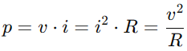
Donde σy es la tensin de cedencia, σ0 la resistencia intrnseca del material, k una constante emprica y d el tamao promedio de grano.
Lmites de macla: Son regiones planas que separan dominios cristalinos que son imgenes especulares entre s. Poseen simetra particular y baja energa de formacin. Se generan por transformaciones martensticas, deformacin o crecimiento epitaxial. Su presencia mejora la tenacidad y puede desviar o disipar la propagacin de grietas.
Superficies libres: Representan la terminacin abrupta del slido. Los tomos en estas regiones tienen coordinacin incompleta, lo que da lugar a estados electrnicos superficiales, tensiones internas residuales y mayor reactividad qumica. Son importantes en fenmenos de adsorcin, corrosin, nucleacin heterognea y catalizacin.
Fronteras de subgrano: Son lmites de orientacin leve entre regiones casi coherentes. Se forman durante la recuperacin tras deformacin y estn asociadas a la reorganizacin de dislocaciones. Actan como precursoras de granos recristalizados en tratamientos trmicos.
3.5 Interacciones entre defectos cristalinos.
DEFECTOS CRISTALINOS
En materiales reales, los defectos cristalinos no existen de forma aislada, sino que coexisten, interactan y se organizan en estructuras jerrquicas.
Estas interacciones son dinmicas, no lineales y multiescalares, y determinan la respuesta del material frente a condiciones externas como tensin, temperatura, atmsferas agresivas o campos magnticos.
Vacancias y dislocaciones: Las vacancias pueden migrar hacia dislocaciones y ser absorbidas, facilitando mecanismos como el trepado dislocacional, fundamental durante el creep a altas temperaturas. Este fenmeno permite que una dislocacin se desplace perpendicularmente a su plano de deslizamiento.
Dislocaciones e impurezas: Las impurezas sustitucionales o intersticiales pueden estabilizarse en los campos de tensin de dislocaciones, formando atmsferas de Cottrell. Esto incrementa la resistencia al movimiento dislocacional y produce un endurecimiento temporal conocido como envejecimiento por deformacin.
Multiplicacin y entrelazamiento dislocacional: Bajo cargas mecnicas, las dislocaciones se multiplican por mecanismos como el de Frank-Read. La interaccin repulsiva o atractiva entre dislocaciones genera redes de alta densidad, paredes de subgrano y configuraciones celulares que controlan el endurecimiento por trabajo y la formacin de estructuras laminares en metales fuertemente deformados.
Interaccin con defectos superficiales: Los lmites de grano pueden servir de barreras cinticas o trampas para dislocaciones, afectando la ductilidad y la resistencia a la fatiga. En materiales con granos ultrafinos o nanocristalinos, la plasticidad est mediada principalmente por fenmenos en los lmites de grano, como la difusin acelerada y la emisin coordinada de dislocaciones.
Estas interacciones determinan la evolucin de la microestructura durante procesos como la recuperacin, recristalizacin, crecimiento de grano, sinterizacin, tratamiento trmico y exposicin prolongada a radiacin o ambientes corrosivos.
4. Comportamiento mecnico.
4.1 Concepto de esfuerzo y deformacin.
ESFUERZO
En el contexto de la mecnica del medio continuo, el esfuerzo se conceptualiza como un tensor de segundo orden que describe cuantitativamente la distribucin interna de fuerzas que actan sobre un cuerpo material sometido a carga.
Estas fuerzas internas, conocidas como tensiones, pueden variar en magnitud y direccin dependiendo de las condiciones de frontera, la geometra del cuerpo y la naturaleza de los materiales involucrados. En aplicaciones prcticas donde se trabaja con geometras simples o con suposiciones de un estado de carga uniaxial, la representacin escalar del esfuerzo normal puede ser empleada como una aproximacin vlida:
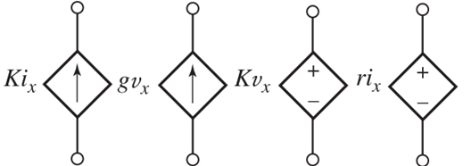
Donde:

DEFORMACIN
La deformacin, por otro lado, representa la respuesta geomtrica del material ante la accin del esfuerzo aplicado. Se expresa como una magnitud adimensional que indica el cambio relativo en la longitud del cuerpo bajo carga:
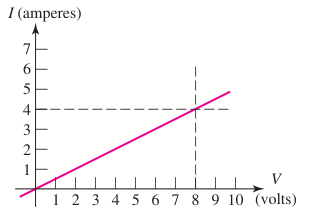
Donde:

Estas dos magnitudes (esfuerzo y deformacin) constituyen los pilares fundamentales del anlisis mecnico. Su relacin permite derivar modelos constitutivos que vinculan el comportamiento macroscpico del material con su microestructura y propiedades fsicas.
Esta base sirve tambin para extender el anlisis a condiciones ms complejas que incluyen cargas multiaxiales, efectos dependientes del tiempo (como fluencia y relajacin), y fenmenos trmicos acoplados.
4.2 Deformacin elstica y plstica.
NATURALEZA DE LA DEFORMACIN
El comportamiento mecnico de los materiales bajo carga externa puede dividirse fundamentalmente en dos tipos de respuesta: elstica y plstica. Esta distincin es esencial tanto para la caracterizacin del material como para su aplicacin en el diseo estructural.
Deformacin elstica: Se trata de un comportamiento reversible. Bajo la aplicacin de una carga, el material se deforma, pero una vez retirada la carga, recupera su forma y dimensiones originales. En el caso ms comn, esta deformacin obedece una ley lineal, regida por la ley de Hooke:

Aqu, representa el mdulo de elasticidad o mdulo de Young. Este parmetro es una propiedad intrnseca del material y depende de la estructura atmica y los enlaces interatmicos. La teora de elasticidad tambin contempla materiales con comportamiento no lineal, y es posible extender su anlisis a casos tridimensionales mediante formulaciones tensoriales.
Deformacin plstica: Ocurre cuando el esfuerzo supera un cierto umbral denominado lmite elstico. A partir de ese punto, el material experimenta una deformacin permanente, la cual no desaparece al retirar la carga. Este comportamiento est ntimamente relacionado con la movilidad de defectos cristalinos como las dislocaciones, y da lugar a fenmenos complejos como el endurecimiento por deformacin. En materiales sometidos a cargas prolongadas o cclicas, este tipo de deformacin puede ser viscoplstica, es decir, dependiente del tiempo.
La transicin entre estos dos regmenes es de gran importancia en ingeniera, ya que define la capacidad del material para soportar cargas sin sufrir daos permanentes. Los modelos de plasticidad modernos incorporan mltiples variables internas y se calibran experimentalmente para capturar la historia de carga del material.
4.3 Lmite elstico terico.
CONSIDERACIONES TERICAS
El lmite elstico terico se refiere al esfuerzo mximo que un cristal perfecto y libre de defectos podra soportar antes de deformarse plsticamente.
A diferencia del lmite elstico real, que est fuertemente influenciado por la presencia de imperfecciones estructurales, el valor terico se deriva del anlisis de los potenciales interatmicos.
Para metales, se ha estimado que este valor se encuentra tpicamente en torno a una dcima parte del mdulo de Young:

Este resultado, obtenido mediante modelos que asumen una respuesta sinusoidal de la energa de enlace ante desplazamientos atmicos, permite establecer una cota superior para el diseo de materiales de alto rendimiento.
Aunque rara vez se alcanza en la prctica, este valor tiene relevancia terica en el desarrollo de materiales como los nanocristales, vidrios metlicos o aleaciones multicomponentes de alta entropa.
4.4 Sistema de deslizamiento.
ANLISIS DEL SISTEMA DE DESLIZAMIENTO
La deformacin plstica en materiales cristalinos es facilitada por el mecanismo de deslizamiento, que implica el movimiento coordinado de dislocaciones a lo largo de planos y direcciones especficas dentro del retculo cristalino.
Cada combinacin de plano y direccin forma un sistema de deslizamiento. La eficiencia de este mecanismo depende de la facilidad con la que se pueden movilizar las dislocaciones, la cual est influenciada por la densidad de empaquetamiento atmico, la energa de apilamiento y la temperatura de operacin.
Sistemas comunes segn la estructura cristalina:
FCC: {111}<110>
BCC: {110}, {112}, {123}
HCP: {0001}<1120>
La plasticidad efectiva en un material requiere un nmero suficiente de sistemas de deslizamiento activos.
Este concepto es especialmente relevante en materiales HCP, donde la escasez de sistemas favorecidos puede llevar a una baja ductilidad.
Por el contrario, en materiales FCC, la abundancia de sistemas activos confiere una elevada capacidad de deformacin plstica.
4.5 Ley de Schmidt.
LEY DE SCHMID
La Ley de Schmid establece las condiciones geomtricas bajo las cuales un cristal comienza a deformarse plsticamente por deslizamiento. Segn esta ley, el esfuerzo cortante efectivo sobre un sistema de deslizamiento particular est dado por:

Donde:

El deslizamiento ocurre cuando t alcanza un valor crtico, denominado CRSS (Critical Resolved Shear Stress).
Esta formulacin es especialmente til para analizar el comportamiento anisotrpico de monocristales y permite predecir qu sistemas de deslizamiento se activarn bajo una configuracin de carga dada.
En materiales policristalinos, el anlisis se complica debido a la interaccin entre granos, lo cual requiere modelos estadsticos avanzados y simulaciones numricas.
4.6 Dislocaciones y la deformacin plstica.
DISLOCACIONES COMO PORTADORAS DE DEFORMACIN PLSTICA
Las dislocaciones son entidades lineales que representan discontinuidades en la red atmica de un cristal. Existen tres tipos fundamentales: borde, helicoidal y mixta. Estas imperfecciones permiten la deformacin plstica a niveles de esfuerzo considerablemente inferiores a los valores tericos, ya que su movimiento requiere romper solo una fraccin de los enlaces atmicos a la vez.
Dislocacin de borde: implica la insercin de un semiplano atmico adicional.
Dislocacin helicoidal: el retculo se deforma en forma de hlice alrededor de la lnea de dislocacin.
Dislocacin mixta: combina caractersticas de los dos tipos anteriores.
La movilidad de las dislocaciones est influenciada por diversos factores, como la presencia de otras dislocaciones (interacciones de largo y corto alcance), impurezas, precipitados y lmites de grano.
El control de estos factores es clave para disear materiales con propiedades mecnicas optimizadas, como ocurre en el endurecimiento por solucin slida o el fortalecimiento por precipitacin.
4.7 Conceptos bsicos de fractura.
FUNDAMENTOS DE FRACTURA
La fractura es el proceso mediante el cual un material se separa en dos o ms partes bajo la accin de una carga. Este fenmeno es particularmente crtico en ingeniera, ya que representa una forma potencialmente catastrfica de falla. Se distinguen dos modos fundamentales:
Fractura frgil: caracterizada por la ausencia de deformacin plstica significativa antes de la rotura. Comn en cermicos, vidrios y metales a bajas temperaturas.
Fractura dctil: involucra la nucleacin, crecimiento y coalescencia de cavidades microscpicas, lo que permite una considerable absorcin de energa antes de la separacin final.
La mecnica de fractura moderna emplea parmetros como el factor de intensidad de esfuerzos K y la tenacidad a la fractura KIC para cuantificar la resistencia de un material a la propagacin de grietas:

Donde:
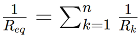
La aplicacin de estos conceptos permite disear componentes resistentes a fallas, incluso en presencia de defectos preexistentes. En situaciones donde la plasticidad es significativa, se requiere utilizar enfoques como la mecnica de fractura elasto-plstica, que considera la zona plsticamente deformada alrededor de la punta de la grieta.
5. Diagramas de fase.
5.1 Conceptos bsicos. Limite de solubilidad, fase, fase de equilibrio termodinmico, microestructura.
DIAGRAMAS DE FASE
Los diagramas de fase son herramientas grficas de capital importancia en la ciencia e ingeniera de materiales, utilizadas para representar las condiciones termodinmicas bajo las cuales diferentes fases coexisten en equilibrio dentro de un sistema multicomponente.
Estas representaciones constituyen la base para interpretar y anticipar el comportamiento de materiales sometidos a diferentes trayectorias trmicas o composicionales, en particular en contextos de aleaciones metlicas donde las transformaciones de fase determinan sus propiedades funcionales. El estudio de diagramas de fase permite entender los principios de nucleacin, crecimiento de fases, y el diseo de microestructuras mediante tcnicas como la solidificacin controlada, el tratamiento trmico, el enfriamiento rpido o lento, y la difusin intergranular. En consecuencia, estas representaciones permiten optimizar procesos industriales como la fundicin, la soldadura, el conformado en caliente, el temple, el revenido y la precipitacin controlada.
Fase: Se entiende como una regin del sistema que presenta homogeneidad tanto en composicin qumica como en estructura cristalina y propiedades fsicas. Cada fase se define termodinmicamente por sus parmetros intensivos y puede estar constituida por una o varias especies qumicas. En el caso de los metales, las fases ms comunes incluyen soluciones slidas sustitucionales o intersticiales, compuestos intermetlicos con estequiometra definida, y lquidos metlicos homogneos. La delimitacin entre fases se realiza mediante interfaces fsicas detectables por mtodos experimentales, tales como la microscopa electrnica de barrido, difraccin de rayos X y tcnicas de anlisis trmico como el DSC.
Microestructura: Representa la configuracin espacial, tamao, forma, distribucin y orientacin de las fases presentes en un material. Esta configuracin se ve influida por las condiciones termodinmicas y cinticas del proceso de fabricacin o transformacin, y tiene consecuencias directas sobre las propiedades fsicas, mecnicas, trmicas y qumicas del material. Tcnicas como la microscopa ptica, electrnica de barrido (SEM), transmisin (TEM) o difraccin de electrones son empleadas para caracterizarla con precisin. A nivel prctico, el control microestructural es esencial en el diseo de aceros, superaleaciones, materiales compuestos y cermicas avanzadas.
Lmite de solubilidad: Es la mxima cantidad de un componente (soluto) que puede disolverse en otro (solvente) sin inducir la formacin de una nueva fase secundaria. Este lmite depende fundamentalmente de la temperatura, aunque tambin puede ser afectado por la presin y la energa de interaccin entre las especies. En un contexto metalrgico, el control del lmite de solubilidad permite disear sistemas de endurecimiento por precipitacin, mejorar la estabilidad trmica, y ajustar la conductividad trmica o elctrica del material. Adems, tiene implicaciones directas en procesos como la sinterizacin, la difusin slida y la nucleacin heterognea.
Equilibrio termodinmico: Se alcanza cuando el sistema ha minimizado su energa libre de Gibbs total y ninguna transformacin espontnea es posible sin alterar las condiciones externas. Bajo estas condiciones, las proporciones y composiciones de las fases presentes permanecen constantes. En sistemas multicomponentes, el equilibrio se traduce en un balance entre fuerzas termodinmicas impulsoras y barreras energticas cinticas. Este principio es fundamental para interpretar la evolucin de fases, as como para establecer condiciones de tratamiento trmico que resulten en estructuras estables y predecibles.
REGLA DE LAS FASES
La regla de las fases, formulada por Gibbs, establece la relacin entre las variables del sistema (para sistemas a presin constante):

Donde:
F es el nmero de grados de libertad del sistema (nmero de variables intensivas independientes que pueden variarse sin modificar el nmero de fases en equilibrio).
C es el nmero de componentes del sistema.
P es el nmero de fases presentes en equilibrio.
5.2 Diagramas binarios. Sus tipos principales, transformaciones invariantes.
DIAGRAMAS BINARIOS
Los diagramas de fase binarios representan un subconjunto clave de los sistemas multicomponente, en el cual solo intervienen dos elementos. Su utilidad radica en su simplicidad conceptual y en su amplia aplicabilidad para describir una enorme variedad de aleaciones comerciales y experimentales. Estos diagramas permiten entender cmo la variacin de la temperatura y la composicin afecta la formacin, disolucin y transformacin de fases, y proporcionan la base cientfica para procesos tales como la solidificacin dirigida, el control de microestructura, el tratamiento trmico, y la prediccin de defectos inducidos por segregacin o precipitacin no deseada. Adems, constituyen el punto de partida para la comprensin de diagramas ternarios y cuaternarios ms complejos.
Tipos fundamentales
Sistemas isomorfos: Presentan solubilidad total en estado slido y lquido a todas las proporciones. El sistema Cu-Ni es un ejemplo cannico de esta categora. Las curvas de lquidos y solides se encuentran separadas por una regin de coexistencia lquido-slido. Estos sistemas exhiben una transicin de fase continua y predecible, con ausencia de reacciones invariables.
Sistemas con solubilidad slida limitada: En este tipo de sistemas, los componentes presentan solubilidad parcial en estado slido, lo que da lugar a la formacin de regiones bifsicas delimitadas por lneas de salvas. Ejemplos comunes incluyen Al-Cu o Ag-Cu. Este comportamiento es fundamental para tecnologas de endurecimiento por precipitacin, lo cual mejora las propiedades mecnicas de las aleaciones.
Sistemas eutcticos: Se caracterizan por una reaccin invariante en la que una fase lquida se transforma simultneamente en dos fases slidas diferentes al alcanzar una temperatura especfica:

Esta transformacin da lugar a microestructuras finas y homogneas que optimizan propiedades como la maquinabilidad y la dureza. Sistemas representativos son Pb-Sn y Al-Si.
Sistemas peritcticos: Ocurre una reaccin entre una fase lquida y una fase slida preexistente para formar una nueva fase slida:

Las reacciones peritcticas estn condicionadas por la cintica limitada de difusin en la fase slida, lo que conlleva una sensibilidad extrema al rgimen de enfriamiento. Se observan en aleaciones como Fe-Ni y Cu-Zn.
Sistemas eutectoides: Transformacin enteramente en estado slido donde una fase ϓ se descompone en dos fases slidas diferentes:

Este fenmeno es fundamental en el tratamiento trmico de aceros, particularmente en la formacin de perlita.
Sistemas peritectoides: Dos fases slidas se transforman en una tercera fase slida:

Este tipo de transformacin ocurre bajo condiciones especficas de temperatura y composicin, y suele estar presente en materiales intermetlicos de alto rendimiento.
Transformaciones invariantes
Las transformaciones invariantes son eventos termodinmicos que ocurren a temperatura y composicin constantes.
Se representan grficamente como lneas horizontales en los diagramas de fase y son responsables de la aparicin de microestructuras caractersticas.
Entre ellas se incluyen:
Reaccin eutctica
Reaccin peritctica
Reaccin eutectoide
Reaccin peritectoide
Estas transformaciones permiten establecer estrategias de solidificacin, control de tamao de grano y modulacin de propiedades mecnicas.
REGLA DE LA PALANCA
En sistemas bifsicos, la fraccin de cada fase puede determinarse mediante la siguiente relacin:
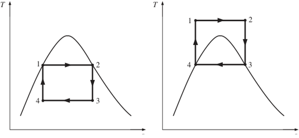
Donde:
Este clculo permite cuantificar con precisin la microestructura formada durante el enfriamiento isoterma o no isoterma.
5.3 Diagrama hierro-carbono (metaestable y estable). Microestructuras caracatersticas del diagrama hierro-carbono.
DIAGRAMA HIERRO-CARBONO (FE-C)
El sistema hierro-carbono es uno de los diagramas ms estudiados debido a su aplicacin directa en la produccin de aceros y fundiciones. Este sistema cubre desde composiciones de muy bajo contenido de carbono (aceros hipoeutectoides) hasta niveles elevados (fundiciones blancas y grises), abarcando una gama muy amplia de aplicaciones industriales. Su estudio es clave para entender los fundamentos del comportamiento mecnico, trmico y estructural de los materiales ferrosos.
Versiones del sistema
Diagrama metaestable FeFe₃C: En esta representacin, la cementita (Fe₃C) es tratada como la fase final del carbono. Se utiliza comnmente debido a la rapidez del enfriamiento en condiciones industriales, que impide la formacin de grafito. Este diagrama es esencial para la prediccin de estructuras como perlita, bainita y martensita, y para el diseo de tratamientos trmicos.
Diagrama estable FeC: Aqu, el carbono precipita como grafito. Es relevante en fundiciones donde el enfriamiento lento o la presencia de elementos como el silicio favorecen la grafitizacin. La microestructura resultante tiene implicaciones directas en la resistencia al desgaste, la amortiguacin de vibraciones y la maquinabilidad.
Fases clave:
Ferrita (α): Solucin slida de C en hierro BCC. Blanda, dctil y de baja solubilidad para el carbono.
Austenita (ϓ): Solucin slida de C en hierro FCC. Fase intermedia en tratamientos trmicos y con mayor capacidad de solubilidad.
Cementita (Fe₃C): Compuesto intermetlico duro y frgil, de gran importancia en aceros endurecidos.
Transformaciones crticas:
Reaccin eutectoide (727 C, 0.76 % C)

Esta transformacin da origen a la microestructura conocida como perlita, compuesta por lminas alternadas de ferrita y cementita.
Reaccin eutctica (1147 C, 4.3 % C)
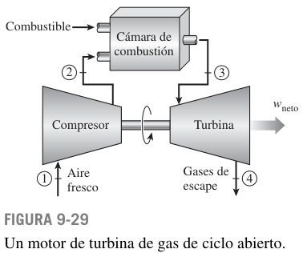
Esta transformacin ocurre en fundiciones y produce estructuras con distribucin dual de austenita y cementita.
Microestructuras derivadas:
Perlita: Microestructura laminar compuesta por ferrita y cementita, generada por enfriamiento eutectoide. Equilibra dureza con tenacidad, siendo fundamental en aceros al carbono.
Ferrita proeutectoide: Se forma en aceros hipoeutectoides (menos de 0.76 % C) antes de la transformacin eutectoide.
Cementita proeutectoide: Presente en aceros hipereutectoides (ms de 0.76 % C), se deposita en los bordes de grano como redes frgiles.
El dominio del diagrama FeC permite la optimizacin del desempeo mecnico de componentes estructurales, as como el diseo preciso de procesos de produccin industrial.
6. Difusin de slidos.
6.1 Mecanismos de la difusin a travs de los slidos.
DIFUSIN DE SLIDOS
La difusin en materiales slidos constituye uno de los fenmenos fisicoqumicos ms importantes en la ciencia e ingeniera de materiales, siendo clave para comprender, predecir y controlar una gran variedad de transformaciones microestructurales y fenmenos macroscpicos asociados al desempeo funcional de componentes estructurales y electrnicos. Este proceso implica el transporte neto y espontneo de tomos, iones o vacantes en el seno de la red cristalina, como consecuencia de gradientes de concentracin, energa libre o potencial qumico.
La difusin tiene lugar de manera inherente en prcticamente todos los slidos, tanto metlicos como cermicos y polimricos, durante su procesamiento trmico, durante tratamientos superficiales, as como durante su operacin bajo diferentes condiciones de servicio. Entre los fenmenos directamente relacionados con la difusin se encuentran la sinterizacin, la formacin y crecimiento de capas compuestas, la precipitacin de fases secundarias, la oxidacin, la corrosin, el endurecimiento superficial y el dopado de semiconductores.
MECANISMOS DE TRANSPORTE ATMICO
Difusin intersticial: En este mecanismo, los tomos de pequeo tamao atmico como el hidrgeno, el carbono o el nitrgeno se desplazan entre los espacios intersticiales de la red cristalina sin necesidad de ocupar sitios reticulares. Este tipo de difusin es especialmente relevante en materiales donde los tomos huspedes son mucho ms grandes que los difusivos. Gracias a la baja energa de activacin requerida y a la elevada movilidad trmica, la difusin intersticial es generalmente ms rpida que otros mecanismos y de suma importancia en la ingeniera de aceros y tratamientos termoqumicos.
Difusin por vacantes (sustitucional): En contraste, este mecanismo implica que los tomos del soluto que ocupan sitios reticulares en la red se desplacen a posiciones adyacentes mediante el intercambio con vacantes. Dado que la creacin de vacantes depende fuertemente de la temperatura y de la entalpa de formacin de defectos puntuales, este tipo de difusin es ms lento y ocurre en mayor medida a temperaturas elevadas. Aun as, es el mecanismo dominante en la difusin de tomos metlicos en redes metlicas.
6.2 Justificacin termodinmica de la difusin.
JUSTIFICACIN TERMODINMICA DE LA DIFUSIN
Desde un punto de vista termodinmico, la difusin responde al principio general de la minimizacin de la energa libre del sistema. Cuando existe un desequilibrio composicional por ejemplo, una diferencia de concentracin entre dos regiones el sistema tiende a alcanzar un estado de menor energa libre, aumentando su entropa. Este principio se encuentra en el corazn de la Segunda Ley de la Termodinmica, y se traduce en la existencia de un flujo neto de tomos desde zonas de mayor potencial qumico hacia zonas de menor potencial.
Para que este movimiento ocurra, los tomos deben vencer una barrera energtica conocida como energa de activacin para la difusin, la cual representa el umbral necesario para romper enlaces interatmicos locales y desplazarse hacia posiciones vecinas.
La probabilidad de que un tomo realice esta transicin est directamente relacionada con la energa trmica disponible en el sistema, lo que implica una fuerte dependencia de la difusin con la temperatura. As, cuanto mayor sea la temperatura, mayor ser la frecuencia de salto atmico y ms rpido ser el proceso difusivo.
6.3 Difusin en estado estable. Primera y segunda leyes de Fick.
DIFUSIN EN ESTADO ESTABLE
El comportamiento cintico de la difusin puede ser modelado a travs de las leyes formuladas por Adolf Fick. En particular, cuando la concentracin no cambia con el tiempo lo que caracteriza un sistema en estado estacionario el flujo de masa est determinado por la Primera Ley de Fick, expresada como:

Donde:
J: flujo difusivo (mol/ms), que representa la cantidad de materia que atraviesa una superficie unitaria por unidad de tiempo,
D: coeficiente de difusin (m/s), que es funcin de la temperatura y la naturaleza estructural del medio,
 : gradiente de concentracin,
esto es, la variacin espacial de la concentracin del difusivo.
: gradiente de concentracin,
esto es, la variacin espacial de la concentracin del difusivo.
Cuando la concentracin cambia tanto con la posicin como con el tiempo es decir, en condiciones no estacionarias se utiliza la Segunda Ley de Fick, que permite modelar la evolucin temporal de los perfiles de concentracin:

Esta ecuacin diferencial de segundo orden constituye la base matemtica de la mayora de los modelos de difusin aplicados a problemas reales. Su resolucin requiere el conocimiento de condiciones iniciales y de frontera especficas, y en muchos casos puede resolverse analticamente o mediante mtodos numricos. Esta ley permite predecir el comportamiento de difusin en tratamientos trmicos, en procesos de recubrimiento multicapa, en el dopado de semiconductores y en la homogenizacin de aleaciones.
Solucin para condiciones especficas: En uno de los casos ms clsicos, como es la difusin desde una fuente superficial constante en un medio semi-infinito, la solucin de la Segunda Ley de Fick est dada por la funcin error complementaria:

Donde:

6.4 Factores que influyen en la difusin.
VELOCIDAD DE DIFUSIN
La velocidad de difusin en materiales est sujeta a una variedad de factores que modulan el coeficiente de difusin y la cintica global del proceso:
Temperatura: La influencia de la temperatura se expresa mediante la ecuacin de Arrhenius, que vincula el coeficiente de difusin con la temperatura absoluta:

Donde:

Estructura cristalina: La densidad de empaquetamiento de la red afecta la facilidad con que los tomos pueden moverse. En general, las redes BCC permiten mayor movilidad que las FCC debido a la menor densidad atmica.
Relacin de tamaos atmicos: Si el tamao del tomo difusivo difiere mucho del del solvente, se generan tensiones locales que pueden dificultar el movimiento.
Defectos cristalinos: Vacantes, dislocaciones y lmites de grano sirven como rutas preferenciales para la difusin, especialmente en materiales policristalinos o nanocristalinos.
Tipo de estructura cristalina: Las estructuras con empaquetamiento menos compacto (como BCC) permiten mayor movilidad que estructuras densamente empaquetadas (como FCC).
Presin o tensiones aplicadas: Las tensiones residuales o externas pueden modificar el paisaje energtico de la red cristalina, favoreciendo o dificultando el movimiento atmico.
Mecanismo difusivo: La difusin intersticial suele ser ms rpida que la difusin por vacantes debido a las menores barreras energticas involucradas.
6.5 Fenmenos que involucran procesos difusivos.
APLICACIN
El fenmeno de la difusin constituye la base de mltiples tecnologas y procesos industriales que se encuentran en el ncleo de la ingeniera moderna de materiales:
Tratamientos termoqumicos: Procesos como la cementacin, nitruracin y carbonitruracin modifican la composicin superficial de un material mediante la introduccin controlada de elementos como C o N. Estos tratamientos mejoran la dureza superficial y la resistencia al desgaste sin comprometer la tenacidad del ncleo.
Sinterizacin: En la consolidacin de polvos metlicos o cermicos, la difusin en estado slido permite la unin entre partculas, el cierre de poros y el desarrollo de una microestructura densa, sin requerir la fusin total del material.
Modificacin superficial y aleado por difusin: La difusin dirigida de ciertos elementos permite la creacin de recubrimientos protectores o funcionales, tales como capas resistentes a la corrosin, a la oxidacin o al ataque qumico, adems de posibilitar gradientes de propiedades mecnicas.
Dopado de semiconductores: La introduccin de tomos dopantes como boro, fsforo o arsnico en materiales semiconductores (como el silicio) mediante difusin trmica permite modificar localmente su conductividad elctrica, permitiendo la fabricacin de dispositivos electrnicos complejos.
Oxidacin y corrosin: Ambos procesos estn estrechamente ligados a la difusin de especies a travs de capas de xidos o pelculas protectoras.
La resistencia a la corrosin de una aleacin depende, en muchos casos, de la difusin del oxgeno y de elementos de aleacin hacia la superficie.
7. Mecanismos de endurecimiento.
7.1 Las dislocaciones y el endurecimiento.
ENDURECIMIENTO POR DISLOCACIONES
Las dislocaciones representan entidades lineales de tipo cristalogrfico que se manifiestan como discontinuidades unidimensionales dentro de la estructura peridica de un material slido.
Estas irregularidades, fundamentales en el campo de la ciencia de materiales, son responsables de permitir la deformacin plstica a travs del desplazamiento a lo largo de planos cristalogrficos especficos.
La generacin, multiplicacin e interaccin de dislocaciones est intrnsecamente ligada a los mecanismos de endurecimiento, ya que al aumentar la densidad dislocacional, las dislocaciones tienden a interferirse mutuamente, generando configuraciones topolgicamente complejas que dificultan su movilidad.
El endurecimiento dislocacional, tambin conocido como fortalecimiento por trabajo interno, ocurre como resultado directo de esta interaccin.
Las dislocaciones pueden tambin verse obstaculizadas por inclusiones, lmites de grano, partculas de segunda fase, vacancias, tomos de soluto, entre otros defectos del cristal.
Esta obstruccin da lugar a un incremento en el esfuerzo cortante crtico necesario para movilizar una dislocacin, cuantificado mediante el parmetro t, que se convierte en una funcin de la densidad de dislocaciones y de la naturaleza de los obstculos presentes.
Esta interdependencia entre microestructura interna y respuesta mecnica es uno de los pilares ms relevantes de la ingeniera de materiales moderna.
7.2 Endurecimiento por tamao de grano.
REFINAMIENTO DEL TAMAO DE GRANO
El tamao de grano, entendido como la dimensin promedio de los dominios cristalinos que componen un slido policristalino, es una variable microestructural clave en la modulacin de las propiedades mecnicas del material.
Los lmites de grano, al representar interfaces entre cristales con diferente orientacin, constituyen barreras fsicas y energticas que restringen la propagacin del deslizamiento dislocacional.
Por tanto, una reduccin en el tamao medio de grano implica un aumento en la densidad de estas barreras, lo cual se traduce en un endurecimiento global del material.
Este fenmeno se describe empricamente mediante la relacin de Hall-Petch:
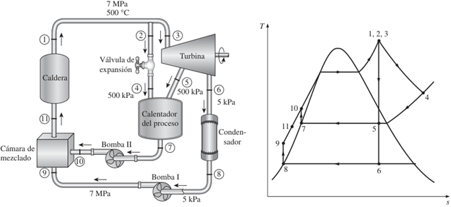
Donde:

Este modelo ha demostrado ser ampliamente aplicable en una gama diversa de metales y aleaciones, si bien a escalas nanomtricas pueden surgir efectos opuestos como el debilitamiento por granulacin ultrafina, lo que implica que existen lmites fsicos al fortalecimiento por refinamiento extremo.
7.3 Endurecimiento por trabajo en fro.
DEFORMACIN PLSTICA EN FRO
El endurecimiento por trabajo en fro, tambin conocido como endurecimiento por deformacin en fro o por deformacin plstica a baja temperatura, es un mecanismo clave en la modificacin microestructural de metales dctiles. Este proceso se basa en la deformacin mecnica del material por debajo de su temperatura de recristalizacin, generando un incremento sustancial en la densidad de dislocaciones mviles. La interaccin creciente entre estas dislocaciones, en conjuncin con su tendencia a formar estructuras celulares, produce una resistencia creciente al movimiento adicional de dislocaciones.
Este tipo de endurecimiento conlleva un incremento gradual de propiedades como el lmite elstico, la resistencia ltima y la dureza, aunque a costa de una reduccin considerable de la ductilidad y la capacidad de absorcin de energa. Es un mtodo ampliamente empleado en la industria de manufactura, especialmente en procesos de laminado en fro, trefilado, extrusin y estampado, donde se busca simultneamente mejorar la precisin dimensional y el acabado superficial.
El control de la cantidad de deformacin aplicada es esencial, ya que un trabajo en fro excesivo puede inducir fragilidad, agrietamiento y problemas de integridad estructural en aplicaciones exigentes.
7.4 Endurecimiento por solucin slida.
SOLUCIN SLIDA
El endurecimiento por solucin slida surge de la incorporacin de tomos de soluto en la red cristalina del material base, generando distorsiones elsticas locales que interactan con las dislocaciones.
Estas interacciones surgen a partir de diferencias en el tamao atmico, mdulo de elasticidad y polaridad electrnica entre los tomos de soluto y los del solvente. Las tensiones locales asociadas a dichas distorsiones crean un campo energtico que obstaculiza el avance de dislocaciones, aumentando as la resistencia al deslizamiento plstico.
Existen dos mecanismos de solucin slida:
Sustitucional, donde los tomos de soluto reemplazan posiciones de red del solvente,
Intersticial, donde los tomos de soluto se ubican en los espacios intersticiales de la red, como en el caso del carbono en el hierro (aceros).
La eficacia de este mecanismo depende de diversos factores:
La diferencia de radios atmicos entre el soluto y el solvente,
La rigidez relativa de ambos tomos,
La concentracin de soluto disuelto,
El grado de orden estructural generado por la solucin slida.
Este tipo de endurecimiento es ampliamente empleado en aleaciones industriales diseadas para aplicaciones estructurales y trmicamente exigentes, incluyendo aleaciones base aluminio, cobre, nquel y titanio.
7.5 Endurecimiento por precipitacin.
PRECIPITACIN
El endurecimiento por precipitacin, tambin conocido como endurecimiento por envejecimiento, implica la formacin de partculas de segunda fase, usualmente coherentes o parcialmente coherentes con la matriz, que actan como obstculos fsicos al desplazamiento dislocacional. Estas partculas pueden formarse de manera controlada mediante tratamientos trmicos, y su morfologa, tamao, densidad y coherencia son parmetros cruciales en la efectividad del refuerzo inducido.
Las dislocaciones pueden interactuar con estas partculas de dos maneras predominantes:
Corte de partculas, tpico de partculas pequeas y coherentes con la matriz,
Rodeo u Orowan, tpico de partculas grandes, duras o incoherentes, donde la dislocacin se ve forzada a contornearlas.
La resistencia adicional inducida por el mecanismo de Orowan est descrita por la ecuacin:
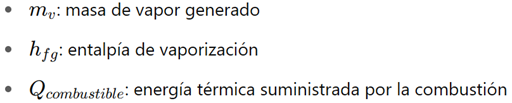
Donde:
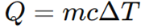
Este mtodo de fortalecimiento se emplea en una vasta gama de aleaciones tratables trmicamente, como las del sistema Al-Cu, Al-Zn-Mg-Cu y superaleaciones de base nquel utilizadas en entornos de alta temperatura como turbinas aeronuticas. El control preciso de la cintica de precipitacin permite afinar la respuesta mecnica del material segn las condiciones de servicio.
7.6 Endurecimiento por transformacin martenstica.
TRANSFORMACIN MARTENSTICA
La transformacin martenstica representa una de las rutas ms efectivas para lograr un endurecimiento estructural drstico en materiales ferrosos.
Esta transformacin, de carcter displacivo y sin difusin, ocurre cuando una aleacin rica en hierro (como los aceros) es enfriada rpidamente desde la regin austentica, suprimiendo la difusin del carbono y forzando la transformacin a una fase sobresaturada de carbono: la martensita, de estructura tetragonal centrada en el cuerpo (BCT).
Este proceso implica un cambio cooperativo en la disposicin atmica, acompaado por una distorsin significativa de la red cristalina.
La martensita resultante presenta una dureza elevada, debido a su estructura metaestable y al atrapamiento de carbono en posiciones intersticiales, aunque a costa de una considerable fragilidad.
Por ello, se suelen aplicar tratamientos trmicos posteriores como el revenido, con el objetivo de equilibrar la dureza con la tenacidad.
Factores que determinan el grado de transformacin martenstica incluyen:
La velocidad de enfriamiento (mayor velocidad favorece la formacin martenstica),
El contenido de carbono y otros elementos aleantes,
La temperatura de inicio (Ms) y de final (Mf) de la transformacin,
La geometra del componente y su conductividad trmica.
8. Materiales para ingeniera y su seleccin.
8.1 Aceros y fundiciones.
8.2 El cobre y sus aleaciones.
8.3 El aluminio y sus aleaciones.
8.4 Otros metales y aleaciones de amplio espectro industrial.
8.5 Polmeros para ingeniera.
8.6 Cermicos para ingeniera.
8.7 Otros materiales de amplia aplicacin en ingeniera.
8.8 Mtodos de seleccin de materiales para ingeniera.
9. Bibliografa.
ASKELAND, R. D. - The Science and Engineering of Materials.
MECNICA DE SLIDOS (1540)
Objetivo(s) del curso:
El alumno analizar e inferir el comportamiento mecnico de los cuerpos slidos deformables, con base en la identificacin de las fuerzas internas que se producen bajo la accin de fuerzas externas, considerando la geometra y las propiedades mecnicas de los materiales.
1. Introduccin a la mecnica de slidos.
1.1 Los alcances de la mecnica de slidos.
Mecnica de Materiales
La Mecnica de Slidos, como rama fundamental de la ingeniera y la fsica aplicada, se encarga de estudiar el comportamiento de los materiales cuando se someten a diferentes tipos de fuerzas externas e internas. Este campo, tambin conocido como Mecnica de Materiales o Mecnica de los Cuerpos Deformables, abarca desde los principios bsicos del equilibrio y la deformacin hasta teoras avanzadas sobre el comportamiento no lineal de los materiales. El alcance de esta disciplina se extiende mucho ms all de los conceptos bsicos de carga y deformacin, integrndose con las reas de diseo estructural, resistencia de materiales, dinmica de slidos y la innovacin en la ingeniera moderna.
Uno de los primeros pasos para comprender los alcances de esta disciplina es reconocer cmo integra los principios fundamentales de la fsica y las matemticas para resolver problemas complejos de ingeniera. El anlisis comienza con la determinacin de fuerzas externas que actan sobre los cuerpos, utilizando los principios bsicos de la esttica. Estas fuerzas generan tensiones y deformaciones internas que deben ser analizadas en detalle para garantizar que el material o la estructura pueda soportarlas sin fallar. A medida que los problemas de ingeniera han evolucionado, la mecnica de slidos ha desarrollado herramientas y mtodos para abordar situaciones ms complicadas, como cargas dinmicas, impactos y condiciones ambientales extremas.

Histricamente, la mecnica de slidos ha jugado un papel crucial en el desarrollo de estructuras y mquinas que han revolucionado la humanidad. Desde los experimentos iniciales de Galileo en el siglo XVII, que sentaron las bases de la resistencia de materiales, hasta las contribuciones de Saint-Venant, Poisson y Navier en el siglo XVIII, la mecnica de slidos ha avanzado significativamente. Estos pioneros no solo formularon las ecuaciones fundamentales de equilibrio y deformacin, sino que tambin establecieron las bases experimentales para la caracterizacin de materiales. Hoy en da, los ingenieros continan construyendo sobre estos fundamentos, utilizando herramientas avanzadas como el anlisis por elementos finitos (FEM, por sus siglas en ingls) para modelar y predecir el comportamiento de materiales complejos bajo diversas condiciones de carga.
El diseo estructural es una de las aplicaciones ms notables de la mecnica de slidos. Los ingenieros utilizan principios de esta disciplina para disear edificios, puentes, aviones, vehculos y una amplia gama de productos que requieren estabilidad y seguridad. Por ejemplo, la capacidad de calcular las tensiones y deformaciones en vigas, columnas y placas permite a los ingenieros seleccionar los materiales ms adecuados y optimizar la geometra para soportar cargas especficas. Esto no solo mejora la seguridad y funcionalidad de las estructuras, sino que tambin permite reducir costos y minimizar el impacto ambiental al utilizar recursos de manera ms eficiente.
Adems, la mecnica de slidos es fundamental para comprender y prevenir fallos en materiales. Los fenmenos como el pandeo, la fatiga y la fractura son estudiados en profundidad para garantizar que las estructuras y los componentes mecnicos puedan resistir las condiciones de servicio durante su vida til. Por ejemplo, en el caso del pandeo, los ingenieros analizan cmo una columna o viga delgada puede deformarse y colapsar bajo una carga crtica. De manera similar, los estudios sobre fatiga y fractura permiten evaluar cmo los materiales se comportan bajo cargas cclicas, como las que experimentan las alas de un avin o las ruedas de un tren, donde pequeas fisuras pueden propagarse y causar fallos catastrficos si no se detectan a tiempo.
La elasticidad y la plasticidad son dos conceptos fundamentales dentro de este campo, que permiten describir cmo los materiales responden a las fuerzas aplicadas. Mientras que la elasticidad se refiere a la capacidad de un material para recuperar su forma original una vez que se elimina la carga, la plasticidad describe el comportamiento permanente de deformacin cuando el material excede su lmite elstico. Estas propiedades son cruciales para disear estructuras seguras y funcionales. Por ejemplo, la ley de Hooke, una de las primeras leyes en describir el comportamiento elstico, sigue siendo una herramienta bsica en la ingeniera moderna. Sin embargo, en aplicaciones ms avanzadas, se emplean teoras no lineales y modelos constitutivos complejos para describir materiales que no siguen un comportamiento estrictamente lineal.
Un rea que ha ampliado significativamente los alcances de la mecnica de slidos es el estudio de los materiales compuestos y los biomateriales. Los materiales compuestos, como las fibras de carbono y las resinas epoxi, son esenciales en la industria aeroespacial y automotriz debido a su alta resistencia y baja densidad. Por otro lado, los biomateriales, diseados para interactuar con sistemas biolgicos, estn transformando la medicina moderna con aplicaciones que van desde prtesis hasta implantes quirrgicos. Estos avances no solo requieren una comprensin profunda de las propiedades mecnicas, sino tambin de las interacciones entre diferentes materiales a nivel microscpico y macroscpico.
En el contexto actual, la sostenibilidad y la innovacin tecnolgica estn moldeando los nuevos alcances de la mecnica de slidos. Los ingenieros estn trabajando para desarrollar materiales avanzados que sean ms ligeros, duraderos y reciclables, como los polmeros biodegradables y las aleaciones de alta entropa. Al mismo tiempo, las herramientas computacionales estn transformando la forma en que se realiza el anlisis estructural. Los mtodos de simulacin por computadora permiten a los ingenieros modelar estructuras complejas y prever cmo se comportarn bajo diversas condiciones, reduciendo la necesidad de pruebas fsicas extensas y costosas.
Por ltimo, la mecnica de slidos tambin desempea un papel crucial en la investigacin y el desarrollo de tecnologas emergentes, como la impresin 3D y la nanotecnologa. En la impresin 3D, el control preciso de las propiedades mecnicas es esencial para garantizar que los productos impresos sean funcionales y seguros. De manera similar, en la nanotecnologa, la comprensin del comportamiento mecnico a escala molecular est abriendo nuevas fronteras en el diseo de materiales con propiedades nicas.
2. Antecedentes.
2.1 Diagramas de cuerpo libre (DCL).
2.2 Ecuaciones de equilibrio.
2.3 Momentos de inercia.
2.4 Momento polar de inercia.
2.5 Concepto de esfuerzo normal y esfuerzo cortante.
3. Propiedades de los materiales para diseo.
3.1 Clasificacin de los materiales.
3.2 Propiedades mecnicas.
3.3 Relaciones costo-resistencia, resistencia-densidad.
3.4 Comportamiento dctil y frgil.
3.5 La fatiga en los materiales.
3.6 Factor de diseo.
4. Esfuerzo y deformacin.
4.1 Esfuerzo normal.
4.2 Esfuerzo cortante.
4.3 Casos particulares.
4.4 Deformacin normal.
4.5 Deformacin a corte.
4.6 Representacin grfica del estado de esfuerzo y de deformacin por medio del crculo de Mohr.
4.7 Ley de Hooke generalizada.
4.8 Esfuerzos y deformaciones por variaciones de temperatura.
4.9 Concentracin de esfuerzos en miembros cargados axialmente.
5. Elementos sometidos a torsin.
5.1 Torsin en barras circulares.
5.2 Miembros estticamente indeterminados sometidos a torsin.
5.3 Transmisin de potencia.
5.4 Torsin en barras no circulares.
5.5 Concentracin de esfuerzos en miembros sometidos a torsin.
6. Determinacin de los diagramas de fuerza cortante y de momento flexionante en vigas.
6.1 Conceptos bsicos.
6.2 Mtodo de secciones.
6.3 Mtodo grfico.
7. Esfuerzos por flexin y cortantes en vigas.
7.1 Condiciones de esfuerzo en el plano.
7.2 Determinacin de los esfuerzos en una viga sometida a flexin.
7.3 Esfuerzo cortante debido a una carga transversal.
7.4 Flexin en elementos compuestos.
7.5 Anlisis de vigas curvas.
7.6 Concentracin de esfuerzos en vigas.
8. Esfuerzos bajo cargas combinadas y transformacin de esfuerzos.
8.1 Superposicin de esfuerzos.
8.2 Esfuerzos bajo diferentes combinaciones de carga para obtener el estado de esfuerzo en un punto (casos de aplicacin).
8.3 Transformacin de esfuerzos y de deformaciones en el plano.
8.4 Crculo de Mohr para estados de esfuerzo y deformacin en el plano.
8.5 Criterio de falla de Von Mises-Hencky.
8.6 Esfuerzo eficaz o de Von Mises.
8.7 Introduccin al diseo por fatiga.
9. Bibliografa.
HIBBELER, R. C. - Mecnica de materiales.
TCNICAS DE PROGRAMACIN (1472)
Objetivo(s) del curso:
El alumno disear sistemas de cmputo con interfaces grficas de usuario, con base en el paradigma de la programacin orientada a objetos. El alumno elaborar programas eficientes, con un desempeo a prueba de fallas y que sean amigables con el usuario.
1. Importancia del software en la mecatrnica.
1.1 Diferencia entre programacin y codificacin.
CODIFICACIN
Se refiere a la escritura de un programa utilizando un lenguaje especfico para que el ordenador pueda ejecutarlo.
Es la actividad tcnica y prctica de escribir cdigo en un lenguaje de programacin. Consiste en traducir una idea o diseo en instrucciones que la mquina pueda interpretar y ejecutar. Por ejemplo, escribir un programa en ensamblador para un microcontrolador o en Python para una aplicacin web.
La escritura de un programa en un lenguaje especfico para ser entendido por el ordenador. Puede implicar la generacin de cdigo en diferentes niveles de abstraccin, como lenguajes de cuarta generacin.
PROGRAMACIN
Es un concepto ms amplio que incluye no solo la codificacin, sino tambin el diseo, anlisis y prueba del software.
Representa un concepto ms amplio. Incluye el anlisis del problema, el diseo de la solucin, la implementacin (codificacin), la depuracin y las pruebas. Adems, abarca tareas como la optimizacin del cdigo, la gestin de versiones y la planificacin del mantenimiento del software. Por ejemplo, al programar un sistema mecatrnico, el desarrollador no solo escribe el cdigo sino tambin disea algoritmos que integren sensores, actuadores y controladores, asegurando que el sistema sea eficiente y confiable.
Un mtodo comn para disear programas es el siguiente:
1. Definicin del problema: Se debe establecer claramente qu tarea realizar el programa, qu datos ingresar y qu resultados producir. Tambin se deben considerar aspectos como la velocidad requerida, la precisin y la cantidad de memoria necesaria.
2. Diseo del algoritmo: Un algoritmo es la secuencia de pasos que resuelve el problema. Es como una receta, pero para un programa.
3. Representacin del algoritmo: Existen diferentes formas de representar un algoritmo. Una opcin es utilizar un diagrama de flujo, que es una representacin grfica de los pasos. Otra opcin es utilizar pseudocdigo, que es una descripcin informal de los pasos en un lenguaje similar al natural. (Diagrama de flujos: a) smbolos, b) ejemplo.)
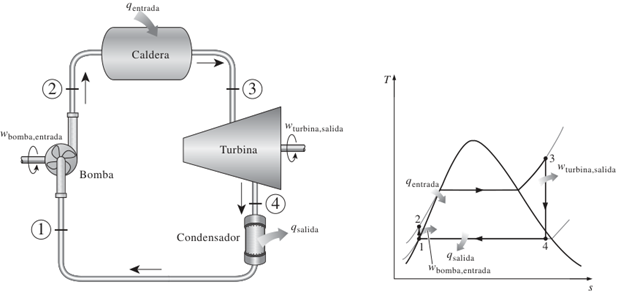
- Codificacin: Una vez que tenemos el algoritmo diseado, lo traducimos a un lenguaje de programacin que la computadora pueda entender, como C o ensamblador, y luego se convierten en forma manual o con un programa ensamblador, en un cdigo aceptable para el microprocesador, esto es, cdigo de mquina.
- Prueba y depuracin: El programa se ejecuta para verificar que funcione correctamente. Si se encuentran errores (se conocen como bugs,), se deben corregir en un proceso llamado depuracin de programas.
1.2 El lugar que ocupa el software en los sistemas mecatrnicos.
El software es una pieza central en la mecatrnica porque coordina y optimiza la interaccin entre componentes mecnicos, electrnicos y de control. Entre sus aplicaciones destacadas estn:
Automatizacin industrial:
Software de control en lneas de produccin automatizadas.
Integracin de sensores para monitorear procesos en tiempo real.
Sistemas embebidos que controlan mquinas como robots industriales.
Sistemas de transporte:
Controladores de sistemas de suspensin inteligente, que ajustan automticamente las condiciones segn la carga o el tipo de camino.
Software de frenado automtico en vehculos que usa sensores para detectar obstculos.
Electrodomsticos avanzados:
Cmaras digitales con enfoque y exposicin automticos.
Lavadoras con sistemas de control embebido para gestionar ciclos de lavado y temperatura.
Diseo de sistemas mecatrnicos:
Simulacin de sistemas antes de su implementacin fsica, utilizando herramientas como MATLAB o lenguajes de programacin para modelado.
1.3 Clasificacin de los lenguajes de programacin segn su: nivel de abstraccin (bajo nivel, nivel medio, alto nivel), propsito (general, especfico), generacin o evolucin histrica (1GL, 2GL, 3GL, 4GL, 5GL), manera de ejecutarse (interpretados, compilados).
NIVEL DE ABSTRACCIN
Bajo nivel
Ejemplos: Ensamblador, cdigo mquina.
Caractersticas: Altamente eficiente para el hardware, pero complejo para el desarrollador debido a su falta de abstraccin. Ideal para sistemas embebidos donde se requiere un control directo sobre los registros y puertos del hardware.
Los microprocesadores trabajan en cdigo binario. Las instrucciones escritas en cdigo binario son referidas como cdigo de mquina. Un cdigo taquigrfico que utiliza trminos sencillos e identificables en lugar del cdigo binario se llama cdigo mnemnico, un cdigo mnemnico es un cdigo auxiliar para la memorizacin. A este cdigo se le conoce como lenguaje ensamblador. Los programas de lenguaje ensamblador consisten en una secuencia de instrucciones, una por lnea, cada una con uno o cuatro campos: etiqueta, cdigo de operacin, operando y comentario. La etiqueta es el nombre que recibe una entrada en particular en la memoria. El cdigo de operacin especifica cmo manipular los datos. El operando contiene la direccin de los datos a operar. El campo de comentario es para permitir al programador incluir comentarios que podran hacer ms comprensible el programa al lector.
Nivel medio:
Ejemplos: BASIC, C/C++, FORTRAN y PASCAL.
Caractersticas: Balance entre abstraccin y control del hardware. Muy utilizado en sistemas mecatrnicos, ya que permite acceder al hardware mientras mantiene estructuras ms comprensibles.
La clasificacin "nivel medio" se debe ya que combinan caractersticas de ambos mundos: permite un alto nivel de abstraccin, pero tambin ofrece un acceso directo al hardware cuando es necesario.
Debido que son ms viejos que otros lenguajes de programacin, puede surgir la duda o el comentario de que algunos los consideren de alto nivel, pero esta misma ambigedad lo que hace tener esta confusin. Esto se debe a que los lenguajes de programacin evolucionan con el tiempo y las nuevas caractersticas y paradigmas pueden cambiar su percepcin. Adems, la clasificacin puede depender de las caractersticas que se estn considerando en un momento dado.
Alto nivel:
Ejemplos: Python, PHP, Java, Visual Basic y C#.
Caractersticas: Abstraen completamente el hardware, lo que facilita la escritura, mantenimiento y reutilizacin del cdigo. Ideales para interfaces grficas y software de simulacin en mecatrnica.
Los lenguajes de alto nivel proporcionan un tipo de lenguaje de programacin que describe de forma ms cercana y accesible el tipo de operaciones que se requieren.
Cuando se comparan con el lenguaje ensamblador, tiene la ventaja de ser ms fcil de manejar y que un mismo programa se puede usar con microprocesadores diferentes; para ello, basta usar el compilador apropiado para traducir el programa al cdigo de mquina del microprocesador involucrado.
PROPSITO
Propsito general:
Ejemplos: C, Java, Python.
Aplicaciones: Desde software de simulacin hasta controladores embebidos y aplicaciones mviles.
C: Es un lenguaje de propsito general muy verstil, utilizado en sistemas operativos, controladores, aplicaciones de escritorio y ms. Su eficiencia y control sobre el hardware lo hacen ideal para sistemas embebidos y aplicaciones que requieren un alto rendimiento.
Java: Diseado para ser "escribir una vez, ejecutar en cualquier lugar", Java se utiliza ampliamente en desarrollo web, aplicaciones empresariales, Android y ms.
Python: Conocido por su sintaxis simple y legible, Python se utiliza en ciencia de datos, aprendizaje automtico, desarrollo web y scripting.
Propsito especfico:
Ejemplos: MATLAB.
Aplicaciones: Simulacin de sistemas dinmicos, diseo de controladores y anlisis matemtico.
MATLAB: Especializado en clculos numricos, visualizacin de datos y simulacin. Se utiliza en ingeniera, ciencia y finanzas.
SQL: Diseado especficamente para gestionar bases de datos relacionales.
GENERACIN Y/O EVOLUCIN HISTRICA
1GL (Primera Generacin):
Cdigo mquina puro.
Aplicaciones: Directamente ejecutado por el hardware, usado en sistemas embebidos simples.
El lenguaje ms bajo nivel, directamente ejecutable por el hardware.
2GL (Segunda Generacin):
Lenguaje ensamblador.
Aplicaciones: Desarrollos optimizados para hardware especfico.
Una representacin simblica del cdigo mquina, ms legible pero an muy ligado al hardware.
3GL (Tercera Generacin):
Ejemplos: C, Fortran.
Aplicaciones: Programacin de sistemas mecatrnicos y cientficos.
Una gran variedad de lenguajes, como C, Fortran, Pascal, que ofrecen abstracciones ms altas y son ms fciles de aprender y usar que los lenguajes de generaciones anteriores.
4GL (Cuarta Generacin):
Ejemplos: SQL, lenguajes de consulta y desarrollo rpido.
Aplicaciones: Bases de datos para sistemas mecatrnicos.
Diseados para tareas especficas, como el desarrollo de bases de datos o la creacin de informes. SQL es un ejemplo clsico.
5GL (Quinta Generacin):
Ejemplos: Lenguajes orientados a inteligencia artificial.
Aplicaciones: Sistemas expertos en diagnstico y control.
Lenguajes de programacin lgica y declarativa, utilizados principalmente en inteligencia artificial y sistemas expertos.
FORMA DE EJECUCIN
Compilados
Ejemplo: C.
Caractersticas: Alta eficiencia, se traduce todo el programa antes de ejecutarse. Ideal para aplicaciones crticas en sistemas mecatrnicos.
Para traducir un programa escrito en un lenguaje de alto nivel (programa fuente) a lenguaje mquina se utiliza un programa llamado compilador. Este programa tomar como datos nuestro programa escrito en lenguaje de alto nivel y dar como resultado el mismo programa pero escrito en lenguaje mquina, programa que ya puede ejecutar directa o indirectamente el ordenador.

Por ejemplo, un programa escrito en el lenguaje C necesita del compilador C para poder ser traducido. Posteriormente el programa traducido podr ser ejecutado directamente por el ordenador. En cambio, para traducir un programa escrito en el lenguaje C# necesita del compilador C#; en este caso, el lenguaje mquina no corresponde al del ordenador sino al de una mquina ficticia, denominada mquina virtual, que ser puesta en marcha por el ordenador para ejecutar el programa. En .NET esta mquina virtual es el CLR (Common Language Runtime).
Qu es una mquina virtual? Una mquina que no existe fsicamente sino que es simulada en un ordenador por un programa.
Por qu utilizar una mquina virtual? Porque, por tratarse de un programa, es muy fcil instalarla en cualquier ordenador; basta con copiar ese programa en su disco duro, por ejemplo. Y, qu ventajas reporta? Pues, en el caso de C#, que un programa escrito en este lenguaje y compilado puede ser ejecutado en cualquier ordenador del mundo que tenga instalada esa mquina virtual. Esta solucin hace posible que cualquier ordenador pueda ejecutar un programa escrito en C# independiente de la plataforma que utilice, lo que se conoce como transportabilidad de programas.
Interpretados
Ejemplo: Python.
Caractersticas: Se ejecuta lnea por lnea. til para prototipos y simulaciones rpidas.
A diferencia de un compilador, un intrprete no genera un programa escrito en lenguaje mquina a partir del programa fuente, sino que efecta la traduccin y ejecucin simultneamente para cada una de las sentencias del programa. Por ejemplo, un programa escrito en el lenguaje Basic necesita el intrprete Basic para ser ejecutado. Durante la ejecucin de cada una de las sentencias del programa, ocurre simultneamente la traduccin.
A diferencia de un compilador, un intrprete verifica cada lnea del programa cuando se escribe, lo que facilita la puesta a punto del programa. En cambio la ejecucin resulta ms lenta ya que acarrea una traduccin simultnea.
OTRAS CLASIFICACIONES
Paradigma de programacin: Imperativo, orientado a objetos, funcional, lgico.
Tipado: Esttico (tipos definidos en tiempo de compilacin), dinmico (tipos determinados en tiempo de ejecucin).
1.4 Ejemplos de los distintos tipos de lenguajes de programacin y sus reas de aplicacin.
C
Uso: Desarrollo de sistemas embebidos y controladores en tiempo real.
Ejemplo: Control de motores en robots.
Qu es C?
C es un lenguaje de programacin de nivel medio diseado en los aos 70 por Dennis Ritchie en los Laboratorios Bell. Su propsito original era facilitar el desarrollo de sistemas operativos, en especial UNIX, aunque rpidamente se convirti en uno de los lenguajes ms influyentes en el mundo de la programacin. Combina caractersticas de lenguajes de bajo nivel, como el control directo del hardware y la gestin de memoria, con estructuras de control y modularidad que lo acercan a lenguajes de alto nivel. Esto lo hace ideal para aplicaciones de sistemas donde se requiere eficiencia y control preciso de los recursos. Adems, su portabilidad y compatibilidad han permitido que C sea ampliamente utilizado en sistemas embebidos, dispositivos electrnicos y aplicaciones de alto rendimiento. Es el precursor de lenguajes modernos como C++, C#, Java y Python, y sigue siendo un estndar en la enseanza de fundamentos de programacin
Por qu aprender C?
Estudiar C es crucial para entender cmo funcionan las computadoras a nivel bsico. Al aprender C, los programadores desarrollan una comprensin profunda de conceptos esenciales como la gestin de memoria, los punteros y la interaccin con hardware. Aunque la sintaxis de C puede parecer ms compleja que la de lenguajes modernos, su aprendizaje sienta las bases para entender otros lenguajes orientados a objetos y de alto nivel. Adems, muchos sistemas operativos, aplicaciones crticas y herramientas fundamentales estn escritas en C, lo que asegura su relevancia continua. Su enfoque en la eficiencia y el control total lo convierte en una herramienta valiosa para quienes trabajan en reas como sistemas embebidos y desarrollo de software de alto rendimiento.
PYTHON
Uso: Desarrollo de software de simulacin y anlisis de datos.
Ejemplo: Algoritmos de visin por computadora para robots.
Qu es Python?
Python es un lenguaje de programacin de alto nivel, interpretado y de propsito general, creado por Guido van Rossum en 1991. Es conocido por su sintaxis simple y legibilidad, lo que facilita a los programadores expresar ideas y resolver problemas complejos con menos lneas de cdigo que en otros lenguajes como Java o C++. Python es un lenguaje multiplataforma, lo que significa que un programa desarrollado en este lenguaje puede ejecutarse sin modificaciones en diversos sistemas operativos, siempre que tengan un intrprete de Python instalado. Sus aplicaciones abarcan desde el desarrollo web hasta la inteligencia artificial, el anlisis de datos y la automatizacin de tareas. Python cuenta con una biblioteca estndar extensa que permite a los programadores realizar operaciones avanzadas, como manipulacin de archivos, conexiones de red y grficos, sin necesidad de escribir cdigo adicional. Adems, la comunidad de Python ha desarrollado una vasta cantidad de bibliotecas y marcos de trabajo que amplan an ms sus capacidades, como NumPy para clculos cientficos, Django para desarrollo web y TensorFlow para aprendizaje automtico.
Por qu aprender Python?
Aprender Python no solo es un paso esencial para quienes inician en la programacin, sino tambin una ventaja competitiva para programadores experimentados. Su enfoque en la simplicidad y la eficiencia lo convierte en un lenguaje ideal para resolver problemas rpidamente, adems de ser una herramienta imprescindible en campos de vanguardia como la inteligencia artificial y el anlisis de grandes volmenes de datos. Python tambin es una excelente opcin para prototipado rpido, ya que permite probar y desarrollar ideas en menos tiempo comparado con otros lenguajes. Su adopcin en la industria sigue creciendo, respaldada por una comunidad activa y extensa documentacin que facilita el aprendizaje y la solucin de problemas. Adems, la compatibilidad de Python con otros lenguajes y plataformas asegura su relevancia a largo plazo.
MATLAB y SIMULINK:
Uso: Modelado y simulacin de sistemas dinmicos.
Ejemplo: Diseo de sistemas de control PID para automatizacin.
Qu son MATLAB y Simulink?
MATLAB es un entorno de programacin especializado en clculos matemticos, anlisis de datos y simulaciones cientficas, ampliamente utilizado en ingeniera y ciencias. Por su parte, Simulink es una herramienta grfica complementaria que permite modelar, simular y analizar sistemas dinmicos de manera visual. Estas herramientas son esenciales para disear y probar sistemas de control, circuitos elctricos, algoritmos de procesamiento de seales y modelos de sistemas fsicos antes de su implementacin real. MATLAB incluye funciones predefinidas y herramientas interactivas que facilitan desde clculos bsicos hasta tareas complejas como diseo de controladores PID y optimizacin matemtica.
Por qu aprender MATLAB y Simulink?
Ambas herramientas son fundamentales para ingenieros y cientficos, ya que permiten resolver problemas tcnicos complejos de manera rpida y efectiva. MATLAB destaca por su flexibilidad y su capacidad para manejar grandes volmenes de datos, mientras que Simulink permite experimentar con modelos y ajustar parmetros en tiempo real sin necesidad de programacin extensa. Su uso en la industria y la academia asegura una base slida para abordar problemas avanzados en campos como la mecatrnica, la robtica y las telecomunicaciones.
C++
Uso: Desarrollo de videojuegos y simulacin de
sistemas fsicos.
Ejemplo: Creacin de motores grficos como Unreal Engine y simuladores
dinmicos en robtica.
Qu es C++?
C++ es un lenguaje de programacin de alto rendimiento y propsito general, diseado por Bjarne Stroustrup en la dcada de 1980 como una extensin del lenguaje C. Integra caractersticas de programacin orientada a objetos, como encapsulacin, herencia y polimorfismo, junto con la capacidad de trabajar a bajo nivel directamente con hardware y memoria. Esta combinacin nica lo convierte en un lenguaje potente y flexible para desarrollar aplicaciones que requieren tanto control detallado como estructuras avanzadas. C++ es ampliamente utilizado en sistemas operativos, motores de videojuegos, aplicaciones cientficas y dispositivos embebidos. Su portabilidad permite que los programas escritos en C++ puedan ejecutarse en diferentes plataformas con modificaciones mnimas, siempre que se respete el estndar del lenguaje.
Por qu aprender C++?
C++ es esencial para quienes desean entender los fundamentos de la programacin orientada a objetos y aprender a trabajar con sistemas de alto rendimiento. Su control sobre recursos del sistema, como la memoria y el tiempo de ejecucin, lo hace ideal para aplicaciones crticas donde la eficiencia es clave. Aunque puede ser ms complejo que otros lenguajes modernos debido a su enfoque en punteros, sobrecarga de operadores y manejo explcito de memoria, C++ ofrece herramientas poderosas para abordar problemas complejos. Su uso sigue siendo relevante en campos como simulacin, desarrollo de videojuegos y aplicaciones industriales.
JAVA
Uso: Aplicaciones multiplataforma y de control distribuido.
Ejemplo: Interfaces grficas para sistemas de monitoreo.
Qu es Java?
Java es un lenguaje de programacin orientado a objetos desarrollado por Sun Microsystems (ahora propiedad de Oracle) en la dcada de 1990. Diseado bajo el principio de "escribe una vez, ejecuta en cualquier lugar", Java es altamente porttil gracias a la Mquina Virtual Java (JVM), que permite ejecutar programas en cualquier sistema operativo compatible. Java combina facilidad de uso con caractersticas avanzadas como manejo automtico de memoria y un modelo robusto de seguridad. Es ampliamente utilizado en aplicaciones empresariales, desarrollo de aplicaciones mviles (particularmente para Android), y sistemas distribuidos. La sintaxis de Java, derivada de C y C++, facilita la transicin para programadores con experiencia en estos lenguajes
Por qu aprender Java?
Java sigue siendo uno de los lenguajes ms populares y demandados debido a su estabilidad y versatilidad. Proporciona una biblioteca estndar rica en funcionalidades, que incluye herramientas para manejar redes, bases de datos y grficos. Adems, su ecosistema, que incluye marcos como Spring y Hibernate, lo convierte en una opcin ideal para construir aplicaciones empresariales y sistemas de control distribuido. Aprender Java tambin abre la puerta a oportunidades en el desarrollo mvil y en la programacin de servidores para aplicaciones web escalables
WOLFRAM MATHEMATICA (WOLFRAM LANGUAGE)
Uso: Investigacin cientfica y modelado matemtico.
Ejemplo: Anlisis de ecuaciones diferenciales y visualizacin de datos
3D.
Qu es Wolfram Mathematica y Wolfram Language?
Wolfram Mathematica es un sistema computacional poderoso diseado para realizar clculos simblicos y numricos, anlisis matemtico y generacin de grficos avanzados. Wolfram Language, su lenguaje de programacin subyacente est orientado al manejo de datos, visualizacin y automatizacin de tareas complejas. Este entorno es utilizado principalmente en investigacin cientfica, ingeniera, finanzas y educacin, gracias a su capacidad para resolver problemas que van desde lgebra simblica hasta modelos de aprendizaje automtico. Su enfoque basado en reglas permite describir problemas de manera concisa y resolverlos utilizando su base de datos integrada y algoritmos optimizados.
Por qu aprender Wolfram Language?
Wolfram Language proporciona herramientas nicas para abordar problemas complejos con una sintaxis compacta y eficiente. Aprender este lenguaje es una ventaja para quienes trabajan en proyectos que requieren simulaciones, modelado matemtico o anlisis de datos a gran escala. Adems, su integracin con Wolfram Alpha y su capacidad para generar automticamente representaciones visuales de datos hacen que sea ideal para proyectos de investigacin y enseanza. Wolfram Language tambin es altamente escalable y puede integrarse con otros lenguajes y plataformas.
LENGUAJE ENSAMBLADOR
Uso: Optimizacin de sistemas embebidos y firmware.
Ejemplo: Programacin de microcontroladores en dispositivos mdicos y
sistemas de control industrial.
Qu es el Lenguaje Ensamblador?
El lenguaje ensamblador es un lenguaje de programacin de bajo nivel que permite a los desarrolladores interactuar directamente con la arquitectura del hardware de un sistema. A diferencia de los lenguajes de alto nivel, ensamblador utiliza instrucciones especficas del procesador, como mover datos entre registros, realizar operaciones aritmticas y manejar interrupciones. Cada procesador tiene su propio conjunto de instrucciones, por lo que los programas en ensamblador no son portables entre diferentes arquitecturas. Es una herramienta indispensable para optimizar el rendimiento de sistemas embebidos y dispositivos electrnicos donde la eficiencia es crtica.
Por qu aprender Lenguaje Ensamblador?
Aprender ensamblador proporciona una comprensin profunda de cmo funcionan los sistemas a nivel mquina. Esto incluye cmo se gestionan los registros, la memoria y el flujo de ejecucin. Aunque puede ser difcil de dominar debido a su sintaxis detallada y su enfoque en hardware especfico, el ensamblador es vital en reas donde se requiere mxima optimizacin, como en el desarrollo de firmware, sistemas operativos y controladores de dispositivos. Adems, los conocimientos de ensamblador permiten identificar y corregir errores en niveles bajos del software.
C#
Uso: Desarrollo de videojuegos, aplicaciones empresariales y sistemas en la nube.
Ejemplo: Aplicaciones web con interfaces avanzadas en ASP.NET Core
Qu es C#?
C# es un lenguaje de programacin moderno, de alto nivel y orientado a objetos, desarrollado por Microsoft como parte de su plataforma .NET. Diseado con la simplicidad y la productividad en mente, combina caractersticas avanzadas de lenguajes como C++ y Java, eliminando algunos de sus aspectos ms complejos, como el manejo manual de punteros. C# permite desarrollar aplicaciones para diversas plataformas, incluyendo aplicaciones de escritorio, web y mviles. Adems, est profundamente integrado con el entorno .NET, lo que significa que aprovecha las bibliotecas y herramientas proporcionadas por Microsoft para simplificar el desarrollo de software. Este lenguaje tambin incorpora mecanismos de seguridad, como la gestin automtica de memoria y la deteccin de errores en tiempo de ejecucin, lo que lo hace ms seguro y confiable.
Precisamente C# es uno de los lenguajes de programacin de alto nivel que pertenecen al paquete .NET (otros lenguajes son Visual Basic, C/C++, etc.). C# es una evolucin de C/C++. Con l se pueden escribir tanto programas convencionales como para Internet. Las aplicaciones podrn mostrar una interfaz grfica al usuario, o bien una interfaz de texto, como hacen las denominadas aplicaciones de consola.
El paquete .NET incluye un compilador (programa traductor) de C# que produce un cdigo escrito en un lenguaje intermedio, comn para todos los lenguajes de dicha plataforma, que ser el que la mquina virtual ejecutar (esto es, cada lenguaje de la plataforma tiene su compilador que produce cdigo correspondiente a un nico lenguaje: MSIL).

Por lo tanto, MSIL es un lenguaje mquina que no es especfico de ningn procesador, sino de la mquina virtual de .NET. En realidad se trata de un lenguaje de ms alto nivel que otros lenguajes mquina: trata directamente con objetos y tiene instrucciones para cargarlos, guardarlos, iniciarlos, invocar a sus mtodos, as como para realizar operaciones aritmticas y lgicas, para controlar el flujo de ejecucin, etc. A su vez, la mquina virtual posee un recolector de basura (para eliminar los objetos cuando no estn referenciados) y proporciona traductores del lenguaje intermedio a cdigo nativo para cada arquitectura soportada; se trata de compiladores JIT (Just in Time: al instante).
Por qu aprender C#?
una de las ventajas significativas de C# sobre otros lenguajes de programacin es que es independiente de la plataforma (lo mismo podemos decir respecto a los dems lenguajes incluidos en .NET). Esto quiere decir que el cdigo producido por el compilador C# puede transportarse a cualquier plataforma (Intel, Sparc, Motorola, etc.) que tenga instalada una mquina virtual de .NET y ejecutarse. Pensando en Internet esta caracterstica es crucial ya que esta red conecta ordenadores muy distintos. Otra caracterstica importante de C# es que es un lenguaje de programacin orientado a objetos (POO). Los conceptos en los que se apoya esta tcnica de programacin y sus ventajas sern expuestos en los captulos siguientes. Adems de ser transportable y orientado a objetos, C# es un lenguaje fcil de aprender. Tiene un tamao pequeo que favorece el desarrollo y reduce las posibilidades de cometer errores; a la vez es potente y flexible.
C# est fundamentado en C++. Quiere esto decir que mucha de la sintaxis y diseo orientado a objetos se tom de este lenguaje. Por lo tanto, a los lectores que estn familiarizados con C++ y la POO les ser muy fcil aprender a desarrollar aplicaciones con C#.
2. Metodologa de la programacin orientada a objetos.
2.1 Clases y objetos. Constructores, atributos y mtodos.
La programacin orientada a objetos (POO) es un modelo de programacin que utiliza objetos, ligados mediante mensajes, para la solucin de problemas. La idea central es simple: organizar los programas a imagen y semejanza de la organizacin de los objetos en el mundo real.
2.2 Encapsulacin, herencia y polimorfismo.
2.3 Sobrecarga de funciones.
2.4 Sobrecarga de operadores.
2.5 Manejo de errores y de excepciones.
2.6 Arreglos y colecciones.
2.7 Implementacin de interfaces.
2.8 Manejadores de eventos.
2.9 Construccin de bibliotecas y reutilizacin de cdigo.
2.10 Almacenamiento, actualizacin y eliminacin de informacin en base a estructuras.
2.11 Manejo de archivos (escritura, lectura, acceso secuencial, acceso aleatorio).
2.1.1 Formular el problema.
2.1.2 Analizar el problema.
2.1.3 Disear una estrategia de bsqueda de la solucin.
3. Desarrollo de sistemas de cmputo orientados a objetos.
3.1 Anlisis y definicin de los requerimientos del usuario y del sistema.
3.2 Diseo y modelado de sistemas, utilizando el Lenguaje de Modelado Unificado (UML).
3.3 Desarrollo de los subsistemas.
3.4 Integracin del sistema.
3.5 Verificacin, validacin y pruebas del software.
3.6 Mantenimiento del software (depuracin, actualizacin, evolucin).
3.7.1 Tipo de errores.
3.7.2 Tcnicas de depuracin.
4. Concepto, uso y aplicaciones de las estructuras de datos compuestas.
4.1 Listas.
4.2 Pilas.
4.3 Colas.
4.4 rboles.
4.5 Algoritmos de ordenacin y bsqueda.
5. Interfaces grficas de usuario.
5.1 Diseo y construccin de interfaces grficas. Reglas y metodologa para el diseo de interfaces claras, concisas, eficientes y fciles de usar.
5.2 Uso y configuracin de controles predefinidos: formularios, botones de comando, cajas de texto, etiquetas, botones de opcin, casillas de verificacin, listas, timers, mens, barras de herramientas.
5.3 Diseo y construccin de controles personalizados.
5.4 Uso de la interfaz de dispositivos grficos para realizar dibujos.
6. Bibliografa.
CEBALLOS SIERRA, Francisco Javier - Microsoft C#. Curso de programacin.
PRESSMAN, Roger S. - Ingeniera del Software. Un enfoque prctico.
SEXTO SEMESTRE
ELECTRNICA BSICA (1691)
Objetivo(s) del curso:
El alumno disear circuitos electrnicos analgicos y digitales, aplicar tcnicas de diseo de circuitos digitales, analgicos y de potencia usados en sistemas mecatrnicos.
1. Introduccin.
1.1 Aspectos histricos de la electrnica y su definicin.
ELECTRNICA
La Electrnica se define como la ciencia del movimiento de cargas en un gas, vaco o semiconductor. (Cabe destacar que el movimiento de cargas en un metal queda excluido de esta definicin). Esta definicin se utiliz a principios del siglo XX para separar el campo de la ingeniera elctrica, que se ocupaba de motores, generadores y comunicaciones por cable, del nuevo campo de la ingeniera electrnica, que en ese momento se ocupaba de los tubos de vaco.
Electrnica: es una rama de la ingeniera elctrica que se ocupa del control de partculas cargadas como electrones y vacancias.
La Electrnica es una subrama de la fsica aplicada que comprende la fsica, la ingeniera, la tecnologa y las aplicaciones que tratan con la emisin, el flujo y el control de los electrones u otras partculas cargadas elctricamente en el vaco y la materia.
Hoy en da, la electrnica generalmente involucra transistores y circuitos de transistores. La microelectrnica se refiere a la tecnologa de circuitos integrados (CI), que puede producir un circuito con millones de componentes en una sola pieza de material semiconductor.
HISTORIA DE LA ELECTRNICA: DE LOS DESCUBRIMIENTOS FUNDAMENTALES A LA ERA DEL MICROPROCESADOR
La electrnica, ha evolucionado notablemente desde sus inicios, aunque los principios fundamentales han cambiado poco a lo largo del tiempo. Los avances tecnolgicos en miniaturizacin y velocidad han permitido la creacin de dispositivos ms pequeos y rpidos, aunque los conceptos bsicos permanecen vigentes. Por ejemplo, muchos de los componentes actuales se basan en inventos de hace dcadas, como el diodo (1939) y el transistor (1949). El descubrimiento del circuito integrado (1958) marc un hito al integrar mltiples transistores en una sola estructura, revolucionando el diseo de dispositivos electrnicos.
Orgenes y Descubrimientos Iniciales (1899-1906)
La electrnica como disciplina comenz a tomar forma con el descubrimiento del electrn en 1899 por J. J. Thomson en la Universidad de Cambridge, Inglaterra. Este evento marc un antes y un despus en el entendimiento de la naturaleza elctrica de la materia. Poco despus, en 1901, Guglielmo Marconi realiz un avance revolucionario al enviar un mensaje a travs del Atlntico utilizando telegrafa inalmbrica, lo que sent las bases de la comunicacin por radio. En 1906, Lee De Forest invent el tubo de vaco Audion, un dispositivo destinado inicialmente a amplificar seales de audio. Este invento, que mejor significativamente los equipos de comunicacin inalmbrica, se considera una piedra angular en el desarrollo de la electrnica.
Ese mismo ao, Greenleaf W. Pickard introdujo el primer detector de cristal para radios, mostrando el potencial de los semiconductores como materiales clave para aplicaciones futuras en electrnica.
La Electrnica Comercial y la Era de los Tubos de Vaco (1920-1947)
En 1920, naci la radio comercial en Pittsburgh, Pensilvania, con la estacin KDKA, marcando el comienzo de una nueva era. Para 1937, ms de la mitad de los hogares en los Estados Unidos ya tenan radios, y en 1946 comenz la comercializacin masiva de televisores. Sin embargo, la complejidad de los dispositivos electrnicos y los desafos tcnicos de los tubos de vaco llevaron a los ingenieros a buscar soluciones ms avanzadas.
En 1946, se present la primera computadora digital electrnica, la ENIAC, en la Universidad de Pensilvania. Este sistema monumental ocupaba una sala completa de 30 por 50 pies, pesaba 30 toneladas y contena 17,468 tubos de vaco, adems de miles de resistencias y condensadores. Aunque innovadora, la ENIAC consuma 150,000 W de energa y tena una fiabilidad limitada (un promedio de 7 minutos entre fallos).
El Nacimiento del Transistor y la Revolucin de los Semiconductores (1947-1959)
El verdadero cambio lleg en 1947, cuando los cientficos John Bardeen, Walter Brattain y William Shockley, trabajando en Bell Labs, desarrollaron el primer transistor funcional. Este dispositivo, ms pequeo, eficiente y confiable que los tubos de vaco, revolucion la electrnica y mereci a sus inventores el Premio Nobel.
En paralelo, Claude Shannon, tambin en Bell Labs, public trabajos que sentaron las bases para la comunicacin digital y el uso del lgebra booleana en redes de conmutacin telefnica. Estos conceptos son fundamentales para las tecnologas de telecomunicaciones y computacin modernas.
En 1958, Jack Kilby de Texas Instruments y Robert Noyce de Fairchild Semiconductor introdujeron de forma independiente los primeros circuitos integrados. Estos avances, que inicialmente usaban germanio y luego silicio como base, permitieron miniaturizar circuitos completos en una sola pieza. Este logro impuls la electrnica hacia nuevas aplicaciones y usos masivos.
La Era de los Circuitos Integrados y el Microprocesador (1960-1982)
Durante la dcada de 1960, los circuitos integrados evolucionaron rpidamente, utilizando principalmente tecnologa de transistores bipolares. En los aos posteriores, surgi el transistor de efecto de campo de metal-xido-semiconductor (MOSFET), dominando especialmente los circuitos integrados digitales.
En 1971, Intel present el microprocesador 4004, un circuito integrado que inclua 2,300 transistores y marc el inicio de una nueva era en computacin. Para 1982, Texas Instruments introdujo el procesador de seal digital (DSP) en un solo chip, habilitando el procesamiento eficiente de seales en tiempo real, una tecnologa clave en campos como la comunicacin y el audio.
Impacto de la Electrnica en la Sociedad Moderna
La invencin del transistor, los circuitos integrados y el microprocesador ha transformado la vida cotidiana. Desde radios y televisores hasta computadoras porttiles y telfonos celulares, la electrnica est presente en todas partes. Hoy en da, un procesador Xeon de ltima generacin contiene ms de 6 mil millones de transistores, un contraste radical con los primeros dispositivos electrnicos. La miniaturizacin y el aumento de la capacidad de los dispositivos continan impulsando la innovacin, consolidando a la electrnica como una fuerza vital en la sociedad moderna.
1.2 Materiales semiconductores: modelo atmico, bandas de energa, enlaces qumicos, materiales N y P.
La construccin de cualquier dispositivo electrnico discreto (individual) de estado slido (estructura de cristal duro) o circuito integrado, se inicia con un material semiconductor de la ms alta calidad.
Los semiconductores son una clase especial de elementos cuya conductividad se encuentra entre la de un buen conductor y la de un aislante.
MATERIALES SEMICONDUCTORES
Los semiconductores estn compuestos por elementos de un solo cristal como el silicio (Si) y el germanio (Ge) o compuestos como el arseniuro de galio (GaAs), el sulfuro de cadmio (CdS), el nitruro de galio (GaN) y el fosfuro de galio y arsnico (GaAsP). Estos elementos poseen estructuras cristalinas donde los tomos estn unidos mediante enlaces covalentes. En estos enlaces, los electrones de valencia de cada tomo se comparten con tomos vecinos, creando una red estable que forma la base de los materiales semiconductores
Los tres semiconductores ms frecuentemente utilizados en la construccin de dispositivos electrnicos son Ge, Si y GaAs.
El Si tiene el beneficio de aos de desarrollo y es el material semiconductor lder para componentes electrnicos y circuitos integrados (CI). El GaAs es ms caro.
MATERIALES INTRNSECOS, MODELO ATMICO Y BANDAS DE ENERGA
Un tomo es la mnima cantidad de materia que experimenta cambios qumicos. Un tomo se define como la unidad bsica de un elemento, el cual puede intervenir en una combinacin qumica.
Para apreciar plenamente por qu Si, Ge y GaAs son los semiconductores ms utilizados por la industria electrnica, hay que entender la estructura atmica de cada uno y cmo estn enlazados los tomos entre s para formar una estructura cristalina. Todo tomo se compone de tres partculas bsicas: electrn, protn y neutrn. En la estructura entrelazada, los neutrones y los protones forman el ncleo; los electrones aparecen en rbitas fijas alrededor de ste.

Estructura atmica del (a) silicio; (b) germanio, y (c) galio y arsnico.
El silicio tiene 14 electrones en rbita, el germanio 32, el galio 31 y el arsnico 33 (el mismo arsnico que es un agente qumico muy venenoso) son elementos fundamentales en la electrnica. Estos tomos poseen un nmero caracterstico de electrones en su capa ms externa, conocidos como electrones de valencia. El silicio y el germanio tienen cuatro electrones de valencia, el galio tres y el arsnico cinco.
Los tomos con cuatro electrones de valencia se denominan tetravalentes, los de tres trivalentes y los de cinco pentavalentes. La importancia de estos electrones de valencia radica en que son los que participan en los enlaces qumicos y, por lo tanto, determinan las propiedades elctricas de los materiales semiconductores.
El trmino valencia se utiliza para indicar el potencial necesario para remover un electrn de valencia de un tomo es significativamente menor que el requerido para extraer otros electrones de capas internas. Esta caracterstica es crucial para entender el comportamiento de los semiconductores y su aplicacin en dispositivos electrnicos.
En un cristal de silicio o germanio puros, los cuatro electrones de valencia de un tomo forman un arreglo de enlace con cuatro tomos adyacentes.
Este enlace de tomos, reforzado por compartir electrones, se llama enlace covalente.
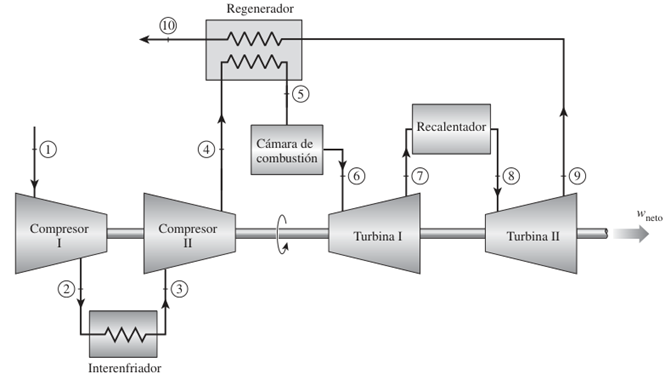
Como el GaAs es un semiconductor compuesto, hay comparticin entre los dos tomos diferentes. Cada tomo est rodeado por tomos del tipo complementario. Sigue habiendo comparticin de electrones similares en estructura a la de Ge y Si, pero ahora el tomo de As aporta cinco electrones y el tomo de Ga tres.

Aunque el enlace covalente produce un enlace ms fuerte entre los electrones de valencia y su tomo padre, an es posible que los electrones de valencia absorban suficiente energa cintica proveniente de causas externas para romper el enlace covalente y asumir el estado libre.
El trmino libre se aplica a cualquier electrn que se haya separado de la estructura entrelazada fija y es muy sensible a cualquier campo elctrico aplicado como el establecido por fuentes de voltaje o por cualquier diferencia de potencial. Las causas externas incluyen efectos como energa luminosa en forma de fotones y energa trmica (calor) del medio circundante. A temperatura ambiente hay alrededor de 1.5 x 1010 portadores libres en un 1 cm3 de material de silicio intrnseco, es decir, 15,000,000,000 (quince mil millones) de electrones en un espacio ms reducido que un pequeo cubo de azcar; una enorme cantidad
El trmino intrnseco se aplica a cualquier material semiconductor que haya sido cuidadosamente refinado para reducir el nmero de impurezas a un nivel muy bajo; en esencia, lo ms puro posible que se pueda fabricar utilizando tecnologa actual.
Portadores intrnsecos: Estos son electrones libres que existen en un material debido a causas internas. La cantidad de estos portadores vara entre los diferentes materiales. El germanio (Ge) tiene la mayor cantidad, seguido del silicio (Si) y el arseniuro de galio (GaAs) tiene la menor. La cantidad de portadores intrnsecos es importante, pero no es el nico factor que determina las propiedades de un material semiconductor.

Otro factor importante es la movilidad de los portadores relativa (n). La movilidad relativa se refiere a la facilidad con la que los electrones pueden moverse a travs del material. El arseniuro de galio (GaAs) tiene una movilidad relativa mucho mayor que el silicio (Si). Esto significa que los electrones en el GaAs pueden moverse ms rpido y libremente. La mayor movilidad en el GaAs permite que los dispositivos electrnicos hechos con este material sean ms rpidos y eficientes que los hechos con silicio. El germanio tambin tiene una movilidad relativamente alta, lo que lo hace til para aplicaciones de alta frecuencia, como en los dispositivos de radio.

Una importante e interesante diferencia entre semiconductores y conductores es su reaccin ante la aplicacin de calor. En el caso de los conductores, la resistencia se incrementa con un aumento de calor. Esto se debe a que el nmero de portadores presentes en un conductor no se incrementan de manera significativa con la temperatura, aunque su patrn de vibracin con respecto a un lugar relativamente fijo dificulta cada vez ms el flujo continuo de portadores a travs del material. Se dice que los materiales que reaccionan de esta manera tienen un coeficiente de temperatura positivo. Los materiales semiconductores, sin embargo, presentan un nivel incrementado de conductividad con la aplicacin de calor. Conforme se eleva la temperatura, un mayor nmero de electrones de valencia absorben suficiente energa trmica para romper el enlace covalente y as contribuir al nmero de portadores libres. Por consiguiente:
Los materiales semiconductores tienen un coeficiente de temperatura negativo.

Bandas de Energa
Dentro de la estructura atmica de cada tomo aislado hay niveles especficos de energa asociados con cada capa y electrn en rbita. Los niveles de energa asociados con cada capa son diferentes segn el elemento de que se trate. Sin embargo, en general:
Cuanto ms alejado est un electrn del ncleo, mayor es su estado de energa y cualquier electrn que haya abandonado a su tomo padre tiene un estado de energa mayor que todo electrn que permanezca en la estructura atmica.
Los electrones en un tomo aislado solo pueden ocupar niveles de energa especficos. Sin embargo, cuando los tomos se unen para formar un material slido, como un cristal, interactan entre s. Esta interaccin provoca que los niveles de energa de los electrones se expandan y formen bandas de energa.

En un semiconductor, como el silicio, los electrones de valencia (los ms externos) pueden ocupar una banda de energa llamada banda de valencia. Existe otra banda de energa, llamada banda de conduccin, donde los electrones son libres de moverse y conducir corriente elctrica. Entre estas dos bandas hay una regin de energa prohibida, llamada banda prohibida.
La energa necesaria para que un electrn salte de la banda de valencia a la banda de conduccin y se convierta en un portador libre vara segn el material. En el germanio, esta energa es menor que en el silicio, y en el arseniuro de galio es an mayor. Esta diferencia en la energa de la banda prohibida es lo que determina muchas de las propiedades elctricas de los semiconductores.

Un electrn en la banda de valencia de silicio debe absorber ms energa que uno en la banda de valencia de germanio para convertirse en portador libre. Asimismo, un electrn en la banda de valencia de arseniuro de galio debe absorber ms energa que uno en la de silicio o germanio para entrar a la banda de conduccin.
La brecha de energa tambin revela qu elementos son tiles en la construccin de dispositivos emisores de luz como diodos emisores de luz (LED, por sus siglas en ingls). Cuanto ms ancha es la brecha de energa, mayor es la posibilidad de que la energa se libere en forma de ondas luminosas visibles o invisibles (infrarrojas). En el caso de conductores, el traslape de las bandas de conduccin y valencia provoca esencialmente que toda la energa adicional absorbida por los electrones se disipe en forma de calor. Asimismo, en el caso de Ge y Si, como la brecha de energa es tan pequea, la mayora de los electrones que absorben suficiente energa para abandonar la banda de valencia terminan en la banda de conduccin y la energa se disipa en forma de calor. Sin embargo, en el caso de GaAs la brecha es suficientemente grande para producir radiacin luminosa significativa. En el caso de los LED el nivel de dopado y los materiales seleccionados determinan el color resultante.

Antes de dejar este tema, es importante subrayar la importancia de entender las unidades utilizadas para una cantidad. Las unidades de medicin son electrn volts (eV). La unidad de medicin es apropiada porque W (energa) = Q*V = (derivada de la ecuacin de definicin de voltaje: V = W/Q). Si se sustituye la carga de un electrn y una diferencia de potencial de un 1 volt, se produce un nivel de energa conocido como electrn volt.
MATERIALES EXTRNSECOS, DOPADO Y MATERIALES TIPO N Y TIPO P
Las caractersticas de un material semiconductor se pueden modificar
de manera significativa con la adicin de tomos de impureza especficos al material semiconductor relativamente puro. Estas impurezas, aunque slo se agregan en 1 parte en 10 millones, pueden alterar la estructura de las bandas lo suficiente para cambiar del todo las propiedades elctricas del material.
Un material semiconductor que ha sido sometido al proceso de dopado se conoce como material extrnseco.
Hay dos materiales extrnsecos de inmensurable importancia en la fabricacin de dispositivos semiconductores: materiales tipo n y tipo p.
Material TIPO N
Un material tipo n se crea introduciendo elementos de impureza que contienen cinco electrones de valencia (pentavelantes), como el antimonio, el arsnico y el fsforo.

Observe que, los cuatros enlaces covalentes del antimonio y silicio existen, sin embargo, hay un quinto electrn adicional debido al propio tomo de impureza, el cual no est asociado con ningn enlace covalente particular que se presentan. Este electrn restante, enlazado de manera poco firme a su tomo padre (antimonio), est en cierto modo libre para moverse dentro del material tipo n recin formado, puesto que el tomo de impureza insertado ha donado un electrn relativamente libre a la estructura.
Las impurezas difundidas con cinco electrones de valencia se conocen como tomos donadores.
Es importante tener en cuenta que aun cuando un gran nmero de portadores libres se ha establecido en el material tipo n, sigue siendo elctricamente neutro puesto que de manera ideal el nmero de protones de carga positiva en los ncleos sigue siendo igual al de los electrones de carga negativa libres y en rbita en la estructura.
Material TIPO P
El material tipo p se forma dopando un cristal de germanio o silicio puro con tomos de impureza que tienen tres electrones de valencia (trivalentes). Los elementos ms utilizados para este propsito son boro, galio e indio.
Las impurezas difundidas con tres electrones de valencia se llaman tomos aceptores.
Ahora el nmero de electrones es insuficiente para completar las bandas covalentes de la estructura recin formada. El vaco resultante se llama hueco y se denota con un pequeo crculo o un signo ms, para indicar la ausencia de una carga positiva. Por lo tanto, el vaco resultante aceptar con facilidad un electrn libre.
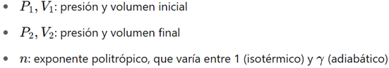
El material tipo p es elctricamente neutro por las mismas razones descritas para el material tipo n.
Portadores mayoritarios y minoritarios
En el estado intrnseco, el nmero de electrones libres en Ge o Si se debe slo a los electrones en la banda de valencia que adquirieron suficiente energa de fuentes trmicas o luminosas para romper la banda covalente o a las impurezas que no pudieron ser eliminadas. Los vacos que quedan en la estructura de enlace covalente representan una fuente muy limitada de huecos. En un material tipo n, el nmero de huecos no cambia significativamente con respecto a este nivel intrnseco. El resultado neto, por consiguiente, es que el nmero de electrones sobrepasa por mucho al de huecos. Por eso:
En un material tipo n el electrn se llama portador mayoritario y el hueco portador minoritario.
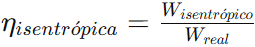
En un material tipo p, el hueco es el portador mayoritario y el electrn el minoritario.
2. Diodos.
2.1 Estructura y funcionamiento.
LOS SEMICONDUCTORES
Los semiconductores han revolucionado el mundo de la electrnica. Con ellos han aparecido los diodos, los transistores, los tiristores y los dems componentes electrnicos construidos gracias a los semiconductores que han sustituido a las vlvulas electrnicas. Por otro lado, con la aparicin de los circuitos integrados, que suplen la funcin de grandes cantidades de diodos, transistores, resistencias, condensadores y cualquier tipo de componente electrnico, se ha dado el gran paso hacia el futuro de la electrnica.
La ventaja que poseen los semiconductores es que son de reducido tamao, pequeo consumo y bajo precio.

DIODOS
El diodo es el mas simple de los dispositivos electrnicos no lineales, existen distintos tipos de diodos, por ejemplo: los Diodos de Unin (Semiconductor), Diodos Zener, el Diodo Schottky y otros.
El diodo semiconductor (tambin conocido como Diodo Rectificador), se crea uniendo un material tipo n a un material tipo p, nada ms que eso; slo la unin de un material con un portador mayoritario de electrones a uno con un portador mayoritario de huecos.
El diodo es el elemento semiconductor que solo permite la circulacin de la corriente en un sentido nico.
Estructura
En el momento en que los dos materiales se unen, los electrones y los huecos en la regin de la unin se combinan y provocan una carencia de portadores libres en la regin prxima a la unin.
Esta regin de iones positivos y negativos revelados se llama regin de empobrecimiento, debido a la disminucin de portadores libres en la regin.
Si se conectan cables conductores a los extremos de cada material, se produce un dispositivo de dos terminales. Se dispone entonces de tres opciones: sin polarizacin, polarizacin en directa y polarizacin en inversa. El trmino polarizacin se refiere a la aplicacin de un voltaje externo a travs de las dos terminales del dispositivo para extraer una respuesta.
Polarizacin en Inversa (VD < 0 V)
Si se aplica un potencial externo de V volts a travs de la unin p-n con la terminal positiva conectada al material tipo n y la negativa conectada al material tipo p, el nmero de iones positivos revelados en la regin de empobrecimiento del material tipo n se incrementar por la gran cantidad de electrones libres atrados por el potencial positivo del voltaje aplicado. Por las mismas razones, el nmero de iones negativos no revelados se incrementar en el material tipo p. El efecto neto, por consiguiente, es una mayor apertura de la regin de empobrecimiento, la cual crea una barrera demasiado grande para que los portadores mayoritarios la puedan superar, por lo que el flujo de portadores mayoritarios se reduce efectivamente a cero.
Sin embargo, el nmero de portadores minoritarios que entran a la regin de empobrecimiento no cambia, y se producen vectores de flujo de portadores minoritarios de la misma magnitud.
La corriente en condiciones de polarizacin en inversa se llama corriente de saturacin en inversa y est representada por Is.

La corriente de saturacin en inversa rara vez es de ms de algunos microamperes, excepto en el caso de dispositivos de alta potencia.
El trmino saturacin se deriva del hecho de que alcanza su nivel mximo con rapidez y que no cambia de manera significativa con los incrementos en el potencial de polarizacin en inversa.
Los fabricantes de diodos expresan el valor de la corriente inversa en sus hojas de especificaciones tcnicas. As, por ejemplo, la serie de diodos con la referencia 1N4001 a 1N4007 establece una corriente inversa de 10 μΑ cuando son polarizados inversamente.
Si se aumenta la tensin inversa, tambin lo hace la corriente, hasta que se llega a un valor Vz, llamado tensin de ruptura del diodo. En este momento aparece un efecto de avalancha y aumenta bruscamente la intensidad de corriente inversa, lo que provoca la destruccin del diodo por la excesiva disipacin de calor.
Para que esto no ocurra, es necesario disear las condiciones de trabajo del diodo con una tensin inversa siempre menor a su tensin de ruptura.
Los fabricantes de diodos especifican los valores de la tensin inversa pico en sus hojas de especificaciones tcnicas. As, por ejemplo, mientras el diodo con la referencia 1N4001 soporta una tensin mxima inversa de 50 V, el 1N4007 llega a soportar 1.000 V
Polarizacin en Directa (VD > 0 V)
La condicin de polarizacin en directa o encendido se establece aplicando el potencial positivo al material tipo p y el potencial negativo al tipo n.

La aplicacin de un potencial de polarizacin en directa VD presionar a los electrones en el material tipo n y a los huecos en el material tipo p para que se recombinen con los iones prximos al lmite y reducir el ancho de la regin de empobrecimiento.
Un electrn del material tipo p ahora "ve" una barrera reducida en la unin debido a la regin de empobrecimiento reducida y a una fuerte atraccin del potencial positivo aplicado al material tipo p. En cuanto se incrementa la magnitud de la polarizacin aplicada, el ancho de la regin de empobrecimiento continuar reducindose hasta que un flujo de electrones pueda atravesar la unin, lo que produce un crecimiento exponencial de la corriente. Se puede observar que la escala vertical est en miliamperes (aunque algunos diodos semiconductores tienen una escala vertical medida en amperes) y la escala horizontal en la regin de polarizacin en directa tiene un mximo de 1 V. Por consiguiente, en general el voltaje a travs de un diodo polarizado en directa ser menor de 1 V.
Analizando fsicamente el diodo (despreciando la regin Zener); por medio de la fsica del estado slido que las caractersticas generales de un diodo semiconductor se pueden definir mediante la siguiente ecuacin, conocida como ecuacin de Shockley, para las regiones de polarizacin en directa y en inversa:
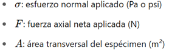
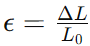
El voltaje VT en la ecuacin se llama voltaje trmico y est determinado por:

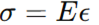
Tericamente, un diodo de silicio debera presentar caractersticas ideales. Sin embargo, en la prctica, los diodos comerciales se desvan de este comportamiento ideal debido a diversos factores. Entre estos factores destacan la resistencia interna del "cuerpo" del diodo y la resistencia externa de los contactos. Estas resistencias contribuyen a un voltaje adicional que provoca un desplazamiento en la curva caracterstica del diodo.
Es importante destacar que la direccin convencional de la corriente elctrica en la regin de voltaje positivo coincide con la direccin indicada por la flecha en el smbolo del diodo. Esta condicin se cumple siempre que el diodo est polarizado en directa.
Al examinar el comportamiento del diodo en condiciones de polarizacin inversa, se observa que la corriente de saturacin inversa es significativamente mayor que la predicha por la ecuacin de Shockley.
Esta discrepancia se atribuye a diversos efectos no considerados en dicha ecuacin, como la generacin de portadores minoritarios en la regin de deplecin y las corrientes de fuga superficiales.
Estos fenmenos son particularmente sensibles al rea de contacto en la unin del diodo.
Otro factor que influye en la magnitud de la corriente de saturacin inversa es el rea de contacto en la unin del diodo. Existe una relacin directa entre el tamao del rea de contacto y el valor de la corriente de saturacin inversa
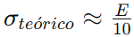
En resumen, la corriente de saturacin inversa real de un diodo comercial suele ser mucho mayor que el valor terico obtenido a partir de la ecuacin de Shockley. Sin embargo, es importante tener en cuenta que incluso pequeas diferencias en la corriente de saturacin inversa pueden tener un impacto significativo en el comportamiento del diodo en ciertas aplicaciones.
Regin Zener
Aun cuando la escala estuviera en dcimas de voltios en la regin negativa, existir un punto en el que la aplicacin de un voltaje negativo excesivo producir un cambio abrupto en las caractersticas. La corriente se incrementara muy rpidamente en una direccin opuesta a la de la regin de voltaje positivo. El potencial de polarizacin inversa que produce este cambio drstico en las caractersticas se denominaba potencial Zener (en honor a Clarence Melvin Zener.) y su smbolo es Vz.
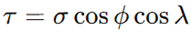
A medida que se incrementa el voltaje a travs del diodo en la regin de polarizacin en inversa, tambin se incrementar la velocidad de los portadores minoritarios responsables de la corriente de saturacin en inversa Is. Con el tiempo, su velocidad y energa cintica asociada sern suficientes para liberar ms portadores por colisiones con otras estructuras atmicas que de lo contrario seran estables. Es decir, se producir un proceso de ionizacin por medio del cual los electrones de valencia absorben suficiente energa para abandonar el tomo padre. Estos portadores adicionales pueden ayudar entonces al proceso de ionizacin al punto en que se establece una corriente de avalancha y determina la regin de ruptura de avalancha.
Se puede hacer que la regin de avalancha (VZ) se acerque al eje vertical incrementando los niveles de dopado en los materiales p y n. Sin embargo, conforme VZ se reduce a niveles muy bajos, por ejemplo:5 V.
Otro mecanismo, llamado ruptura Zener contribuir al cambio abrupto de la caracterstica. Esto sucede porque hay un fuerte campo elctrico en la regin de la unin que puede desbaratar las fuerzas de enlace dentro del tomo y generar portadores. Aun cuando el mecanismo de ruptura Zener es un contribuyente significativo slo a niveles bajos de VZ, este cambio abrupto de la caracterstica a cualquier nivel se llama regin Zener y los diodos que emplean esta parte nica de la caracterstica de una unin pn se llaman diodos Zener.
El mximo potencial de polarizacin en inversa que se puede aplicar antes de entrar a la regin Zener se llama voltaje inverso pico (PIV) o voltaje de reversa pico (PRV).
DIODO SCHOTTKY
Conocido como diodo de barrera Schottky, barrera superficial o portador caliente. Est formado por la unin de un metal tal como platino, molibdeno, cromo o tungsteno, con silicio de tipo n. Estos dispositivos tienen un almacenamiento de carga despreciable y se utilizan en aplicaciones de conmutacin de alta velocidad.
Un metal (platino), acta como material aceptador para los electrones cuando est unido a silicio n. As, cuando el material est conectado al silicio de tipo n, los electrones del silicio se difunden inicialmente en el metal, esta difusin hace que el material n se empobrezca de electrones cerca de la unin y por consiguiente que adquiera un potencial positivo.
Cuando esta tensin positiva llega a ser suficientemente grande, impide la posterior difusin de los electrones. Por otra parte, cuando es aplicada exteriormente una tensin positiva suficientemente grande entre los terminales del diodo, los electrones de la regin n estn sometidos a un potencial positivo en el lado del metal de la unin y aparece una circulacin de electrones.

Diodos Schottky:
a) Distribucin de potencial despus de la difusin inicial
b) Distribucin de potencial despus de aplicar una tensin positiva
c) Distribucin de potencial despus de aplicar una tensin negativa
d) Smbolo de circuito.
En un contacto rectificador circula una corriente despreciable hasta que V excede de una cierta tensin mnima V₁, que es la necesaria para alisar la curva de tensin. Un pequeo aumento de la tensin V por encima de V₁ produce una variacin muy grande de corriente. Cuando se invierte la tensin aplicada al diodo de modo que el material n se hace positivo con respecto al platino (o material p), la tensin en la cara n de la unin aumenta por encima del nivel indicado y no hay circulacin de corriente.
Cuando se establece un contacto hmico, no hay difusin inicial de electrones a travs de la unin, puesto que en los dos materiales la densidad y la energa de los electrones en ambas caras de la unin son las mismas.
Cuando el diodo Schottky funciona de modo directo, la corriente es debida a los electrones que se mueven desde el silicio de tipo n a travs del metal. Como los electrones se mueven relativamente libres a travs del metal, el tiempo de recombinacin t es muy pequeo, normalmente del orden de 10 ps. Esto es varios rdenes de magnitud menor que los correspondientes a la utilizacin de diodos de silicio pn.
El diodo tiene una caracterstica vi similar a la de un diodo ordinario de silicio pn excepto que la tensin umbral de conduccin del diodo es V ≈ 0.3 V.
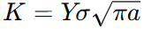
DIODO EMISOR DE LUZ (LED)
Haciendo combinaciones con ellos, pueden ser empleados para visualizar nmeros y letras en pequeos indicadores luminosos (displays), con los cuales se pueden presentar los resultados en equipos de medida, calculadoras, etc.
Como su nombre lo implica, el diodo emisor de luz es un diodo que emite luz visible o invisible (infrarroja) cuando se energiza. En cualquier unin pn polarizada en directa se da, dentro de la estructura y principalmente cerca de la unin, una recombinacin de huecos y electrones.

Esta recombinacin requiere que la energa procesada por los electrones libres se transforme en otro estado. En todas las uniones pn semiconductoras una parte de esta energa se libera en forma de calor y otra en forma de fotones.
Los diodos led se fabrican mediante la unin de dos cristales semiconductores pn, a los que se les ha contaminado de una forma especial. Cuando una unin de este tipo se polariza con una tensin directa, al igual que ocurra con los diodos convencionales, los electrones de valencia del cristal tipo N atraviesan la unin y se recombinan con los huecos del cristal tipo P. Dado que dichos electrones se trasladan de un nivel de energa ms alto a uno ms bajo, se produce una liberacin de energa, que en este tipo de diodos se manifiesta en forma de radiaciones electromagnticas dentro del espectro luminoso.
En diodos de Si y Ge el mayor porcentaje de la energa convertida durante la recombinacin en la unin se disipa en forma de calor dentro de la estructura y la luz emitida es insignificante.
Por esta razn, el silicio y el germanio no se utilizan en la construccin de dispositivos LED. Por otra parte:
Los diodos construidos de GaAs emiten luz en la zona infrarroja (invisible) durante el proceso de recombinacin en la unin pn.
Los diodos led se fabrican con elementos especiales, como arseniuro de galio (GaAs) y fsforo. Para conseguir modificar la longitud de onda de la radiacin de la onda luminosa y as conseguir diodos con emisiones de diferentes colores (roja, naranja, verde, amarilla, azul o infrarroja), se contaminan los cristales de una forma adecuada. As por ejemplo, los diodos luminiscentes fabricados con galio y fsforo (GaP) emiten luz roja cuando se les aade xido de cinc y emiten luz verde con la adicin de nitrgeno.
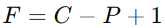
Al igual que los diferentes sonidos tienen espectros de frecuencia diferentes (en general los sonidos agudos tienen componentes de alta frecuencia y los sonidos bajos tienen varios componentes de baja frecuencia), lo mismo es cierto para las diferentes emisiones de luz.
El espectro de frecuencia de la luz infrarroja se extiende desde 100 THz (T = tera = 1012) hasta 400 THz, con el espectro de luz visible desde aproximadamente 400 hasta 750 THz.
En general, cuando hablamos de la respuesta de dispositivos electroluminiscentes, nos referimos a sus longitudes de onda y no a su frecuencia.
Las dos cantidades estn relacionadas por la siguiente ecuacin:
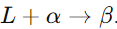
Aparte del color de los diodos luminiscentes, sus caractersticas ms relevantes son similares a las de los diodos convencionales:
Tensin directa (VF): es la cada de tensin que se produce entre los extremos del diodo led cuando por l fluye la corriente directa. Esta tensin suele ser del orden de 1,5 V a 2,2 V para la mayor parte de los modelos. Cuando se desconoce la tensin directa exacta, bastar con tomar como valor aproximado 2 V.
Corriente de excitacin directa (IF): es la corriente que debe circular por el diodo led para alcanzar la intensidad luminosa esperada. Para la mayora de los modelos, esta corriente est comprendida entre 10 mA y 50 mA.
Corriente inversa (IR): es la mxima corriente que puede fluir por el diodo luminiscente cuando a este se le aplica una tensin de polarizacin inversa. Este valor suele estar en torno a los 10 μΑ.
La disipacin de potencia es aquella parte de la potencia que el diodo luminiscente no convierte en luz y que acaba degradndose en calor, por lo que tiene que evacuarla al exterior. Por esta razn, los diodos led se conectan en serie con una resistencia, con el fin de limitar la corriente que fluye por ellos. Para calcular dicha resistencia, se aplica la ley de Ohm al circuito.

Una de las aplicaciones que se puede hacer con los diodos led es la fabricacin de indicadores numricos de siete segmentos (displays). Mediante siete diodos luminiscentes dispuestos en un arreglo, se pueden representar dgitos del 0 al 9. Para ello, se excitan simultneamente las combinaciones de diodos que correspondan en cada caso.
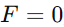
FOTODIODO
Este dispositivo es un diodo especialmente diseado para que sea sensible a las radiaciones luminosas que en l incidan, de tal forma que al aumentar estas, tambin lo haga la corriente inversa que fluya por el fotodiodo.
Una de las aplicaciones fundamentales de este dispositivo es como fotodetector, elemento capaz de transformar una magnitud luminosa en elctrica.
Este tipo de diodos presenta un aumento de portadores minoritarios cuando se aplica energa en forma de radiaciones luminosas. Si conectamos un fotodiodo con una tensin de polarizacin inversa, fluir una pequea corriente inversa.
Los fotodiodos se fabrican para que la luz incida en ellos, de manera que, al aumentar la intensidad de la radiacin luminosa, aumentan los portadores minoritarios y, por lo tanto, la corriente inversa. As, se establece una relacin entre la luz y la corriente.
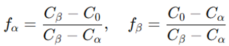
Al aumentar la intensidad de la radiacin luminosa (su unidad de medida es el lux), tambin lo hace la corriente inversa.

Una de las aplicaciones que se le da al fotodiodo es la combinacin con el LED, en la fabricacin de un optoacoplador. Estos dos elementos se integran en un solo elemento.
Con un optoacoplador se pueden aislar elctricamente dos circuitos entre los que hay que intercambiar una determinada seal. La seal de entrada se aplica al diodo led, con lo que este genera una intensidad luminosa que estar en funcin de la corriente entregada por la seal. Esta radiacin luminosa incide en el fotodiodo, el cual generar una corriente en la salida proporcional a la entregada a la entrada del optoacoplador. Con el uso de optoacopladores se eliminan todos los riesgos que pueden surgir al conectar circuitos que trabajan con seales de muy pequeas tensiones, con otros circuitos que lo hacen con tensiones elevadas. Por ejemplo, se utilizan para aislar la salida de un ordenador con circuitos exteriores que estn alimentados con tensiones peligrosas. Tambin se utilizan en electromedicina para aislar los circuitos de los electrodos que se han de aplicar al cuerpo humano y en otras muchas aplicaciones.
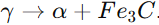
DIODO PIN
El diodo PIN es un diodo con una regin p+ y otra regin n+, ambas muy dopadas, separadas por una regin de material casi intrnseco. Se utiliza en frecuencias de microondas (ms de 1 GHz) porque tiene una impedancia muy alta en polarizacin inversa y muy baja en polarizacin directa, incluso a estas frecuencias. Adems, las tensiones de ruptura estn entre 100 y 1000 V.
Gracias a estas caractersticas, el diodo PIN se usa como interruptor o modulador de amplitud en frecuencias de microondas, ya que se comporta como un cortocircuito en sentido directo y como un circuito abierto en sentido inverso. Tambin puede conmutar corrientes y tensiones muy altas.
El diodo PIN se forma a partir de silicio tipo p de alta resistividad. La capa p de baja resistividad est formada por difusin de tomos de boro en un bloque de silicio del tipo p y la capa n⁺ muy delgada est formada difundiendo grandes cantidades de fsforo. La regin intrnseca (i) es realmente una regin p de alta resistividad y se le suele denominar regin π.
a) Oblea PIN: Esta parte de la figura muestra la estructura fsica del diodo PIN, que consiste en una oblea de semiconductor con tres capas:
Capa P+: Capa de semiconductor tipo P altamente dopada.
Capa I: Capa intrnseca (o ligeramente dopada) de semiconductor.
Capa N+: Capa de semiconductor tipo N altamente dopada.
b) Representacin pictrica: Se muestra una representacin simplificada del diodo con los smbolos de los electrones () y los huecos (o).
c) Distribucin de tensiones: Esta grfica muestra cmo se distribuye el voltaje a travs del diodo PIN cuando se aplica una polarizacin. Se puede observar la diferencia de potencial entre las capas P+ y N+, as como la regin donde se concentra la mayor parte del voltaje.
d) Representacin pictrica y distribucin de tensiones bajo polarizacin: Aqu se muestra cmo se comporta el diodo PIN bajo polarizacin, es decir, cuando se le aplica una tensin externa. Se ilustra cmo los electrones y los huecos se mueven a travs de la estructura y cmo se modifica la distribucin de tensiones en comparacin con la situacin sin polarizacin.
Cuando se aplica una polarizacin inversa al diodo, los electrones y huecos del material son barridos. Un aumento posterior de la tensin inversa incrementa las distribuciones de tensiones p-i e i-n. En el diodo PIN, la longitud de la regin de transicin L es aproximadamente igual a la longitud de la regin i y es aproximadamente independiente de la tensin inversa. Por lo tanto, a diferencia de los diodos PN o Schottky, el diodo PIN tiene una capacidad inversa que es aproximadamente constante, independientemente de la polarizacin. Una variacin tpica de la capacidad podra ser desde 0,15 hasta 0,14 pF en una variacin de la polarizacin inversa de, por ejemplo, 100 V. La variacin normal de la capacidad en funcin de la tensin de polarizacin est representada. Esto debe contrastarse con el resultado representado donde CRC + Co/(2V) 1/2. Por otra parte, en virtud de que L es igual a la longitud de la regin i, la longitud de la regin de transicin es aproximadamente constante y considerablemente mayor que las de otros diodos y, por tanto, la capacidad Cr que es proporcional a 1/L es significativamente menor que la de otros diodos, por lo que el diodo PIN es apropiado para aplicaciones de microondas. Los valores normales de C varan desde 0,1 hasta 4 pF en los diodos PIN, comercialmente asequibles.
Cuando el diodo est polarizado en sentido directo, los huecos del material p se difunden en la regin i, creando una capa p de baja resistividad. La corriente es debida al flujo de los electrones y de los huecos cuyas concentraciones son aproximadamente iguales.
En la regin i, la cada de tensin en la condicin de polarizacin directa es muy pequea. Adems, al igual que el diodo PN, cuando aumenta la corriente, tambin disminuye la resistencia. En consecuencia, el diodo PIN es un dispositivo con su resistencia o conductancia modulada. En una primera aproximacin, la resistencia en pequea seal es inversamente proporcional a la corriente con polarizacin directa, lo mismo que en el diodo PN.
Circuito Equivalente para Pequea Seal
El circuito equivalente para pequea seal del diodo PIN, vlido en frecuencias de microondas, se representa de manera sencilla por una capacidad CR en serie con la resistencia directa rd. Con tensiones directas, CR es aproximadamente infinita, mientras que en el modo de polarizacin inversa, rd es aproximadamente nula. La capacidad C es la capacidad parsita paralela que se produce al soldar el diodo a la cpsula, y L es la inductancia serie debida a los hilos de conexin desde el diodo hasta la cpsula.
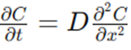
DIODO SHOCKLEY
El diodo Shockley es un diodo pnpn de cuatro capas con slo dos terminales externas, Las caractersticas del dispositivo son exactamente las mismas que para el SCR. Como las caractersticas lo indican, el dispositivo est en apagado (representacin de circuito abierto) hasta que se alcanza el voltaje de conduccin, momento en cual se desarrollan las condiciones de avalancha y el dispositivo se enciende (representacin de cortocircuito).
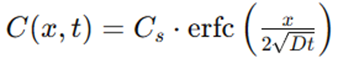
Una aplicacin comn del diodo Shockley, es donde se emplea como interruptor de disparo para un SCR. Cuando el circuito se energiza, el voltaje a travs del capacitor comenzar a cargarse tendiendo al voltaje de alimentacin. Con el tiempo, el voltaje a travs del capacitor ser lo bastante alto para encender primero el diodo Schockley y luego el SCR.

DIODO DE POTENCIA
Hay muchos diodos especficamente diseados para manejar demandas de alta potencia y alta temperatura de algunas aplicaciones. El uso ms frecuente de los diodos de potencia ocurre en el proceso de rectificacin, en el cual las seales de ca (de valor promedio cero) se convierten en seales de valor promedio o de nivel de cd. Los diodos normalmente se conocen como rectificadores.
La mayora de los diodos de potencia se construyen con silicio por sus altos valores nominales de corriente, temperatura y PIV. Las altas demandas de corriente requieren que el rea de la unin sea ms grande para asegurarse de que haya una baja resistencia en directa en el diodo. Si la resistencia en directa fuera demasiado grande, las prdidas I2R seran excesivas. La capacidad de corriente de los diodos de potencia se puede incrementar colocando dos o ms en paralelo y el valor nominal del PIV se puede incrementar conectndolos en serie.
Las altas temperaturas producidas por la intensa corriente requieren, en muchos casos, que se utilicen disipadores de calor para abatir el calor del elemento. Si no emplean disipadores de calor, se insertan diodos de clavija directamente en el chasis, los que a su vez actan como disipadores de calor.
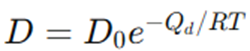
DIODO TNEL
Leo Esaki present el diodo tnel en 1958. Sus caractersticas son diferentes de las de cualquier diodo hasta ahora analizado en que tiene una regin de resistencia negativa. En esta regin, un incremento del voltaje terminal reduce la corriente en el diodo.

El diodo tnel se fabrica dopando los materiales semiconductores que formarn la unin pn a un nivel de 100 a varios miles de veces el de un diodo semiconductor tpico. Esto reduce en gran medida la regin de empobrecimiento, a una magnitud de 10-6 cm, o por lo general a aproximadamente 1/100 del ancho de esta regin en el caso de un diodo semiconductor. Esta delgada regin de empobrecimiento, a travs de la cual muchos portadores pueden penetrar en lugar de que intenten superarla, a bajos potenciales de polarizacin en directa es la responsable del pico que aparece en la curva.
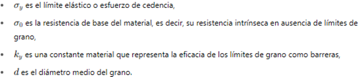
Esta regin de empobrecimiento reducida hace que los portadores la penetren a velocidades que exceden por mucho las disponibles con diodos convencionales. El diodo tnel se puede utilizar por consiguiente en aplicaciones de alta velocidad, como en computadoras, donde se desean tiempos de conmutacin de nanosegundos o picosegundos.
Los materiales semiconductores ms frecuentemente utilizados en la fabricacin de diodos tnel son el germanio y el arseniuro de galio. La relacin IP/IV es muy importante en aplicaciones de computadora. Para el germanio, en general es de 10:1 y para el arseniuro de galio es de cerca de 20:1.
Los valores de los parmetros del circuito equivalente de diodo tnel en la regin de resistencia negativa, son tpicos para unidades comerciales actuales. El inductor LS se debe sobre todo a los conductores terminales. El resistor RS se debe a los conductores, el contacto hmico en la unin conductor-semiconductor, y a los materiales semiconductores mismos. La capacitancia C es la capacitancia de difusin en la unin y R es la resistencia negativa de la regin.
La disponibilidad de una regin de resistencia negativa se puede aprovechar en el diseo de osciladores, redes de conmutacin, generadores de pulsos y amplificadores.
DIODO VARICAP
Los diodos varactores [conocidos tambin como varicap, VVC (capacitancia variable dependiente del voltaje) o de sintonizacin] son capacitores semiconductores dependientes del voltaje. Su modo de operacin depende de la capacitancia que haya en la unin pn cuando el elemento se polariza en inversa. En condiciones de polarizacin en inversa, hay una regin de carga no recuperada a ambos lados de la unin que juntos conforman la regin de empobrecimiento y definen el ancho de empobrecimiento Wd. La capacitancia de transicin CT establecida por las cargas no recuperadas aisladas es:
Donde ε es la permitividad de los materiales semiconductores, A es el rea de la unin pn y Wd es el ancho de empobrecimiento.
A medida que se incrementa el potencial de polarizacin en inversa, el ancho de la regin de empobrecimiento se incrementa, lo cual a su vez reduce la capacitancia de transicin.
Su circuito equivalente en la regin de polarizacin en inversa posee una resistencia de magnitud muy grande por lo general de 1 MW o ms mientras que, RS, la resistencia geomtrica del diodo es muy pequea. La magnitud de CT variar desde alrededor de 2 pF hasta 100 pF segn el varicap considerado.
Para asegurarse de que RR sea lo ms grande (para una corriente de fuga mnima) posible, en diodos varicap normalmente se utiliza silicio. El hecho de que el dispositivo se emplear a frecuencias muy altas requiere que incluyamos la inductancia LS aun cuando est medida en nanohenries.
Efectos de la Temperatura
La temperatura puede tener un marcado efecto en las caractersticas de un diodo semiconductor.
En la regin de polarizacin en directa las caractersticas de un diodo de silicio se desplazan a la izquierda a razn de 2.5 mV por grado centgrado de incremento de temperatura.
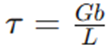
Un incremento desde la temperatura ambiente (20C) hasta 100 C (el punto de ebullicin del agua) produce una cada de 80(2.5 mV ) = 200 mV o 0.2 V, lo cual es significativo en una grfica graduada en dcimas de volts. Una reduccin de la temperatura tiene el efecto inverso.
En la regin de polarizacin en inversa la corriente de saturacin en inversa de un diodo de silicio se duplica por cada 10C de aumento de la temperatura.
2.2 Modelo real e ideal.
PROPIEDADES NO LINEALES DIODO IDEAL
2.3 Aplicaciones: rectificadores, multiplicadores de voltaje, recortadores, fijadores y compuertas con diodos.
2.4 Simulacin de circuitos de aplicacin con diodos mediante herramientas de cmputo.
3. Filtrado y regulacin.
3.1 Filtros para fuentes de poder.
CONSIDERACIONES GENERALES
Se requiere un circuito rectificador para convertir una seal de valor promedio cero en una de valor promedio diferente de cero. La salida resultante desde un rectificador es un voltaje de cd pulsante y an no adecuado como reemplazo de una batera. Tal voltaje podra utilizarse en, por ejemplo, un cargador de bateras, donde el voltaje de cd promedio es lo bastante grande como para proporcionar una corriente de carga a la batera.
Para voltajes de alimentacin de CD, como los que se utilizan en un radio, un sistema estereofnico, una computadora, etc., el voltaje de CD pulsante de un rectificador no es suficientemente bueno. Se requiere un filtro para proporcionar un voltaje de cd ms constante.
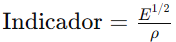
Voltaje de Rizo
En el estudio del filtrado, es esencial establecer mtodos rigurosos para evaluar su desempeo. Esta evaluacin nos permite comparar la eficacia de diferentes diseos y determinar su idoneidad para aplicaciones especficas.
Un factor clave a considerar es la calidad de la seal de salida filtrada. Idealmente, un filtro perfecto producira una seal de CC pura, libre de cualquier componente de CA. Sin embargo, en la prctica, la salida de un filtro contendr una combinacin de CC y CA, donde la componente de CA representa el rizo.
La presencia de rizo es inevitable en circuitos de filtrado prcticos. No obstante, la magnitud del rizo en relacin con el nivel de CC es un indicador crtico de la calidad del filtro. Un filtro eficaz minimizar el rizo, produciendo una seal de salida que se aproxime lo ms posible a una CC pura.
En consecuencia, cuanto menor sea la variacin de CA (rizo) en comparacin con el nivel de CC, mejor ser el rendimiento del circuito de filtrado. Este principio fundamental gua el diseo y la evaluacin de filtros en diversas aplicaciones de ingeniera.
Considere la medicin del voltaje de salida de un circuito de filtrado que utiliza un voltmetro de cd y un voltmetro de ca (rms). El voltmetro de cd leer slo el nivel promedio o de cd del voltaje de salida. El medidor de ca (rms) leer slo el valor rms del componente de ca del voltaje de salida (suponiendo que la seal de ca est acoplada mediante un capacitor para bloquear el nivel de cd).
El rizo se define como:
Regulacin de voltaje
Otro factor de importancia en una fuente de alimentacin es la cantidad de cambios del voltaje de salida de cd a lo largo de la operacin de un circuito. El voltaje provisto a la salida en la condicin sin carga (sin que demande corriente de la fuente) se reduce cuando se extrae corriente de carga de la fuente (en condicin de carga). La cantidad que el voltaje de cd cambia entre las condiciones sin carga y con carga la describe un factor llamado regulacin de voltaje.
La regulacin de voltaje se define como:

O dicha la ecuacin es:
FILTRO DE CAPACITOR
Para conseguir los efectos del filtrado de este sistema se conecta un condensador de gran capacidad (normalmente electroltico) en paralelo con la salida del rectificador.
El Detector de Crestas
El detector de cresta (o detector de envolvente) proporciona una salida de CC comparable al valor de cresta de la tensin de entrada y, por lo tanto, se puede utilizar como fuente de alimentacin de CC. Este circuito tambin se usa en los receptores.
El funcionamiento del circuito detector de cresta se explica ms fcilmente suponiendo que la tensin de entrada sea V₁ = Vim sen wot y que la resistencia de carga RL es infinita. Entonces, durante el primer cuarto de ciclo de la onda de entrada, el diodo acta como un cortocircuito y, por tanto, el condensador seguir a Vi. Cuando wot = π/2, el condensador se habr cargado hasta vL = Vim. Cuando Vi disminuye, la tensin en el condensador no puede decrecer porque con RL infinita, la corriente de descarga del condensador debe circular a travs del diodo en sentido inverso. Como la corriente no puede circular a travs del diodo en este sentido, el condensador no se puede descargar. La tensin de carga vL permanece, por tanto, en el valor de cresta Vim hasta que ste no aumente.
La tensin del rizado se debe a la sucesivas cargas y descargas del condensador, la cual ser la diferencia de las tensiones ms alta y ms baja, Es posible establecer una relacin matemtica entre la tensin de rizado y la capacidad del condensador mediante la expresin:
FILTRO RC
Es posible reducir an ms la cantidad de rizo a travs de un capacitor de filtrado si utiliza una seccin de filtro RC adicional. El propsito de la seccin RC agregada es que deje pasar la mayor parte del componente de cd al mismo tiempo que atena (reduce) lo ms posible del componente de ca.

Como ambos capacitores actan como circuitos abiertos en operacin de cd, el voltaje de cd de salida resultante es:
La operacin del circuito de filtrado se analiza superponiendo los componentes de cd y ca de la seal.
Debido a la accin del divisor de voltaje de la impedancia de ca del capacitor y el resistor de carga, el componente de ca del voltaje resultante a travs de la carga es:

Para un rectificador de onda completa con un rizo de ca a 120 Hz, la impedancia de un capacitor se calcula con:
donde C est en microfarads y XC en kiloohms.
3.2 El diodo zener como regulador de voltaje: estructura funcionamiento y aplicaciones.
ESTRUCTURA
DIODO ZENER
Los diodos Zener, o diodos de avalancha, son diodos semiconductores de unin pn cuyas propiedades estn controladas en las zonas de polarizacin inversa que los hacen muy tiles en numerosas aplicaciones, especialmente como dispositivo de referencia de tensin.

La caracterstica directa es similar a la de los diodos semiconductores normales. La caracterstica inversa, sin embargo, presenta una regin en la cual la tensin es casi independiente de la corriente por el diodo. La tensin Zener de cualquier diodo est controlada por la cantidad de dopado aplicada en el proceso de fabricacin. Los valores normales varan entre 2 y 200 V con capacidades de disipacin de potencia de hasta 100 W. En la mayora de las aplicaciones, los diodos Zener trabajan en la regin de polarizacin inversa.
Los fabricantes especifican los diodos Zener por su tensin Zener y la mxima disipacin de potencia. La corriente que circula por el diodo con su tensin nominal Zener es lo que se llama corriente de prueba Izr. Normalmente la mxima potencia nominal del diodo es cuatro veces mayor que la disipacin de potencia a la tensin Zener, es decir:

Si se observa atentamente la curva inversa de un diodo Zener, se podr apreciar que no es del todo vertical. Esto indica que, al aumentar la corriente inversa, surge un pequeo aumento de la tensin. Este fenmeno aparece provocado por una pequea resistencia dinmica, denominada resistencia Zener (Rz).

REGULADOR DE VOLTAJE
Una de las aplicaciones ms extendidas del diodo Zener es la de estabilizador de tensin para fuentes de alimentacin, Esto se consigue aprovechando la propiedad que poseen de conducir con tensiones de polarizacin inversa, manteniendo la tensin entre sus extremos prcticamente constantes.
La resistencia de polarizacin Zener tiene como misin mantener la tensin de polarizacin Zener entre unos valores aceptables valindose para ello de la cada de tensin que se produce en ella cuando la corriente que atraviesa tiende a modificarse.
FUNCIONAMIENTO Y APLICACIONES
3.3 Reguladores integrados: fijos y variables.
REGULADORES INTEGRADOS FIJOS
REGULADORES INTEGRADOS VARIABLES
3.4 Fuentes de poder.
TRANSFORMADOR
RECTIFICACIN
FILTRADO
REGULACIN
CARGA
3.5 Diseo y pruebas de circuitos reguladores de voltaje mediante herramientas de cmputo.
4. Transistores.
4.1 Estructura y funcionamiento del transistor TBJ: corte-saturacin, amplificacin y acoplamiento.
4.2 Configuraciones bsicas: emisor comn, colector comn y base comn.
4.3 Transistor de efecto de campo (FET y MOSFET).
4.4 Circuitos de aplicacin.
4.5 Simulacin de circuitos de aplicacin basados en transistores con herramientas de cmputo.
5. Lgica combinacional.
5.1 Sistemas de numeracin: representacin de los sistemas de numeracin, cambio de base y operaciones aritmticas.
5.2 Compuertas lgicas.
5.3 lgebra de Boole.
5.4 Reduccin de funciones booleanas.
5.5 Bloques combinacionales: codificador, decodificador, multiplexor y circuitos aritmticos.
5.6 Simulacin de circuitos lgicos combinacionales con herramientas de cmputo.
6. Lgica secuencial.
6.1 Flip-flops: latch, R-S, J-K, D y T.
6.2 Contadores.
6.3 Registros de corrimiento.
6.4 Mquinas de estado.
6.5 Dispositivos lgicos programables (PLDs).
6.6 Diseo y simulacin de sistemas lgicos secuenciales con herramientas de cmputo.
7. Dispositivos pticos y de potencia.
7.1 Fotodiodos y fototransistores.
7.2 Optoacopadores.
7.3 Tiristores (SCR, DIAC, TRIAC).
7.4 Relevadores electromecnicos y de estado slido.
7.5 Simulacin de circuitos de aplicacin con dispositivos pticos y de potencia mediante herramientas de cmputo.
8. Amplificadores operacionales.
8.1 Estructura y funcionamiento.
8.2 Configuraciones bsicas.
8.3 Circuitos de aplicacin.
8.4 Introduccin a los convertidores analgico/digital y digital/analgico.
8.5 Simulacin de circuitos de aplicacin con amplificadores operacionales con herramientas de cmputo.
9. Bibliografa
Alcalde San Miguel, P. - Electrnica aplicada.
BOYLESTAD, R., NASHELSKY, L - Electrnica Teora de Circuitos y dispositivos electrnicos.
CHUTE, G., M., Chute, R., D. - Electronics in Industry.
MALONEY, T. J. - Modern Industrial Electronics.
Neamen, Donald A. - Microelectronics: circuit analysis and design.
Tokheim, Roger L. - ELECTRNICA DIGITAL. PRINCIPIOS Y APLICACIONES.
SCHILLING, D. - Circuitos electrnicos: discretos e integrados.
Schuler, Charles A. Electronics - Electronics principles & applications.
MODELADO DE SISTEMAS FSICOS (0508)
Objetivo(s) del curso:
El alumno comprender las metodologas de modelado de sistemas fsicos y las aplicar para el modelado matemtico de los sistemas fsicos en ingeniera; adems, analizar sistemas fsicos lineales invariantes con el tiempo y de parmetros concentrados.
1. Modelado de sistemas fsicos.
1.1 Concepto de modelado.
MODELADO
El concepto de Modelado es fundamental en la dinmica de sistemas, involucra la construccin de representaciones matemticas que describen el comportamiento dinmico de un sistema.
Este proceso, tambin conocido como elaboracin de modelos, es crucial para predecir cmo un sistema responder a diferentes condiciones y para disearlo de manera eficiente antes de su implementacin fsica.
PROPSITO DEL MODELADO
Un modelo matemtico es una descripcin formal que utiliza ecuaciones matemticas para representar las caractersticas dinmicas de un sistema fsico.
Estas representaciones son esenciales para prever el funcionamiento del sistema bajo diferentes entradas y condiciones, permitiendo a los ingenieros analizar y optimizar su diseo antes de su construccin fsica.
En particular, en sistemas dinmicos, las ecuaciones diferenciales suelen ser el medio preferido para describir las relaciones entre las variables del sistema debido a su capacidad para capturar los cambios en el tiempo.
ENFOQUES DEL MODELADO
Existen dos enfoques principales para elaborar modelos matemticos: el modelado analtico y el experimental. En el modelado analtico, se aplican leyes fsicas fundamentales, como las leyes de Newton, para derivar ecuaciones que describen el sistema.
Por otro lado, en casos donde las leyes fsicas no estn completamente definidas o son demasiado complejas, se recurre al modelado experimental. Este ltimo implica someter el sistema a entradas conocidas y observar sus salidas, permitiendo deducir relaciones matemticas basadas en los datos empricos obtenidos.
EQUILIBRIO ENTRE SIMPLICIDAD Y EXACTITUD
Al construir un modelo, es crucial encontrar un balance entre la simplicidad y la precisin. Un modelo demasiado complejo puede ser difcil de manejar, mientras que uno demasiado simple puede no capturar adecuadamente las dinmicas esenciales del sistema.
Por lo tanto, se prioriza la identificacin de las variables y relaciones fsicas crticas para el propsito del anlisis, descartando aquellas de impacto mnimo. Este enfoque no solo simplifica los clculos, sino que tambin permite obtener resultados confiables siempre que las simplificaciones sean vlidas dentro del contexto del estudio.
IMPORTANCIA DE LAS APROXIMACIONES Y SUPOSICIONES
Todo modelo matemtico incorpora cierto grado de aproximacin debido a las limitaciones inherentes en la medicin y en la definicin de los parmetros del sistema. Estas aproximaciones determinan el nivel de validez del modelo, y su efectividad solo puede evaluarse mediante comparaciones experimentales. En caso de discrepancias significativas entre las predicciones del modelo y los resultados experimentales, el modelo debe ajustarse y reevaluarse hasta lograr una concordancia satisfactoria.
PROCEDIMIENTO GENERAL PARA EL MODELADO
El proceso tpico para construir un modelo matemtico comienza con la elaboracin de un diagrama esquemtico del sistema y la definicin de las variables relevantes. Luego, se aplican leyes fsicas para formular ecuaciones que describan el comportamiento de los componentes individuales. Estas ecuaciones se integran considerando las interconexiones del sistema, resultando en un modelo matemtico global. Este modelo se valida mediante comparaciones experimentales, ajustndose segn sea necesario para mejorar su precisin.
MODELOS LINEALES Y NO LINEALES
Dependiendo de la naturaleza del sistema, los modelos pueden ser lineales o no lineales. Los modelos lineales, que son ms manejables matemticamente, se utilizan ampliamente cuando las relaciones dentro del sistema se aproximan bien por ecuaciones lineales. Sin embargo, muchos sistemas en la prctica son inherentemente no lineales, y su modelado requiere tcnicas avanzadas como la linealizacin alrededor de condiciones operativas especficas.
1.2 Ecuaciones constitutivas de los elementos y leyes de equilibrio para sistemas elctricos, mecnicos, hidrulicos y trmicos.
1.3 Representacin de sistemas mediante ecuaciones diferenciales.
1.4 Representacin de sistema mediante funcin de transferencia.
1.5 Obtencin de la respuesta del sistema en el tiempo mediante transformada inversa de Laplace.
1.6 Concepto de estado.
1.7 Representacin de sistemas mediante variables de estado.
1.8 Obtencin de ecuaciones de estado a partir de la funcin de transferencia.
1.9 Modelado de sistemas hbridos.
1.10 Modelado de sistemas utilizando ecuaciones de Lagrange.
Un tomo es la mnima cantidad de materia que experimenta cambios qumicos. Un tomo se define como la unidad bsica de un elemento, el cual puede intervenir en una combinacin qumica.
2. Caractersticas dinmicas de los sistemas fsicos.
2.1 Sistemas de primer orden: respuesta impulso, respuesta escaln, constante de tiempo.
2.2 Sistemas de segundo orden: respuesta impulso, respuesta escaln, polos dominantes.
2.3 Estabilidad de los sistemas dinmicos: definicin de estabilidad BIBO, criterio de estabilidad por ubicacin de polos, criterio de estabilidad de Routh Hurwitz.
3. Anlisis de sistemas en tiempo continuo y discreto mediante variables de estado.
3.1 Solucin genrica de las ecuaciones de estado en tiempo contino.
3.2 La matriz exponencial.
3.3 Equivalentes en tiempo discreto: transformada Z, criterio de estabilidad en el plano Z, tiempo de muestreo y mtodos de equivalencias discretas.
3.4 La ecuacin de estado en tiempo discreto. Matriz de transicin de estados discreta.
4. Respuesta en frecuencia de sistemas en tiempo continuo.
4.1 Curvas de magnitud y fase (diagramas de Bode) a partir de la funcin de transferencia.
4.2 Interpretacin y aplicacin de los diagramas de Bode.
5. Bibliografa.
LAYTON, R. A. - Principles of Analytical System Dynamics.
NISE, Norman - Sistemas de control para ingeniera.
OGATA, Katsuhiko - Discrete-Time Control Systems.
OGATA, Katsuhiko - Ingeniera de control moderna.
OGATA, Katsuhiko - System Dynamics.
WELLSTEAD, P.e. - Introduction to Physical System Modeling.
INGENIERA DE MANUFACTURA (0507)
Objetivo(s) del curso:
El alumno identificar la maquinaria, equipos y mtodos de manufactura para la transformacin de materiales en productos tiles.
1. Procesos de conformado por deformacin plstica.
1.1 Importancia de la manufactura desde un punto de vista tcnico y econmico.
PUNTOS DE VISTA
Punto de Vista Tcnico
Desde el punto de vista tcnico, la manufactura es la aplicacin sistemtica del conocimiento cientfico y tecnolgico para transformar materiales en productos tiles.
Este proceso permite materializar ideas y diseos en objetos reales que satisfacen las necesidades humanas, desde componentes simples hasta sistemas complejos como automviles, computadoras o satlites.
Tcnicamente, la manufactura implica el uso de una amplia gama de conocimientos multidisciplinarios, incluyendo mecnica, electrnica, fsica de materiales, automatizacin y control, lo que la convierte en un campo esencial en el desarrollo de la ingeniera y la tecnologa.
Punto de Vista Econmico
En cuanto al mbito econmico, la manufactura es un pilar clave en la creacin de riqueza y desarrollo de los pases. Las industrias manufactureras generan una fraccin significativa del producto interno bruto (PIB) de las naciones industrializadas, como en el caso de Estados Unidos, donde representan cerca del 20% del PIB.
Adems, histricamente, aquellas civilizaciones que han dominado las tcnicas de manufactura han logrado mayor prosperidad, superioridad militar y desarrollo econmico.
La manufactura agrega valor a los recursos naturales mediante la transformacin de materias primas en productos de mayor utilidad y precio, lo que estimula la economa, genera empleos y eleva el nivel de vida de la poblacin
1.2 Relaciones esfuerzo-deformacin.
ESFUERZO-DEFORMACIN
La relacin esfuerzo-deformacin es fundamental para entender el comportamiento mecnico de los materiales bajo carga. Esta relacin se representa grficamente mediante curvas que describen cmo un material responde al esfuerzo aplicado, y se divide comnmente en dos regiones: elstica y plstica.
En la regin elstica, el material se deforma de manera reversible, es decir, recupera su forma original al retirar la carga. Esta etapa est regida por la ley de Hooke (σ = Eε), donde E es el mdulo de elasticidad.
Una vez superado el punto de fluencia, el material entra en la regin plstica, donde la deformacin es permanente.
En esta fase, el esfuerzo y la deformacin se relacionan mediante la curva de fluencia, que puede expresarse como σ = Kεⁿ, donde K es el coeficiente de resistencia y n el exponente de endurecimiento por deformacin.
La curva esfuerzo-deformacin proporciona informacin crtica para el diseo y el control de los procesos de conformado, ya que permite predecir la cantidad de esfuerzo necesario para obtener la deformacin deseada sin causar falla del material.
Adems, a travs de las curvas verdaderas de esfuerzo-deformacin, se logra una descripcin ms precisa del comportamiento del material, especialmente cuando se producen grandes deformaciones.
1.3 Criterios de fluencia.
CRITERIOS DE FLUENCIA
Los criterios de fluencia son reglas que permiten determinar el momento exacto en que un material comienza a deformarse plsticamente bajo un estado de esfuerzos complejos.
Son esenciales para la ingeniera de materiales, ya que ayudan a predecir el comportamiento de los materiales bajo cargas multidimensionales. Existen varios criterios propuestos, pero los ms comunes en la prctica son el criterio de Tresca y el criterio de von Mises.
El primero establece que la fluencia inicia cuando la diferencia mxima entre los esfuerzos principales alcanza un valor crtico igual al esfuerzo de fluencia uniaxial.
El segundo criterio, ms refinado y ampliamente aceptado, plantea que la fluencia ocurre cuando la energa de distorsin alcanza un umbral especfico.
Ambos criterios son aplicables a materiales dctiles y resultan tiles para analizar componentes sometidos a esfuerzos combinados, como en casos de torsin, flexin o carga biaxial. Comprender y aplicar correctamente estos criterios permite disear piezas ms seguras, eficientes y con una mayor vida til.
1.4 Teora clsica de la plasticidad.
PLASTICIDAD
La teora clsica de la plasticidad proporciona el marco matemtico y fsico necesario para modelar la deformacin plstica de los materiales. Se basa en la suposicin de que los materiales tienen un lmite elstico a partir del cual comienzan a fluir plsticamente sin un incremento adicional significativo en el esfuerzo.
La formulacin de esta teora incorpora conceptos clave como la funcin de fluencia, que define la superficie en el espacio de esfuerzos donde ocurre el inicio de la plasticidad, y la regla de fluencia, que describe la direccin del incremento plstico en funcin del gradiente de la funcin de fluencia.
Adems, se incluye la ley de endurecimiento, que explica cmo evoluciona la superficie de fluencia a medida que el material se deforma ms. En conjunto, estas herramientas permiten simular con precisin cmo se comportan los materiales bajo cargas variables, cclicas o multiaxiales, lo cual es esencial para el anlisis en ingeniera estructural, diseo de componentes y desarrollo de nuevos procesos de manufactura.
2. Aplicacin del modelado a los procesos de conformado mecnico.
2.1 Anlisis de procesos de conformado por deformacin.
2.2 Procesos de forja y laminacin.
2.3 Procesos de extrusin.
2.4 Procesos de conformado de lmina.
2.5 Procesos de estirado.
3. Procesos de manufactura por fusin y colada.
3.1 Mtodos de fundicin.
3.2 Los metales en estado lquido.
3.3 Moldes y corazones.
3.4 Llenado del molde y solidificacin.
3.5 Defectos en las piezas fundidas: porosidad, grietas y fisuras, microcavidades.
3.6 Propiedades mecnicas de las piezas fundidas.
3.7 Fundamentos para obtener piezas fundidas sanas.
3.8 Diseo del sistema de colada y alimentacin.
3.9 Parmetros que determinan la precisin de las piezas fundidas.
4. Anlisis bsico de los procesos de maquinado.
4.1 Clasificacin general de las mquinas herramientas.
4.2 Equipo de tornado, fresado, taladro, brochado, rectificado, cepillado, entre otros.
4.3 Definir la maquinabilidad y describir sus principales factores..
5. Teora de corte ortogonal.
5.1 Introduccin al estudio terico del corte.
5.2 Descripcin de las fuerzas de corte en el maquinado.
5.3 Descripcin de la potencia til en el maquinado..
6. Operaciones de torneado y fresado.
6.1 Anlisis del proceso tecnolgico para piezas maquinadas.
6.2 Normalizacin y smbolos para el maquinado.
6.3 Descripcin de la hoja de ruta de trabajo.
6.4 Ejercicios de aplicacin para las diferentes mquinas herramientas.
6.5 Anlisis comparativo de la mecanizacin y la automatizacin.
7. Programacin de mquinas herramientas de control numrico.
7.1 Descripcin de la mquina herramienta de CNC enumerando ventajas y desventajas.
7.2 Descripcin de sus sistemas de control.
7.3 Descripcin de los puntos neutros y de referencia.
7.4 Descripcin de los sistemas de direccin y de acotacin.
7.5 Descripcin de los elementos bsicos de la programacin.
7.6 Ejercicios de aplicacin para las mquinas herramientas de CNC.
8. Bibliografa.
GROOVER, M. P. - Fundamentos de manufactura moderna: materiales, procesos y sistemas
MECANISMOS (1659)
Objetivo(s) del curso:
El alumno debe de formar antecedentes bsicos para el diseo mecnico y mecatrnico, anlisis y prueba de sistemas planos acoplados desde el punto de vista cinemtico y dinmico, cuando se realiza la prctica de la ingeniera.
1. Cinemtica del cuerpo rgido plano y generalidades sobre mecanismos.
1.1 Caracterizacin de los mecanismos ms comnmente empleados.
 MECANISMOS
Y MQUINAS
MECANISMOS
Y MQUINAS
Un Mecanismo es un dispositivo que transforma el movimiento en un patrn deseable, y por lo general desarrolla fuerzas muy bajas y transmite poca potencia. Se define un mecanismo como un medio de transmisin, control o restriccin del movimiento relativo. Una mquina, en general, contiene mecanismos que estn diseados para producir y transmitir fuerzas significativas. Algunos ejemplos comunes de mecanismos pueden ser un sacapuntas, un obturador de cmara fotogrfica, un reloj anlogo, una silla plegable, una lmpara de escritorio ajustable y un paraguas.
Una definicin til de trabajo de un mecanismo es un sistema de elementos acomodados para transmitir movimiento de una forma predeterminada. sta puede ser convertida en una definicin de una mquina si se le agregan las palabras y energa despus de la palabra movimiento.
CONCEPTOS FUNDAMENTALES DE CINEMTICA Y CINTICA
La cinemtica se centra en el estudio del movimiento sin considerar las fuerzas implicadas, mientras que la cintica analiza las fuerzas que actan sobre sistemas en movimiento. Estos dos conceptos son interdependientes y forman la base para disear y analizar mecanismos. En el diseo de ingeniera, se comienza generalmente por determinar los movimientos cinemticos deseados y luego se analizan las fuerzas cinticas relacionadas. Este enfoque permite definir las posiciones, velocidades y aceleraciones, fundamentales para calcular las fuerzas dinmicas que actan en los sistemas mecnicos.
TIPOS COMUNES DE MECANISMOS
Entre los mecanismos ms utilizados se encuentran:
Eslabonamientos: Diseados para convertir movimiento rotacional en lineal o viceversa. Ejemplos incluyen sistemas de direccin en automviles y limpiaparabrisas.
Levas: Mecanismos que transfieren movimiento mediante perfiles especficos para controlar sistemas como vlvulas de motor.
Engranajes: Utilizados para transmisin de potencia con relaciones de velocidad y torque precisas. Estos mecanismos se encuentran en aplicaciones como bicicletas, donde una transmisin de cadena multiplica el torque, y automviles, donde complejos sistemas de eslabonamientos y engranajes operan en conjunto para garantizar el movimiento eficiente.
AVANCES TECNOLGICOS Y NUEVAS APLICACIONES
Los avances en materiales y tcnicas de manufactura han introducido mecanismos innovadores, como los sistemas microelectromecnicos (MEMS). Estos dispositivos miniaturizados, fabricados a partir de silicio, presentan configuraciones geomtricas precisas y encuentran aplicaciones en industrias como la tecnologa mdica y electrnica. Por otro lado, los mecanismos flexibles, que eliminan holguras en juntas y reducen el mantenimiento, destacan en aplicaciones especficas aunque presentan desafos de diseo debido a sus grandes deformaciones.
APLICACIONES PRCTICAS
La configuracin cinemtica inicial es esencial para el diseo de cualquier mquina o dispositivo mecnico. En dispositivos mviles, como motores y transmisiones, las fuerzas dinmicas generadas durante el funcionamiento deben ser cuidadosamente calculadas para evitar fallos estructurales. Estas fuerzas estn directamente relacionadas con las aceleraciones derivadas de los movimientos cinemticos, lo que resalta la importancia de integrar ambos aspectos en el diseo.
SNTESIS Y ANLISIS DE MECANISMOS
El anlisis de mecanismos abarca tanto la sntesis, que implica el diseo de movimientos especficos, como el anlisis de sus fuerzas y aceleraciones resultantes. Estas actividades son apoyadas por herramientas computacionales que permiten simular y optimizar configuraciones. Mtodos grficos y algebraicos son utilizados para disear mecanismos como eslabonamientos y sistemas de engranajes, asegurando precisin en sus funciones.
1.2 Descripcin del movimiento plano por medio de matrices y nmeros complejos.
1.3 Posicin, velocidad y aceleracin de los puntos de un cuerpo rgido en el plano.
1.4 Teoremas relativos al movimiento de cuerpos rgidos..
2. Anlisis de mecanismos con pares inferiores.
2.1 Grado de libertad de una cadena cinemtica, frmula de Grbler.
2.2 Clasificacin de los pares cinemticos: Inferiores y superiores.
2.3 Anlisis entrada-salida. Ecuacin de Freudenstein.
2.4 Anlisis del movimiento de los puntos de la barra acopladora.
2.5 Movilidad de los mecanismos.
3. Sntesis de mecanismos con pares inferiores.
3.1 Sntesis y su clasificacin.
3.2 Sntesis de mecanismos para generacin de funcin.
3.3 Sntesis de conduccin de cuerpo rgido.
3.4 Aplicaciones de las trayectorias de los puntos de la barra acopladora al diseo de mecanismos con seis eslabones.
3.5 Mecanismos cognados y sus aplicaciones, ngulo de transmisin.
4. Anlisis y sntesis de mecanismos con pares superiores.
4.1 Anlisis del mecanismo leva-seguidor de punta y de carretilla.
4.2 Anlisis del mecanismo leva-seguidor de cara plana.
4.3 Sntesis del mecanismo leva-seguidor de punta y de carretilla.
4.4 Sntesis del mecanismo leva-seguidor de cara plana.
5. Trenes de engranes.
5.1 Clasificacin de los engranes.
5.2 Acoplamiento de los dientes de dos engranes. La involuta.
5.3 Determinacin del perfil de un diente de involuta.
5.4 Trenes de engranes simples y compuestos.
5.5 Anlisis de trenes planetarios, por medio de la tabla y frmula.
5.6 Aplicaciones.
6. Dinmica plana.
6.1 Fuerzas y momentos en el plano.
6.2 Momentos de inercia y teoremas.
6.3 Fuerzas de inercia en mecanismos planos.
7. Bibliografa.
NORTON, R. L. - Diseo de maquinaria.
NORTON, R. L. - Design of Machinery: An introduction to the Synthesis and Analysis of Mechanism and Machines.
TEMAS SELECTOS DE PROGRAMACIN I: DESARROLLO DE VIDEOJUEGOS (1964)
Objetivo(s) del curso:
El alumno valorar los conocimientos correspondientes al rea de programacin, que son considerados de actualidad y necesarios para satisfacer los requerimientos de los sectores de servicios y productivo.
1. Introduccin.
1.1 Objetivo del curso.
1.2 Antecedentes acadmicos necesarios.
1.3 Desarrollo del curso.
1.4 Programa de la asignatura.
1.5 Evaluacin.
2. Depender de los temas propuestos por el profesor.
2.1 Depende de los temas a tratar.
3. Bibliografa.
LUIS RUEDAS - Unity y C# Desarrollo de videojuegos.
SPTIMO SEMESTRE
CIRCUITOS DIGITALES (1996)
Objetivo(s) del curso:
El alumno aplicar dispositivos de baja, media y alta escala de integracin, as como diferentes metodologas y herramientas para el diseo de sistemas digitales.
1. Introduccin a los circuitos digitales.
1.1 Compuertas TTL, DTL, RTL y CMOS. Voltaje de los estados lgicos (VIH, VIL, VOH y VOL). Concepto de fanout, conexin entre compuertas TTL y CMOS.
SISTEMAS ELECTRONICOS DIGITALES
Los Circuitos Digitales son los cerebros de nuestros dispositivos electrnicos. Su funcionamiento se basa en la combinacin de compuertas lgicas y su relacin con las diferentes familias digitales, como TTL, DTL, RTL y CMOS, presentan caractersticas esenciales para su aplicacin en sistemas digitales.
FAMILIAS LOGICAS
Lgica TTL (Transistor-Transistor Logic)
La tecnologa TTL es una evolucin de la lgica DTL (Diodo-Transistor Logic), diseada para optimizar el desempeo en sistemas digitales. Se destaca por su robustez y amplia adopcin. Los parmetros de desempeo incluyen disipacin de potencia y retardo de propagacin, elementos cruciales para aplicaciones de alta velocidad. Por ejemplo, una compuerta NAND TTL tpica opera con VOH=2.4 V, VOL=0.4 V, VIH=2 V y VIL=0.8 V. Estas caractersticas aseguran una tolerancia al ruido suficiente para la operacin en entornos industriales ruidosos, tiene Velocidades de Propagacin de 1.5 ns y 33 ns, dependiendo de la subfamilia (TTL estndar, TTL de alta velocidad, etc), su nivel de funcionamiento de voltaje tpico es 5V.
Lgica DTL (Diode-Transistor Logic)
La lgica DTL fue la precursora directa de TTL. Consiste en compuertas NAND bsicas que emplean diodos en las entradas para realizar una operacin lgica AND y un transistor para invertir la seal de salida. Aunque esta tecnologa ha sido reemplazada casi por completo por TTL debido a sus limitaciones en velocidad y eficiencia energtica, es til para comprender las bases de las mejoras introducidas por TTL.
Es la tecnologa de lgica digital que utiliza diodos para realizar las funciones de entrada y un transistor para la funcin de salida, posee Velocidades de Propagacin de aproximadamente 30 ns.
La disipacin de potencia de una compuerta DTL es de aproximadamente 12 mW y el retardo de propagacin promedia 30 ns. El margen de ruido es de aproximadamente 1 V.
Lgica RTL (Resistor-Transistor Logic)
RTL y DTL slo tienen importancia histrica, fue la primera familia comercial que se us ampliamente. El circuito bsico de la familia de lgica digital RTL es la compuerta NOR, cada entrada est asociada a un resistor y un transistor. Los colectores de los transistores estn conectados en la salida. Los niveles de voltaje para el circuito son 0.2 V para el nivel bajo y de 1 a 3.6 V para el nivel alto.
La lgica RTL es la familia lgica ms bsica y utiliza resistores para las entradas combinados con un transistor para amplificar y procesar seales. A pesar de su simplicidad, su abanico de salida es limitado debido a su alta disipacin de potencia y retardo de propagacin, factores que la relegaron a aplicaciones histricas.
Lgica CMOS (Complementary Metal-Oxide-Semiconductor)
La familia CMOS sobresale por su bajo consumo de energa, especialmente en estados estticos, y su capacidad de integracin en diseos de alta densidad. Una compuerta CMOS tpica puede operar en un rango de voltaje de alimentacin de 3 a 18 V con una disipacin de potencia extremadamente baja, de alrededor de 0.01 mW en estado esttico. Adems, las series avanzadas como 74HC y 74HCT son compatibles elctricamente con TTL, facilitando la conexin entre ambas tecnologas sin necesidad de adaptadores adicionales.
Los circuitos MOS complementario aprovechan el hecho de que es posible fabricar dispositivos tanto de canal n como de canal p en el mismo sustrato. Los circuitos CMOS constan de ambos tipos de dispositivos MOS interconectados para formar funciones lgicas. El circuito bsico es el inversor, que consiste en un transistor de canal p y un transistor de canal n. La terminal de fuente del dispositivo de canal p est en Vdd, y la terminal de fuente del dispositivo de canal n est en tierra. El valor de Vdd podra ser cualquiera entre 3 V y 18 V. Los dos niveles de voltaje son 0 V para el nivel bajo y Vdd para el nivel alto (por lo regular 3.3V o 5V).
 ST
(Schottky Transistor)
ST
(Schottky Transistor)
El diodo Schottky se forma con la unin de un metal y un semiconductor, en contraste con los diodos convencionales, que se forman con la unin de un semiconductor tipo p y uno tipo n. El voltaje en un diodo Schottky conductor es de slo 0.4 V, en vez de los 0.7 V de un diodo convencional. La presencia de un diodo Schottky entre la base y el colector impide al transistor entrar en saturacin. El transistor resultante se llama transistor Schottky. El uso de transistores Schottky en un TTL reduce el retardo de propagacin sin que aumente la disipacin de potencia.
Su Velocidad de Propagacin esta entre 3 ns y 12 ns dependiendo de la subfamilia (Schottky estndar, Schottky de baja potencia, etc.)
VOLTAJE DE LOS ESTADOS LGICOS
Los voltajes lgicos son fundamentales para garantizar la operacin confiable de los circuitos digitales. En una compuerta NAND TTL estndar, los niveles de voltaje se definen como:
VIH (Voltage Input High): Voltaje mnimo de entrada que es interpretado como un nivel lgico alto.
VIL (Voltage Input Low): Voltaje mximo de entrada que es interpretado como un nivel lgico bajo.
VOL (Voltage Output Low): Voltaje mximo de salida en un nivel lgico bajo.
VOH (Voltage Output High): Voltaje mnimo de salida en un nivel lgico alto.
Vcc (Voltage at the Collector): Voltaje de alimentacin para circuitos bipolares.
Vdd (Voltage Drain): Voltaje de alimentacin para circuitos MOS.
Vss (Voltage Source): Referencia a tierra o voltaje negativo en circuitos MOS.
Vpp (Programming Voltage): Voltaje de programacin, generalmente utilizado en memoria flash o EEPROM.
El margen de ruido, que representa la tolerancia del circuito a seales indeseables, es de 0.4 V tanto para estados altos como bajos. Este margen se calcula como la diferencia entre los niveles operativos y los lmites tolerables para evitar errores durante la transicin de estados.
PULL-UP Y PULL-DOWN
PULL-UP: Un resistor conectado entre la entrada y el voltaje de alimentacin positivo (Vcc), asegurando que la entrada se mantenga en un nivel alto cuando no est activamente conducida.

PULL-DOWN: Un resistor conectado entre la entrada y tierra (GND), asegurando que la entrada se mantenga en un nivel bajo cuando no est activamente conducida.

FAN-IN, FAN-OUT Y CONEXIN ENTRE TTL Y CMOS
Fan-in: Nmero de entradas a una puerta lgica que puede manejar un circuito.
Fan-out: Nmero de puertas de entrada que una salida de puerta lgica puede manejar sin degradar el rendimiento del circuito
El "fan-out" o abanico de salida se refiere al nmero mximo de compuertas que una salida puede alimentar sin comprometer su desempeo. Para una compuerta TTL estndar, el abanico de salida tpico es de 10, lo que permite conectar hasta 10 entradas estndar sin afectar la funcionalidad. En CMOS, el abanico de salida puede ser significativamente mayor, alcanzando valores de hasta 30 a frecuencias de operacin de 1 MHz, aunque disminuye con el aumento de la frecuencia.
La compatibilidad entre TTL y CMOS se facilita mediante series como la 74HCT, que son elctricamente compatibles con TTL. Esto elimina la necesidad de circuitos de interfaz adicionales, permitiendo una integracin directa y eficiente entre dispositivos de ambas familias.
1.2 Diagramas lgicos y diagramas de conexiones, implementacin de funciones con compuertas NAND, NOR, multiplexores y decodificadores.
1.3 Circuitos secuenciales: modelo Mealy y modelo Moore, diagramas de estado, registros (ES/SS, EP/SS, ES/SP, EP/SP, registro universal), memorias (tipos de memorias, direccionamiento, expansin del tamao de palabra y tamao de la memoria, particin de memoria).
1.4 PLDs, implementacin de funciones booleanas, implementacin de circuitos secuencias con funciones de estado, el PLD como mquina de estado (sncrona y asncrona).
2. Mquinas de estado algortmico (cartas ASM).
2.1 Definicin de una carta ASM, componentes de una carta ASM, proceso de diseo, representacin de estructuras while y for.
2.2 Implementacin de cartas ASM con memorias y registros.
2.3 Implementacin de cartas ASM con PLDs.
2.4 Diseo auxiliado con multiplexores, decodificadores, contadores y registros.
3. Microprogramacin y diseo de microprocesadores.
3.1 Direccionamiento por trayectoria, direccionamiento entrada-estado, direccionamiento implcito, direccionamiento en formato variable.
3.2 Lenguaje de trasferencia de registros y microinstrucciones.
3.3 Instrucciones y ciclo de fetch, cdigos de instruccin.
3.4 La unidad de procesamiento (ALU, bus de datos, bus de instruccin, registro de instruccin, contador de programa, el registro de status, stack pointer).
4. Programacin de microcontroladores.
4.1 Introduccin (diferencia entre un microprocesador y un microcontrolador), arquitecturas y perifricos, herramientas de desarrollo.
4.2 Estructura del lenguaje ensamblador e instrucciones del microcontrolador.
4.3 Interrupciones (definicin, el Stack Pointer, vector de interrupcin, manejo de interrupciones).
4.4 El timer (interrupcin en tiempo real, contador de eventos externos, salida de comparacin).
4.5 Modulacin de ancho de pulso (PWM), programacin y aplicaciones.
4.6 El convertidor analgico digital (arquitectura, configuracin y aplicaciones).
4.7 Configuracin serial asncrona (definicin, configuracin y aplicacin).
4.8 Configuracin serial sncrona (definicin, configuracin y aplicacin).
4.9 Lenguaje de alto nivel.
4.10 Combinacin de lenguaje de alto nivel y lenguaje ensamblador.
5. Bibliografa
FLETCHER, William - An Engineering Approach to Digital Design.
MORRIS, Mano - Diseo Digital.
SISTEMAS ELECTRNICOS LINEALES (1973)
Objetivo(s) del curso:
El alumno disear sistemas electrnicos lineales para el procesamiento y acondicionamiento de seales analgicas simples y compuestas y su aplicacin en sistemas mecatrnicos.
1. Introduccin.
1.1 Introduccin a los sistemas electrnicos lineales.
SISTEMAS ELECTRNICOS LINEALES
Los Sistemas Electrnicos Lineales utilizan componentes como amplificadores operacionales para manipular seales analgicas de manera predecible y precisa. Estos sistemas encuentran aplicaciones en una amplia variedad de campos, desde instrumentacin hasta comunicaciones y control de procesos.
Los amplificadores operacionales son circuitos integrados altamente verstiles que han evolucionado para adaptarse a diferentes aplicaciones, desde control de procesos hasta sistemas de prueba y medicin. Se caracterizan por su alta ganancia y capacidad para ser usados en configuraciones especficas mediante componentes externos.
George Philbrick es una de las personas a quienes se atribuye la invencin y difusin de los amplificadores operacionales. Trabaj primero en Huntington Engineering Labs. y luego en su propia compaa Philbrick Associates. Intervino en el diseo de un amplificador operacional con un solo tubo de vaco y lo introdujo al mercado en 1948. Esos primeros amplificadores y las versiones posteriores mejoradas estaban destinadas fundamentalmente a emplearse en las computadoras analgicas. Por aquella poca, la palabra "operacional" en estos dispositivos significaba operaciones matemticas. Los primeros amplificadores operacionales servan para construir circuitos capaces de sumar, restar, multiplicar e incluso resolver ecuaciones diferenciales.
1.2 El amplificador operacional: caractersticas ideales contra reales, especificaciones del fabricante, compensacin de desajustes y compensacin en frecuencia, configuraciones bsicas, sntesis de controladores elementales.
AMPLIFICADOR OPERACIONAL DE PROPOSITO GENEral
Cuando se inicia el aprendizaje de cmo utilizar un amplificador operacional, no conviene presentar al principiante muchsimos tipos de amplificadores y pedirle que haga una seleccin justificada. Por esta razn, la introduccin comienza con un amplificador operacional confiable y barato que "perdona" la mayora de los errores que se cometen en el cableado, no toma en cuenta la capacitancia parsita y no se quema fcilmente. Nos referimos al amplificador operacional 741. Tambin se utilizan los amplificadores CA3140 y TL081 totalmente compatibles con el 741 para aplicaciones de alta frecuencia.
Los amplificadores operacionales (op-amps) son componentes fundamentales en la electrnica analgica, diseados para amplificar la diferencia de voltaje entre dos entradas, denominadas entrada inversora (-) y entrada no inversora (+). El dispositivo tiene tres pines principales: dos entradas y una salida. En su forma ideal, el op-amp tiene una ganancia infinita, una impedancia de entrada infinita (es decir, no toma corriente de la fuente) y una impedancia de salida cero, lo que le permite entregar corriente sin prdida de voltaje.
El smbolo del amplificador operacional que se da es un tringulo que apunta en la direccin del flujo de la seal. Este componente tiene un nmero de identificacin de parte (NIP) colocado dentro del smbolo del tringulo.
Todos los amplificadores operacionales poseen por lo mininos cinco terminales:
1. la terminal de fuente de poder positiva Vcc o +V, en la pata 7
2. la terminal de fuente de alimentacin negativa VEE o -V, en la pata 4
3. la terminal de salida, en la pata 6
4. la terminal de entrada inversora (-) en la pata 2
5. la terminal de entrada no inversora (+) en la pata 3
Algunos amplificadores operacionales de propsito general cuentan con ms terminales especializadas.
La introduccin de amplificadores operacionales integrados a la electrnica revolucion el diseo de circuitos, permitiendo configuraciones flexibles con solo unos pocos componentes externos. Se destacan por su capacidad para operar en la regin lineal, donde la salida es proporcional a la entrada.
ESPECIFICACIONES DE LOS FABRICANTES
Encapsulado
El amplificador operacional se fabrica en un diminuto chip de silicio y se encapsula en una caja adecuada. Alambres finos conectan el chip con terminales externas que salen de la cpsula de metal, plstico o cermica.
Los tres encapsulados ms comunes de amplificadores operacionales son las cajas metlicas: (a) los encapsulados dobles en lnea, de 8 y 14 terminales en (b) y (c). Respecto a los circuitos integrados de gran densidad, se muestra en (d), un encapsulado con tecnologa de montaje de superficie.
Los encapsulados de circuitos integrados estn fabricados con metal, plstico o cermica, y pueden incluir entre 3 y 12 terminales. El chip de silicio est unido a una placa metlica en el fondo del encapsulado para facilitar la disipacin de calor. La lengeta del encapsulado identifica una terminal especfica, y las terminales estn numeradas en sentido contrario a las manecillas del reloj cuando se observa desde arriba.
Los encapsulados doble en lnea (DIP) son comunes y pueden tener 14 u 8 patas. Generalmente estn hechos de plstico o cermica, y presentan un punto o muesca que identifica la pata 1. Las terminales tambin estn numeradas en sentido contrario a las manecillas del reloj.
En los circuitos integrados ms complejos, que contienen amplificadores operacionales y otros componentes, es posible interconectar varias pastillas grandes en una sola cpsula. Para simplificar la fabricacin y el ensamblaje, las lengetas sustituyen a las terminales tradicionales. Este diseo se conoce como tecnologa de montaje de superficie (SMT), que ofrece mayor densidad de componentes y mejor respuesta en frecuencia para encapsulados de tamao reducido.
Entre los tipos de encapsulados disponibles para SMT se incluyen:
1. Encapsulados de plstico (PLCC): Son conocidos como "Plastic lead chip Carriers".
2. Encapsulados de tamao pequeo (SOIC): Su nombre proviene de "Small outline integrated circuits".
3. Encapsulados cermicos (LCCC): Tambin llamados "Leadless ceramic chip Carriers ".
Identificacin y especificacin de un amplificador operacional
Cada tipo de amplificador operacional tiene un cdigo de identificacin de letra y nmero. Este cdigo responde cuatro preguntas:
1. Qu tipo de amplificador es?
2. Quin lo fabrica?
3. De qu calidad es?
4. Qu clase de encapsulado contiene al chip del amplificador operacional?
No todos los fundantes utilizan el mismo cdigo, pues la mayora se sirve de un cdigo de identificacin que consta de cuatro partes escritas en el siguiente orden:
(1) prefijo de letras; (2) nmero del circuito, (3) sufijo de letras y (4) cdigo de especificacin militar.
PREFIJO DE LETRAS. El cdigo de prefijo de letras por lo general consiste en dos letras que identifican al fabricante. En los siguientes ejemplos se dan algunos de los cdigos
Nmero del circuito. El nmero del circuito se compone de tres a siete nmeros y letras que identifican el tipo de amplificador operacional y su intervalo de temperatura. Por ejemplo:
Los tres cdigos de intervalo de temperatura son:
1. C: comercial, O a 70C
2. I: industrial, -25 a 85C
3. M: militar, -55 a 125C
Sufijo de letras. El sufijo de una y dos letras identifica el tipo de encapsulado que contiene al chip del amplificador operacional. Se necesitan conocer el tipo de encapsulado para obtener las conexiones correctas de los pines de la hoja de especificaciones. A continuacin se dan los tres cdigos de sufijos ms comunes de los encapsulados.
Cdigo de especificacin militar. Se emplea exclusivamente cuando la pieza se destina a aplicaciones que requieren gran confiabilidad.
FUENTE DE PODER Y CARACTERSTICAS IDEALES VS. REALES DE LOS AMPLIFICADORES OPERACIONALES
Fuente de poder
Las fuentes de alimentacin de los amplificadores operacionales de propsito general son bipolares. Las que se venden en el mercado suelen generar 15 V. Se da el nombre de comn de las fuentes de alimentacin al punto comn de ambas fuentes de + 15 V y - 15 V que se muestra con el smbolo de tierra por dos motivos. Primero, todas las mediciones de voltaje se efectan respecto a ese punto. Segundo, el comn de la fuente de alimentacin suele conectarse al tercer conductor del cable de corriente, que conecta con tierra (por lo general tomada de un tubo de agua en el stano), al chasis en que est contenida la fuente.

Caractersticas ideales
Ganancia de tensin infinita: En la teora, los amplificadores operacionales deberan amplificar cualquier diferencia de voltaje en sus entradas hasta un nivel infinito.
Resistencia de entrada infinita: Esto implica que no debera fluir corriente hacia las entradas del amplificador.
Impedancia de salida cero: Permite suministrar cualquier corriente requerida por la carga sin afectar el voltaje de salida.
Temperatura: la seal de salida no se ve afectada por cambios de temperatura.
Ancho de banda infinito: Garantiza una respuesta uniforme a todas las frecuencias de la seal.
Rechazo total del modo comn: Diferencias iguales en ambas entradas no afectan la salida.
Caractersticas reales
En un amplificador operacional real, las caractersticas ideales se aproximan bastante. Para conocerlas con detalles, te recomendamos consultar las hojas de especificaciones tcnicas que nos facilitan los fabricantes:
Ganancia de tensin en lazo abierto: Indica la ganancia del amplificador sin el uso de realimentacin. Esta ganancia suele variar con la temperatura ambiente y con la frecuencia. Para el AO 741C la ganancia suele estar en torno a 200.000.
Impedancia de entrada: El valor de la impedancia de entrada de un AO es muy elevada, as por ejemplo para el 741C tenemos una impedancia de unos 2 MΩ. Esta impedancia tiende a crecer con la frecuencia, por lo que los fabricantes nos facilitan unas grficas para consultar esta dependencia.
Impedancia de salida: Este valor suele ser muy bajo.
Ancho de banda: El ancho de banda disminuye al aumentar la ganancia de tensin. As por ejemplo, para el AO 741C el ancho de banda para una ganancia igual a la unidad (0 dB) es de 1 MHz, mientras que para una ganancia de 10.000 (80 dB) se reduce hasta los 100 kHz.
Rechazo en modo comn CMRR: Esta caracterstica tpica de los amplificadores diferenciales mide la capacidad del amplificador de rechazar las seales de modo comn que aparecen en la entrada. El AO 741C posee un CMRR de 90 dB, lo que nos indica que el amplificador posee una ganancia 31.625 veces superior para las seales diferenciales que para las de modo comn.
Tensin offset de entrada: A poco desequilibrio que exista en el amplificador diferencial del AO, este presentar una muy dbil tensin de salida en ausencia de tensin de entrada. La tensin de offset de entrada es la tensin que hay que aplicar a la entrada para eliminar dicha tensin de salida y hacer que sea cero.
La mayora de los AO comerciales llevan incluidos un par de terminales para conectar un circuito de correccin de offset. Hoy en da existen AO comerciales que corrigen automticamente este efecto.
Corriente offset de entrada: Es la diferencia de corrientes de entrada cuando la tensin de salida es cero. Al igual que la tensin de offset, se produce por los desequilibrios del amplificador diferencial. Para el AO 741C esta corriente es de 20 nA.
Corriente de polarizacin media de entrada: Es la corriente de pequea polarizacin que necesita el amplificador diferencial para su correcto funcionamiento. En el AO 741C, esta corriente est en menos de 80 nA. El uso de transistores FET en esta etapa amplificadora reduce sensiblemente estos valores.
Corriente de salida en cortocircuito: Es la corriente mxima que puede proporcionar el AO. Para el 741C esta corriente es de 25 mA.
Tensiones de alimentacin: Son las tensiones con las que se alimenta al amplificador. Para el AO 741C estas tensiones son de 15 V.
Otras caractersticas:
Tensin diferencial de entrada: 30 V.
Tensin de entrada: 15 V.
Potencia disipada: 500 mW.
Rango de temperaturas de funcionamiento: 0C a 70C.
COMPENSACIN DE DESAJUSTES Y FRECUENCIA
Compensacin de desajustes
Para minimizar los efectos del offset y las corrientes de polarizacin, se emplean resistencias de compensacin en las entradas. Esto permite equilibrar las diferencias en las caractersticas internas del amplificador.
La mayora de los amplificadores operacionales en circuito integrado disponen de una forma de compensar el desequilibrio de voltaje. Esto en general se realiza conectando un potencimetro externo a puntas de conexin designadas en el encapsulado del circuito integrado (a), en el caso de un amplificador operacional 741(b). Las dos terminales estn marcadas compensacin o nulificacin del desequilibrio. Sin entrada, el potencimetro simplemente se ajusta hasta que el voltaje de salida es 0 (c).
Compensacin en frecuencia
Los amplificadores operacionales con compensacin interna de frecuencia son muy estables con respecto a las frecuencias de la seal. Esto significa que no se vuelven inestables de forma espontnea ni oscilan de manera impredecible cuando se les aplica una seal. Sin embargo, esta estabilidad se logra a costa de ciertas limitaciones en su desempeo: tienen un ancho de banda limitado para seales pequeas, una velocidad de respuesta lenta y un ancho de banda reducido para altas potencias. Por lo tanto, estos amplificadores son ideales para aplicaciones de audio, pero no son adecuados para operar a frecuencias ms altas.
Es fundamental para evitar oscilaciones y garantizar estabilidad. Los fabricantes suelen incluir capacitancias internas o recomiendan el uso de capacitores externos en configuraciones especficas para mejorar el desempeo en aplicaciones dinmicas.
Para lograr una mayor flexibilidad en el diseo de circuitos, los fabricantes producen amplificadores operacionales con terminales de compensacin de frecuencia.
Estas terminales permiten al usuario ajustar la estabilidad y el ancho de banda del amplificador segn las necesidades especficas de la aplicacin. Esto se logra conectando componentes externos, como capacitores y resistencias, a estas terminales. Por esta razn, este tipo de amplificadores operacionales se clasifican como de compensacin externa de frecuencia.
La respuesta en frecuencia del amplificador operacional 101 puede ajustarse conectando un solo capacitor a sus terminales especficos. Al modificar el valor de este capacitor, se puede controlar el ancho de banda del amplificador. Por ejemplo, al utilizar un capacitor de 3 pF, el amplificador 101 tiene un ancho de banda de 10 MHz para seales pequeas. Si aumentamos el valor del capacitor a 30 pF, el ancho de banda se reduce a 1 MHz.
Esto significa que podemos ajustar el amplificador 101 de propsito general para que tenga el mismo ancho de banda que otro amplificador, como el 741, simplemente cambiando el valor del capacitor externo.
Cuando se utiliza el amplificador 101 en un circuito, el ancho de banda til depender del valor del capacitor de compensacin que se haya seleccionado. Por ejemplo, si configuramos el amplificador para una ganancia de 100 y utilizamos un capacitor de 30 pF, el ancho de banda ser de 10 kHz. Si reducimos el capacitor a 3 pF, el ancho de banda aumentar de banda en pequea seal aumenta a 100 kHz1 El ancho de banda a plena potencia tambin aumenta, desde 6 a 60 kHz.
CONFIGURACIONES BSICAS DE AMPLIFICADORES OPERACIONALES
Amplificador No Inversor
Ofrece ganancia sin inversin de fase, ideal para aplicaciones donde la preservacin de la polaridad es crtica.
En la configuracin no inversora, el amplificador operacional proporciona una ganancia positiva a la seal de entrada. Esta ganancia se puede ajustar utilizando resistencias en un lazo de retroalimentacin. La seal de entrada se aplica a la terminal no inversora, mientras que la terminal inversora recibe la seal de realimentacin desde la salida a travs de un divisor resistivo. Esto permite amplificar seales sin invertir su fase.
La ganancia del amplificador no inversor est dada por 𝐴𝑣 = 1 + 𝑅𝑓/ 𝑅𝑔, donde 𝑅𝑓 es la resistencia de realimentacin y 𝑅𝑔 es la resistencia conectada a tierra desde la terminal inversora. Este tipo de amplificador es ideal para aplicaciones donde se requiere amplificar seales sin alterar su fase, y su alta impedancia de entrada lo hace adecuado para trabajar con fuentes de seal de alta impedancia.
Seguidor de Voltaje
El seguidor de voltaje, tambin conocido como buffer, seguidor de fuente, amplificador de ganancia unitaria o amplificador de aislamiento, es un caso especial del amplificador no inversor. Es una configuracin bsica donde la salida del amplificador operacional sigue exactamente el voltaje de la entrada. Esta configuracin es til para evitar cadas de voltaje en un circuito, ya que el seguidor proporciona alta impedancia de entrada y baja impedancia de salida, protegiendo la fuente de la seal de cualquier carga posterior. Esto es particularmente til cuando se desea aislar un sensor o un divisor de voltaje de otros circuitos posteriores.

Comparador de Voltaje
Los amplificadores operacionales en configuracin de comparador de voltaje se utilizan para comparar dos seales: una de entrada y otra de referencia.
La salida del comparador cambia de estado dependiendo de si la seal de entrada es mayor o menor que la seal de referencia. Esta configuracin es clave en aplicaciones de control, donde la comparacin de voltajes determina el encendido o apagado de ciertos dispositivos, como LEDs.
Amplificador Inversor
El amplificador inversor es una configuracin fundamental en la que la seal de entrada se conecta a la terminal inversora (-) a travs de una resistencia, mientras que la terminal no inversora (+) se conecta directamente a tierra. En esta disposicin, la seal de salida est desfasada 180 grados con respecto a la entrada, lo que significa que invierte su polaridad.

Como un ejemplo del uso del circuito amplificador inversor, se utilizan ampliamente sensores de fotodiodos y proporcionan corrientes pequeas al exponerse a la luz. El circuito amplificador inversor se puede usar con un sensor de este tipo para que proporcione una corriente al convertidor de voltaje, el fotodiodo se ha de polarizar inverso conectado en lugar del resistor R1, para as permitir la salida que se utilizar como entrada para un microcontrolador.
Sumadores
Permite combinar varias seales de entrada con diferentes ponderaciones.
Sumador Inversor
El amplificador sumador es una extensin del amplificador inversor que permite combinar mltiples seales en una nica salida. Cada seal de entrada se conecta a la terminal inversora a travs de resistencias individuales, y la salida es una combinacin ponderada de todas las entradas. La ecuacin general para el voltaje de salida es:

Esta configuracin es ampliamente utilizada en circuitos de mezcla de audio y en sistemas de procesamiento de seales donde se requiere combinar varias entradas de manera controlada.

Sumador No Inversor
El sumador no inversor es una configuracin en la que mltiples seales de entrada se combinan en la terminal no inversora del amplificador operacional. A diferencia del sumador inversor, las seales de entrada no se invierten en la salida. Para implementar esta configuracin, se utiliza una red de resistencias (promediador pasivo) conectadas a cada seal de entrada, mientras que la terminal inversora est conectada a tierra a travs de una resistencia de realimentacin.
En este ejemplo, el circuito del promediador pasivo consta de tres resistencias iguales RA y los tres voltajes que deben sumarse. La salida del promediador pasivo es Eent, donde Eent es el promedio de E1, E2 y E3 o Eent = (E1 + E2 + E3) /3. Se conecta un seguidor de voltaje a Eent si se necesita un promediador no inversor.
Se obtiene Vo al amplificar Eent con una ganancia igual al nmero de entradas n. En el ejemplo n=3. Para disear el amplificador escoja un valor adecuado de la resistencia R. Despus calcule Rf a partir de:
Como se muestra, el valor de Rf debera ser Rf = 10 kΩ. Si E1, E2 y E3 no son fuentes ideales de voltaje, como una batera o la salida de un amplificador operacional, se agrega los seguidores de voltaje.
Restadores
El circuito que toma la diferencia entre dos seales recibe el nombre de restador.
Restador Inversor
El restador inversor, tambin conocido como amplificador diferencial en su forma bsica, es una configuracin que calcula la diferencia entre dos seales de entrada (𝑉𝑖𝑛1 y 𝑉𝑖𝑛2) y proporciona una salida invertida de esta diferencia.
El circuito que toma la diferencia entre dos seales recibe el nombre de restador.
Para construirlo se conecta un amplificador inversor a un promediador inversor de dos entradas. Al analizar este circuito, ntese que E1 se transmite a travs del amplificador A con una ganancia de -1 y aparece como Vo1 = -E1.
Luego el canal superior del amplificador operacional B invierte Vo1 (multiplicado por -1). Por tanto, E1 es invertido una vez por el amplificador A y despus otra vez por el amplificador B para que aparezca en Vo como E1.
E2 es invertido por el canal de la parte inferior del amplificador operacional B y lleva Vo a -E2, por tanto, Vo responde a la diferencia entre E1 y E2, o bien cuando E1 = 2 V y E2 = 3 V, Vo = 2 - 3 = -1 V.
Si hacemos que el valor de Rf sea mayor que el de R1, el restador tendr ganancia.
Ejemplo:
Restador No Inversor
El restador no inversor calcula la diferencia entre dos seales (𝑉𝑖𝑛1 y 𝑉𝑖𝑛2) pero sin invertir la polaridad del resultado.


Esta configuracin es menos comn que la inversora, pero se utiliza cuando se requiere mantener la misma fase de la seal diferencial en la salida.
Integrador
El integrador, en contraste con el diferenciador, produce una salida proporcional a la integral de la seal de entrada respecto al tiempo. Se configura reemplazando la resistencia de realimentacin con un capacitor.
Produce una salida proporcional a la integral de la entrada, empleado en controladores PID y filtros.
Los integradores son fundamentales en el diseo de filtros activos y en aplicaciones donde se requiere calcular el promedio o acumulado de una seal a lo largo del tiempo.
La corriente es la rapidez con que se mueve una carga q, y dado que para un capacitor la carga es q = Cv, donde v es el voltaje, entonces la corriente a travs del capacitor es i = dq/dt = C dv/dt. La diferencia de potencial en C es de (vx - vsalida), y dado que vx en realidad es cero, por ser la tierra virtual, es igual a v_salida. Entonces, la corriente que pasa por el capacitor es igual a -C dvsalida/dt. Pero sta tambin es la corriente que pasa por la resistencia de entrada R. Por lo tanto:
Re-arreglando e Integrando ambos lados de la ecuacin:
donde Vsalida(t2) es el voltaje de salida en el momento t2 y Vsalida(t1) es el voltaje de salida en el momento t1. La salida es proporcional a la integral del voltaje de entrada, es decir, el rea bajo la grfica del voltaje de entrada en funcin del tiempo.
Diferenciador
El diferenciador es una configuracin que genera una seal de salida proporcional a la derivada de la seal de entrada respecto al tiempo. Para lograr esto, un capacitor reemplaza a la resistencia de entrada en un amplificador inversor estndar.
Genera una salida proporcional a la derivada de la entrada, til en circuitos de procesamiento de seales.
Este circuito es til en aplicaciones de procesamiento de seales donde se requiere detectar cambios rpidos en la seal de entrada, como en la deteccin de bordes en seales digitales.
Si el capacitor y el resistor se intercambian en el circuito por el amplificador integrador, se obtiene un circuito diferenciador. La corriente de entrada ientrada al capacitor C es dq/dt = C dv/dt. Con el caso ideal de corriente cero del amplificador operacional, sta es tambin la corriente que pasa a travs del resistor retroalimentador R, es decir, -Vsalida/R y por tanto:
Amplificador con Diodos (Rectificador de Precisin)
El amplificador con diodos, tambin conocido como rectificador de precisin, es una configuracin que utiliza diodos en combinacin con un amplificador operacional para realizar una rectificacin precisa de seales de pequea amplitud.
A diferencia de los rectificadores tradicionales, esta configuracin elimina el umbral de voltaje tpico de los diodos (aproximadamente 0.7 V para los diodos de silicio), permitiendo una rectificacin efectiva incluso para seales de amplitud muy baja.
Existen dos configuraciones principales:
Rectificador Lineal de Media Onda
La seal de entrada se aplica al circuito y solo se permite el paso de una polaridad de la seal (positiva o negativa) dependiendo de la orientacin del diodo.
El amplificador operacional compensa las prdidas de voltaje en el diodo, asegurando una salida precisa.
Rectificador inversor lineal de media onda con salida positiva
Este circuito utiliza un amplificador operacional en configuracin inversora con dos diodos para obtener una salida positiva para seales de entrada negativas.
Cuando la entrada 𝐸𝑖 es positiva, el diodo D1 conduce, bloqueando la salida en cero.
Sin embargo, para seales negativas, el diodo D2 conduce, y el circuito acta como un inversor, resultando en una salida positiva proporcional a la magnitud de la seal de entrada
Los diodos son 1N914 o 1N4154.
Rectificador inversor lineal de media onda con salida negativa
Al invertir los diodos del circuito anterior, se obtiene una configuracin que invierte la polaridad de la salida. Aqu, solo las seales positivas se transmiten y se invierten en la salida.
La salida es cero para todas las entradas negativas. Esta configuracin es til cuando se necesita una inversin precisa de seales especficas.
Separador de polaridad de seal
El separador de polaridad de seal es un circuito que distingue y separa las polaridades de una seal de entrada Ei, generando salidas individuales para las componentes positiva y negativa de la seal.
El separador de polaridad de seal es un circuito diseado para distinguir las polaridades de una seal de entrada Ei y proporcionar dos salidas separadas, donde una indica la magnitud de la seal positiva y la otra la magnitud de la seal negativa. Este circuito, basado en amplificadores operacionales con diodos, opera mediante el control de la conduccin de dos diodos en funcin de la polaridad de Ei . Cuando Ei es positiva, el diodo Di conduce, permitiendo una salida negativa en Vo1 , mientras que la Vo2 queda acotada a 0 V. Por otro lado, cuando Ei es negativa, el diodo D2D_2D2 se activa, lo que genera una salida positiva en Vo2 y mantiene Vo1en 0 V. Esta operacin se observa claramente en las formas de onda generadas, que muestran cmo el circuito convierte cada polaridad de entrada en una salida especfica, asegurando un aislamiento completo entre las dos seales de salida. Este diseo es ideal para aplicaciones en las que es crucial procesar y analizar las componentes positivas y negativas de una seal de manera independiente.
Rectificador de Precisin de Onda Completa
Combina dos rectificadores de media onda y utiliza un diseo ms complejo para rectificar ambas polaridades de la seal de entrada.
La salida resultante es una seal positiva para ambas mitades del ciclo de la seal original.
Rectificador de precisin de onda completa con resistencias iguales
Este circuito emplea dos amplificadores operacionales, dos diodos y resistencias iguales. Es capaz de rectificar ambos ciclos de una seal alterna, produciendo una salida proporcional al valor absoluto de la entrada. El primer amplificador invierte las seales negativas, mientras que el segundo genera una salida positiva independiente de la polaridad de la seal de entrada. Este diseo es econmico y preciso, pero no ofrece alta impedancia de entrada.
Rectificador de precisin de onda completa de alta impedancia
En esta configuracin, los amplificadores operacionales estn dispuestos para proporcionar alta impedancia de entrada, lo que lo hace adecuado para seales de fuentes con alta impedancia. Las seales positivas y negativas se rectifican mediante los diodos, resultando en una salida positiva igual al valor absoluto de la seal de entrada. Esta variante es ideal para aplicaciones que requieren precisin y compatibilidad con seales dbiles o sensibles.
Amplificador logartmico
El amplificador logartmico es una configuracin bsica especial que utiliza un diodo o un transistor en la red de realimentacin para generar una salida proporcional al logaritmo de la seal de entrada.
Este tipo de amplificador es til en aplicaciones donde las seales varan en un rango amplio, como en sistemas de medicin o en circuitos de compresin de seales.
Cuando el diodo est en la red de realimentacin del amplificador operacional, la salida del amplificador operacional ajusta su voltaje para mantener el principio de superposicin. Como resultado, el voltaje de salida es proporcional al logaritmo natural de la seal de entrada.
La salida de algunos sensores es no lineal. Por ejemplo, la salida de un termopar no es una funcin perfectamente lineal de la diferencia de temperatura entre sus uniones.
Entonces se puede utilizar un acondicionador de seal para linealizar la salida de estos sensores.
Para ello se utiliza un circuito con amplificador operacional diseado para que la relacin entre su entrada y su salida sea no lineal, de manera que cuando su entrada es no lineal, la salida ser lineal. Esto se logra con las componentes adecuadas en el lazo de retroalimentacin.
El amplificador logartmico es un ejemplo de este acondicionador de seal. En el lazo de retroalimentacin hay un diodo (o un transistor con base aterrizada).
El diodo tiene una caracterstica no lineal. Su comportamiento podra representarse por V = C ln I, donde C es una constante.
Como la corriente del lazo de retroalimentacin es idntica a la corriente del resistor de entrada y la diferencia de potencial en el diodo es -Vsalida; tenemos que:

donde K es una constante. Ahora bien, si la entrada Ventrada la proporciona un sensor con entrada t, donde: Ventrada = A eat, con A y a constantes, entonces:

El resultado obtenido es una relacin lineal entre Vsalida y t.

SNTESIS DE CONTROLADORES ELEMENTALES
Los amplificadores operacionales se utilizan ampliamente en el diseo de controladores bsicos:
Controladores de dos posiciones: el controlador es en esencia un interruptor activado por la seal de error y proporciona slo una seal correctora tipo encendido-apagado.
Controladores proporcionales: Ajustan la salida en funcin de una entrada proporcional al error.
Controladores integradores: Acumulan el error a lo largo del tiempo para eliminar desviaciones constantes.
Controladores derivativos: Responden a cambios rpidos, mejorando la estabilidad y la respuesta del sistema.
Combinacin de modos de control: proporcional derivativo (PD), proporcional integral (PI) y proporcional integral derivativo (PID). El trmino controlador de tres trminos se usa para el modo PID.
Circuitos amplificadores operacionales que se pueden utilizar como controladores o compensadores.

2. Filtros.
2.1 Introduccin a los filtros: filtros pasivos, filtros activos.
El trmino filtrado se refiere al proceso de la eliminacin de ciertas bandas de frecuencias de una seal y que se permita la transicin de otras bandas.
Los filtros analgicos pueden ser construidos solamente usando componentes pasivos, como resistores, capacitores e inductores, los cuales son llamados filtros pasivos. Pero a diferencia, un filtro activo es una clase de filtro cuyas caractersticas son subsidiarias mediante el uso de uno o ms amplificadores operacionales. Los filtros activos, en general son construidos usando solamente amplificadores operacionales, resistores y capacitores. (Filtro de paso bajo: a) pasivo, b) activo).
Los filtros pasivos tienen la desventaja de que la corriente que absorbe cada elemento puede modificar las caractersticas de frecuencia de dicho filtro; estos problemas no se presentan en los filtros activos.
Los amplificadores operacionales son componentes ideales que permiten realizar filtros de varios tipos con la gran ventaja de proporcionar una salida de baja impedancia, lo que esto permite el construir varios bloques de varias etapas funcionales, los cuales se pueden intercalar en cualquier circuito y estos van a cumplir con su cometido.
Los filtros se clasifican de acuerdo con los intervalos de frecuencias que transmiten o rechazan, Hay 5 tipos bsicos de filtros: PasaBajas (LOW-PASS), PasaAltas (HIGH PASS), Pasa-Bandas (BANDPASS), Muesca o Rechazo-Bandas (BANDSTOP/NOTCH) y PasaTodas (ALL-PASS). (a) paso bajo, b) paso alto, c) paso banda, d) rechazo banda)
FILTROS PASIVOS
Utilizan componentes como resistencias, capacitores e inductores.
No requieren fuentes externas de energa.
Tienen limitaciones en la ganancia y son ms susceptibles a prdidas en frecuencias especficas.
Los filtros pasivos son circuitos esenciales que permiten modificar el contenido espectral de las seales elctricas sin la necesidad de elementos activos como amplificadores operacionales.
Estos filtros estn compuestos nicamente por componentes pasivos: resistencias, inductancias y capacitancias. Se denominan "pasivos" porque no requieren una fuente externa de energa para operar.
Los filtros pasivos se clasifican principalmente en PasaBajas, PasaAltas, Pasa-Banda y Rechaza-Banda, cada uno diseado para dejar pasar o bloquear ciertas frecuencias segn sus caractersticas.
Un filtro PasaBajas permite el paso de frecuencias inferiores a la frecuencia de, atenuando aquellas superiore. En contraste, un filtro PasaAltas acta de forma inversa, permitiendo frecuencias superiores a la frecuencia de corte, mientras bloquea las inferiores.
Los filtros Pasa-Banda son una combinacin de PasaBajas y PasaAltas, definiendo un rango especfico de frecuencias de paso, mientras que los filtros Rechaza-Banda (o muesca) eliminan una banda de frecuencias especfica, permitiendo pasar las dems.
Los filtros pasivos presentan ventajas como simplicidad de diseo, bajo costo y ausencia de requerimientos de alimentacin externa.
Sin embargo, tienen limitaciones significativas, como la imposibilidad de amplificar seales y la dependencia de los valores precisos de los componentes para determinar la frecuencia de operacin.
FILTROS ACTIVOS
Incorporan amplificadores operacionales para superar las limitaciones de los pasivos.
Ofrecen ganancia y mayor flexibilidad en el diseo.
Ejemplos incluyen configuraciones pasa bajos, pasa altos, pasa bandas y de rechazo de banda, cada uno con aplicaciones especficas de filtros de primer y segundo orden.
Los filtros activos son una evolucin de los filtros pasivos que incorporan elementos activos, como amplificadores operacionales, para superar las limitaciones de los filtros pasivos.
Estos filtros no solo permiten manipular las frecuencias de paso y rechazo, sino que tambin proporcionan ganancia, lo que resulta fundamental en aplicaciones donde las seales necesitan amplificacin.
Un filtro activo tpico puede ser PasaBajas, PasaAltas, Pasa-Banda o Rechaza-Banda, y puede configurarse en diseos como Sallen-Key o de mltiples retroalimentaciones.
Por ejemplo, un filtro Pasa-Bandas activo utiliza un amplificador operacional para mantener la ganancia en la banda de paso mientras atena las frecuencias ms all de la frecuencia crtica.
Adems, los filtros activos permiten la implementacin de caractersticas especficas, como la selectividad ajustable a travs del factor de calidad 𝑄. Este factor define la relacin entre la frecuencia central y el ancho de banda
DIAGRAMA DE BODE
El diagrama de Bode es una herramienta visual utilizada en el diseo de filtros para representar la ganancia y la fase del filtro en funcin de la frecuencia. Se grafica en escalas logartmica y semi-logartmica, respectivamente. Es decir, los intervalos de frecuencia se expresan en mltiplos de diez ( ... , 0.01, 0.1, 1, 10, 100, ... ) o de ocho ( ... , 1/8, 1/4, 1/2, 1, 2, 4, 8, ... ) y |H| se expresa en decibeles (dB).

Dnde H es igual al voltaje de salida (Vout) sobre el voltaje de entrada (Vin) En el diagrama de Bode de un filtro pasa banda, se observa un pico de ganancia en la frecuencia central, que disminuye fuera de la banda de paso. En el caso del filtro de muesca, el diagrama muestra una cada pronunciada en la frecuencia de rechazo. Este anlisis en el dominio de la frecuencia facilita el ajuste de los componentes del filtro para obtener la respuesta deseada.
Un ejemplo de este es el siguiente:
El diagrama de Bode no solo facilita el anlisis y diseo de filtros, sino que tambin es una herramienta valiosa para validar experimentalmente el comportamiento de un circuito, comparando la respuesta terica con la medida.
2.2 Caractersticas de filtros de primer y segundo orden.
FILTROS DE PRIMER ORDEN
Tienen una pendiente de -20 dB por dcada.
Su funcin de transferencia tiene un solo polo.
Su diseo es ms simple y se utilizan cuando no se requiere una atenuacin pronunciada.
Los filtros de primer orden son circuitos electrnicos bsicos que utilizan un solo polo, es decir, un conjunto formado por una resistencia y un capacitor (o un inductor), para definir su frecuencia de corte (𝑓𝑐).
Estos filtros tienen una respuesta inicial de ganancia plana en su banda de paso y una cada en la ganancia de −20 dB/dcada por encima o por debajo de la frecuencia crtica, dependiendo de si es un filtro PasaBajas o PasaAltas.
Aplicaciones y Caractersticas:
Simplicidad de Diseo: Los filtros de primer orden son sencillos y econmicos de construir, ya que requieren pocos componentes.
Pendiente de Atenuacin Moderada: Con −20 dB/dcada, estos filtros son ideales para aplicaciones donde no se requiere una separacin muy pronunciada entre la banda de paso y la de rechazo.
Uso Frecuente en Sistemas Analgicos: Estos filtros se utilizan para eliminar ruido de alta frecuencia o para proteger etapas de procesamiento de seales de componentes de frecuencia no deseadas.
Aunque son eficaces en aplicaciones simples, su capacidad para discriminar frecuencias es limitada, lo que los hace menos adecuados para sistemas donde se necesita una selectividad ms precisa.
FILTROS DE SEGUNDO ORDEN
Proporcionan una pendiente de -40 dB por dcada, lo que permite un mayor control en la atenuacin de frecuencias indeseadas.
Contienen dos polos en su funcin de transferencia.
Su implementacin puede incluir topologas como Sallen-Key y mltiples configuraciones activas.
Son ms comunes en aplicaciones que requieren una selectividad mayor.
Los filtros de segundo orden, tambin conocidos como filtros de dos polos, son una evolucin de los filtros de primer orden, que emplean dos conjuntos RC o equivalentes, aumentando la pendiente de atenuacin a −40 dB/dcada. Esto los hace significativamente ms efectivos en la separacin de frecuencias de inters.
La frecuencia crtica para un filtro de segundo orden sigue siendo definida por los valores de los componentes, pero incorpora un segundo polo que permite ajustar parmetros adicionales, como el factor de calidad (Q).
Tipos y Beneficios:
Fcil Ajuste de Selectividad: Los valores de Q determinan si el filtro tiene una banda de paso estrecha (alta selectividad) o amplia (menor selectividad).
Menor Distorsin en Aplicaciones Especficas: En configuraciones avanzadas como los filtros Butterworth, Chebyshev o Bessel, el comportamiento del filtro puede optimizarse para maximizar la planitud de la ganancia, minimizar la distorsin de fase o aumentar la rapidez de la cada.
Configuraciones Tpicas:
Sallen-Key: Utiliza un amplificador operacional en combinacin con componentes RC para implementar filtros PasaBajas o PasaAltas de segundo orden.
Filtros de Estado Variable: Incorporan amplificadores operacionales adicionales para generar simultneamente salidas de PasaAltas, PasaBajas y Paso-Banda.
Los filtros de segundo orden son ideales para aplicaciones de audio, procesamiento de seales y comunicaciones, donde la precisin y la selectividad son cruciales
FILTROS DE TERCER ORDEN Y DE ORDEN SUPERIOR
Los filtros de tercer orden agregan un tercer polo al circuito, logrando una pendiente de atenuacin de −60 dB/dcada. Estos filtros combinan mltiples etapas de primer y segundo orden en serie o utilizan configuraciones especializadas que incorporan un polo adicional.
Caractersticas Principales:
Mayor Selectividad: Adecuados para aplicaciones donde se necesita una separacin ms clara entre las frecuencias de paso y de rechazo.
Complejidad Moderada: Requieren ms componentes pasivos y, en algunos casos, un amplificador operacional adicional.
Aplicaciones: Sistemas de audio avanzados y filtrado de seales en sistemas de comunicaciones.
Filtros de Orden Superior (Cuarto Orden en Adelante)
Los filtros de orden superior (n>3) se construyen aadiendo polos adicionales, lo que mejora an ms la capacidad de atenuacin de frecuencias fuera de la banda de paso.
Por ejemplo: Cuarto Orden Pendiente de −80 dB/dcada, Quinto Orden Pendiente de −100 dB/dcada, etc.
Diseo: Se implementan combinando etapas de menor orden (como un filtro de segundo orden seguido de otro de tercer orden). Utilizan configuraciones avanzadas como filtros de Chebyshev o elpticos para maximizar la eficiencia en aplicaciones especficas.
Ventajas y Desventajas: Excelente capacidad de discriminacin y alta precisin en aplicaciones crticas. Pero mayor complejidad de diseo y mayor sensibilidad a variaciones en los componentes.
Aplicaciones Comunes:
Procesamiento de seales digitales.
Sistemas de telecomunicaciones.
Filtrado en sistemas de medicin de precisin.
Estos filtros se utilizan en aplicaciones que exigen un rendimiento superior, como en equipos mdicos, sistemas de radar y tecnologas de alta frecuencia.
2.3 Filtros Butterworth, Chebyshev y otros.
TIPOS DE FILTROS
Las caractersticas Butterworth, Chebyshev o Bessel se pueden obtener con la mayora de las configuraciones de los circuitos de filtros activos mediante la seleccin apropiada de ciertos valores de sus componentes. Los filtros PasaAltas y PasaBajas tambin pueden disearse para que tengan cualquiera de las caractersticas.
FACTORES Y TOPOLOGIAS
Se puede disear un filtro activo para que tenga una caracterstica de respuesta Butterworth, Chebyshev o Bessel no importa que sea PasaBajas, PasaAltas, PasoBanda o supresores de banda. El factor de amortiguamiento relativo (DF) de un circuito de un filtro activo determina cul caracterstica exhibe el filtro.
El amplificador y el circuito de realimentacin estn conectados en una configuracin no inversora. El circuito de realimentacin negativa determina el factor de amortiguamiento relativo el cual est definido por la siguiente ecuacin:

El factor de amortiguamiento relativo afecta la respuesta del filtro por la accin de la realimentacin negativa. Cualquier intento de incremento o reduccin en el voltaje de salida es contrarrestado por el efecto opuesto de la realimentacin negativa.
Esto tiende a aplanar la curva de respuesta en la banda de paso del filtro, si el valor del factor de amortiguamiento relativo se establece con precisin.
Mediante Matemticas Avanzadas se derivaron valores para el factor de amortiguamiento relativo para varios rdenes de filtros para obtener la respuesta mximamente plana de la caracterstica Butterworth.
El valor del factor de amortiguamiento relativo requerido para producir una caracterstica de respuesta deseada depende del orden (nmero de polos) del filtro.
Un polo es simplemente un circuito con un resistor y un capacitor. Mientras ms polos tenga el filtro, ms grande ser su rapidez de la pendiente de cada.
Entre los filtros activos cabe destacar la topologa, que bsicamente es como estn interconectados los componentes, estarn la topologa Sallen-Key, y la topologa MFB (Multiple Feed Back).
De acuerdo con cmo se distribuyan los componentes, se obtendrn los diferentes tipos de filtro. En un filtro MFB, la funcin de transferencia siempre es inversa, y se puede observar que tiene dos realimentaciones de la entrada a la salida.
En un filtro hay dos cosas muy importantes, el circuito y la funcin de transferencia, dependiendo del circuito se sabr cual es el mximo factor de calidad, y como ser su comportamiento en la frecuencia; de la funcin de transferencia que es la representacin matemtica entre la salida y entrada del filtro, hallamos la magnitud y fase del filtro, as mismo las frecuencias de corte.
El factor de calidad nos indica que tan selectivo es un filtro (en cierta manera que tanto se parece a uno ideal), entre mayor sea el valor del factor de calidad, mayor la selectividad del filtro, el valor que se puede alcanzar vara de acuerdo, a si el filtro es pasivo o activo, a la topologa, al orden del filtro, a la calidad de los mismos componentes.
BUTTERWORTH
La Aproximacin Butterworth en el diseo de filtros se refiere al uso de los polinomios de Butterworth para la ubicacin de los polos del filtro. Estos polinomios fueron descritos por el ingeniero y fsico Stephen Butterworth en el ao 1930. Tienen como principal caracterstica la respuesta ms plana posible en la banda de paso.
Ofrecen una respuesta plana en la banda pasante, sin ondulaciones, ideal para aplicaciones que requieren un paso uniforme de las seales. Son muy tiles en aplicaciones donde es crucial evitar distorsin en las seales. Se disean para evitar resonancias no deseadas.
El filtro Butterworth se caracteriza por su respuesta maximizada en la banda de paso, lo que significa que la ganancia se mantiene uniforme sin ondulaciones ni irregularidades. Este comportamiento lo hace ideal para aplicaciones donde es crucial preservar la integridad de la amplitud de las seales dentro de un rango de frecuencias determinado, como en sistemas de audio y procesamiento de seales de alta fidelidad. Una de las principales ventajas de este filtro es su simplicidad en trminos de diseo, lo que facilita su implementacin en configuraciones analgicas y digitales.
En trminos de fase, el filtro Butterworth introduce un retraso no lineal, lo que puede provocar distorsin temporal en seales pulsantes. Este fenmeno se debe a que las componentes de frecuencia experimentan diferentes retardos, lo que puede ser problemtico en aplicaciones donde la sincronizacin temporal es crtica. A pesar de esta limitacin, el filtro Butterworth sigue siendo una opcin preferida en aplicaciones donde la uniformidad de la ganancia es ms importante que la linealidad de la fase.
La funcin de transferencia del filtro Butterworth est diseada para tener una pendiente moderada en la banda de transicin, con una cada de −20 dB/dcada/polo. Aunque est pendiente no es tan pronunciada como la de otros filtros, garantiza una transicin suave entre la banda de paso y la de rechazo.
Sin embargo, esta caracterstica tambin implica que los filtros Butterworth requieren un mayor nmero de polos para alcanzar niveles de atenuacin equivalentes a otros diseos ms selectivos, como los filtros Chebyshev o elpticos.
La ecuacin para hallar los polos de un polinomio Butterworth es la siguiente:

Donde n es el nmero de polos del polinomio es decir el mismo orden del polinomio y k hace un recorrido desde 1 hasta n. Ahora la ecuacin caracterstica de un polinomio de Butterworth est dada por la siguiente ecuacin:
En la siguiente tabla estn los polos de los polinomios de Butterworth desde orden 1 hasta orden 10:

Y en la siguiente tabla estn las ecuaciones caractersticas de los polinomios Butterworth desde orden 1 hasta orden 10:

El diseo de este filtro se basa en amplificadores operacionales configurados en topologas de segundo orden, como Sallen-Key y de mltiples realimentaciones, dependiendo de los requisitos especficos de la aplicacin.
En la configuracin Sallen-Key, se emplean dos resistencias y dos capacitores conectados en una red a un amplificador operacional. Este diseo permite un ajuste preciso de la frecuencia de corte (fc) y proporciona una excelente estabilidad. Para aplicaciones ms exigentes, la configuracin de mltiples realimentaciones utiliza un mayor nmero de componentes, incluyendo resistencias adicionales y amplificadores, lo que ofrece una mayor flexibilidad para disear filtros de rdenes superiores.
Filtros Bsicos PasaBajas RC (-20 dB/dcada)
Un filtro pasa bajos activo de primer orden RC como su nombre lo dice solo permite el paso de frecuencias bajas y atena las frecuencias altas. Este est compuesto por cinco elementos un condensador, tres resistencias, y un amplificador operacional (op-amp). La entrada es por la resistencia R y la salida se toma en salida del amplificador operacional.
Tiene tres principales caractersticas: la ganancia puede ser mayor a uno, al ser de primer orden su atenuacin es de 20db por dcada de frecuencia, y hay dos circuitos, el inversor y el no inversor.
Filtro PasaBajas Inversor
El circuito de un filtro inversor pasa bajos activo de primer orden es el siguiente:

Funcin de transferencia inversor:

Ecuaciones de diseo:


A es la ganancia de este filtro.
fc es la frecuencia de corte.
El valor de C es libre.
La salida es inversa respecto a la entrada, signo menos en la funcin de transferencia.
La funcin de R1 es la de balancear el circuito, mas sin embargo se puede obviar, y reemplazar por un corto circuito.
Filtro PasaBajas no Inversor
El circuito de un filtro no inversor pasa bajos activo de primer orden es el siguiente:
Funcin de transferencia no inversor:

Ecuaciones de diseo:
A es la ganancia de este filtro.
El valor de C es libre.
La mnima ganancia A es 1.
fc es la frecuencia de corte.

Respuesta del filtro: El valor de ACL a ωc se encuentra al hacer ωRC = 1

Por tanto, la magnitud de ACL a ωc es:

y el ngulo de fase es -45.
Filtro Butterworth PasaBajas de - 40 db/dcada Sallen Key
Los filtros Butterworth de segundo orden se caracterizan por una cada de ganancia a razn de 40 dB por dcada, lo cual equivale a 12 dB por octava. Esta topologa asegura una respuesta en magnitud montona y absolutamente plana dentro de la banda pasante, sin ondulaciones.


Funcin de transferencia
La forma estndar de la funcin de transferencia para esta configuracin est dada por:

Para agilizar y facilitar el diseo se trabaja con una versin donde igualan resistencias y se simplifican trminos:

La frecuencia angular de corte ωc representa el punto de transicin donde la ganancia cae a -3 dB respecto al valor mximo, siendo esta definicin universalmente adoptada por criterios de referencia de ancho de banda.
Es una eleccin comn en aplicaciones donde se requiere una respuesta suave y progresiva en la transicin de banda pasante a banda atenuada, como en sistemas de adquisicin de datos y pre-filtrado de seales
Ecuaciones de diseo:
El valor del factor de calidad Q y el valor de la constante k dependen de la aproximacin que se vaya a usar. En la siguiente tabla estn los valores de Q y k de acuerdo con cada aproximacin.
Consideraciones
La ganancia A, la frecuencia de corte fc, el capacitor C1, y la aproximacin que se va usar son libres. Escoja los ms adecuados, recuerde que la ganancia de este filtro debe ser igual o mayor a uno.
Respecto a las aproximaciones
La aproximacin Butterworth da la respuesta ms plana posible hasta la frecuencia de corte, se basa en los polinomios de Butterworth, la aproximacin Chebyshev genera una cresta que hace que la pendiente sea ms rpida en la banda de paso y se basa en los polinomios de Chebyshev, y la aproximacin Bessel presenta una fase lineal y est basada en los polinomios de Bessel.
Estas aproximaciones son las normalmente usadas en el diseo de filtros.
Procedimiento de diseo:

Filtro Butterworth PasaBajas de - 40 db/dcada MFB
Un filtro pasa bajos activo de segundo orden MFB como su nombre lo dice solo permite el paso de frecuencias bajas y atena las frecuencias altas.
Est compuesto por siete elementos, dos condensadores, cuatro resistencias y un amplificador operacional opamp. La entrada es por la resistencia R1 y la salida se toma en la salida del amplificador operacional.
Se conoce como activo porque tiene un elemento activo que es el amplificador operacional, es de segundo orden porque tiene dos elementos reactivos (dos condensadores), y se llama MFB por la doble realimentacin que presenta el circuito.
Sus principales dos caractersticas son las siguientes: La salida es inversa respecto a la entrada (signo menos en la funcin de transferencia), y una ganancia que puede ser menor, igual o mayor a uno.
Funcin de transferencia
La forma estndar de la funcin de transferencia para esta configuracin est dada por:
Ecuaciones de diseo:
El valor del factor de calidad Q y el valor de la constante k dependen de la aproximacin que se vaya a usar. En la siguiente tabla estn los valores de Q y k de acuerdo con cada aproximacin.
Consideraciones
Los valores de ganancia A, capacitor C1, frecuencia de corte fc, y aproximacin son libres, escoger los ms adecuados.
La salida es inversa con respecto a la entrada (signo menos en la funcin de transferencia).
Respecto a las aproximaciones
La aproximacin Butterworth da la respuesta ms plana posible hasta la frecuencia de corte, se basa en los polinomios de Butterworth, la aproximacin Chebyshev genera una cresta que hace que la pendiente sea ms rpida en la banda de paso y se basa en los polinomios de Chebyshev, y la aproximacin Bessel presenta una fase lineal y est basada en los polinomios de Bessel. Estas aproximaciones son las normalmente usadas en el diseo de filtros.
Estas aproximaciones son las normalmente usadas en el diseo de filtros.
Filtro Butterworth PasaBajas de - 60 db/dcada
El incremento del orden a tres etapas contribuye a una mayor pendiente de atenuacin (60 dB/dcada), reduciendo la banda de transicin y aumentando la selectividad espectral.
Estos filtros son idneos para aplicaciones en las que se desea una supresin ms agresiva del contenido espectral fuera de la banda til, sin comprometer excesivamente la linealidad de fase.

La forma general de su funcin de transferencia es:

Para un filtro Butterworth, la magnitud de ACL debe ser O. 707 en ωc.
Para garantizar que la respuesta en frecuencia es plana en la pasa banda, deben seguirse los siguientes pasos de diseo.
Procedimiento de diseo:

Filtros Bsicos PasaAltas RC (-20 dB/dcada)
Un filtro pasa altos activo de primer orden RC como su nombre lo dice solo permite el paso de frecuencias altas y atena las frecuencias bajas. Este est compuesto por cinco elementos un condensador, tres resistencias, y un amplificador operacional (opamp). La entrada es por la resistencia R y la salida se toma en salida del amplificador operacional.
Tiene tres principales caractersticas: la ganancia puede ser mayor a uno, al ser de primer orden su atenuacin es de 20db por dcada de frecuencia, y hay dos circuitos, el inversor y el no inversor.
Filtro PasaAltas Inversor
El circuito de un filtro inversor pasa altos activo de primer orden RC es el siguiente:
Funcin de transferencia inversor:

Para diseo las ecuaciones son las siguientes:
A es la ganancia de este filtro.
fc es la frecuencia de corte.
El valor de C es libre.
La salida es inversa respecto a la entrada, signo menos en la funcin de transferencia.
La funcin de R1 es la de balancear el circuito, mas sin embargo se puede obviar, y reemplazar por un corto circuito. La razn para despejar R y no C en la ecuacin es que es ms fcil ajustar R que C.
Filtro PasaAltas no Inversor
El circuito de un filtro no inversor pasa altos activo de primer orden RC es el siguiente:

Funcin de transferencia no inversor:
Para diseo las ecuaciones son las siguientes:
A es la ganancia de este filtro.
El valor de C es libre.
La mnima ganancia A es 1.
fc es la frecuencia de corte.

Filtro Butterworth PasaAltas de - 40 db/dcada
Esta topologa se concibe como el dual espectral del filtro pasa-bajas, intercambiando polos y ceros en torno al eje ω = ωc. Es utilizado principalmente para rechazar seales de muy baja frecuencia o componentes DC.

En diseo prctico, puede implementarse mediante configuraciones con amplificadores operacionales acoplados a redes de realimentacin RC.
Funcin de transferencia
La forma estndar de la funcin de transferencia para esta configuracin est dada por:

Para agilizar y facilitar el diseo se trabaja con una versin donde igualan capacitores y se simplifican trminos:
Ecuaciones de diseo:
El valor del factor de calidad Q y el valor de la constante k dependen de la aproximacin que se vaya a usar. En la siguiente tabla estn los valores de Q y k de acuerdo con cada aproximacin.
Consideraciones
La ganancia A, la frecuencia de corte fc, el capacitor C, y la aproximacin que se va a usar son libres. Escoja los ms adecuados, recuerde que la ganancia de este filtro debe ser igual o mayor a uno.
Respecto a las aproximaciones
La aproximacin Butterworth da la respuesta ms plana posible hasta la frecuencia de corte, se basa en los polinomios de Butterworth, la aproximacin Chebyshev genera una cresta que hace que la pendiente sea ms rpida en la banda de paso y se basa en los polinomios de Chebyshev, y la aproximacin Bessel presenta una fase lineal y est basada en los polinomios de Bessel.
Estas aproximaciones son las normalmente usadas en el diseo de filtros.
Procedimiento de diseo:
Filtro Butterworth PasaAltas de - 60 db/dcada
Aumentando el orden a tres, el filtro adquiere una transicin ms aguda entre las bandas, lo cual es ventajoso en aplicaciones donde la supresin de baja frecuencia debe ser inmediata, como en comunicaciones inalmbricas y audio profesional.

Este tipo de filtro puede formar parte de etapas de acondicionamiento de seal para sensores, sistemas de comunicaciones o estructuras de control retroalimentado.
La forma general de su funcin de transferencia es:

Procedimiento de diseo:


Filtros Pasa-Bandas (Banda Angosta Y Banda Ancha)
Un filtro pasa banda es un selector de frecuencia. Permite seleccionar o pasar nicamente una banda particular de frecuencias de entre otras que pueden estar presentes en un circuito. Este tipo de filtro posee una ganancia mxima a una frecuencia resonante fr.
Hay una frecuencia por debajo de fr en la que la ganancia cae a 0.707. Es la frecuencia inferior de corte, fL. En la frecuencia de corte mayor, fH, la ganancia tambin es igual a 0.707.
Parmetros de Diseo para Filtros Activos
Frecuencias de Corte Inferior (fL) y Superior (fH): Son las frecuencias donde la respuesta del filtro cae a un valor determinado, tpicamente -3 dB con respecto a la ganancia mxima. Estas frecuencias delimitan el rango de paso o rechazo del filtro y son esenciales para definir el comportamiento del filtro en aplicaciones especficas.
Ancho de Banda (BW): Define el rango de frecuencias que el filtro permite pasar o rechazar. En un filtro de banda angosta, el ancho de banda es muy reducido, permitiendo as un rechazo especfico en una frecuencia precisa. Se calcula como:
Frecuencia de Resonancia (fr): En los filtros de banda angosta, la frecuencia de resonancia es la frecuencia donde la ganancia alcanza su mximo o mnimo en el caso del filtro de muesca. Se calcula como:
NOTA: El ancho de banda no est exactamente centrado en la frecuencia de resonancia. Es por ello por lo que se utiliza el nombre tradicional frecuencia de resonancia y no frecuencia central para designarlo.
Si se conoce la frecuencia de resonancia y el ancho de banda es posible calcular las frecuencias de corte mediante:
Calidad del Filtro (Q): El factor de calidad define la selectividad del filtro, es decir, su capacidad para discriminar entre las frecuencias que estn dentro y fuera de la banda de paso o rechazo.
Un valor alto (mayor a 0.5) de Q indica un filtro de banda angosta, ideal para aplicaciones de rechazo preciso de frecuencias especficas. Se calcula como:
Banda Ancha
El filtro pasa banda de banda ancha permite el paso de un rango amplio de frecuencias y rechaza las frecuencias fuera de este rango.
Este tipo de filtro es til cuando se requiere procesar un conjunto de frecuencias ms amplio, como en sistemas de audio, comunicaciones y seales analgicas.
Su diseo con amplificadores operacionales ofrece alta ganancia y estabilidad, y permite ajustar la frecuencia central y el ancho de banda segn los requisitos especficos de la aplicacin.
Resultan de la interconexin en cascada de filtros pasa-altas y pasa-bajas, de forma que el ancho de banda resultante es relativamente amplio y el pico de resonancia bajo.
Estas estructuras son preferidas en sistemas de audio, sensores analgicos, instrumentacin mdica y aplicaciones donde se requiere preservar una gama de frecuencias sin una discriminacin aguda.
Un filtro pasa-bajas de segundo orden de 3000 Hz se coloca en cascada con un filtro pasa-altas de 300 Hz para formar un filtro de voz pasa-banda de 300 a 3000 Hz.
La forma funcional se representa como:

El parmetro Q, denominado factor de calidad, toma valores menores que uno en configuraciones de banda ancha, reflejando una baja selectividad.
En cascada
Cuando la salida de un circuito est conectada en serie con la entrada de un segundo circuito, al proceso se le llama etapas de ganancia en cascada.
El par de filtros activos en cascada forman un filtro pasa banda desde la entrada Ei hasta la salida V0. Ntese que no importa si el PasaAltas est conectado al PasaBajas o a la inversa.
En general un filtro de banda ancha {Q ≤ 0.5) se construye poniendo en cascada un filtro PasaBajas y uno PasaAltas. Las frecuencias de corte de las secciones PasaAltas y PasaBajas no deben traslaparse y ambas deben tener la misma ganancia en la pasa banda.
Ms an, la frecuencia de corte del filtro PasaBajas debe ser 10 o ms veces la frecuencia de corte del filtro PasaAltas.
Para filtros PasaAltas y PasaBajas en cascada, el filtro de banda ancha resultante tiene las siguientes caractersticas:
1. La frecuencia de corte inferior, fL queda determinada slo por et filtro PasaAltas.
2. La frecuencia de corte superior fH queda establecida slo por el filtro PasaBajas.
3. La ganancia ser mxima a la frecuencia de resonancia fr igual a la ganancia de la PasoBanda.
Banda Angosta
El filtro pasa-banda de banda angosta, tambin conocido como filtro de alta selectividad, permite el paso de un rango muy estrecho de frecuencias alrededor de una frecuencia central especfica.
Este tipo de filtro es altamente selectivo y se utiliza en aplicaciones donde se necesita discriminar con precisin una frecuencia dentro de un espectro, como en equipos de radiofrecuencia y de medicin.
La alta selectividad en estos filtros se logra con un alto valor de factor de calidad (Q), lo cual significa que el ancho de banda del filtro es muy reducido.
Los filtros pasa-banda de banda angosta poseen un Q elevado (Q1), implicando una alta selectividad con un ancho de banda reducido.
Funcionamiento
Resistencias para el Filtro de Banda Angosta: En un filtro de banda angosta o de muesca, los valores de las resistencias y capacitores son crticos para ajustar la frecuencia de resonancia.
La resistencia R se determina con el ancho de banda y con dos capacitores C de valores iguales mediante la siguiente relacin:
La ganancia tiene un mximo de 1 (unitaria) en la frecuencia de resonancia dada por la resistencia de retroalimentacin de valor 2R.
La frecuencia de resonancia queda determinada por la resistencia de resonancia Rr de acuerdo con:

Cuando se conocen los valores de los componentes del circuito la frecuencia de resonancia puede calcularse mediante:
Circuito de filtro pasa-banda estrecha y su repuesta en frecuencia para los valores: fr =100 Hz, B = 500 Hz, Q = 2, fL = 780 Hz y fH = 1280 Hz
Estas configuraciones se emplean extensamente en sistemas de comunicaciones, osciladores controlados por tensin, y extraccin de componentes armnicos especficos en seales complejas.
Su funcin de transferencia prototpica es:

Filtros De Muesca (Rechazo-Bandas)
CHEBYSHEV
La Aproximacin Chebyshev en el diseo de filtros se refiere al uso de los polinomios de Chebyshev para la ubicacin de los polos en un determinado filtro. Estos polinomios fueron descritos por el matemtico Pafnuty Chebyshev. Tienen como principal caracterstica que se les puede configurar un rizado antes de la banda de paso con lo que se logra una respuesta ms rpida en la banda de paso.
Se caracterizan por tener ondulaciones en la banda pasante, lo que permite una atenuacin ms rpida fuera de la banda. Son ideales cuando es crucial una alta atenuacin en una banda especfica de frecuencias. Permiten pendientes ms abruptas en comparacin con Butterworth.
El filtro Chebyshev se distingue por su alta selectividad y su capacidad para ofrecer una transicin rpida entre la banda de paso y la de rechazo. Este comportamiento se logra mediante la introduccin de ondulaciones controladas en la banda de paso o de rechazo, dependiendo del tipo de filtro Chebyshev utilizado.
Estas ondulaciones permiten que el filtro alcance niveles de atenuacin ms altos con un menor nmero de polos en comparacin con el filtro Butterworth, lo que se traduce en diseos ms compactos y eficientes.
La magnitud de las ondulaciones en la banda de paso est determinada por un parmetro conocido como ripple, que puede ajustarse durante el diseo del filtro.
Este ajuste permite un balance entre la uniformidad de la ganancia y la rapidez de la pendiente.
Por ejemplo, un filtro Chebyshev con un ripple (ondulaciones controladas) tendr una respuesta ms plana en la banda de paso, pero requerir ms polos para alcanzar la misma selectividad que un diseo con un ripple mayor.
Las ecuaciones para hallar los polos de un polinomio Chebyshev son las siguientes:
Donde ε, A y A1 son unas constantes que ayudan a minimizar los clculos de los polos, n es el nmero de polos del polinomio es decir el mismo orden del polinomio y k hace un recorrido desde 1 hasta n. Rdb hace referencia al valor del rizado en decibeles.
Los polos de los polinomios de Chebyshev desde orden 1 hasta orden 10 para diferentes valores de rizado.

A pesar de sus ventajas, el filtro Chebyshev presenta una respuesta de fase no lineal, lo que lo hace menos adecuado para aplicaciones donde la integridad temporal de la seal es crucial.
Sin embargo, es una opcin popular en sistemas de comunicaciones, filtrado de ruido y aplicaciones industriales donde la prioridad es la selectividad de las frecuencias.
Tipo I
Este diseo es el ms comn y se caracteriza por ondulaciones en la banda de paso, lo que permite una cada ms pronunciada en la banda de rechazo.
Se distingue por su respuesta ondulada dentro de la banda pasante, donde el rizado es cuantificado por el parmetro 0 < ε < 1. A cambio, se obtiene una transicin ms rpida hacia la banda de rechazo en comparacin con un filtro Butterworth del mismo orden.
El circuito tpico utiliza una configuracin Sallen-Key modificada, donde las resistencias y capacitancias estn ajustadas para definir la ondulacin especfica y la frecuencia crtica.
Su respuesta en magnitud se modela como:
Aqu, Tn(x) representa un polinomio de Chebyshev de primer tipo de orden .
Su implementacin se orienta a sistemas que toleran pequeas fluctuaciones en la banda pasante, pero requieren una alta eficiencia en el rechazo espectral, como en multiplexores pticos o sistemas de radar.
Es comn en sistemas donde la uniformidad de ganancia no es crucial, pero la rapidez en la atenuacin fuera de la banda de paso es esencial, como en sistemas de filtrado de ruido en telecomunicaciones.
Tipo II
Conocido como el filtro inverso de Chebyshev, este diseo tiene una banda de paso completamente plana, pero introduce ondulaciones en la banda de rechazo.
Este diseo sacrifica homogeneidad en la banda atenuada a cambio de una respuesta totalmente plana dentro de la banda pasante, siendo una opcin preferente cuando la integridad de seal dentro de la regin til es prioritaria.
Su respuesta est dada por:
El rizado, en este caso, se encuentra localizado fuera de la banda pasante, lo cual puede ser aceptable en contextos como sistemas de adquisicin de datos con posterior digitalizacin y filtrado.
Este tipo de filtro es ms complejo en trminos de diseo, ya que requiere una sintonizacin precisa de los componentes para garantizar un rechazo selectivo en las frecuencias indeseadas.
Se emplea en aplicaciones donde es fundamental preservar la fidelidad de la seal en la banda de paso, como en sistemas de procesamiento de seales de alta precisin.
OTROS TIPOS DE FILTROS
Filtro Bessel
El filtro Bessel es conocido por su respuesta de fase lineal, lo que significa que todas las frecuencias dentro de la banda de paso experimentan el mismo retardo de tiempo.
Esta caracterstica es fundamental en aplicaciones donde la preservacin de la forma de onda es crucial, como en sistemas de transmisin de pulsos, procesamiento de seales analgicas y ciertos sistemas de audio. A diferencia de otros filtros, el Bessel prioriza la linealidad de fase sobre la selectividad de frecuencia, lo que resulta en una pendiente de atenuacin ms suave en la banda de transicin.
Prioriza la linealidad de fase, ideal para aplicaciones donde el retardo de grupo constante es crtico.
En trminos de diseo, el filtro Bessel se implementa comnmente en configuraciones analgicas utilizando amplificadores operacionales y redes de resistencias y capacitores.
Aunque su pendiente de −20 dB/dcada/polo es ms gradual que la de los filtros Butterworth o Chebyshev, esta suavidad minimiza la distorsin y los sobrepasos en la salida del filtro, lo que es particularmente valioso en aplicaciones de instrumentacin y medicin.
El principal inconveniente del filtro Bessel es que su respuesta de ganancia es menos eficiente en trminos de rechazo de frecuencias no deseadas, lo que lo hace menos adecuado para aplicaciones donde se requiere una separacin precisa entre bandas. Sin embargo, su excepcional desempeo en trminos de preservacin temporal lo convierte en una herramienta indispensable en muchas reas tecnolgicas.
El diseo del filtro Bessel se centra en la preservacin de la linealidad de fase, lo que significa que todas las frecuencias en la banda de paso experimentan el mismo retardo. Esto es crtico en sistemas de transmisin de pulsos y procesamiento de seales donde la integridad temporal es primordial. Los circuitos tpicos emplean configuraciones en cascada de etapas de primer y segundo orden para lograr una transicin suave entre las bandas de paso y rechazo
Filtro Elptico (Cauer)
Combina caractersticas de Butterworth y Chebyshev, logrando un alta pendiente de atenuacin con ondulaciones en ambas bandas.
El filtro elptico, tambin conocido como filtro de Cauer, es uno de los diseos ms avanzados y eficientes en trminos de selectividad. Este filtro combina ondulaciones tanto en la banda de paso como en la banda de rechazo para lograr la mxima atenuacin posible con el menor nmero de polos. Gracias a esta caracterstica, el filtro elptico es altamente efectivo en aplicaciones donde el espacio y los recursos son limitados, como en sistemas de telecomunicaciones y equipos porttiles.
Una de las principales ventajas del filtro elptico es su capacidad para proporcionar pendientes de atenuacin extremadamente rpidas, lo que lo hace ideal para aplicaciones que requieren una discriminacin precisa entre frecuencias. Sin embargo, esta rapidez en la transicin se logra a costa de una mayor complejidad en el diseo y una respuesta de fase menos lineal, lo que puede introducir distorsiones temporales en ciertos contextos.
El diseo del filtro elptico se basa en funciones matemticas avanzadas que permiten ajustar tanto el ripple en la banda de paso como la atenuacin en la banda de rechazo. Esta flexibilidad lo convierte en una opcin verstil para una amplia variedad de aplicaciones, desde sistemas de radar hasta dispositivos mdicos y equipos de prueba y medicin.
El circuito tpico del filtro elptico incluye amplificadores operacionales y redes LC sintonizadas. Estos componentes generan polos y ceros dentro de las bandas de paso y rechazo, proporcionando un control preciso sobre el ripple en ambas reas. Este diseo es comn en aplicaciones avanzadas como telecomunicaciones, sistemas de radar y equipos mdicos, donde la precisin y la selectividad son esenciales.
Consideraciones Finales
El orden del filtro constituye un parmetro clave que determina tanto la pendiente de atenuacin como el comportamiento de fase, estabilidad y sensibilidad ante variaciones paramtricas.
Las configuraciones Butterworth son ideales para aplicaciones que exigen una respuesta montonamente decreciente y mnima distorsin de fase, aunque a costa de una transicin ms amplia entre bandas.
Por su parte, los filtros Chebyshev ofrecen una mayor eficiencia espectral mediante una transicin ms rpida, siendo tiles cuando el rizado es aceptable.
Para su implementacin prctica, se recurre comnmente a topologas como Sallen-Key, Rauch o MFB (Multiple Feedback), que permiten modular el comportamiento del filtro mediante componentes pasivos y realimentaciones activas, facilitando el diseo modular y la integracin en sistemas electrnicos complejos.
2.4 Aplicaciones.
ECUALIZADOR DE ESTREO DE 10 BANDAS
Diseo de ecualizadores para controlar las frecuencias reproducidas.
SISTEMA DE RFID
Separacin de canales en multiplexado por divisin de frecuencia.
Eliminacin de interferencias en bandas especficas.
INSTRUMENTACIN
Filtrado de seales antes de la conversin analgica-digital.
Condicionamiento de seales para sensores en sistemas industriales.
CONTROL
Filtrado de retroalimentacin en controladores PID.
Eliminacin de transitorios no deseados en sistemas de potencia.
3. Comparadores.
3.1 Comparadores de voltaje: comparador de nivel, comparador con histresis, comparador de voltaje integrado, comparador de ventana, aplicaciones.
COMPARADORES DE VOLTAJE
Los comparadores de voltaje son dispositivos fundamentales en sistemas electrnicos que requieren una evaluacin rpida, confiable y precisa del estado de una seal respecto a un nivel de referencia. Se trata de bloques funcionales ampliamente utilizados en aplicaciones de conversin analgica a digital, control automtico, instrumentacin, monitoreo de condiciones crticas y diversas formas de lgica discreta basada en umbrales.
Su principio de funcionamiento se basa en determinar si una seal de entrada excede o cae por debajo de un voltaje de referencia preestablecido, lo cual genera una salida digital en uno de dos niveles posibles, representando estados lgicos binarios. Estos circuitos han evolucionado significativamente, desde implementaciones simples con amplificadores operacionales hasta configuraciones optimizadas en circuitos integrados especializados con tiempos de respuesta en el orden de nanosegundos, alta inmunidad al ruido, mltiples configuraciones de salida y compatibilidad con diferentes estndares lgicos.
Comparador de Nivel
Definicin y operacin: El comparador de nivel representa la forma ms simple de dispositivo comparador. Su funcin es determinar si la seal de entrada Vin supera un umbral dado Vref, y con base en esa comparacin, genera una seal de salida saturada positiva o negativa. La salida binaria indica cul de las dos condiciones se cumple, posibilitando el diseo de sistemas que acten de forma automtica en respuesta a eventos de entrada.
Campos de aplicacin tpicos: Entre las aplicaciones ms comunes de los comparadores de nivel se encuentran los sistemas de deteccin de sobrevoltaje o subvoltaje, disparo de alarmas, control de estado de bateras, activacin de actuadores, y lectura de sensores analgicos convertidos a digital mediante umbral. Tambin se integran en reguladores de voltaje, circuitos de deteccin de estado lgico y fuentes de alimentacin conmutadas.
Modelo funcional:

Comparador con Histresis
Descripcin tcnica: El comparador con histresis mejora la estabilidad del sistema al introducir una retroalimentacin positiva, generando as dos umbrales distintos: uno para activacin y otro para desactivacin. Este comportamiento evita mltiples transiciones de salida cuando la seal de entrada oscila cerca del valor de referencia, mitigando los efectos del ruido elctrico y las seales inestables.
Ventajas y robustez: La histresis proporciona al sistema una mayor inmunidad a condiciones ruidosas, especialmente en aplicaciones en las que se requiere una conmutacin precisa y estable. Reduce significativamente el riesgo de oscilaciones espurias y transiciones falsas, lo que es crucial en entornos industriales, sistemas embebidos y dispositivos de control automtico.
Umbrales de histresis
Se emplean ampliamente en termostatos, controladores de motor, sistemas de control HVAC, interruptores de nivel, y circuitos osciladores donde la estabilidad frente al ruido es una prioridad.
Comparador de Ventana
Definicin funcional: Este tipo de comparador verifica si una seal se mantiene dentro de un rango especfico, definido por dos niveles de referencia: un lmite inferior y un lmite superior.
La salida permanece activa solamente si la condicin de inclusin en la ventana se cumple, proporcionando una herramienta eficaz para la validacin de rangos operativos.
Formalizacin del comportamiento:

Usos representativos: Deteccin de condiciones seguras de operacin, proteccin de fuentes de alimentacin, monitoreo de seales biomdicas, verificacin de rangos trmicos en sensores de temperatura, y validacin de estados en sistemas automotrices o aeroespaciales.
Comparadores Integrados (Ejemplo: LM311)
Caractersticas tcnicas:
Alta velocidad de respuesta (nanosegundos).
Salida con colector abierto para flexibilidad de acoplamiento.
Alta ganancia de voltaje en lazo abierto.
Compatibilidad con estndares TTL y CMOS.
Aplicaciones prcticas: Implementacin de detectores de cruce por cero en conversores de energa, generadores PWM de precisin, sistemas de regulacin de voltaje digital, discriminadores de nivel en sensores, y sistemas de disparo sncrono.
Aplicaciones Generales de Comparadores
Los comparadores se integran de forma transversal en una vasta gama de soluciones tecnolgicas. A continuacin se enumeran algunas de las aplicaciones ms relevantes:
Sincronizacin de seales en sistemas de conmutacin y control de fase.
Regulacin de parmetros elctricos mediante control por realimentacin.
Generacin de modulacin por ancho de pulso en controladores de potencia.
Digitalizacin de seales analgicas en sistemas embebidos.
Implementacin de mecanismos de seguridad para deteccin de condiciones anormales.
Automatizacin de procesos industriales sensibles a umbrales de operacin.
3.2 Comparador de frecuencia.
COMPARADOR DE FRECUENCIA
Un comparador de frecuencia es un sistema electrnico que evala la diferencia entre la frecuencia de dos seales peridicas.
A travs de diversos mtodos de muestreo o sincronizacin, estos dispositivos detectan si existe una desviacin significativa entre una seal de entrada y una de referencia, permitiendo ajustes dinmicos en sistemas de control, sincronizacin o regulacin. Su funcin es esencial en aplicaciones donde la coincidencia de frecuencia implica la estabilidad del sistema o la validez de una condicin de operacin.
Detalles de funcionamiento:
Los comparadores de frecuencia pueden operar midiendo la cantidad de ciclos por unidad de tiempo, o bien calculando el desfase relativo entre los bordes de seal de dos fuentes. Esto puede realizarse mediante contadores digitales, flip-flops, lgicas combinacionales o integradores analgicos en configuraciones de PLL.
Aplicaciones habituales:
Ajuste de frecuencia de osciladores controlados por voltaje (VCO) en lazos de enganche de fase (PLL).
Deteccin de fallas por prdida de sincronizacin en transmisiones digitales.
Control de velocidad en motores sncronos.
Monitorizacin de estabilidad en redes elctricas trifsicas.
Comparacin de seales de reloj para sistemas de tiempo real.
La seal de salida se ajusta mediante una respuesta proporcional al error detectado, permitiendo ajustes automticos o retroalimentacin en sistemas dinmicos.
CARACTERSTICAS Y LIMITACIONES DE LOS COMPARADORES
1. Velocidad de conmutacin:
Los comparadores dedicados alcanzan tiempos de respuesta muy reducidos, a diferencia de los amplificadores operacionales usados como comparadores, que presentan mayores retardos. Esta diferencia es crucial en aplicaciones donde el tiempo de transicin es determinante.
2. Impedancia y compatibilidad lgica:
Es necesario asegurar que la salida del comparador sea compatible con los niveles lgicos del sistema destino, utilizando buffers si la impedancia de salida es alta o si se requiere capacidad de carga.
3. Ruido y oscilaciones:
En ausencia de histresis, los comparadores pueden responder inadecuadamente a seales ruidosas. Esto puede evitarse con tcnicas de retroalimentacin, filtrado pasivo o acondicionamiento previo de la seal.
4. Precisin del voltaje de referencia:
Para lograr decisiones confiables, el voltaje de referencia debe ser altamente estable frente a variaciones de temperatura, carga y alimentacin. El uso de referencias de banda prohibida o estabilizadas es comn en aplicaciones crticas.
5. Consumo de energa y disipacin trmica:
Algunos comparadores, especialmente los de alta velocidad o ganancia, pueden presentar un consumo elevado que debe considerarse en el diseo trmico del sistema.
4. Generadores de seales.
4.1 Oscilacin: definicin, caractersticas, principio de autoencendido.
Definicin: La oscilacin en un circuito electrnico se refiere a la generacin de una seal peridica sin entrada externa continua. Se logra mediante realimentacin positiva y la ganancia adecuada.
Caractersticas:
- Ganancia: El sistema debe tener suficiente ganancia para compensar prdidas.
- Realimentacin positiva: Fundamental para mantener la seal oscilante.
- Frecuencia de oscilacin: Depende de los componentes reactivos como capacitores e inductores.
Principio de autoencendido:
- Cuando el circuito comienza con un pequeo ruido interno, la retroalimentacin amplifica esta seal hasta estabilizarse como una oscilacin peridica.
4.2 Seales elementales: cuadrada, triangular, diente de sierra y otras.
Onda Cuadrada:
- Generada por multivibradores astables.
- Se utiliza en sistemas digitales y como base para modulaciones.
Onda Triangular:
- Resultado de integrar una seal cuadrada.
- Comn en aplicaciones de generacin de funciones y modulacin.
Onda Diente de Sierra:
- Generada al cargar y descargar un capacitor linealmente.
- Utilizada en osciloscopios y convertidores de voltaje a frecuencia.
Otras:
- Senoidal: Para aplicaciones de comunicacin y pruebas.
- Impulsos: Para anlisis de sistemas transitorios
4.3 Oscilador de relajacin.
Definicin: Utiliza componentes reactivos como capacitores para generar seales peridicas al cargar y descargar a travs de resistencias.
Funcionamiento:
- El capacitor se carga a travs de una resistencia hasta un umbral de voltaje definido por un comparador o amplificador operacional.
- Una vez alcanzado el umbral, la seal cambia de estado y comienza la descarga.
Aplicaciones:
- Generacin de seales diente de sierra y triangulares.
- Circuitos temporizadores y moduladores
4.4 Aplicaciones.
Electrnica de Consumo:
- Generacin de tonos en dispositivos de audio.
- Generadores de patrones de prueba para pantallas.
Instrumentacin:
- Generadores de funciones en laboratorios de diseo y pruebas.
- Osciladores para mediciones de precisin.
Comunicaciones:
- Moduladores y demoduladores de frecuencia.
- Sincronizacin en transmisores y receptores.
Control Industrial:
- Generacin de pulsos para controladores de motores y actuadores.
- Monitoreo de sistemas mediante seales de prueba.
5. Mallas de fase encadenada.
5.1 Bloques funcionales de una malla de fase encadenada.
Una malla de fase encadenada (PLL) es un sistema de control de lazo cerrado diseado para sincronizar la fase y frecuencia de una seal de salida con una seal de entrada de referencia. Sus bloques principales incluyen:
1. Deteccin de Fase:
- Compara la fase de la seal de entrada con la seal de realimentacin.
- Genera un voltaje de error proporcional a la diferencia de fase.
2. Filtro de Bucle:
- Filtra el voltaje de error para suavizarlo y eliminar componentes de alta frecuencia.
- Determina la respuesta dinmica del sistema, incluyendo su estabilidad.
3. Oscilador Controlado por Voltaje (VCO):
- Genera la seal de salida cuya frecuencia est controlada por el voltaje proveniente del filtro de bucle.
- Acta como el elemento ajustable dentro del sistema.
4. Divisores de Frecuencia (Opcional):
- Se utilizan en aplicaciones donde es necesario reducir o aumentar la frecuencia para sincronizar seales en distintas escalas
5.2 Ejemplos de diseo: sintetizador de frecuencia, control de velocidad en sistemas de C.C., otros.
Sintetizador de Frecuencia:
- Utiliza un PLL para generar mltiples frecuencias a partir de una seal base.
- Comn en sistemas de comunicacin como radios y transmisores donde se necesitan frecuencias precisas.
- Se logra dividiendo la frecuencia del VCO y comparndola con la seal de referencia.
Control de Velocidad en Sistemas de Corriente Continua (C.C.):
- El PLL se emplea para sincronizar la velocidad de motores elctricos con una seal de referencia.
- Ayuda a mantener la estabilidad y precisin del control, especialmente en aplicaciones industriales.
Otros Ejemplos:
- Sincronizacin de relojes en sistemas digitales.
- Modulacin y demodulacin en comunicaciones.
- Generacin de seales con especificaciones precisas para pruebas electrnicas.
Caractersticas y Beneficios
- Alta Precisin: Los PLL son extremadamente precisos para generar y sincronizar seales.
- Adaptabilidad: Su diseo permite ajustarse a mltiples aplicaciones mediante la variacin de los componentes del filtro de bucle y el rango del VCO.
- Estabilidad Dinmica: Mediante un diseo adecuado del filtro de bucle, se puede mejorar la respuesta del sistema y minimizar errores transitorios
6. Amplificadores de potencia.
6.1 Introduccin a los amplificadores de potencia.
Los amplificadores de potencia son dispositivos diseados para proporcionar altos niveles de corriente o voltaje a cargas como motores, altavoces u otros sistemas que requieren energa significativa.
A diferencia de los amplificadores de pequea seal, los de potencia estn optimizados para operar en niveles altos de eficiencia y manejar cargas bajas sin distorsin significativa.
6.2 Etapas de potencia.
Etapa de Entrada:
- Se encarga de recibir la seal de entrada y adaptarla para ser amplificada.
- Generalmente implementada con transistores de baja potencia para alta precisin.
Etapa de Conduccin:
- Amplifica la seal intermedia y prepara la potencia necesaria para la etapa de salida.
- Proporciona la mayora de la ganancia en trminos de voltaje y corriente.
Etapa de Salida:
- Maneja la carga directamente, disendose para ofrecer alta eficiencia y capacidad de disipar calor.
- Se utilizan configuraciones como push-pull para reducir distorsin armnica
6.3 Transferencia trmica y disipadores.
Los amplificadores de potencia generan calor debido a la disipacin en los transistores de salida.
Consideraciones trmicas:
- Uso de disipadores para mejorar la transferencia trmica y evitar el sobrecalentamiento.
- Aplicacin de compuestos trmicos para reducir la resistencia trmica entre los transistores y el disipador.
- Monitoreo trmico integrado en diseos modernos para proteger contra fallos trmicos
6.4 Aplicaciones.
Sistemas de Audio:
- Amplificacin de seales para altavoces en sistemas de sonido profesional y domstico.
Electrnica de Potencia:
- Control de motores y actuadores en aplicaciones industriales y vehculos elctricos.
Telecomunicaciones:
- Alimentacin de antenas y sistemas de transmisin de alta potencia.
Instrumentacin:
- Alimentacin de cargas en equipos de medicin y pruebas de alta corriente
7. Otras funciones.
7.1 Temporizadores.
Definicin: Los temporizadores se emplean para generar intervalos precisos de tiempo. El circuito integrado temporizador ms comn es el 555.
Modos de Operacin:
- Astable: Funciona como un oscilador que genera seales peridicas, como ondas cuadradas.
- Monoestable: Genera un nico pulso de salida al recibir un disparo de entrada.
Aplicaciones:
- Generacin de seales de reloj para circuitos digitales.
- Control de encendido y apagado en sistemas electrnicos.
- Temporizadores programables para tareas especficas
7.2 Amplificador de instrumentacin.
Introduccin:
Diseado para medicin precisa y estable en condiciones difciles, el amplificador de instrumentacin emplea mltiples amplificadores operacionales y resistencias calibradas.
Caractersticas como alta ganancia diferencial y excelente rechazo de modo comn lo hacen ideal para aplicaciones industriales y mdicas.
Estructura:
Consiste en dos etapas principales:
o Etapa de entrada: Amplificacin inicial de seales diferenciales.
o Etapa de ganancia: Configuracin con resistencias de precisin para ajustar la ganancia.
Aplicaciones:
Sensores de deformacin, presin y temperatura.
Adquisicin de datos y medicin en sistemas industriales.
Interfaces para seales dbiles provenientes de transductores
7.3 Radiofrecuencia.
Usos en Circuitos de RF:
- Los amplificadores operacionales pueden configurarse para trabajar en rangos de frecuencia alta con ajustes adecuados de componentes reactivos.
- Se emplean en aplicaciones como:
- Amplificacin de seales de antenas en radios.
- Generadores de oscilaciones para transmisores de RF.
- Sistemas de filtrado y demodulacin.
Consideraciones:
- La seleccin de componentes debe garantizar estabilidad y minimizar las prdidas por radiacin o interferencia.
8. Bibliografa.
COUGHLIN, R. F., DRISCOLL, F.f. - Circuitos integrados lineales y amplificadores operacionales.
INTRODUCCIN A LA ECONOMA (1413)
Objetivo(s) del curso:
El alumno comprender los conceptos y procesos bsicos de la economa, en sus aspectos micro y macroeconmicos, y adquirir elementos de juicio para el conocimiento y anlisis del papel del Estado en la instrumentacin de polticas econmicas. Asimismo, valorar las caractersticas del desarrollo econmico actual de Mxico y sus perspectivas de evolucin, en el contexto de los retos econmicos de nuestro tiempo.
1. Conceptos bsicos de economa.
1.1 Definicin de economa.
ECONOMA
la Economa se define como la ciencia social que estudia cmo las sociedades utilizan recursos limitados para satisfacer necesidades humanas que, en comparacin, son prcticamente ilimitadas. Esta disciplina busca entender y explicar cmo se toman decisiones sobre la produccin, distribucin y consumo de bienes y servicios, abordando cuestiones fundamentales como: qu producir, cmo producir y para quin producir.
La economa tambin se describe como el estudio de la forma en que las personas y las sociedades utilizan recursos escasos con o sin el uso de dinero, para obtener distintos bienes y distribuirlos para su consumo presente o futuro entre los diferentes grupos que conforman la sociedad.
Segn autores como Paul Samuelson y William Nordhaus, el enfoque principal radica en resolver el problema de la escasez mediante decisiones racionales que optimicen el uso de los recursos disponibles.
La disciplina est intrnsecamente ligada a problemas como el desempleo, la inflacin y la desigualdad en la distribucin de la riqueza.
Adems, considera el impacto de polticas econmicas, como impuestos y subsidios, en el bienestar social. La economa no solo evala cmo las decisiones individuales afectan a los mercados y la sociedad, sino tambin cmo se pueden disear sistemas y polticas para mejorar la calidad de vida de las personas
1.2 Concepto de escasez.
ESCASEZ
El concepto de escasez, como elemento fundamental de la economa, se presenta como un fenmeno relativo que refleja la disparidad entre los deseos ilimitados de las personas y la disponibilidad limitada de recursos. Este concepto resalta que, en cualquier sociedad, los bienes y servicios que las personas desean adquirir son siempre mayores que lo que se puede producir con los recursos disponibles, lo que obliga a tomar decisiones sobre cmo asignar los recursos de manera eficiente.
La escasez no solo implica la falta de recursos, sino tambin su distribucin desigual, lo cual afecta la capacidad de las personas y los pases para satisfacer sus necesidades y aspiraciones. En el marco econmico, los recursos de produccin como la tierra, el trabajo, el capital y la tecnologa son fundamentales, pero todos ellos existen en cantidades finitas. Esto limita la produccin de bienes y servicios necesarios para cubrir las necesidades humanas. Por ejemplo, aunque un pas pueda tener una gran cantidad de recursos naturales, si carece de capital o tecnologa, enfrentar restricciones para utilizarlos de manera efectiva.
En este contexto, la escasez tambin depende de las preferencias y demandas de los consumidores. Un bien puede ser considerado escaso no solo por su cantidad limitada, sino tambin por su utilidad y el deseo de adquirirlo. Un ejemplo claro es la carne en una sociedad vegetariana: aunque exista en abundancia, si nadie la demanda, no ser percibida como escasa ni tendr precio. Por el contrario, los bienes que combinan utilidad y demanda tienden a ser escasos, lo que les otorga valor econmico y, en consecuencia, precio.
El fenmeno de la escasez obliga a las sociedades a priorizar y decidir qu producir, cmo producirlo y para quin hacerlo, lo que se conoce como los problemas econmicos fundamentales. Estas decisiones son cruciales, ya que implican sacrificios o costos de oportunidad: al elegir utilizar recursos para producir un bien, se renuncia a la produccin de otro. Este principio subyace en la toma de decisiones econmicas tanto a nivel individual como colectivo y explica la necesidad de sistemas econmicos eficientes que maximicen el uso de los recursos disponibles.
En trminos ms amplios, la escasez tambin est estrechamente relacionada con fenmenos macroeconmicos como la inflacin y el desempleo. Por ejemplo, en periodos de auge econmico, la alta demanda de bienes puede superar la capacidad de produccin, generando escasez en el mercado y, a su vez, incrementos en los precios. De manera inversa, en periodos de recesin, la menor demanda puede aliviar la presin sobre la escasez, pero tambin puede llevar a una subutilizacin de recursos, como el desempleo.
Finalmente, es importante sealar que la escasez no debe ser vista nicamente como una limitacin, sino tambin como un motor para la innovacin y el desarrollo. La necesidad de superar las restricciones de recursos ha llevado a avances tecnolgicos y a nuevas formas de organizacin econmica. Sin embargo, la gestin de la escasez requiere polticas econmicas que promuevan la equidad y la sostenibilidad, garantizando que los recursos se utilicen de manera responsable y que los beneficios se distribuyan de forma justa.
1.3 Tierra, trabajo y capital.
1.4 Mtodo del estudio de la economa.
1.5 Relacin entre economa y otras disciplinas.
1.6 Diferencia entre macroeconoma y microeconoma.
1.7 Economa positiva y economa normativa.
1.8 Debate de las teoras econmicas.
2. Microeconoma.
2.1 Objeto del estudio de la microeconoma.
2.2 Alternativas de produccin.
2.3 Oferta y demanda.
2.4 Elasticidad.
2.5 Teora de la eleccin del consumidor.
2.6 Funcin de produccin y costos de produccin.
2.7 Competencia perfecta.
2.8 Monopolio y competencia imperfecta.
3. Macroeconoma.
3.1 Concepto y utilidad de la macroeconoma.
3.2 Principales agregados macroeconmicos (Producto Interno Bruto; Matriz de Insumo Producto; medicin de la inflacin; empleo y desempleo; obtencin de cifras reales del PIB).
3.3 Demanda y oferta agregada (el equilibrio macroeconmico).
3.4 Enfoques monetarista y estructuralista sobre el problema de la inflacin.
3.5 Ciclo econmico.
4. Polticas macroeconmicas.
4.1 Los problemas macroeconmicos fundamentales.
4.2 El Estado y el mercado en la economa.
4.3 Los mecanismos de intervencin del Estado en la economa y sus principales objetivos.
4.4 Poltica fiscal.
4.5 Poltica monetaria.
4.6 La poltica econmica en un contexto internacional (la balanza de pagos; los tipos de cambios; ajuste en la balanza de pagos).
4.7 Sistema financiero mexicano.
5. Desarrollo econmico: retos y perspectivas econmicas.
5.1 Definicin de desarrollo.
5.2 Comprensin del proceso de globalizacin.
5.3 Concepto de globalizacin y concepto de globalizacin financiera.
5.4 Definicin de subdesarrollo.
5.5 Concepto de crecimiento econmico.
5.6 Diferencias entre desarrollo econmico y crecimiento econmico.
5.7 La reforma econmica y el Washington Consensus.
5.8 Resultado e impacto de las reformas en los pases de la regin de Latinoamrica.
5.9 Definicin de pases BRIC (Brasil, Rusia, India y China).
5.10 Definicin de desarrollo humano.
5.11 Los retos del milenio.
5.12 Relacin entre gnero y los Objetivos de Desarrollo del Milenio (ODM).
5.13 Derechos Econmicos y Sociales Humanos (DESH).
6. Bibliografa.
SAMUELSON, Paul A., NORDHAUS, William D. - Economa.
DISEO DE ELEMENTOS DE MQUINAS (1782)
Objetivo(s) del curso:
El alumno ser capaz de analizar y disear diferentes elementos de mquinas. Podr distinguir su proceso de diseo o de seleccin, su forma de operar, los modos en que ocurre su falla y la forma de interaccin con otros elementos de una mquina.
1. Criterios de falla.
1.1 Introduccin al Diseo de Mquinas.
DISEO DE ELEMENTOS DE MQUINAS
El Diseo de Elementos de Mquinas es una disciplina fundamental dentro de la ingeniera, dedicada a la creacin y mejora de sistemas mecnicos capaces de realizar trabajos tiles a travs de la transferencia eficiente de energa y movimiento.
Una mquina se define como un conjunto de componentes interconectados que, mediante la conversin de fuerzas y movimientos, cumple funciones especficas.
En este proceso, el ingeniero debe calcular cuidadosamente las fuerzas involucradas, los movimientos relativos de las partes, y las transformaciones de energa para determinar los materiales, tamaos y formas adecuados para cada pieza.
Elementos como la esttica, la dinmica, la mecnica de materiales y las propiedades de los materiales conforman los pilares del anlisis y diseo de estos sistemas complejos.
Adems, el diseo se lleva a cabo en un marco iterativo, donde las decisiones tomadas inicialmente pueden revisarse y mejorarse a medida que se avanza en el proceso.
ITERACIN Y PROCESO DE DISEO
El diseo no es un proceso lineal, sino iterativo. Esto implica que, aunque se inicie con una idea general y se avance hacia una solucin detallada, es comn retroceder para ajustar decisiones previas en funcin de nueva informacin.
Por ejemplo, en el diseo de un eje o engranaje, las caractersticas del segundo pueden requerir modificaciones significativas en las especificaciones iniciales del primero.
Este ciclo continuo de ajustes y mejoras no es un retroceso, sino una parte esencial para garantizar que la solucin final sea funcional y robusta.
En los sistemas dinmicos, la iteracin se vuelve an ms importante, ya que las propiedades como masa y geometra iniciales a menudo deben refinarse mediante anlisis dinmicos y estticos detallados. Este enfoque permite disear componentes que minimicen fallos y optimicen el rendimiento bajo condiciones reales.
La iteracin tambin es esencial en el manejo de las fuerzas inerciales y dinmicas. En las primeras etapas de diseo, es necesario realizar suposiciones iniciales sobre las propiedades de las piezas, como masa y geometra, para luego refinar esas suposiciones mediante anlisis dinmicos y estticos. Este enfoque permite calcular de manera ms precisa las fuerzas que actan en el sistema y disear componentes que minimicen fallos.
Sin embargo, en sistemas donde las aceleraciones cinemticas son significativas, se requiere un anlisis dinmico detallado que considere cmo la masa y otras propiedades de las piezas afectan su desempeo y resistencia
Hay autores que mencionan en sus obras varios pasos de diseo que ellos consideran muy importantes en el proceso, en los cuales consideran puntos que no contemplan los otros autores pero estos mismos tienen otros puntos igual de importantes que los primeros autores. Aqu hay algunos ejemplos:
Richard G. Budynas Diseo en ingeniera mecnica de Shigley
Peter R. N. Childs Mechanical Design
Robert L. Mott Diseo de elementos de mquinas
NORTON, Robert L. Diseo de mquinas Un enfoque integrado
EFICIENCIA Y SEGURIDAD EN EL DISEO DE MQUINAS
El diseo de mquinas no solo busca funcionalidad, sino tambin eficiencia y seguridad. Esto implica considerar aspectos como la manufacturabilidad, el costo y el mantenimiento a lo largo de la vida til del sistema.
La implementacin de herramientas computacionales, como software de modelado y simulacin, ha revolucionado el diseo al permitir iteraciones ms rpidas y precisas.
Sin embargo, sigue siendo fundamental el juicio del ingeniero para interpretar los resultados y realizar ajustes conforme sea necesario.
Este equilibrio entre anlisis tcnico, creatividad y experiencia prctica es lo que define un diseo exitoso, capaz de cumplir con los requisitos funcionales y econmicos sin comprometer la seguridad del sistema.
1.2 Criterios de falla esttica.
Las teoras de falla esttica buscan predecir la capacidad de los materiales para resistir esfuerzos bajo cargas aplicadas que no varan con el tiempo. Entre los criterios ms relevantes se encuentran la teora del esfuerzo cortante mximo y la teora de energa de distorsin, ambas particularmente tiles para materiales dctiles.
La teora del esfuerzo cortante mximo supone que la falla ocurre cuando el esfuerzo cortante mximo en un material alcanza un valor crtico determinado por la resistencia a la fluencia. Este enfoque tiende a ser conservador, lo que implica diseos ms seguros pero tambin ms costosos.
Por otro lado, la teora de energa de distorsin, desarrollada por Von Mises y Hencky, ofrece predicciones ms precisas al relacionar las componentes principales del esfuerzo y su efecto combinado en el material. Esta teora es especialmente adecuada para materiales dctiles homogneos donde las resistencias a la traccin y compresin son similares.
Para materiales frgiles, donde la resistencia a la tensin es significativamente menor que la resistencia a la compresin, la teora de Coulomb-Mohr modificada resulta ms apropiada. Esta teora toma en cuenta las diferencias entre estas resistencias y se enfoca en predecir fallas bajo esfuerzos de traccin que tpicamente dominan en estos materiales.
Un concepto clave en la evaluacin de fallas estticas es el "esfuerzo efectivo". Este representa un esfuerzo equivalente uniaxial que puede compararse directamente con los datos experimentales obtenidos de pruebas de tensin.
Aunque este mtodo simplifica el anlisis, los diseadores deben ser conscientes de sus limitaciones, especialmente en materiales no homogneos o con grietas preexistentes que podran requerir anlisis adicionales basados en la mecnica de fractura.
1.3 Criterios de falla por fatiga.
Las fallas por fatiga se producen debido a la aplicacin de cargas cclicas o dinmicas, las cuales, incluso a niveles de esfuerzo mucho menores que la resistencia a la fluencia, pueden causar fractura tras un nmero suficiente de ciclos.
Este fenmeno se divide generalmente en tres etapas: inicio de la grieta, propagacin de la grieta y fractura final. La primera etapa puede ser influenciada por defectos o concentradores de esfuerzo preexistentes, mientras que la segunda consume la mayor parte de la vida til del componente.
Existen tres modelos principales para el anlisis de fallas por fatiga: el mtodo esfuerzo-vida (S-N), el mtodo deformacin-vida (ε-N) y el enfoque de mecnica de fractura lineal elstica (LEFM).
El mtodo S-N se basa en curvas que relacionan el nmero de ciclos hasta la falla con el esfuerzo aplicado y es ideal para regmenes de ciclo alto.
En contraste, el mtodo ε-N aborda deformaciones plsticas acumulativas y es ms adecuado para ciclos bajos.
Finalmente, el enfoque LEFM se emplea cuando las grietas preexistentes desempean un papel significativo en la fractura, permitiendo analizar su crecimiento bajo cargas cclicas.
El diseo para evitar fallas por fatiga incluye estrategias como reducir concentradores de esfuerzos mediante cambios en la geometra o mejorar la calidad del material para disminuir defectos microscpicos.
Adems, es crucial considerar la resistencia a la fatiga corregida (Se), que toma en cuenta factores como el tamao, la superficie y las condiciones del entorno.
2. Diseo de flechas.
2.1 Diseo de flechas por carga esttica.
ANLISIS AVANZADO
El diseo estructural de flechas bajo condiciones de carga esttica constituye una disciplina compleja dentro del campo de la ingeniera mecnica, que exige una comprensin profunda de la mecnica de slidos deformables y de los mecanismos de falla asociados.
Este tipo de anlisis no solo requiere la aplicacin rigurosa de teoras elsticas y criterios de falla, sino tambin la consideracin integral de aspectos geomtricos, materiales, de manufactura y de condiciones de frontera.
En particular, el diseador debe integrar modelos constitutivos que representen adecuadamente el comportamiento mecnico del material seleccionado, incorporando tambin los efectos de discontinuidades geomtricas (como chaveteros, escalones, orificios, etc.) que pueden inducir concentraciones de tensin significativas.
Las flechas, componentes fundamentales en sistemas rotacionales, deben garantizar la transmisin eficaz de par torsional a lo largo de su eje longitudinal, mientras soportan cargas transversales y axiales inducidas por componentes acoplados (como engranes, poleas o volantes).
Adems, deben ser capaces de soportar las fluctuaciones dinmicas que surgen por desbalances, variaciones de carga o condiciones de operacin transitorias, sin comprometer su integridad estructural.
En este sentido, la forma geomtrica circular se justifica por su distribucin uniforme de esfuerzos durante la rotacin, su facilidad de fabricacin mediante procesos como el torneado, y su compatibilidad con elementos estndar de acoplamiento.
El anlisis estructural esttico se apoya comnmente en criterios clsicos de falla para materiales dctiles, tales como el criterio de Von Mises (energa de distorsin) o el de Tresca (esfuerzo cortante mximo), y para materiales frgiles, se recurre a teoras basadas en esfuerzos normales mximos.
Estos modelos permiten estimar la seguridad estructural bajo estados tensionales compuestos, y se implementan dentro de herramientas analticas y numricas para la validacin de diseo.
Las ecuaciones fundamentales para el clculo de esfuerzos en flechas circulares macizas sometidas a torsin y flexin son:
 .
.
Cuando existen cambios abruptos de geometra o detalles de maquinado, se deben considerar los factores de concentracin de tensin , que se obtienen a partir de datos experimentales, grficas, o mediante simulaciones por elementos finitos.
2.2 Diseo de flechas por fatiga.
2.3 Velocidades crticas.
2.4 Sujecin y acoplamiento sobre flechas.
2.5 Gua general de diseo de flechas.
3. Diseo de engranes.
3.1 Descripcin general: tipos y aspectos geomtricos de los engranes.
3.2 Anlisis de fuerzas en engranes.
3.3 Diseo de engranes rectos: ecuaciones de esfuerzo y resistencia por flexin.
3.4 Engranes helicoidales: ecuaciones de esfuerzo y resistencia por flexin.
3.5 Engranes cnicos, rectos y helicoidales, transmisiones cruzadas.
3.6 Transmisiones con tornillo sinfn-corona.
3.7 Consideraciones generales y prcticas en el diseo de reductores de velocidad.
4. Diseo de transmisiones con elementos flexibles.
4.1 Transmisiones con bandas y poleas.
4.2 Tipos de bandas, parmetros geomtricos y fuerzas involucradas en una transmisin. Uso de los diferentes tipos de banda y seleccin de elementos comerciales.
4.3 Transmisiones con cadena y catarinas.
4.4 Tipos de cadena, parmetros geomtricos y fuerzas involucradas en una transmisin. Uso de los diferentes tipos de cadena y seleccin de elementos comerciales.
4.5 Transmisin con cables de acero.
5. Clculo y seleccin de rodamientos.
5.1 Materiales y acabados.
5.2 Tipos de rodamientos (cojinetes de contacto rodante).
5.3 Cargas esttica y dinmica en rodamientos.
5.4 Criterios para la seleccin de rodamientos comerciales.
5.5 Teora hidrodinmica y criterios de diseo en cojinetes hidrodinmicos.
5.6 Clculo de la carga y definicin del lubricante.
6. Diseo de resortes y muelles.
6.1 Tipos de resortes, modelado y consideraciones prcticas.
6.2 Resortes helicoidales, a compresin, extensin y torsin.
6.3 Diseo de resortes helicoidales por fatiga.
6.4 Resortes de disco y resortes de fuerza constantes.
6.5 Resortes planos (muelles).
7. Frenos y embragues.
7.1 Clculo de frenos de tambor.
7.2 Clculo de frenos y embragues de disco y cnicos.
7.3 Clculo de frenos de cinta.
8. Bastidores y uniones.
8.1 Bastidores.
8.2 Uniones atornilladas.
8.3 Uniones soldadas.
9. Bibliografa.
AGUIRRE, Guillermo E. - Diseo de elementos de mquinas.
MOTT, Robert L. - Diseo de elementos de mquinas.
NORTON, Robert L. - Diseo de mquinas, Un enfoque integrado.
INGENIERA ECONMICA (1734)
Objetivo(s) del curso:
El alumno evaluar problemas y situaciones que involucran asignacin de recursos econmicos, considerando la importancia de los costos, los aspectos financieros y fiscales, los aspectos inflacionarios, el riesgo y la incertidumbre, desde el punto de vista econmico.
1. Introduccin.
1.1 Significado de la evaluacin econmica.
FUNDAMENTOS
La necesidad de la Ingeniera Econmica se encuentra motivada principalmente por el trabajo que llevan a cabo los ingenieros al analizar, sintetizar y obtener conclusiones en proyectos de cualquier envergadura. En otras palabras, la ingeniera econmica es un punto medular en la toma de decisiones. Tales decisiones implican los elementos bsicos de flujos de efectivo, tiempo y tasas de inters.
Fundamentalmente la ingeniera econmica implica formular, estimar y evaluar los resultados econmicos cuando existan alternativas disponibles para llevar a cabo un propsito definido. Otra forma de definir la ingeniera econmica consiste en describirla como un conjunto de tcnicas matemticas que simplifican las comparaciones econmicas.
EVALUACIN ECONMICA
La evaluacin econmica constituye un pilar esencial en el mbito de la ingeniera financiera, la planificacin estratgica y la gestin de inversiones. Se define como un proceso analtico y metodolgico que permite determinar la viabilidad y conveniencia de asignar recursos a determinados proyectos o iniciativas, tomando en cuenta mltiples dimensiones, como costos, beneficios, riesgos y externalidades socioeconmicas y ambientales. Su propsito central radica en la optimizacin de la eficiencia econmica, maximizando el rendimiento financiero y promoviendo la sostenibilidad de los proyectos a lo largo del tiempo.
Desde una perspectiva metodolgica, la evaluacin econmica se fundamenta en el empleo de herramientas cuantitativas y cualitativas que permiten estructurar y analizar escenarios alternativos con el fin de seleccionar la opcin ms beneficiosa.
Dentro de las tcnicas predominantes destacan el anlisis de costo-beneficio, costo-efectividad y costo-utilidad, cada una con aplicaciones particulares segn la naturaleza del proyecto y su contexto operativo. En el mbito de la ingeniera econmica, este proceso resulta indispensable para la comparacin de mltiples alternativas de inversin, aplicando criterios de valoracin del dinero en el tiempo y considerando restricciones operacionales, regulatorias y estratgicas.
El alcance de la evaluacin econmica es amplio y abarca sectores como la gestin empresarial, la planificacin gubernamental y la formulacin de polticas macroeconmicas. En el sector pblico, por ejemplo, este tipo de evaluacin se emplea para justificar inversiones en infraestructura, salud y educacin, asegurando que los beneficios sociales superen los costos incurridos.
En el mbito corporativo, la evaluacin econmica es clave para la toma de decisiones estratgicas relacionadas con la expansin de operaciones, la adopcin de tecnologas emergentes y la optimizacin de la estructura financiera de las organizaciones.
1.2 Objetivo y alcances, inversiones.
OBJETIVO
El principal objetivo de la evaluacin econmica es proporcionar un marco analtico que permita cuantificar y valorar los efectos econmicos de una inversin, con el propsito de fundamentar la toma de decisiones estratgicas.
A travs de este anlisis, se busca determinar la viabilidad financiera de los proyectos y su capacidad para generar un retorno de inversin ptimo en funcin de los riesgos asumidos.
ALCANCES
El alcance de la evaluacin econmica vara en funcin de la complejidad del proyecto y de sus caractersticas estructurales.
A lo largo del ciclo de vida de una inversin, esta evaluacin se desarrolla en diversas fases, desde la concepcin y formulacin inicial hasta la evaluacin ex post, en la cual se analizan los resultados obtenidos frente a las proyecciones establecidas.
EVALUACIN ECONMICA
Entre los principales componentes de una evaluacin econmica se incluyen:
Estimacin de costos y beneficios: Se analizan en detalle los desembolsos necesarios y los flujos de ingresos esperados para evaluar la viabilidad financiera del proyecto.
Indicadores de rentabilidad: Se emplean mtricas fundamentales como el Valor Presente Neto (VPN), la Tasa Interna de Retorno (TIR) y el ndice de Rentabilidad (IR) para medir el desempeo financiero de la inversin.
Gestin del riesgo econmico: Se identifican y modelan las incertidumbres asociadas a la inversin, incluyendo fluctuaciones del mercado, cambios en los costos operativos y factores externos como modificaciones regulatorias y avances tecnolgicos.
Impacto social y ambiental: En el contexto de las inversiones sostenibles, se incorporan mtricas de responsabilidad social y se evalan los efectos ambientales, asegurando la alineacin con estndares internacionales de desarrollo sustentable.
INVERSIONES
Las inversiones pueden clasificarse en distintas categoras segn su naturaleza y objetivos estratgicos:
Inversiones en capital fijo: Comprenden la adquisicin de infraestructura, maquinaria y tecnologa de vanguardia con el propsito de mejorar la productividad.
Inversiones en capital humano: Incluyen programas de capacitacin y desarrollo profesional destinados a incrementar la eficiencia del talento humano.
Inversiones en I+D+i: Se enfocan en el desarrollo tecnolgico y la generacin de conocimiento, factores determinantes en la competitividad empresarial.
Inversiones estratgicas: Engloban fusiones, adquisiciones y expansin de mercados, con miras a fortalecer la posicin corporativa y diversificar los ingresos.
La aplicacin rigurosa de estos criterios contribuye a que las decisiones de inversin se alineen con los objetivos estratgicos de las organizaciones, minimizando riesgos y optimizando los retornos financieros esperados.
1.3 Costos de operacin: no recuperables, de oportunidad y de capital.
COSTOS NO RECUPERABLES
Los costos no recuperables, tambin denominados costos hundidos, representan aquellos gastos que han sido incurridos y que no pueden ser revertidos ni recuperados, independientemente de la decisin que se adopte respecto a la inversin.
Ejemplos de estos costos incluyen estudios de factibilidad, desarrollo de prototipos o inversiones en infraestructura obsoleta.
Desde el punto de vista econmico, los costos no recuperables no deben ser considerados en la toma de decisiones futuras, ya que no afectan la rentabilidad marginal del proyecto.
Sin embargo, en la prctica, muchas organizaciones incurren en la falacia del costo hundido, persistiendo en proyectos inviables debido a la inversin previa de recursos.
COSTOS DE OPORTUNIDAD
El costo de oportunidad se define como el valor de la mejor alternativa descartada al tomar una decisin de inversin. Representa el sacrificio econmico derivado de no optar por la opcin ms ventajosa disponible.
Por ejemplo, si una empresa enfrenta la disyuntiva entre expandir su capacidad productiva o invertir en una nueva lnea de productos, el costo de oportunidad estar representado por la rentabilidad que se habra obtenido con la opcin no seleccionada. Incorporar este tipo de costos en la evaluacin econmica es esencial para optimizar la asignacin de recursos y mejorar la eficiencia en la toma de decisiones estratgicas.
COSTOS DE CAPITAL
El costo de capital hace referencia a la tasa de rendimiento mnima que una empresa espera obtener sobre una inversin con el propsito de cubrir el costo del financiamiento. Este se compone de dos elementos fundamentales: el costo de la deuda y el costo del capital propio.
En el contexto del anlisis econmico, el costo de capital se emplea como tasa de descuento para evaluar proyectos de inversin, facilitando la determinacin del valor presente de los flujos de caja futuros. Una correcta estimacin del costo de capital es crucial para garantizar la viabilidad financiera y la competitividad de la empresa en el mercado.
1.4 Proyecciones de los costos.
COSTOS
La proyeccin de costos constituye una actividad esencial dentro de la planificacin financiera y la evaluacin de inversiones, ya que permite prever las necesidades de capital y estimar la rentabilidad de un proyecto en el largo plazo. Su precisin depende del mtodo empleado y de la calidad de los datos recopilados.
Mtodos de Estimacin de Costos
1. Estimacin basada en datos histricos: Utilizacin de registros previos para predecir costos futuros con base en experiencias anteriores.
2. Modelos paramtricos: Aplicacin de ecuaciones matemticas y tcnicas economtricas para la proyeccin de costos en funcin de variables clave.
3. Mtodo del factor: Uso de coeficientes especficos aplicados a costos conocidos con el fin de realizar estimaciones ms precisas.
4. Anlisis de sensibilidad: Evaluacin del impacto de variaciones en costos clave, lo que permite desarrollar estrategias de mitigacin de riesgos.
Factores Determinantes en la Proyeccin de Costos
1. Inflacin: Afecta el poder adquisitivo y el valor real de los costos proyectados.
2. Tasas de inters: Impactan el costo del financiamiento y la valoracin de los proyectos de inversin.
3. Condiciones de mercado: Factores como la oferta y demanda pueden modificar significativamente las proyecciones de costos.
4. Innovacin tecnolgica: La adopcin de nuevas tecnologas puede generar eficiencias operativas y alterar la estructura de costos.
Una proyeccin de costos rigurosa permite reducir la incertidumbre financiera, optimizar la asignacin de recursos y garantizar la viabilidad econmica del proyecto. La integracin de estos elementos fortalece la capacidad organizacional para gestionar riesgos y maximizar el valor econmico generado por las inversiones.
2. Valor del dinero en el tiempo.
2.1 Concepto de equivalencia.
2.2 Flujo de efectivo.
2.3 Inters simple y compuesto.
2.4 Factores de inters compuesto.
2.5 Inters nominal, efectivo y continuo.
2.6 Factores de inters continuo.
3. Mtodos de evaluacin de alternativas.
3.1 Comparacin de alternativas por el mtodo del valor presente, de costo capitalizado y del costo anual uniforme equivalente.
3.2 Tasa interna de retorno.
3.3 Anlisis de beneficio-costo.
4. Evaluacin econmica despus de impuestos e inflacin.
4.1 Tipos de impuestos vigentes en Mxico. Lineamientos generales del impuesto sobre la renta.
4.2 Clculo de ingreso gravable.
4.3 Flujo de efectivo despus de impuestos (analizando el efecto de la depreciacin).
4.4 Evaluacin econmica despus de impuestos.
4.5 Causas y efectos de la inflacin. Determinacin de la tasa de inflacin.
4.6 Tasa de inters real.
4.7 Gradientes geomtricos.
4.8 Evaluaciones a precios corrientes y a precios constantes.
5. Anlisis de sensibilidad y riesgo.
5.1 La sensibilidad como instrumento para mejorar la toma de decisiones.
5.2 El valor presente y anual como funcin de la tasa de inters considerada.
5.3 Factor de planta.
5.4 Punto de equilibrio.
5.5 Integracin de elementos estadsticos y probabilsticos.
5.6 Integracin de ndices de precios.
6. Bibliografa.
BLANK, Leland, TARQUIN, Anthony - Ingeniera econmica.
OCTAVO SEMESTRE
MQUINAS ELCTRICAS (0549)
Objetivo(s) del curso:
El alumno explicar terica y prcticamente el comportamiento de las mquinas elctricas. Al finalizar el curso, el alumno podr seleccionar, adquirir, instalar, usar y mantener el equipo para una industria.
1. Introduccin a los principios de la mquina.
1.1 Leyes bsicas del magnetismo: leyes de Ampere, ley de Faraday, ley de Lenz, principios de la conversin de energa.
INTRODUCCIN
Las Mquinas Elctricas son dispositivos fundamentales en la ingeniera elctrica y electromecnica. Su funcionamiento se basa en la interaccin de campos magnticos y corrientes elctricas para convertir energa elctrica en mecnica o viceversa. Estas conversiones de energa estn regidas por principios fsicos fundamentales que permiten su diseo y operacin eficiente en una amplia variedad de aplicaciones industriales y domsticas. El magnetismo y la electricidad estn ntimamente relacionados, y su interaccin es la base del funcionamiento de generadores, motores y transformadores. Algunas leyes fundamentales rigen estos principios:
LEY DE AMPERE
Formulada por Andr-Marie Ampre, establece que la corriente elctrica que circula por un conductor genera un campo magntico a su alrededor. La magnitud y direccin de este campo estn determinadas por la siguiente expresin matemtica:

donde H es la intensidad del campo magntico producida por la corriente Ineta, y dl es el elemento diferencial a lo largo de la trayectoria de integracin. En unidades del SI, I se mide en amperes y H en amperes-vuelta por metro. La direccin del campo magntico generado se determina mediante la regla de la mano derecha: si el pulgar apunta en la direccin de la corriente, los dedos curvados indican la direccin del campo magntico.

LEY DE FARADAY
Michael Faraday descubri que un campo magntico variable en el tiempo induce una corriente elctrica en un conductor cercano. Este fenmeno es la base de la generacin de electricidad en alternadores y transformadores. Su ecuacin fundamental es:
Donde:
es la fuerza electromotriz inducida,
es el flujo magntico,
es el tiempo.
Esta ecuacin nos dice que una variacin del flujo magntico genera un voltaje inducido en un conductor, lo que permite la conversin de energa mecnica en energa elctrica en dispositivos como generadores.
LEY DE LENZ
La ley de Lenz establece que la corriente inducida en un circuito cerrado por un campo magntico cambiante siempre se opone a la causa que la produce. Esto asegura la conservacin de la energa en los sistemas electromagnticos. Se expresa como:
El signo negativo en la ecuacin de Faraday es precisamente la manifestacin matemtica de la ley de Lenz, indicando que el sentido de la corriente inducida se opone al cambio del flujo magntico.
PRINCIPIOS DE LA CONVERSIN DE ENERGA
La conversin de energa elctrica en energa mecnica (o viceversa) se basa en la interaccin de campos magnticos con conductores de corriente, generando fuerzas electromagnticas que impulsan el movimiento. Los principios clave de esta conversin incluyen:
Interaccin de campo y corriente: Un conductor por el que circula corriente dentro de un campo magntico experimenta una fuerza electromagntica dada por la ley de Lorentz:
Donde es la fuerza, la carga, el campo elctrico, la velocidad de la carga y el campo magntico.
Trabajo y potencia electromagntica: La energa elctrica convertida en energa mecnica se expresa como:
Donde es la potencia, el torque y la velocidad angular.
Aplicaciones prcticas: Estos principios son fundamentales en motores elctricos, generadores, transformadores y otros dispositivos electromagnticos utilizados en la industria y la vida cotidiana.
1.2 Campo magntico y circuitos magnticos.
1.3 Circuitos elctricos, fasores elctricos y plano complejo.
1.4 Corrientes: real o activa, reactiva y aparente en corriente alterna.
1.5 Tringulo de potencias, factor de potencia.
2. Transformadores.
2.1 Generalidades.
2.2 Teora del transformador. Elementos que conforman un transformador.
2.3 Principio del funcionamiento u operacin.
2.4 Circuito elctrico equivalente del transformador.
2.5 Aspectos prcticos del circuito elctrico equivalente; regulacin de tensin o voltaje.
2.6 Conexiones de transformadores; polaridad.
2.7 Transformadores trifsicos.
2.8 Transformadores de instrumentos.
2.9 Especificaciones del transformador.
3. Motores de induccin.
3.1 Generalidades y elementos que conforman el motor de induccin. Estator y rotor.
3.2 Principio de operacin del motor trifsico. Campo magntico giratorio.
3.3 Efectos del campo magntico giratorio sobre las fases.
3.4 El rotor y su comportamiento elctrico.
3.5 Circuito elctrico equivalente; anlisis y determinacin de sus parmetros.
3.6 Curvas par-velocidad.
3.7 Arrancadores.
3.8 Motores monofsicos de induccin.
3.9 Especificaciones del motor de induccin, tipos de cubiertas.
3.10 Controladores de velocidad de estado slido.
3.11 Instalacin del motor (NORMAS tcnicas de la Secretara de Economa).
4. Mquinas sncronas.
4.1 Generalidades.
4.2 Principio de operacin del generador, distincin entre generadores de C.D. y C.A.
4.3 Velocidad sncrona y sus elementos de control.
4.4 Mquinas de polos lisos y polos salientes.
4.5 Principio de operacin del motor sncrono.
4.6 Arranque del motor sncrono.
4.7 Control del factor de potencia, operacin como condensador sncrono.
4.8 Operacin dual.
5. Mquinas de corriente directa.
5.1 Generalidades.
5.2 Generador autoexcitado.
5.3 Regulacin de voltaje.
5.4 Principio de operacin del motor, fuerza contra-electromotriz.
5.5 Arranque del motor y tipos de arrancadores.
5.6 Anlisis del par y comportamiento de la velocidad, curvas par-velocidad.
5.7 Control de velocidad, mtodos tradicionales, uso de elementos de estado slido y dispositivos electrnicos.
5.8 Principio de operacin del generador.
5.9 Fuerza electromotriz inducida.
5.10 Armadura, tipos de embobinados, conmutacin.
5.11 Reaccin de armadura, control del eje neutro.
6. Motores para sistemas de control de movimiento (servomecanismos).
6.1 Definicin de un sistema de control de movimiento.
6.2 Clasificacin del control de movimiento (circuitos abiertos y circuitos cerrados).
6.3 Seleccin de motores, tipos principales, ventajas y desventajas bsicas.
6.4 Servomotores con campo de imn permanente y con escobillas, diferentes tipos.
6.5 Servomotores con campo de imn permanente y sin escobillas.
6.6 Servomotores de operacin lineal.
6.7 Motores a pasos; operacin bsica, motores de imn permanente, motores de reluctancia y motores hbridos.
7. Motores de uso especial.
7.1 Motores de polos sombreados.
7.2 Motores de reluctancia.
7.3 Motores de histresis.
7.4 Motores universales.
8. Bibliografa
CHAPMAN STEPHEN J. - Mquinas elctricas.
INSTRUMENTACIN (0510)
Objetivo(s) del curso:
El alumno valorar los elementos constituyentes de un sistema de medicin a travs del desarrollo de esquemas de acondicionamiento de seales electrnicas para sensores y actuadores de un sistema mecatrnico.
1. Introduccin.
1.1 Definicin de instrumentacin en el contexto de los procesos y productos mecatrnicos: instrumentacin, medicin, transductor, sensor.
INSTRUMENTACIN
La Instrumentacin en el contexto de los procesos industriales se refiere al conjunto de dispositivos y sistemas utilizados para medir, registrar, controlar o transmitir variables de un proceso.
Estas variables incluyen presin, caudal, nivel, temperatura, entre otras, esenciales para garantizar el control y la automatizacin. Los elementos de instrumentacin forman parte de los lazos de control que supervisan y regulan estas variables.
Es un componente clave en la automatizacin de procesos complejos, mejorando la precisin, la eficiencia y la seguridad operativa. Comprende los instrumentos, sistemas y mtodos para medir, monitorizar y controlar variables en un proceso.
MEDICIN
Se refiere al proceso de obtener valores cuantitativos o cualitativos de una magnitud fsica.
La medicin es el proceso de determinar el valor cuantitativo de una variable de un sistema o proceso mediante el uso de instrumentos diseados especficamente.
Estos instrumentos proporcionan datos esenciales para evaluar el estado del sistema y realizar ajustes.
La calidad de la medicin depende de la exactitud, precisin y calibracin de los dispositivos utilizados. Adems, factores como las condiciones ambientales y la incertidumbre tambin afectan el resultado.
TRANSDUCTOR
Dispositivo que convierte una forma de energa o seal en otra. Ejemplo: un micrfono.
Los transductores reciben una seal de entrada funcin de una o ms cantidades fsicas y la convierten modificada o no a una seal de salida, es decir, convierten la energa de entrada de una forma a energa de salida en otra forma.
Son transductores, un rel, un elemento primario, un transmisor, un convertidor PP/I (presin de proceso a intensidad), un convertidor PP/P (presin de proceso a seal neumtica), etc.
Un transductor es un dispositivo que convierte una forma de energa en otra para facilitar la medicin o el control. Por ejemplo, un transductor de presin puede convertir la presin en una seal elctrica proporcional que puede ser transmitida o procesada.
Los transductores son fundamentales en la instrumentacin, ya que permiten la integracin entre el medio fsico y los sistemas electrnicos. Los tipos comunes incluyen piezoresistivos, capacitivos y pticos, entre otros.
Dado que hay seis tipos de seales: mecnicas, trmicas, magnticas, elctricas, pticas y moleculares (qumicas), cualquier dispositivo que convierta una seal de un tipo en una seal de otro tipo debera considerarse un transductor, y la seal de salida podra ser de cualquier forma fsica til.
SENSOR
Tipo de transductor que detecta una variable fsica o qumica y genera una seal proporcional.
Un sensor es el elemento primario de un sistema de medicin que detecta y responde a una variable fsica o qumica, como temperatura, presin, o flujo. Los sensores transforman estas variables en seales que pueden ser interpretadas por otros dispositivos.
Algunos sensores trabajan de manera autnoma, mientras que otros se integran con transductores para procesar y transmitir la informacin.
Existen diversas tecnologas de sensores, incluyendo resistivas, inductivas, capacitivas y de semiconductores, dependiendo del tipo de variable a medir.
Los sensores captan el valor de la variable de proceso y envan una seal de salida predeterminada.
El sensor puede formar parte de otro instrumento (por ejemplo, un transmisor) o bien puede estar separado.
Tambin se denomina detector o elemento primario.
Un sensor es un dispositivo que a partir de la energa del medio donde se mide, da una seal de salida transducible que es funcin de la variable medida.
El sensor y transductor se emplean a veces como sinnimos, pero el sensor sugiere un significado ms extenso: la ampliacin de los sentidos para adquirir un conocimiento de cantidades fsicas que, por su naturaleza o tamao, no pueden ser percibidas directamente por los sentidos.
Transductor, en cambio, sugiere que la seal de entrada y la de salida no deben ser homogneas. Para el caso en que lo fueran se propuso el trmino modificador, pero no ha encontrado aceptacin.
La distincin entre transductor de entrada (seal fsica/seal elctrica) y transductor de salida (seal elctrica/presentacin) est prcticamente en desuso.
La tendencia actual, particularmente en robtica, es emplear el trmino sensor (o captador en bibliografa francesa) para designar el transductor de entrada, y el trmino actuador o accionamiento para designar el transductor de salida.
Los primeros pretenden la obtencin de informacin, mientras que los segundos buscan la conversin de energa.
1.2 La instrumentacin: simbologa, normatividad y sus aplicaciones.
SIMBOLOGA
La simbologa en instrumentacin es una representacin grfica estndar de dispositivos, lazos, funciones y sistemas en procesos industriales.
Su objetivo principal es facilitar la comprensin y documentacin de los sistemas de control para ingenieros, tcnicos y operadores.
Normas y sistemas simblicos:
ISA-S5.1-84 (R-1992): Define los smbolos de los instrumentos y sus interacciones en diagramas de tuberas e instrumentacin (P&ID). Incluye cdigos alfanumricos que indican:
Variable medida: T (temperatura), P (presin), F (flujo), etc.
Funcin: I (indicador), R (registrador), C (controlador), etc.
Lazo funcional: Nmero nico asignado a cada sistema, como en TIC-101 (Temperatura, Indicador-Controlador, Lazo 101).
Representaciones grficas comunes:
Crculos: Indicadores o controladores.
Cuadrados: Computadoras o PLCs.
Lneas discontinuas: Comunicacin elctrica.
Lneas continuas: Lneas neumticas o hidrulicas.
NORMATIVIDAD
Normas destacadas
ISA-S5.2-76 (R-1992)
Estndar para diagramas funcionales binarios, que detalla la interaccin entre sistemas elctricos, electrnicos y mecnicos.
ANSI/ISA-50.00.01
Define interfaces de seales y compatibilidad entre dispositivos industriales.
ISO 9000:2000
Enfocada en la gestin de calidad. Asegura que los instrumentos cumplan requisitos especficos, desde diseo hasta mantenimiento.
ISA S37.3:
Relacin de precisin entre patrones de calibracin y equipos calibrados (4:1).
Seguridad intrnseca y funcional
Protocolo para reas peligrosas y control de energa de ignicin. Uso de barreras Zener y galvnicas.
APLICACIONES
La Instrumentacin Industrial se aplica ampliamente en procesos como la regulacin de presin, temperatura, caudal y nivel en sectores como energa, alimentos, qumicos y ms.
Aplicaciones en procesos industriales:
Calderas de vapor: Control de combustin y nivel, seguridad de llama.
Columnas de destilacin: Mantenimiento de temperaturas precisas y control de flujo.
Intercambiadores de calor: Gestin de transferencia de calor para maximizar eficiencia.
Control avanzado: Ejemplo: sistemas predictivos y adaptativos.
Tendencias modernas:
Implementacin de redes neuronales, lgica difusa y sistemas expertos.
Automatizacin distribuida con DCS y control por computadora.
2. Conceptos fundamentales de instrumentacin y de los sistemas de medicin.
2.1 Antecedentes sobre la representacin y manejo de datos experimentales.
REPRESENTACIN
La representacin y manejo de datos experimentales incluyen procesos que permiten analizar y presentar resultados medidos con herramientas como tablas, grficas y frmulas que se interpretan segn la precisin y exactitud esperadas en mediciones industriales.
MANEJO DE DATOS EXPERIMENTALES
2.2 Definiciones: rango de medicin, alcance, error, precisin, zona muerta, sensibilidad, repetitividad, histresis y otras.
DEFINICIONES
Rango de medicin: Tambin llamado Campo de Medida; Es el espectro o conjunto de valores entre los lmites inferior y superior de la capacidad de medicin del instrumento.
Otro trmino derivado es el de dinmica de medida o rangeabilidad (rangeability), que es el cociente entre el valor de medida superior e inferior de un instrumento.
Alcance (span): Diferencia algebraica entre los valores superior e inferior del rango del campo de medida del instrumento.
Error: Diferencia entre el valor medido y el valor terico o verdadero del campo de medida del instrumento.

El error absoluto es:

El error relativo representa la calidad de la medida y es:
Si el proceso est en condiciones de rgimen permanente existe el llamado error esttico. En condiciones dinmicas el error vara considerablemente debido a que los instrumentos tienen caractersticas comunes a los sistemas fsicos: absorben energa del proceso y esta transferencia requiere cierto tiempo para ser transmitida, lo cual da lugar a retardos en la lectura del aparato.
Siempre que las condiciones sean dinmicas, existir en mayor o menor grado el llamado error dinmico (diferencia entre el valor instantneo y el indicado por el instrumento): su valor depende del tipo de fluido del proceso, de su velocidad, del elemento primario (termopar, bulbo y capilar), de los medios de proteccin (vaina), etc.
El error medio del instrumento es la media aritmtica de los errores en cada punto de la medida determinados para todos los valores crecientes y decrecientes de la variable medida.
Cuando una medicin se realiza con la participacin de varios instrumentos, colocados unos a continuacin de otros, el valor final de la medicin estar constituido por los errores inherentes a cada uno de los instrumentos. Si el lmite del error relativo de cada instrumento es a, b, c, d, etc., el mximo error posible en la medicin ser la suma de los valores anteriores, es decir:
Cmo es improbable que todos los instrumentos tengan al mismo tiempo su error mximo en todas las circunstancias de la medida, suele tomarse como error total de una medicin la raz cuadrada de la suma algebraica de los cuadrados de los errores mximos de los instrumentos, es decir, la expresin:
Precisin: La precisin (precision) es la cualidad de un instrumento por la que tiende a dar lecturas muy prximas unas a otras, es decir, es el grado de dispersin de estas. Un instrumento puede tener una pobre exactitud, pero una gran precisin.
Por lo tanto, los instrumentos de medida estarn diseados por los fabricantes para que sean precisos, y como peridicamente se descalibran, deben reajustarse para que sean exactos. A sealar que el trmino precisin es sinnimo de repetibilidad.
Zona muerta: Es el campo de valores de la variable que no hace variar la indicacin o la seal de salida del instrumento, es decir, que no produce su respuesta. Viene dada en tanto por ciento del alcance de la medida.
Sensibilidad: Es la razn entre el incremento de la seal de salida o de la lectura y el incremento de la variable que lo ocasiona, despus de haberse alcanzado el estado de reposo.
Por ejemplo, si en un transmisor electrnico de 0-10 bar, la presin pasa de 5 a 5,5 bar y la seal de salida de 11,9 a 12,3 mA c.c., la sensibilidad es el cociente:
Hay que sealar que no debe confundirse la sensibilidad con el trmino de zona muerta; son definiciones bsicamente distintas que antes era fcil confundir cuando la definicin inicial de la sensibilidad era valor mnimo en que se ha de modificar la variable para apreciar un cambio medible en el ndice o en la pluma de registro de los instrumentos.
Repetitividad: Es la capacidad de reproduccin de las posiciones de la pluma o del ndice o de la seal de salida del instrumento, al medir repetidamente valores idnticos de la variable en las mismas condiciones de servicio y en el mismo sen� do de variacin, recorriendo todo el campo.
La repetibilidad es sinnimo de precisin. A mayor repetibilidad, es decir, a un menor valor numrico, los valores de la indicacin o seal de salida estarn ms concentrados, es decir, habr menos dispersin y una mayor precisin.
La repetibilidad se expresa en tanto por ciento del alcance; un valor representativo es el de 0,1%. Ntese que el trmino repetibilidad no incluye la histresis.
Para determinarla, el fabricante comprueba la diferencia entre el valor verdadero de la variable y la indicacin o seal de salida del instrumento recorriendo todo el campo, y partiendo, para cada determinacin, desde el valor mnimo del campo de medida.
La repetibilidad viene dada por la frmula:

Histresis: (hysteresis) es la diferencia mxima que se observa en los valores indicados por el ndice o la pluma del instrumento o la seal de salida para el mismo valor cualquiera del campo de medida, cuando la variable recorre toda la escala en los dos sentidos, ascendente y descendente.
Se expresa en tanto por ciento del alcance de la medida. Por ejemplo: si en un termmetro de 0-100%, para el valor de la variable de 40 C, la aguja marca 39,9 C al subir la temperatura desde 0 C, e indica 40,1 C al bajar la temperatura desde 100 C, el valor de la histresis es de:

Fiabilidad: Probabilidad de que un instrumento se mantenga dentro de lmites de error especficos a lo largo del tiempo y bajo condiciones determinadas.
OTROS TRMINOS
Campo de medida con elevacin de cero: El valor cero de la variable medida es mayor que el valor inferior del campo de medida. Ejemplo: De -10C a 30C.
Campo de medida con supresin de cero: El valor cero de la variable medida es menor que el valor inferior del campo de medida. Ejemplo: De 20C a 60C.
Elevacin de cero: Es la cantidad en que el valor cero supera el valor inferior del campo de medida. Se expresa en unidades de la variable o en porcentaje del alcance. Ejemplo: 10C en un campo de -10C a 30C, es decir, (10/40) x 100 = 25%.
Supresin de cero: Es la cantidad en que el valor inferior del campo supera el valor cero. Se expresa en unidades de la variable o en porcentaje del alcance. Ejemplo: 20C en un campo de 20C a 60C, es decir, (20/40) x 100 = 50%.
Deriva: Variacin en la seal de salida con el tiempo, manteniendo constantes la variable medida y las condiciones ambientales. Se considera la deriva de cero (variacin para el valor cero de la medida) y la deriva trmica de cero (debida a cambios de temperatura). La deriva se expresa como porcentaje de la seal de salida total a la temperatura ambiente, por unidad o intervalo de variacin de temperatura. Ejemplo: Deriva trmica de cero de 0.2% del alcance durante 1 mes.
Resolucin: Menor diferencia de valor que el instrumento puede distinguir. En instrumentos analgicos: Depende del operador y de la escala. En instrumentos digitales: Es el cambio de valor que modifica el dgito menos significativo. Ejemplo: Un indicador digital de temperatura que muestra 531.01C, el dgito menos significativo es el ltimo 1. Luego, si la temperatura aumenta a 531,02 C, la resolucin es de ((531,02 - 531,01) / 100) = 0,00001%, lo cual no significa en absoluto que esta sea la exactitud del instrumento.
Resolucin infinita: Capacidad de proporcionar una seal de salida progresiva y continua en todo el campo de trabajo del instrumento.
Trazabilidad: Propiedad del resultado de las mediciones efectuadas con un instrumento o con un patrn, tal que puede relacionarse con patrones nacionales o internacionales, mediante una cadena ininterrumpida de comparaciones y con todas las incertidumbres determinadas.
Ruido: Cualquier perturbacin elctrica o seal accidental no deseada que modifica la transmisin, indicacin o registro de los datos deseados. Un caso especial es la interferencia de radiotransmisores (Radio Frequency Interference). Puede expresarse en unidades de la seal de salida o en tanto por ciento del alcance.
Linealidad: La aproximacin de una curva de calibracin a una lnea recta especificada.
Linealidad basada en puntos: Falta de linealidad expresada en forma de desviacin mxima con relacin a una lnea recta que pasa a travs de los puntos dados correspondientes al cero y al 100% de la variable medida.
Temperatura de servicio: Campo de temperaturas en el cual se espera que trabaje el instrumento dentro de unos lmites de error especificados.
Vida til de servicio: Tiempo mnimo especificado durante el cual se aplican las caractersticas de servicio continuo e intermitente del instrumento sin que se presenten cambios en su comportamiento, ms all de tolerancias especificadas.
Reproductibilidad: Capacidad de reproduccin de un instrumento de las medidas repetitivas de la lectura o seal de salida para el mismo valor de la variable medida alcanzado en ambos sentidos, en las mismas condiciones de servicio y a lo largo de un perodo de tiempo determinado. Por ejemplo, un valor representativo sera 0.2% del alcance de la lectura o seal de salida a lo largo de un perodo de 30 das.
Respuesta frecuencial: Variacin con la frecuencia de la relacin de amplitudes seal de salida/variable medida (y de la diferencia de fases entre la salida y la variable medida) para una medida de variacin senoidal aplicada a un instrumento dentro de un campo establecido de frecuencias de la variable medida. Se especifica usualmente como "dentro de ...% de ... a ... Hz".
2.3 Clases de instrumentos: en funcin del instrumento, en funcin de la variable de proceso.
CLASES DE INSTRUMENTOS
Los instrumentos de medicin y de control son relativamente complejos y su funcin puede comprenderse bien si estn incluidos dentro de una clasificacin adecuada. Como es lgico, pueden existir varias formas para clasificar los instrumentos, cada una de ellas con sus propias ventajas y limitaciones.
Se considerarn dos clasificaciones bsicas: la primera relacionada con la funcin del instrumento y la segunda con la variable del proceso.
EN FUNCIN DEL INSTRUMENTO
Instrumentos ciegos: Son aquellos que no tienen indicacin visible de la variable.
Hay que hacer notar que son ciegos los instrumentos de alarma, tales como presostatos y termostatos (interruptores de presin y temperatura respectivamente) que poseen una escala exterior con un ndice de seleccin de la variable, ya que slo ajustan el punto de disparo del interruptor o conmutador al cruzar la variable el valor seleccionado. Son tambin instrumentos ciegos los transmisores de caudal, presin, nivel y temperatura sin indicacin.
Instrumentos indicadores: Disponen de un ndice y de una escala graduada en la que puede leerse el valor de la variable. Segn la amplitud de la escala se dividen en indicadores concntricos y excntricos. Existen tambin indicadores digitales que muestran la variable en forma numrica con dgitos.
Instrumentos registradores: Registran con trazo continuo o a puntos la variable, y pueden ser circulares o de grfico rectangular o alargado segn sea la forma del grfico. Los registradores de grfico circular suelen tener el grfico de 1 revolucin en 24 horas mientras que en los de grfico rectangular la velocidad normal del grfico es de unos 20 mm/hora.
A sealar que los registradores sin papel (paperless recorders) tienen un coste de operacin reducido, una mejor exactitud y pueden incorporar funciones de captura de datos, lo que los hace ideales para procesos discontinuos (batch process). Se pueden conectar a una red LAN, lo que permite un fcil acceso de los datos a los varios departamentos de la empresa.
Los sensores captan el valor de la variable de proceso y envan una seal de salida predeterminada.
El sensor puede formar parte de otro instrumento (por ejemplo, un transmisor) o bien puede estar separado.
Tambin se denomina detector o elemento primario por estar en contacto con la variable, con lo que utiliza o absorbe energa del medio controlado para dar, al sistema de medicin, una indicacin en respuesta a la variacin de la variable.
El efecto producido por el elemento primario puede ser un cambio de presin, fuerza, posicin, medida elctrica, etc.

Los transmisores captan la variable de proceso a travs del elemento primario y la transmiten a distancia en forma de seal neumtica de margen 3 a 15 psi (libras por pulgada cuadrada) o electrnica de 4 a 20 mA de corriente continua o digital.
La seal neumtica de 3 a 15 psi equivale a 0,206-1,033 bar por lo cual, tambin se emplea la seal en unidades mtricas 0,2 a 1 bar.
Asimismo, se emplean seales electrnicas de 1 a 5 mA c.c., de 10 a 50 mA c.c. y de 0 a 20 mA c.c., si bien la seal normalizada es de 4-20 mA c.c.
La seal digital es la ms ampliamente utilizada y es apta directamente para las comunicaciones, ya que u� liza protocolos estndar.
Los transductores reciben una seal de entrada funcin de una o ms cantidades fsicas y la convierten modificada o no a una seal de salida, es decir, convierten la energa de entrada de una forma a energa de salida en otra forma. Son transductores, un rel, un elemento primario, un transmisor, un convertidor PP/I (presin de proceso a intensidad), un convertidor PP/P (presin de proceso a seal neumtica), etc.
Los convertidores son aparatos que reciben una seal de entrada neumtica (3-15 psi) o electrnica (4-20 mA c.c.) procedente de un instrumento y despus de modificarla (convertirla) envan la resultante en forma de seal de salida estndar. Ejemplo: un convertidor P/I (seal de entrada neumtica a seal de salida electrnica, un convertidor I/P (seal de entrada elctrica a seal de salida neumtica).
Conviene sealar que a veces se confunde convertidor con transductor. Este ltimo trmino es general y no debe aplicarse a un aparato que convierta una seal de instrumentos.
El elemento final de control recibe la seal del controlador y modifica su posicin variando el caudal de fluido.

Los receptores reciben las seales procedentes de los transmisores y las indican o registran. Los receptores controladores envan otra seal de salida normalizada a los valores ya indicados 3-15 psi en seal neumtica o 4-20 mA c.c. en seal electrnica, que actan sobre el elemento final de control.
Los controladores comparan la variable controlada (presin, nivel, temperatura) con un valor deseado y ejercen una accin correctiva de acuerdo con la desviacin. La variable controlada la pueden recibir directamente como controladores locales o bien indirectamente en forma de seal neumtica, electrnica o digital procedente de un transmisor.

En el control elctrico el elemento suele ser una vlvula motorizada que efecta su carrera completa accionada por un servomotor elctrico.
En el control electrnico y, en particular, en regulacin de temperatura de hornos elctricos pueden utilizarse rectificadores de silicio (tristores).
Estos se comportan esencialmente como bobinas de impedancia variable y varan la corriente de alimentacin de las resistencias del horno, en la misma forma en que una vlvula de control cambia el caudal de fluido en una tubera.
Las seales neumticas (3-15 psi o 0,2-1 bar) y electrnica (4-20 mA c.c.) permiten el intercambio entre instrumentos de la planta.
En los instrumentos de seal de salida digital (transmisores, controladores) las seales son propias de cada suministrador, si bien estas seales estn normalizadas por parte de las firmas de instrumentos de control (Bailey, Foxboro, Honeywell, Rosemount y otros) que aplican un lenguaje o protocolo de comunicaciones (HART, Profibus, y FOUNDATION(TM) fieldbus).
El comit ISA 103 con la norma de interfase entre instrumentos de campo y los sistemas de control IEC-65C/398/NP, se integra en lo que se llama FDT (Field Device Tool) como sistema universal de automatizacin de las plantas.
Otras normalizaciones se realizan en procesos discontinuos. La norma NAMUR fue creada por empresas qumicas y farmacuticas tales como AK20, BASF, BAYER, CIBA-GEIGY, etc., que definen la misma programacin para fbricas distintas con el fin de obtener productos con la misma calidad.
EN FUNCIN DE LA VARIABLE DE PROCESO
Expresados en funcin de la variable del proceso, los instrumentos se dividen en instrumentos de caudal, nivel, presin, temperatura, densidad y peso especfico, humedad y punto de roco, viscosidad, posicin, velocidad, pH, conductividad, frecuencia, fuerza, turbidez, etc.
Esta clasificacin corresponde especficamente al tipo de las seales medidas siendo independiente del sistema empleado en la conversin de la seal de proceso. De este modo, un transmisor electrnico o digital de temperatura del tipo de bulbo y capilar es un instrumento de temperatura a pesar de que la medida se efecta convirtiendo las variaciones de presin del fluido que llena el bulbo y el capilar; el aparato receptor de la seal electrnica o digital del transmisor anterior es un instrumento de presin, caudal, nivel, o cualquier otra variable, segn fuera la seal medida por el transmisor correspondiente; un registrador potenciomtrico puede ser un instrumento de temperatura, de conductividad o de velocidad, segn sean las seales medidas por los elementos primarios de termopar, electrodos o dnamo.
Asimismo, esta clasificacin es independiente del nmero y tipo de transductores existentes entre el elemento primario y el instrumento final. As ocurre en el caso de un lazo de control de nivel compuesto por un transmisor digital de nivel, un receptor controlador con salida de 4-20 mA c.c., un convertidor intensidad presin (I/P) que transforma la seal de 4-20 mA c.c. a neumtica de 3-15 psi y la vlvula neumtica de control; todos estos instrumentos se consideran de nivel.
En la designacin del instrumento se utilizan, en el lenguaje comn, las dos clasificaciones expuestas anteriormente.
Y de este modo, se consideran instrumentos tales como transmisores ciegos de presin, controladores registradores de temperatura, receptores indicadores de nivel, receptores controladores registradores de caudal, etc.
Los instrumentos se consideran instrumentos de campo y de panel. La primera designacin incluye los instrumentos locales situados en el proceso o en sus proximidades (es decir, en tanques, tuberas, secadores, etc.), mientras que la segunda se refiere a los instrumentos montados en paneles, armarios o pupitres situados en zonas aisladas o en zonas del proceso.
2.4 Interfaces humano-mquina.
INTERFACES HUMANO MQUINA (HMI)
Las interfaces evolucionan para optimizar la interaccin entre el operador y los instrumentos, incorporando grficos intuitivos, alarmas inteligentes y sistemas de simulacin para capacitacin operativa.
3. Transductores.
3.1 Concepto de transductor y sensor.
TRANSDUCTOR
En el mbito de la ingeniera aplicada, la automatizacin industrial y la instrumentacin cientfica, un transductor es un dispositivo cuya funcin esencial consiste en convertir una magnitud fsica, qumica o biolgica en otra magnitud de distinto dominio energtico, con el objetivo de facilitar su medicin, procesamiento, registro o control.
Esta conversin no solo debe preservar las caractersticas fundamentales del fenmeno medido (exactitud, linealidad, tiempo de respuesta), sino que debe hacerlo bajo condiciones ambientales frecuentemente hostiles, incluyendo ruido, interferencias, vibraciones y cambios trmicos.
Desde una perspectiva funcional, los transductores se dividen en activos y pasivos. Los transductores activos, como los termopares o generadores piezoelctricos, generan espontneamente una seal elctrica como respuesta directa a la variable fsica. En contraste, los transductores pasivos, como galgas extensiomtricas o RTDs, requieren una fuente de excitacin externa para operar.
Usualmente, esta transformacin implica la conversin de variables fsicas como temperatura, presin, posicin, velocidad, aceleracin, humedad, flujo, pH, concentracin de gases, entre otras, en seales elctricas proporcionales, que luego pueden ser manipuladas por sistemas electrnicos y computacionales.
Existen mltiples clasificaciones para los transductores, pero desde el punto de vista funcional, se dividen en:
Transductores de entrada: captan seales del entorno y las convierten en seales elctricas. Son comnmente conocidos como sensores.
Transductores de salida: convierten seales elctricas en acciones fsicas (movimiento, calor, luz, etc.), y suelen llamarse actuadores.
SENSOR
Un sensor es, en rigor, un una forma especializada de transductor de entrada que incorpora un elemento de deteccin especfico (basado en principios fsicos, qumicos o biolgicos) y un mecanismo transductor que convierte la respuesta obtenida en una seal elctrica cuantificable.
Los sensores modernos, adems, integran circuitos de acondicionamiento de seal, microcontroladores embebidos y mdulos de comunicacin, conformando as sensores inteligentes capaces de ejecutar funciones avanzadas como autocalibracin, procesamiento local, compensacin de temperatura y comunicacin digital.
Desde una perspectiva de diseo, el sensor combina tres elementos funcionales:
1. El elemento de deteccin primario (fsico, qumico o biolgico).
2. El transductor que convierte la magnitud detectada en una seal elctrica.
3. La interfaz electrnica que adapta la seal para su posterior procesamiento o transmisin.
Ejemplos representativos de transductores incluyen:
Fotodiodos y fototransistores, utilizados en deteccin ptica y sistemas de visin.
Galgas extensiomtricas, aplicadas en monitoreo estructural y biomecnica.
Cristales piezoelctricos, presentes en sensores de presin dinmica y ultrasonido.
Electrodos selectivos de iones, esenciales en qumica analtica y sensores biolgicos.
La sinergia entre sensores y sistemas de control ha habilitado aplicaciones en domtica, automocin, aeroespacial, medicina personalizada, robtica, fabricacin inteligente y entornos ciberfsicos, donde la retroalimentacin en tiempo real es indispensable.
3.2 Transductores de variables mecnicas a variables elctricas.
VARIABLES MECNICAS A VARIABLES ELCTRICAS
Los transductores de variables mecnicas a elctricas permiten la conversin de fenmenos mecnicos como fuerza, presin, desplazamiento, velocidad o aceleracin en seales elctricas interpretables por instrumentos o sistemas automatizados.
Esta clase de transductores emplea diversos principios fsicos, entre los que se encuentran la piezorresistencia, la piezoelectricidad, la variacin capacitiva e inductiva, as como efectos electromagnticos y pticos.
Tipologas principales
Transductores piezoresistivos: Basados en la variacin de la resistencia elctrica de un material conductor o semiconductor cuando se somete a esfuerzos mecnicos. Se implementan comnmente en galgas extensiomtricas adheridas a estructuras mecnicas. Esta propiedad es aprovechada en galgas extensiomtricas dispuestas en puentes de Wheatstone, lo que permite amplificar la respuesta ante microdeformaciones.
Donde ρ es la resistividad elctrica, L la longitud efectiva y A el rea transversal.
Transductores piezoelctricos: Utilizan materiales que
generan una diferencia de potencial elctrico al ser deformados mecnicamente.
Son idneos para detectar fuerzas dinmicas, impactos o vibraciones.
donde es la carga generada, el coeficiente piezoelctrico, y la fuerza
aplicada. En materiales como cuarzo, titanato de bario y PZT, el esfuerzo
mecnico induce una polarizacin interna, generando un voltaje detectable. La
ecuacin constitutiva piezoelctrica lineal puede representarse como:

Donde T es el esfuerzo, S la deformacin, E el campo elctrico, D la densidad de desplazamiento elctrico y e el coeficiente piezoelctrico.
Transductores capacitivos: Dispositivos que utilizan el cambio de distancia entre placas paralelas para alterar la capacitancia. Estos sensores son empleados en deteccin de desplazamientos y vibraciones.
Transductores inductivos y electromagnticos: Segn la ley de Faraday, la variacin del flujo magntico induce una fuerza electromotriz (fem) en un conductor. Este principio es aplicado en tacogeneradores y sensores de velocidad rotacional.
Sensores basados en efecto Hall: La generacin de una tensin transversal en un material conductor cuando se somete simultneamente a un campo magntico y a una corriente. Utilizado en sensores de posicin angular y velocidad sin contacto.
Aplicaciones tpicas:
Sistemas automotrices: deteccin de velocidad de ruedas, sensores de carga.
Robtica: retroalimentacin de posicin y esfuerzo.
Ingeniera civil: monitoreo estructural de puentes y edificios.
Biomecnica: anlisis de fuerzas musculares y posturales.
Transductores capacitivos: Basados en cambios en la capacitancia al mover las placas por presin.
3.3 Transductores de variables elctricas.
VARIABLES ELCTRICAS
Estos dispositivos permiten la conversin, acondicionamiento o interpretacin de seales elctricas puras.
Son fundamentales en la cadena de instrumentacin moderna, ya que permiten visualizar, convertir o adaptar la seal generada por otros sensores o dispositivos.
Tipologas
Instrumentos de medicin elctrica: Voltmetros, ampermetros, ohmmetros y osciloscopios, los cuales transforman seales elctricas en formatos accesibles para la lectura humana o sistemas automatizados.
Convertidores analgico-digital (A/D) y digital-analgico
(D/A): Dispositivos que permiten la interoperabilidad entre seales
analgicas del entorno fsico y los entornos de lgica digital.
Actan como puentes entre el dominio analgico (continuo) y digital (discreto).
La resolucin, velocidad de muestreo y precisin de estos componentes son determinantes en sistemas embebidos y sistemas SCADA. La calidad de la conversin depende de parmetros como resolucin (bits), velocidad de muestreo y linealidad.
Acondicionadores de seal: Incluyen amplificadores, filtros activos, circuitos de proteccin y compensacin trmica, fundamentales para mantener la integridad de la seal en entornos ruidosos o exigentes.
Mdulos inteligentes: Integran deteccin, acondicionamiento, digitalizacin y transmisin. Incorporan autocalibracin, almacenamiento no voltil, y protocolos de comunicacin (Modbus, SPI, I2C, CAN, BLE).
Usos destacados
Sistemas de adquisicin de datos.
Controladores lgicos programables (PLC).
Electrnica de consumo.
Redes de sensores inalmbricos (WSN)
Automatizacin de procesos industriales.
Internet de las cosas (IoT)
3.4 Transductores de variables hidrulicas a variables elctricas.
VARIABLES HIDRULICAS A VARIABLES ELCTRICAS
Los sistemas hidrulicos y neumticos requieren sensores capaces de convertir parmetros como presin, flujo y nivel de lquidos en seales elctricas que puedan ser supervisadas y controladas en tiempo real.
Estos transductores permiten implementar estrategias de mantenimiento predictivo, eficiencia energtica y seguridad operacional.
Tecnologas empleadas
Sensores piezoresistivos de presin: Emplean diafragmas con galgas extensiomtricas. Proveen respuesta dinmica rpida y tiles en sistemas de combustin, deteccin de cavitacin y monitorizacin transitoria.
Sensores piezoelctricos: Especializados en presiones variables o pulsantes, comunes en anlisis de combustin o inyeccin de fluidos. Incorporan sensores micromecanizados que detectan deformaciones en una membrana bajo presin interna, con arquitectura MEMS y encapsulamiento hermtico.
Transductores ultrasnicos: Usan pulsos acsticos para calcular el nivel o flujo de lquidos, midiendo el tiempo de trnsito del eco reflejado. Emisin y recepcin de ondas ultrasnicas permite medir tiempos de trnsito y calcular niveles o caudales. Son insensibles a contaminantes, ideales para lquidos agresivos o con slidos suspendidos.
Medidores electromagnticos: Utilizados para fluidos conductores, aplicando la ley de Faraday para calcular el caudal sin contacto fsico directo.
Campos de aplicacin
Control de nivel en tanques y reactores.
Supervisin de redes de agua y petrleo.
Dosificacin en procesos farmacuticos y qumicos.
Automatizacin de calderas y sistemas de riego.
Sistemas HVAC y tratamiento de aguas residuales
3.5 Transductores de variables trmicas a variables elctricas.
VARIABLES TRMICAS A VARIABLES ELCTRICAS
Estos transductores miden la temperatura de un medio y la convierten en una seal elctrica proporcional.
Su eleccin depende de criterios como rango de operacin, linealidad, tiempo de respuesta, precisin, y compatibilidad ambiental.
Principales tecnologas
Termopares (efecto Seebeck): Dos metales unidos generan un voltaje proporcional a la diferencia de temperatura entre las uniones. Requieren compensacin de la unin fra. Su versatilidad y bajo costo los hace ideales para ambientes hostiles.
RTDs (Resistance Temperature Detectors): Compuestos de platino, nquel o cobre. Varan su resistencia de manera lineal con la temperatura. El platino (PT100, PT1000) es el material preferido por su estabilidad y linealidad. Se usan en procesos que requieren alta exactitud.
Termistores (NTC/PTC): Sensores de bajo costo para aplicaciones no crticas. Son semiconductores cuya resistencia presenta una fuerte dependencia no lineal con la temperatura. Alta sensibilidad para cambios trmicos pequeos.
Sensores infrarrojos y pirmetros: Detectan radiacin trmica emitida por cuerpos calientes, tiles para temperaturas superiores a 800 C o sin contacto. ideales para mediciones en movimiento o ambientes extremos.
Ejemplos de uso
Hornos industriales, calderas y reactores qumicos.
Control trmico en electrnica de precisin.
Monitorizacin de procesos biolgicos y mdicos.
Deteccin de incendios y vigilancia trmica.
3.6 Transductores de variables qumicas a variables elctricas (pH, conductividad, concentracin de oxgeno, etc).
VARIABLES QUMICAS A VARIABLES ELCTRICAS
Estos dispositivos permiten convertir parmetros qumicos como concentracin, pH, conductividad, potencial redox o presencia de compuestos especficos en seales elctricas proporcionales. Esta conversin es esencial para el control y anlisis en industrias qumicas, farmacuticas, alimentarias y ambientales.
Principales mecanismos:
Electrodos selectivos de iones (ISE): Utilizan membranas sensibles para detectar actividad inica, miden el potencial generado por la diferencia de actividad inica. La seal se modela con la ecuacin de Nernst:
Sensores de pH: Basados en electrodos de vidrio sensibles a la actividad del ion hidrgeno. Se emplean en laboratorios, tratamiento de aguas y agricultura.
Electrodos de Clark (amperomtricos): Miden corriente asociada a la oxidacin/reduccin de un gas disuelto (O₂, NO, CO₂), til en respiradores, fermentadores y anlisis clnico.
Biosensores: Incorporan elementos de reconocimiento biolgico (enzimas, anticuerpos, ADN) y transductores electroqumicos, pticos o trmicos. Se utilizan en diagnstico mdico, monitoreo ambiental y seguridad alimentaria.
mbitos de aplicacin:
Monitoreo de calidad del agua y aire.
Anlisis de procesos en industrias qumicas y farmacuticas.
Diagnstico mdico in situ (glucosa, urea, lactato).
Investigacin biomdica y biotecnolgica.
4. Acondicionamiento de entradas y salidas.
4.1 Acondicionamiento electrnico de seales: acondicionamiento de amplitud y de frecuencia (filtrado) y compensacin de seales.
ACONDICIONAMIENTO ELECTRNICO DE SEALES
El acondicionamiento electrnico de seales representa una etapa determinante en el diseo, implementacin y operacin de sistemas de instrumentacin industrial y cientfica.
Su finalidad consiste en transformar las seales crudas generadas por sensores y transductores en formas elctricas que sean compatibles, tanto en amplitud como en caractersticas espectrales, con los dispositivos que las procesarn posteriormente.
Esto incluye microcontroladores, sistemas embebidos, unidades de adquisicin de datos y plataformas de procesamiento digital de seales (DSPs).
El acondicionamiento no slo se limita a la adaptacin de niveles de seal, sino que tambin contempla la supresin de interferencias, la compensacin de variaciones ambientales y la mejora de la linealidad de respuesta del sistema.
Acondicionamiento de Amplitud
En la mayora de los escenarios de instrumentacin, las seales obtenidas directamente de los sensores presentan niveles de voltaje extremadamente bajos, muchas veces en el rango de microvoltios o milivoltios.
Estas magnitudes resultan insuficientes para ser digitalizadas con fidelidad por los conversores analgico-digitales (ADC), cuya resolucin y precisin dependen de que la seal de entrada utilice eficientemente el rango dinmico disponible.
Para abordar este problema se recurre al uso de circuitos amplificadores. Los ms comunes incluyen.
Amplificadores operacionales: configurados en distintas topologas (no inversora, inversora, diferencial), estos dispositivos permiten ajustar la ganancia de forma precisa, asegurar estabilidad del sistema y facilitar la implementacin de funciones adicionales como sumadores, integradores o derivadores.
Amplificadores de instrumentacin: se trata de circuitos especializados, generalmente compuestos por tres amplificadores operacionales, que permiten una ganancia elevada y precisa, alta impedancia de entrada, excelente rechazo al modo comn (CMRR) y una muy baja deriva trmica. Estos amplificadores son indispensables en aplicaciones donde se requiere detectar pequeas diferencias de voltaje en presencia de seales comunes de gran amplitud.
Acondicionamiento Espectral: Filtrado
Adems de la amplitud, la calidad espectral de una seal es fundamental para asegurar la precisin en la medicin.
Las seales reales estn contaminadas por ruido proveniente de mltiples fuentes, incluyendo interferencia electromagntica, acoplamientos inductivos y ruido trmico. Para mitigar estos efectos, se emplean tcnicas de filtrado analgico:
Filtros pasivos: utilizando combinaciones de resistencias, capacitores e inductores, estos filtros permiten atenuar frecuencias no deseadas sin requerir alimentacin externa. Son adecuados para aplicaciones simples y de bajo consumo.
Filtros activos: integran amplificadores operacionales para ofrecer mayor control sobre la respuesta en frecuencia. Pueden disearse con funciones de paso bajo, paso alto, paso banda o banda eliminada, y permiten ajustar parmetros como la frecuencia de corte, la ganancia y el factor de calidad.
El diseo de estos filtros responde a criterios especficos, como la selectividad, la atenuacin fuera de banda, la fase y la estabilidad.
Los filtros ms comunes incluyen topologas de Butterworth, Chebyshev y Bessel, seleccionadas segn el compromiso entre respuesta plana, rapidez de corte y comportamiento temporal.
Compensacin de Seales
En entornos reales, los sensores pueden estar sometidos a condiciones ambientales variables, como cambios de temperatura, humedad o presin. Adems, muchos sensores no presentan una respuesta perfectamente lineal.
Por ello, se aplican tcnicas de compensacin, que pueden realizarse en la etapa analgica o digital:
Compensacin trmica: mediante el uso de sensores de temperatura integrados o circuitos de referencia, se ajusta la seal para corregir desplazamientos debidos al calor.
Linealizacin: mediante el uso de algoritmos polinmicos, interpolacin o LUTs (tablas de bsqueda), se modifica la respuesta del sistema para convertir una seal no lineal en una proporcional a la variable medida.
Eliminacin de offset: muchos sistemas requieren restar un valor de referencia para centrar la seal en un punto deseado antes de su digitalizacin.
4.2 Etapas de potencia: salidas ON/FF y analgicas (transistorizadas, integradas) y clculo de disipadores.
ETAPAS DE POTENCIA
Las etapas de potencia permiten establecer una interfaz energtica entre las seales de control de bajo nivel y los actuadores o cargas que demandan mayor potencia. Estas etapas actan como amplificadores de energa, traductores de seal y protectores del sistema de control. Son particularmente importantes cuando se deben controlar motores, vlvulas, resistencias calefactoras u otros elementos de alto consumo.
Conmutacin ON/OFF
Los dispositivos ms comunes para implementar salidas binarias son:
Transistores BJT y MOSFET: utilizados como interruptores electrnicos. Su operacin en corte y saturacin permite un control eficiente de cargas resistivas o inductivas. El MOSFET, en particular, ofrece menor resistencia en conduccin, mayor velocidad de conmutacin y facilidad de control en lgica de nivel bajo.
Rels electromecnicos: brindan aislamiento galvnico y permiten el control de cargas de corriente alterna o continua, pero tienen desventajas como el desgaste mecnico y la menor velocidad.
Rels de estado slido (SSR): combinan la fiabilidad del semiconductor con el aislamiento galvnico, eliminando partes mviles y aumentando la durabilidad y velocidad de operacin.
Salidas Analgicas
Para controlar de manera continua la magnitud de una variable, se requiere generar seales analgicas:
PWM (modulacin por ancho de pulso): tcnica ampliamente adoptada que permite simular una seal analgica modulando el ciclo de trabajo de una seal digital. Al ser filtrada adecuadamente, se obtiene una seal continua proporcional al valor deseado.
DACs (conversores digital-analgico): convierten datos digitales en seales analgicas reales. Existen diversos tipos (resistivos, de escalera R-2R, sigma-delta), y su seleccin depende de la resolucin, velocidad y linealidad requeridas.
Etapas de Potencia Discretas e Integradas
Diseo con componentes discretos: permite personalizar la etapa segn las necesidades de corriente, tensin y disipacin trmica. Es til en aplicaciones especializadas que requieren mxima eficiencia o condiciones extremas.
Circuitos integrados de potencia: como los drivers de puente H (L298N, L293D), facilitan el diseo al incluir protecciones internas contra sobrecorriente, temperatura y retorno de energa. Son ideales para aplicaciones en robtica, mecatrnica y automatizacin.
ANLISIS TRMICO Y CLCULO DE DISIPADORES
El dimensionado trmico es fundamental para garantizar la vida til de los componentes de potencia. Todo semiconductor disipa calor durante su operacin, y su temperatura debe mantenerse por debajo del lmite especificado.
Para ello se utiliza:


donde:
Se seleccionan disipadores adecuados y se evalan condiciones de flujo de aire, montaje mecnico y uso de materiales trmicamente conductores.
4.3 Actuadores.
ACTUADORES
Los actuadores constituyen los elementos de salida en los sistemas de control, encargados de ejecutar fsicamente la accin requerida.
Convertir seales elctricas en movimiento, presin, luz, sonido o cualquier otra forma de energa til, es su funcin primordial. Se clasifican de acuerdo con el tipo de energa que transforman y la naturaleza del desplazamiento que generan.
Actuadores Electromecnicos
Motores DC: de escobillas o brushless, permiten controlar con facilidad la velocidad y direccin del movimiento. Son ampliamente usados en robtica, automatizacin y vehculos elctricos.
Motores AC: especialmente tiles en aplicaciones industriales que requieren robustez, potencia y bajo mantenimiento. Incluyen motores sncronos, asncronos y universales.
Servomotores: incorporan un sistema de control de lazo cerrado que ajusta su posicin segn una seal de referencia. Proveen alta precisin y son esenciales en CNC, impresoras 3D y brazos robticos.
Motores paso a paso: se mueven en incrementos discretos, lo que permite posicionamiento sin retroalimentacin en muchas aplicaciones. Son ideales para aplicaciones de automatizacin de bajo costo.
Actuadores Neumticos e Hidrulicos
Cilindros neumticos: convierten la presin del aire comprimido en fuerza lineal. Son econmicos, rpidos y adecuados para ambientes explosivos o contaminados.
Cilindros hidrulicos: operan con fluidos incompresibles y generan fuerzas mucho mayores. Se emplean en maquinaria pesada, prensas y sistemas industriales donde se requiere gran empuje.
PARMETROS TCNICOS RELEVANTES
Torque o fuerza de salida:

Donde F es la fuerza aplicada y r el brazo de palanca.
Velocidad de respuesta: depende de la masa mvil, la friccin, la potencia disponible y la estrategia de control.
Precisin y resolucin: determinan la capacidad del actuador para posicionarse con exactitud. Se relacionan con el tipo de motor, la realimentacin disponible y la calidad del sistema de control.
4.4 El amplificador de instrumentacin para acondicionamiento de seales pequeas.
SEALES DE BAJO NIVEL
El tratamiento de seales elctricas de muy baja amplitud es uno de los desafos ms exigentes en la instrumentacin. En estas condiciones, el ruido trmico, el acoplamiento electromagntico y las corrientes de fuga pueden enmascarar completamente la seal til. Por ello, los amplificadores de instrumentacin estn diseados especficamente para ofrecer una amplificacin precisa, estable y con mnima interferencia externa.
Caractersticas Tcnicas Crticas:
Ganancia programable: permite ajustar la respuesta del circuito a diversas seales sin necesidad de rediseo fsico.
Rechazo al modo comn (CMRR): fundamental para minimizar errores producidos por seales de interferencia que afectan simultneamente ambas entradas del amplificador.
Alta impedancia de entrada: evita que el amplificador interfiera con el sensor o transductor, preservando la fidelidad de la medicin.
Baja corriente de polarizacin y offset: aseguran un comportamiento predecible y mnimo error incluso con seales cercanas a cero.
Estructura del Circuito
El diseo clsico incluye dos buffers en la entrada, que aslan la seal de la fuente, seguidos por una etapa diferencial que amplifica la diferencia de voltaje. La ganancia est determinada por:

Donde R1 es una resistencia fija y Rgain es una resistencia ajustable externa.
APLICACIONES TPICAS
- Instrumentacin mdica (ECG, EEG)
- Sensores de presin y fuerza (galgas extensiomtricas)
- Adquisicin de seales en ambientes ruidosos
- Sistemas de control de precisin
5. Caracterizacin de sensores comerciales.
5.1 Clasificacin y funcionamiento de los sensores: por su salida y por las variables a medir.
Los sensores pueden clasificarse segn:
Por su salida:
Analgica: salida continua proporcional a la variable medida.
Digital: salida discreta, como pulsos o seales binarias.
Por las variables a medir: presin, temperatura, caudal, nivel, posicin, etc., dependiendo del principio fsico o qumico empleado en la medicin.
5.2 Parmetros de seleccin: variable a medir, rango de medida, rango de salida, precisin de la medida, condiciones fsicas del medio y las caractersticas dinmicas de operacin.
Los criterios para seleccionar un sensor adecuado incluyen:
1. Variable a medir: Identificacin precisa de la magnitud fsica o qumica de inters.
2. Rango de medida: Valores mnimo y mximo que el sensor puede detectar con exactitud.
3. Rango de salida: Compatibilidad con los sistemas de adquisicin de datos o controladores.
4. Precisin: Grado de exactitud requerido en la medicin.
5. Condiciones fsicas del medio: Consideraciones como temperatura, humedad, vibraciones o corrosin.
6. Caractersticas dinmicas: Respuesta temporal y frecuencia mxima del sensor ante cambios en la variable medida.
5.3 reas de aplicacin.
Industrial: Sensores para monitorear y controlar procesos como produccin, calidad y seguridad.
Mdica: Sensores para medir signos vitales como presin arterial o niveles de oxgeno.
Automotriz: Sensores en vehculos para sistemas de frenado, control de emisiones y ms.
6. Bibliografa.
CREUS, A. - Instrumentacin industrial.
CONTROL AUTOMTICO (0551)
Objetivo(s) del curso:
El alumno distinguir los elementos constituyentes de un sistema de control y aplicar algunas teoras de control de variables fsicas.
1. Introduccin.
1.1 Breve historia del control y sus aplicaciones en la industria.
TEORA DEL CONTROL
El primer trabajo significativo en Control Automtico es el Regulador de velocidad centrfuga de James Watt, fue diseado para regular la velocidad de una mquina de vapor en el siglo XVIII.
El principio del funcionamiento del regulador de velocidad de Watt para una mquina se basa en la cantidad de combustible que se admite en la mquina se ajusta de acuerdo con la diferencia entre la velocidad de la mquina que se pretende y la velocidad real.
La secuencia de acciones puede describirse del modo siguiente: el regulador de velocidad se ajusta de modo que, a la velocidad deseada, no fluya aceite a presin en ningn lado del cilindro de potencia. Si la velocidad real cae por debajo del valor deseado debido a una perturbacin, la disminucin de la fuerza centrfuga del regulador de velocidad provoca que la vlvula de control se mueva hacia abajo, aportando ms combustible, y la velocidad del motor aumenta hasta alcanzar el valor deseado. Por otra parte, si la velocidad del motor aumenta por encima del valor deseado, el incremento en la fuerza centrfuga del regulador provoca que la vlvula de control se mueva hacia arriba. Esto disminuye el suministro de combustible, y la velocidad del motor se reduce hasta alcanzar el valor deseado.
En este sistema de control de velocidad, la planta (el sistema controlado) es la mquina y la variable controlada es la velocidad de esta. La diferencia entre la velocidad deseada y la velocidad real es la seal de error.
La seal de control (la cantidad de combustible) que se va a aplicar a la planta (la mquina) es la seal de actuacin. La entrada externa que se aplica para. alterar la variable controlada es la perturbacin. Un cambio inesperado en la carga es una perturbacin.
Aportes Tempranos en la Teora del Control
Minorsky (1922) y la Estabilidad en Controladores Automticos
En 1922, el ingeniero ruso Nicolai Minorsky trabaj en sistemas de control automtico aplicados a la navegacin de embarcaciones. Su investigacin demostr que la estabilidad de un sistema poda determinarse a partir de las ecuaciones diferenciales que describen su comportamiento dinmico. Este enfoque fue un gran avance, ya que permiti analizar matemticamente la estabilidad de sistemas de control sin necesidad de realizar pruebas empricas extensas.
Minorsky tambin explor el uso de controladores con retroalimentacin proporcional, integral y derivativa, sentando las bases de los controladores PID que hoy en da se utilizan en una amplia variedad de aplicaciones industriales. Su trabajo demostr que una combinacin adecuada de estas acciones de control poda mejorar significativamente la estabilidad y la respuesta del sistema.
Nyquist (1932) y la Evaluacin de la Estabilidad en Sistemas de Lazo Cerrado
Harry Nyquist, en 1932, propuso un procedimiento basado en la respuesta en lazo abierto para determinar la estabilidad de un sistema de control en lazo cerrado. Su criterio de estabilidad, conocido como el criterio de Nyquist, es una herramienta fundamental en el anlisis de sistemas de control, especialmente en el diseo de sistemas con realimentacin.
El criterio de Nyquist permiti a los ingenieros evaluar la estabilidad de un sistema sin necesidad de resolver explcitamente las ecuaciones diferenciales del sistema en lazo cerrado. Esta metodologa se convirti en una de las tcnicas ms utilizadas para el anlisis de estabilidad en sistemas de control automtico.
Hazen (1934) y la Introduccin del Concepto de Servomecanismos
En 1934, John Hazen acu el trmino "servomecanismos" para referirse a los sistemas de control de posicin. Su trabajo se centr en el desarrollo y anlisis de estos sistemas, que se utilizan en aplicaciones donde se requiere un control preciso de la posicin, como en la robtica, los sistemas de radar y la automatizacin industrial.
Los servomecanismos fueron esenciales en el desarrollo de sistemas de gua y control de aeronaves y misiles durante la Segunda Guerra Mundial. Posteriormente, estos sistemas se aplicaron en la industria automotriz y en la fabricacin de equipos de precisin.
Avances Posteriores en la Teora del Control
Dcada de 1940: Mtodos de Respuesta en Frecuencia y Diagramas de Bode
En la dcada de 1940, el ingeniero Hendrik Bode desarroll los diagramas que llevan su nombre, utilizados para analizar la respuesta en frecuencia de los sistemas de control. Los diagramas de Bode permiten evaluar la estabilidad y el desempeo de un sistema de control en trminos de sus mrgenes de ganancia y fase.
Estos mtodos facilitaron el diseo de sistemas de control robustos y permitieron la optimizacin de la respuesta transitoria sin comprometer la estabilidad del sistema.
Dcada de 1950: Desarrollo del Mtodo del Lugar de las Races (Evans)
En los aos 50, W. R. Evans introdujo el mtodo del lugar de las races, una tcnica grfica para el anlisis y diseo de sistemas de control en lazo cerrado. Este mtodo permiti a los ingenieros visualizar cmo varan los polos del sistema a medida que se modifican los parmetros del controlador, facilitando as el ajuste de controladores PID y otros sistemas de control.
Desde 1960: Control Moderno y Anlisis en el Dominio Temporal
Con la llegada de las computadoras digitales en la dcada de 1960, la teora del control experiment un cambio significativo. En lugar de centrarse nicamente en el anlisis en el dominio de la frecuencia, se comenzaron a desarrollar mtodos basados en el dominio del tiempo, utilizando el enfoque de espacio de estados y variables de estado.
La teora del control moderno permiti el diseo de sistemas ms complejos con mltiples entradas y salidas, lo que result crucial para el desarrollo de la automatizacin industrial, la robtica y los sistemas aeroespaciales.
Desde la Dcada de 1980: Control Robusto y Adaptativo
En los aos 80 y 90, el enfoque del control se desplaz hacia el desarrollo de sistemas robustos y adaptativos, capaces de operar en entornos inciertos y con variaciones en las condiciones del sistema. El control robusto, basado en el anlisis de estabilidad ante perturbaciones externas, se convirti en una herramienta clave en la industria aeroespacial y en sistemas de manufactura avanzada.
El control adaptativo, por otro lado, permiti el ajuste automtico de los parmetros del sistema en funcin de cambios en el entorno o en la dinmica del sistema, lo que llev a aplicaciones en robtica avanzada, vehculos autnomos y control de procesos industriales.
1.2 Definiciones: control y automatizacin, planta, variable a controlar, variable de control y perturbacin.
DEFINICIONES
Control: Es el proceso de medir y ajustar una variable para mantenerla cerca de un valor deseado. Es una accin que implica obtener el valor de la variable a controlar del sistema y aplicar la variable de control requerida para corregir o limitar una desviacin del valor medido con respecto a un valor deseado.
Automatizacin: La automatizacin es la tecnologa que se encarga de aplicar en un sistema industrial la mecnica, electrnica y los sistemas de computacin. Este tipo de tecnologas incluye:
Mquina-herramientas automticas para procesar partes metlicas.
Robots industriales.
Sistemas de inspeccin automticos para el control de la calidad.
Maquinaria para procesos industriales.
Planta: Es cualquier parte de un equipo o el conjunto de algunas partes de una mquina que funcionan juntas, con el propsito de ejecutar una operacin particular. Aqu consideramos una planta como el objeto o mquina que queremos controlar.
Variable a controlar: Tambin llamada Variable controlada; Es la cantidad fsica o condicin medida que se desea controlar y/o regular (por ejemplo, temperatura, velocidad). Es la cantidad.
Variable de control: Tambin llamada seal de control o variable manipulada; Es la cantidad fsica manipulada y/o ajustada por el controlador a travs de una seal para influir en la variable a controlar (como el suministro de combustible en un motor).
Perturbacin: Una perturbacin es una seal que tiende a afectar negativamente el valor de la salida de un sistema. Si la perturbacin se genera dentro del sistema se denomina interna, mientras que una perturbacin externa se genera fuera del sistema y es una entrada.
Otras Definiciones
Procesos: El Diccionario Merriam-Webster define un proceso como una operacin o un desarrollo natural progresivamente continuo, marcado por una serie de cambios graduales que se suceden unos a otros de una forma relativamente fija y que conducen a un resultado o propsito determinados; o una operacin artificial o voluntaria que se hace de forma progresiva y que consta de una serie de acciones o movimientos controlados, sistemticamente dirigidos hacia un resultado o propsito determinado. En este libro se llamar proceso a cualquier operacin que se va a controlar.
Sistemas: Es una combinacin de componentes que actan juntos y realizan un objetivo determinado. Un sistema no est necesariamente limitado a los sistemas fsicos. El concepto de sistema se puede aplicar a fenmenos abstractos y dinmicos, como los que se encuentran en la economa. Por tanto, la palabra sistema debe interpretarse en un sentido amplio que comprenda sistemas fsicos, biolgicos, econmicos y similares.
Control realimentado: Se refiere a una operacin que, en presencia de perturbaciones, tiende a reducir la diferencia entre la salida de un sistema y alguna entrada de referencia, y lo realiza tomando en cuenta esta diferencia. Aqu slo se especifican con este trmino las perturbaciones impredecibles, ya que las perturbaciones predecibles o conocidas siempre pueden compensarse dentro del sistema.
2. Conceptos fundamentales de control.
2.1 Clasificacin de los sistemas a tratar: sistemas dinmicos, lineales e invariantes en el tiempo.
SISTEMAS DINMICOS
Un sistema se llama dinmico si su salida en el presente depende de una entrada en el pasado; si su salida en curso depende solamente de la entrada en curso, el sistema se conoce como esttico. La salida de un sistema esttico permanece constante si la entrada no cambia y cambia slo cuando la entrada cambia. En un sistema dinmico la salida cambia con el tiempo cuando no est en su estado de equilibrio. En este libro slo nos ocuparemos de sistemas dinmicos
SISTEMAS LINEALES
Un sistema se denomina lineal si se aplica el principio de superposicin. Este principio establece que la respuesta producida por la aplicacin simultnea de dos funciones de entradas diferentes es la suma de las dos respuestas individuales. Por tanto, para el sistema lineal, la respuesta a varias entradas se calcula tratando una entrada cada vez y sumando los resultados. Este principio permite desarrollar soluciones complicadas para la ecuacin diferencial lineal a partir de soluciones simples.
En los sistemas no lineales, la caracterstica ms importante es que el principio de superposicin no es aplicable. En general, los procedimientos para encontrar la solucin de problemas que involucran tales sistemas son extremadamente complicados. A causa de la dificultad matemtica que representan los sistemas no lineales, con frecuencia es necesario linealizarlos alrededor de una condicin de operacin. Una vez que un sistema no lineal se aproxima mediante un modelo matemtico lineal, se deben usar trminos lineales para propsitos de anlisis y diseo.
SISTEMAS LINEALES INVARIANTES Y VARIANTES EN EL TIEMPO.
Una ecuacin diferencial es lineal si sus coeficientes son constantes o son funciones slo de la variable independiente. Los sistemas dinmicos formados por componentes de parmetros concentrados lineales invariantes con el tiempo se describen mediante ecuaciones diferenciales lineales invariantes en el tiempo de coeficientes constantes. Tales sistemas se denominan sistemas lineales invariantes en el tiempo (o lineales de coeficientes constantes). Los sistemas que se representan mediante ecuaciones diferenciales cuyos coeficientes son funciones del tiempo, se denominan sistemas lineales variantes en el tiempo. Un ejemplo de un sistema de control variante en el tiempo es un sistema de control de naves espaciales. (La masa de una nave espacial cambia debido al consumo de combustible.)

2.2 Sistemas de control: sistemas de control de lazo abierto y lazo cerrado, ejemplos de sistemas de control y efectos de la retroalimentacin.
SISTEMAS DE CONTROL EN LAZO ABIERTO
Los sistemas en los cuales la salida no tiene efecto sobre la accin de control se denominan sistemas de control en lazo abierto. En otras palabras, en un sistema de control en lazo abierto no se mide la salida ni se realimenta para compararla con la entrada. Un ejemplo prctico es una lavadora. El remojo, el lavado y el centrifugado en la lavadora operan con una base de tiempo. La mquina no mide la seal de salida, que es la limpieza de la ropa.

En cualquier sistema de control en lazo abierto, la salida no se compara con la entrada de referencia. As, a cada entrada de referencia le corresponde una condicin de operacin fija; como resultado de ello, la precisin del sistema depende de la calibracin. Ante la presencia de perturbaciones, un sistema de control en lazo abierto no realiza la tarea deseada. En la prctica, el control en lazo abierto slo se usa si se conoce la relacin entre la entrada y la salida y si no hay perturbaciones internas ni externas. Es evidente que estos sistemas no son de control realimentado. Obsrvese que cualquier sistema de control que opere con una base de tiempo est en lazo abierto. Por ejemplo, el control de trfico mediante seales operadas con una base de tiempo es otro ejemplo de control en lazo abierto.
SISTEMAS DE CONTROL EN LAZO CERRADO
Los sistemas de control realimentados se denominan tambin sistemas de control en lazo cerrado. En la prctica, los trminos control realimentado y control en lazo cerrado se usan indistintamente. En un sistema de control en lazo cerrado, se alimenta al controlador la seal de error de actuacin, que es la diferencia entre la seal de entrada y la seal de realimentacin (que puede ser la propia seal de salida o una funcin de la seal de salida y sus derivadas y/o integrales), con el fin de reducir el error y llevar la salida del sistema a un valor deseado. El trmino control en lazo cerrado siempre implica el uso de una accin de control realimentado para reducir el error del sistema.

SISTEMAS DE CONTROL REALIMENTADOS
Un sistema que mantiene una relacin determinada entre la salida y la entrada de referencia, comparndolas y usando la diferencia como medio de control, se denomina sistema de control realimentado. Un ejemplo sera el sistema de control de temperatura de una habitacin. Midiendo la temperatura real y comparndola con la temperatura de referencia (temperatura deseada), el termostato activa o desactiva el equipo de calefaccin o de enfriamiento para asegurar que la temperatura de la habitacin se mantiene en un nivel confortable independientemente de las condiciones externas.
Los sistemas de control realimentados no se limitan a la ingeniera, sino que tambin se encuentran en diversos campos ajenos a ella. Por ejemplo, el cuerpo humano es un sistema de control realimentado muy avanzado. Tanto la temperatura corporal como la presin sangunea se conservan constantes mediante una realimentacin fisiolgica. De hecho, la realimentacin realiza una funcin vital: hace que el cuerpo humano sea relativamente insensible a las perturbaciones externas, permitiendo que funcione de forma adecuada en un entorno cambiante.
EJEMPLOS DE SISTEMAS DE CONTROL
Sistema de control de velocidad. (Visto al principio)
Sistema de control de temperatura.
La siguiente imagen muestra un diagrama esquemtico del control de temperatura de un horno elctrico. La temperatura del horno elctrico se mide mediante un termmetro, que es un dispositivo analgico. La temperatura analgica se convierte a una temperatura digital mediante un convertidor A/D. La temperatura digital se introduce en un controlador mediante una interfaz. Esta temperatura digital se compara con la temperatura de entrada programada, y si hay una discrepancia (error) el controlador enva una seal al calefactor, a travs de una interfaz, amplificador y rel, para hacer que la temperatura del horno adquiera el valor deseado.
Sistemas empresariales.
Un sistema empresarial est formado por muchos grupos. Cada tarea asignada a un grupo representar un elemento dinmico del sistema. Para la correcta operacin de este sistema deben establecerse mtodos de realimentacin para informar de los logros de cada grupo. El acoplamiento cruzado entre los grupos funcionales debe reducirse a un mnimo para evitar retardos de tiempo que no son deseables en el sistema. Cuanto ms pequeo sea dicho acoplamiento, ms regular ser el flujo de seales y materiales de trabajo.
Un sistema empresarial es un sistema en lazo cerrado. Un buen diseo de este reducir el control administrativo requerido. Obsrvese que las perturbaciones en este sistema son la falta de personal o de materiales, la interrupcin de las comunicaciones, los errores humanos, etc.
El establecimiento de un buen sistema de estimacin, basado en estadsticas, es imprescindible para lograr una administracin adecuada. Obsrvese que es un hecho bien conocido que el comportamiento de tal sistema puede mejorar mediante el uso de tiempo de previsin o anticipacin.
Con el propsito de aplicar la teora de control para mejorar el comportamiento de este sistema, se debe representar la caracterstica dinmica de los grupos componentes del sistema mediante un conjunto de ecuaciones relativamente simples.
Aunque es ciertamente un problema difcil obtener representaciones matemticas de los grupos componentes, la aplicacin de tcnicas de optimizacin a los sistemas empresariales mejora significativamente el comportamiento de tales sistemas.
Considrese, como ejemplo, una estructura organizativa en ingeniera que est constituida por una serie de grupos tales como gestin, investigacin y desarrollo, diseo preliminar, experimentos, diseo de producto y delineacin, fabricacin y ensamblaje y verificacin. Estos grupos se interconectan para constituir el sistema completo.
Tal sistema se puede analizar reducindolo al conjunto ms elemental de componentes necesarios que proporciona los detalles analticos requeridos y representando las caractersticas dinmicas de cada componente mediante un conjunto de ecuaciones simples. (El comportamiento dinmico de este sistema se puede determinar a partir de la relacin entre los resultados progresivos y el tiempo.)
Se puede dibujar un diagrama de bloque funcional utilizando bloques para representar las actividades funcionales e interconectar lneas de seal para representar la salida de informacin

SISTEMAS DE CONTROL EN LAZO CERRADO EN COMPARACIN CON SISTEMAS EN LAZO ABIERTO
Una ventaja del sistema de control en lazo cerrado es que el uso de la realimentacin vuelve la respuesta del sistema relativamente insensible a las perturbaciones externas y a las variaciones internas en los parmetros del sistema. Es as posible usar componentes relativamente poco precisos y baratos para obtener el control adecuado de una planta determinada, mientras que hacer eso es imposible en el caso de un sistema en lazo abierto.
Desde el punto de vista de estabilidad, el sistema de control en lazo abierto es ms fcil de desarrollar, porque la estabilidad del sistema no es un problema importante. Por otra parte, la estabilidad es un gran problema en el sistema de control en lazo cerrado, que puede conducir a corregir en exceso errores que producen oscilaciones de amplitud constante o cambiante.
Debe sealarse que, para los sistemas en los que se conocen con anticipacin las entradas y en los cuales no hay perturbaciones, es aconsejable emplear un control en lazo abierto. Los sistemas de control en lazo cerrado slo tienen ventajas cuando se presentan perturbaciones y/o variaciones impredecibles en los componentes del sistema. Obsrvese que la potencia nominal de salida determina en forma parcial el coste, peso y tamao de un sistema de control.
El nmero de componentes usados en un sistema de control en lazo cerrado es mayor que el que se emplea para un sistema de control equivalente en lazo abierto. Por tanto, el sistema de control en lazo cerrado suele tener costes y potencias ms grandes. Para disminuir la potencia requerida de un sistema, se emplea un control en lazo abierto siempre que pueda aplicarse.
Por lo general, una combinacin adecuada de controles en lazo abierto y en lazo cerrado es menos costosa y ofrecer un comportamiento satisfactorio del sistema global.
La mayora de los anlisis y diseos de sistemas de control presentados en este libro son sistemas de control en lazo cerrado. En ciertas circunstancias (por ejemplo, si no hay perturbaciones o la salida es difcil de medir) pueden ser deseables los sistemas de control en lazo abierto. Por tanto, es conveniente resumir las ventajas y desventajas de utilizar sistemas de control en lazo abierto.
Las ventajas fundamentales de los sistemas de control en lazo abierto son las siguientes:
1. Construccin simple y facilidad de mantenimiento.
2. Menos costosos que el correspondiente sistema en lazo cerrado.
3. No hay problemas de estabilidad.
4. Convenientes cuando la salida es difcil de medir o cuando medir la salida de manera precisa no es econmicamente viable. (Por ejemplo, en el caso de la lavadora, sera bastante costoso proporcionar un dispositivo para medir la calidad de la salida de la lavadora, es decir, la limpieza de la ropa lavada.)
Las desventajas fundamentales de los sistemas de control en lazo abierto son las siguientes:
1. Las perturbaciones y los cambios en la calibracin originan errores, y la salida puede ser diferente de lo que se desea.
2. Para mantener la calidad requerida en la salida, es necesaria la recalibracin de vez en cuando.
2.3 Representacin de los sistemas de control en diagramas de bloques, reglas para la reduccin de diagramas de bloques.
REPRESENTACIONES DE SISTEMAS DE CONTROL
Un modelo matemtico de un sistema dinmico se define como un conjunto de ecuaciones que representan la dinmica del sistema con precisin o, al menos, bastante bien.
Tngase presente que un modelo matemtico no es nico para un sistema determinado. Un sistema puede representarse de muchas formas diferentes, por lo que puede tener muchos modelos matemticos, dependiendo de cada perspectiva.
La dinmica de muchos sistemas, ya sean mecnicos, elctricos, trmicos, econmicos, biolgicos, etc., se describe en trminos de ecuaciones diferenciales.
Dichas ecuaciones diferenciales se obtienen a partir de leyes fsicas que gobiernan un sistema determinado como las leyes de Newton para sistemas mecnicos y las leyes de Kirchhoff para sistemas elctricos.
Se debe siempre recordar que obtener un modelo matemtico razonable es la parte ms importante de todo el anlisis. Un sistema de control puede tener varios componentes. Para mostrar las funciones de cada componente en la ingeniera de control, por lo general se usa una representacin denominada diagrama de bloques.
DIAGRAMAS DE BLOQUES.
Un diagrama de bloques de un sistema es una representacin grfica de las funciones que lleva a cabo cada componente y el flujo de seales. James Watt introdujo por primera vez estos diagramas de bloques cuando aplic el concepto de control por retroalimentacin a la mquina de vapor, Tales diagramas muestran las relaciones existentes entre los diversos componentes. A diferencia de una representacin matemtica puramente abstracta, un diagrama de bloques tiene la ventaja de indicar de forma ms realista el flujo de las seales del sistema real.
En un diagrama de bloques todas las variables del sistema se enlazan unas con otras mediante bloques funcionales. El bloque funcional o simplemente bloque es un smbolo para representar la operacin matemtica que sobre la seal de entrada hace el bloque para producir la salida. Las funciones de transferencia de los componentes por lo general se introducen en los bloques correspondientes, que se conectan mediante flechas para indicar la direccin del flujo de seales.
En general, los diagramas de bloques constan de cuatro elementos bsicos: flechas, puntos de sumatoria, puntos de derivacin y bloques. Las flechas indican, en general, el flujo de informacin; representan las variables del proceso o las seales de control; cada punta de flecha indica la direccin del flujo de informacin. Los puntos de sumatoria representan la suma algebraica de las flechas que entran. El punto de bifurcacin es la posicin sobre una flecha, en la cual la informacin sale y va de manera concurrente a otros puntos de sumatoria o bloques. Los bloques representan la operacin matemtica, en forma de funcin de transferencia.

Punto de suma.
Un crculo con una cruz es el smbolo que indica una operacin de suma. El signo ms o el signo menos en cada punta de flecha indica si la seal debe sumarse o restarse. Es importante que las cantidades que se sumen o resten tengan las mismas dimensiones y unidades.
REGLAS PARA LA REDUCCIN DE DIAGRAMAS DE BLOQUES
Es importante sealar que los bloques pueden conectarse en serie, slo si la entrada de un bloque no se ve afectada por el bloque siguiente. Si hay efectos de carga entre los componentes, es necesario combinarlos en un bloque nico.
Cualquier nmero de bloques en cascada que representen componentes sin carga puede sustituirse con un solo bloque, cuya funcin de transferencia sea simplemente el producto de las funciones de transferencia individuales.
Un diagrama de bloques complicado que contenga muchos lazos de realimentacin se simplifica mediante un reordenamiento paso a paso. La simplificacin de un diagrama de bloques mediante reordenamientos y sustituciones reduce de manera considerable la labor necesaria para el anlisis matemtico subsecuente. Sin embargo, debe sealarse que, conforme se simplifica el diagrama de bloques, las funciones de transferencia de los bloques nuevos se vuelven ms complejas, debido a que se generan polos y ceros nuevos.

INTERCONEXIN DE SISTEMAS


2.4 Representacin de los sistemas de control en diagramas de flujo de seal (reogramas); regla de Mason para la obtencin de la funcin de transferencia.
DIAGRAMAS DE FLUJO DE SEAL (REOGRAMAS)
El diagrama de bloques es til para representar grficamente los sistemas de control dinmicos y es utilizado ampliamente en el anlisis y diseo de los sistemas de control. Una aproximacin alternativa para representar grficamente sistemas de control dinmicos es la aproximacin de diagramas de flujo de seales.
Diagramas de flujo de seales. Un diagrama de flujo de seal es un diagrama que representa un conjunto de ecuaciones lineales algebraicas simultneas. Cuando se aplica el mtodo del diagrama de flujo de seales al anlisis de los sistemas de control, se debe en primer lugar transformar las ecuaciones diferenciales lineales en ecuaciones algebraicas en s.
Un diagrama de flujo de seales consiste en una red en la que los nodos estn conectados mediante distintas ramas. Cada nodo representa una variable del sistema y cada rama que conecta dos nodos representa una seal multiplicadora.

La direccin del flujo de la seal se indica por una flecha que se sita sobre la rama y el factor de multiplicacin se indica a lo largo de la rama. El diagrama de flujo de seales representa el flujo de las seales desde un punto del sistema a otro y proporciona las relaciones entre las seales.
Un diagrama de flujo de seales contiene esencialmente la misma informacin que un diagrama de bloques. Si se utiliza el diagrama de flujo de seales para representar un sistema de control, entonces se puede utilizar una frmula de ganancia, denominada frmula de ganancia de Mason, para obtener las relaciones entre las variables del sistema, sin necesidad de tener que realizar una reduccin del diagrama.
Definiciones. Antes de analizar los diagramas de flujo de seales, se deben definir ciertos trminos.
Nodo. Un nodo es un punto que representa una variable o seal.
Transmitancia. La transmitancia es una ganancia real o compleja entre dos nodos. Tales ganancias se pueden expresar en trminos de la funcin de transferencia entre dos nodos.
Rama. Una rama es un segmento lineal dirigido que une dos nodos. La ganancia de una rama es una transmitancia.
Entrada al nodo o fuente. Una entrada al nodo o fuente es un nodo que slo tiene una rama saliente. Esta corresponde a una variable independiente.
Nodo salida o sumidero. Un nodo salida o sumidero es un nodo que slo posee ramas entrantes. Este corresponde a una variable dependiente.
Nodo mixto. Un nodo mixto es un nodo que tiene ramas tanto entrantes como salientes.
Camino. Un camino es un recorrido de ramas conectadas en la direccin de las flechas de las ramas. Si no se atraviesa ningn nodo ms de una vez, el camino es abierto. Si el camino termina en el mismo nodo desde el que comenz y no atraviesa ningn otro nodo ms de una vez, es cerrado. Si un camino atraviesa algn nodo ms de una vez pero termina en uno distinto de aqul desde el que empez, no es ni abierto ni cerrado.
Lazo. Un lazo es un camino cerrado.
Ganancia del lazo. La ganancia del lazo es el producto de la transmitancia de las ramas de un lazo.
Lazos que no se tocan. Los lazos no se tocan si no poseen ningn nodo en comn.
Camino directo. Un camino directo es un camino desde un nodo entrada (fuente) hasta un nodo salida (sumidero) que no atraviesa ningn nodo ms de una vez.
Ganancia en el camino directo. Una ganancia en el camino directo es el producto de las transmitancias de las ramas de un camino directo.
PROPIEDADES DE LOS DIAGRAMAS DE FLUJO DE SEALES.
Algunas propiedades importantes de los diagramas de flujo de seales son las siguientes:
1. Una rama indica la dependencia funcional de una seal respecto de otra. Una seal pasa slo a travs de la direccin especificada por la flecha de la rama.
2. Un nodo suma las seales de todas las ramas entrantes y transmite esta suma a todas las ramas salientes.
3. Un nodo mixto, que posee ramas tanto entrantes como salientes, se puede tratar como un nodo de salida (sumidero) sumando una rama saliente de transmitancia unidad. Obsrvese que la rama con transmitancia unidad se dirige desde x; hasta otro nodo, tambin denotado por x;.) Sin embargo, obsrvese que no se puede cambiar un nodo mixto por una fuente utilizando este mtodo.
4. Para un sistema dado, un diagrama de flujo de seales no es nico. Se pueden dibujar muchos diagramas de flujo de seales distintos para un sistema dado sin ms que escribir las ecuaciones del sistema de forma diferente.
LGEBRA DEL DIAGRAMA DE FLUJO DE SEAL.
Un diagrama de flujo de seal de un sistema lineal se puede dibujar utilizando las definiciones siguientes. Para hacer esto, normalmente se llevan los nodos entrada (fuentes) a la izquierda y los nodos salida (sumideros) a la derecha.
Las variables independientes y dependientes de las ecuaciones sern los nodos entrada (fuentes) y los nodos salida (sumideros), respectivamente. Las transmitancias de las ramas se obtienen a partir de los coeficientes de las ecuaciones.
Para determinar las relaciones de entrada-salida, se puede utilizar la frmula de Mason, que se mostrar ms adelante, o se puede reducir el diagrama de flujo de seal a un diagrama que slo contiene nodos de entrada y de salida.
Para hacer esto, se utilizan las reglas siguientes:
1. El valor de un nodo con una rama entrante es x2 = ax1.

2. La transmitancia total de ramas en cascada es igual al producto de todas las transmitancias de todas las ramas. As se pueden combinar las ramas en cascada en una nica rama multiplicando las transmitancias.
3. Las ramas en paralelo se pueden combinar sumando las transmitancias.

4. Un nodo mixto se puede eliminar

5. Un lazo se puede eliminar. Obsrvese que.
De ah
o bien

DIAGRAMA DE FLUJOS DE SEALES DE SISTEMAS DE CONTROL
En las siguientes figuras se muestran algunos diagramas de flujo de seal de sistemas de control simples. Para tales diagramas simples, se puede obtener fcilmente por inspeccin la funcin de transferencia en lazo cerrado C(s)/R(s) [o bien C(s)/N(s)]. Para diagramas de flujo de seal ms complicados, la frmula de ganancia de Mason resulta muy til.
FRMULA DE GANANCIA DE MASON
En muchos casos prcticos, se quiere determinar la relacin entre una variable de entrada y una variable de salida de un diagrama de flujo de seal. La transmitancia entre un nodo de entrada y un nodo de salida es la ganancia total, o bien la transmitancia total, entre esos dos nodos.
La frmula de ganancia de Mason, que se puede aplicar a la ganancia global, est dada por:
Donde:
Pk: Ganancia del camino o transmitancia del k-simo camino directo.
Δ: Determinante del diagrama de flujo, calculado como:
Δk: Cofactor del camino Pk , obtenido eliminando los lazos que tocan el camino directo.
Ejemplo:

2.5 Concepto de estabilidad. Criterio de estabilidad basado en la ubicacin de polos en el plano complejo.
ESTABILIDAD
Desde el punto de vista de estabilidad, el sistema de control en lazo abierto es ms fcil de desarrollar, porque la estabilidad del sistema no es un problema importante. Por otra parte, la estabilidad es un gran problema en el sistema de control en lazo cerrado, que puede conducir a corregir en exceso errores que producen oscilaciones de amplitud constante o cambiante.
Al disear un sistema de control, se debe ser capaz de predecir su comportamiento dinmico a partir del conocimiento de los componentes. La caracterstica ms importante del comportamiento dinmico de un sistema de control es la estabilidad absoluta, es decir, si el sistema es estable o inestable. Un sistema de control est en equilibrio si, en ausencia de cualquier perturbacin o entrada, la salida permanece en el mismo estado.
Un sistema de control lineal e invariante con el tiempo es estable si la salida termina por regresar a su estado de equilibrio cuando el sistema est sujeto a una condicin inicial. Un sistema de control lineal e invariante con el tiempo es crticamente estable si las oscilaciones de la salida continan de forma indefinida.
Es inestable si la salida diverge sin lmite a partir de su estado de equilibrio cuando el sistema est sujeto a una condicin inicial. En realidad, la salida de un sistema fsico puede aumentar hasta un cierto grado, pero puede estar limitada por detenciones mecnicas, o el sistema puede colapsarse o volverse no lineal una vez que la salida excede cierta magnitud, por lo cual ya no se aplican las ecuaciones diferenciales lineales.
FUNCIN DE TRANSFERENCIA
La funcin de transferencia es una herramienta fundamental en el anlisis y diseo de sistemas de control. Se define como el cociente entre la transformada de Laplace de la salida y la transformada de Laplace de la entrada, suponiendo que todas las condiciones iniciales son cero. Matemticamente, se expresa como:

donde Y(s) es la salida y X(s) o U(s) es la entrada.

La funcin de transferencia es una propiedad inherente del sistema, independiente de la naturaleza de la entrada. Sin embargo, no proporciona informacin sobre la estructura fsica del sistema, ya que muchos sistemas diferentes pueden tener funciones de transferencia idnticas.
Esto permite el uso de modelos matemticos para predecir el comportamiento del sistema sin necesidad de realizar pruebas fsicas costosas o peligrosas.
Si se desconoce la funcin de transferencia de un sistema, puede determinarse experimentalmente mediante la introduccin de seales de prueba y el anlisis de la respuesta. Una vez obtenida, proporciona una descripcin completa de las caractersticas dinmicas del sistema, lo que la convierte en una herramienta esencial en el anlisis de estabilidad y en el diseo de controladores.
Un ejemplo sencillo:
Ecuacin caracterstica
La ecuacin caracterstica es un elemento fundamental en el anlisis de sistemas de control, ya que define la estabilidad del sistema en lazo cerrado. Se obtiene a partir de la funcin de transferencia y representa la relacin matemtica entre las variables del sistema cuando se iguala a cero el denominador de la funcin de transferencia en lazo cerrado:
donde G(s) es la funcin de transferencia de la trayectoria directa y H(s) la funcin de transferencia de la trayectoria de realimentacin.


El anlisis de la ecuacin caracterstica permite determinar la ubicacin de los polos del sistema en el plano complejo, lo que es crucial para evaluar la estabilidad y el comportamiento dinmico del sistema. Si los polos estn en el semiplano izquierdo, el sistema es estable; si estn en el semiplano derecho, el sistema es inestable. Si se encuentran en el eje imaginario, el sistema es marginalmente estable y puede oscilar indefinidamente.
Forma General de una Funcin de Transferencia
La forma general de una funcin de transferencia para un sistema lineal de orden 𝑛 se expresa como una divisin de polinomios, por lo que su forma general se define por medio de las races de esos polinomios

Donde:
𝐾 es la ganancia del sistema
𝑝𝑖 es el i-simo polo
𝑧𝑗 es el j-simo cero
𝑁𝑝 es el nmero total de polos del sistema
𝑁𝑍𝑓 es el nmero de ceros finitos del sistema
Obtencin de un Diagrama de Bloques
Sistema Masa-Resorte-Amortiguador (MRA)


Sistema Circuito elctrico


POLOS Y CEROS
Los polos y ceros de la funcin de transferencia juegan un papel clave en la estabilidad del sistema. Los polos son los valores de s para los cuales la funcin de transferencia tiende a infinito, mientras que los ceros son los valores de s para los cuales la funcin de transferencia se anula.
Polo: Es un valor de s que, al ser sustituido en la funcin de transferencia, hace que sta tienda al infinito. Se denota como 𝑝 y en el plano complejo como una X.

Cero: Es un valor de s que, al ser sustituido en la funcin de transferencia, hace que sta valga cero. Se denota como 𝑧 y en el plano complejo como una O.

NMERO DE CEROS = NMERO DE POLOS
La ubicacin de los polos en el plano complejo determina la estabilidad del sistema:
Si todos los polos estn en el semiplano izquierdo del plano s, el sistema es estable.
Si algn polo est en el semiplano derecho, el sistema es inestable.
Si los polos estn sobre el eje imaginario, el sistema es marginalmente estable y puede oscilar indefinidamente.
Ejemplos:


El anlisis de polos y ceros permite disear sistemas de control con caractersticas de estabilidad deseadas. Por ejemplo, mediante tcnicas de compensacin, es posible modificar la ubicacin de los polos para mejorar la respuesta del sistema.
Obtencin de una Funcin de Transferencia
Para obtener la funcin de transferencia de un sistema fsico, se deben seguir los siguientes pasos:
- Modelado del sistema: Se establecen las ecuaciones diferenciales que describen el comportamiento del sistema.
- Aplicacin de la transformada de Laplace: Se transforma la ecuacin diferencial al dominio de s, donde los operadores diferenciales se convierten en expresiones algebraicas.
- Expresin de la funcin de transferencia: Se obtiene el cociente entre la salida y la entrada en el dominio de s, eliminando trminos dependientes de condiciones iniciales.
Sistema Masa-Resorte-Amortiguador (MRA)


RESPUESTA TRANSITORIA Y ESTACIONARIA
El anlisis exhaustivo del comportamiento temporal en sistemas dinmicos lineales e invariantes en el tiempo (LTI) constituye una de las piedras angulares en el estudio avanzado de la teora de control.
Este campo, fundamental en la ingeniera, permite evaluar cuantitativamente cmo un sistema responde ante excitaciones externas y cmo se adapta o estabiliza a largo plazo.
La diferenciacin entre respuesta transitoria y estacionaria adquiere especial relevancia en contextos donde la precisin, la rapidez y la robustez del sistema son imprescindibles.
En el presente documento, se aborda de forma minuciosa la caracterizacin dinmica de sistemas de primer, segundo y orden superior, considerando no slo sus implicaciones matemticas, sino tambin los aspectos fsicos que fundamentan sus modelos.
Sistemas de Primer Orden
Los sistemas de primer orden estn definidos por una sola constante de tiempo y una ecuacin diferencial de primer grado, lo que los convierte en una base formativa para el entendimiento de la dinmica de sistemas ms complejos. Su funcin de transferencia general se expresa como:
donde a y b son parmetros positivos que, en trminos fsicos, representan la ganancia esttica y la inversa de la constante de tiempo, respectivamente. Para una entrada escaln de magnitud A, la respuesta temporal del sistema est dada por:

Esta expresin permite interpretar que el sistema exhibe un incremento exponencial hacia su valor final. La constante de tiempo t = 1/b determina la velocidad con la que el sistema alcanza su valor de referencia, siendo t = t el punto donde se alcanza el 63.2% del valor final.
Este parmetro es crucial para disear sistemas con especificaciones de velocidad de respuesta.
En trminos de rendimiento temporal, se consideran mtricas como:

La respuesta en estado estacionario, fundamental para evaluar la precisin del sistema en el largo plazo, se obtiene mediante el teorema del valor final, bajo la suposicin de estabilidad:

Sistemas de Segundo Orden
Los sistemas de segundo orden amplan el anlisis anterior introduciendo una dinmica con mayor complejidad, principalmente debido a la presencia de trminos cuadrticos en el denominador de su funcin de transferencia. Esta se define como:

donde ωn representa la frecuencia natural del sistema, y ζ el coeficiente de amortiguamiento. El comportamiento del sistema est intrnsecamente ligado al valor de ζ, permitiendo clasificar las respuestas temporales en distintos regmenes:

Los indicadores de desempeo temporal que se derivan de esta clasificacin son:

Donde:
es la frecuencia de oscilacin amortiguada. El conocimiento preciso de estos parmetros permite adaptar la dinmica del sistema a los requerimientos de una aplicacin especfica, como en el control de posicin, velocidad o presin.
Sistemas de Orden Superior
Los sistemas de orden superior, aquellos cuya dinmica est determinada por ecuaciones diferenciales de tercer orden o superior, representan una generalizacin ms realista de muchos sistemas fsicos complejos. En estos casos, la funcin de transferencia presenta mltiples polos y posiblemente ceros, lo que da lugar a una dinmica rica en modos propios, acoplamientos y efectos transitorios diversos.
Para fines prcticos de diseo y anlisis, se recurre al concepto de polos dominantes, entendidos como aquellos polos cuya parte real es menor en magnitud (ms cercanos al eje imaginario) y que, por tanto, rigen la dinmica lenta del sistema.
Una regla emprica ampliamente utilizada establece que si los polos no dominantes tienen una parte real cuya magnitud es al menos cinco veces mayor que la de los dominantes, su contribucin dinmica puede despreciarse en el anlisis de primer orden.
El anlisis en sistemas de orden superior puede revelar la presencia de oscilaciones mltiples, resonancias, modos lentos y rpidos, y efectos de retardo. Estos fenmenos hacen necesario el empleo de mtodos avanzados como la descomposicin modal, tcnicas de control ptimo, y simulaciones en entornos computacionales tales como MATLAB/Simulink. La correcta interpretacin de estos modelos es fundamental para la sintonizacin de controladores multivariable o en arquitecturas de control distribuido.
2.6 Errores en estado permanente en sistemas retroalimentados.
Error en estado estacionario (Steady-state error): Este trmino se refiere especficamente al error que persiste despus de que la respuesta transitoria del sistema ha desaparecido. Es decir, una vez que el sistema ha alcanzado un estado de equilibrio o estabilidad, la diferencia entre la seal de entrada deseada (referencia) y la seal de salida real se define como el error en estado estacionario. Este error se analiza tpicamente para entradas de prueba estndar como escaln, rampa y parbola.
Error en estado permanente (Permanent error): Este trmino es un poco ms general y puede referirse a cualquier error que persiste indefinidamente en el tiempo, independientemente de si el sistema ha alcanzado un estado estacionario o no. En la prctica, en el contexto de sistemas de control lineales e invariantes en el tiempo (LTI), el error en estado permanente generalmente coincide con el error en estado estacionario.
3. Anlisis de estabilidad.
3.1 Tcnicas de anlisis de estabilidad: criterio de Routh-Hurwitz, lugar geomtrico de las races.
3.2 Criterios de estabilidad en la frecuencia: diagramas de Bode, diagrama de Nyquist.
4. Diseo de controladores con base en la funcin de transferencia.
4.1 Tipos de controladores: todo o nada, proporcional-integral-derivativo (PID), compensadores.
4.2 Diseo de controladores PID y compensadores.
4.3 Reglas de sintonizacin de controladores PID de Ziegler-Nichols.
4.4 Simulacin numrica de sistemas de control.
5. Conceptos bsicos de control digital.
5.1 Conceptos generales sobre el control digital.
5.2 Equivalencias entre sistemas discretos y continuos.
5.3 Realizacin discreta de controladores y compensadores.
6. Bibliografa.
CETINKUNT, Sabri - Mecatrnica.
NISE, Norman - Sistemas de control para ingeniera.
OGATA, Katsuhiko - Ingeniera de control moderna.
DESARROLLO EMPRESARIAL (1059)
Objetivo(s) del curso:
El alumno aplicar los conceptos de planeacin, ejecucin, organizacin, finanzas, costos, estudios tcnicos, tecnolgicos y aspectos legales que involucran la creacin de una empresa. Desarrollar un espritu emprendedor y un criterio empresarial para la formacin de empresas.
1. Estructura de las empresas.
1.1 Actitud emprendedora y actitud directiva.
ESTRUCTURA DE LAS EMPRESAS EN MXICO
El Desarrollo de una Empresa slida en Mxico requiere una comprensin clara de las actitudes que la impulsan y la forma en que se organiza internamente.
Esto abarca desde la distincin entre la visin del emprendedor y la gestin directiva, hasta la manera en que las empresas se clasifican y cmo los diferentes sectores econmicos interactan para formar un tejido productivo complejo.
Actitud Emprendedora
En el contexto empresarial mexicano, la Actitud Emprendedora se distingue por una profunda conexin con la necesidad de crecimiento personal y la aspiracin de contribuir positivamente a la sociedad.
Esta actitud se manifiesta en la autonoma, la confianza en uno mismo, la asertividad, la creatividad, el optimismo y la seguridad que caracterizan a quienes buscan iniciar y desarrollar sus propios proyectos.
Se puede entender como una filosofa de emprendimiento que impulsa la bsqueda constante de cambio y mejora en la forma de hacer negocios.
Las personas con una marcada actitud emprendedora suelen ser eficientes en la gestin de recursos, perseverantes ante los desafos, hbiles en la resolucin de problemas y se distinguen por su sinceridad, apertura mental, capacidad de observacin, diplomacia, responsabilidad y adaptabilidad.
Adems, la motivacin, la iniciativa para llevar a cabo ideas, la capacidad de innovar y trabajar en equipo, un alto sentido de la responsabilidad y la flexibilidad para adaptarse a las dinmicas del mercado son rasgos inherentes a esta actitud.
Cualidades como la creatividad e ingenio para generar ideas novedosas, la pasin que impulsa a superar obstculos, una visin clara de los objetivos, el liderazgo para guiar equipos, la paciencia para afrontar procesos de prueba y error, la confianza en las propias capacidades, la receptividad a nuevas ideas y la empata para conectar con clientes son tambin fundamentales.
La actitud emprendedora se considera un motor esencial para la innovacin y la competitividad, contribuyendo al desarrollo econmico sostenible y al bienestar social.
Deriva del trmino francs "Entrepreneur," que significa estar preparado para tomar decisiones o iniciar una actividad, y se define como un conjunto de rasgos psicolgicos personales, valores, cualidades y actitudes fuertemente ligados a la motivacin para iniciar una empresa.
Factores como la perseverancia, una mentalidad competitiva, la independencia, la autoconfianza y la motivacin para emprender son elementos clave de esta actitud.
Se manifiesta en la bsqueda de oportunidades, la persistencia para alcanzar metas, el cumplimiento de compromisos, la exigencia de calidad, la disposicin a correr riesgos calculados, el establecimiento de metas claras, la bsqueda constante de informacin, la planificacin estratgica y la capacidad de persuasin.
En el contexto mexicano, estudios han identificado que atributos como el discernimiento y la adaptabilidad son particularmente relevantes en el perfil emprendedor.
En esencia, ser emprendedor es una forma de vivir y trabajar caracterizada por la capacidad de tomar el propio destino y esforzarse por alcanzar los objetivos con entusiasmo, identificando oportunidades para mejorar la calidad de vida personal y de quienes rodean al emprendedor.
Implica una visin constante de oportunidades, la generacin proactiva de ideas, la mejora continua de procesos y el reconocimiento de la importancia de la gestin del conocimiento.
La motivacin detrs de esta actitud en Mxico a menudo incluye el crecimiento personal y profesional, la bsqueda de soluciones a problemas del mercado y la identificacin de oportunidades rentables.
Actitud Directiva
En contraste, la actitud directiva se centra en la capacidad de influir en las personas para que contribuyan al logro de los objetivos organizacionales.
Requiere la habilidad de planificar, coordinar, motivar y evaluar procesos productivos complejos.
Se define como la coordinacin eficiente de los factores productivos de la empresa para alcanzar metas a corto, mediano y largo plazo. Esta actitud abarca la planificacin estratgica, la organizacin de recursos, la gestin econmica, la motivacin de equipos, el liderazgo efectivo y la capacidad de actuar como enlace entre diferentes niveles de la organizacin.
Demanda cualidades como la inteligencia emocional para comprender y gestionar las propias emociones y las de los dems, tacto para manejar situaciones interpersonales, firmeza en la toma de decisiones, competencia tcnica en el rea de gestin, habilidades de comunicacin para transmitir ideas claramente, liderazgo para guiar equipos y creatividad para encontrar soluciones innovadoras.
Las habilidades directivas se enfocan en la resolucin de problemas de manera gil y consciente, la toma de decisiones informadas, la flexibilidad y la capacidad de adaptacin a nuevos escenarios, y una comunicacin efectiva que fomente la comprensin y la colaboracin.
Implica la gestin de las emociones propias y ajenas, la empata para entender las perspectivas de los dems y la habilidad para resolver conflictos de manera constructiva.
La actitud directiva se define como el "saber hacer eficiente" e incluye competencias como el aprendizaje continuo, la planificacin y gestin estratgica, el enfoque en la calidad, la adopcin de tecnologa e innovacin, y la conciencia multicultural.
Se caracteriza por el establecimiento de metas claras, una vocacin de servicio hacia el equipo, una actitud reflexiva y una amplia curiosidad por la realidad empresarial. Complementa el conocimiento tcnico con actitudes y valores que enriquecen la gestin, incluyendo el desarrollo del personal, la priorizacin de la confianza, el enfoque en los valores y la visin a largo plazo, el desafo al statu quo y la asuncin de riesgos calculados.
En el contexto de los emprendedores, la actitud directiva se define como una actitud estratgica, extrovertida, voluntarista, anticipadora y crtica, capaz de asegurar el xito en entornos turbulentos.
Se centra en la resolucin de problemas, la toma de decisiones oportunas, la adaptacin a nuevas situaciones, el liderazgo y la motivacin de equipos, y la organizacin eficiente de los recursos.
En el mbito educativo mexicano, la actitud directiva se relaciona con habilidades de comunicacin, gestin escolar, liderazgo educativo, relaciones interpersonales y organizacin escolar.
Ambas actitudes, emprendedora y directiva, son de vital importancia para el xito empresarial en Mxico.
La actitud emprendedora es un motor significativo para el desarrollo del emprendimiento universitario y se considera fundamental para la innovacin y la competitividad, impulsando el desarrollo econmico y el bienestar social.
En Mxico, existe una notable actitud emprendedora que constantemente genera nuevas empresas, siendo el emprendimiento una fuente de riqueza y un motor de progreso para el pas.
Desempea un papel crucial en la economa mexicana, fortaleciendo sectores clave y promoviendo la competitividad a nivel global.
Las micro, pequeas y medianas empresas (MIPYMES), impulsadas en gran medida por la actividad emprendedora, representan una porcin significativa del tejido empresarial y la generacin de empleo en Mxico.
La actitud emprendedora tiene una influencia positiva en el entorno econmico y financiero, incluso en contextos desafiantes.
Por otro lado, las habilidades directivas son esenciales para el desempeo eficaz de los gerentes y directivos, y su desarrollo debe ser una prioridad para quienes aspiran a roles de liderazgo en Mxico.
Un liderazgo efectivo, un componente clave de la actitud directiva, es crucial para la eficacia de las organizaciones, incluyendo las instituciones educativas, y para la consecucin de los objetivos planteados.
Las habilidades directivas se correlacionan positivamente con la gestin empresarial y tienen un impacto directo en la competitividad de las MIPYMES mexicanas.
Comparacin de Actitudes Emprendedora y Directiva en Mxico
|
Caracterstica |
Actitud Emprendedora |
Actitud Directiva |
|
Enfoque Principal |
Identificacin de oportunidades, innovacin, creacin de nuevas empresas |
Eficiencia, organizacin, control, gestin de recursos y equipos |
|
Rasgos Clave |
Creatividad, pasin, visin, iniciativa, riesgo calculado, autonoma, persistencia |
Planificacin, coordinacin, motivacin, liderazgo, comunicacin, toma de decisiones |
|
Meta Primordial |
Desarrollo personal y societal, crecimiento y disrupcin del mercado |
Logro de objetivos organizacionales, estabilidad y eficiencia operativa |
|
Orientacin al Riesgo |
Cmodo con la incertidumbre, dispuesto a asumir riesgos calculados |
Averso al riesgo, busca la predictibilidad, toma de decisiones basadas en anlisis |
|
Horizonte Temporal |
Largo plazo, visin de crecimiento y transformacin |
Corto a mediano plazo, enfoque en la ejecucin y la estabilidad |
1.2 Concepto del equilibrio de tener y ser como persona emprendedora.
TENER Y SER
El xito de una persona emprendedora en Mxico depende significativamente del equilibrio entre lo que "tiene" (recursos, habilidades, conocimientos) y lo que "es" (valores, mentalidad, carcter).
Este concepto es fundamental para el desarrollo empresarial sostenible y con impacto. No basta con poseer los recursos financieros o las habilidades tcnicas necesarias para iniciar un negocio; la actitud, los valores y la forma de ser del emprendedor influyen profundamente en cmo se utilizan esos recursos y cmo se enfrenta a los desafos del entorno empresarial mexicano.
La capacidad de pensar creativamente y actuar con determinacin, rasgos del "ser," son esenciales para identificar y aprovechar oportunidades, incluso con recursos limitados.
La cultura emprendedora mexicana a menudo se caracteriza por la capacidad de trabajar fuera de los sistemas establecidos y pensar de manera innovadora, lo que subraya la importancia del "ser" para superar las limitaciones del "tener."
Emprendedores eficaces en Mxico demuestran una combinacin de cualidades personales como la accesibilidad, la equidad y la consideracin, junto con habilidades prcticas como la resolucin de problemas.
Esta integracin del "ser" y el "tener" se ve influenciada por los valores culturales mexicanos, que enfatizan los lazos familiares fuertes y la importancia de las relaciones personales.
La forma en que un emprendedor construye y mantiene relaciones de confianza ("ser") puede impactar directamente su capacidad para adquirir recursos, formar alianzas estratgicas y ganarse la lealtad de los clientes ("tener").
Incluso el estilo de gestin, histricamente paternalista en Mxico, refleja un aspecto del "ser" del lder que influye en la gestin de los recursos humanos ("tener"). Sin embargo, se observa una evolucin hacia estilos de liderazgo ms democrticos y participativos, lo que sugiere una adaptacin del "ser" del lder empresarial mexicano a las nuevas dinmicas del mercado y las expectativas de los empleados.
En ltima instancia, el equilibrio entre el "tener" y el "ser" permite a los emprendedores mexicanos construir negocios resilientes, adaptables y con un impacto positivo en su entorno.
1.3 Diagrama estructural de las empresas y su clasificacin en Mxico.
DIAGRAMA ESTRUCTURA
La estructura organizativa de las empresas en Mxico vara considerablemente segn su tamao y la complejidad de sus operaciones.
Las microempresas, que constituyen una parte significativa del tejido empresarial mexicano, suelen tener una estructura muy simple, con el propietario-gerente a la cabeza y pocos o ningn empleado.
La toma de decisiones est centralizada, y los roles a menudo son fluidos. Las pequeas empresas pueden presentar una estructura ms definida, con departamentos bsicos como ventas, operaciones y finanzas, pero an con una jerarqua relativamente plana y una fuerte implicacin del propietario-gerente en las operaciones diarias.
Las empresas medianas exhiben una estructura ms compleja, con mltiples niveles de gestin y departamentos ms especializados, donde pueden existir gerentes de nivel medio supervisando diferentes funciones y el papel del propietario evoluciona hacia la supervisin estratgica.
Finalmente, las grandes empresas poseen diagramas estructurales elaborados, con jerarquas claras, divisiones especializadas y funciones bien definidas, a menudo incluyendo operaciones regionales o internacionales y una marcada separacin entre roles estratgicos y operativos.
La clasificacin oficial de las empresas en Mxico se realiza con base en criterios como el nmero de empleados, el monto de las ventas anuales y el sector de actividad (industrial, comercial o de servicios).
Los umbrales especficos para cada categora (Micro, Pequea, Mediana, Grande) varan segn el sector, reflejando las diferentes dinmicas y escalas de operacin de cada uno.
A continuacin, se presenta una tabla que resume los criterios generales de clasificacin, aunque es importante consultar las fuentes oficiales de la Secretara de Economa o el Instituto Nacional de Estadstica y Geografa (INEGI) para obtener los datos precisos y actualizados:
Clasificacin Oficial de Empresas en Mxico (Criterios Generales)
|
Sector |
Tamao |
Nmero de Empleados |
Ventas Anuales (aproximado en MXN) |
Descripcin Tpica de la Estructura Organizativa |
|
Industrial |
Micro |
Hasta 10 |
Hasta 4 millones |
Propietario-gerente, pocos o ningn empleado, roles fluidos |
|
Industrial |
Pequea |
11 a 50 |
Hasta 100 millones |
Departamentos bsicos (ventas, operaciones, finanzas), jerarqua plana |
|
Industrial |
Mediana |
51 a 250 |
Hasta 250 millones |
Mltiples niveles de gestin, departamentos especializados, supervisin estratgica |
|
Industrial |
Grande |
Ms de 250 |
Ms de 250 millones |
Jerarqua elaborada, divisiones especializadas, separacin estratgica/operativa |
|
Comercial |
Micro |
Hasta 10 |
Hasta 4 millones |
Propietario-gerente, pocos o ningn empleado, roles fluidos |
|
Comercial |
Pequea |
11 a 30 |
Hasta 70 millones |
Departamentos bsicos (ventas, compras, administracin), jerarqua plana |
|
Comercial |
Mediana |
31 a 100 |
Hasta 200 millones |
Mltiples niveles de gestin, departamentos especializados, supervisin estratgica |
|
Comercial |
Grande |
Ms de 100 |
Ms de 200 millones |
Jerarqua elaborada, divisiones especializadas, separacin estratgica/operativa |
|
Servicios |
Micro |
Hasta 10 |
Hasta 4 millones |
Propietario-gerente, pocos o ningn empleado, roles fluidos |
|
Servicios |
Pequea |
11 a 50 |
Hasta 50 millones |
Departamentos bsicos (operaciones, administracin), jerarqua plana |
|
Servicios |
Mediana |
51 a 100 |
Hasta 100 millones |
Mltiples niveles de gestin, departamentos especializados, supervisin estratgica |
|
Servicios |
Grande |
Ms de 100 |
Ms de 100 millones |
Jerarqua elaborada, divisiones especializadas, separacin estratgica/operativa |
1.4 Interrelacin de los sectores industriales, comerciales y de servicios.
SECTORES
La economa mexicana se caracteriza por una profunda interdependencia entre los sectores industrial, comercial y de servicios.
El sector industrial, que abarca la manufactura, la extraccin de recursos y la produccin de bienes, constituye la base productiva que genera materias primas y productos terminados. Estos bienes son posteriormente distribuidos y comercializados por el sector comercial, que incluye tanto el comercio mayorista como el minorista, llegando finalmente a los consumidores o a otras empresas.
El sector de servicios, por su parte, desempea un papel fundamental al proporcionar el soporte necesario para el funcionamiento eficiente de los otros dos sectores. Esto incluye una amplia gama de actividades como el transporte y la logstica para el movimiento de mercancas, los servicios financieros para facilitar las transacciones y la inversin, el marketing y la publicidad para promover productos y servicios, la tecnologa de la informacin para la gestin y la comunicacin, y los servicios profesionales como la consultora y la asesora legal.
INTERRELACIN
Un ejemplo claro de esta interrelacin se observa en la industria automotriz mexicana (sector industrial), que depende de la extraccin y procesamiento de materias primas (tambin sector industrial), de la fabricacin de componentes por diversos proveedores (industrial), de los servicios de transporte y logstica para el traslado de materiales y vehculos terminados (servicios), de las instituciones financieras para el financiamiento de la produccin y las ventas (servicios), y finalmente, de la venta de vehculos a travs de concesionarios (comercial).
El crecimiento en un sector a menudo impulsa el desarrollo de los dems. Un aumento en la produccin industrial, por ejemplo, genera una mayor demanda de actividades comerciales para la distribucin y venta de esos productos, as como una mayor necesidad de servicios de apoyo como el transporte y las finanzas.
A su vez, un sector comercial prspero puede estimular la demanda de productos industriales. La expansin del comercio electrnico (sector comercial) en Mxico ha tenido un impacto significativo en el crecimiento y la innovacin de las empresas de logstica y servicios de entrega (sector de servicios).
Esta profunda interconexin crea un ecosistema econmico complejo y dinmico en Mxico, donde el rendimiento de un sector puede tener amplias repercusiones en los dems, afectando las tasas de empleo, las decisiones de inversin y el crecimiento econmico general.
Los emprendedores deben comprender estas interdependencias para identificar oportunidades de negocio dentro de las cadenas de valor que atraviesan estos sectores.
1.5 Estructuracin del plan de negocios.
PLAN DE NEGOCIOS
La elaboracin de un plan de negocios slido es un paso fundamental para cualquier emprendimiento en Mxico.
Este documento sirve como una hoja de ruta que gua las acciones de la empresa y es esencial para atraer inversin y obtener financiamiento.
Un plan de negocios tpico en Mxico incluye varios componentes esenciales.
En primer lugar, un Resumen Ejecutivo que ofrece una visin general concisa de todo el plan.
La seccin de Descripcin de la Empresa detalla la naturaleza del negocio, su misin, visin y valores fundamentales.
Un anlisis exhaustivo del Mercado examina el pblico objetivo, su tamao, las tendencias actuales y las necesidades de los clientes en el contexto mexicano.
El Anlisis de la Competencia identifica a los principales competidores en el mercado mexicano y destaca las ventajas competitivas del negocio propuesto.
La seccin de Productos y Servicios describe detalladamente lo que la empresa ofrece.
La Estrategia de Marketing y Ventas explica cmo la empresa planea llegar a sus clientes y persuadirlos para que compren, considerando las particularidades del mercado mexicano y el comportamiento del consumidor local.
La seccin del Equipo Directivo presenta la estructura organizativa y la experiencia del equipo de gestin.
Las Proyecciones Financieras incluyen los costos de inicio, los pronsticos de ingresos, los estados de prdidas y ganancias proyectados y los flujos de efectivo esperados, adaptados al entorno econmico mexicano.
Finalmente, si el plan tiene como objetivo obtener inversin, se incluye una seccin de Solicitud de Financiamiento que especifica la cantidad de capital requerido y cmo se utilizar.
Un plan de negocios bien estructurado no solo es crucial para asegurar financiamiento, sino tambin para guiar las operaciones, medir el progreso y asegurar la sostenibilidad del negocio en el competitivo mercado mexicano.
2. Estrategia competitiva hacia clientes y proveedores.
2.1 El cliente: principio y fin de toda empresa.
EL CLIENTE
Para prosperar en el mercado mexicano, las empresas deben desarrollar estrategias competitivas slidas que consideren tanto a sus clientes como a sus proveedores. La comprensin de las dinmicas del mercado y la construccin de relaciones estratgicas son elementos clave para el xito.
En el corazn de cualquier empresa exitosa en Mxico, y en cualquier otro lugar, se encuentra el cliente.
Satisfacer sus necesidades y expectativas es el principio fundamental que impulsa todas las actividades empresariales.
En el contexto mexicano, comprender profundamente al pblico objetivo, sus necesidades y sus preferencias es an ms crucial para lograr el xito.
Realizar una investigacin de mercado exhaustiva antes de lanzar un producto o servicio es esencial para asegurar que la oferta resuene con los consumidores locales.
Proporcionar un buen servicio al cliente se identifica como un factor clave para el xito de las pequeas y medianas empresas mexicanas. Esto implica no solo resolver problemas de manera eficiente, sino tambin construir relaciones positivas y duraderas con los clientes.
La cultura empresarial mexicana valora enormemente la construccin de relaciones personales slidas con los clientes. Por lo tanto, las estrategias orientadas al cliente deben enfocarse en fomentar la confianza, la lealtad y el respeto mutuo.
La comunicacin efectiva juega un papel vital en este proceso, incluyendo la comprensin de las seales no verbales y la demostracin de un inters genuino en las necesidades y preocupaciones del cliente.
Dada la fuerte influencia de las relaciones personales en la cultura mexicana, las estrategias centradas en el cliente deben priorizar la construccin y el mantenimiento de estas conexiones.
Esto va ms all de las interacciones puramente transaccionales y busca fomentar la lealtad y la confianza a largo plazo.
Es probable que un enfoque que no tenga en cuenta el valor que se les da a las conexiones personales sea menos efectivo que uno que s lo haga.
Esto podra implicar una comunicacin ms personalizada, un enfoque en el servicio al cliente que vaya ms all de la simple resolucin de problemas para nutrir la relacin, y potencialmente la incorporacin de interacciones sociales en la experiencia del cliente.
2.2 Diagnstico de la empresa: anlisis DAFO.
ANLISIS DAFO
El anlisis DAFO (Debilidades, Amenazas, Fortalezas, Oportunidades) es una herramienta fundamental para el diagnstico empresarial en Mxico. Permite a las empresas evaluar sus capacidades internas y su posicin en el entorno externo.
Las Debilidades son factores internos que limitan el rendimiento de la empresa. En el contexto mexicano, esto podra incluir la falta de acceso a tecnologa de punta o la escasez de personal calificado en ciertas reas.
Las Amenazas son factores externos que podran afectar negativamente a la empresa, como la creciente competencia de empresas internacionales o la inestabilidad econmica del pas.
Las Fortalezas son atributos y recursos internos que dan a la empresa una ventaja competitiva. Para una empresa mexicana, esto podra ser un fuerte reconocimiento de marca en el mercado local o una red de distribucin bien establecida.
Las Oportunidades son factores externos que la empresa puede aprovechar para su beneficio, como iniciativas gubernamentales de apoyo a las MIPYMES o una creciente demanda de productos o servicios especficos en el mercado mexicano.
La aplicacin del anlisis DAFO en Mxico requiere considerar los factores econmicos, sociales, polticos y culturales especficos que pueden influir en el entorno interno y externo de una empresa.
Por ejemplo, comprender las regulaciones locales y las preferencias culturales es crucial para identificar con precisin las oportunidades y las amenazas.
2.3 Ciclo de vida del producto.
CICLO DE VIDA DEL PRODUCTO
El ciclo de vida del producto describe las diferentes etapas por las que pasa un producto desde su introduccin en el mercado hasta su declive. Estas etapas son generalmente la introduccin, el crecimiento, la madurez y el declive.
En el contexto del mercado mexicano, la gestin de las estrategias en cada una de estas etapas requiere una comprensin de las particularidades del consumidor y el entorno competitivo local.
Durante la introduccin, el enfoque en Mxico podra estar en generar conciencia y lograr la adopcin inicial del producto, posiblemente a travs de marketing dirigido en regiones especficas.
En la etapa de crecimiento, la estrategia se centrara en expandir los canales de distribucin a lo largo del pas, aumentar la produccin para satisfacer la creciente demanda y potencialmente introducir variaciones del producto.
En la fase de madurez, donde el mercado se satura y la competencia se intensifica, las empresas en Mxico podran enfocarse en diferenciar su producto a travs de caractersticas adicionales o versiones localizadas, implementar programas de fidelizacin de clientes y explorar nuevos segmentos de mercado dentro del pas o incluso en otros pases de Latinoamrica.
Finalmente, en la etapa de declive, cuando las ventas y las ganancias comienzan a disminuir, las empresas deben decidir si descontinuar el producto, encontrar nuevos usos o mercados nicho en Mxico, o cosechar las ganancias restantes antes de su eventual retiro del mercado.
2.4 Factores para la seleccin de clientes y de mercado.
SELECCIN DE CLIENTES
La seleccin estratgica de clientes y mercados es crucial para el xito de las empresas en Mxico.
Varios factores clave deben considerarse en este proceso.
El tamao y el potencial de crecimiento del mercado en diferentes regiones de Mxico son fundamentales para evaluar la viabilidad a largo plazo.
Comprender la demografa y la psicografa de los clientes, as como su poder adquisitivo relevante para el producto o servicio ofrecido, permite a las empresas adaptar sus estrategias de manera efectiva.
El panorama competitivo y la intensidad de la competencia en los mercados objetivo son factores importantes para analizar para desarrollar una ventaja competitiva sostenible.
La accesibilidad del mercado, incluyendo los canales de distribucin y las consideraciones logsticas especficas de Mxico, influyen en la capacidad de la empresa para llegar a sus clientes.
Los factores culturales y las preferencias de los consumidores propios de las diferentes regiones o segmentos en Mxico deben tenerse en cuenta para el desarrollo de productos y campaas de marketing efectivas.
Finalmente, el entorno regulatorio y cualquier requisito especfico para operar en ciertos mercados o con determinados segmentos de clientes deben ser considerados para asegurar el cumplimiento normativo.
2.5 Tamao del mercado.
TAMAO DEL MERCADO
Evaluar el tamao del mercado mexicano es esencial para determinar el potencial de ingresos y la rentabilidad de una empresa. Este anlisis ayuda a establecer objetivos realistas, atraer inversin y tomar decisiones estratgicas informadas.
Los mtodos para evaluar el tamao del mercado en Mxico incluyen el anlisis de datos demogrficos del INEGI, informes de investigacin de mercado de organizaciones especializadas, publicaciones de la industria y el anlisis de la competencia.
La segmentacin del mercado basada en factores como la geografa, la demografa y el comportamiento del consumidor es importante para una evaluacin precisa.
Dada la considerable extensin y la diversidad regional de Mxico, la evaluacin del tamao del mercado debe ser granular y considerar las caractersticas nicas de las diferentes regiones y segmentos de consumidores.
Una cifra de tamao de mercado nica a nivel nacional puede no ser suficiente para una planificacin estratgica eficaz.
Los emprendedores deben profundizar en datos y anlisis ms localizados para comprender el potencial de mercado especfico para su producto o servicio en diferentes partes del pas, considerando factores como los niveles de ingresos en diferentes estados, las preferencias regionales de los consumidores y la presencia de competidores locales.
Este enfoque granular conducir a decisiones ms informadas sobre la entrada al mercado, la asignacin de recursos y las estrategias de marketing.
3. Metodologa para la formacin de una empresa.
3.1 Concepto de estrategia competitiva.
CONCEPTO Y APLICACIN DE LA ESTRATEGIA COMPETITIVA
La estrategia competitiva es el pilar sobre el cual una empresa construye su posicin en el mercado, permitindole no solo sobrevivir sino prosperar frente a sus rivales.
Es un proceso continuo de adaptacin y diferenciacin, no una decisin esttica.
Definicin y Relevancia de la Ventaja Competitiva
La estrategia competitiva se define como el arte de establecer y mantener una ventaja sostenible en el mercado. Implica la forma en que una empresa decide posicionarse, diferenciarse y ofrecer valor a sus clientes.
Esta no es una decisin puntual, sino un proceso dinmico y en constante evolucin que requiere una adaptacin continua a las condiciones del mercado.
La relevancia de una estrategia competitiva radica en su capacidad para guiar a la empresa hacia el logro de sus objetivos fundamentales, tales como el incremento de las ventas, la mejora de la rentabilidad, la expansin de la cuota de mercado, la construccin de la lealtad del cliente y el fomento de la innovacin.
Adems, una estrategia bien definida prepara a la organizacin para afrontar los desafos y aprovechar las oportunidades que emergen de un entorno empresarial en constante cambio y complejidad.
Para establecer una ventaja competitiva, una empresa debe identificar aquello que la hace nica y la distingue de sus competidores.
Esta diferenciacin puede manifestarse en diversos aspectos, desde las caractersticas distintivas de su producto o servicio, hasta su estructura de precios o la calidad de su servicio al cliente. Una vez identificada esta ventaja, toda la estrategia empresarial se construye alrededor de ella.
Estrategias Genricas de Porter
Michael Porter, una de las figuras ms influyentes en el campo de la estrategia empresarial, propuso tres estrategias genricas que las empresas pueden adoptar para lograr una ventaja competitiva sostenible en su industria.
1. Liderazgo en Costos: Esta estrategia se centra en ofrecer productos o servicios a los precios ms bajos del mercado en comparacin con la competencia. El objetivo es atraer a un amplio segmento de clientes que son sensibles al precio y buscan el mayor valor por su dinero. Para implementar esta estrategia con xito, la empresa debe ser capaz de reducir sus costos de produccin y operativos de manera significativa, a menudo a travs de economas de escala, eficiencia en la cadena de suministro o tecnologa avanzada.
2. Diferenciacin: La estrategia de diferenciacin implica crear y ofrecer productos o servicios que son percibidos como nicos o distintivos por los clientes, y que estos valoran lo suficiente como para estar dispuestos a pagar un precio superior. Esta singularidad puede derivarse de la calidad del producto, el diseo innovador, el servicio al cliente excepcional, la tecnologa avanzada o una marca fuerte. El propsito es generar lealtad entre los clientes que aprecian estas caractersticas distintivas. Apple es un ejemplo clsico de una empresa que ha dominado la diferenciacin. Sus productos, como el iPhone, se distinguen por su diseo innovador, facilidad de uso y la integracin perfecta con su ecosistema de servicios, lo que ha cultivado una base de clientes leales dispuestos a pagar precios premium.
3. Enfoque o Nicho de Mercado: Esta estrategia consiste en concentrarse en un segmento especfico y a menudo ms pequeo del mercado, conocido como nicho, y satisfacer sus necesidades de manera excepcional. En lugar de intentar atender a todo el mercado, la empresa dirige sus recursos y esfuerzos a comprender y servir profundamente a este segmento particular. Esto permite una mayor rentabilidad en un mercado ms acotado.
Estas estrategias no son mutuamente excluyentes en su totalidad, y una empresa puede, en ocasiones, combinar elementos de ms de una, aunque el xito suele requerir un enfoque claro en una de ellas para evitar quedar "atrapado a mitad de camino".
3.2 Cultura de la calidad del servicio y la cultura de la rapidez.
CARACTERSTICAS Y DESARROLLO DE UNA CULTURA DE CALIDAD
Una cultura de calidad es un entorno organizacional donde la excelencia y la mejora continua son principios fundamentales.
Va ms all de simplemente asegurar productos o servicios sin defectos; implica un compromiso total de todos los niveles jerrquicos, desde la alta direccin hasta los colaboradores operativos, para trabajar de manera eficiente, innovadora y orientada al cliente.
Las caractersticas clave de una cultura de calidad incluyen:
Compromiso con la Mejora Continua: La bsqueda constante de optimizacin es un pilar esencial. Las empresas que priorizan la calidad estn siempre dispuestas a revisar y mejorar sus procesos y productos, reconociendo que siempre hay margen para crecer.
Responsabilidad Compartida: Cada miembro de la organizacin se siente responsable de los resultados finales. No se trata solo de la funcin de un departamento especfico, sino de que todos los colaboradores comprendan su papel en la creacin de valor.
Orientacin al Cliente: Las decisiones y esfuerzos de la empresa deben centrarse en cumplir y superar las expectativas del cliente, comprendiendo que el cliente es el principal motor del negocio.
tica y Transparencia: La honestidad en la comunicacin y la transparencia en los procesos son cruciales, fomentando la confianza tanto dentro de la empresa como con los grupos de inters externos.
Capacitacin y Desarrollo: El aprendizaje continuo y el desarrollo profesional son fundamentales para mantener una cultura de calidad. Los colaboradores deben contar con las herramientas necesarias para contribuir a la mejora de procesos.
Desarrollar una cultura de calidad no es un proceso instantneo, sino un esfuerzo continuo que requiere la participacin de todos los niveles de la organizacin. Las estrategias clave para su implementacin y fomento son:
Compromiso de la Alta Direccin: La cultura de calidad debe nacer desde la cpula. Los lderes de la empresa deben ser los primeros en demostrar un compromiso inquebrantable con la calidad, involucrndose activamente en las iniciativas de mejora y mostrando a los colaboradores que la calidad es una prioridad estratgica. Este liderazgo ejemplar inspira a toda la organizacin.
Establecer Visin y Valores Claros: Es fundamental que todos los miembros de la empresa comprendan qu significa la calidad y cmo se integra en la visin y misin de la organizacin, as como en la planificacin estratgica. Esto implica definir con claridad los valores que se desean promover, como la responsabilidad, la innovacin, el trabajo en equipo y el respeto hacia los clientes.
Fomentar la Participacin Activa de Colaboradores: Es crucial que todos los colaboradores se sientan parte del proceso de mejora continua. La empresa debe crear espacios donde puedan proponer ideas, resolver problemas y participar activamente en la mejora de los procesos. Esta participacin no solo optimiza los procesos, sino que tambin genera un sentido de pertenencia y compromiso con los resultados.
La calidad como inversin estratgica con retorno financiero tangible es una perspectiva que transforma la percepcin de los costos asociados a la mejora continua.
La evidencia sugiere que las empresas que priorizan la calidad y, por ende, cometen menos errores, pueden lograr ahorros significativos. Esto eleva la calidad de un mero "deseo" a un imperativo financiero.
La implicacin es que la inversin en procesos de calidad, capacitacin del personal y el fomento de una cultura orientada a la excelencia no debe verse solo como un centro de costos, sino como una inversin estratgica que contribuye directamente a la reduccin de gastos operativos y al aumento de la rentabilidad a largo plazo.
Esta visin impulsa la justificacin de iniciativas de calidad desde una perspectiva de negocio slida.
LA IMPORTANCIA DE LA CULTURA DE LA RAPIDEZ Y AGILIDAD EMPRESARIAL
La cultura de la rapidez en el servicio al cliente se refiere a la creciente expectativa de los consumidores de recibir respuestas y soluciones rpidas a sus necesidades y problemas. En el entorno comercial actual, la velocidad de la comunicacin se ha convertido en un factor determinante tanto para la decisin de compra como para la fidelizacin del cliente.
La importancia de la rapidez en el servicio al cliente se manifiesta en varios puntos clave:
Influencia en la Decisin de Compra: El servicio al cliente juega un papel fundamental en la percepcin de una marca y en la decisin de compra. Un servicio rpido y asertivo es el punto de partida para establecer una relacin slida con la audiencia, especialmente en un mercado donde los consumidores son altamente exigentes debido al fcil acceso a la informacin.
Fidelizacin del Cliente: Una respuesta expedita a las necesidades del cliente puede diferenciar significativamente a una empresa de su competencia. Un servicio gil y eficiente contribuye a una mejor valoracin del negocio por parte del consumidor, lo que a su vez fomenta la lealtad. Un cliente satisfecho no solo permanece, sino que se convierte en un promotor de la marca, atrayendo a nuevos consumidores.
Expectativas del Consumidor: Los clientes actuales demandan respuestas rpidas, concisas, directas y asertivas. Independientemente de la complejidad o el tamao del problema, todos esperan ser bien atendidos y que sus problemas se resuelvan con la mayor celeridad posible.
Experiencias Personalizadas: Prestar atencin al perfil de la audiencia es crucial para la calidad del servicio. Las experiencias de compra son tan importantes para el consumidor como el producto o servicio en s. Una experiencia positiva genera confianza y lealtad, y los estudios indican que los clientes estn dispuestos a dejar de consumir en lugares donde no perciben un buen servicio, incluso si el producto les agrada.
Comunicacin Efectiva: Es fundamental comunicarse de forma sencilla y decidida, evitando tecnicismos que puedan dificultar el proceso y generar ruido. Ser amable, servicial y proactivo, mostrando inters genuino por la situacin y tratando a cada cliente de forma nica, son detalles que fortalecen la relacin.
La cultura de agilidad empresarial, por su parte, implica la capacidad de una organizacin para adaptarse rpidamente a la evolucin constante del mercado, la tecnologa y las expectativas de los clientes.
Un servicio al cliente gil se caracteriza por estar centrado en el cliente, ser flexible y receptivo, capaz de gestionar eventos imprevistos y picos de actividad sin sacrificar la calidad.
Las caractersticas de un servicio al cliente gil incluyen: un enfoque obsesivo en la satisfaccin del cliente, flexibilidad para adaptarse a los cambios, colaboracin interna para asegurar el flujo eficiente de informacin, innovacin y apertura a nuevas tecnologas (como agentes virtuales con IA), y una alta eficiencia y productividad.
La agilidad del servicio al cliente como reflejo de la cultura empresarial y un imperativo de supervivencia destaca cmo las expectativas de los consumidores han elevado la velocidad de respuesta a un factor decisivo para la compra y la fidelizacin.
Esto implica que la capacidad de una empresa para ofrecer un servicio rpido y adaptable no es solo una funcin departamental aislada, sino una manifestacin directa de su cultura organizacional subyacente.
Las empresas que no logran adaptar sus procesos internos y su mentalidad para satisfacer esta demanda externa corren el riesgo de perder cuota de mercado.
Por lo tanto, la agilidad en el servicio al cliente se convierte en una condicin necesaria para la retencin de clientes y la lealtad a la marca, transformndola de una ventaja competitiva a un requisito fundamental para la supervivencia en el mercado actual.
INTEGRACIN DE CALIDAD Y VELOCIDAD PARA LA EXCELENCIA OPERATIVA
El desafo de combinar una cultura de calidad con una cultura de rapidez es un equilibrio delicado, pero esencial para la excelencia operativa.
Es posible lograr una alta calidad sin sacrificar la velocidad, lo que se traduce en beneficios financieros significativos.
Para integrar eficazmente la calidad y la velocidad, las empresas pueden adoptar las siguientes estrategias:
Definir Metas y Estrategias Claras: La claridad en la toma de decisiones y en la comunicacin de las estrategias empresariales es fundamental. Cuando los equipos comprenden cmo su trabajo tctico se alinea con las iniciativas de alto nivel, pueden tomar decisiones ms seguras y mantener una calidad consistente, incluso cuando operan a mayor velocidad. Una visin estratgica compartida asegura que todos los esfuerzos estn dirigidos hacia los mismos objetivos de calidad.
Crear Objetivos Ambiciosos para la Rendicin de Cuentas: Establecer metas ambiciosas y hacerlas visibles fomenta la rendicin de cuentas y motiva a los equipos a trabajar a un ritmo ms rpido sin comprometer la calidad. Al vincular los Indicadores Clave de Rendimiento (KPIs) directamente con resultados de calidad, se asegura que el mantenimiento de altos estndares sea una prioridad inherente al xito de la organizacin.
Comunicacin Poderosa: Los lderes deben ser comunicadores excepcionales, capaces de inspirar a sus colaboradores a dar lo mejor de s. Fomentar la sincronizacin entre departamentos y aprovechar las plataformas de colaboracin digital son prcticas clave para mantener el nfasis en la calidad. Una comunicacin efectiva puede disolver silos y asegurar que la informacin relevante fluya libremente, apoyando decisiones rpidas y bien informadas.
Buscar la Innovacin: La innovacin es crucial para mantener la agilidad y la adaptabilidad. Los lderes deben buscar soluciones innovadoras tanto dentro como fuera de la organizacin para mejorar productos, procesos internos y la experiencia del cliente. Abrazar el cambio tecnolgico y proporcionar a los equipos herramientas innovadoras que se adapten a sus necesidades de velocidad es vital para mantener la competitividad y la capacidad de respuesta en un entorno de negocio dinmico.
La tensin y sinergia entre calidad y rapidez se presenta como un desafo de liderazgo y cultura que las organizaciones deben gestionar activamente.
Lograr un equilibrio donde la velocidad no comprometa la calidad, y viceversa, no es una simple compensacin, sino un estado de equilibrio dinmico que requiere un esfuerzo continuo por parte del liderazgo.
Esto implica una configuracin cultural deliberada, donde la comunicacin efectiva, el establecimiento de objetivos ambiciosos pero enfocados en la calidad, y el aprovechamiento estratgico de la tecnologa se vuelven cruciales.
La organizacin debe ser capaz de operar con agilidad sin que esto se traduzca en errores o insatisfaccin del cliente, lo que a su vez impacta directamente en la rentabilidad y la reputacin.
3.3 Qu vender, dnde, a qu precio.
ANLISIS DE MERCADO
El anlisis de mercado es un proceso fundamental para cualquier empresa, ya sea nueva o establecida.
Consiste en evaluar una industria especfica, un nicho o un segmento de mercado con el objetivo de comprender a fondo al pblico objetivo y el panorama competitivo.
El propsito principal de este anlisis es mltiple: ayuda a las marcas a disear estrategias efectivas para promocionar sus productos a un pblico especfico, facilita la toma de decisiones empresariales informadas y, en el caso de nuevas ideas de negocio, puede ser crucial para demostrar su viabilidad y asegurar inversiones.
Para llevar a cabo un anlisis de mercado exhaustivo, se sugieren los siguientes pasos:
1. Investigar la Industria: Este paso implica obtener una visin general del entorno del mercado. Se debe estimar el tamao del mercado (nmero de empresas y clientes potenciales), el valor del mercado (cunto dinero genera la industria anualmente), la demanda del mercado (validar que existe un deseo real por el producto o servicio para evitar fracasos por falta de inters) y las necesidades del mercado (identificar brechas o reas no satisfechas por la oferta existente).
2. Comprender al Pblico Objetivo: Esta etapa requiere una investigacin profunda de las personas que constituyen la demanda en la industria. Se busca segmentar a la audiencia en grupos con caractersticas compartidas. Es vital conocer su edad, ubicacin, nivel de ingresos, hbitos de compra (dnde y cmo compran), la tecnologa que utilizan, cmo interactan con las marcas, sus percepciones actuales del mercado y, crucialmente, sus puntos dbiles y desafos. Esta informacin se puede recopilar a travs de encuestas, cuestionarios, entrevistas con clientes existentes o potenciales, y herramientas de escucha social.
3. Conocer la Competencia: Es imperativo entender el panorama competitivo para definir cmo la marca puede diferenciarse y aumentar su valor percibido, motivando a los clientes a elegir sus opciones. Esto implica realizar un anlisis FODA para comprender la posicin de la propia marca en el mercado, y un anlisis competitivo que evale a entre siete y diez competidores, incluyendo directos, indirectos y terciarios. Este enfoque holstico permite identificar las estrategias de los rivales, sus puntos fuertes y dbiles, y cmo superarlos.
El anlisis de mercado como fundamento de la propuesta de valor y la diferenciacin es un proceso que revela la esencia de la estrategia competitiva. Al identificar quin es el cliente objetivo, dnde, por qu y cmo compra, as como las fortalezas y debilidades de la competencia, se obtiene la informacin necesaria para construir una propuesta de valor que resuene con el mercado. Una comprensin profunda de las necesidades del cliente y de las brechas en la oferta existente permite a la empresa articular una ventaja competitiva clara y convincente.
Anlisis FODA de la Competencia
|
Competidor |
Fortalezas (Internas, Positivas) |
Oportunidades (Externas, Positivas) |
Debilidades (Internas, Negativas) |
Amenazas (Externas, Negativas) |
Estrategias Clave Observadas |
|
Competidor A (Lder del Mercado) |
Marca fuerte, gran cuota de mercado, economas de escala, red de distribucin extensa |
Expansin a mercados emergentes, alianzas estratgicas con proveedores tecnolgicos |
Burocracia interna, lenta adaptacin a nuevas tecnologas, precios altos en ciertos segmentos |
Nuevos competidores giles, cambios regulatorios que favorecen a pequeos actores, inestabilidad econmica |
Liderazgo en costos, con elementos de diferenciacin en segmentos premium |
|
Competidor B (Innovador/Nicho) |
Tecnologa avanzada, alta capacidad de innovacin, fuerte lealtad en nicho especfico |
Demanda creciente por soluciones personalizadas, nuevas tendencias tecnolgicas |
Escasa capacidad de produccin, limitada red de distribucin, altos costos de I+D |
Grandes competidores entrando en su nicho, piratera de tecnologa, cambios en las preferencias del nicho |
Diferenciacin, con un fuerte enfoque en un nicho de mercado |
|
Competidor C (Precio Bajo/Disruptor) |
Precios agresivos, eficiencia operativa, rpida expansin en mercados sensibles al precio |
Crecimiento de la demanda en segmentos de bajo costo, uso de nuevos canales de venta |
Baja calidad percibida, servicio al cliente deficiente, reputacin de "barato" |
Guerra de precios con otros actores, cambios en las preferencias hacia la calidad, regulaciones laborales ms estrictas |
Liderazgo en costos |
Nota: Esta tabla es crucial para la formulacin de estrategias competitivas. Permite una visualizacin estructurada de los factores internos y externos que afectan a la competencia, lo que a su vez informa la propia estrategia de la empresa. Al identificar las Fortalezas, Oportunidades, Debilidades y Amenazas de los competidores, una empresa puede identificar sus propias ventajas comparativas, anticipar movimientos del mercado y encontrar "huecos" o nichos no cubiertos.
Estrategias de Precios y Canales de Distribucin
Los canales de distribucin son el medio a travs del cual un producto o servicio se mueve desde su punto de origen hasta el cliente final, asegurando un desplazamiento eficiente.
La eleccin de la estrategia de distribucin es un componente crtico del anlisis de mercado y la estrategia competitiva.
Existen dos tipos principales de canales de distribucin:
Canal Directo: En este modelo, la empresa productora es la nica responsable de llevar el producto al consumidor final, sin la intervencin de intermediarios. Aunque esto puede limitar el tamao de la base de clientes, permite a la empresa tener un control total sobre el precio y, potencialmente, ofrecer costos ms bajos al eliminar los mrgenes de los intermediarios.
Canal Indirecto: Este canal implica la participacin de intermediarios para la entrega del producto. Aunque el fabricante puede tener menos control directo sobre la distribucin, este enfoque permite alcanzar un nmero significativamente mayor de clientes. Los canales indirectos pueden ser cortos (con un solo intermediario, como un minorista) o largos (con dos o ms intermediarios, como mayoristas y minoristas).
En cuanto a las estrategias de distribucin, se identifican tres tipos principales, que se diferencian por el grado de interaccin y dependencia de los intermediarios:
1. Distribucin Intensiva: El fabricante busca colocar sus productos en la mayor cantidad posible de puntos de venta. Esta estrategia es comn para productos de consumo masivo o de uso diario, como alimentos bsicos o bebidas, donde el objetivo es la mxima disponibilidad para el consumidor.
2. Distribucin Exclusiva: Se utiliza un nico intermediario en una regin especfica, lo que crea puntos de venta exclusivos para el producto. Esta estrategia es tpica de productos de lujo o de alto valor, como vehculos de alta gama, donde la exclusividad y el control sobre la experiencia de marca son primordiales.
3. Distribucin Selectiva: Se selecciona un nmero reducido de intermediarios responsables de la venta al consumidor final. En este caso, la reputacin y el posicionamiento del intermediario son cruciales, ya que influyen directamente en el desempeo de ventas del producto. Ejemplos incluyen marcas de joyera o ropa de diseador que se venden en boutiques seleccionadas.
La eleccin de la estrategia de distribucin est influenciada por diversos factores, incluyendo los hbitos de consumo del pblico objetivo (cundo, por qu, cmo y dnde compran), las caractersticas del producto o servicio (valor unitario, complejidad, volatilidad de la demanda, perecibilidad, posicionamiento de marca), la organizacin del mercado (relacin entre mercado masivo y de nicho, tasa de cambio tecnolgico, intensidad de la competencia, concentracin geogrfica de la audiencia) y la estructura del negocio (tamao de la empresa, cuota de mercado, diversidad de productos, disponibilidad de inversin).
Para controlar eficazmente los canales de distribucin y la estrategia de precios, las empresas pueden implementar las siguientes acciones:
Definir una poltica de distribucin clara: Establecer normas explcitas para distribuidores y minoristas, incluyendo condiciones de venta, precios mnimos recomendados, restricciones geogrficas y requisitos de presentacin del producto y servicio postventa.
Monitorizar los precios y la competencia: Implementar sistemas que permitan rastrear los precios a los que los distribuidores venden los productos, detectando desviaciones y analizando tendencias para optimizar la estrategia de precios. Herramientas de digitalizacin, como Optimus Price, son valiosas para este fin.
Controlar la disponibilidad y el stock: Mantener un sistema de gestin que supervise los niveles de inventario en cada canal, permitiendo reponer productos estratgicamente y asegurar una distribucin equitativa segn la demanda, evitando prdidas de ventas por falta de stock.
Gestionar la relacin con los distribuidores: Fomentar una comunicacin fluida, ofrecer formacin y soporte para asegurar la correcta presentacin del producto, implementar incentivos para el cumplimiento de las normas de precios y evaluar peridicamente su desempeo.
Apostar por la digitalizacin: Utilizar herramientas tecnolgicas para gestionar los canales de distribucin de manera ms eficiente. Estas tecnologas, como las plataformas de monitoreo de precios, proporcionan informacin en tiempo real que facilita la toma de decisiones estratgicas, previene guerras de precios y protege el valor de la marca.
La digitalizacin como palanca para el control estratgico de la distribucin y los precios es un elemento transformador en el entorno empresarial actual.
La capacidad de monitorizar los precios de venta en todos los canales de distribucin y detectar desviaciones en tiempo real, como lo permiten herramientas especializadas, va ms all de una simple mejora de eficiencia.
Se convierte en un imperativo estratgico para mantener la coherencia de la marca y la rentabilidad.
Sin estas capacidades, una estrategia de precios cuidadosamente diseada puede ser socavada por los intermediarios, lo que lleva a guerras de precios no deseadas y a la erosin del valor de la marca.
Esto demuestra que la tecnologa no es solo un facilitador, sino un componente integral para ejercer un control efectivo y dinmico sobre la cadena de valor y el posicionamiento competitivo.
3.4 Metodologa para la formacin de una empresa.
METODOLOGA PARA LA FORMACIN DE UNA EMPRESA
La creacin de una empresa es un proceso multifactico que requiere una planificacin meticulosa y la ejecucin de una serie de pasos legales y estratgicos. En el contexto mexicano, la formalizacin de una entidad comercial implica cumplir con requisitos especficos que aseguran su legitimidad y capacidad operativa.
Pasos Clave para la Constitucin Legal en Mxico
La constitucin de una empresa en Mxico exige seguir una serie de procedimientos administrativos y legales para garantizar su correcta operacin y proteccin jurdica. El proceso comienza con la definicin de la estructura legal y avanza a travs de diversas inscripciones ante autoridades gubernamentales.
El primer paso crucial es la eleccin del tipo de entidad que mejor se adapte a la naturaleza y los objetivos del negocio. Esta decisin inicial es fundamental, ya que determinar aspectos como la responsabilidad de los socios, el capital mnimo requerido y la facilidad para obtener financiamiento.
La eleccin puede recaer en figuras como la Sociedad Annima (S.A.), la Sociedad de Responsabilidad Limitada (S. de R.L.), o la Sociedad por Acciones Simplificada (S.A.S.), entre otras.
Una vez definido el tipo de entidad, se procede a la seleccin y autorizacin del nombre (denominacin o razn social). Es aconsejable proponer al menos tres a cinco opciones a la Secretara de Economa para su aprobacin, lo que ayuda a prevenir duplicidades y agilizar el proceso.
Este trmite, que puede tardar entre tres das hbiles y una semana, es el primer paso para la identificacin legal de la empresa. La posibilidad de realizar este proceso en lnea utilizando la e.firma personal representa un avance hacia la eficiencia digital.
Posteriormente, se realiza la elaboracin del Acta Constitutiva. Este documento es el "acta de nacimiento" de la empresa y debe formalizarse con la asistencia de un notario pblico. En l se establecen los aspectos legales y operativos de la sociedad, como su objeto social, el capital social, el domicilio y las normas de funcionamiento interno.
Todos los socios deben firmar este documento, que es un requisito indispensable para la mayora de los trmites subsiguientes.
Con el Acta Constitutiva en mano, la empresa debe inscribirse en el Registro Pblico de Comercio (RPC), una institucin a cargo de la Secretara de Economa que se encarga de la vigilancia y proteccin legal de las empresas. Este registro formaliza la existencia de la sociedad y le otorga un folio mercantil electrnico.
Este proceso, que histricamente poda extenderse por un mes, ahora puede completarse en tan solo un da, lo que representa una mejora significativa en los tiempos de constitucin.
Un paso crucial para la operatividad fiscal es la inscripcin en el Registro Federal de Contribuyentes (RFC). Este trmite se realiza ante el Servicio de Administracin Tributaria (SAT) e identifica a la empresa como persona moral, siendo indispensable para todas las operaciones fiscales digitales.
La e.firma es un requisito fundamental para este proceso.
El Registro Patronal ante el IMSS (Instituto Mexicano del Seguro Social) es una obligacin ineludible para cualquier empresa que planee contratar empleados, incluso si al inicio solo los socios fundadores son los trabajadores.
Este registro asegura que el personal tenga acceso a los servicios de seguridad social. Si bien el pre-registro puede realizarse en lnea, la finalizacin del trmite requiere una visita presencial a una subdelegacin del IMSS.
La apertura de una cuenta bancaria corporativa es esencial para la gestin financiera de la empresa. A travs de esta cuenta, se realizarn y recibirn pagos, se gestionarn ingresos y egresos, y se facilitar el cumplimiento de las obligaciones fiscales.
Finalmente, dependiendo del tipo de actividad y la ubicacin, la empresa deber obtener permisos y licencias de funcionamiento especficos.
Estos pueden incluir licencias de uso de suelo, permisos de proteccin civil, licencias de funcionamiento municipal y autorizaciones para anuncios publicitarios.
El registro de marca ante el Instituto Mexicano de la Propiedad Industrial (IMPI) es tambin crucial para proteger la propiedad intelectual y evitar el uso indebido del nombre o logo de la empresa.
La formalizacin de una empresa en Mxico revela una interdependencia crtica entre la planificacin estratgica y la ejecucin legal.
Si bien el plan de negocios define la visin y los objetivos de la empresa, los pasos legales delinean el camino y el calendario para su materializacin.
Una falta de alineacin o un retraso en cualquiera de estos frentes puede comprometer la viabilidad del modelo de negocio o generar incumplimientos legales.
Por ejemplo, la autorizacin del nombre debe preceder al acta constitutiva, y la inscripcin en el RFC es un requisito para la apertura de la cuenta bancaria.
Esta es la secuencia, donde un paso habilita el siguiente, subraya que la estrategia empresarial y la metodologa legal no son procesos paralelos, sino que estn profundamente entrelazados y se refuerzan mutuamente, requiriendo una consideracin simultnea y un ajuste continuo.
El notario pblico desempea un papel fundamental en este proceso. Su intervencin es indispensable para la validacin legal de documentos clave como el Acta Constitutiva y la supervisin del registro ante el Registro Pblico de Comercio.
Sin embargo, la eficiencia de la constitucin puede verse afectada por la disponibilidad y los tiempos de respuesta de las notaras, lo que puede convertirse en un cuello de botella.
Aunque el proceso de registro mercantil se ha agilizado, la obtencin de documentos apostillados o legalizados, o las limitaciones en las citas con autoridades fiscales, pueden prolongar los plazos generales.
Esto sugiere la necesidad de gestionar proactivamente la relacin con los profesionales legales y anticipar posibles demoras en el cronograma de constitucin.
Adems, la digitalizacin ha agilizado ciertos trmites, como la autorizacin de la denominacin social en lnea mediante la e.firma. Esto refleja un avance hacia la eficiencia.
No obstante, persisten limitaciones significativas, ya que muchas formalizaciones legales crticas an exigen la presentacin de documentacin impresa con "firmas de tinta hmeda" y trmites presenciales.
Por ejemplo, la obtencin del nmero de identificacin fiscal y la apertura de cuentas bancarias corporativas a menudo requieren presencia fsica y no admiten firmas digitales.
Esta realidad hbrida, donde la eficiencia digital coexiste con requisitos tradicionales, implica que los emprendedores deben estar preparados para un proceso que demanda tanto la agilidad tecnolgica como la paciencia para la interaccin fsica y la documentacin tradicional.
TIPOS DE SOCIEDADES MERCANTILES EN MXICO
|
Tipo de Sociedad |
Responsabilidad de Socios |
Capital Mnimo |
No. de Socios |
Facilidad de Constitucin |
rganos de Gobierno Principales |
Ventajas Clave |
Desventajas Comunes |
|
Sociedad Annima (S.A.) |
Limitada al monto de sus acciones |
Variable, no hay mnimo legal (pero s prctico) |
2 a ilimitado |
Media/Alta |
Asamblea de Accionistas, Consejo de Administracin, Comisario |
Acceso a gran capital, fcil transmisin de acciones, imagen slida |
Mayor complejidad administrativa y regulatoria, costos de constitucin ms altos |
|
Sociedad de Responsabilidad Limitada (S. de R.L.) |
Limitada al monto de sus aportaciones |
Variable, no hay mnimo legal (pero s prctico) |
2 a 50 |
Media |
Asamblea de Socios, Gerencia |
Responsabilidad limitada, estructura ms flexible que S.A., menor formalidad |
Menos acceso a capital que S.A., dificultad para transmitir participaciones |
|
Sociedad por Acciones Simplificada (S.A.S.) |
Limitada al monto de sus aportaciones |
No requiere |
1 |
Alta (online) |
Asamblea de Accionistas, Administrador nico |
Constitucin 100% online y gratuita, ideal para micro y pequeas empresas, responsabilidad limitada |
Lmite de ingresos anuales ($6.78 M MXN), no permite socios morales, no puede ser parte de grupos empresariales |
|
Sociedad en Nombre Colectivo |
Ilimitada y subsidiaria |
No hay mnimo legal |
2 a ilimitado |
Media |
Asamblea de Socios, Administrador |
Facilidad de constitucin, control directo de los socios |
Responsabilidad ilimitada, dificultad para obtener capital externo |
|
Sociedad en Comandita Simple |
Comanditados: Ilimitada; Comanditarios: Limitada |
No hay mnimo legal |
2 a ilimitado |
Media |
Asamblea de Socios, Administrador |
Flexibilidad en la participacin de capital y gestin |
Responsabilidad ilimitada para comanditados, complejidad en la gestin |
|
Sociedad en Comandita por Acciones |
Comanditados: Ilimitada; Comanditarios: Limitada al valor de sus acciones |
No hay mnimo legal |
2 a ilimitado |
Media/Alta |
Asamblea de Accionistas, Administrador |
Combina ventajas de S.A. y S. en Comandita Simple |
Mayor complejidad que S.A. o S. de R.L., responsabilidad ilimitada para comanditados |
|
Sociedad Cooperativa |
Limitada al monto de sus aportaciones |
No hay mnimo legal |
5 a ilimitado |
Media |
Asamblea General, Consejo de Administracin, Consejo de Vigilancia |
Fomenta la colaboracin y el beneficio social, ventajas fiscales |
Requiere un enfoque social y democrtico, limitaciones en la distribucin de utilidades |
Nota: La tabla es una herramienta invaluable para el emprendedor en la fase inicial de decisin, ya que la eleccin de la estructura legal tiene implicaciones directas en la responsabilidad, fiscalidad, y facilidad de operacin y crecimiento.
PLAN DE NEGOCIOS
El plan de negocios constituye la hoja de ruta esencial para cualquier nueva empresa, sirviendo como una gua estructurada para su operacin, crecimiento y para persuadir a potenciales inversores o colaboradores.
Este documento no es meramente una formalidad, sino una herramienta viva que se adapta y evoluciona con la empresa.
Los componentes esenciales de un plan de negocios incluyen:
Resumen Ejecutivo: Una sntesis concisa que presenta la esencia de la empresa, sus objetivos, los productos o servicios que ofrece, informacin clave sobre el equipo directivo y los empleados, la ubicacin y, si se busca financiamiento, los planes de crecimiento y proyecciones financieras de alto nivel.
Descripcin de la Compaa: Esta seccin profundiza en la naturaleza del negocio, detallando los problemas que busca resolver y a qu segmentos de consumidores, organizaciones o compaas atender. Es el espacio para resaltar las ventajas competitivas, como la experiencia del equipo o una ubicacin estratgica, que contribuirn al xito del proyecto.
Anlisis de Mercado: Implica una comprensin profunda del sector en el que operar la empresa y del mercado objetivo. La investigacin competitiva es fundamental para identificar las fortalezas y debilidades de los competidores, as como las tendencias y oportunidades del mercado. Esta seccin busca responder por qu ciertas estrategias funcionan para otros y cmo la nueva empresa puede superarlas.
Organizacin y Gestin: Aqu se explica la estructura legal de la empresa, ya sea una corporacin, sociedad general, sociedad de responsabilidad limitada o propietario nico. Se presenta un organigrama que identifica a los encargados clave y cmo su experiencia particular aportar al xito del proyecto. Incluir los currculos de los miembros clave del equipo puede reforzar la credibilidad.
Lnea de Servicios o Productos: Esta seccin describe detalladamente lo que la empresa vender o el servicio que ofrecer. Se explica cmo estos productos o servicios benefician a los clientes, su ciclo de vida y los planes relacionados con la propiedad intelectual, como derechos de autor o patentes. Si hay investigacin y desarrollo en curso, se detalla aqu.
Publicidad y Ventas: Se delinea la estrategia de mercado para atraer y retener clientes, as como el proceso para concretar una venta. Esta estrategia debe ser dinmica y adaptable a las necesidades especficas del negocio. Una descripcin detallada de las estrategias de publicidad y ventas es crucial, ya que servir de base para las proyecciones financieras.
Solicitud de Financiamiento: Si la empresa busca capital externo, esta seccin es vital. Se debe especificar claramente cunto dinero se necesitar en los prximos cinco aos y el uso que se le dar, ya sea para adquirir equipo, materiales, pagar salarios o cubrir facturas. Es importante indicar si se prefiere deuda o capital, los plazos deseados y los planes financieros estratgicos a futuro, como el pago de deudas o la venta de la empresa.
3.5 Legislacin vigente.
MARCO LEGAL PARA LA FORMACIN DE EMPRESAS (REITERACIN Y PROFUNDIZACIN)
La formacin de una empresa en Mxico est intrnsecamente ligada a un marco legal que busca formalizar y proteger las actividades comerciales, garantizando su transparencia y legitimidad.
Los pasos iniciales para la constitucin son fundamentales y sientan las bases para el cumplimiento futuro.
El proceso comienza con la Autorizacin de Uso de Denominacin o Razn Social, el primer paso legal para identificar la empresa y asegurar que su nombre sea nico. Este trmite se gestiona ante la Secretara de Economa y requiere el uso de la e.firma, agilizando el proceso inicial.
Posteriormente, se procede a la Acta Constitutiva, el documento legal obligatorio que da vida a la empresa. En este instrumento, formalizado ante notario pblico, se establecen elementos esenciales como el objeto social, el capital, el domicilio y las normas de funcionamiento interno. Es la base jurdica sobre la cual se erige la entidad.
La Inscripcin en el Registro Pblico de Comercio (RPC) es el siguiente paso crucial, mediante el cual la empresa obtiene su folio mercantil electrnico, formalizando su existencia y otorgndole personalidad jurdica. Este registro es vital para la proteccin legal y la transparencia de las operaciones comerciales.
La Inscripcin en el Registro Federal de Contribuyentes (RFC) y la Obtencin de la e.firma son requisitos fiscales indispensables.
El RFC identifica a la empresa como persona moral ante el Servicio de Administracin Tributaria (SAT), y la e.firma es esencial para realizar todas las operaciones fiscales digitales, desde la emisin de facturas hasta la presentacin de declaraciones.
El Registro Patronal ante el IMSS es obligatorio para cualquier empresa que contrate empleados, garantizando que estos tengan acceso a los servicios de seguridad social y prestaciones correspondientes. El incumplimiento puede acarrear multas significativas.
Finalmente, la obtencin de Permisos y Licencias de Funcionamiento es un requisito variable segn el giro y la ubicacin de la empresa. Estos pueden incluir licencias de uso de suelo, permisos de proteccin civil, licencias de funcionamiento municipal y autorizaciones para anuncios.
La Apertura de Cuenta Bancaria para Persona Moral es tambin un requisito prctico y legal para la gestin financiera y el pago de impuestos.
La complejidad multi-agencia del cumplimiento legal y fiscal en Mxico representa un riesgo operacional significativo.
Las autoridades gubernamentales mexicanas no estn intrnsecamente vinculadas, y los registros ante diferentes organismos se tratan por separado.
Esto significa que un emprendedor debe interactuar con la Secretara de Economa, el SAT, el IMSS, el INFONAVIT, el Registro Pblico de Comercio, y diversas autoridades municipales y estatales, cada una con sus propios requisitos y tiempos.
Esta fragmentacin aumenta la complejidad, el tiempo y el riesgo de errores o incumplimientos. La consecuencia es que navegar el panorama legal y fiscal mexicano no es un proceso lineal y simplificado, sino una serie de interacciones distintas y a menudo descoordinadas, lo que hace que la asesora legal y contable especializada sea no solo beneficiosa, sino casi indispensable para evitar sanciones y asegurar la continuidad operativa.
El carcter no negociable y las severas consecuencias del incumplimiento de las obligaciones fiscales y laborales son una realidad que las empresas deben afrontar con seriedad.
La Ley Federal del Trabajo y la Constitucin establecen que la Participacin de los Trabajadores en las Utilidades (PTU) no es opcional.
De manera similar, el no registro ante el IMSS o el incumplimiento en el pago del Impuesto sobre Nminas puede resultar en multas, recargos y sanciones para el patrn.
Adems, el IMSS puede realizar auditoras a las empresas incumplidoras, lo que consume tiempo y recursos, y puede derivar en sanciones adicionales.
Esto demuestra que estas obligaciones no son meras cargas administrativas, sino requisitos legales fundamentales que, si se descuidan, pueden impactar severamente la salud financiera de una empresa, su reputacin y su capacidad para operar.
La gestin proactiva y precisa del cumplimiento se convierte, por tanto, en un aspecto crtico de la gestin de riesgos.
La e.firma se ha consolidado como un habilitador crtico de la interaccin digital con el gobierno, facilitando numerosos trmites en lnea como la autorizacin de la denominacin social y diversas declaraciones ante el SAT. Sin embargo, no es una solucin universal.
A pesar de los avances en digitalizacin, la legislacin mexicana an exige la presentacin de documentacin impresa con "firmas de tinta hmeda" para procesos clave, y muchos trmites crticos, como la obtencin del nmero de identificacin fiscal o la apertura de cuentas bancarias corporativas, requieren presencia fsica.
Esto implica que, si bien la e.firma agiliza muchas gestiones, los emprendedores deben estar conscientes de esta realidad hbrida y planificar sus tiempos y recursos considerando la necesidad de interacciones fsicas y documentacin tradicional para completar la constitucin y mantener el cumplimiento.
3.6 Sistemas de informacin gerencial para la toma de decisiones.
DEFINICIN Y FUNCIN ESTRATGICA DE LOS SIG
Un Sistema de Informacin Gerencial (SIG), tambin conocido por sus siglas en ingls MIS (Management Information System), es un sistema informtico diseado para proporcionar a la gerencia las herramientas necesarias para organizar, analizar y acceder a los datos de manera eficiente.
La funcin principal de un SIG es aprovechar los datos recopilados dentro de la organizacin para apoyar la planeacin, el control y las operaciones.
Esto permite a los gerentes y ejecutivos tomar decisiones informadas, supervisar el desempeo de las operaciones y refinar las estrategias empresariales.
Los SIG ofrecen retroalimentacin continua sobre el desempeo, permitiendo comparar los resultados actuales con los objetivos planificados y los valores histricos, lo que facilita el seguimiento del progreso y la identificacin de desviaciones.
La evolucin de los SIG de herramientas operativas a activos estratgicos para la ventaja competitiva es un cambio fundamental en la percepcin y el uso de estos sistemas. Inicialmente, los SIG se centraban en la automatizacin de procesos y el procesamiento de transacciones.
Sin embargo, su capacidad para organizar, analizar y acceder a grandes volmenes de datos rpidamente los ha transformado en herramientas que no solo apoyan las operaciones diarias, sino que tambin permiten a las empresas establecer y mantener una posicin de liderazgo en el mercado.
Al proporcionar informacin valiosa para la toma de decisiones estratgicas, los SIG se convierten en un motor para la innovacin y la adaptacin, lo que les permite a las organizaciones no solo reaccionar a los cambios, sino tambin anticiparlos y moldear el entorno competitivo.
TIPOS DE SIG Y SUS BENEFICIOS EN LA GESTIN EMPRESARIAL
Dada la vasta cantidad de datos con la que interactan las empresas, existen diversos tipos de SIG, cada uno enfocado en conjuntos de datos especficos para apoyar las funciones de los respectivos departamentos y niveles gerenciales.
Los tipos generales de sistemas de informacin gerencial incluyen:
Sistemas de Apoyo Gerencial (MSS - Management Support Systems): Estos sistemas permiten a los usuarios finales generar informes y realizar anlisis detallados para ayudar a la organizacin a lograr sus objetivos, obteniendo informacin valiosa que mejora los procesos de toma de decisiones.
Sistemas de Procesamiento de Transacciones (TPS - Transaction Processing System): Son soluciones que manejan las transacciones cotidianas de un negocio, desde el procesamiento de nminas hasta el cumplimiento de pedidos para una tienda en lnea y la facturacin.
Sistemas de Apoyo a la Toma de Decisiones (DSS - Decision Support Systems): Al evaluar los datos pertinentes del negocio, los DSS pueden ofrecer a los gerentes informacin slida para que tomen decisiones informadas, como predecir ingresos potenciales basados en supuestos de ventas de nuevos productos.
Sistemas Expertos: Aprovechan el poder de la Inteligencia Artificial (IA) para brindar a los gerentes acceso a informacin y orientacin valiosa que simula el conocimiento experto de un profesional en cualquier industria determinada.
Adems de estas categoras generales, existen ejemplos especficos de SIG adaptados a funciones empresariales particulares:
Sistemas de Gestin de Relaciones con el Cliente (CRM - Customer Relationship Management): Se centran en la gestin de las interacciones y datos de los clientes para mejorar las relaciones comerciales.
Sistemas de Informacin de Recursos Humanos (HRIS - Human Resource Information Systems): Gestionan los datos de los empleados, incluyendo nminas, prestaciones, revisiones de rendimiento y seguimiento de asistencia.
Sistemas de Planificacin de Recursos Empresariales (ERP - Enterprise Resource Planning): Integran y gestionan los procesos de negocio principales de una organizacin, como finanzas, cadena de suministro, operaciones y recursos humanos.
Sistema de Informacin Gerencial de la Produccin (PMIS - Production Management Information System): Utilizado en la fabricacin, se enfoca en la administracin y seguimiento de los procesos de produccin.
Sistema de Informacin Gerencial de Laboratorio (LIMS - Laboratory Information Management System): Diseado para la administracin de laboratorios, permite rastrear productos qumicos, muestras y otros datos relevantes.
Los beneficios de implementar un sistema de informacin gerencial son numerosos y se extienden tanto a grandes organizaciones como a pequeas empresas:
Mejora la precisin de los datos: Proporciona una nica fuente de informacin para acceder a datos precisos y confiables, eliminando procesos manuales y reduciendo errores humanos.
Mejora la eficiencia del negocio: Ayuda a identificar reas de ineficiencia y optimizar procesos, descubriendo oportunidades para automatizar flujos de trabajo y racionalizar operaciones.
Brinda un acceso ms rpido a la informacin: Facilita el acceso a datos vitales, maximizando el uso de recursos disponibles y mejorando la precisin, calidad y puntualidad de la administracin de la informacin empresarial.
Desarrolla una poltica de informacin robusta: Permite crear un conjunto estandarizado de polticas que rigen el uso de datos dentro de una organizacin, protegiendo la informacin y asegurando su almacenamiento seguro.
Apoya las necesidades del negocio: Proporciona los datos necesarios para promover los procesos de negocio, las capacidades de toma de decisiones y las operaciones.
Mejora la administracin de riesgos: Aumenta la proteccin de datos y reduce posibles amenazas fsicas y digitales, manteniendo seguros los datos confidenciales.
Inteligencia empresarial (BI): Puede integrar herramientas y funciones de BI para obtener mayor informacin sobre la base de clientes, sus comportamientos, preferencias y las tendencias del mercado.
Mejora la prestacin de servicios: Facilita a los gerentes prestar servicios de manera rpida y eficiente, permitiendo acceder y analizar datos rpidamente, identificar procesos que necesitan mejoras y crear estrategias para optimizar operaciones.
Recuperacin despus de un desastre: Permite almacenar datos vitales y tenerlos listos para recuperarlos en caso de emergencia, asegurando la continuidad operativa con el mnimo tiempo fuera de servicio.
Mejora en el anlisis de datos: Las empresas pueden detectar rpidamente patrones y conocimientos, que luego se pueden aprovechar para impulsar la toma de decisiones estratgicas.
LA CALIDAD DE LA INFORMACIN COMO PILAR DE LA DECISIN
La informacin se ha consolidado como un recurso primario para la gerencia, y su veracidad y fiabilidad son cruciales para lograr resultados beneficiosos, especialmente en el complejo proceso de toma de decisiones.
La utilidad real de cualquier sistema de informacin radica en la calidad de los datos que procesa.
Para que la informacin proporcionada por un SIG sea considerada de valor, debe cumplir con varios supuestos bsicos:
Calidad: Es imperativo que los hechos comunicados reflejen fielmente la realidad de la situacin planteada. La informacin debe ser precisa y libre de errores para que los gerentes puedan confiar en ella al tomar decisiones.
Oportunidad: La informacin debe estar disponible para una accin inmediata. Para un control efectivo, las medidas correctivas deben aplicarse con prontitud, antes de que se produzcan desviaciones significativas de los objetivos planificados. La informacin tarda, por muy precisa que sea, pierde gran parte de su valor.
Cantidad: Los gerentes necesitan suficiente informacin para tomar decisiones precisas y oportunas. Sin embargo, tambin es crucial evitar abrumarlos con datos irrelevantes o intiles, ya que un exceso de informacin puede llevar a la inaccin o a decisiones deficientes.
Relevancia: La informacin proporcionada a un gerente debe estar directamente relacionada con sus tareas y responsabilidades. Los datos que no son pertinentes a la decisin en cuestin pueden distraer y diluir el enfoque, restando eficiencia al proceso decisorio.
La calidad de la informacin acta como un multiplicador o inhibidor crtico de la efectividad de un SIG.
Esto significa que la mera presencia de un sistema sofisticado no garantiza decisiones ptimas; la calidad intrnseca de los datos que procesa es lo que realmente determina su valor.
Si la informacin es de baja calidad, inoportuna, irrelevante o insuficiente, incluso el SIG ms avanzado puede conducir a decisiones errneas.
Por el contrario, una informacin de alta calidad amplifica los beneficios del SIG, transformndolo en un verdadero sistema de apoyo a la decisin. Esto subraya la necesidad de implementar procesos robustos de gobernanza de datos y validacin para asegurar que la informacin sea siempre un activo confiable.
La interconexin entre los SIG, el factor humano y la adaptabilidad organizacional es profunda. Un SIG no es solo una coleccin de hardware y software; implica personal, procedimientos y modelos que interactan para generar informacin.
El xito de una organizacin depende de las decisiones tomadas por su personal, lo que a su vez requiere que este procese grandes volmenes de informacin actualizada y veraz.
El talento humano debe adaptarse continuamente a los cambios del entorno incorporando nuevos sistemas y aprendiendo a utilizarlos eficazmente.
Esta relacin simbitica significa que la implementacin exitosa de un SIG no es solo un despliegue tecnolgico, sino tambin un desafo de gestin del cambio que exige capacitacin, adaptacin cultural y asegurar que los usuarios humanos estn equipados para interactuar y confiar en la informacin que el sistema les proporciona. El valor del sistema se maximiza cuando las capacidades humanas se desarrollan para explotar plenamente su potencial.
4. Desarrollo econmico de las empresas y del factor humano en la toma de decisiones.
4.1 Finanzas, su planeacin, aplicacin, medicin y su control.
PLANEACIN FINANCIERA
La planificacin financiera empresarial es el proceso de establecer metas financieras claras y disear las estrategias necesarias para alcanzarlas.
Es de particular relevancia para las pequeas y medianas empresas (PYMES) en Mxico, ya que les permite gestionar eficientemente su capital de trabajo y asegurar una liquidez constante.
En esencia, la planificacin financiera acta como un mapa que gua a las empresas hacia el xito, facilitando la toma de decisiones informadas y estratgicas.
Esta planificacin proporciona una visin clara de la situacin financiera actual y futura de la empresa, lo que es fundamental para una toma de decisiones ms precisa.
Adems, ayuda a identificar y mitigar los riesgos financieros, optimizar el flujo de caja y maximizar el rendimiento de los recursos financieros disponibles.
El control financiero, por su parte, es el proceso continuo de planificar, organizar, dirigir y supervisar las actividades financieras de la empresa.
Esto incluye la gestin de ingresos, gastos, capital y activos, con el objetivo primordial de maximizar la rentabilidad y asegurar la estabilidad financiera a largo plazo.
La planificacin financiera como un "mapa" dinmico para la sostenibilidad y el crecimiento, no solo un control de gastos representa un cambio de paradigma en la gestin empresarial.
La planificacin financiera va ms all de la mera contabilidad de ingresos y egresos; se convierte en una herramienta proactiva para la asignacin estratgica de recursos y la anticipacin de riesgos.
Esto implica que la planificacin debe ser un proceso continuo de adaptacin a los cambios del mercado y a las necesidades internas de la empresa, en lugar de un ejercicio esttico anual.
Su propsito es asegurar la viabilidad a largo plazo y la capacidad de expansin, lo que la convierte en un componente esencial para la resiliencia y el desarrollo sostenible de la organizacin.
4.2 Presupuestos de ingresos y financimiento.
PRESUPUESTOS: INGRESOS Y FINANCIAMIENTO
Los presupuestos son herramientas fundamentales en la gestin financiera, funcionando como un plan detallado sobre cmo se asignarn y gastarn los recursos monetarios de una empresa.
Se organizan por categoras de gasto, como salarios, materiales e impuestos, y pueden incluir tanto gastos fijos (ej. alquiler) como variables (ej. servicios pblicos).
Elaboracin de Presupuestos
El proceso de elaboracin de un presupuesto empresarial incluye varios pasos clave:
1. Calcular los Ingresos: El primer paso es determinar cunto dinero se espera que ingrese a la empresa. Para negocios establecidos, esto se basa en resultados histricos; para startups, se puede investigar cunto ganan los competidores para proyectar ingresos futuros.
2. Sumar los Gastos Fijos: Se deben incluir todos los costos que permanecen constantes, como pagos regulares por equipos o deudas, y comisiones fijas.
3. Determinar los Costos Variables: Se calculan los gastos que cambian regularmente, como servicios pblicos o mano de obra facturable. Es til encontrar un promedio de varios perodos para estimar estos costos.
4. Restar Gastos de Ingresos: Se restan los gastos totales (fijos y variables) de los ingresos totales. Si los gastos superan los ingresos, la empresa est operando con prdidas. El resultado positivo indica el dinero disponible para invertir en el crecimiento.
5. Clasificar Gastos y Asignar Presupuesto: Despus de analizar todos los gastos, se separan en categoras y se establece un presupuesto para cada una. Si se detecta un gasto excesivo en un rea, se establecen metas para reducirlo activamente.
6. Revisin Mensual: Es crucial revisar el presupuesto mensualmente, especialmente en las etapas iniciales, y considerar obtener una segunda opinin calificada para asegurar su efectividad.
Estructura de un Presupuesto Empresarial
|
Categora de Presupuesto |
Elementos Clave |
Descripcin/Clculo |
Importancia para la Gestin |
|
Ingresos |
Ventas proyectadas, ingresos por servicios, otros ingresos |
Basado en historial de ventas, proyecciones de mercado, investigacin de competidores |
Determina la capacidad de generacin de fondos de la empresa. Base para la rentabilidad. |
|
Gastos Fijos |
Alquiler/hipoteca, salarios fijos, seguros, pagos de prstamos, licencias |
Pagos regulares que no varan con el nivel de actividad. |
Asegura la cobertura de costos operativos esenciales, independientemente de la produccin. |
|
Gastos Variables |
Materias primas, comisiones por ventas, servicios pblicos, mano de obra facturable |
Costos que fluctan con el nivel de produccin o actividad. Se estiman promediando datos histricos. |
Permite ajustar los costos operativos en funcin de la demanda y la produccin, optimizando la eficiencia. |
|
Gastos de Capital |
Adquisicin de maquinaria, equipos, vehculos, mejoras de infraestructura |
Inversiones a largo plazo para el crecimiento o mejora de la capacidad operativa. |
Fundamental para la planificacin de inversiones futuras y la expansin del negocio. |
|
Financiamiento |
Intereses de deuda, pagos de principal, nuevas lneas de crdito |
Costos asociados a la obtencin y mantenimiento de capital externo. |
Impacta la liquidez y la estructura de capital. Crucial para la sostenibilidad y el crecimiento. |
Nota: Esta tabla es fundamental para cualquier empresa, ya que un presupuesto es la herramienta principal para la gestin financiera diaria y la planificacin a corto y mediano plazo. Al detallar los componentes de ingresos, gastos fijos y variables, y cmo se calculan y organizan, la tabla proporciona una gua prctica para construir y monitorear la salud financiera. Permite identificar reas de mejora, optimizar recursos y predecir perodos de escasez o supervit.
4.3 Presupuesto de costos y gastos.
TIPOS DE PRESUPUESTOS EMPRESARIALES
Existen varios tipos de presupuestos, cada uno con un propsito especfico:
Presupuesto General: Ofrece una visin de conjunto de la situacin financiera, consolidando todos los detalles necesarios para un plan claro de xito.
Presupuesto Operativo: Compara los ingresos y gastos previstos para evaluar la rentabilidad de las operaciones.
Presupuesto de Capital: Se elabora para grandes gastos empresariales, como la adquisicin de nuevos equipos o activos, ayudando a determinar su impacto en el flujo de caja y su asequibilidad.
Presupuesto de Tesorera: Se enfoca en la gestin del flujo de efectivo de la empresa.
Presupuesto Laboral: Relacionado con los salarios y otros costos asociados al personal.
Presupuesto Esttico: Se define al inicio del perodo y permanece fijo, sin modificaciones, ideal para entornos estables.
Presupuesto Flexible: Permite adaptaciones a fluctuaciones en la operacin, el mercado o la economa, lo que es ideal para mercados inestables o estacionales.
Presupuesto Continuo (Rolling Forecast): Proporciona una mayor previsibilidad y permite decisiones estratgicas ms seguras, como inversiones y expansin, al actualizarse constantemente.
Presupuesto Base Cero (PBC): Requiere justificar todos los programas y gastos desde sus orgenes en cada ao fiscal, promoviendo una asignacin completa y eficiente de fondos.
Presupuesto Plurianual (PP): Abarca un plazo de entre tres y cinco aos, sirviendo como una herramienta de conduccin estratgica a mediano plazo.
INTEGRACIN DEL FINANCIAMIENTO EN LA PLANIFICACIN PRESUPUESTARIA
La planificacin financiera establece los objetivos de la empresa y los pasos necesarios para alcanzarlos, incluyendo la evaluacin de los recursos requeridos, como el crdito empresarial, para asegurar la liquidez y un flujo de caja adecuado.
Al realizar proyecciones financieras y elaborar presupuestos, es posible identificar los perodos en los que se necesitar capital de trabajo adicional, lo que impulsa la bsqueda de alternativas de financiamiento.
El presupuesto es una herramienta clave para alinear los recursos disponibles con los objetivos del negocio, especialmente en contextos de cambio.
Ayuda a prevenir gastos excesivos o innecesarios, mejora la asignacin estratgica de recursos, anticipa riesgos financieros y propone soluciones preventivas, adems de supervisar el desempeo y corregir desviaciones a tiempo, apoyando as un crecimiento saludable y sostenible de la empresa.
La ausencia de una articulacin efectiva entre el presupuesto y la planificacin puede tener mltiples consecuencias negativas, afectando la asignacin de recursos y la capacidad de evaluar polticas y estrategias.
Existen diversos tipos de financiamiento empresarial, diseados para satisfacer diferentes necesidades financieras:
Crdito a Corto Plazo: Incluye la lnea de crdito rotativa (permite retirar y reponer fondos hasta un lmite), crdito revolvente (similar a la lnea rotativa, pero por un perodo especfico) y descuento comercial o factoring (adelanto de efectivo al descontar cuentas por cobrar antes de su vencimiento).
Crdito a Mediano y Largo Plazo: Comprende prstamos a mediano plazo (para proyectos que generarn ingresos en 2 a 5 aos), prstamos a largo plazo (para inversiones en activos fijos) y crdito para capital de trabajo (para financiar operaciones como compra de inventario y pago de salarios).
Crdito Comercial: Se refiere al crdito a proveedores (permite obtener bienes o servicios con un plazo de pago posterior) y arrendamiento financiero (leasing, renting), donde la empresa arrienda activos con o sin opcin de compra al final del plazo.
Otras Fuentes de Financiamiento: Incluyen microcrditos (para personas fsicas o proyectos sociales, a menudo sin aval), crowdfunding (financiacin colectiva mediante donaciones a cambio de recompensas), crowdlending (conexin online entre empresas que necesitan capital e inversores), y Business Angels (individuos que invierten capital en startups a cambio de participacin accionaria).
La interconexin cclica entre el presupuesto, el financiamiento y la toma de decisiones es un aspecto fundamental de la gestin financiera.
El presupuesto, al detallar los ingresos y gastos proyectados, revela las necesidades de capital o los excedentes. Estas necesidades, a su vez, informan las decisiones de financiamiento, determinando si la empresa debe buscar prstamos, capital de riesgo o renegociar deudas.
La disponibilidad y el costo del financiamiento impactan directamente la viabilidad de las asignaciones presupuestarias y la implementacin de estrategias, como inversiones en nuevos proyectos.
Esta relacin circular significa que el presupuesto influye en el financiamiento, el financiamiento posibilita la ejecucin presupuestaria, y ambos proporcionan datos cruciales para la toma de decisiones estratgicas, que a su vez modelan los futuros ciclos presupuestarios. Esto subraya la necesidad de sistemas financieros integrados y un monitoreo constante para una gestin ptima.
4.4 Pago de impuestos: ISR, Seguro Social, INFONAVIT, PTU, Impuesto Sobre Nminas, etc.
OBLIGACIONES FISCALES CLAVE EN MXICO (ISR, IMSS, INFONAVIT, PTU, IMPUESTO SOBRE NMINAS)
El cumplimiento de las obligaciones fiscales es un componente crtico para la operacin legal y sostenible de cualquier empresa en Mxico.
La omisin o el error en estas responsabilidades pueden acarrear sanciones significativas.
Impuesto Sobre la Renta (ISR): Es un impuesto federal que grava las ganancias de las empresas. Se presenta mediante pagos provisionales mensuales, que deben realizarse a ms tardar el da 17 del mes siguiente al perodo declarado. La declaracin anual para personas morales se presenta durante el mes de marzo del ao siguiente al ejercicio fiscal. Las empresas estn obligadas a llevar una contabilidad electrnica y a expedir facturas electrnicas por cada transaccin econmica realizada, manteniendo un registro completo para comprobar ingresos y su origen ante el SAT.
Impuesto sobre Nminas (ISN): Este es un impuesto de carcter estatal, lo que significa que su tasa y regulacin varan segn la entidad federativa (generalmente entre 0.5% y 3.0%). Es una cuota que el patrn debe abonar sobre las remuneraciones pagadas a sus trabajadores. Se aplica desde el primer pago a un nuevo colaborador y su cumplimiento es obligatorio, siendo el incumplimiento motivo de multas o sanciones.
Seguro Social (IMSS): Los patrones tienen la obligacin fundamental de registrar e inscribir a sus colaboradores en el Instituto Mexicano del Seguro Social. Esto garantiza que los trabajadores tengan acceso a servicios mdicos y a las prestaciones econmicas y sociales correspondientes, como incapacidades, pensiones y guarderas.
Las obligaciones incluyen llevar registros detallados de nminas, proporcionar informacin especfica al IMSS sobre contratos y movimientos afiliatorios, y permitir visitas domiciliarias para verificar el cumplimiento adecuado. El no cumplimiento de estas obligaciones puede resultar en multas, auditoras y problemas legales.
INFONAVIT (Instituto del Fondo Nacional de la Vivienda para los Trabajadores): Las empresas estn obligadas a inscribirse y registrar a sus trabajadores en el INFONAVIT. Esto implica el pago mensual de aportaciones equivalentes al 5% del salario base de aportacin de cada trabajador, destinadas a un fondo de vivienda. Adems, los patrones deben retener y enterar los descuentos correspondientes a los crditos de vivienda que el INFONAVIT haya otorgado a sus empleados. Tambin es necesario presentar informes peridicos y permitir inspecciones del Instituto.
Participacin de los Trabajadores en las Utilidades (PTU): La PTU es una prestacin obligatoria y regulada por la Ley Federal del Trabajo y la Constitucin. Consiste en el reparto del 10% de la utilidad fiscal ajustada que la empresa haya declarado en el ejercicio fiscal anterior.
Existe un tope para el monto a pagar a cada trabajador: un mximo de 3 meses de salario o el promedio de la PTU recibida en los ltimos 3 aos, lo que resulte ms favorable para el trabajador. Las empresas morales deben pagar la PTU a ms tardar el 30 de mayo del ao siguiente al ejercicio fiscal, mientras que las personas fsicas con actividad empresarial tienen hasta el 29 de junio.
Algunas empresas estn exentas de esta obligacin, como las que elaboran un producto nuevo (por dos aos), las de exploracin en la industria extractiva, instituciones de asistencia privada sin fines de lucro, y empresas con capital menor al fijado por la STPS.51 Es fundamental emitir los recibos de nmina con el concepto de PTU y timbrarlos correctamente bajo la versin 4.0 del CFDI.
Obligaciones Fiscales Clave en Mxico
|
Impuesto/ Obligacin |
Descripcin Breve |
Base de Clculo |
Periodicidad de Pago |
Fecha Lmite (General) |
Entidad Recaudadora |
Notas Importantes |
|
ISR (Impuesto Sobre la Renta) |
Impuesto federal sobre las ganancias de la empresa. |
Utilidad fiscal (Ingresos acumulables - Deducciones autorizadas). |
Mensual (provisional) y Anual |
Da 17 del mes siguiente (mensual); 31 de marzo (anual para PM). |
SAT |
Requiere contabilidad electrnica y expedicin de CFDI. |
|
Impuesto sobre Nminas (ISN) |
Impuesto estatal sobre las remuneraciones al trabajo personal. |
Remuneraciones al trabajo personal (salarios, horas extra, etc.). |
Mensual (vara por estado) |
Vara por estado (ej. da 10 del mes siguiente). |
Gobierno Estatal |
Tasa vara por entidad federativa (0.5% a 3.0%).48 Obligatorio desde el primer pago. |
|
Seguro Social (IMSS) |
Contribuciones para seguridad social de los trabajadores. |
Salario base de cotizacin (SBC). |
Bimestral (cuotas obrero-patronales) |
Das 17 de los meses de enero, marzo, mayo, julio, septiembre y noviembre. |
IMSS |
Obligatorio para todos los trabajadores subordinados. Requiere registros de nmina y atencin a auditoras. |
|
INFONAVIT |
Aportaciones para el fondo de vivienda de los trabajadores. |
5% del salario base de aportacin (SBA). |
Bimestral |
Das 17 de los meses de enero, marzo, mayo, julio, septiembre y noviembre. |
INFONAVIT |
Obligacin de retener y enterar descuentos de crditos de vivienda. |
|
PTU (Participacin de los Trabajadores en las Utilidades) |
Reparto de utilidades a los trabajadores. |
10% de la utilidad fiscal ajustada del ejercicio anterior. |
Anual |
30 de mayo (Personas Morales); 29 de junio (Personas Fsicas con Actividad Empresarial). |
Empresa (paga a trabajadores). |
Tope de 3 meses de salario o promedio de PTU de los ltimos 3 aos. Obligatorio por LFT. |
Nota: Esta tabla es de suma importancia para cualquier empresa operando en Mxico, ya que consolida las principales obligaciones fiscales y de seguridad social que son complejas y variadas. Proporciona una referencia rpida y clara de "qu", "quin", "cundo" y "cmo" para cada impuesto y contribucin. Esto es vital para asegurar el cumplimiento, evitar multas y sanciones, y gestionar correctamente las finanzas y el capital humano de la empresa.
4.5 Inversin y Tasa Interna de Retorno.
CLCULO DE LA TIR
La TIR se calcula igualando el Valor Actual Neto (VAN) de los flujos de efectivo de una inversin a cero.
En la prctica, esto suele realizarse mediante software financiero o calculadoras especializadas, donde se introducen los flujos de efectivo esperados de la inversin y la herramienta calcula automticamente la TIR.
INTERPRETACIN DE LA TIR
La interpretacin de la TIR es crucial para determinar la viabilidad y atractivo de un proyecto:
TIR > 0: Indica que el proyecto es aceptable, ya que su rentabilidad esperada es superior a la tasa de descuento utilizada o al costo de oportunidad del capital. Esto significa que la inversin generar un rendimiento positivo.
TIR < 0: El proyecto debe rechazarse, ya que su rentabilidad es inferior a la tasa de descuento, lo que implica que la inversin generara prdidas.
TIR = 0: En este caso, la decisin de realizar el proyecto es indiferente desde una perspectiva puramente financiera, ya que no se generara ni ganancia ni prdida. En estas situaciones, otros factores cualitativos o estratgicos podran influir en la decisin.
Cuando un proyecto requiere financiacin externa, la TIR debe compararse con el costo del capital prestado (k):
Si TIR > k: El proyecto se acepta, ya que la rentabilidad esperada supera el costo del capital.
Si TIR < k: El proyecto se rechaza, pues la rentabilidad no cubre el costo del financiamiento.
Si TIR = k: Se deben considerar otros factores, ya que el proyecto apenas cubre su costo de financiacin.
Al comparar dos proyectos excluyentes, generalmente se prefiere aquel con la TIR ms elevada, siempre considerando otros factores como el riesgo asociado, la duracin del proyecto y la inversin inicial requerida.
No existe un porcentaje de TIR universalmente "aceptable"; este vara segn el contexto y el perfil de riesgo de la inversin. Por ejemplo, para inversiones conservadoras de bajo riesgo (como bonos del Estado), una TIR del 2-5% podra ser aceptable.
Para inversiones con riesgo moderado, un rango entre 5-15% puede considerarse razonable, mientras que para inversiones de alto riesgo (como startups), se suele buscar una TIR superior al 15%.
La TIR se utiliza en una variedad de contextos financieros, desde la evaluacin de proyectos de inversin hasta la valoracin de activos y empresas para determinar su valor intrnseco y potencial de crecimiento futuro.
4.6 Interpretacin de estados financieros y otros indicadores.
INTERPRETACIN DE ESTADOS FINANCIEROS
Los estados financieros son reportes contables que ofrecen una radiografa de la salud econmica de una empresa en un perodo determinado.
Permiten comprender cunto posee la empresa, cunto debe y si est generando ganancias o prdidas.
La interpretacin de estos estados es crucial, ya que facilita la toma de decisiones informadas sobre aspectos como la inversin en reas de negocio, la bsqueda de financiamiento, la reduccin de costos, la renegociacin de deudas, el ajuste de precios o sueldos, y la evaluacin del potencial de crecimiento o la necesidad de ajustes estratgicos.
Los principales estados financieros son:
Balance General: Proporciona una instantnea de la situacin financiera de la empresa en un momento especfico. Detalla los activos (lo que posee), los pasivos (lo que debe) y el patrimonio neto (el valor de la empresa para sus propietarios).
Estado de Resultados (o Cuenta de Prdidas y Ganancias): Muestra el desempeo financiero de la empresa durante un perodo determinado, generalmente un trimestre o un ao. Detalla los ingresos, los costos de ventas, los gastos operativos y, en ltima instancia, la utilidad o prdida neta.
Estado de Flujo de Efectivo: Detalla los movimientos de efectivo de la empresa, clasificndolos en actividades operativas, de inversin y de financiamiento. Es fundamental para entender la liquidez real de la empresa.
Para interpretar estos estados, se utilizan principalmente dos mtodos de anlisis:
Anlisis Vertical: Examina cada partida de un estado financiero como un porcentaje del total. Por ejemplo, en el Balance General, cada activo se expresa como porcentaje del total de activos, y en el Estado de Resultados, cada partida de gasto como porcentaje de las ventas netas. Esto ayuda a entender la estructura financiera y operativa de la empresa.
Anlisis Horizontal: Compara las cifras de los estados financieros a lo largo de diferentes perodos para identificar tendencias de crecimiento, estabilidad o declive. Este mtodo es til para evaluar el desempeo histrico y predecir tendencias futuras.
Adems de estos anlisis, los Indicadores Financieros Clave (ratios financieros) son relaciones matemticas entre diferentes cifras de los estados financieros que proporcionan informacin adicional sobre diversas reas de la operacin y la salud financiera de una empresa.
Se utilizan para evaluar la liquidez, solvencia, rentabilidad y eficiencia operativa.
La interpretacin de los resultados del anlisis financiero implica comparar los indicadores obtenidos con benchmarks del sector, estndares histricos de la empresa o sus propios objetivos estratgicos.
Esto ayuda a evaluar la posicin financiera y el desempeo de la organizacin.
La TIR y los estados financieros son herramientas complementarias para la evaluacin de la rentabilidad y la salud empresarial.
Mientras que la TIR se enfoca en la rentabilidad de proyectos de inversin especficos, los estados financieros ofrecen una visin integral de la salud financiera general de la empresa.
Un proyecto puede tener una TIR atractiva, pero si la empresa en su conjunto presenta debilidades en su Balance General o Estado de Flujo de Efectivo, la viabilidad o el financiamiento de dicho proyecto podran verse comprometidos.
Esta dualidad de perspectivas, micro (proyecto) y macro (empresa), es crucial para una gestin financiera estratgica y holstica. Ambas herramientas proporcionan informacin distinta pero igualmente crtica para tomar decisiones informadas.
Indicadores Financieros Clave y su Interpretacin
|
Categora |
Indicador |
Frmula de Clculo |
Qu Mide |
Interpretacin General |
|
Liquidez |
Razn Corriente |
Activo Corriente / Pasivo Corriente |
Capacidad de la empresa para cubrir sus obligaciones a corto plazo con sus activos ms lquidos. |
Un valor > 1.0 generalmente indica buena liquidez. Un valor muy bajo puede sealar problemas de efectivo. |
|
Prueba cida |
(Activo Corriente - Inventario) / Pasivo Corriente |
Capacidad de pago a corto plazo sin depender de la venta de inventario. |
Ms conservador que la razn corriente. Un valor > 0.5 o 0.7 es a menudo considerado saludable. |
|
|
Solvencia |
Razn de Endeudamiento |
Pasivo Total / Activo Total |
Proporcin de los activos financiados por deuda; nivel de apalancamiento. |
Un valor bajo indica menor riesgo financiero. Un valor alto puede sealar dependencia de la deuda. |
|
Razn Deuda-Patrimonio |
Pasivo Total / Patrimonio Neto |
Cunto capital de deuda se utiliza por cada unidad de capital propio. |
Un valor bajo es preferible, indicando que la empresa se financia ms con capital propio. |
|
|
Rentabilidad |
Margen de Beneficio Neto |
(Utilidad Neta / Ventas Netas) x 100 |
Porcentaje de cada peso de venta que se convierte en beneficio neto. |
Un valor ms alto indica mayor eficiencia en la conversin de ventas en ganancias. |
|
Retorno sobre el Patrimonio (ROE) |
(Utilidad Neta / Patrimonio Neto) x 100 |
Rentabilidad generada para los accionistas por cada peso de su inversin. |
Un ROE alto es deseable, indicando una gestin eficaz del capital de los propietarios. |
|
|
Retorno sobre Activos (ROA) |
(Utilidad Neta / Activos Totales) x 100 |
Eficiencia con la que la empresa utiliza sus activos para generar ganancias. |
Un ROA alto indica que la empresa es eficiente en la gestin de sus activos para producir beneficios. |
|
|
Eficiencia |
Rotacin de Inventarios |
Costo de Ventas / Inventario Promedio |
Cuntas veces se vende y repone el inventario en un perodo. |
Un valor alto puede indicar ventas fuertes o gestin eficiente del inventario. Muy bajo, inventario obsoleto. |
|
Das de Cuentas por Cobrar |
(Cuentas por Cobrar / Ventas a Crdito) x 365 |
Nmero promedio de das que tarda la empresa en cobrar sus ventas a crdito. |
Un valor bajo es mejor, indicando eficiencia en la cobranza. |
Nota: Esta tabla es esencial para el anlisis financiero, ya que los indicadores son las "seales vitales" de una empresa. Permite a los gerentes e inversores ir ms all de los nmeros brutos y entender la salud financiera, identificar tendencias y tomar decisiones informadas sobre inversin, financiamiento y operacin.45 Al estandarizar la presentacin de estos ratios, se facilita la comparacin con la industria y el seguimiento del desempeo a lo largo del tiempo.
LA IMPORTANCIA DEL CAPITAL HUMANO EN EL CRECIMIENTO EMPRESARIAL
El capital humano se refiere al valor intrnseco que los empleados aportan a una empresa a travs de sus habilidades, conocimientos, experiencias y capacidades individuales y colectivas. Este valor influye directamente en la productividad y el crecimiento organizacional.
La inversin en capital humano se traduce en beneficios tangibles: no solo genera trabajadores ms calificados, sino que tambin impulsa una mayor productividad y competitividad empresarial.
Organizaciones internacionales como el Banco Mundial han destacado la importancia de esta inversin al desarrollar el ndice de Capital Humano, que refleja cmo el desarrollo de las personas es fundamental para el crecimiento econmico y la competitividad a nivel global.
En un entorno empresarial caracterizado por el cambio constante y una competencia intensa, el desarrollo y la inversin continua en el capital humano son esenciales para la resiliencia y la capacidad de innovacin de una organizacin.
La verdadera ventaja competitiva emerge cuando el capital humano se integra estratgicamente con el capital intelectual y la tecnologa, permitiendo a las organizaciones no solo adaptarse a los cambios del mercado, sino tambin anticiparlos y moldearlos.
Para mejorar y potenciar el capital humano, son fundamentales la formacin continua, el desarrollo profesional, el fomento del bienestar social y laboral, y la implementacin de tecnologas que potencien las habilidades y la eficiencia de los empleados.
El capital humano se erige como el verdadero motor de la adaptabilidad y la innovacin empresarial. En un entorno de negocios que cambia constantemente y es altamente competitivo, la inversin en las personas no es simplemente una cuestin de mejorar el rendimiento actual, sino de construir la capacidad organizacional para la innovacin futura y la agilidad estratgica.
Esto implica que el desarrollo de habilidades crticas, la gestin del cambio y el fomento de un ambiente de bienestar son esenciales para que la empresa no solo reaccione a las tendencias, sino que tambin las cree y se mantenga a la vanguardia.
ROL DEL LIDERAZGO EN EL DESARROLLO ORGANIZACIONAL Y DE EQUIPOS
El liderazgo desempea un papel fundamental en el xito de una empresa.
Un lder eficaz posee la capacidad de influir en la conducta de cada miembro del equipo, motivndolos y fomentando una mejor organizacin para alcanzar las metas, la misin y la visin de la empresa.
En el contexto de las Pequeas y Medianas Empresas (PYMES), el rol del lder es an ms crucial para el desarrollo de equipos de alto rendimiento, que son un activo invaluable para impulsar el xito empresarial al aprovechar las fortalezas individuales y promover una operacin eficiente y cohesionada.
Para desarrollar equipos de alto rendimiento, los lderes pueden implementar las siguientes estrategias:
Comunicacin Clara y Efectiva: Un lder debe ser un comunicador excepcional. Esto implica no solo la capacidad de expresarse de manera clara, sino tambin de escuchar activamente, asegurando que todos los miembros del equipo estn alineados con los objetivos y metas de la empresa. Una comunicacin eficaz construye un ambiente de trabajo donde cada miembro se siente valorado y comprendido, lo que fomenta la colaboracin y el compromiso.
Definir Metas y Expectativas Claras: Los lderes deben establecer objetivos concretos y alcanzables para sus equipos, proporcionando direccin y motivacin. Involucrar a los miembros del equipo en la formulacin de estas metas promueve la responsabilidad y un sentido de pertenencia, lo que es fundamental para crear un equipo enfocado en resultados.
Desarrollo de Habilidades y Empoderamiento: Es vital invertir en el desarrollo de habilidades de los equipos. Al proporcionar oportunidades de formacin y delegar responsabilidades, los lderes fomentan el crecimiento personal y profesional. Los lderes exitosos no temen empoderar a sus equipos para que tomen decisiones, lo que no solo alivia su propia carga, sino que tambin motiva a los empleados a dar lo mejor de s mismos.
Reconocimiento y Feedback: El reconocimiento constante de los logros y esfuerzos del equipo es una herramienta poderosa para mantener la moral alta y el rendimiento ptimo. Asimismo, proporcionar feedback constructivo es esencial para el crecimiento, permitiendo a los miembros del equipo aprender de sus errores y mejorar continuamente.
Fomento de la Diversidad y la Inclusin: La diversidad en el equipo enriquece la toma de decisiones al aportar diferentes perspectivas. Los lderes deben promover un entorno inclusivo donde todas las voces sean escuchadas y valoradas, lo que crea un sentido de pertenencia y fortalece la cohesin del equipo.
Gestin de Conflictos y Resolucin de Problemas: En cualquier equipo surgirn conflictos. Un lder debe ser capaz de gestionarlos de manera constructiva y resolver problemas eficazmente, evitando que se conviertan en obstculos insuperables y permitiendo que el equipo siga avanzando.
Modelar un Comportamiento Ejemplar: Un lder no solo debe hablar, sino tambin actuar como ejemplo. Demostrar los valores y el comportamiento deseado establece un estndar de excelencia y promueve una cultura organizacional positiva.
El liderazgo acta como un catalizador directo del rendimiento del capital humano y la cultura organizacional.
La capacidad de un lder para influir, motivar y organizar a los miembros del equipo se traduce directamente en una fuerza laboral ms comprometida, capacitada y de alto rendimiento.
Esto implica que la calidad del liderazgo es un factor crtico en la forma en que una organizacin puede aprovechar su capital humano para alcanzar sus objetivos de desarrollo econmico.
Invertir en el desarrollo de lderes no es solo una mejora de gestin, sino una inversin indirecta pero poderosa en el capital humano, que maximiza el potencial de la empresa.
FACTORES INTERNOS Y EXTERNOS QUE INFLUYEN EN LA TOMA DE DECISIONES
La toma de decisiones es un proceso esencial que define el rumbo de una organizacin y las acciones necesarias para alcanzar sus objetivos.
Este proceso no es puramente racional, sino que est influenciado por una compleja interaccin de factores internos y externos.
Los factores internos que influyen en la toma de decisiones, especialmente en el mundo empresarial, incluyen:
Actitud: Se refiere a cmo el estado de nimo y la disposicin personal del tomador de decisiones enfrentan determinadas circunstancias dentro de la empresa. Una actitud proactiva puede llevar a soluciones innovadoras, mientras que una actitud reacia puede limitar las opciones.
Aptitud: Comprende las capacidades fsicas, intelectuales o sociales del individuo. Las habilidades cognitivas, la capacidad de anlisis y la inteligencia emocional del tomador de decisiones son cruciales para evaluar situaciones complejas y formular respuestas adecuadas.
Experiencia: La experiencia personal y profesional juega un papel significativo. Cuanta mayor sea la experiencia, menor ser la probabilidad de cometer errores, ya que se pueden aplicar lecciones aprendidas de situaciones pasadas.
Cultura de la Persona: Los valores, ideas, sentimientos y la forma de vida del individuo que toma la decisin tambin influyen en el proceso. Las creencias personales pueden moldear la percepcin de las opciones y los riesgos asociados.
Creacin de Situaciones Inesperadas: La capacidad de analizar y generar soluciones a partir de situaciones imprevistas es un factor interno crucial. Esto implica una mentalidad adaptable y creativa para navegar la incertidumbre.
Los factores externos que impactan la toma de decisiones en el entorno empresarial son:
El Tiempo: El tiempo disponible para tomar una decisin es a menudo limitado y puede ser crucial para resolver conflictos o aprovechar oportunidades. Las decisiones bajo presin de tiempo pueden diferir de aquellas tomadas con un anlisis ms pausado.
Presiones: La existencia de presiones por parte de otras personas o departamentos dentro de la compaa es inevitable, especialmente cuando las decisiones implican cambios importantes a nivel empresarial. Estas presiones pueden provenir de accionistas, directivos o incluso empleados.
Estabilidad del Entorno: Trabajar en un entorno estable facilita el proceso de toma de decisiones y limita la incertidumbre sobre lo que pueda ocurrir. Por el contrario, un entorno voltil o impredecible aumenta la complejidad y el riesgo.
El Riesgo: Toda decisin conlleva un grado de riesgo, que puede resultar en circunstancias dainas o no deseadas. Es fundamental contar con una estrategia de gestin de riesgos en todas las organizaciones para evaluar y mitigar posibles impactos negativos.
La subjetividad y contextualidad de la toma de decisiones empresariales es un aspecto a menudo subestimado. Al considerar tanto los factores internos (como la actitud, aptitud, experiencia y cultura del individuo) como los externos (tiempo, presiones, estabilidad del entorno y riesgo), se comprende que la toma de decisiones rara vez es un proceso puramente racional y objetivo.
Es, en cambio, una interaccin compleja entre las caractersticas personales del tomador de decisiones y el dinamismo del entorno externo.
Esto implica que, si bien las herramientas analticas y los datos (como los proporcionados por los SIG) son indispensables, el xito en la toma de decisiones tambin requiere el cultivo de la autoconciencia, la inteligencia emocional y estrategias robustas de gestin de riesgos para navegar la inherente subjetividad y las presiones externas.
5. Evolucin de las empresas, mercado y cliente en el sector industrial, comercial y de servicios.
5.1 Misin, visin, objetivo de la empresa.
SECTOR INDUSTRIAL, COMERCIAL Y DE SERVICIOS
Tendencias y Crecimiento por Sector
En el sector industrial, la industria automotriz se proyecta hacia un aumento significativo en la produccin de componentes elctricos, lo que se alinea con las tendencias globales de sostenibilidad y tecnologa.
Este sector es un motor fundamental para el nearshoring y la creacin de empleo, con una expectativa neta de contratacin del 41% para el primer trimestre de 2025.
Las industrias alimenticia y qumica tambin han mostrado un crecimiento considerable; la qumica, por ejemplo, contribuy con el 1.7% del PIB nacional, impulsada por la demanda de productos petroqumicos y plsticos.
Empresas como Grupo Bimbo y FEMSA (a travs de Coca-Cola FEMSA) son ejemplos de xito global en alimentos y bebidas, logrado mediante la diversificacin de productos y adquisiciones estratgicas.
La industria de la construccin y el cemento, con Cemex como lder global, ha demostrado capacidad de adaptacin a diversos entornos econmicos y regulatorios, liderando iniciativas de sostenibilidad y beneficindose de la inversin pblica y del nearshoring.
El sector de servicios ha visto cmo las telecomunicaciones, con Amrica Mvil a la cabeza, se posicionan globalmente, atendiendo a ms de 280 millones de clientes en ms de 17 pases y siendo pioneras en tecnologas avanzadas.
Las Tecnologas de la Informacin (TI) se perfilan como lderes en intenciones de contratacin, con un 41% de tendencia neta en el primer trimestre de 2025, impulsadas por el Big Data, la Inteligencia Artificial (IA), la automatizacin y la expansin de startups tecnolgicas.
La energa limpia representa una oportunidad sustancial, con el 81% de las contrataciones globales en "empleos verdes" originndose en este sector, lo que incluye la expansin de parques solares y elicos, proyectos de hidrgeno verde e infraestructura de energas renovables.
El transporte y la logstica son cruciales para el comercio, impulsados por el crecimiento de las cadenas de suministro, la expansin de centros de distribucin y acuerdos comerciales internacionales como el T-MEC.
En cuanto a las tendencias del comercio exterior, Mxico se beneficia de su alianza estratgica con Estados Unidos, siendo su principal socio comercial. La proximidad geogrfica y el T-MEC facilitan los intercambios y ofrecen oportunidades para diversificar la oferta de productos.
La consolidacin del nearshoring es una tendencia dominante para 2025, con empresas multinacionales reubicando sus cadenas de suministro ms cerca de Estados Unidos. Mxico es un destino ideal por su cercana, mano de obra calificada, infraestructura logstica desarrollada y los tratados comerciales.
Estados del norte como Nuevo Len, Chihuahua y Baja California se estn convirtiendo en hubs industriales clave. Adems, Mxico busca activamente la diversificacin de mercados, explorando destinos en Asia-Pacfico (a travs del CPTPP), Europa (con el TLCUEM modernizado) y Sudamrica (mediante la Alianza del Pacfico).
La observacin del crecimiento en manufactura revela una profunda interconexin con el nearshoring y la expansin del sector de transporte y logstica.
Esto sugiere un ciclo de retroalimentacin positiva: el nearshoring impulsa la demanda manufacturera, lo que a su vez requiere una infraestructura logstica robusta. Una infraestructura logstica bien desarrollada se convierte en una ventaja competitiva para Mxico, atrayendo an ms inversin extranjera directa (IED) y proyectos de nearshoring, lo que refuerza el ciclo de crecimiento en estos sectores interconectados. Si se gestiona estratgicamente, esto puede generar un modelo de crecimiento autosostenible.
Asimismo, la sostenibilidad ha trascendido de ser una mera obligacin regulatoria para convertirse en un diferenciador de mercado significativo y una fuente de ventaja competitiva en los sectores industrial, comercial y de servicios.
La demanda de soluciones sostenibles, como la extraccin de aire y polvo en la manufactura o la reduccin de emisiones de CO2 en el cemento, est generando nuevos nichos de mercado y oportunidades de inversin.
La adopcin temprana y proactiva de prcticas sostenibles puede posicionar a las empresas mexicanas como lderes en los mercados globales, atrayendo a consumidores conscientes e inversores internacionales, y fomentando la innovacin en tecnologas y procesos verdes. Esto permite a las empresas ir ms all del simple cumplimiento normativo y transformarlo en una ventaja estratgica.
Impacto de la Tecnologa y la Digitalizacin en la Evolucin Empresarial y el Comportamiento del Cliente
La tecnologa y la digitalizacin estn redefiniendo fundamentalmente el panorama empresarial y el comportamiento del cliente en Mxico.
La transformacin de la experiencia del cliente es un pilar central de esta evolucin.
La personalizacin, impulsada por anlisis basados en IA como Text Analytics y Speech Analytics, permite a las empresas comprender las preferencias, el comportamiento y las expectativas de los clientes con una profundidad sin precedentes, lo que posibilita la adaptacin de servicios y productos a necesidades especficas.
El auge de los canales digitales, como redes sociales, aplicaciones mviles y sitios web, exige un compromiso omnicanal coherente y fluido. Las empresas deben captar las seales de los clientes en todos los puntos de contacto y utilizar herramientas para orquestar la experiencia del cliente.
La informacin en tiempo real, facilitada por plataformas de anlisis y opinin del cliente, permite recopilar, analizar y actuar rpidamente sobre la retroalimentacin, mejorando la satisfaccin y la lealtad.
Los canales mviles y las redes sociales se han vuelto vitales para la interaccin con el cliente, ofreciendo asistencia instantnea y mecanismos de retroalimentacin.
El impacto de la IA y el Aprendizaje Automtico (ML) es transversal. Estas tecnologas automatizan tareas repetitivas, reducen errores y proporcionan asistencia instantnea al cliente mediante chatbots y asistentes virtuales. Tambin habilitan un servicio al cliente predictivo y recomendaciones personalizadas de productos.7
La IA permite a las marcas crear contenido propio sin necesidad de producciones costosas, facilitando una comunicacin ms directa y personalizada a nivel masivo.
En cuanto a la digitalizacin en operaciones y empleo, la automatizacin de procesos y los indicadores en tiempo real mejoran la productividad y eficiencia, permitiendo a las empresas enfocarse en el anlisis de datos y la toma de decisiones estratgicas. Si bien la tecnologa puede reemplazar algunos puestos de trabajo, tambin genera nuevas oportunidades laborales, como analistas de Big Data, especialistas en ciberseguridad e ingenieros de robtica.
La pandemia del COVID-19 aceler la adopcin del trabajo remoto y la flexibilidad laboral, lo que ha trado beneficios como mayor satisfaccin y retencin del personal, reduccin de costos operativos y acceso a talento global.
Sin embargo, tambin presenta desafos como la dependencia del empleo de la tecnologa, la necesidad de inversin en innovacin y la dificultad para mantener un equilibrio entre la vida laboral y personal.
La digitalizacin del comercio exterior es igualmente notable. Tecnologas como Blockchain para la trazabilidad y seguridad documental, la IA para el anlisis predictivo de mercados y las plataformas de gestin aduanera integradas (como la Ventanilla nica de Comercio Exterior Mexicana, VUCEM) estn siendo implementadas para reducir costos y tiempos operativos para exportadores e importadores.
La realidad virtual y la automatizacin permiten la participacin en eventos y negociaciones internacionales de forma remota.
La digitalizacin y la automatizacin, si bien aumentan la eficiencia y generan nuevos empleos de alta especializacin en reas como la IA, el Big Data y la robtica, tambin requieren una inversin considerable en tecnologa y una mejora continua de las habilidades de la fuerza laboral.
Esto plantea un riesgo potencial de desplazamiento para aquellos trabajadores que no logren adaptarse, lo que podra ampliar la brecha de habilidades.
Para mitigar este efecto, las empresas deben implementar programas slidos de capacitacin y recapacitacin para sus empleados actuales.
La falta de adaptacin podra generar un mercado laboral segmentado, con un segmento altamente calificado y tecnolgicamente competente, y otro segmento marginado y menos adaptable, lo que afectara la equidad social y la estabilidad econmica general.
La bsqueda de la hiper-personalizacin mediante la IA y los datos en tiempo real es una herramienta de marketing potente. Sin embargo, esta estrategia genera una tensin crtica con la creciente demanda de privacidad de datos y transparencia por parte de los consumidores.
Las empresas deben gestionar esta situacin adoptando estrategias de "datos de zero-party" (informacin proporcionada voluntariamente por los usuarios) y asegurando una automatizacin tica y sostenible.
Para lograr esto, es fundamental que las empresas ofrezcan beneficios claros a los clientes a cambio de sus datos, construyendo as la confianza y garantizando medidas de seguridad robustas.
Aquellas compaas que no lo hagan corren el riesgo de perder la confianza del consumidor, enfrentar sanciones regulatorias y daar su reputacin de marca, lo que finalmente socavara sus esfuerzos de personalizacin.
El Fenmeno del Nearshoring y la Sostenibilidad
El nearshoring se ha consolidado como un motor econmico fundamental para Mxico, atrayendo una considerable inversin extranjera directa (IED).
Esta tendencia se ve impulsada por la proximidad geogrfica de Mxico a Estados Unidos, la disponibilidad de mano de obra calificada, una infraestructura logstica desarrollada y los acuerdos comerciales como el T-MEC.
Los sectores ms beneficiados incluyen la manufactura avanzada, la automotriz, la electrnica y los dispositivos mdicos.
La sostenibilidad emerge como un eje transversal que permea todos los sectores. Las nuevas regulaciones, las demandas sociales y los estndares internacionales estn impulsando a las industrias hacia modelos ms sostenibles y digitales.
La adopcin de estrategias ASG (Ambientales, Sociales y de Gobernanza) es crucial, motivada tanto por la presin de los inversores como por la creciente demanda de sostenibilidad por parte de los consumidores.
El Objetivo Net Zero impulsa a las industrias hacia la transicin energtica, la reduccin de residuos y el uso de tecnologas limpias para mejorar su competitividad global.
Esto se manifiesta en innovaciones en la construccin, buscando reducir el impacto ambiental, y en la gestin sostenible de la cadena de suministro, que se enfoca en disminuir la huella de carbono, optimizar la logstica y el uso de energa, y reducir los residuos.
En el comercio exterior, el desarrollo sostenible es cada vez ms valorado a nivel mundial y se est convirtiendo rpidamente en un requisito fundamental, ms que en un simple diferenciador.
Las empresas buscan activamente certificaciones ambientales, una huella de carbono transparente y la implementacin de procesos de economa circular.
La afluencia de inversiones por nearshoring, especialmente en el sector manufacturero, generar una demanda masiva de nuevos parques industriales e infraestructura.
Esto representa una oportunidad crucial para integrar prcticas de construccin sostenible y soluciones de energa limpia desde el inicio, en consonancia con el imperativo ms amplio de sostenibilidad.
Para mantener la competitividad y satisfacer las demandas globales de sostenibilidad, esta nueva infraestructura debe construirse bajo principios ecolgicos, como la eficiencia energtica y la reduccin de residuos.
Esto no solo se trata de cumplimiento, sino de atraer y retener clientes de nearshoring que priorizan las estrategias ASG.
Mxico puede consolidar su posicin como lder global en manufactura y logstica sostenibles desarrollando proactivamente "parques industriales verdes" y ofreciendo incentivos para operaciones eco-amigables.
Este enfoque proactivo no solo satisfara las demandas de inversores conscientes del medio ambiente, sino que tambin creara una ventaja competitiva a largo plazo, diferenciando a Mxico de otros destinos de nearshoring.
Las polticas comerciales globales y las tensiones geopolticas influyen directamente en las tendencias de nearshoring y en las estrategias de diversificacin de mercados.
La capacidad de Mxico para navegar estas complejidades, especialmente en lo que respecta a las renegociaciones del T-MEC y las decisiones de la OMC, es primordial para su crecimiento econmico y estabilidad continuos. La desavenencia entre Estados Unidos y China, as como la estabilidad del T-MEC 5, son impulsores directos del nearshoring hacia Mxico.
Cualquier inestabilidad o renegociacin podra alterar estas dinmicas. Por lo tanto, el gobierno y el sector privado de Mxico deben mantener una poltica comercial exterior altamente adaptable y estratgica.
Esto implica no solo aprovechar los acuerdos existentes, sino tambin diversificar activamente los socios comerciales y anticipar los cambios geopolticos para mitigar riesgos y capitalizar nuevas oportunidades, asegurando as la resiliencia a largo plazo de sus cadenas de suministro y su crecimiento econmico.
DEFINICIN Y RELEVANCIA ESTRATGICA
La misin, visin y valores de una empresa constituyen los elementos esenciales que definen su identidad, propsito y principios rectores.
Estos componentes son la base sobre la cual se construye la cultura organizacional y la estrategia empresarial, sirviendo de gua para las decisiones y alineando a los equipos hacia un objetivo comn.
La misin de una empresa es una declaracin que articula su propsito y razn de ser.
Responde a preguntas fundamentales como: Qu hace la empresa? Para quin trabaja? y Cul es su diferencial en el mercado?
La misin representa el compromiso y el propsito central de la compaa, explicando su existencia en el mercado. Se mantiene anclada en el presente y rara vez se modifica.
Una misin bien formulada es crucial para orientar las estrategias, mantener la perspectiva en los objetivos principales y unificar a empleados y clientes en torno a un sentimiento compartido.
Es fundamental para el reconocimiento de marca (branding awareness), permitiendo que los clientes potenciales asocien correctamente una marca con un producto o servicio especfico.
La visin, por otro lado, es una declaracin que describe la aspiracin futura de la empresa, es decir, lo que se propone lograr a largo plazo.
Sirve como un faro que gua el crecimiento y la evolucin del negocio, representando el foco donde se invierten todos los esfuerzos y recursos. La visin orienta las decisiones estratgicas y puede ser modificada segn sea necesario para adaptarse a circunstancias cambiantes.
Los valores son los principios fundamentales que rigen el comportamiento y la toma de decisiones de una empresa. Reflejan cmo la compaa interacta con el mundo exterior y su propia naturaleza, a menudo abarcando aspectos como la sostenibilidad y la responsabilidad social.
Mientras que la visin de una empresa es dinmica y adaptable al futuro, la permanencia de la misin proporciona una identidad central estable que permite a las empresas navegar los cambios rpidos del mercado.
En un entorno de transformaciones tecnolgicas y econmicas aceleradas, una misin clara e inmutable ayuda a mantener el enfoque estratgico y la alineacin de los empleados, evitando la deriva organizacional.
Esta estabilidad fundamental proporciona un propsito consistente, previniendo los cambios bruscos de estrategia y manteniendo la coherencia interna.
Las empresas con una misin profundamente arraigada y bien comunicada estn mejor preparadas para fomentar el compromiso de los empleados y el reconocimiento de la marca durante perodos de disrupcin.
Esta claridad fundacional permite una adaptacin flexible de las estrategias y ofertas (visin) sin perder la identidad central (misin), lo cual es crucial para la supervivencia y el xito a largo plazo en entornos voltiles.
CARACTERSTICAS DE UNA DECLARACIN EFECTIVA
Una misin efectiva debe ser clara y concisa, expresando el propsito de la empresa de manera sencilla. Debe ser inspiradora, motivando tanto al equipo como a clientes y socios.
Es fundamental que sea realista, alineada con las capacidades y recursos de la empresa, y orientada al cliente, reflejando cmo la empresa genera valor para sus consumidores.
Una visin efectiva se caracteriza por ser ambiciosa, inspirando y desafiando a la organizacin. Debe estar definida en el tiempo, estableciendo un horizonte temporal para su cumplimiento, y ser diferenciada, destacando lo que hace nica a la empresa en su industria.
Los valores empresariales clave incluyen la integridad (actuar con honestidad y transparencia), la innovacin (buscar constantemente nuevas y mejores soluciones), la responsabilidad (asumir y cumplir compromisos), el trabajo en equipo (fomentar la colaboracin y el respeto mutuo) y la orientacin al cliente (centrar las necesidades del cliente en la estrategia).
La responsabilidad social es un valor cada vez ms importante, con un 63% de los consumidores prefiriendo comprar a empresas socialmente responsables.
La coherencia entre la misin, visin y valores es crucial. Una articulacin clara de estos elementos contribuye a la motivacin y el compromiso dentro de los equipos, fomentando un sentido de pertenencia y mejorando el desempeo.
Tambin asegura la consistencia en la comunicacin, ayudando a transmitir mensajes coherentes y alineados con los valores corporativos.
Ms all de guiar el comportamiento interno, los valores claramente definidos, en especial aquellos que enfatizan la sostenibilidad y la responsabilidad social, actan como un filtro poderoso para las asociaciones estratgicas, como la seleccin de proveedores , y para la atraccin y retencin de talento.
Esto es particularmente relevante en un mercado donde los consumidores y empleados priorizan cada vez ms las consideraciones ticas.
Las empresas con valores claros y autnticos, especialmente los relacionados con la sostenibilidad, atraen no solo a clientes, sino tambin a empleados que comparten esos valores, lo que mejora la retencin de talento y simplifica la seleccin de proveedores y socios alineados.
En un mercado laboral competitivo y con una base de consumidores cada vez ms consciente, los valores se convierten en un activo estratgico.
Fomentan una cultura organizacional slida que impulsa el rendimiento, reduce la rotacin de personal y mejora el valor de la marca, creando un crculo virtuoso donde las prcticas ticas conducen al xito empresarial.
EJEMPLOS Y SU APLICACIN PRCTICA
Para ilustrar la aplicacin prctica de estos conceptos, se presentan ejemplos de empresas reconocidas a nivel global, cuyas declaraciones de misin, visin y valores sirven como referencia:
Ejemplos de Misin, Visin y Valores de Empresas Globales
|
Empresa |
Misin |
Visin |
Valores Clave |
|
|
"Organizar la informacin del mundo y hacerla accesible y til para todos." |
"Proporcionar acceso universal a la informacin en un solo clic." |
Innovacin, accesibilidad, colaboracin |
|
Amazon |
"Ser la empresa ms centrada en el cliente del mundo." |
"Construir un lugar donde las personas puedan encontrar y descubrir cualquier cosa que deseen comprar en lnea." |
Satisfaccin del cliente, eficiencia, innovacin |
|
Microsoft |
"Empoderar a cada persona y organizacin del planeta para lograr ms." |
"Ser el lder mundial en el desarrollo de tecnologa para mejorar la vida de las personas." |
Innovacin, accesibilidad, responsabilidad social |
|
Coca-Cola |
"Refrescar al mundo, inspirar momentos de optimismo y felicidad." |
"Ser una empresa sostenible que marca la diferencia en la vida de las personas." |
Liderazgo, colaboracin, integridad |
|
Apple |
"Disear los mejores productos para enriquecer la vida de las personas." |
"Crear productos innovadores que redefinan la tecnologa y la experiencia del usuario." |
Simplicidad, innovacin, excelencia |
|
Facebook (Meta) |
"Dar a las personas el poder de construir comunidad y acercar el mundo." |
"Crear una plataforma que permita a las personas compartir experiencias de manera significativa." |
Conectividad, inclusin, seguridad |
|
Samsung |
"Inspirar al mundo con nuestras tecnologas, productos y diseo innovador." |
"Ser un lder mundial en innovacin y calidad de productos electrnicos." |
Excelencia, sostenibilidad, desarrollo tecnolgico |
Para la redaccin de estas declaraciones, las empresas suelen plantearse preguntas clave.
Para la misin: Por qu se hace lo que se hace? Por qu se cre la empresa? Qu hace la compaa (qu vende, produce, etc.)? Cul es el perfil del cliente ideal? Qu distingue a la empresa de la competencia? Cul es su propsito social?
Para la visin: Cmo se ve la empresa en algunos aos? Cules son sus objetivos a corto, mediano y largo plazo? Cmo se adaptar la empresa a los desafos del mercado? Cmo se desea que la empresa sea conocida/percibida? Qu cualidades tendrn los profesionales que trabajarn en ella? Qu se desea aportar a la sociedad en el futuro?
Al examinar los ejemplos de misiones empresariales, se observa una evolucin clara desde declaraciones puramente centradas en productos o servicios (como la de Apple: "Disear los mejores productos") hacia misiones ms amplias y orientadas al impacto (como la de Microsoft: "Empoderar a cada persona... para lograr ms"; Coca-Cola: "Inspirar momentos de optimismo y felicidad"; Meta: "Construir comunidad y acercar el mundo").
Esto refleja un cambio en las expectativas de los consumidores y de la sociedad, donde las empresas son cada vez ms valoradas no solo por lo que venden, sino por su contribucin y propsito social ms amplio.
Para las empresas nuevas o en proceso de transformacin, la elaboracin de una misin que articule un propsito social claro o un impacto ms all de la generacin de beneficios puede mejorar la resonancia de la marca, atraer una fuerza laboral ms alineada con los valores y construir una lealtad a largo plazo ms slida en un mercado cada vez ms consciente.
Este enfoque "orientado al propsito" se est convirtiendo en una necesidad competitiva, ms que en un simple diferenciador.
Misin, Visin y Objetivo de la Empresa
La misin, visin y valores son los pilares fundamentales que definen la identidad y el propsito de una empresa, sirviendo como la base de su cultura corporativa.
Misin: Define la razn de ser de la empresa. Responde a preguntas como "quines somos?", "a quin nos dirigimos?" y cul es la propuesta de valor de la organizacin. Incluye un anlisis previo de las fortalezas y debilidades de la compaa.
Visin: Indica el objetivo hacia el cual se dirige la entidad y las metas que aspira a alcanzar en el futuro.
Valores: Se centran en cmo la empresa acta, incluyendo su tica, creencias y la manera en que opera, siempre manteniendo el realismo. Ejemplos de valores pueden ser la ecologa, la honestidad o la autogestin.
5.2 Estructuracin y gestin legal para crear la empresa.
REQUISITOS GENERALES PARA LA CONSTITUCIN DE EMPRESAS EN MXICO
El proceso de constitucin de una empresa en Mxico implica una serie de pasos iniciales fundamentales y requisitos legales especficos. Los pasos iniciales fundamentales incluyen la inscripcin en el Registro Federal de Contribuyentes (RFC) ante el SAT, un trmite sencillo que se puede realizar en lnea o en persona con la CURP.
Es indispensable elegir un tipo de rgimen fiscal adecuado, como el Rgimen de Incorporacin Fiscal o Actividad Empresarial. Adems, se debe obtener la contrasea y la e.firma, que son esenciales para acceder a los servicios electrnicos del SAT.
Las empresas estn obligadas a expedir Comprobantes Fiscales Digitales por Internet (CFDI) por cada venta o compra, as como comprobantes de nmina electrnicos por los pagos y retenciones a los trabajadores.
Es crucial mantener un registro preciso de ingresos y gastos indispensables para la actividad y cumplir con las obligaciones fiscales determinadas por el rgimen elegido (declaraciones anuales, provisionales, definitivas e informativas).
Finalmente, mantener actualizada la informacin en el RFC (cambios de domicilio, giro o cese de actividades) es vital para evitar sanciones.
Para la apertura de una empresa como persona moral, se deben cumplir requisitos legales adicionales.
Se requiere la autorizacin de la Secretara de Economa para el uso de la denominacin o razn social, asegurando que no haya otro negocio con el mismo nombre; este trmite puede requerir la e.firma para su gestin en lnea.
Posteriormente, se debe elaborar el acta constitutiva de la empresa con la ayuda de un notario o corredor pblico.
Este documento fundamental establece los aspectos legales generales y particulares de la empresa, como su objeto social, capital social y normas de funcionamiento, y debe ser firmado por todos los socios.
El funcionario que haya constituido la sociedad debe realizar un aviso de uso de denominacin ante la Secretara de Economa. La inscripcin en el Registro Pblico de Comercio (RPC), bajo la supervisin de la Secretara de Economa, es necesaria para la vigilancia y proteccin legal de la empresa, con tarifas que varan segn el estado.
La inscripcin en el RFC como persona moral identifica a la empresa para fines fiscales. El registro ante el Instituto Mexicano del Seguro Social (IMSS) es obligatorio para informar sobre la contratacin de personal, incluso si inicialmente solo los socios fundadores son empleados; el incumplimiento puede acarrear multas.
Finalmente, es necesario darse de alta en otros organismos requeridos, dependiendo del tipo de actividad, municipio y estado (por ejemplo, Secretara de Ecologa y Medio Ambiente, Instituto Mexicano de la Propiedad Intelectual). Para negocios fsicos, esto incluye licencias de uso de suelo, edificacin, proteccin civil y funcionamiento general.
El proceso de formalizacin de un negocio en Mxico implica una compleja interaccin de requisitos federales (SAT, IMSS, Secretara de Economa), estatales y municipales.
Un paso aparentemente sencillo, como la obtencin de una "Licencia de Funcionamiento", puede variar significativamente en sus requisitos y costos dependiendo del municipio especfico y de la actividad comercial, por ejemplo, si se venden bebidas alcohlicas o no.
Esta estructura regulatoria de mltiples niveles significa que un plan de negocios debe considerar las variaciones localizadas en los requisitos, los costos y los tiempos de procesamiento.
Un "Sistema de Apertura Rpida" puede existir a nivel municipal, pero otros permisos locales an podran introducir demoras o complejidades adicionales.
Por lo tanto, los emprendedores necesitan no solo una comprensin general de los marcos legales mexicanos, sino tambin asesoramiento legal y administrativo altamente localizado para asegurar el cumplimiento total y evitar retrasos o sanciones inesperadas.
Esto subraya la importancia de consultar a expertos locales o utilizar servicios especializados que puedan navegar las particularidades de cada estado y municipio donde operar el negocio.
TIPOS DE SOCIEDADES MERCANTILES Y SU ELECCIN
El marco legal principal que rige las sociedades mercantiles en Mxico es la Ley General de Sociedades Mercantiles (LGSM).
Esta ley reconoce diversas especies de sociedades, cada una con caractersticas distintivas en cuanto a responsabilidad, estructura de capital y gobernanza.
Tipos de Sociedades Mercantiles en Mxico
|
Tipo de Sociedad Mercantil |
Caractersticas Clave |
Responsabilidad de los Socios |
Capital Social |
Idoneidad / Notas |
|
Sociedad en Nombre Colectivo (S.N.C.) |
Existe bajo una razn social. |
Subsidiaria, ilimitada y solidaria para todos los socios. |
Se divide en partes sociales. |
Poco comn actualmente. Adecuada para negocios pequeos con alta confianza entre socios. |
|
Sociedad en Comandita Simple (S. en C.) |
Coexisten socios comanditados (responsabilidad ilimitada) y comanditarios (responsabilidad limitada a su aportacin). |
Comanditados: subsidiaria, ilimitada y solidaria. Comanditarios: limitada a sus aportaciones. |
Se divide en partes sociales. |
Permite la participacin de inversores pasivos. |
|
Sociedad de Responsabilidad Limitada (S. de R.L.) |
Se constituye entre socios cuya obligacin se limita al pago de sus aportaciones. Las partes sociales no pueden ser representadas por ttulos negociables. Mximo 50 socios. |
Limitada al monto de sus aportaciones. |
Se divide en partes sociales, que deben ser mltiplos de un peso.30 Capital mnimo exhibido 50%. |
Ideal para PYMES que buscan limitar la responsabilidad de los socios. |
|
Sociedad Annima (S.A.) |
Existe bajo una denominacin y se compone exclusivamente de socios cuya obligacin se limita al pago de sus acciones. |
Limitada al pago de sus acciones. |
Se divide en acciones. Capital mnimo establecido por ley. |
Muy comn para medianas y grandes empresas. Facilita la inversin y la transferencia de propiedad. |
|
Sociedad en Comandita por Acciones (S. en C. por A.) |
Similar a la S. en C., pero el capital se representa por acciones. |
Comanditados: subsidiaria, ilimitada y solidaria. Comanditarios: limitada al pago de sus acciones. |
Se divide en acciones. |
Combina elementos de la S. en C. y la S.A., poco usada. |
|
Sociedad Cooperativa |
Se rige por su legislacin especial. |
Variable, segn la ley cooperativa. |
Variable, segn la ley cooperativa. |
Orientada a fines sociales y de beneficio mutuo. |
|
Sociedad por Acciones Simplificada (S.A.S.) |
Constituida por una o ms personas fsicas. No requiere fedatario pblico para su constitucin inicial. Ingresos anuales limitados a $7,398,448.74 MXN (2024). |
Limitada al pago de sus aportaciones representadas en acciones. |
Se divide en acciones. Capital totalmente suscrito y pagado en 1 ao. |
Ideal para micro y pequeos negocios, especialmente emprendedores individuales, por su facilidad de constitucin en lnea. Requiere transformacin si excede el lmite de ingresos. |
La eleccin del tipo de sociedad es una decisin estratgica fundamental que dicta la responsabilidad legal, el acceso a capital y la flexibilidad operativa.
Por ejemplo, la Sociedad por Acciones Simplificada (S.A.S.) ofrece una constitucin sencilla para pequeos negocios, pero su lmite de ingresos obliga a una reevaluacin y transformacin estratgica para escalar.
Esto subraya que la simplicidad legal inicial puede derivar en complejidades estructurales futuras si no se planifica adecuadamente. Para una empresa en crecimiento, el modelo S.A.S., aunque atractivo al principio, se convierte en un factor limitante una vez que se alcanza el umbral de ingresos.
Esto fuerza una transformacin legal compleja, que puede ser costosa y consumir tiempo. En contraste, iniciar con una estructura ms robusta como una Sociedad Annima (S.A.) podra implicar ms burocracia inicial, pero ofrece mayor escalabilidad y proteccin de responsabilidad desde el principio.
Los emprendedores deben seleccionar su entidad legal con una perspectiva a futuro, considerando no solo la facilidad inmediata de establecimiento, sino tambin las proyecciones de crecimiento a largo plazo, las necesidades de capital y la tolerancia al riesgo.
Una desalineacin entre la estructura legal elegida y la ambicin empresarial puede generar obstculos legales y operativos significativos en el futuro, enfatizando que la estructuracin legal es una consideracin estratgica continua, no un proceso nico.
PROCESO DE CONSTITUCIN PASO A PASO
El proceso de constitucin de una empresa en Mxico sigue una serie de fases clave, que pueden variar ligeramente dependiendo del tipo de sociedad y la ubicacin. Las fases clave del proceso general comienzan con la definicin del tipo de sociedad, una decisin crtica inicial.
Luego, se deben definir los socios y la estructura, incluyendo quines sern los socios, cmo se organizar la administracin (una persona o un grupo), la figura del comisario (supervisin), las limitaciones, las aportaciones de capital y las reglas operativas.
Un paso crucial es elegir un nombre legal (denominacin o razn social) original y obtener la autorizacin de la Secretara de Economa, un proceso que puede tardar entre 3 das hbiles y una semana.
Posteriormente, se debe recabar toda la documentacin necesaria, que incluye identificaciones, CURP, comprobantes de domicilio, constancias fiscales, actas de nacimiento o matrimonio, y permisos de estancia legal para extranjeros.
Es fundamental elaborar un presupuesto que contemple los costos asociados, como los honorarios del notario para el acta constitutiva y las tarifas de registro en el Registro Pblico de Comercio.
La formalizacin del acta constitutiva se realiza con un notario o corredor pblico, quien la redacta, la firma y la formaliza. Este proceso legal de constitucin puede completarse en menos de 10 das hbiles una vez que el notario recibe todos los documentos originales, certificados y apostillados; es importante destacar que se requieren firmas autgrafas ("tinta hmeda").
La inscripcin en el Registro Pblico de Comercio es supervisada por el notario y, en la actualidad, puede realizarse en un solo da. Finalmente, se debe obtener el RFC de la sociedad, tramitado por los representantes legales ante el SAT.
Adems de estos pasos generales, existen trmites adicionales y locales, que varan segn el municipio y la actividad. Por ejemplo, el registro patronal ante el IMSS es obligatorio para todos los empleadores, e implica una solicitud en lnea y una cita presencial.
La apertura de una cuenta bancaria para la persona moral requiere el acta constitutiva, la identificacin del representante legal y el RFC. El aviso de apertura de establecimientos es un requisito municipal para locales fsicos.
En la Ciudad de Puebla, para negocios de menos de 60m y giros especficos, este aviso puede tramitarse en lnea por una tarifa de $417.76 MXN, requiriendo constancia de situacin fiscal, comprobante de domicilio, fotografas y un croquis.
La licencia de funcionamiento es necesaria para que todos los negocios puedan iniciar operaciones. En Puebla, los requisitos y costos varan significativamente, especialmente para establecimientos con venta de bebidas alcohlicas.
Para negocios sin venta de alcohol y con una superficie menor a 50m, existe un "Sistema de Apertura Rpida de Empresas" que permite obtener la licencia en menos de 72 horas.
Otros permisos locales, como licencias de uso de suelo, edificacin y proteccin civil pueden ser necesarios segn la actividad.
El Ayuntamiento de Puebla ofrece un portal en lnea para consultar requisitos y registrarse en programas como "Apertura a la Palabra".
Dada la complejidad y la naturaleza multifactica de estos trmites, se recomienda encarecidamente buscar asesoramiento legal especializado.
El notario pblico en Mxico desempea un papel central e indispensable en la constitucin de empresas, actuando como un abogado experimentado que certifica documentos y brinda asesoramiento legal.
Si bien la digitalizacin est agilizando algunos procesos, como el registro en el RPC en un da y los permisos municipales en lnea, el requisito de firmas autgrafas y documentos apostillados para accionistas extranjeros indica un sistema hbrido donde la eficiencia digital se combina con el rigor legal tradicional.
Este enfoque hbrido implica que, aunque se han logrado avances en la velocidad de ciertos trmites, la presencia y validacin de un fedatario pblico siguen siendo cruciales para la seguridad jurdica de la constitucin empresarial.
La necesidad de documentos fsicos y apostillas para ciertos casos, especialmente aquellos con participacin extranjera, demuestra que la digitalizacin no ha eliminado por completo la necesidad de procesos tradicionales y la intervencin de profesionales legales para garantizar la validez y el cumplimiento de la ley.
5.3 Conceptos laborales y legales para formar una empresa.
MARCO LEGAL LABORAL EN MXICO
La Ley Federal del Trabajo (LFT) es el instrumento legislativo primordial que dicta los derechos y obligaciones tanto de trabajadores como de empleadores en Mxico.
Su propsito fundamental es regular las relaciones laborales en el mbito privado y pblico, abarcando aspectos cruciales para garantizar un trato justo y equitativo en el lugar de trabajo.
La LFT aborda diversos aspectos clave de la relacin laboral:
Condiciones de trabajo: Establece los estndares mnimos para un ambiente laboral digno, libre de discriminacin y acoso.
Horas de trabajo y pago de horas extraordinarias: Define las jornadas mximas y la remuneracin por tiempo adicional laborado.
Salario mnimo y primas: Asegura una retribucin justa y establece primas obligatorias.
Vacaciones pagadas y prestaciones: Garantiza el derecho a periodos de descanso remunerados y beneficios sociales.
Derechos de seguridad social: Incluye el acceso a servicios mdicos y otras protecciones a travs del IMSS.
Permiso parental: Regula las licencias por maternidad y paternidad.
Seguridad en el trabajo: Establece medidas para prevenir riesgos y asegurar la higiene en el entorno laboral.
La ley tambin prohbe las horas extraordinarias para menores de aos y para mujeres embarazadas o en periodo de lactancia si el trabajo implica un riesgo. Adems, exige el cumplimiento de la normativa sobre igualdad salarial, no discriminacin y proteccin contra el acoso laboral.
Entre los puntos ms importantes que empleadores y trabajadores deben conocer, la LFT establece:
Contratos y la terminacin de la relacin laboral: Define los tipos de contratos y los procedimientos para la finalizacin de la relacin laboral.
Seguridad y salud en el trabajo: Fomenta un ambiente seguro y previene riesgos.
El derecho al descanso: Garantiza das de descanso obligatorios y remunerados.
Jornada laboral y horas extra: Delimita los tiempos de trabajo y la compensacin por horas adicionales.
Derecho al reconocimiento de la experiencia (prima de antigedad): Un beneficio que recompensa la fidelidad del empleado y motiva relaciones laborales a largo plazo.
La LFT es un instrumento clave para la promocin de la justicia social, ya que al establecer estndares mnimos para las condiciones laborales, contribuye a reducir las desigualdades y asegura que todos los trabajadores tengan acceso a condiciones dignas y oportunidades de desarrollo.
TIPOS DE CONTRATOS Y JORNADAS LABORALES
El contrato individual de trabajo es el documento oficial que formaliza la relacin laboral entre un empleado y un empleador a cambio de un salario. En este documento se especifican las condiciones de trabajo, la jornada laboral y otros beneficios acordados.
Existen diferentes tipos de contratos definidos por la LFT:
Contrato a prueba: Utilizado para evaluar la idoneidad de un empleado para un puesto permanente durante un periodo limitado. La duracin mxima es de 30 das para puestos tcnicos o de confianza, y de 180 das para el resto de los trabajadores. Este contrato permite a ambas partes considerar si desean continuar la relacin despus del periodo de prueba.
Contrato por temporada: Aplicable a trabajos que se realizan en periodos especficos del ao.
La jornada laboral es el tiempo durante el cual el colaborador est a disposicin de la empresa para realizar una actividad. La LFT reconoce tres tipos principales de jornadas:
Jornada diurna: De 6:00 a.m. a 8:00 p.m., con una duracin mxima de 8 horas al da.
Jornada nocturna: De 8:00 p.m. a 6:00 a.m., con una duracin mxima de 7 horas al da.
Jornada mixta: Comprende periodos de la diurna y nocturna, pero las horas nocturnas no pueden exceder las 3 horas y media, con una duracin mxima de 7.5 horas al da.
Las horas extra son el tiempo adicional trabajado ms all de la jornada regular. La ley establece que no deben exceder las 3 horas diarias ni repetirse ms de 3 veces a la semana. Las horas extra se pagan al 100% del salario correspondiente a las horas de la jornada.
Adems, la LFT establece el derecho a un da de descanso pagado por cada seis das de trabajo. Por cada domingo trabajado, los empleados deben recibir una
prima dominical del 25% sobre su salario base diario, la cual es obligatoria y no puede sustituirse por un da de descanso compensatorio.
SALARIOS, PRESTACIONES Y OBLIGACIONES PATRONALES
El salario es la recompensa econmica que un empleado debe recibir a cambio de los servicios prestados a una empresa. Se determina en funcin del puesto, nivel de conocimientos y experiencia. Un punto fundamental es que el salario no debe ser inferior al salario mnimo establecido por la ley.
A principios de 2024, el salario mnimo es de $374.89 MXN en la Zona Libre de la Frontera Norte y $248.93 MXN en el resto del pas.
La tasa de cotizacin al IMSS es del 13.5% del salario del empleado, y las empresas deben asegurar la correcta clasificacin de los empleados y la declaracin precisa de los salarios para evitar sanciones.
Las prestaciones por ley son derechos de los empleados que deben cumplirse a cabalidad. Entre ellas se encuentran:
Aguinaldo: Una gratificacin anual equivalente a 15 das de salario del trabajador.
Participacin de los Trabajadores en las Utilidades (PTU): Los empleados tienen derecho a participar en las utilidades de las empresas si estas obtuvieron ingresos superiores a $300,000.00 MXN declarados al ISR en el ao anterior.
Prima vacacional: Un pago del 25% del salario durante el periodo de vacaciones.
Seguro social: Permite a los empleados recibir atencin mdica gratuita a travs del IMSS.
Las obligaciones de los patrones son un tema elemental en la administracin de recursos humanos. Estas incluyen:
Otorgar un contrato para formalizar la relacin laboral.
Garantizar salarios y condiciones de trabajo justas.
Respetar las jornadas laborales y los descansos.
Generar un ambiente laboral seguro, libre de discriminacin y acoso.
Cumplir a tiempo con las prestaciones.
Retener y enterar puntualmente los impuestos sobre la renta de los empleados y realizar las aportaciones al IMSS, INFONAVIT y SAR.
Los derechos del trabajador especificados en la ley incluyen un da de descanso pagado por cada seis das laborados, vacaciones despus de un ao de trabajo, el pago de salario y el derecho a la sindicalizacin.
Adems, la prima de antigedad, que consiste en 12 das de salario por cada ao trabajado, es un beneficio que recompensa la fidelidad y motiva relaciones laborales a largo plazo.
SEGURIDAD E HIGIENE EN EL TRABAJO Y RIESGOS LABORALES
La seguridad e higiene en el trabajo se refiere a las condiciones y medidas que previenen los riesgos laborales. Las empresas tienen la obligacin de ofrecer capacitaciones continuas y garantizar condiciones de seguridad para prevenir riesgos de trabajo.
Los riesgos laborales son acciones o condiciones que pueden causar dao a los trabajadores y se clasifican en cuatro tipos principales:
Riesgos qumicos: Se originan por la presencia o utilizacin de elementos qumicos que pueden afectar la salud, como en el desarrollo de pinturas.
Riesgos biolgicos: Asociados al contacto con agentes infecciosos, como en la desinfeccin de ropa de cama en hospitales.
Riesgos fsicos: Relacionados con el entorno del lugar de trabajo, como las lesiones fsicas en la industria de la construccin.
Riesgos ergonmicos: Surgen por posturas inadecuadas durante el trabajo, causando dolores de espalda o cuello en empleados de oficina.
La capacitacin es fundamental, ya que son actividades destinadas a los empleados para que adquieran nuevos conocimientos sobre su rea de trabajo.
La previsin social es un conjunto de principios, normas e instituciones que satisfacen las necesidades presentes y futuras de los trabajadores y sus familias.
Las prestaciones consideradas previsin social incluyen indemnizaciones por riesgos de trabajo o enfermedades, jubilaciones, pensiones, reembolsos de gastos mdicos, subsidios por incapacidad, becas educacionales, guarderas infantiles, actividades culturales y deportivas, fondos de ahorro, seguros de vida y gastos mdicos, y vales de despensa.
5.4 Desarrollo de proveedores. Estrategia de compras y suministros.
DESARROLLO DE PROVEEDORES
El desarrollo de proveedores es un proceso estratgico diseado para fortalecer las capacidades de los proveedores, con el objetivo de mejorar la calidad, reducir costos y asegurar el suministro a largo plazo.
Este proceso se asocia con la bsqueda y seleccin de proveedores potenciales en el sector industrial, e incluso empresas inicialmente descartadas podran maximizar su potencial si son desarrolladas.
La meta es construir relaciones a largo plazo, mutuamente beneficiosas entre cliente y proveedor, enfocndose en la mejora continua de las competencias tcnicas, comerciales y productivas.
Los pasos clave en el desarrollo de proveedores incluyen:
Definir capacidades del proveedor: En esta etapa, es necesario establecer las capacidades del proveedor en trminos de volumen, mezcla, costos, entregas y cumplimiento de los requisitos del producto.
Establecer criterios de evaluacin: Los criterios clave a considerar abarcan el cumplimiento de requisitos legales, la calidad del producto segn los requisitos, el costo, los tiempos de entrega, la capacidad de respuesta a mejoras y reclamos, la capacidad financiera y la implementacin de estndares internacionales de calidad o medio ambiente (como ISO 9001 o ISO 14000).
Evaluacin de proveedores: Se realiza con una frecuencia determinada por cada organizacin, enfocndose en puntos clave como la calidad, los tiempos de entrega y la mezcla de productos. Esta evaluacin muestra tendencias de cumplimiento o incumplimiento e indica reas de mejora.
Plan de mejora: Se debe implementar un plan de seguimiento para las mejoras en aquellos proveedores clave o con potencial que la organizacin considere ms relevantes, con el fin de desarrollar proveedores confiables con productos y servicios de alta calidad.
Seguimiento y auditora: En esta fase, cliente y proveedor revisan los requisitos aplicados y su cumplimiento, lo que permite incorporar nuevas actividades de seguimiento para las reas de oportunidad identificadas. Los resultados de este seguimiento y auditoras ayudan al programa de desarrollo de proveedores a llevar a los proveedores clave al siguiente nivel de cumplimiento.
Los beneficios del desarrollo de proveedores son mltiples y de largo plazo:
Establecimiento de relaciones duraderas entre clientes y proveedores.
Cumplimiento de requisitos especficos.
Certeza de servicios y/o materias primas de calidad.
Incremento en la confianza en los proveedores.
Mejores canales de comunicacin.
En los mercados globales, las organizaciones comnmente exigen a sus proveedores: disponibilidad de partes, componentes o materias primas; una reaccin positiva ante incrementos de la demanda; calidad de clase mundial; y costos competitivos.
ESTRATEGIA DE COMPRAS Y SUMINISTROS
La estrategia de compras y suministros busca crear un proceso de compra eficiente y eficaz, no solo para el gasto directo sino tambin para el indirecto. Sus objetivos incluyen la gestin exitosa de las relaciones con proveedores, la optimizacin de la cadena de suministro y el abastecimiento estratgico, la agilizacin del ciclo de compras y sus subprocesos, la provisin de una slida pista de auditora y el establecimiento de un modelo de gestin de procesos empresariales aplicable en toda la organizacin.
Para desarrollar una estrategia de adquisiciones eficaz, una organizacin debe seguir un plan estructurado que se alinee con sus necesidades y misin empresarial. Esta estrategia va ms all de las actividades transaccionales, buscando una adquisicin eficiente, rentable y sostenible de bienes y servicios. Los pasos clave para lograrlo son:
Realizar un anlisis del estado actual (CSA): Evaluar la eficiencia y eficacia del marco de la estrategia de adquisiciones existente, si lo hay, y determinar si podr satisfacer las necesidades actuales y futuras. Incluye un anlisis de gastos para identificar fortalezas, debilidades y oportunidades, y categorizar los componentes de los costos de adquisicin.
Determinar las necesidades de la organizacin: Comprender las necesidades especficas de la organizacin (mayor ventas, gestin del flujo de efectivo, plazos ms cortos, mejores previsiones, gestin de la calidad o sostenibilidad) y cmo se alinean con la estrategia empresarial general y el plan a largo plazo.
Involucrar a las partes interesadas: Identificar y colaborar con departamentos internos, proveedores y cualquier persona que pueda verse afectada por el plan. Esto es crucial para asegurar que la estrategia est bien planificada y cuente con el respaldo de toda la organizacin.
Determinar los objetivos comerciales: Definir objetivos especficos, medibles, alcanzables, relevantes y oportunos (SMART) para la funcin de adquisiciones, que respalden directamente los objetivos comerciales generales.
Definir polticas de adquisiciones: Establecer y acordar polticas, procedimientos y modelos operativos de adquisiciones claros que se alineen con los objetivos de la organizacin. Esto incluye revisar y ajustar procesos actuales, definir criterios de seleccin de proveedores y gestin de contratos.
Integrar nuevas herramientas: Explorar herramientas y tecnologas que respalden el xito de la nueva estrategia. Las adquisiciones son cada vez ms digitales (e-procurement). El software Procure-to-Pay (P2P), el anlisis de gastos y el software de gestin de relaciones con proveedores (SRM) aumentan la precisin y productividad, rastrean compras y ofrecen visibilidad de datos para la toma de decisiones.
Desarrollar la estrategia: Crear una estrategia integral de adquisiciones basada en la informacin recopilada, que incluya la gestin de proveedores, la mitigacin de riesgos y la optimizacin de costos. La estrategia debe ser flexible para adaptarse a las condiciones cambiantes del mercado.
Definir el xito: Establecer indicadores clave de rendimiento (KPIs) para medir el xito de la estrategia de adquisiciones, alineados con los objetivos comerciales definidos.
Implementar la estrategia: Ejecutar la estrategia de adquisiciones de manera gradual y coordinada, implementando las polticas, procedimientos y tecnologas definidas, y proporcionando la capacitacin necesaria.
Medir y perfeccionar la estrategia: Medir peridicamente los resultados de la estrategia contra los parmetros de xito establecidos, utilizando datos para analizar resultados, identificar reas de mejora y refinar la estrategia continuamente.
La gestin de proveedores es el proceso de identificar, seleccionar, evaluar y administrar las relaciones con las empresas que suministran productos o servicios a una organizacin, con el objetivo principal de asegurar un suministro confiable y de calidad a un costo ptimo.
Las innovaciones en la gestin de proveedores en Mxico incluyen la automatizacin de procesos para ahorrar tiempo y recursos, el uso de inteligencia artificial para mejorar la toma de decisiones y negociar mejores precios, y la colaboracin en la nube para optimizar la comunicacin y la resolucin de problemas.
Las herramientas digitales de gestin de proveedores permiten tener informacin actualizada y a la mano, facilitando la gestin de datos maestros y el establecimiento de marcos de proveedores preferidos.
5.5 Mercadotecnia.
TENDENCIAS GENERALES
El marketing digital ha revolucionado la manera en que los consumidores mexicanos interactan con las marcas y realizan compras en lnea. Este entorno dinmico presenta tanto oportunidades como desafos.
Las tendencias generales se centran en una experiencia del cliente altamente personalizada, contenido relevante y conveniencia en las interacciones digitales.
Personalizacin y IA: La personalizacin avanzada, habilitada por la Inteligencia Artificial (IA), es fundamental. Las empresas pueden analizar grandes volmenes de datos para entender las preferencias y comportamientos del cliente, adaptando productos y servicios de manera nica. La IA permite a las marcas crear contenido propio sin producciones costosas, facilitando una comunicacin directa y personalizada a nivel masivo.
Compromiso Omnicanal: El crecimiento de los canales digitales (redes sociales, aplicaciones mviles, sitios web) exige una experiencia coherente y fluida en todos los puntos de contacto. Las empresas deben captar seales del cliente y orquestar la experiencia a travs de herramientas de anlisis de texto y voz.
Informacin en Tiempo Real: Las plataformas de opinin y anlisis en tiempo real permiten a las empresas recopilar, analizar y actuar rpidamente sobre la retroalimentacin de los clientes, mejorando la satisfaccin y la lealtad.
Canales Mviles y Redes Sociales: Los smartphones y las redes sociales son vitales para la interaccin con el cliente, ofreciendo asistencia instantnea y mecanismos de retroalimentacin. Las redes sociales permiten un alcance rpido a audiencias especficas y nuevas, con una variedad de tipos de anuncios y herramientas de medicin.
Sostenibilidad y Marketing Inclusivo: La sostenibilidad ya no es una opcin, sino una necesidad. Los consumidores estn cada vez ms conscientes de la responsabilidad social y ambiental de las empresas. Esto se traduce en la bsqueda de marcas que se alineen con valores personales, y en la adopcin de estrategias de marketing inclusivo que reflejen la diversidad cultural, de gnero y de capacidades. Las innovaciones en trazabilidad digital ayudan a las empresas a demostrar de manera transparente el impacto real de sus productos, fortaleciendo la confianza del consumidor.
MERCADOTECNIA EN EL SECTOR INDUSTRIAL (B2B)
El marketing B2B (Business-to-Business) se enfoca en la comunicacin entre empresas, dirigindose a los responsables de la toma de decisiones en otras organizaciones, en lugar de al consumidor final. Las tendencias clave para 2025 en el marketing industrial incluyen:
Personalizacin avanzada a travs de la IA: Fundamental para ofrecer experiencias personalizadas a clientes industriales, analizando grandes volmenes de datos para adaptar mensajes y predecir comportamientos de compra.
Marketing de contenido relevante y educativo: Crucial dado los largos y complejos procesos de compra industriales. Artculos tcnicos, casos de estudio, webinars y videos explicativos son esenciales para generar confianza y demostrar conocimiento especializado.
Transformacin digital: Cambia radicalmente el enfoque del marketing industrial, permitiendo la recopilacin y anlisis de datos para mejorar estrategias y la integracin de tecnologas como CRM.
Automatizacin: Mejora la eficiencia de las campaas, optimiza el customer journey y aumenta las tasas de conversin, manteniendo la consistencia del mensaje y personalizando las interacciones.
Integracin de estrategias digitales y marketing de influencers B2B: Los lderes de opinin y expertos de la industria, con su credibilidad y autoridad, colaboran en contenido educativo y promociones, aumentando la confianza en productos y servicios.
Videomarketing: Se consolida con videos explicativos, demostraciones de productos y testimonios de clientes, evolucionando hacia contenido interactivo y personalizado.
Alineacin de marketing y ventas: La colaboracin entre estos equipos es vital para optimizar el ciclo de compra y mejorar la experiencia del cliente, atrayendo clientes calificados y aumentando la tasa de cierre de ventas.
Estrategias de posicionamiento web (SEO): Fundamentales para la visibilidad digital, mejorando la presencia en motores de bsqueda y atrayendo a usuarios interesados y compradores potenciales.
Para crear una estrategia de marketing B2B exitosa, se deben seguir pasos importantes:
1. Definir el posicionamiento de la marca: Comprender el valor de los productos/servicios y cmo se diferencian de la competencia.
2. Conocer a la audiencia: Entender las necesidades y desafos comerciales de los clientes, su estructura de negocio y los tomadores de decisiones.
3. Describir la mezcla de marketing: Utilizar las "cuatro P" (producto, precio, punto de venta, promocin) o las "siete P" (aadiendo personas, procesos y prueba fsica) para maximizar ganancias y llegar a los clientes adecuados.
4. Lanzar productos: Asegurarse de considerar cuidadosamente los planes y estrategias para aumentar las posibilidades de xito.
5. Analizar los resultados: Monitorear la estrategia de marketing, vigilando estadsticas de crecimiento (alcance, ventas) e indicadores clave de desempeo (KPIs), y optimizando el SEO para llegar a clientes que buscan activamente nuevos productos.
MERCADOTECNIA EN EL SECTOR COMERCIAL (RETAIL)
El comercio minorista en Mxico est experimentando una acelerada transformacin digital.
Un 68% de los consumidores mexicanos investiga en lnea antes de comprar, y el 45% de las decisiones de compra estn influenciadas por contenido relevante.
El video y los contenidos interactivos generan tres veces ms engagement que los formatos tradicionales.
Para el retail, el contenido ya no es opcional, sino una herramienta fundamental para diferenciarse, educar al consumidor, generar confianza y fidelizar clientes.
Las tendencias en marketing de contenidos para retail en 2024 incluyen:
Video Shoppable: Videos con enlaces de compra integrados estn dominando el e-commerce; el 55% de los consumidores prefiere ver un video antes de comprar.
Contenido Generado por Usuarios (UGC): Los consumidores confan 2.4 veces ms en el contenido de otros clientes que en el de las marcas.
Se aplica creando hashtags de marca, incentivando reseas con fotos reales y usando testimonios en video.
Guas de Compra y Comparativas: El 81% de los compradores lee guas antes de decidirse.
Personalizacin con IA: Herramientas como ChatGPT y Dynamic Yield permiten recomendaciones de productos basadas en el historial, email marketing hiper-personalizado y contenido adaptado a cada segmento.
Audio Marketing: Los podcasts y audios en redes sociales estn en auge, con un 35% de mexicanos escuchando podcasts semanalmente.
Para implementar estas tendencias, se recomienda auditar el contenido actual, elegir 2-3 tendencias alineadas con los objetivos y medir y optimizar continuamente.
Instagram y TikTok lideran en engagement para retail en Mxico, mientras que Facebook es clave para audiencias mayores de 35 aos.
Existen cuatro tipos frecuentes de marketing de retail:
1. Publicidad en tienda: Creacin de un ambiente acogedor, diseo de escaparates y eventos en vivo para despertar el inters.
2. Publicidad impresa: Incluye espectaculares, anuncios en peridicos y catlogos, que siguen siendo importantes incluso con estrategias digitales.
3. Publicidad digital: Diversas oportunidades como seguimientos de correo electrnico, SEO, anuncios programticos y marketing gratuito a partir de reseas en lnea. Las redes sociales son cruciales, especialmente para campaas internacionales.
4. Publicidad experiencial: Ofrece una forma inmersiva e imaginativa de interactuar con productos, combinando publicidad en tienda y digital, como el envo de muestras o eventos emergentes.
MERCADOTECNIA EN EL SECTOR SERVICIOS
El marketing de servicios se enfoca en promover y vender intangibles, es decir, servicios en lugar de productos fsicos. Los clientes dependen en gran medida de la reputacin y la comunicacin de la empresa para tomar decisiones, ya que no pueden ver ni tocar el servicio antes de comprarlo. La interaccin entre el consumidor y el proveedor es crtica, y la experiencia del cliente juega un papel fundamental.
Las tendencias clave que transforman los servicios incluyen:
Personalizacin de la Experiencia del Cliente: Los clientes buscan experiencias adaptadas a sus necesidades, usando datos y anlisis para ofrecer recomendaciones y comunicacin personalizadas.
Adopcin de Tecnologa Inteligente: La IA y el ML automatizan tareas repetitivas, proporcionan soporte al cliente a travs de chatbots y asistentes virtuales, y analizan grandes volmenes de datos para obtener insights valiosos.
Sostenibilidad y Responsabilidad Social: Los consumidores son cada vez ms conscientes, impulsando a las empresas a reducir su huella de carbono, implementar prcticas de reciclaje y ser transparentes en sus operaciones.
Experiencias Multicanal: Los clientes esperan interactuar a travs de mltiples canales (redes sociales, aplicaciones mviles, sitios web), exigiendo una experiencia coherente y fluida.
Wellness y Bienestar del Cliente: Las empresas reconocen la importancia de servicios que promuevan el bienestar fsico y mental de los clientes.
Trabajo Remoto y Flexibilidad Laboral: Se ha convertido en la norma, ofreciendo mayor satisfaccin y retencin del personal, reduccin de costos y atraccin de talento global.
Las estrategias de marketing digital esenciales para las empresas de servicios en Mxico incluyen:
SEO (Optimizacin para Motores de Bsqueda): Mejora la visibilidad en buscadores, crucial para captar la atencin de los consumidores. Se enfoca en palabras clave locales, contenido de calidad y optimizacin mvil.
Redes Sociales: Plataformas como Facebook, Instagram y TikTok permiten interactuar directamente con clientes, construir relaciones y crear comunidad. Incluye publicidad pagada, contenido atractivo y colaboracin es con influencers locales.
SEM (Search Engine Marketing): Permite llegar al pblico objetivo rpidamente a travs de anuncios pagados, generando trfico casi instantneo.
Programas de Fidelizacin: Incluyen descuentos exclusivos, contenido premium o servicios adicionales sin costo para aumentar la satisfaccin y fomentar la lealtad.
Los desafos y oportunidades en el marketing digital mexicano incluyen una competencia feroz, normativas y cumplimiento, seguridad y privacidad, y la adopcin de nuevas tecnologas. Las oportunidades residen en el auge del comercio electrnico, la segmentacin y personalizacin, la utilizacin de datos y anlisis, y la innovacin y creatividad.
TENDENCIAS DISRUPTIVAS DE MARKETING DIGITAL
El marketing digital est experimentando transformaciones significativas impulsadas por avances tecnolgicos, cambios en el comportamiento del consumidor y demandas de sostenibilidad. Las tendencias ms disruptivas para 2025 incluyen:
IA Generativa: Ms all de los Chatbots: La inteligencia artificial generativa, como ChatGPT, seguir impactando el marketing digital, trascendiendo los usos tradicionales. Permitir la personalizacin a escala, la creacin dinmica de contenido (banners, videos) adaptado al perfil del usuario en segundos, y la optimizacin de procesos creativos, haciendo al talento humano ms eficiente.
Web3: Marketing en un Ecosistema Descentralizado: El auge de la Web3, basada en blockchain, transformar la relacin entre marcas y consumidores. En 2025, se espera un aumento en el uso de tecnologas descentralizadas para fomentar la confianza y la transparencia. Esto incluye el uso de Tokens No Fungibles (NFTs) para programas de fidelizacin, identidades digitales seguras que dan mayor control al consumidor sobre sus datos, y metaversos especializados como espacios para conectar con audiencias especficas.
Zero-Party Data: En un entorno de privacidad cada vez ms estricto, los datos de zero-party (informacin proporcionada voluntariamente por los usuarios) se convertirn en un pilar crucial de las estrategias de marketing. Esto ser impulsado por regulaciones globales y requerir interacciones proactivas (encuestas, quizzes) y estrategias de valor donde las marcas demuestren cmo el intercambio de datos beneficia al consumidor.
Contenidos Inmersivos: La Era de la Realidad Extendida: El contenido visual y experiencial seguir siendo vital, con un aumento de contenidos inmersivos gracias a la realidad aumentada (AR) y la realidad virtual (VR). Esto permitir experiencias de producto (probar productos desde casa), eventos hbridos (asistencia virtual a lanzamientos o conferencias) e historias interactivas donde los usuarios participen activamente.
Automatizacin tica y Sustentable: La automatizacin del marketing avanzar con un enfoque renovado en la tica y la sostenibilidad. Las marcas utilizarn herramientas de automatizacin que respeten la privacidad del usuario y evitarn prcticas invasivas. La sostenibilidad digital, como optimizar campaas para reducir su huella de carbono eligiendo servidores eco-friendly, ser ms importante.
5.6 Cmaras industriales y de comercio, objetivos y funciones.
IMPORTANCIA Y MARCO LEGAL
Las cmaras empresariales en Mxico son instituciones de inters pblico, autnomas y sin fines de lucro, con personalidad jurdica propia.
Su relevancia radica en que actan como rganos consultivos oficiales para el gobierno nacional, lo que significa que las disposiciones gubernamentales que afectan o involucran a los sectores que representan deben ser consultadas con estas organizaciones.
Histricamente, las primeras cmaras de comercio en Mxico datan del siglo XVI, con la Diputacin de Comercio de Yucatn. A finales del siglo XIX, comenzaron a surgir cmaras nacionales formales en ciudades como la Ciudad de Mxico, Veracruz y Monterrey.
La primera ley de cmaras nacionales de comercio se promulg en 1908, estableciendo sus funciones y organizacin. En 1936, una nueva ley fusion los sectores de comercio e industria, haciendo obligatoria la inscripcin para empresarios y comerciantes (obligacin abrogada en 1997).
Una reforma legal posterior, cinco aos despus, estableci que las cmaras son instituciones pblicas autnomas y cuerpos consultivos del Estado en temas sectoriales, lo que tambin llev a la separacin de los industriales para que crearan sus propias organizaciones.
CMARAS DE COMERCIO (CONCANACO, CANACOPE)
La Confederacin de Cmaras Nacionales de Comercio, Servicios y Turismo de los Estados Unidos Mexicanos (CONCANACO Servytur Mxico) es una organizacin gremial empresarial de inters pblico, fundada en 1917.
Su objetivo primordial es representar, defender y promover los intereses legtimos de las empresas pertenecientes a los sectores de comercio, servicios y turismo. CONCANACO cuenta con una vasta red de 257 cmaras confederadas con presencia en 1,857 municipios, representando a 4.8 millones de negocios que generan el 60% del empleo formal del pas y el 64% del Producto Interno Bruto nacional.
Histricamente, ha buscado la organizacin eficiente del comercio, la ayuda mutua entre cmaras, la moralizacin del comercio y el desarrollo del comercio interior y exterior.
La Cmara de Comercio, Servicios y Turismo en Pequeo de Puebla (CANACOPE Puebla), o CANACOPE SERVYTUR, es una ONG especializada en Micro y Pequeas Empresas (MIPES), legalmente constituida y autorizada por la Secretara de Economa para operar en el Estado de Puebla.
Sus objetivos principales son representar, asesorar y defender los intereses de los micro y pequeos comercios ante todas las instancias. Fundada en 1939, CANACOPE Puebla ofrece una variedad de servicios a la comunidad empresarial:
Gestin empresarial: Asistencia en trmites como Alineamiento y Nmero Oficial, Uso de Suelo, Licencia de Funcionamiento, Constancia de Medidas Preventivas contra Incendios y trmites ante la Secretara de Salud.
Capacitacin, actualizacin y cursos: Ofrece talleres y cursos sobre temas como plan de negocio, Rgimen de Incorporacin Fiscal, Marketing Digital y Manejo de Redes Sociales, y Liderazgo, algunos impartidos por Nacional Financiera.
Bolsa de Trabajo: Certificada ante la Secretara del Trabajo y Previsin Social, ofrece vacantes y realiza pruebas psicomtricas y estudios socioeconmicos para postulantes, adems de facilitar la cobertura de puestos laborales para empresas.
Registro SIEM: Es la encargada de la realizacin del Registro al Sistema de Informacin Empresarial Mexicano (SIEM).
CMARAS INDUSTRIALES (CANACINTRA)
La Cmara Nacional de la Industria de Transformacin (CANACINTRA) es una institucin de inters pblico, autnoma y sin fines de lucro, compuesta por industriales de Mxico.
Sirve como rgano consultivo para los gobiernos federal, estatal y municipal, lo que implica que las disposiciones gubernamentales que afecten al sector industrial deben ser consultadas con esta organizacin.
La misin de CANACINTRA es representar, defender y promover los intereses legtimos de sus socios y de los sectores que agremia, siempre dentro del marco legal y en concordancia con principios como los de la Carta de la Tierra.
Su objetivo es fomentar la competitividad y productividad de las empresas, apoyndolas para que se mantengan actualizadas y se conviertan en agentes innovadores y socialmente responsables. Su visin central de actuacin es "Por un desarrollo industrial integral con innovacin continua".
CANACINTRA afilia a micro, pequeas, medianas, grandes y globales empresas en todo el territorio nacional, siendo aproximadamente el 75% de sus afiliados MIPYMES.
Esto la convierte en la organizacin empresarial con la mayor cobertura e infraestructura en Mxico. Participa en 63 cadenas productivas y est compuesta por 76 delegaciones en la Repblica Mexicana, 5 oficinas en la zona metropolitana y la Sede Nacional en la Ciudad de Mxico.
Adems, cuenta con 7 Comits Directivos, 164 Comisiones y Representaciones, y 104 Ramas Industriales agrupadas en 14 Sectores.
5.7 Apoyos gubernamentales y bancarios para las PYMES.
APOYOS GUBERNAMENTALES FEDERALES Y ESTATALES (EJEMPLO PUEBLA)
El gobierno mexicano, a travs de diversas secretaras e instituciones, ofrece una variedad de programas de apoyo a las PYMES, tanto a nivel federal como estatal.
Apoyos Federales
Fondo Nacional de Garantas de los Sectores Agropecuario, Forestal, Pesquero y Rural (FONAGA) - Mediana Empresa: Gestionado por la Secretara de Agricultura y Desarrollo Rural, este fondo ampla la subvencin a empresas medianas con actividad primaria en los sectores agrcola, ganadero, acucola y pesquero. Ofrece financiamiento de hasta $26,858,368 MXN por acreditado para corto y largo plazo, con vigencia en 2024.
Crdito a la Palabra: Un programa de la Secretara de Economa que proporciona financiamiento a negocios o personas con facilidad de pago a tres aos. Ofrece un apoyo financiero de $25,000 MXN, con pagos de $824 MXN en 33 abonos. Para ser beneficiario, se requiere estar registrado en el Censo del Bienestar, ser mayor de edad, tener un micro o pequeo negocio con mnimo 6 meses de operacin, y dedicarse a la comercializacin, produccin de bienes y/o prestacin de servicios (excepto el sector agropecuario).
Programa de Financiamiento a la Mediana Empresa Agroalimentaria y Rural (PROEM): Ofrecido por Fideicomisos Instituidos en Relacin con la Agricultura (FIRA), brinda financiamiento a la Mediana Empresa Agroalimentaria y Rural, con montos de crdito que van desde $1,074,334 MXN hasta $26,858,368 MXN por acreditado, y cuenta con un Fondo de Garanta de Primeras Prdidas de hasta el 12%.
Fondo Nacional Emprendedor: Impulsado por el Instituto Nacional del Emprendedor (INADEM), este fondo busca fomentar la productividad y la innovacin en micro, pequeas y medianas empresas de sectores estratgicos.
Reactivacin Econmica - Cadenas Productivas: Un programa de Nacional Financiera (NAFIN) que proporciona liquidez a travs de un descuento electrnico en las cuentas por cobrar. Est dirigido a micro, pequeas y medianas empresas proveedoras de bienes y/o servicios de grandes empresas del sector privado, gobierno federal, estatal o municipal que hayan implementado una Cadena Productiva en NAFIN.
Apoyos Estatales (Ejemplo Puebla)
Crdito peso a peso para tu MiPyME: Un programa del Gobierno de Puebla que apoya monetariamente a MiPyMES con manufacturas que cuenten con al menos ocho meses de operacin.
El monto del prstamo oscila entre $25,000 MXN y $120,000 MXN, dirigido a propietarios de tiendas de abarrotes, carniceras, ferreteras, tlapaleras, papeleras, estticas, restaurantes, hoteles, talleres u otras MiPyMES.
La Secretara de Economa de Puebla y NAFIN han ofrecido crditos de hasta $5 millones MXN a pequeas y medianas empresas, y entre $80 mil y $1.2 millones MXN para microempresas regionales y cooperativas, con tasas de inters preferenciales.
Adems de estos, existen otros programas gubernamentales que, aunque no son exclusivamente para empresas, pueden beneficiar a emprendedores o a la fuerza laboral en general:
Jvenes Construyendo el Futuro: Apoya a jvenes de 18 a 29 aos que no estudian ni trabajan, ofrecindoles capacitacin en centros de trabajo y una beca mensual.
Sembrando Vida: Dirigido a poblaciones rurales, promueve sistemas agroforestales para la autosuficiencia alimentaria y la creacin de empleo.
Red de Estrategias de Economa Social (REDES) y Contacto Joven: Programas del Instituto Mexicano de la Juventud que fomentan la cultura econmica y el emprendimiento juvenil, y brindan apoyo en salud mental.
Programa Produccin para el Bienestar y Programas de Fertilizantes: De la Secretara de Agricultura y Desarrollo Rural, buscan aumentar la productividad de productores agrcolas.
Programa de Tecnificacin del Campo Poblano: Apoya a productores agrcolas en Puebla con equipo e implementos para mejorar sus actividades.
PROGRAMAS DE FINANCIAMIENTO BANCARIO PARA PYMES
Las instituciones bancarias tambin juegan un papel crucial en el apoyo a las PYMES, ofreciendo diversas soluciones de financiamiento y servicios.
Nacional Financiera (NAFIN)
NAFIN es una institucin clave que, en colaboracin con bancos comerciales, ofrece diversos productos de financiamiento para micro, pequeas y medianas empresas mexicanas. Sus programas buscan impulsar el crecimiento empresarial, aumentar su participacin en contratos pblicos y mejorar su eficiencia operativa.
Alianza PYME: Un programa de financiamiento y servicios integrales en beneficio de las PYMES mexicanas, establecido en colaboracin con Banco Santander. Ofrece crditos desde $100,000 MXN hasta $12 millones MXN a tasa fija, y hasta $40 millones MXN para PYMES importadoras o exportadoras a tasas competitivas.
Impulso NAFIN + Estados: Un programa de financiamiento que coordina con los gobiernos de las entidades federativas para reactivar las economas regionales y preservar empleos, facilitando el acceso a crdito para MSMEs y personas con actividad empresarial.
Financiamiento Empresarial: Proporciona diversos productos de financiamiento a travs de bancos comerciales para PYMES en los sectores industrial, comercial y de servicios.
Mueve tu PYME: Diseado para MSMEs que necesitan adquirir vehculos utilitarios nuevos para impulsar sus negocios y mejorar la logstica.
Fbrica de Crdito Nafin: Ofrece asesoramiento financiero y legal gratuito para ayudar a las empresas a integrar sus expedientes de crdito.
Eco Crdito Sustentable y Eco Crdito Empresarial: Apoyan a las empresas en la adquisicin de equipos de alta eficiencia y tecnologas renovables, o en la sustitucin de equipos obsoletos por modelos ms eficientes energticamente.
Santander
Santander ofrece una amplia gama de productos y servicios financieros para PYMES en Mxico.
Cuentas y Paquetes PYMES: Para la gestin integral del dinero de la empresa.
Seguros: Para proteger la empresa ante eventualidades.
Negocio Transaccional, Inversiones, Coberturas y Cambios: Para la gestin de riesgos y capital.
Negocio Internacional: Respaldo de un banco con presencia internacional.
Crditos: Estrategias y soluciones diseadas para el crecimiento empresarial.
Educacin Financiera: Recursos para pequeas y medianas empresas.
Banca Enlace: Plataforma de banca por internet para empresas, que ofrece transacciones seguras y rpidas, control total del negocio 24/7 y tranquilidad digital.
Soluciones especficas: Incluyen la tarjeta LikeU Business (con cashback en gastos empresariales), Crdito gil (liquidez inmediata con crdito revolvente y renovacin automtica) y Gsmart (terminal para pagos con tarjeta).
6. Bibliografa.
GIL, Mara De Los ngeles; Giner, FERNANDO - Cmo crear y hacer funcionar una empresa.
NOVENO SEMESTRE
DISEO MECATRNICO (0563)
Objetivo(s) del curso:
El alumno disear sistemas mecatrnicos por medio de la aplicacin de un proceso estructurado.
1. Introduccin.
1.1 Definicin de mecatrnica y su evolucin.
DEFINICIN DE MECATRNICA
La Mecatrnica representa tanto una disciplina interdisciplinaria (Las disciplinas se fusionan y crean nuevos enfoques que no existan en ninguna de las disciplinas originales por separado y los lmites entre las disciplinas se difuminan) y como una filosofa de diseo multidisciplinaria (Varias disciplinas trabajan en paralelo, pero cada una mantiene su identidad y mtodos separados, como en un equipo donde cada especialista hace su parte independientemente) que integra de manera armnica y sinrgica la mecnica, la electrnica, la informtica y las teoras de control automtico.
Esta dualidad conceptual es fundamental para comprender su alcance y aplicacin en la ingeniera moderna.
Como disciplina, la mecatrnica surge como respuesta a la creciente necesidad de integrar mltiples reas del conocimiento en la ingeniera, con el fin de desarrollar productos ms eficientes, funcionales, inteligentes y adaptativos.
Como filosofa, constituye una forma de pensar y abordar el diseo de sistemas que busca la sinergia entre diferentes campos tcnicos para crear sistemas inteligentes y flexibles.
ORIGEN, BAUTIZMO Y EVOLUCIN HISTRICA
El trmino Mechatronics fue acuado en 1969 por Tetsuro Mori un ingeniero senior de la empresa japonesa Yaskawa Electric en el que originalmente el campo de la mecatrnica estaba destinado a ser nada ms que una combinacin de mecnica, electricidad y electrnica, de ah que el nombre sea un acrnimo de las palabras mechanics (de mecanismos) y electronics (de electrnica).
La palabra describa la integracin entre la ingeniera mecnica y los sistemas electrnicos, pero con el tiempo, su significado ha evolucionado para abarcar un enfoque interdisciplinario mucho ms amplio.
La palabra mecatrnica fue registrada como marca comercial por la empresa en Japn con el nmero de registro '46-32714' en 1971; ms tarde, la compaa liber el derecho a usar la palabra al pblico, y la palabra comenz a usarse a nivel mundial.
Histricamente pueden distinguirse tres etapas en la evolucin de la mecatrnica.
La primera etapa corresponde a la introduccin de la palabra en el medio industrial y su aceptacin; se caracteriza porque cada una de las tecnologas que la integran se desarrolla independientemente.
La segunda etapa se inicia a comienzos de los aos 1980, y se caracteriza por la integracin sinrgica de sus diferentes tecnologas (como la integracin de la ptica a la electrnica para conformar la opto electrnica y el diseo integrado de hardware/software).
La tercera etapa puede considerarse como la que inicia la era de la mecatrnica, y se basa en el desarrollo de la inteligencia computacional y los sistemas de informacin. Una caracterstica importante de esta ltima etapa es la miniaturizacin de los componentes en forma de micro actuadores y microsensores, integrados en sistemas microelectromecnicos o en micromecatrnica.
Hoy en da, la mecatrnica se define como una disciplina y filosofa tecnolgica que integra la ingeniera mecnica, elctrica, electrnica y de control inteligente computarizado para el diseo y manufactura de productos y procesos.
Un significado ms amplio:
Se define como una filosofa en la tecnologa de la ingeniera que integra de manera coordinada e interdependiente las disciplinas de ingeniera mecnica, electrnica y control inteligente por computadora.
CARACTERSTICAS FUNDAMENTALES
Enfoque Integrador
La mecatrnica no reemplaza ni jerarquiza sus componentes disciplinarios, sino que los articula en un sistema cohesivo orientado a lograr una funcionalidad avanzada. Este enfoque integrador busca la armonizacin de diferentes reas tcnicas para crear sistemas funcionales, eficientes y adaptables.
Sinergia Multidisciplinaria
Este enfoque interdisciplinario busca desarrollar soluciones integradas en lugar de adoptar el enfoque tradicional, donde cada disciplina trabaja de manera independiente.
La esencia de la mecatrnica radica en la funcin principal del producto, el cual no solo depende de la integracin de todas sus disciplinas que la conforman, si no de la sinergia que generan.
No se trata simplemente de yuxtaponer (asociar) diferentes tecnologas, sino de lograr una verdadera sinergia donde el resultado final supera la suma de sus partes individuales.
Diseo Inteligente
La mecatrnica permite una mayor flexibilidad, facilita el rediseo y reprogramacin de sistemas, y mejora la capacidad de recopilar y procesar datos automticamente.
En el diseo de productos como automviles, robots, cmaras y electrodomsticos inteligentes, este enfoque ha transformado la manera en que se desarrollan las tecnologas modernas.
EVOLUCIN DEL CONCEPTO
Con el tiempo, la mecatrnica ha pasado de ser una simple combinacin de mecnica y electrnica a un enfoque completamente integrado que incluye:
Microcontroladores: Sistemas compactos que integran procesadores, memoria y perifricos en un solo chip, mejorando la eficiencia y la precisin de los sistemas.
Sistemas de retroalimentacin: Implementados para optimizar el control de procesos.
Avances en inteligencia artificial: Permiten que los sistemas mecatrnicos realicen funciones autnomas y predigan comportamientos futuros.
IMPORTANCIA EN EL DISEO DE INGENIERA
El diseo de sistemas mecatrnicos se basa en un enfoque concurrente, donde la integracin de disciplinas ocurre desde las primeras etapas. Esto contrasta con el enfoque secuencial tradicional y resulta en productos ms econmicos, confiables y fciles de mantener. En conclusin, la mecatrnica representa una revolucin en la ingeniera moderna, integrando tecnologas avanzadas para desarrollar sistemas eficientes y verstiles que responden a las necesidades actuales.
OBJETIVOS POR ALCANZAR
El objetivo es disear y manufacturar productos y procesos ms eficientes, flexibles y automatizados. Esto permite sustituir funciones mecnicas por funciones electrnicas, logrando:
Mayor flexibilidad
Rediseo y reprogramacin sencillos
Recopilacin y procesamiento automatizado de datos
La mecatrnica requiere un enfoque interdisciplinario, donde ingenieros y tcnicos deben poseer habilidades y conocimientos que abarquen varias reas de la ingeniera para operar y comunicarse efectivamente a travs de estas disciplinas.


{kind=link}
{kind=link}
{kind=link}
{kind=link}